Grok に頼む残りの絵
ChatGPT で描けなかった・頼まなかったコマ 441枚（ChatGPT の絵 491枚は除く）。
押さえているものの見た目などの言葉は ChatGPT 用の控えめなものです。足したい言葉は、貼るときに書き足してください。
作り直し：
- キャラクターの画像（まず「全身」。似ないときは「顔のアップ」や「手本」も）と、そのコマの「ポーズの図」を Grok に添付する
- 「文をコピー」で文をコピーして貼り、送る
- できた絵を、表示している名前（
アリアなら aria__…png）で保存する。背景を透明にできるなら透明に - 「できた」に印を付ける（このブラウザにだけ残る）
押さえているものの見た目などの言葉は ChatGPT 用の控えめなものです。足したい言葉は、貼るときに書き足してください。
作り直し：
git fetch origin chatgpt-output && node tools/build_grok.mjsアリア（戦士） 残り 98枚
キャラクターの画像（毎回1〜2枚添付。まずは全身）

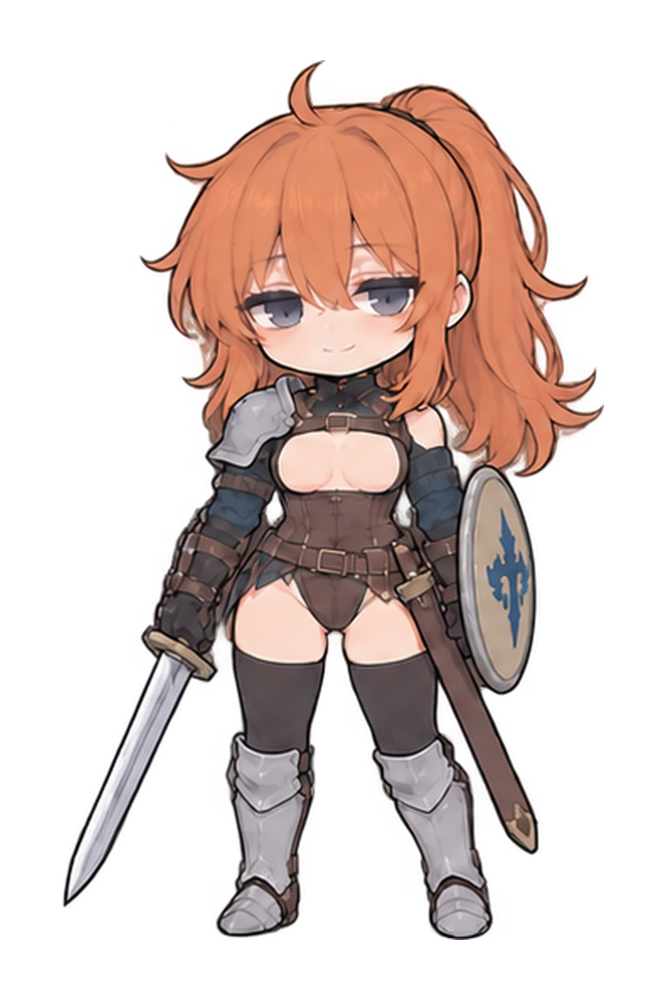
全身（白背景）
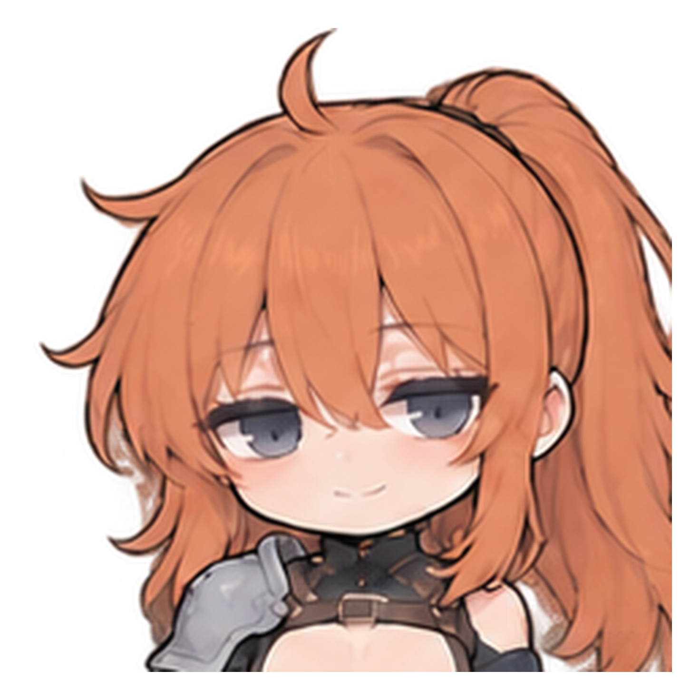
顔のアップ
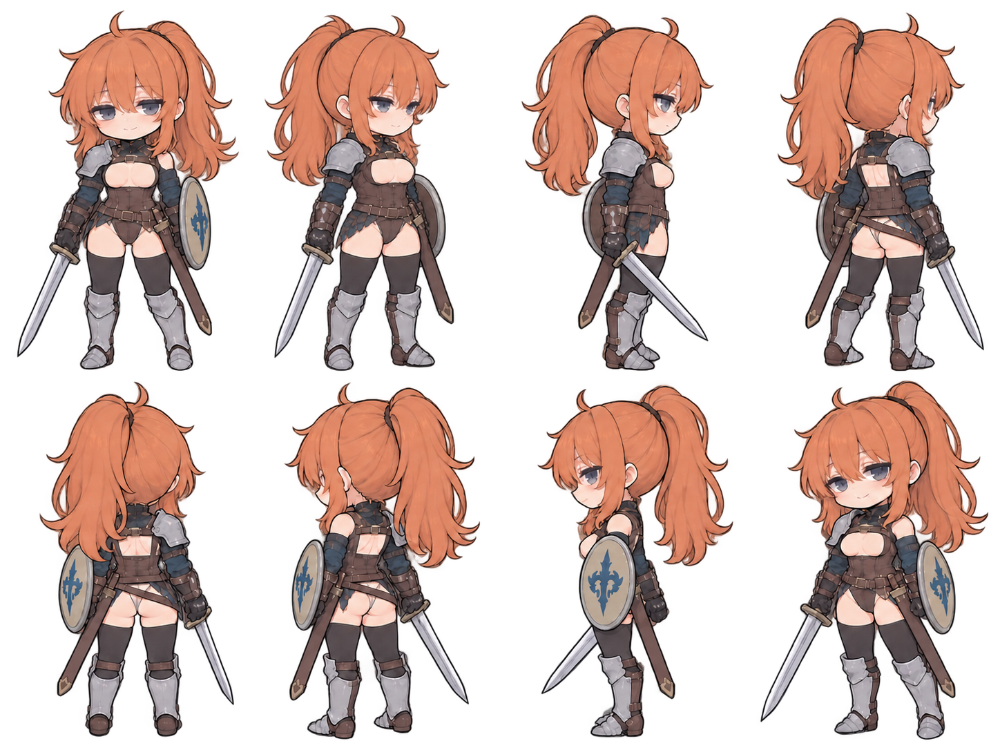
8方向の絵
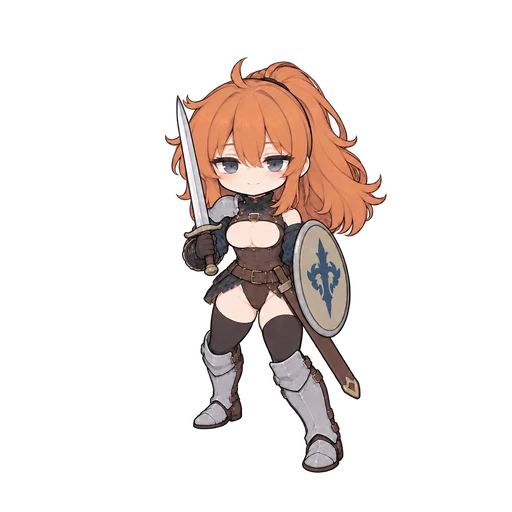
手本1（ChatGPT の絵）
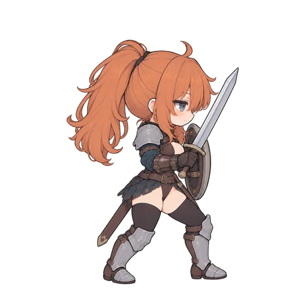
手本2（ChatGPT の絵）後ろ手に縛られて身をよじる 2枚


aria__arms_behind_squirm__front__0.png2Dゲームのキャラクター「アリア」の、アニメーション用の1枚絵を1枚描いてください。 ・添付のキャラクターの画像と同じ人物を、同じ絵柄・同じ頭身（小さめのデフォルメ）・同じ髪型・同じ衣装と色で描く。持ち物と特徴：腰に剣の鞘（いつも）。剣と丸い盾（青い模様）は、ポーズの図に描いてあるときだけ持つ ・姿勢・向き・手足の位置は、添付のポーズの図（マネキン）に合わせる。図の色：青＝本人の右半身、橙＝左半身、灰色＝胴と頭。図の線・色・関節の丸は描かない。図の色の付いた線・輪・塊は、押さえているものの位置 ・全身が入る正方形。背景は白一色（できれば透明）。足元の影・床・効果線・文字・枠は描かない 場面：後ろ手に縛られて身をよじる（8コマのうち1コマ目） 向き：正面（こちらを向く） 体勢：立つ／腕：後ろ手（手首を背中でまとめる）／脚：膝を閉じる 動き：体をよじる。膝を寄せる。かかとを交互に上げる。下を向く 押さえられている所：両手首 押さえているものの見た目：thick dark violet rubbery tentacles, smooth rounded tentacles 様子（英語）：wrists pulled together behind body, twisting against restraint, tense shoulders, knees held close, struggling
下絵（組み立てた絵）を添付して頼む
下絵を保存2Dゲームのキャラクター「アリア」の、アニメーション用の1枚絵を1枚描いてください。 ・添付の「下絵」は、同じキャラクターの絵の部位を切り貼りして、この姿勢に並べたものです。人物・髪型・衣装・色・絵柄・頭身・姿勢・向き・構図はこの下絵のまま変えずに、切り貼りの継ぎ目・ずれ・欠け・はみ出しだけを自然に描き直して、1枚の絵として仕上げてください ・手足の位置は、添付のポーズの図（マネキン）にも合わせる。図の線・色は描かない。図の色の付いた線・輪・塊は、押さえているものの位置 ・背景は白一色（できれば透明）。足元の影・床・効果線・文字・枠は描かない 場面：後ろ手に縛られて身をよじる（8コマのうち1コマ目） 向き：正面（こちらを向く） 体勢：立つ／腕：後ろ手（手首を背中でまとめる）／脚：膝を閉じる 動き：体をよじる。膝を寄せる。かかとを交互に上げる。下を向く 押さえられている所：両手首 押さえているものの見た目：thick dark violet rubbery tentacles, smooth rounded tentacles 様子（英語）：wrists pulled together behind body, twisting against restraint, tense shoulders, knees held close, struggling


aria__arms_behind_squirm__front__2.png2Dゲームのキャラクター「アリア」の、アニメーション用の1枚絵を1枚描いてください。 ・添付のキャラクターの画像と同じ人物を、同じ絵柄・同じ頭身（小さめのデフォルメ）・同じ髪型・同じ衣装と色で描く。持ち物と特徴：腰に剣の鞘（いつも）。剣と丸い盾（青い模様）は、ポーズの図に描いてあるときだけ持つ ・姿勢・向き・手足の位置は、添付のポーズの図（マネキン）に合わせる。図の色：青＝本人の右半身、橙＝左半身、灰色＝胴と頭。図の線・色・関節の丸は描かない。図の色の付いた線・輪・塊は、押さえているものの位置 ・全身が入る正方形。背景は白一色（できれば透明）。足元の影・床・効果線・文字・枠は描かない 場面：後ろ手に縛られて身をよじる（8コマのうち3コマ目） 向き：正面（こちらを向く） 体勢：立つ／腕：後ろ手（手首を背中でまとめる）／脚：膝を閉じる 動き：体をよじる。膝を寄せる。かかとを交互に上げる。下を向く 押さえられている所：両手首 押さえているものの見た目：thick dark violet rubbery tentacles, smooth rounded tentacles 様子（英語）：wrists pulled together behind body, twisting against restraint, tense shoulders, knees held close, struggling
下絵（組み立てた絵）を添付して頼む
下絵を保存2Dゲームのキャラクター「アリア」の、アニメーション用の1枚絵を1枚描いてください。 ・添付の「下絵」は、同じキャラクターの絵の部位を切り貼りして、この姿勢に並べたものです。人物・髪型・衣装・色・絵柄・頭身・姿勢・向き・構図はこの下絵のまま変えずに、切り貼りの継ぎ目・ずれ・欠け・はみ出しだけを自然に描き直して、1枚の絵として仕上げてください ・手足の位置は、添付のポーズの図（マネキン）にも合わせる。図の線・色は描かない。図の色の付いた線・輪・塊は、押さえているものの位置 ・背景は白一色（できれば透明）。足元の影・床・効果線・文字・枠は描かない 場面：後ろ手に縛られて身をよじる（8コマのうち3コマ目） 向き：正面（こちらを向く） 体勢：立つ／腕：後ろ手（手首を背中でまとめる）／脚：膝を閉じる 動き：体をよじる。膝を寄せる。かかとを交互に上げる。下を向く 押さえられている所：両手首 押さえているものの見た目：thick dark violet rubbery tentacles, smooth rounded tentacles 様子（英語）：wrists pulled together behind body, twisting against restraint, tense shoulders, knees held close, struggling
後ろ手に縛られて振りほどこうとする 2枚


aria__arms_behind_wrench__front__0.png2Dゲームのキャラクター「アリア」の、アニメーション用の1枚絵を1枚描いてください。 ・添付のキャラクターの画像と同じ人物を、同じ絵柄・同じ頭身（小さめのデフォルメ）・同じ髪型・同じ衣装と色で描く。持ち物と特徴：腰に剣の鞘（いつも）。剣と丸い盾（青い模様）は、ポーズの図に描いてあるときだけ持つ ・姿勢・向き・手足の位置は、添付のポーズの図（マネキン）に合わせる。図の色：青＝本人の右半身、橙＝左半身、灰色＝胴と頭。図の線・色・関節の丸は描かない。図の色の付いた線・輪・塊は、押さえているものの位置 ・全身が入る正方形。背景は白一色（できれば透明）。足元の影・床・効果線・文字・枠は描かない 場面：後ろ手に縛られて振りほどこうとする（8コマのうち1コマ目） 向き：正面（こちらを向く） 体勢：立つ／腕：後ろ手／脚：踏ん張る足は爪先立ち 動き：肩をひねって左右に振りほどこうとする。胸が前に出る 押さえられている所：両手首 押さえているものの見た目：thick dark violet rubbery tentacles, smooth rounded tentacles 様子（英語）：wrists restrained behind body, forcefully twisting shoulders, pulling against restraint, braced body, determined struggling expression
下絵（組み立てた絵）を添付して頼む
下絵を保存2Dゲームのキャラクター「アリア」の、アニメーション用の1枚絵を1枚描いてください。 ・添付の「下絵」は、同じキャラクターの絵の部位を切り貼りして、この姿勢に並べたものです。人物・髪型・衣装・色・絵柄・頭身・姿勢・向き・構図はこの下絵のまま変えずに、切り貼りの継ぎ目・ずれ・欠け・はみ出しだけを自然に描き直して、1枚の絵として仕上げてください ・手足の位置は、添付のポーズの図（マネキン）にも合わせる。図の線・色は描かない。図の色の付いた線・輪・塊は、押さえているものの位置 ・背景は白一色（できれば透明）。足元の影・床・効果線・文字・枠は描かない 場面：後ろ手に縛られて振りほどこうとする（8コマのうち1コマ目） 向き：正面（こちらを向く） 体勢：立つ／腕：後ろ手／脚：踏ん張る足は爪先立ち 動き：肩をひねって左右に振りほどこうとする。胸が前に出る 押さえられている所：両手首 押さえているものの見た目：thick dark violet rubbery tentacles, smooth rounded tentacles 様子（英語）：wrists restrained behind body, forcefully twisting shoulders, pulling against restraint, braced body, determined struggling expression


aria__arms_behind_wrench__front__5.png2Dゲームのキャラクター「アリア」の、アニメーション用の1枚絵を1枚描いてください。 ・添付のキャラクターの画像と同じ人物を、同じ絵柄・同じ頭身（小さめのデフォルメ）・同じ髪型・同じ衣装と色で描く。持ち物と特徴：腰に剣の鞘（いつも）。剣と丸い盾（青い模様）は、ポーズの図に描いてあるときだけ持つ ・姿勢・向き・手足の位置は、添付のポーズの図（マネキン）に合わせる。図の色：青＝本人の右半身、橙＝左半身、灰色＝胴と頭。図の線・色・関節の丸は描かない。図の色の付いた線・輪・塊は、押さえているものの位置 ・全身が入る正方形。背景は白一色（できれば透明）。足元の影・床・効果線・文字・枠は描かない 場面：後ろ手に縛られて振りほどこうとする（8コマのうち6コマ目） 向き：正面（こちらを向く） 体勢：立つ／腕：後ろ手／脚：踏ん張る足は爪先立ち 動き：肩をひねって左右に振りほどこうとする。胸が前に出る 押さえられている所：両手首 押さえているものの見た目：thick dark violet rubbery tentacles, smooth rounded tentacles 様子（英語）：wrists restrained behind body, forcefully twisting shoulders, pulling against restraint, braced body, determined struggling expression
下絵（組み立てた絵）を添付して頼む
下絵を保存2Dゲームのキャラクター「アリア」の、アニメーション用の1枚絵を1枚描いてください。 ・添付の「下絵」は、同じキャラクターの絵の部位を切り貼りして、この姿勢に並べたものです。人物・髪型・衣装・色・絵柄・頭身・姿勢・向き・構図はこの下絵のまま変えずに、切り貼りの継ぎ目・ずれ・欠け・はみ出しだけを自然に描き直して、1枚の絵として仕上げてください ・手足の位置は、添付のポーズの図（マネキン）にも合わせる。図の線・色は描かない。図の色の付いた線・輪・塊は、押さえているものの位置 ・背景は白一色（できれば透明）。足元の影・床・効果線・文字・枠は描かない 場面：後ろ手に縛られて振りほどこうとする（8コマのうち6コマ目） 向き：正面（こちらを向く） 体勢：立つ／腕：後ろ手／脚：踏ん張る足は爪先立ち 動き：肩をひねって左右に振りほどこうとする。胸が前に出る 押さえられている所：両手首 押さえているものの見た目：thick dark violet rubbery tentacles, smooth rounded tentacles 様子（英語）：wrists restrained behind body, forcefully twisting shoulders, pulling against restraint, braced body, determined struggling expression
両手首を上から吊られ、腕を引き下ろそうと力む 2枚


aria__elbows_up_strain__front__0.png2Dゲームのキャラクター「アリア」の、アニメーション用の1枚絵を1枚描いてください。 ・添付のキャラクターの画像と同じ人物を、同じ絵柄・同じ頭身（小さめのデフォルメ）・同じ髪型・同じ衣装と色で描く。持ち物と特徴：腰に剣の鞘（いつも）。剣と丸い盾（青い模様）は、ポーズの図に描いてあるときだけ持つ ・姿勢・向き・手足の位置は、添付のポーズの図（マネキン）に合わせる。図の色：青＝本人の右半身、橙＝左半身、灰色＝胴と頭。図の線・色・関節の丸は描かない。図の色の付いた線・輪・塊は、押さえているものの位置 ・全身が入る正方形。背景は白一色（できれば透明）。足元の影・床・効果線・文字・枠は描かない 場面：両手首を上から吊られ、腕を引き下ろそうと力む（8コマのうち1コマ目） 向き：正面（こちらを向く） 体勢：立つ／腕：両手を頭の上に上げる／脚：膝を少し曲げる 動き：腕を引き下ろそうと力む。負けると爪先立ちに引き上げられる 押さえられている所：両手首（上から吊る） 押さえているものの見た目：thick dark violet rubbery tentacles, smooth rounded tentacles 様子（英語）：wrists bound together overhead, restraint extending upward, arms pulled taut, straining downward against restraint
下絵（組み立てた絵）を添付して頼む
下絵を保存2Dゲームのキャラクター「アリア」の、アニメーション用の1枚絵を1枚描いてください。 ・添付の「下絵」は、同じキャラクターの絵の部位を切り貼りして、この姿勢に並べたものです。人物・髪型・衣装・色・絵柄・頭身・姿勢・向き・構図はこの下絵のまま変えずに、切り貼りの継ぎ目・ずれ・欠け・はみ出しだけを自然に描き直して、1枚の絵として仕上げてください ・手足の位置は、添付のポーズの図（マネキン）にも合わせる。図の線・色は描かない。図の色の付いた線・輪・塊は、押さえているものの位置 ・背景は白一色（できれば透明）。足元の影・床・効果線・文字・枠は描かない 場面：両手首を上から吊られ、腕を引き下ろそうと力む（8コマのうち1コマ目） 向き：正面（こちらを向く） 体勢：立つ／腕：両手を頭の上に上げる／脚：膝を少し曲げる 動き：腕を引き下ろそうと力む。負けると爪先立ちに引き上げられる 押さえられている所：両手首（上から吊る） 押さえているものの見た目：thick dark violet rubbery tentacles, smooth rounded tentacles 様子（英語）：wrists bound together overhead, restraint extending upward, arms pulled taut, straining downward against restraint


aria__elbows_up_strain__front__2.png2Dゲームのキャラクター「アリア」の、アニメーション用の1枚絵を1枚描いてください。 ・添付のキャラクターの画像と同じ人物を、同じ絵柄・同じ頭身（小さめのデフォルメ）・同じ髪型・同じ衣装と色で描く。持ち物と特徴：腰に剣の鞘（いつも）。剣と丸い盾（青い模様）は、ポーズの図に描いてあるときだけ持つ ・姿勢・向き・手足の位置は、添付のポーズの図（マネキン）に合わせる。図の色：青＝本人の右半身、橙＝左半身、灰色＝胴と頭。図の線・色・関節の丸は描かない。図の色の付いた線・輪・塊は、押さえているものの位置 ・全身が入る正方形。背景は白一色（できれば透明）。足元の影・床・効果線・文字・枠は描かない 場面：両手首を上から吊られ、腕を引き下ろそうと力む（8コマのうち3コマ目） 向き：正面（こちらを向く） 体勢：立つ／腕：両手を頭の上に上げる／脚：膝を少し曲げる 動き：腕を引き下ろそうと力む。負けると爪先立ちに引き上げられる 押さえられている所：両手首（上から吊る） 押さえているものの見た目：thick dark violet rubbery tentacles, smooth rounded tentacles 様子（英語）：wrists bound together overhead, restraint extending upward, arms pulled taut, straining downward against restraint
下絵（組み立てた絵）を添付して頼む
下絵を保存2Dゲームのキャラクター「アリア」の、アニメーション用の1枚絵を1枚描いてください。 ・添付の「下絵」は、同じキャラクターの絵の部位を切り貼りして、この姿勢に並べたものです。人物・髪型・衣装・色・絵柄・頭身・姿勢・向き・構図はこの下絵のまま変えずに、切り貼りの継ぎ目・ずれ・欠け・はみ出しだけを自然に描き直して、1枚の絵として仕上げてください ・手足の位置は、添付のポーズの図（マネキン）にも合わせる。図の線・色は描かない。図の色の付いた線・輪・塊は、押さえているものの位置 ・背景は白一色（できれば透明）。足元の影・床・効果線・文字・枠は描かない 場面：両手首を上から吊られ、腕を引き下ろそうと力む（8コマのうち3コマ目） 向き：正面（こちらを向く） 体勢：立つ／腕：両手を頭の上に上げる／脚：膝を少し曲げる 動き：腕を引き下ろそうと力む。負けると爪先立ちに引き上げられる 押さえられている所：両手首（上から吊る） 押さえているものの見た目：thick dark violet rubbery tentacles, smooth rounded tentacles 様子（英語）：wrists bound together overhead, restraint extending upward, arms pulled taut, straining downward against restraint
後ろ手で、膝を左右へ引かれる 2枚


aria__legs_pulled_open__front__0.png2Dゲームのキャラクター「アリア」の、アニメーション用の1枚絵を1枚描いてください。 ・添付のキャラクターの画像と同じ人物を、同じ絵柄・同じ頭身（小さめのデフォルメ）・同じ髪型・同じ衣装と色で描く。持ち物と特徴：腰に剣の鞘（いつも）。剣と丸い盾（青い模様）は、ポーズの図に描いてあるときだけ持つ ・姿勢・向き・手足の位置は、添付のポーズの図（マネキン）に合わせる。図の色：青＝本人の右半身、橙＝左半身、灰色＝胴と頭。図の線・色・関節の丸は描かない。図の色の付いた線・輪・塊は、押さえているものの位置 ・全身が入る正方形。背景は白一色（できれば透明）。足元の影・床・効果線・文字・枠は描かない 場面：後ろ手で、膝を左右へ引かれる（12コマのうち1コマ目・閉じる） 向き：正面（こちらを向く） 体勢：立つ／腕：後ろ手／脚：閉じた膝 → 左右へ引かれる 動き：はじめ膝を寄せる → 最後は膝が外へ開いて腰が落ちる 押さえられている所：両手首・両膝（左右へ引く） 押さえているものの見た目：thick dark violet rubbery tentacles, smooth rounded tentacles 様子（英語）：wrists restrained behind body, thick dark violet rubbery tentacles around both knees, knees pulled outward, resisting the pull
下絵（組み立てた絵）を添付して頼む
下絵を保存2Dゲームのキャラクター「アリア」の、アニメーション用の1枚絵を1枚描いてください。 ・添付の「下絵」は、同じキャラクターの絵の部位を切り貼りして、この姿勢に並べたものです。人物・髪型・衣装・色・絵柄・頭身・姿勢・向き・構図はこの下絵のまま変えずに、切り貼りの継ぎ目・ずれ・欠け・はみ出しだけを自然に描き直して、1枚の絵として仕上げてください ・手足の位置は、添付のポーズの図（マネキン）にも合わせる。図の線・色は描かない。図の色の付いた線・輪・塊は、押さえているものの位置 ・背景は白一色（できれば透明）。足元の影・床・効果線・文字・枠は描かない 場面：後ろ手で、膝を左右へ引かれる（12コマのうち1コマ目・閉じる） 向き：正面（こちらを向く） 体勢：立つ／腕：後ろ手／脚：閉じた膝 → 左右へ引かれる 動き：はじめ膝を寄せる → 最後は膝が外へ開いて腰が落ちる 押さえられている所：両手首・両膝（左右へ引く） 押さえているものの見た目：thick dark violet rubbery tentacles, smooth rounded tentacles 様子（英語）：wrists restrained behind body, thick dark violet rubbery tentacles around both knees, knees pulled outward, resisting the pull


aria__legs_pulled_open__front__7.png2Dゲームのキャラクター「アリア」の、アニメーション用の1枚絵を1枚描いてください。 ・添付のキャラクターの画像と同じ人物を、同じ絵柄・同じ頭身（小さめのデフォルメ）・同じ髪型・同じ衣装と色で描く。持ち物と特徴：腰に剣の鞘（いつも）。剣と丸い盾（青い模様）は、ポーズの図に描いてあるときだけ持つ ・姿勢・向き・手足の位置は、添付のポーズの図（マネキン）に合わせる。図の色：青＝本人の右半身、橙＝左半身、灰色＝胴と頭。図の線・色・関節の丸は描かない。図の色の付いた線・輪・塊は、押さえているものの位置 ・全身が入る正方形。背景は白一色（できれば透明）。足元の影・床・効果線・文字・枠は描かない 場面：後ろ手で、膝を左右へ引かれる（12コマのうち8コマ目・開かれた） 向き：正面（こちらを向く） 体勢：立つ／腕：後ろ手／脚：閉じた膝 → 左右へ引かれる 動き：はじめ膝を寄せる → 最後は膝が外へ開いて腰が落ちる 押さえられている所：両手首・両膝（左右へ引く） 押さえているものの見た目：thick dark violet rubbery tentacles, smooth rounded tentacles 様子（英語）：wrists restrained behind body, thick dark violet rubbery tentacles around both knees, knees pulled outward, resisting the pull
下絵（組み立てた絵）を添付して頼む
下絵を保存2Dゲームのキャラクター「アリア」の、アニメーション用の1枚絵を1枚描いてください。 ・添付の「下絵」は、同じキャラクターの絵の部位を切り貼りして、この姿勢に並べたものです。人物・髪型・衣装・色・絵柄・頭身・姿勢・向き・構図はこの下絵のまま変えずに、切り貼りの継ぎ目・ずれ・欠け・はみ出しだけを自然に描き直して、1枚の絵として仕上げてください ・手足の位置は、添付のポーズの図（マネキン）にも合わせる。図の線・色は描かない。図の色の付いた線・輪・塊は、押さえているものの位置 ・背景は白一色（できれば透明）。足元の影・床・効果線・文字・枠は描かない 場面：後ろ手で、膝を左右へ引かれる（12コマのうち8コマ目・開かれた） 向き：正面（こちらを向く） 体勢：立つ／腕：後ろ手／脚：閉じた膝 → 左右へ引かれる 動き：はじめ膝を寄せる → 最後は膝が外へ開いて腰が落ちる 押さえられている所：両手首・両膝（左右へ引く） 押さえているものの見た目：thick dark violet rubbery tentacles, smooth rounded tentacles 様子（英語）：wrists restrained behind body, thick dark violet rubbery tentacles around both knees, knees pulled outward, resisting the pull
後ろ手で、膝を左右へ引かれたまま耐える 2枚


aria__legs_held_open__front__0.png2Dゲームのキャラクター「アリア」の、アニメーション用の1枚絵を1枚描いてください。 ・添付のキャラクターの画像と同じ人物を、同じ絵柄・同じ頭身（小さめのデフォルメ）・同じ髪型・同じ衣装と色で描く。持ち物と特徴：腰に剣の鞘（いつも）。剣と丸い盾（青い模様）は、ポーズの図に描いてあるときだけ持つ ・姿勢・向き・手足の位置は、添付のポーズの図（マネキン）に合わせる。図の色：青＝本人の右半身、橙＝左半身、灰色＝胴と頭。図の線・色・関節の丸は描かない。図の色の付いた線・輪・塊は、押さえているものの位置 ・全身が入る正方形。背景は白一色（できれば透明）。足元の影・床・効果線・文字・枠は描かない 場面：後ろ手で、膝を左右へ引かれたまま耐える（8コマのうち1コマ目） 向き：正面（こちらを向く） 体勢：立つ／腕：後ろ手／脚：左右に引かれたまま 動き：膝が小さく震える 押さえられている所：両手首・両膝（左右） 押さえているものの見た目：thick dark violet rubbery tentacles, smooth rounded tentacles 様子（英語）：wrists restrained behind body, thick dark violet rubbery tentacles around both knees, knees held outward, trembling legs, sustained resistance
下絵（組み立てた絵）を添付して頼む
下絵を保存2Dゲームのキャラクター「アリア」の、アニメーション用の1枚絵を1枚描いてください。 ・添付の「下絵」は、同じキャラクターの絵の部位を切り貼りして、この姿勢に並べたものです。人物・髪型・衣装・色・絵柄・頭身・姿勢・向き・構図はこの下絵のまま変えずに、切り貼りの継ぎ目・ずれ・欠け・はみ出しだけを自然に描き直して、1枚の絵として仕上げてください ・手足の位置は、添付のポーズの図（マネキン）にも合わせる。図の線・色は描かない。図の色の付いた線・輪・塊は、押さえているものの位置 ・背景は白一色（できれば透明）。足元の影・床・効果線・文字・枠は描かない 場面：後ろ手で、膝を左右へ引かれたまま耐える（8コマのうち1コマ目） 向き：正面（こちらを向く） 体勢：立つ／腕：後ろ手／脚：左右に引かれたまま 動き：膝が小さく震える 押さえられている所：両手首・両膝（左右） 押さえているものの見た目：thick dark violet rubbery tentacles, smooth rounded tentacles 様子（英語）：wrists restrained behind body, thick dark violet rubbery tentacles around both knees, knees held outward, trembling legs, sustained resistance


aria__legs_held_open__front__2.png2Dゲームのキャラクター「アリア」の、アニメーション用の1枚絵を1枚描いてください。 ・添付のキャラクターの画像と同じ人物を、同じ絵柄・同じ頭身（小さめのデフォルメ）・同じ髪型・同じ衣装と色で描く。持ち物と特徴：腰に剣の鞘（いつも）。剣と丸い盾（青い模様）は、ポーズの図に描いてあるときだけ持つ ・姿勢・向き・手足の位置は、添付のポーズの図（マネキン）に合わせる。図の色：青＝本人の右半身、橙＝左半身、灰色＝胴と頭。図の線・色・関節の丸は描かない。図の色の付いた線・輪・塊は、押さえているものの位置 ・全身が入る正方形。背景は白一色（できれば透明）。足元の影・床・効果線・文字・枠は描かない 場面：後ろ手で、膝を左右へ引かれたまま耐える（8コマのうち3コマ目） 向き：正面（こちらを向く） 体勢：立つ／腕：後ろ手／脚：左右に引かれたまま 動き：膝が小さく震える 押さえられている所：両手首・両膝（左右） 押さえているものの見た目：thick dark violet rubbery tentacles, smooth rounded tentacles 様子（英語）：wrists restrained behind body, thick dark violet rubbery tentacles around both knees, knees held outward, trembling legs, sustained resistance
下絵（組み立てた絵）を添付して頼む
下絵を保存2Dゲームのキャラクター「アリア」の、アニメーション用の1枚絵を1枚描いてください。 ・添付の「下絵」は、同じキャラクターの絵の部位を切り貼りして、この姿勢に並べたものです。人物・髪型・衣装・色・絵柄・頭身・姿勢・向き・構図はこの下絵のまま変えずに、切り貼りの継ぎ目・ずれ・欠け・はみ出しだけを自然に描き直して、1枚の絵として仕上げてください ・手足の位置は、添付のポーズの図（マネキン）にも合わせる。図の線・色は描かない。図の色の付いた線・輪・塊は、押さえているものの位置 ・背景は白一色（できれば透明）。足元の影・床・効果線・文字・枠は描かない 場面：後ろ手で、膝を左右へ引かれたまま耐える（8コマのうち3コマ目） 向き：正面（こちらを向く） 体勢：立つ／腕：後ろ手／脚：左右に引かれたまま 動き：膝が小さく震える 押さえられている所：両手首・両膝（左右） 押さえているものの見た目：thick dark violet rubbery tentacles, smooth rounded tentacles 様子（英語）：wrists restrained behind body, thick dark violet rubbery tentacles around both knees, knees held outward, trembling legs, sustained resistance
後ろ手で、足を開いて立ったまま体が前後に揺れる 2枚


aria__hip_rock_spread__front__0.png2Dゲームのキャラクター「アリア」の、アニメーション用の1枚絵を1枚描いてください。 ・添付のキャラクターの画像と同じ人物を、同じ絵柄・同じ頭身（小さめのデフォルメ）・同じ髪型・同じ衣装と色で描く。持ち物と特徴：腰に剣の鞘（いつも）。剣と丸い盾（青い模様）は、ポーズの図に描いてあるときだけ持つ ・姿勢・向き・手足の位置は、添付のポーズの図（マネキン）に合わせる。図の色：青＝本人の右半身、橙＝左半身、灰色＝胴と頭。図の線・色・関節の丸は描かない。図の色の付いた線・輪・塊は、押さえているものの位置 ・全身が入る正方形。背景は白一色（できれば透明）。足元の影・床・効果線・文字・枠は描かない 場面：後ろ手で、足を開いて立ったまま体が前後に揺れる（8コマのうち1コマ目） 向き：正面（こちらを向く） 体勢：立つ／腕：後ろ手／脚：足を開く 動き：体が前後に揺れる 押さえられている所：両手首・両膝（左右） 押さえているものの見た目：thick dark violet rubbery tentacles, smooth rounded tentacles 様子（英語）：wrists restrained behind body, knees held apart by thick dark violet rubbery tentacles, body rocking under restraint, tense balance
下絵（組み立てた絵）を添付して頼む
下絵を保存2Dゲームのキャラクター「アリア」の、アニメーション用の1枚絵を1枚描いてください。 ・添付の「下絵」は、同じキャラクターの絵の部位を切り貼りして、この姿勢に並べたものです。人物・髪型・衣装・色・絵柄・頭身・姿勢・向き・構図はこの下絵のまま変えずに、切り貼りの継ぎ目・ずれ・欠け・はみ出しだけを自然に描き直して、1枚の絵として仕上げてください ・手足の位置は、添付のポーズの図（マネキン）にも合わせる。図の線・色は描かない。図の色の付いた線・輪・塊は、押さえているものの位置 ・背景は白一色（できれば透明）。足元の影・床・効果線・文字・枠は描かない 場面：後ろ手で、足を開いて立ったまま体が前後に揺れる（8コマのうち1コマ目） 向き：正面（こちらを向く） 体勢：立つ／腕：後ろ手／脚：足を開く 動き：体が前後に揺れる 押さえられている所：両手首・両膝（左右） 押さえているものの見た目：thick dark violet rubbery tentacles, smooth rounded tentacles 様子（英語）：wrists restrained behind body, knees held apart by thick dark violet rubbery tentacles, body rocking under restraint, tense balance


aria__hip_rock_spread__front__3.png2Dゲームのキャラクター「アリア」の、アニメーション用の1枚絵を1枚描いてください。 ・添付のキャラクターの画像と同じ人物を、同じ絵柄・同じ頭身（小さめのデフォルメ）・同じ髪型・同じ衣装と色で描く。持ち物と特徴：腰に剣の鞘（いつも）。剣と丸い盾（青い模様）は、ポーズの図に描いてあるときだけ持つ ・姿勢・向き・手足の位置は、添付のポーズの図（マネキン）に合わせる。図の色：青＝本人の右半身、橙＝左半身、灰色＝胴と頭。図の線・色・関節の丸は描かない。図の色の付いた線・輪・塊は、押さえているものの位置 ・全身が入る正方形。背景は白一色（できれば透明）。足元の影・床・効果線・文字・枠は描かない 場面：後ろ手で、足を開いて立ったまま体が前後に揺れる（8コマのうち4コマ目） 向き：正面（こちらを向く） 体勢：立つ／腕：後ろ手／脚：足を開く 動き：体が前後に揺れる 押さえられている所：両手首・両膝（左右） 押さえているものの見た目：thick dark violet rubbery tentacles, smooth rounded tentacles 様子（英語）：wrists restrained behind body, knees held apart by thick dark violet rubbery tentacles, body rocking under restraint, tense balance
下絵（組み立てた絵）を添付して頼む
下絵を保存2Dゲームのキャラクター「アリア」の、アニメーション用の1枚絵を1枚描いてください。 ・添付の「下絵」は、同じキャラクターの絵の部位を切り貼りして、この姿勢に並べたものです。人物・髪型・衣装・色・絵柄・頭身・姿勢・向き・構図はこの下絵のまま変えずに、切り貼りの継ぎ目・ずれ・欠け・はみ出しだけを自然に描き直して、1枚の絵として仕上げてください ・手足の位置は、添付のポーズの図（マネキン）にも合わせる。図の線・色は描かない。図の色の付いた線・輪・塊は、押さえているものの位置 ・背景は白一色（できれば透明）。足元の影・床・効果線・文字・枠は描かない 場面：後ろ手で、足を開いて立ったまま体が前後に揺れる（8コマのうち4コマ目） 向き：正面（こちらを向く） 体勢：立つ／腕：後ろ手／脚：足を開く 動き：体が前後に揺れる 押さえられている所：両手首・両膝（左右） 押さえているものの見た目：thick dark violet rubbery tentacles, smooth rounded tentacles 様子（英語）：wrists restrained behind body, knees held apart by thick dark violet rubbery tentacles, body rocking under restraint, tense balance
後ろ手で、膝を閉じたまま体が前後に揺れる 2枚


aria__hip_rock_closed__front__0.png2Dゲームのキャラクター「アリア」の、アニメーション用の1枚絵を1枚描いてください。 ・添付のキャラクターの画像と同じ人物を、同じ絵柄・同じ頭身（小さめのデフォルメ）・同じ髪型・同じ衣装と色で描く。持ち物と特徴：腰に剣の鞘（いつも）。剣と丸い盾（青い模様）は、ポーズの図に描いてあるときだけ持つ ・姿勢・向き・手足の位置は、添付のポーズの図（マネキン）に合わせる。図の色：青＝本人の右半身、橙＝左半身、灰色＝胴と頭。図の線・色・関節の丸は描かない。図の色の付いた線・輪・塊は、押さえているものの位置 ・全身が入る正方形。背景は白一色（できれば透明）。足元の影・床・効果線・文字・枠は描かない 場面：後ろ手で、膝を閉じたまま体が前後に揺れる（8コマのうち1コマ目） 向き：正面（こちらを向く） 体勢：立つ／腕：後ろ手／脚：膝を閉じたまま 動き：体が小さく前後に揺れる。そのたび爪先立ち 押さえられている所：両手首 押さえているものの見た目：thick dark violet rubbery tentacles, smooth rounded tentacles 様子（英語）：wrists restrained behind body, knees held close together, restrained rocking motion, tense calves, unstable balance
下絵（組み立てた絵）を添付して頼む
下絵を保存2Dゲームのキャラクター「アリア」の、アニメーション用の1枚絵を1枚描いてください。 ・添付の「下絵」は、同じキャラクターの絵の部位を切り貼りして、この姿勢に並べたものです。人物・髪型・衣装・色・絵柄・頭身・姿勢・向き・構図はこの下絵のまま変えずに、切り貼りの継ぎ目・ずれ・欠け・はみ出しだけを自然に描き直して、1枚の絵として仕上げてください ・手足の位置は、添付のポーズの図（マネキン）にも合わせる。図の線・色は描かない。図の色の付いた線・輪・塊は、押さえているものの位置 ・背景は白一色（できれば透明）。足元の影・床・効果線・文字・枠は描かない 場面：後ろ手で、膝を閉じたまま体が前後に揺れる（8コマのうち1コマ目） 向き：正面（こちらを向く） 体勢：立つ／腕：後ろ手／脚：膝を閉じたまま 動き：体が小さく前後に揺れる。そのたび爪先立ち 押さえられている所：両手首 押さえているものの見た目：thick dark violet rubbery tentacles, smooth rounded tentacles 様子（英語）：wrists restrained behind body, knees held close together, restrained rocking motion, tense calves, unstable balance


aria__hip_rock_closed__front__3.png2Dゲームのキャラクター「アリア」の、アニメーション用の1枚絵を1枚描いてください。 ・添付のキャラクターの画像と同じ人物を、同じ絵柄・同じ頭身（小さめのデフォルメ）・同じ髪型・同じ衣装と色で描く。持ち物と特徴：腰に剣の鞘（いつも）。剣と丸い盾（青い模様）は、ポーズの図に描いてあるときだけ持つ ・姿勢・向き・手足の位置は、添付のポーズの図（マネキン）に合わせる。図の色：青＝本人の右半身、橙＝左半身、灰色＝胴と頭。図の線・色・関節の丸は描かない。図の色の付いた線・輪・塊は、押さえているものの位置 ・全身が入る正方形。背景は白一色（できれば透明）。足元の影・床・効果線・文字・枠は描かない 場面：後ろ手で、膝を閉じたまま体が前後に揺れる（8コマのうち4コマ目） 向き：正面（こちらを向く） 体勢：立つ／腕：後ろ手／脚：膝を閉じたまま 動き：体が小さく前後に揺れる。そのたび爪先立ち 押さえられている所：両手首 押さえているものの見た目：thick dark violet rubbery tentacles, smooth rounded tentacles 様子（英語）：wrists restrained behind body, knees held close together, restrained rocking motion, tense calves, unstable balance
下絵（組み立てた絵）を添付して頼む
下絵を保存2Dゲームのキャラクター「アリア」の、アニメーション用の1枚絵を1枚描いてください。 ・添付の「下絵」は、同じキャラクターの絵の部位を切り貼りして、この姿勢に並べたものです。人物・髪型・衣装・色・絵柄・頭身・姿勢・向き・構図はこの下絵のまま変えずに、切り貼りの継ぎ目・ずれ・欠け・はみ出しだけを自然に描き直して、1枚の絵として仕上げてください ・手足の位置は、添付のポーズの図（マネキン）にも合わせる。図の線・色は描かない。図の色の付いた線・輪・塊は、押さえているものの位置 ・背景は白一色（できれば透明）。足元の影・床・効果線・文字・枠は描かない 場面：後ろ手で、膝を閉じたまま体が前後に揺れる（8コマのうち4コマ目） 向き：正面（こちらを向く） 体勢：立つ／腕：後ろ手／脚：膝を閉じたまま 動き：体が小さく前後に揺れる。そのたび爪先立ち 押さえられている所：両手首 押さえているものの見た目：thick dark violet rubbery tentacles, smooth rounded tentacles 様子（英語）：wrists restrained behind body, knees held close together, restrained rocking motion, tense calves, unstable balance
後ろ手で、足を開いて立ったまま体が上下に揺れる 2枚


aria__bounce_spread__front__0.png2Dゲームのキャラクター「アリア」の、アニメーション用の1枚絵を1枚描いてください。 ・添付のキャラクターの画像と同じ人物を、同じ絵柄・同じ頭身（小さめのデフォルメ）・同じ髪型・同じ衣装と色で描く。持ち物と特徴：腰に剣の鞘（いつも）。剣と丸い盾（青い模様）は、ポーズの図に描いてあるときだけ持つ ・姿勢・向き・手足の位置は、添付のポーズの図（マネキン）に合わせる。図の色：青＝本人の右半身、橙＝左半身、灰色＝胴と頭。図の線・色・関節の丸は描かない。図の色の付いた線・輪・塊は、押さえているものの位置 ・全身が入る正方形。背景は白一色（できれば透明）。足元の影・床・効果線・文字・枠は描かない 場面：後ろ手で、足を開いて立ったまま体が上下に揺れる（8コマのうち1コマ目） 向き：正面（こちらを向く） 体勢：立つ／腕：後ろ手／脚：足を開く 動き：体が上下に揺れる。上で爪先立ち、下で膝が曲がる 押さえられている所：両手首・両膝（左右） 押さえているものの見た目：thick dark violet rubbery tentacles, smooth rounded tentacles 様子（英語）：wrists restrained behind body, knees held apart by thick dark violet rubbery tentacles, vertical body motion, strained legs
下絵（組み立てた絵）を添付して頼む
下絵を保存2Dゲームのキャラクター「アリア」の、アニメーション用の1枚絵を1枚描いてください。 ・添付の「下絵」は、同じキャラクターの絵の部位を切り貼りして、この姿勢に並べたものです。人物・髪型・衣装・色・絵柄・頭身・姿勢・向き・構図はこの下絵のまま変えずに、切り貼りの継ぎ目・ずれ・欠け・はみ出しだけを自然に描き直して、1枚の絵として仕上げてください ・手足の位置は、添付のポーズの図（マネキン）にも合わせる。図の線・色は描かない。図の色の付いた線・輪・塊は、押さえているものの位置 ・背景は白一色（できれば透明）。足元の影・床・効果線・文字・枠は描かない 場面：後ろ手で、足を開いて立ったまま体が上下に揺れる（8コマのうち1コマ目） 向き：正面（こちらを向く） 体勢：立つ／腕：後ろ手／脚：足を開く 動き：体が上下に揺れる。上で爪先立ち、下で膝が曲がる 押さえられている所：両手首・両膝（左右） 押さえているものの見た目：thick dark violet rubbery tentacles, smooth rounded tentacles 様子（英語）：wrists restrained behind body, knees held apart by thick dark violet rubbery tentacles, vertical body motion, strained legs


aria__bounce_spread__front__4.png2Dゲームのキャラクター「アリア」の、アニメーション用の1枚絵を1枚描いてください。 ・添付のキャラクターの画像と同じ人物を、同じ絵柄・同じ頭身（小さめのデフォルメ）・同じ髪型・同じ衣装と色で描く。持ち物と特徴：腰に剣の鞘（いつも）。剣と丸い盾（青い模様）は、ポーズの図に描いてあるときだけ持つ ・姿勢・向き・手足の位置は、添付のポーズの図（マネキン）に合わせる。図の色：青＝本人の右半身、橙＝左半身、灰色＝胴と頭。図の線・色・関節の丸は描かない。図の色の付いた線・輪・塊は、押さえているものの位置 ・全身が入る正方形。背景は白一色（できれば透明）。足元の影・床・効果線・文字・枠は描かない 場面：後ろ手で、足を開いて立ったまま体が上下に揺れる（8コマのうち5コマ目） 向き：正面（こちらを向く） 体勢：立つ／腕：後ろ手／脚：足を開く 動き：体が上下に揺れる。上で爪先立ち、下で膝が曲がる 押さえられている所：両手首・両膝（左右） 押さえているものの見た目：thick dark violet rubbery tentacles, smooth rounded tentacles 様子（英語）：wrists restrained behind body, knees held apart by thick dark violet rubbery tentacles, vertical body motion, strained legs
下絵（組み立てた絵）を添付して頼む
下絵を保存2Dゲームのキャラクター「アリア」の、アニメーション用の1枚絵を1枚描いてください。 ・添付の「下絵」は、同じキャラクターの絵の部位を切り貼りして、この姿勢に並べたものです。人物・髪型・衣装・色・絵柄・頭身・姿勢・向き・構図はこの下絵のまま変えずに、切り貼りの継ぎ目・ずれ・欠け・はみ出しだけを自然に描き直して、1枚の絵として仕上げてください ・手足の位置は、添付のポーズの図（マネキン）にも合わせる。図の線・色は描かない。図の色の付いた線・輪・塊は、押さえているものの位置 ・背景は白一色（できれば透明）。足元の影・床・効果線・文字・枠は描かない 場面：後ろ手で、足を開いて立ったまま体が上下に揺れる（8コマのうち5コマ目） 向き：正面（こちらを向く） 体勢：立つ／腕：後ろ手／脚：足を開く 動き：体が上下に揺れる。上で爪先立ち、下で膝が曲がる 押さえられている所：両手首・両膝（左右） 押さえているものの見た目：thick dark violet rubbery tentacles, smooth rounded tentacles 様子（英語）：wrists restrained behind body, knees held apart by thick dark violet rubbery tentacles, vertical body motion, strained legs
手首を上から吊られたまま体が上下に揺れる 2枚


aria__bounce_hung__front__0.png2Dゲームのキャラクター「アリア」の、アニメーション用の1枚絵を1枚描いてください。 ・添付のキャラクターの画像と同じ人物を、同じ絵柄・同じ頭身（小さめのデフォルメ）・同じ髪型・同じ衣装と色で描く。持ち物と特徴：腰に剣の鞘（いつも）。剣と丸い盾（青い模様）は、ポーズの図に描いてあるときだけ持つ ・姿勢・向き・手足の位置は、添付のポーズの図（マネキン）に合わせる。図の色：青＝本人の右半身、橙＝左半身、灰色＝胴と頭。図の線・色・関節の丸は描かない。図の色の付いた線・輪・塊は、押さえているものの位置 ・全身が入る正方形。背景は白一色（できれば透明）。足元の影・床・効果線・文字・枠は描かない 場面：手首を上から吊られたまま体が上下に揺れる（8コマのうち1コマ目） 向き：正面（こちらを向く） 体勢：吊られて立つ／腕：両手を頭の上に上げる／脚：足を開く 動き：体が上下に揺れる。沈むと腕が伸びきる 押さえられている所：両手首（上から吊る）・両膝（左右） 押さえているものの見た目：thick dark violet rubbery tentacles, smooth rounded tentacles 様子（英語）：wrists restrained overhead, thick dark violet rubbery tentacles extending upward, knees held apart, arms pulled taut
下絵（組み立てた絵）を添付して頼む
下絵を保存2Dゲームのキャラクター「アリア」の、アニメーション用の1枚絵を1枚描いてください。 ・添付の「下絵」は、同じキャラクターの絵の部位を切り貼りして、この姿勢に並べたものです。人物・髪型・衣装・色・絵柄・頭身・姿勢・向き・構図はこの下絵のまま変えずに、切り貼りの継ぎ目・ずれ・欠け・はみ出しだけを自然に描き直して、1枚の絵として仕上げてください ・手足の位置は、添付のポーズの図（マネキン）にも合わせる。図の線・色は描かない。図の色の付いた線・輪・塊は、押さえているものの位置 ・背景は白一色（できれば透明）。足元の影・床・効果線・文字・枠は描かない 場面：手首を上から吊られたまま体が上下に揺れる（8コマのうち1コマ目） 向き：正面（こちらを向く） 体勢：吊られて立つ／腕：両手を頭の上に上げる／脚：足を開く 動き：体が上下に揺れる。沈むと腕が伸びきる 押さえられている所：両手首（上から吊る）・両膝（左右） 押さえているものの見た目：thick dark violet rubbery tentacles, smooth rounded tentacles 様子（英語）：wrists restrained overhead, thick dark violet rubbery tentacles extending upward, knees held apart, arms pulled taut


aria__bounce_hung__front__4.png2Dゲームのキャラクター「アリア」の、アニメーション用の1枚絵を1枚描いてください。 ・添付のキャラクターの画像と同じ人物を、同じ絵柄・同じ頭身（小さめのデフォルメ）・同じ髪型・同じ衣装と色で描く。持ち物と特徴：腰に剣の鞘（いつも）。剣と丸い盾（青い模様）は、ポーズの図に描いてあるときだけ持つ ・姿勢・向き・手足の位置は、添付のポーズの図（マネキン）に合わせる。図の色：青＝本人の右半身、橙＝左半身、灰色＝胴と頭。図の線・色・関節の丸は描かない。図の色の付いた線・輪・塊は、押さえているものの位置 ・全身が入る正方形。背景は白一色（できれば透明）。足元の影・床・効果線・文字・枠は描かない 場面：手首を上から吊られたまま体が上下に揺れる（8コマのうち5コマ目） 向き：正面（こちらを向く） 体勢：吊られて立つ／腕：両手を頭の上に上げる／脚：足を開く 動き：体が上下に揺れる。沈むと腕が伸びきる 押さえられている所：両手首（上から吊る）・両膝（左右） 押さえているものの見た目：thick dark violet rubbery tentacles, smooth rounded tentacles 様子（英語）：wrists restrained overhead, thick dark violet rubbery tentacles extending upward, knees held apart, arms pulled taut
下絵（組み立てた絵）を添付して頼む
下絵を保存2Dゲームのキャラクター「アリア」の、アニメーション用の1枚絵を1枚描いてください。 ・添付の「下絵」は、同じキャラクターの絵の部位を切り貼りして、この姿勢に並べたものです。人物・髪型・衣装・色・絵柄・頭身・姿勢・向き・構図はこの下絵のまま変えずに、切り貼りの継ぎ目・ずれ・欠け・はみ出しだけを自然に描き直して、1枚の絵として仕上げてください ・手足の位置は、添付のポーズの図（マネキン）にも合わせる。図の線・色は描かない。図の色の付いた線・輪・塊は、押さえているものの位置 ・背景は白一色（できれば透明）。足元の影・床・効果線・文字・枠は描かない 場面：手首を上から吊られたまま体が上下に揺れる（8コマのうち5コマ目） 向き：正面（こちらを向く） 体勢：吊られて立つ／腕：両手を頭の上に上げる／脚：足を開く 動き：体が上下に揺れる。沈むと腕が伸びきる 押さえられている所：両手首（上から吊る）・両膝（左右） 押さえているものの見た目：thick dark violet rubbery tentacles, smooth rounded tentacles 様子（英語）：wrists restrained overhead, thick dark violet rubbery tentacles extending upward, knees held apart, arms pulled taut
全身がこわばって爪先立ち、そのあと力が抜ける 2枚


aria__tension_tiptoe__front__0.png2Dゲームのキャラクター「アリア」の、アニメーション用の1枚絵を1枚描いてください。 ・添付のキャラクターの画像と同じ人物を、同じ絵柄・同じ頭身（小さめのデフォルメ）・同じ髪型・同じ衣装と色で描く。持ち物と特徴：腰に剣の鞘（いつも）。剣と丸い盾（青い模様）は、ポーズの図に描いてあるときだけ持つ ・姿勢・向き・手足の位置は、添付のポーズの図（マネキン）に合わせる。図の色：青＝本人の右半身、橙＝左半身、灰色＝胴と頭。図の線・色・関節の丸は描かない。図の色の付いた線・輪・塊は、押さえているものの位置 ・全身が入る正方形。背景は白一色（できれば透明）。足元の影・床・効果線・文字・枠は描かない 場面：全身がこわばって爪先立ち、そのあと力が抜ける（12コマのうち1コマ目・こわばり） 向き：正面（こちらを向く） 体勢：立つ／腕：後ろ手／脚：足を開く 動き：全身に力が入る → 爪先立ち、脚が突っ張る → 力が抜ける 押さえられている所：両手首・両膝（左右） 押さえているものの見た目：thick dark violet rubbery tentacles, smooth rounded tentacles 様子（英語）：body suddenly rigid, legs tensed, trembling muscles, clenched jaw, strained expression, weakened posture, whole body tensed, rigid muscles, furrowed brows, startled eyes, trembling, stiff shoulders, resisting
下絵（組み立てた絵）を添付して頼む
下絵を保存2Dゲームのキャラクター「アリア」の、アニメーション用の1枚絵を1枚描いてください。 ・添付の「下絵」は、同じキャラクターの絵の部位を切り貼りして、この姿勢に並べたものです。人物・髪型・衣装・色・絵柄・頭身・姿勢・向き・構図はこの下絵のまま変えずに、切り貼りの継ぎ目・ずれ・欠け・はみ出しだけを自然に描き直して、1枚の絵として仕上げてください ・手足の位置は、添付のポーズの図（マネキン）にも合わせる。図の線・色は描かない。図の色の付いた線・輪・塊は、押さえているものの位置 ・背景は白一色（できれば透明）。足元の影・床・効果線・文字・枠は描かない 場面：全身がこわばって爪先立ち、そのあと力が抜ける（12コマのうち1コマ目・こわばり） 向き：正面（こちらを向く） 体勢：立つ／腕：後ろ手／脚：足を開く 動き：全身に力が入る → 爪先立ち、脚が突っ張る → 力が抜ける 押さえられている所：両手首・両膝（左右） 押さえているものの見た目：thick dark violet rubbery tentacles, smooth rounded tentacles 様子（英語）：body suddenly rigid, legs tensed, trembling muscles, clenched jaw, strained expression, weakened posture, whole body tensed, rigid muscles, furrowed brows, startled eyes, trembling, stiff shoulders, resisting


aria__tension_tiptoe__front__3.png2Dゲームのキャラクター「アリア」の、アニメーション用の1枚絵を1枚描いてください。 ・添付のキャラクターの画像と同じ人物を、同じ絵柄・同じ頭身（小さめのデフォルメ）・同じ髪型・同じ衣装と色で描く。持ち物と特徴：腰に剣の鞘（いつも）。剣と丸い盾（青い模様）は、ポーズの図に描いてあるときだけ持つ ・姿勢・向き・手足の位置は、添付のポーズの図（マネキン）に合わせる。図の色：青＝本人の右半身、橙＝左半身、灰色＝胴と頭。図の線・色・関節の丸は描かない。図の色の付いた線・輪・塊は、押さえているものの位置 ・全身が入る正方形。背景は白一色（できれば透明）。足元の影・床・効果線・文字・枠は描かない 場面：全身がこわばって爪先立ち、そのあと力が抜ける（12コマのうち4コマ目・頂点） 向き：正面（こちらを向く） 体勢：立つ／腕：後ろ手／脚：足を開く 動き：全身に力が入る → 爪先立ち、脚が突っ張る → 力が抜ける 押さえられている所：両手首・両膝（左右） 押さえているものの見た目：thick dark violet rubbery tentacles, smooth rounded tentacles 様子（英語）：body suddenly rigid, legs tensed, trembling muscles, clenched jaw, strained expression, weakened posture, whole body tensed, rigid muscles, furrowed brows, startled eyes, trembling, stiff shoulders, resisting
下絵（組み立てた絵）を添付して頼む
下絵を保存2Dゲームのキャラクター「アリア」の、アニメーション用の1枚絵を1枚描いてください。 ・添付の「下絵」は、同じキャラクターの絵の部位を切り貼りして、この姿勢に並べたものです。人物・髪型・衣装・色・絵柄・頭身・姿勢・向き・構図はこの下絵のまま変えずに、切り貼りの継ぎ目・ずれ・欠け・はみ出しだけを自然に描き直して、1枚の絵として仕上げてください ・手足の位置は、添付のポーズの図（マネキン）にも合わせる。図の線・色は描かない。図の色の付いた線・輪・塊は、押さえているものの位置 ・背景は白一色（できれば透明）。足元の影・床・効果線・文字・枠は描かない 場面：全身がこわばって爪先立ち、そのあと力が抜ける（12コマのうち4コマ目・頂点） 向き：正面（こちらを向く） 体勢：立つ／腕：後ろ手／脚：足を開く 動き：全身に力が入る → 爪先立ち、脚が突っ張る → 力が抜ける 押さえられている所：両手首・両膝（左右） 押さえているものの見た目：thick dark violet rubbery tentacles, smooth rounded tentacles 様子（英語）：body suddenly rigid, legs tensed, trembling muscles, clenched jaw, strained expression, weakened posture, whole body tensed, rigid muscles, furrowed brows, startled eyes, trembling, stiff shoulders, resisting
背中を反らせてこわばり、そのあと力が抜ける 2枚


aria__tension_arch__front__0.png2Dゲームのキャラクター「アリア」の、アニメーション用の1枚絵を1枚描いてください。 ・添付のキャラクターの画像と同じ人物を、同じ絵柄・同じ頭身（小さめのデフォルメ）・同じ髪型・同じ衣装と色で描く。持ち物と特徴：腰に剣の鞘（いつも）。剣と丸い盾（青い模様）は、ポーズの図に描いてあるときだけ持つ ・姿勢・向き・手足の位置は、添付のポーズの図（マネキン）に合わせる。図の色：青＝本人の右半身、橙＝左半身、灰色＝胴と頭。図の線・色・関節の丸は描かない。図の色の付いた線・輪・塊は、押さえているものの位置 ・全身が入る正方形。背景は白一色（できれば透明）。足元の影・床・効果線・文字・枠は描かない 場面：背中を反らせてこわばり、そのあと力が抜ける（13コマのうち1コマ目・立つ） 向き：正面（こちらを向く） 体勢：立つ／腕：後ろ手／脚：立つ 動き：背中を反らす → 爪先立ち → 前へ崩れる 押さえられている所：両手首 押さえているものの見た目：thick dark violet rubbery tentacles, smooth rounded tentacles 様子（英語）：body arching from tension, rigid torso, tense legs, clenched jaw, strained expression, weakened posture, whole body tensed, rigid muscles, furrowed brows, startled eyes, trembling, stiff shoulders, resisting
下絵（組み立てた絵）を添付して頼む
下絵を保存2Dゲームのキャラクター「アリア」の、アニメーション用の1枚絵を1枚描いてください。 ・添付の「下絵」は、同じキャラクターの絵の部位を切り貼りして、この姿勢に並べたものです。人物・髪型・衣装・色・絵柄・頭身・姿勢・向き・構図はこの下絵のまま変えずに、切り貼りの継ぎ目・ずれ・欠け・はみ出しだけを自然に描き直して、1枚の絵として仕上げてください ・手足の位置は、添付のポーズの図（マネキン）にも合わせる。図の線・色は描かない。図の色の付いた線・輪・塊は、押さえているものの位置 ・背景は白一色（できれば透明）。足元の影・床・効果線・文字・枠は描かない 場面：背中を反らせてこわばり、そのあと力が抜ける（13コマのうち1コマ目・立つ） 向き：正面（こちらを向く） 体勢：立つ／腕：後ろ手／脚：立つ 動き：背中を反らす → 爪先立ち → 前へ崩れる 押さえられている所：両手首 押さえているものの見た目：thick dark violet rubbery tentacles, smooth rounded tentacles 様子（英語）：body arching from tension, rigid torso, tense legs, clenched jaw, strained expression, weakened posture, whole body tensed, rigid muscles, furrowed brows, startled eyes, trembling, stiff shoulders, resisting


aria__tension_arch__front__3.png2Dゲームのキャラクター「アリア」の、アニメーション用の1枚絵を1枚描いてください。 ・添付のキャラクターの画像と同じ人物を、同じ絵柄・同じ頭身（小さめのデフォルメ）・同じ髪型・同じ衣装と色で描く。持ち物と特徴：腰に剣の鞘（いつも）。剣と丸い盾（青い模様）は、ポーズの図に描いてあるときだけ持つ ・姿勢・向き・手足の位置は、添付のポーズの図（マネキン）に合わせる。図の色：青＝本人の右半身、橙＝左半身、灰色＝胴と頭。図の線・色・関節の丸は描かない。図の色の付いた線・輪・塊は、押さえているものの位置 ・全身が入る正方形。背景は白一色（できれば透明）。足元の影・床・効果線・文字・枠は描かない 場面：背中を反らせてこわばり、そのあと力が抜ける（13コマのうち4コマ目・頂点） 向き：正面（こちらを向く） 体勢：立つ／腕：後ろ手／脚：立つ 動き：背中を反らす → 爪先立ち → 前へ崩れる 押さえられている所：両手首 押さえているものの見た目：thick dark violet rubbery tentacles, smooth rounded tentacles 様子（英語）：body arching from tension, rigid torso, tense legs, clenched jaw, strained expression, weakened posture, whole body tensed, rigid muscles, furrowed brows, startled eyes, trembling, stiff shoulders, resisting
下絵（組み立てた絵）を添付して頼む
下絵を保存2Dゲームのキャラクター「アリア」の、アニメーション用の1枚絵を1枚描いてください。 ・添付の「下絵」は、同じキャラクターの絵の部位を切り貼りして、この姿勢に並べたものです。人物・髪型・衣装・色・絵柄・頭身・姿勢・向き・構図はこの下絵のまま変えずに、切り貼りの継ぎ目・ずれ・欠け・はみ出しだけを自然に描き直して、1枚の絵として仕上げてください ・手足の位置は、添付のポーズの図（マネキン）にも合わせる。図の線・色は描かない。図の色の付いた線・輪・塊は、押さえているものの位置 ・背景は白一色（できれば透明）。足元の影・床・効果線・文字・枠は描かない 場面：背中を反らせてこわばり、そのあと力が抜ける（13コマのうち4コマ目・頂点） 向き：正面（こちらを向く） 体勢：立つ／腕：後ろ手／脚：立つ 動き：背中を反らす → 爪先立ち → 前へ崩れる 押さえられている所：両手首 押さえているものの見た目：thick dark violet rubbery tentacles, smooth rounded tentacles 様子（英語）：body arching from tension, rigid torso, tense legs, clenched jaw, strained expression, weakened posture, whole body tensed, rigid muscles, furrowed brows, startled eyes, trembling, stiff shoulders, resisting
力が抜けて、拘束にもたれてうなだれる 2枚


aria__afterglow_spread__front__0.png2Dゲームのキャラクター「アリア」の、アニメーション用の1枚絵を1枚描いてください。 ・添付のキャラクターの画像と同じ人物を、同じ絵柄・同じ頭身（小さめのデフォルメ）・同じ髪型・同じ衣装と色で描く。持ち物と特徴：腰に剣の鞘（いつも）。剣と丸い盾（青い模様）は、ポーズの図に描いてあるときだけ持つ ・姿勢・向き・手足の位置は、添付のポーズの図（マネキン）に合わせる。図の色：青＝本人の右半身、橙＝左半身、灰色＝胴と頭。図の線・色・関節の丸は描かない。図の色の付いた線・輪・塊は、押さえているものの位置 ・全身が入る正方形。背景は白一色（できれば透明）。足元の影・床・効果線・文字・枠は描かない 場面：力が抜けて、拘束にもたれてうなだれる（8コマのうち1コマ目） 向き：正面（こちらを向く） 体勢：立ったままぶら下がる／腕：後ろ手／脚：足を開く 動き：うなだれて肩で息をする 押さえられている所：両手首・両膝（左右） 押さえているものの見た目：thick dark violet rubbery tentacles, smooth rounded tentacles 様子（英語）：body hanging heavily against restraint, lowered head, slack shoulders, heavy breathing, weakened legs, exhausted expression, relaxed shoulders, weakened posture, half-lidded eyes, furrowed brows
下絵（組み立てた絵）を添付して頼む
下絵を保存2Dゲームのキャラクター「アリア」の、アニメーション用の1枚絵を1枚描いてください。 ・添付の「下絵」は、同じキャラクターの絵の部位を切り貼りして、この姿勢に並べたものです。人物・髪型・衣装・色・絵柄・頭身・姿勢・向き・構図はこの下絵のまま変えずに、切り貼りの継ぎ目・ずれ・欠け・はみ出しだけを自然に描き直して、1枚の絵として仕上げてください ・手足の位置は、添付のポーズの図（マネキン）にも合わせる。図の線・色は描かない。図の色の付いた線・輪・塊は、押さえているものの位置 ・背景は白一色（できれば透明）。足元の影・床・効果線・文字・枠は描かない 場面：力が抜けて、拘束にもたれてうなだれる（8コマのうち1コマ目） 向き：正面（こちらを向く） 体勢：立ったままぶら下がる／腕：後ろ手／脚：足を開く 動き：うなだれて肩で息をする 押さえられている所：両手首・両膝（左右） 押さえているものの見た目：thick dark violet rubbery tentacles, smooth rounded tentacles 様子（英語）：body hanging heavily against restraint, lowered head, slack shoulders, heavy breathing, weakened legs, exhausted expression, relaxed shoulders, weakened posture, half-lidded eyes, furrowed brows


aria__afterglow_spread__front__5.png2Dゲームのキャラクター「アリア」の、アニメーション用の1枚絵を1枚描いてください。 ・添付のキャラクターの画像と同じ人物を、同じ絵柄・同じ頭身（小さめのデフォルメ）・同じ髪型・同じ衣装と色で描く。持ち物と特徴：腰に剣の鞘（いつも）。剣と丸い盾（青い模様）は、ポーズの図に描いてあるときだけ持つ ・姿勢・向き・手足の位置は、添付のポーズの図（マネキン）に合わせる。図の色：青＝本人の右半身、橙＝左半身、灰色＝胴と頭。図の線・色・関節の丸は描かない。図の色の付いた線・輪・塊は、押さえているものの位置 ・全身が入る正方形。背景は白一色（できれば透明）。足元の影・床・効果線・文字・枠は描かない 場面：力が抜けて、拘束にもたれてうなだれる（8コマのうち6コマ目・余震） 向き：正面（こちらを向く） 体勢：立ったままぶら下がる／腕：後ろ手／脚：足を開く 動き：うなだれて肩で息をする 押さえられている所：両手首・両膝（左右） 押さえているものの見た目：thick dark violet rubbery tentacles, smooth rounded tentacles 様子（英語）：body hanging heavily against restraint, lowered head, slack shoulders, heavy breathing, weakened legs, exhausted expression, relaxed shoulders, weakened posture, half-lidded eyes, furrowed brows
下絵（組み立てた絵）を添付して頼む
下絵を保存2Dゲームのキャラクター「アリア」の、アニメーション用の1枚絵を1枚描いてください。 ・添付の「下絵」は、同じキャラクターの絵の部位を切り貼りして、この姿勢に並べたものです。人物・髪型・衣装・色・絵柄・頭身・姿勢・向き・構図はこの下絵のまま変えずに、切り貼りの継ぎ目・ずれ・欠け・はみ出しだけを自然に描き直して、1枚の絵として仕上げてください ・手足の位置は、添付のポーズの図（マネキン）にも合わせる。図の線・色は描かない。図の色の付いた線・輪・塊は、押さえているものの位置 ・背景は白一色（できれば透明）。足元の影・床・効果線・文字・枠は描かない 場面：力が抜けて、拘束にもたれてうなだれる（8コマのうち6コマ目・余震） 向き：正面（こちらを向く） 体勢：立ったままぶら下がる／腕：後ろ手／脚：足を開く 動き：うなだれて肩で息をする 押さえられている所：両手首・両膝（左右） 押さえているものの見た目：thick dark violet rubbery tentacles, smooth rounded tentacles 様子（英語）：body hanging heavily against restraint, lowered head, slack shoulders, heavy breathing, weakened legs, exhausted expression, relaxed shoulders, weakened posture, half-lidded eyes, furrowed brows
力が抜けて前へ崩れ、うなだれる 2枚


aria__afterglow_slump__front__0.png2Dゲームのキャラクター「アリア」の、アニメーション用の1枚絵を1枚描いてください。 ・添付のキャラクターの画像と同じ人物を、同じ絵柄・同じ頭身（小さめのデフォルメ）・同じ髪型・同じ衣装と色で描く。持ち物と特徴：腰に剣の鞘（いつも）。剣と丸い盾（青い模様）は、ポーズの図に描いてあるときだけ持つ ・姿勢・向き・手足の位置は、添付のポーズの図（マネキン）に合わせる。図の色：青＝本人の右半身、橙＝左半身、灰色＝胴と頭。図の線・色・関節の丸は描かない。図の色の付いた線・輪・塊は、押さえているものの位置 ・全身が入る正方形。背景は白一色（できれば透明）。足元の影・床・効果線・文字・枠は描かない 場面：力が抜けて前へ崩れ、うなだれる（8コマのうち1コマ目） 向き：正面（こちらを向く） 体勢：前へ崩れて立つ／腕：後ろ手／脚：膝を内に寄せる 動き：うなだれて肩で息をする 押さえられている所：両手首 押さえているものの見た目：thick dark violet rubbery tentacles, smooth rounded tentacles 様子（英語）：body folding forward against restraint, lowered head, slack shoulders, weakened knees, heavy breathing, exhausted expression, relaxed shoulders, weakened posture, half-lidded eyes, furrowed brows
下絵（組み立てた絵）を添付して頼む
下絵を保存2Dゲームのキャラクター「アリア」の、アニメーション用の1枚絵を1枚描いてください。 ・添付の「下絵」は、同じキャラクターの絵の部位を切り貼りして、この姿勢に並べたものです。人物・髪型・衣装・色・絵柄・頭身・姿勢・向き・構図はこの下絵のまま変えずに、切り貼りの継ぎ目・ずれ・欠け・はみ出しだけを自然に描き直して、1枚の絵として仕上げてください ・手足の位置は、添付のポーズの図（マネキン）にも合わせる。図の線・色は描かない。図の色の付いた線・輪・塊は、押さえているものの位置 ・背景は白一色（できれば透明）。足元の影・床・効果線・文字・枠は描かない 場面：力が抜けて前へ崩れ、うなだれる（8コマのうち1コマ目） 向き：正面（こちらを向く） 体勢：前へ崩れて立つ／腕：後ろ手／脚：膝を内に寄せる 動き：うなだれて肩で息をする 押さえられている所：両手首 押さえているものの見た目：thick dark violet rubbery tentacles, smooth rounded tentacles 様子（英語）：body folding forward against restraint, lowered head, slack shoulders, weakened knees, heavy breathing, exhausted expression, relaxed shoulders, weakened posture, half-lidded eyes, furrowed brows


aria__afterglow_slump__front__5.png2Dゲームのキャラクター「アリア」の、アニメーション用の1枚絵を1枚描いてください。 ・添付のキャラクターの画像と同じ人物を、同じ絵柄・同じ頭身（小さめのデフォルメ）・同じ髪型・同じ衣装と色で描く。持ち物と特徴：腰に剣の鞘（いつも）。剣と丸い盾（青い模様）は、ポーズの図に描いてあるときだけ持つ ・姿勢・向き・手足の位置は、添付のポーズの図（マネキン）に合わせる。図の色：青＝本人の右半身、橙＝左半身、灰色＝胴と頭。図の線・色・関節の丸は描かない。図の色の付いた線・輪・塊は、押さえているものの位置 ・全身が入る正方形。背景は白一色（できれば透明）。足元の影・床・効果線・文字・枠は描かない 場面：力が抜けて前へ崩れ、うなだれる（8コマのうち6コマ目・余震） 向き：正面（こちらを向く） 体勢：前へ崩れて立つ／腕：後ろ手／脚：膝を内に寄せる 動き：うなだれて肩で息をする 押さえられている所：両手首 押さえているものの見た目：thick dark violet rubbery tentacles, smooth rounded tentacles 様子（英語）：body folding forward against restraint, lowered head, slack shoulders, weakened knees, heavy breathing, exhausted expression, relaxed shoulders, weakened posture, half-lidded eyes, furrowed brows
下絵（組み立てた絵）を添付して頼む
下絵を保存2Dゲームのキャラクター「アリア」の、アニメーション用の1枚絵を1枚描いてください。 ・添付の「下絵」は、同じキャラクターの絵の部位を切り貼りして、この姿勢に並べたものです。人物・髪型・衣装・色・絵柄・頭身・姿勢・向き・構図はこの下絵のまま変えずに、切り貼りの継ぎ目・ずれ・欠け・はみ出しだけを自然に描き直して、1枚の絵として仕上げてください ・手足の位置は、添付のポーズの図（マネキン）にも合わせる。図の線・色は描かない。図の色の付いた線・輪・塊は、押さえているものの位置 ・背景は白一色（できれば透明）。足元の影・床・効果線・文字・枠は描かない 場面：力が抜けて前へ崩れ、うなだれる（8コマのうち6コマ目・余震） 向き：正面（こちらを向く） 体勢：前へ崩れて立つ／腕：後ろ手／脚：膝を内に寄せる 動き：うなだれて肩で息をする 押さえられている所：両手首 押さえているものの見た目：thick dark violet rubbery tentacles, smooth rounded tentacles 様子（英語）：body folding forward against restraint, lowered head, slack shoulders, weakened knees, heavy breathing, exhausted expression, relaxed shoulders, weakened posture, half-lidded eyes, furrowed brows
脱力から我に返り、立ち直る 2枚


aria__recover_slump__front__0.png2Dゲームのキャラクター「アリア」の、アニメーション用の1枚絵を1枚描いてください。 ・添付のキャラクターの画像と同じ人物を、同じ絵柄・同じ頭身（小さめのデフォルメ）・同じ髪型・同じ衣装と色で描く。持ち物と特徴：腰に剣の鞘（いつも）。剣と丸い盾（青い模様）は、ポーズの図に描いてあるときだけ持つ ・姿勢・向き・手足の位置は、添付のポーズの図（マネキン）に合わせる。図の色：青＝本人の右半身、橙＝左半身、灰色＝胴と頭。図の線・色・関節の丸は描かない。図の色の付いた線・輪・塊は、押さえているものの位置 ・全身が入る正方形。背景は白一色（できれば透明）。足元の影・床・効果線・文字・枠は描かない 場面：脱力から我に返り、立ち直る（5コマのうち1コマ目・脱力） 向き：正面（こちらを向く） 体勢：立つ／腕：後ろ手／脚：立つ 動き：我に返る → 顔を上げて立ち直る 押さえられている所：両手首 押さえているものの見た目：thick dark violet rubbery tentacles, smooth rounded tentacles 様子（英語）：refocusing eyes, head lifting, shoulders tightening, recovering balance, determined expression, alert expression returning, furrowed brows, steadying breath, regaining composure
下絵（組み立てた絵）を添付して頼む
下絵を保存2Dゲームのキャラクター「アリア」の、アニメーション用の1枚絵を1枚描いてください。 ・添付の「下絵」は、同じキャラクターの絵の部位を切り貼りして、この姿勢に並べたものです。人物・髪型・衣装・色・絵柄・頭身・姿勢・向き・構図はこの下絵のまま変えずに、切り貼りの継ぎ目・ずれ・欠け・はみ出しだけを自然に描き直して、1枚の絵として仕上げてください ・手足の位置は、添付のポーズの図（マネキン）にも合わせる。図の線・色は描かない。図の色の付いた線・輪・塊は、押さえているものの位置 ・背景は白一色（できれば透明）。足元の影・床・効果線・文字・枠は描かない 場面：脱力から我に返り、立ち直る（5コマのうち1コマ目・脱力） 向き：正面（こちらを向く） 体勢：立つ／腕：後ろ手／脚：立つ 動き：我に返る → 顔を上げて立ち直る 押さえられている所：両手首 押さえているものの見た目：thick dark violet rubbery tentacles, smooth rounded tentacles 様子（英語）：refocusing eyes, head lifting, shoulders tightening, recovering balance, determined expression, alert expression returning, furrowed brows, steadying breath, regaining composure


aria__recover_slump__front__2.png2Dゲームのキャラクター「アリア」の、アニメーション用の1枚絵を1枚描いてください。 ・添付のキャラクターの画像と同じ人物を、同じ絵柄・同じ頭身（小さめのデフォルメ）・同じ髪型・同じ衣装と色で描く。持ち物と特徴：腰に剣の鞘（いつも）。剣と丸い盾（青い模様）は、ポーズの図に描いてあるときだけ持つ ・姿勢・向き・手足の位置は、添付のポーズの図（マネキン）に合わせる。図の色：青＝本人の右半身、橙＝左半身、灰色＝胴と頭。図の線・色・関節の丸は描かない。図の色の付いた線・輪・塊は、押さえているものの位置 ・全身が入る正方形。背景は白一色（できれば透明）。足元の影・床・効果線・文字・枠は描かない 場面：脱力から我に返り、立ち直る（5コマのうち3コマ目・顔を上げる） 向き：正面（こちらを向く） 体勢：立つ／腕：後ろ手／脚：立つ 動き：我に返る → 顔を上げて立ち直る 押さえられている所：両手首 押さえているものの見た目：thick dark violet rubbery tentacles, smooth rounded tentacles 様子（英語）：refocusing eyes, head lifting, shoulders tightening, recovering balance, determined expression, alert expression returning, furrowed brows, steadying breath, regaining composure
下絵（組み立てた絵）を添付して頼む
下絵を保存2Dゲームのキャラクター「アリア」の、アニメーション用の1枚絵を1枚描いてください。 ・添付の「下絵」は、同じキャラクターの絵の部位を切り貼りして、この姿勢に並べたものです。人物・髪型・衣装・色・絵柄・頭身・姿勢・向き・構図はこの下絵のまま変えずに、切り貼りの継ぎ目・ずれ・欠け・はみ出しだけを自然に描き直して、1枚の絵として仕上げてください ・手足の位置は、添付のポーズの図（マネキン）にも合わせる。図の線・色は描かない。図の色の付いた線・輪・塊は、押さえているものの位置 ・背景は白一色（できれば透明）。足元の影・床・効果線・文字・枠は描かない 場面：脱力から我に返り、立ち直る（5コマのうち3コマ目・顔を上げる） 向き：正面（こちらを向く） 体勢：立つ／腕：後ろ手／脚：立つ 動き：我に返る → 顔を上げて立ち直る 押さえられている所：両手首 押さえているものの見た目：thick dark violet rubbery tentacles, smooth rounded tentacles 様子（英語）：refocusing eyes, head lifting, shoulders tightening, recovering balance, determined expression, alert expression returning, furrowed brows, steadying breath, regaining composure
前屈みで手首を前に縛られ、体を左右に揺らす 2枚


aria__bent_over__up_right__0.png2Dゲームのキャラクター「アリア」の、アニメーション用の1枚絵を1枚描いてください。 ・添付のキャラクターの画像と同じ人物を、同じ絵柄・同じ頭身（小さめのデフォルメ）・同じ髪型・同じ衣装と色で描く。持ち物と特徴：腰に剣の鞘（いつも）。剣と丸い盾（青い模様）は、ポーズの図に描いてあるときだけ持つ ・姿勢・向き・手足の位置は、添付のポーズの図（マネキン）に合わせる。図の色：青＝本人の右半身、橙＝左半身、灰色＝胴と頭。図の線・色・関節の丸は描かない。図の色の付いた線・輪・塊は、押さえているものの位置 ・全身が入る正方形。背景は白一色（できれば透明）。足元の影・床・効果線・文字・枠は描かない 場面：前屈みで手首を前に縛られ、体を左右に揺らす（8コマのうち1コマ目） 向き：斜め後ろ（背中が見え、画面の右奥を向く） 体勢：前屈み／腕：前へ伸ばす／脚：立ったまま 動き：体を左右に揺らす。肩ごしに振り返る（斜め後ろから見た絵） 押さえられている所：両手首（前の低い所） 押さえているものの見た目：thick dark violet rubbery tentacles, smooth rounded tentacles 様子（英語）：wrists bound together at low front position, thick dark violet rubbery tentacles, torso twisting side to side, resisting
下絵（組み立てた絵）を添付して頼む
下絵を保存2Dゲームのキャラクター「アリア」の、アニメーション用の1枚絵を1枚描いてください。 ・添付の「下絵」は、同じキャラクターの絵の部位を切り貼りして、この姿勢に並べたものです。人物・髪型・衣装・色・絵柄・頭身・姿勢・向き・構図はこの下絵のまま変えずに、切り貼りの継ぎ目・ずれ・欠け・はみ出しだけを自然に描き直して、1枚の絵として仕上げてください ・手足の位置は、添付のポーズの図（マネキン）にも合わせる。図の線・色は描かない。図の色の付いた線・輪・塊は、押さえているものの位置 ・背景は白一色（できれば透明）。足元の影・床・効果線・文字・枠は描かない 場面：前屈みで手首を前に縛られ、体を左右に揺らす（8コマのうち1コマ目） 向き：斜め後ろ（背中が見え、画面の右奥を向く） 体勢：前屈み／腕：前へ伸ばす／脚：立ったまま 動き：体を左右に揺らす。肩ごしに振り返る（斜め後ろから見た絵） 押さえられている所：両手首（前の低い所） 押さえているものの見た目：thick dark violet rubbery tentacles, smooth rounded tentacles 様子（英語）：wrists bound together at low front position, thick dark violet rubbery tentacles, torso twisting side to side, resisting


aria__bent_over__up_right__2.png2Dゲームのキャラクター「アリア」の、アニメーション用の1枚絵を1枚描いてください。 ・添付のキャラクターの画像と同じ人物を、同じ絵柄・同じ頭身（小さめのデフォルメ）・同じ髪型・同じ衣装と色で描く。持ち物と特徴：腰に剣の鞘（いつも）。剣と丸い盾（青い模様）は、ポーズの図に描いてあるときだけ持つ ・姿勢・向き・手足の位置は、添付のポーズの図（マネキン）に合わせる。図の色：青＝本人の右半身、橙＝左半身、灰色＝胴と頭。図の線・色・関節の丸は描かない。図の色の付いた線・輪・塊は、押さえているものの位置 ・全身が入る正方形。背景は白一色（できれば透明）。足元の影・床・効果線・文字・枠は描かない 場面：前屈みで手首を前に縛られ、体を左右に揺らす（8コマのうち3コマ目） 向き：斜め後ろ（背中が見え、画面の右奥を向く） 体勢：前屈み／腕：前へ伸ばす／脚：立ったまま 動き：体を左右に揺らす。肩ごしに振り返る（斜め後ろから見た絵） 押さえられている所：両手首（前の低い所） 押さえているものの見た目：thick dark violet rubbery tentacles, smooth rounded tentacles 様子（英語）：wrists bound together at low front position, thick dark violet rubbery tentacles, torso twisting side to side, resisting
下絵（組み立てた絵）を添付して頼む
下絵を保存2Dゲームのキャラクター「アリア」の、アニメーション用の1枚絵を1枚描いてください。 ・添付の「下絵」は、同じキャラクターの絵の部位を切り貼りして、この姿勢に並べたものです。人物・髪型・衣装・色・絵柄・頭身・姿勢・向き・構図はこの下絵のまま変えずに、切り貼りの継ぎ目・ずれ・欠け・はみ出しだけを自然に描き直して、1枚の絵として仕上げてください ・手足の位置は、添付のポーズの図（マネキン）にも合わせる。図の線・色は描かない。図の色の付いた線・輪・塊は、押さえているものの位置 ・背景は白一色（できれば透明）。足元の影・床・効果線・文字・枠は描かない 場面：前屈みで手首を前に縛られ、体を左右に揺らす（8コマのうち3コマ目） 向き：斜め後ろ（背中が見え、画面の右奥を向く） 体勢：前屈み／腕：前へ伸ばす／脚：立ったまま 動き：体を左右に揺らす。肩ごしに振り返る（斜め後ろから見た絵） 押さえられている所：両手首（前の低い所） 押さえているものの見た目：thick dark violet rubbery tentacles, smooth rounded tentacles 様子（英語）：wrists bound together at low front position, thick dark violet rubbery tentacles, torso twisting side to side, resisting
仰向けで両手首を頭の上に押さえられ、脚をばたつかせる 2枚


aria__down_pinned_kick__right__0.png2Dゲームのキャラクター「アリア」の、アニメーション用の1枚絵を1枚描いてください。 ・添付のキャラクターの画像と同じ人物を、同じ絵柄・同じ頭身（小さめのデフォルメ）・同じ髪型・同じ衣装と色で描く。持ち物と特徴：腰に剣の鞘（いつも）。剣と丸い盾（青い模様）は、ポーズの図に描いてあるときだけ持つ ・姿勢・向き・手足の位置は、添付のポーズの図（マネキン）に合わせる。図の色：青＝本人の右半身、橙＝左半身、灰色＝胴と頭。図の線・色・関節の丸は描かない。図の色の付いた線・輪・塊は、押さえているものの位置 ・全身が入る正方形。背景は白一色（できれば透明）。足元の影・床・効果線・文字・枠は描かない 場面：仰向けで両手首を頭の上に押さえられ、脚をばたつかせる（8コマのうち1コマ目） 向き：真横（画面の右を向く横顔） 体勢：仰向け／腕：両手を頭の上へ／脚：ばたつかせる 動き：脚を片方ずつばたつかせる。腰をひねる。顔をそむける 押さえられている所：両手首（頭の上の床） 押さえているものの見た目：translucent bright aqua water body, white foam rim, thick flowing water tendrils 様子（英語）：translucent bright aqua water body, white foam rim, thick flowing water tendrils, wrists firmly held against floor above head, struggling legs
下絵（組み立てた絵）を添付して頼む
下絵を保存2Dゲームのキャラクター「アリア」の、アニメーション用の1枚絵を1枚描いてください。 ・添付の「下絵」は、同じキャラクターの絵の部位を切り貼りして、この姿勢に並べたものです。人物・髪型・衣装・色・絵柄・頭身・姿勢・向き・構図はこの下絵のまま変えずに、切り貼りの継ぎ目・ずれ・欠け・はみ出しだけを自然に描き直して、1枚の絵として仕上げてください ・手足の位置は、添付のポーズの図（マネキン）にも合わせる。図の線・色は描かない。図の色の付いた線・輪・塊は、押さえているものの位置 ・背景は白一色（できれば透明）。足元の影・床・効果線・文字・枠は描かない 場面：仰向けで両手首を頭の上に押さえられ、脚をばたつかせる（8コマのうち1コマ目） 向き：真横（画面の右を向く横顔） 体勢：仰向け／腕：両手を頭の上へ／脚：ばたつかせる 動き：脚を片方ずつばたつかせる。腰をひねる。顔をそむける 押さえられている所：両手首（頭の上の床） 押さえているものの見た目：translucent bright aqua water body, white foam rim, thick flowing water tendrils 様子（英語）：translucent bright aqua water body, white foam rim, thick flowing water tendrils, wrists firmly held against floor above head, struggling legs


aria__down_pinned_kick__right__2.png2Dゲームのキャラクター「アリア」の、アニメーション用の1枚絵を1枚描いてください。 ・添付のキャラクターの画像と同じ人物を、同じ絵柄・同じ頭身（小さめのデフォルメ）・同じ髪型・同じ衣装と色で描く。持ち物と特徴：腰に剣の鞘（いつも）。剣と丸い盾（青い模様）は、ポーズの図に描いてあるときだけ持つ ・姿勢・向き・手足の位置は、添付のポーズの図（マネキン）に合わせる。図の色：青＝本人の右半身、橙＝左半身、灰色＝胴と頭。図の線・色・関節の丸は描かない。図の色の付いた線・輪・塊は、押さえているものの位置 ・全身が入る正方形。背景は白一色（できれば透明）。足元の影・床・効果線・文字・枠は描かない 場面：仰向けで両手首を頭の上に押さえられ、脚をばたつかせる（8コマのうち3コマ目） 向き：真横（画面の右を向く横顔） 体勢：仰向け／腕：両手を頭の上へ／脚：ばたつかせる 動き：脚を片方ずつばたつかせる。腰をひねる。顔をそむける 押さえられている所：両手首（頭の上の床） 押さえているものの見た目：translucent bright aqua water body, white foam rim, thick flowing water tendrils 様子（英語）：translucent bright aqua water body, white foam rim, thick flowing water tendrils, wrists firmly held against floor above head, struggling legs
下絵（組み立てた絵）を添付して頼む
下絵を保存2Dゲームのキャラクター「アリア」の、アニメーション用の1枚絵を1枚描いてください。 ・添付の「下絵」は、同じキャラクターの絵の部位を切り貼りして、この姿勢に並べたものです。人物・髪型・衣装・色・絵柄・頭身・姿勢・向き・構図はこの下絵のまま変えずに、切り貼りの継ぎ目・ずれ・欠け・はみ出しだけを自然に描き直して、1枚の絵として仕上げてください ・手足の位置は、添付のポーズの図（マネキン）にも合わせる。図の線・色は描かない。図の色の付いた線・輪・塊は、押さえているものの位置 ・背景は白一色（できれば透明）。足元の影・床・効果線・文字・枠は描かない 場面：仰向けで両手首を頭の上に押さえられ、脚をばたつかせる（8コマのうち3コマ目） 向き：真横（画面の右を向く横顔） 体勢：仰向け／腕：両手を頭の上へ／脚：ばたつかせる 動き：脚を片方ずつばたつかせる。腰をひねる。顔をそむける 押さえられている所：両手首（頭の上の床） 押さえているものの見た目：translucent bright aqua water body, white foam rim, thick flowing water tendrils 様子（英語）：translucent bright aqua water body, white foam rim, thick flowing water tendrils, wrists firmly held against floor above head, struggling legs
仰向けで手首を押さえられ、立てた膝を左右へ引かれる 2枚


aria__down_pinned_spread__down_right__0.png2Dゲームのキャラクター「アリア」の、アニメーション用の1枚絵を1枚描いてください。 ・添付のキャラクターの画像と同じ人物を、同じ絵柄・同じ頭身（小さめのデフォルメ）・同じ髪型・同じ衣装と色で描く。持ち物と特徴：腰に剣の鞘（いつも）。剣と丸い盾（青い模様）は、ポーズの図に描いてあるときだけ持つ ・姿勢・向き・手足の位置は、添付のポーズの図（マネキン）に合わせる。図の色：青＝本人の右半身、橙＝左半身、灰色＝胴と頭。図の線・色・関節の丸は描かない。図の色の付いた線・輪・塊は、押さえているものの位置 ・全身が入る正方形。背景は白一色（できれば透明）。足元の影・床・効果線・文字・枠は描かない 場面：仰向けで手首を押さえられ、立てた膝を左右へ引かれる（8コマのうち1コマ目） 向き：斜め前（体の正面が画面の右手前を向く） 体勢：仰向け／腕：両手を頭の上へ／脚：立てた膝を左右へ引かれる 動き：膝を閉じようとして体をよじる 押さえられている所：両手首（床）・両膝（左右） 押さえているものの見た目：translucent bright aqua water body, white foam rim, thick flowing water tendrils 様子（英語）：translucent bright aqua water body, white foam rim, thick flowing water tendrils, wrists held against floor, both knees pulled outward, resisting
下絵（組み立てた絵）を添付して頼む
下絵を保存2Dゲームのキャラクター「アリア」の、アニメーション用の1枚絵を1枚描いてください。 ・添付の「下絵」は、同じキャラクターの絵の部位を切り貼りして、この姿勢に並べたものです。人物・髪型・衣装・色・絵柄・頭身・姿勢・向き・構図はこの下絵のまま変えずに、切り貼りの継ぎ目・ずれ・欠け・はみ出しだけを自然に描き直して、1枚の絵として仕上げてください ・手足の位置は、添付のポーズの図（マネキン）にも合わせる。図の線・色は描かない。図の色の付いた線・輪・塊は、押さえているものの位置 ・背景は白一色（できれば透明）。足元の影・床・効果線・文字・枠は描かない 場面：仰向けで手首を押さえられ、立てた膝を左右へ引かれる（8コマのうち1コマ目） 向き：斜め前（体の正面が画面の右手前を向く） 体勢：仰向け／腕：両手を頭の上へ／脚：立てた膝を左右へ引かれる 動き：膝を閉じようとして体をよじる 押さえられている所：両手首（床）・両膝（左右） 押さえているものの見た目：translucent bright aqua water body, white foam rim, thick flowing water tendrils 様子（英語）：translucent bright aqua water body, white foam rim, thick flowing water tendrils, wrists held against floor, both knees pulled outward, resisting


aria__down_pinned_spread__down_right__6.png2Dゲームのキャラクター「アリア」の、アニメーション用の1枚絵を1枚描いてください。 ・添付のキャラクターの画像と同じ人物を、同じ絵柄・同じ頭身（小さめのデフォルメ）・同じ髪型・同じ衣装と色で描く。持ち物と特徴：腰に剣の鞘（いつも）。剣と丸い盾（青い模様）は、ポーズの図に描いてあるときだけ持つ ・姿勢・向き・手足の位置は、添付のポーズの図（マネキン）に合わせる。図の色：青＝本人の右半身、橙＝左半身、灰色＝胴と頭。図の線・色・関節の丸は描かない。図の色の付いた線・輪・塊は、押さえているものの位置 ・全身が入る正方形。背景は白一色（できれば透明）。足元の影・床・効果線・文字・枠は描かない 場面：仰向けで手首を押さえられ、立てた膝を左右へ引かれる（8コマのうち7コマ目） 向き：斜め前（体の正面が画面の右手前を向く） 体勢：仰向け／腕：両手を頭の上へ／脚：立てた膝を左右へ引かれる 動き：膝を閉じようとして体をよじる 押さえられている所：両手首（床）・両膝（左右） 押さえているものの見た目：translucent bright aqua water body, white foam rim, thick flowing water tendrils 様子（英語）：translucent bright aqua water body, white foam rim, thick flowing water tendrils, wrists held against floor, both knees pulled outward, resisting
下絵（組み立てた絵）を添付して頼む
下絵を保存2Dゲームのキャラクター「アリア」の、アニメーション用の1枚絵を1枚描いてください。 ・添付の「下絵」は、同じキャラクターの絵の部位を切り貼りして、この姿勢に並べたものです。人物・髪型・衣装・色・絵柄・頭身・姿勢・向き・構図はこの下絵のまま変えずに、切り貼りの継ぎ目・ずれ・欠け・はみ出しだけを自然に描き直して、1枚の絵として仕上げてください ・手足の位置は、添付のポーズの図（マネキン）にも合わせる。図の線・色は描かない。図の色の付いた線・輪・塊は、押さえているものの位置 ・背景は白一色（できれば透明）。足元の影・床・効果線・文字・枠は描かない 場面：仰向けで手首を押さえられ、立てた膝を左右へ引かれる（8コマのうち7コマ目） 向き：斜め前（体の正面が画面の右手前を向く） 体勢：仰向け／腕：両手を頭の上へ／脚：立てた膝を左右へ引かれる 動き：膝を閉じようとして体をよじる 押さえられている所：両手首（床）・両膝（左右） 押さえているものの見た目：translucent bright aqua water body, white foam rim, thick flowing water tendrils 様子（英語）：translucent bright aqua water body, white foam rim, thick flowing water tendrils, wrists held against floor, both knees pulled outward, resisting
仰向けで押さえられたまま、体が前後に揺れる 2枚


aria__down_pinned_rock__down_right__0.png2Dゲームのキャラクター「アリア」の、アニメーション用の1枚絵を1枚描いてください。 ・添付のキャラクターの画像と同じ人物を、同じ絵柄・同じ頭身（小さめのデフォルメ）・同じ髪型・同じ衣装と色で描く。持ち物と特徴：腰に剣の鞘（いつも）。剣と丸い盾（青い模様）は、ポーズの図に描いてあるときだけ持つ ・姿勢・向き・手足の位置は、添付のポーズの図（マネキン）に合わせる。図の色：青＝本人の右半身、橙＝左半身、灰色＝胴と頭。図の線・色・関節の丸は描かない。図の色の付いた線・輪・塊は、押さえているものの位置 ・全身が入る正方形。背景は白一色（できれば透明）。足元の影・床・効果線・文字・枠は描かない 場面：仰向けで押さえられたまま、体が前後に揺れる（8コマのうち1コマ目） 向き：斜め前（体の正面が画面の右手前を向く） 体勢：仰向け／腕：両手を頭の上へ／脚：立てた膝 動き：体全体が頭の方へずれては戻る 押さえられている所：両手首（床）・両膝（左右） 押さえているものの見た目：translucent bright aqua water body, white foam rim, thick flowing water tendrils 様子（英語）：translucent bright aqua water body, white foam rim, thick flowing water tendrils, wrists and knees firmly held, body shifting under restraint
下絵（組み立てた絵）を添付して頼む
下絵を保存2Dゲームのキャラクター「アリア」の、アニメーション用の1枚絵を1枚描いてください。 ・添付の「下絵」は、同じキャラクターの絵の部位を切り貼りして、この姿勢に並べたものです。人物・髪型・衣装・色・絵柄・頭身・姿勢・向き・構図はこの下絵のまま変えずに、切り貼りの継ぎ目・ずれ・欠け・はみ出しだけを自然に描き直して、1枚の絵として仕上げてください ・手足の位置は、添付のポーズの図（マネキン）にも合わせる。図の線・色は描かない。図の色の付いた線・輪・塊は、押さえているものの位置 ・背景は白一色（できれば透明）。足元の影・床・効果線・文字・枠は描かない 場面：仰向けで押さえられたまま、体が前後に揺れる（8コマのうち1コマ目） 向き：斜め前（体の正面が画面の右手前を向く） 体勢：仰向け／腕：両手を頭の上へ／脚：立てた膝 動き：体全体が頭の方へずれては戻る 押さえられている所：両手首（床）・両膝（左右） 押さえているものの見た目：translucent bright aqua water body, white foam rim, thick flowing water tendrils 様子（英語）：translucent bright aqua water body, white foam rim, thick flowing water tendrils, wrists and knees firmly held, body shifting under restraint


aria__down_pinned_rock__down_right__3.png2Dゲームのキャラクター「アリア」の、アニメーション用の1枚絵を1枚描いてください。 ・添付のキャラクターの画像と同じ人物を、同じ絵柄・同じ頭身（小さめのデフォルメ）・同じ髪型・同じ衣装と色で描く。持ち物と特徴：腰に剣の鞘（いつも）。剣と丸い盾（青い模様）は、ポーズの図に描いてあるときだけ持つ ・姿勢・向き・手足の位置は、添付のポーズの図（マネキン）に合わせる。図の色：青＝本人の右半身、橙＝左半身、灰色＝胴と頭。図の線・色・関節の丸は描かない。図の色の付いた線・輪・塊は、押さえているものの位置 ・全身が入る正方形。背景は白一色（できれば透明）。足元の影・床・効果線・文字・枠は描かない 場面：仰向けで押さえられたまま、体が前後に揺れる（8コマのうち4コマ目） 向き：斜め前（体の正面が画面の右手前を向く） 体勢：仰向け／腕：両手を頭の上へ／脚：立てた膝 動き：体全体が頭の方へずれては戻る 押さえられている所：両手首（床）・両膝（左右） 押さえているものの見た目：translucent bright aqua water body, white foam rim, thick flowing water tendrils 様子（英語）：translucent bright aqua water body, white foam rim, thick flowing water tendrils, wrists and knees firmly held, body shifting under restraint
下絵（組み立てた絵）を添付して頼む
下絵を保存2Dゲームのキャラクター「アリア」の、アニメーション用の1枚絵を1枚描いてください。 ・添付の「下絵」は、同じキャラクターの絵の部位を切り貼りして、この姿勢に並べたものです。人物・髪型・衣装・色・絵柄・頭身・姿勢・向き・構図はこの下絵のまま変えずに、切り貼りの継ぎ目・ずれ・欠け・はみ出しだけを自然に描き直して、1枚の絵として仕上げてください ・手足の位置は、添付のポーズの図（マネキン）にも合わせる。図の線・色は描かない。図の色の付いた線・輪・塊は、押さえているものの位置 ・背景は白一色（できれば透明）。足元の影・床・効果線・文字・枠は描かない 場面：仰向けで押さえられたまま、体が前後に揺れる（8コマのうち4コマ目） 向き：斜め前（体の正面が画面の右手前を向く） 体勢：仰向け／腕：両手を頭の上へ／脚：立てた膝 動き：体全体が頭の方へずれては戻る 押さえられている所：両手首（床）・両膝（左右） 押さえているものの見た目：translucent bright aqua water body, white foam rim, thick flowing water tendrils 様子（英語）：translucent bright aqua water body, white foam rim, thick flowing water tendrils, wrists and knees firmly held, body shifting under restraint
うつ伏せで押さえられ、脚をばたつかせてもがく 2枚


aria__down_face_down__right__0.png2Dゲームのキャラクター「アリア」の、アニメーション用の1枚絵を1枚描いてください。 ・添付のキャラクターの画像と同じ人物を、同じ絵柄・同じ頭身（小さめのデフォルメ）・同じ髪型・同じ衣装と色で描く。持ち物と特徴：腰に剣の鞘（いつも）。剣と丸い盾（青い模様）は、ポーズの図に描いてあるときだけ持つ ・姿勢・向き・手足の位置は、添付のポーズの図（マネキン）に合わせる。図の色：青＝本人の右半身、橙＝左半身、灰色＝胴と頭。図の線・色・関節の丸は描かない。図の色の付いた線・輪・塊は、押さえているものの位置 ・全身が入る正方形。背景は白一色（できれば透明）。足元の影・床・効果線・文字・枠は描かない 場面：うつ伏せで押さえられ、脚をばたつかせてもがく（16コマのうち1コマ目） 向き：真横（画面の右を向く横顔） 体勢：うつ伏せ／腕：両手を頭の先へ／脚：膝から下を跳ね上げる 動き：脚を片方ずつ跳ね上げてもがく。顔は横向き 押さえられている所：両手首（頭の先の床） 押さえているものの見た目：translucent bright aqua water body, white foam rim, thick flowing water tendrils 様子（英語）：translucent bright aqua water body, white foam rim, thick flowing water tendrils, wrists held against floor, tense struggling body, kicking legs
下絵（組み立てた絵）を添付して頼む
下絵を保存2Dゲームのキャラクター「アリア」の、アニメーション用の1枚絵を1枚描いてください。 ・添付の「下絵」は、同じキャラクターの絵の部位を切り貼りして、この姿勢に並べたものです。人物・髪型・衣装・色・絵柄・頭身・姿勢・向き・構図はこの下絵のまま変えずに、切り貼りの継ぎ目・ずれ・欠け・はみ出しだけを自然に描き直して、1枚の絵として仕上げてください ・手足の位置は、添付のポーズの図（マネキン）にも合わせる。図の線・色は描かない。図の色の付いた線・輪・塊は、押さえているものの位置 ・背景は白一色（できれば透明）。足元の影・床・効果線・文字・枠は描かない 場面：うつ伏せで押さえられ、脚をばたつかせてもがく（16コマのうち1コマ目） 向き：真横（画面の右を向く横顔） 体勢：うつ伏せ／腕：両手を頭の先へ／脚：膝から下を跳ね上げる 動き：脚を片方ずつ跳ね上げてもがく。顔は横向き 押さえられている所：両手首（頭の先の床） 押さえているものの見た目：translucent bright aqua water body, white foam rim, thick flowing water tendrils 様子（英語）：translucent bright aqua water body, white foam rim, thick flowing water tendrils, wrists held against floor, tense struggling body, kicking legs


aria__down_face_down__right__4.png2Dゲームのキャラクター「アリア」の、アニメーション用の1枚絵を1枚描いてください。 ・添付のキャラクターの画像と同じ人物を、同じ絵柄・同じ頭身（小さめのデフォルメ）・同じ髪型・同じ衣装と色で描く。持ち物と特徴：腰に剣の鞘（いつも）。剣と丸い盾（青い模様）は、ポーズの図に描いてあるときだけ持つ ・姿勢・向き・手足の位置は、添付のポーズの図（マネキン）に合わせる。図の色：青＝本人の右半身、橙＝左半身、灰色＝胴と頭。図の線・色・関節の丸は描かない。図の色の付いた線・輪・塊は、押さえているものの位置 ・全身が入る正方形。背景は白一色（できれば透明）。足元の影・床・効果線・文字・枠は描かない 場面：うつ伏せで押さえられ、脚をばたつかせてもがく（16コマのうち5コマ目） 向き：真横（画面の右を向く横顔） 体勢：うつ伏せ／腕：両手を頭の先へ／脚：膝から下を跳ね上げる 動き：脚を片方ずつ跳ね上げてもがく。顔は横向き 押さえられている所：両手首（頭の先の床） 押さえているものの見た目：translucent bright aqua water body, white foam rim, thick flowing water tendrils 様子（英語）：translucent bright aqua water body, white foam rim, thick flowing water tendrils, wrists held against floor, tense struggling body, kicking legs
下絵（組み立てた絵）を添付して頼む
下絵を保存2Dゲームのキャラクター「アリア」の、アニメーション用の1枚絵を1枚描いてください。 ・添付の「下絵」は、同じキャラクターの絵の部位を切り貼りして、この姿勢に並べたものです。人物・髪型・衣装・色・絵柄・頭身・姿勢・向き・構図はこの下絵のまま変えずに、切り貼りの継ぎ目・ずれ・欠け・はみ出しだけを自然に描き直して、1枚の絵として仕上げてください ・手足の位置は、添付のポーズの図（マネキン）にも合わせる。図の線・色は描かない。図の色の付いた線・輪・塊は、押さえているものの位置 ・背景は白一色（できれば透明）。足元の影・床・効果線・文字・枠は描かない 場面：うつ伏せで押さえられ、脚をばたつかせてもがく（16コマのうち5コマ目） 向き：真横（画面の右を向く横顔） 体勢：うつ伏せ／腕：両手を頭の先へ／脚：膝から下を跳ね上げる 動き：脚を片方ずつ跳ね上げてもがく。顔は横向き 押さえられている所：両手首（頭の先の床） 押さえているものの見た目：translucent bright aqua water body, white foam rim, thick flowing water tendrils 様子（英語）：translucent bright aqua water body, white foam rim, thick flowing water tendrils, wrists held against floor, tense struggling body, kicking legs
膝と胸を床について、体が前後に揺れる 2枚


aria__down_hips_up__right__0.png2Dゲームのキャラクター「アリア」の、アニメーション用の1枚絵を1枚描いてください。 ・添付のキャラクターの画像と同じ人物を、同じ絵柄・同じ頭身（小さめのデフォルメ）・同じ髪型・同じ衣装と色で描く。持ち物と特徴：腰に剣の鞘（いつも）。剣と丸い盾（青い模様）は、ポーズの図に描いてあるときだけ持つ ・姿勢・向き・手足の位置は、添付のポーズの図（マネキン）に合わせる。図の色：青＝本人の右半身、橙＝左半身、灰色＝胴と頭。図の線・色・関節の丸は描かない。図の色の付いた線・輪・塊は、押さえているものの位置 ・全身が入る正方形。背景は白一色（できれば透明）。足元の影・床・効果線・文字・枠は描かない 場面：膝と胸を床について、体が前後に揺れる（8コマのうち1コマ目） 向き：真横（画面の右を向く横顔） 体勢：膝と胸を床につける／腕：両手を頭の先へ／脚：膝をつく 動き：体が前後に揺れる 押さえられている所：両手首（頭の先の床） 押さえているものの見た目：translucent bright aqua water body, white foam rim, thick flowing water tendrils 様子（英語）：translucent bright aqua water body, white foam rim, thick flowing water tendrils, wrists firmly held forward against floor, body shifting under restraint
下絵（組み立てた絵）を添付して頼む
下絵を保存2Dゲームのキャラクター「アリア」の、アニメーション用の1枚絵を1枚描いてください。 ・添付の「下絵」は、同じキャラクターの絵の部位を切り貼りして、この姿勢に並べたものです。人物・髪型・衣装・色・絵柄・頭身・姿勢・向き・構図はこの下絵のまま変えずに、切り貼りの継ぎ目・ずれ・欠け・はみ出しだけを自然に描き直して、1枚の絵として仕上げてください ・手足の位置は、添付のポーズの図（マネキン）にも合わせる。図の線・色は描かない。図の色の付いた線・輪・塊は、押さえているものの位置 ・背景は白一色（できれば透明）。足元の影・床・効果線・文字・枠は描かない 場面：膝と胸を床について、体が前後に揺れる（8コマのうち1コマ目） 向き：真横（画面の右を向く横顔） 体勢：膝と胸を床につける／腕：両手を頭の先へ／脚：膝をつく 動き：体が前後に揺れる 押さえられている所：両手首（頭の先の床） 押さえているものの見た目：translucent bright aqua water body, white foam rim, thick flowing water tendrils 様子（英語）：translucent bright aqua water body, white foam rim, thick flowing water tendrils, wrists firmly held forward against floor, body shifting under restraint


aria__down_hips_up__right__2.png2Dゲームのキャラクター「アリア」の、アニメーション用の1枚絵を1枚描いてください。 ・添付のキャラクターの画像と同じ人物を、同じ絵柄・同じ頭身（小さめのデフォルメ）・同じ髪型・同じ衣装と色で描く。持ち物と特徴：腰に剣の鞘（いつも）。剣と丸い盾（青い模様）は、ポーズの図に描いてあるときだけ持つ ・姿勢・向き・手足の位置は、添付のポーズの図（マネキン）に合わせる。図の色：青＝本人の右半身、橙＝左半身、灰色＝胴と頭。図の線・色・関節の丸は描かない。図の色の付いた線・輪・塊は、押さえているものの位置 ・全身が入る正方形。背景は白一色（できれば透明）。足元の影・床・効果線・文字・枠は描かない 場面：膝と胸を床について、体が前後に揺れる（8コマのうち3コマ目） 向き：真横（画面の右を向く横顔） 体勢：膝と胸を床につける／腕：両手を頭の先へ／脚：膝をつく 動き：体が前後に揺れる 押さえられている所：両手首（頭の先の床） 押さえているものの見た目：translucent bright aqua water body, white foam rim, thick flowing water tendrils 様子（英語）：translucent bright aqua water body, white foam rim, thick flowing water tendrils, wrists firmly held forward against floor, body shifting under restraint
下絵（組み立てた絵）を添付して頼む
下絵を保存2Dゲームのキャラクター「アリア」の、アニメーション用の1枚絵を1枚描いてください。 ・添付の「下絵」は、同じキャラクターの絵の部位を切り貼りして、この姿勢に並べたものです。人物・髪型・衣装・色・絵柄・頭身・姿勢・向き・構図はこの下絵のまま変えずに、切り貼りの継ぎ目・ずれ・欠け・はみ出しだけを自然に描き直して、1枚の絵として仕上げてください ・手足の位置は、添付のポーズの図（マネキン）にも合わせる。図の線・色は描かない。図の色の付いた線・輪・塊は、押さえているものの位置 ・背景は白一色（できれば透明）。足元の影・床・効果線・文字・枠は描かない 場面：膝と胸を床について、体が前後に揺れる（8コマのうち3コマ目） 向き：真横（画面の右を向く横顔） 体勢：膝と胸を床につける／腕：両手を頭の先へ／脚：膝をつく 動き：体が前後に揺れる 押さえられている所：両手首（頭の先の床） 押さえているものの見た目：translucent bright aqua water body, white foam rim, thick flowing water tendrils 様子（英語）：translucent bright aqua water body, white foam rim, thick flowing water tendrils, wrists firmly held forward against floor, body shifting under restraint
顔を寄せられて押し返そうとする 2枚


aria__kiss_forced__right__0.png2Dゲームのキャラクター「アリア」の、アニメーション用の1枚絵を1枚描いてください。 ・添付のキャラクターの画像と同じ人物を、同じ絵柄・同じ頭身（小さめのデフォルメ）・同じ髪型・同じ衣装と色で描く。持ち物と特徴：腰に剣の鞘（いつも）。剣と丸い盾（青い模様）は、ポーズの図に描いてあるときだけ持つ ・姿勢・向き・手足の位置は、添付のポーズの図（マネキン）に合わせる。図の色：青＝本人の右半身、橙＝左半身、灰色＝胴と頭。図の線・色・関節の丸は描かない。図の色の付いた線・輪・塊は、押さえているものの位置 ・全身が入る正方形。背景は白一色（できれば透明）。足元の影・床・効果線・文字・枠は描かない 場面：顔を寄せられて押し返そうとする（8コマのうち1コマ目） 向き：真横（画面の右を向く横顔） 体勢：立つ／腕：両手で相手を押し返す／脚：立つ 動き：両手で相手を押し返す。体をひねる（相手は下絵にない） 押さえられている所：口元 押さえているものの見た目：translucent pale cyan-white membrane body, cold glow, smooth ghostly surface 様子（英語）：translucent pale cyan-white membrane body, cold glow, smooth ghostly surface, hovering extremely close, hands pushing it away, tense wary expression
下絵（組み立てた絵）を添付して頼む
下絵を保存2Dゲームのキャラクター「アリア」の、アニメーション用の1枚絵を1枚描いてください。 ・添付の「下絵」は、同じキャラクターの絵の部位を切り貼りして、この姿勢に並べたものです。人物・髪型・衣装・色・絵柄・頭身・姿勢・向き・構図はこの下絵のまま変えずに、切り貼りの継ぎ目・ずれ・欠け・はみ出しだけを自然に描き直して、1枚の絵として仕上げてください ・手足の位置は、添付のポーズの図（マネキン）にも合わせる。図の線・色は描かない。図の色の付いた線・輪・塊は、押さえているものの位置 ・背景は白一色（できれば透明）。足元の影・床・効果線・文字・枠は描かない 場面：顔を寄せられて押し返そうとする（8コマのうち1コマ目） 向き：真横（画面の右を向く横顔） 体勢：立つ／腕：両手で相手を押し返す／脚：立つ 動き：両手で相手を押し返す。体をひねる（相手は下絵にない） 押さえられている所：口元 押さえているものの見た目：translucent pale cyan-white membrane body, cold glow, smooth ghostly surface 様子（英語）：translucent pale cyan-white membrane body, cold glow, smooth ghostly surface, hovering extremely close, hands pushing it away, tense wary expression


aria__kiss_forced__right__6.png2Dゲームのキャラクター「アリア」の、アニメーション用の1枚絵を1枚描いてください。 ・添付のキャラクターの画像と同じ人物を、同じ絵柄・同じ頭身（小さめのデフォルメ）・同じ髪型・同じ衣装と色で描く。持ち物と特徴：腰に剣の鞘（いつも）。剣と丸い盾（青い模様）は、ポーズの図に描いてあるときだけ持つ ・姿勢・向き・手足の位置は、添付のポーズの図（マネキン）に合わせる。図の色：青＝本人の右半身、橙＝左半身、灰色＝胴と頭。図の線・色・関節の丸は描かない。図の色の付いた線・輪・塊は、押さえているものの位置 ・全身が入る正方形。背景は白一色（できれば透明）。足元の影・床・効果線・文字・枠は描かない 場面：顔を寄せられて押し返そうとする（8コマのうち7コマ目） 向き：真横（画面の右を向く横顔） 体勢：立つ／腕：両手で相手を押し返す／脚：立つ 動き：両手で相手を押し返す。体をひねる（相手は下絵にない） 押さえられている所：口元 押さえているものの見た目：translucent pale cyan-white membrane body, cold glow, smooth ghostly surface 様子（英語）：translucent pale cyan-white membrane body, cold glow, smooth ghostly surface, hovering extremely close, hands pushing it away, tense wary expression
下絵（組み立てた絵）を添付して頼む
下絵を保存2Dゲームのキャラクター「アリア」の、アニメーション用の1枚絵を1枚描いてください。 ・添付の「下絵」は、同じキャラクターの絵の部位を切り貼りして、この姿勢に並べたものです。人物・髪型・衣装・色・絵柄・頭身・姿勢・向き・構図はこの下絵のまま変えずに、切り貼りの継ぎ目・ずれ・欠け・はみ出しだけを自然に描き直して、1枚の絵として仕上げてください ・手足の位置は、添付のポーズの図（マネキン）にも合わせる。図の線・色は描かない。図の色の付いた線・輪・塊は、押さえているものの位置 ・背景は白一色（できれば透明）。足元の影・床・効果線・文字・枠は描かない 場面：顔を寄せられて押し返そうとする（8コマのうち7コマ目） 向き：真横（画面の右を向く横顔） 体勢：立つ／腕：両手で相手を押し返す／脚：立つ 動き：両手で相手を押し返す。体をひねる（相手は下絵にない） 押さえられている所：口元 押さえているものの見た目：translucent pale cyan-white membrane body, cold glow, smooth ghostly surface 様子（英語）：translucent pale cyan-white membrane body, cold glow, smooth ghostly surface, hovering extremely close, hands pushing it away, tense wary expression
顔を寄せられたまま全身がこわばり、膝が崩れる 3枚


aria__kiss_tension__right__0.png2Dゲームのキャラクター「アリア」の、アニメーション用の1枚絵を1枚描いてください。 ・添付のキャラクターの画像と同じ人物を、同じ絵柄・同じ頭身（小さめのデフォルメ）・同じ髪型・同じ衣装と色で描く。持ち物と特徴：腰に剣の鞘（いつも）。剣と丸い盾（青い模様）は、ポーズの図に描いてあるときだけ持つ ・姿勢・向き・手足の位置は、添付のポーズの図（マネキン）に合わせる。図の色：青＝本人の右半身、橙＝左半身、灰色＝胴と頭。図の線・色・関節の丸は描かない。図の色の付いた線・輪・塊は、押さえているものの位置 ・全身が入る正方形。背景は白一色（できれば透明）。足元の影・床・効果線・文字・枠は描かない 場面：顔を寄せられたまま全身がこわばり、膝が崩れる（11コマのうち1コマ目・押し返す） 向き：真横（画面の右を向く横顔） 体勢：立つ／腕：押し返す → ぱっと開く → だらりと下がる／脚：爪先が伸びる → 膝が内に崩れる 動き：全身に力が入る → 両手がぱっと開く → 膝が崩れる 押さえられている所：口元 押さえているものの見た目：translucent pale cyan-white membrane body, cold glow, smooth ghostly surface 様子（英語）：translucent pale cyan-white membrane body, cold glow, smooth ghostly surface, hovering close to face, whole body suddenly rigid, knees weakening, whole body tensed, rigid muscles, clenched jaw, furrowed brows, startled eyes, trembling, stiff shoulders, strained expression, resisting
下絵（組み立てた絵）を添付して頼む
下絵を保存2Dゲームのキャラクター「アリア」の、アニメーション用の1枚絵を1枚描いてください。 ・添付の「下絵」は、同じキャラクターの絵の部位を切り貼りして、この姿勢に並べたものです。人物・髪型・衣装・色・絵柄・頭身・姿勢・向き・構図はこの下絵のまま変えずに、切り貼りの継ぎ目・ずれ・欠け・はみ出しだけを自然に描き直して、1枚の絵として仕上げてください ・手足の位置は、添付のポーズの図（マネキン）にも合わせる。図の線・色は描かない。図の色の付いた線・輪・塊は、押さえているものの位置 ・背景は白一色（できれば透明）。足元の影・床・効果線・文字・枠は描かない 場面：顔を寄せられたまま全身がこわばり、膝が崩れる（11コマのうち1コマ目・押し返す） 向き：真横（画面の右を向く横顔） 体勢：立つ／腕：押し返す → ぱっと開く → だらりと下がる／脚：爪先が伸びる → 膝が内に崩れる 動き：全身に力が入る → 両手がぱっと開く → 膝が崩れる 押さえられている所：口元 押さえているものの見た目：translucent pale cyan-white membrane body, cold glow, smooth ghostly surface 様子（英語）：translucent pale cyan-white membrane body, cold glow, smooth ghostly surface, hovering close to face, whole body suddenly rigid, knees weakening, whole body tensed, rigid muscles, clenched jaw, furrowed brows, startled eyes, trembling, stiff shoulders, strained expression, resisting


aria__kiss_tension__right__3.png2Dゲームのキャラクター「アリア」の、アニメーション用の1枚絵を1枚描いてください。 ・添付のキャラクターの画像と同じ人物を、同じ絵柄・同じ頭身（小さめのデフォルメ）・同じ髪型・同じ衣装と色で描く。持ち物と特徴：腰に剣の鞘（いつも）。剣と丸い盾（青い模様）は、ポーズの図に描いてあるときだけ持つ ・姿勢・向き・手足の位置は、添付のポーズの図（マネキン）に合わせる。図の色：青＝本人の右半身、橙＝左半身、灰色＝胴と頭。図の線・色・関節の丸は描かない。図の色の付いた線・輪・塊は、押さえているものの位置 ・全身が入る正方形。背景は白一色（できれば透明）。足元の影・床・効果線・文字・枠は描かない 場面：顔を寄せられたまま全身がこわばり、膝が崩れる（11コマのうち4コマ目・頂点） 向き：真横（画面の右を向く横顔） 体勢：立つ／腕：押し返す → ぱっと開く → だらりと下がる／脚：爪先が伸びる → 膝が内に崩れる 動き：全身に力が入る → 両手がぱっと開く → 膝が崩れる 押さえられている所：口元 押さえているものの見た目：translucent pale cyan-white membrane body, cold glow, smooth ghostly surface 様子（英語）：translucent pale cyan-white membrane body, cold glow, smooth ghostly surface, hovering close to face, whole body suddenly rigid, knees weakening, whole body tensed, rigid muscles, clenched jaw, furrowed brows, startled eyes, trembling, stiff shoulders, strained expression, resisting
下絵（組み立てた絵）を添付して頼む
下絵を保存2Dゲームのキャラクター「アリア」の、アニメーション用の1枚絵を1枚描いてください。 ・添付の「下絵」は、同じキャラクターの絵の部位を切り貼りして、この姿勢に並べたものです。人物・髪型・衣装・色・絵柄・頭身・姿勢・向き・構図はこの下絵のまま変えずに、切り貼りの継ぎ目・ずれ・欠け・はみ出しだけを自然に描き直して、1枚の絵として仕上げてください ・手足の位置は、添付のポーズの図（マネキン）にも合わせる。図の線・色は描かない。図の色の付いた線・輪・塊は、押さえているものの位置 ・背景は白一色（できれば透明）。足元の影・床・効果線・文字・枠は描かない 場面：顔を寄せられたまま全身がこわばり、膝が崩れる（11コマのうち4コマ目・頂点） 向き：真横（画面の右を向く横顔） 体勢：立つ／腕：押し返す → ぱっと開く → だらりと下がる／脚：爪先が伸びる → 膝が内に崩れる 動き：全身に力が入る → 両手がぱっと開く → 膝が崩れる 押さえられている所：口元 押さえているものの見た目：translucent pale cyan-white membrane body, cold glow, smooth ghostly surface 様子（英語）：translucent pale cyan-white membrane body, cold glow, smooth ghostly surface, hovering close to face, whole body suddenly rigid, knees weakening, whole body tensed, rigid muscles, clenched jaw, furrowed brows, startled eyes, trembling, stiff shoulders, strained expression, resisting


aria__kiss_tension__right__8.png2Dゲームのキャラクター「アリア」の、アニメーション用の1枚絵を1枚描いてください。 ・添付のキャラクターの画像と同じ人物を、同じ絵柄・同じ頭身（小さめのデフォルメ）・同じ髪型・同じ衣装と色で描く。持ち物と特徴：腰に剣の鞘（いつも）。剣と丸い盾（青い模様）は、ポーズの図に描いてあるときだけ持つ ・姿勢・向き・手足の位置は、添付のポーズの図（マネキン）に合わせる。図の色：青＝本人の右半身、橙＝左半身、灰色＝胴と頭。図の線・色・関節の丸は描かない。図の色の付いた線・輪・塊は、押さえているものの位置 ・全身が入る正方形。背景は白一色（できれば透明）。足元の影・床・効果線・文字・枠は描かない 場面：顔を寄せられたまま全身がこわばり、膝が崩れる（11コマのうち9コマ目・崩れる） 向き：真横（画面の右を向く横顔） 体勢：立つ／腕：押し返す → ぱっと開く → だらりと下がる／脚：爪先が伸びる → 膝が内に崩れる 動き：全身に力が入る → 両手がぱっと開く → 膝が崩れる 押さえられている所：口元 押さえているものの見た目：translucent pale cyan-white membrane body, cold glow, smooth ghostly surface 様子（英語）：translucent pale cyan-white membrane body, cold glow, smooth ghostly surface, hovering close to face, whole body suddenly rigid, knees weakening, whole body tensed, rigid muscles, clenched jaw, furrowed brows, startled eyes, trembling, stiff shoulders, strained expression, resisting
下絵（組み立てた絵）を添付して頼む
下絵を保存2Dゲームのキャラクター「アリア」の、アニメーション用の1枚絵を1枚描いてください。 ・添付の「下絵」は、同じキャラクターの絵の部位を切り貼りして、この姿勢に並べたものです。人物・髪型・衣装・色・絵柄・頭身・姿勢・向き・構図はこの下絵のまま変えずに、切り貼りの継ぎ目・ずれ・欠け・はみ出しだけを自然に描き直して、1枚の絵として仕上げてください ・手足の位置は、添付のポーズの図（マネキン）にも合わせる。図の線・色は描かない。図の色の付いた線・輪・塊は、押さえているものの位置 ・背景は白一色（できれば透明）。足元の影・床・効果線・文字・枠は描かない 場面：顔を寄せられたまま全身がこわばり、膝が崩れる（11コマのうち9コマ目・崩れる） 向き：真横（画面の右を向く横顔） 体勢：立つ／腕：押し返す → ぱっと開く → だらりと下がる／脚：爪先が伸びる → 膝が内に崩れる 動き：全身に力が入る → 両手がぱっと開く → 膝が崩れる 押さえられている所：口元 押さえているものの見た目：translucent pale cyan-white membrane body, cold glow, smooth ghostly surface 様子（英語）：translucent pale cyan-white membrane body, cold glow, smooth ghostly surface, hovering close to face, whole body suddenly rigid, knees weakening, whole body tensed, rigid muscles, clenched jaw, furrowed brows, startled eyes, trembling, stiff shoulders, strained expression, resisting
爪先立ちで相手に身を寄せる 2枚


aria__kiss_respond__right__0.png2Dゲームのキャラクター「アリア」の、アニメーション用の1枚絵を1枚描いてください。 ・添付のキャラクターの画像と同じ人物を、同じ絵柄・同じ頭身（小さめのデフォルメ）・同じ髪型・同じ衣装と色で描く。持ち物と特徴：腰に剣の鞘（いつも）。剣と丸い盾（青い模様）は、ポーズの図に描いてあるときだけ持つ ・姿勢・向き・手足の位置は、添付のポーズの図（マネキン）に合わせる。図の色：青＝本人の右半身、橙＝左半身、灰色＝胴と頭。図の線・色・関節の丸は描かない。図の色の付いた線・輪・塊は、押さえているものの位置 ・全身が入る正方形。背景は白一色（できれば透明）。足元の影・床・効果線・文字・枠は描かない 場面：爪先立ちで相手に身を寄せる（8コマのうち1コマ目） 向き：真横（画面の右を向く横顔） 体勢：爪先立ち／腕：両腕を相手の首に回す／脚：爪先立ち 動き：首をかしげて身を寄せる 押さえられている所：口元 押さえているものの見た目：translucent pale cyan-white membrane body, cold glow, smooth ghostly surface 様子（英語）：translucent pale cyan-white membrane body, cold glow, smooth ghostly surface, hovering nearby, hesitant involuntary approach, conflicted expression
下絵（組み立てた絵）を添付して頼む
下絵を保存2Dゲームのキャラクター「アリア」の、アニメーション用の1枚絵を1枚描いてください。 ・添付の「下絵」は、同じキャラクターの絵の部位を切り貼りして、この姿勢に並べたものです。人物・髪型・衣装・色・絵柄・頭身・姿勢・向き・構図はこの下絵のまま変えずに、切り貼りの継ぎ目・ずれ・欠け・はみ出しだけを自然に描き直して、1枚の絵として仕上げてください ・手足の位置は、添付のポーズの図（マネキン）にも合わせる。図の線・色は描かない。図の色の付いた線・輪・塊は、押さえているものの位置 ・背景は白一色（できれば透明）。足元の影・床・効果線・文字・枠は描かない 場面：爪先立ちで相手に身を寄せる（8コマのうち1コマ目） 向き：真横（画面の右を向く横顔） 体勢：爪先立ち／腕：両腕を相手の首に回す／脚：爪先立ち 動き：首をかしげて身を寄せる 押さえられている所：口元 押さえているものの見た目：translucent pale cyan-white membrane body, cold glow, smooth ghostly surface 様子（英語）：translucent pale cyan-white membrane body, cold glow, smooth ghostly surface, hovering nearby, hesitant involuntary approach, conflicted expression


aria__kiss_respond__right__6.png2Dゲームのキャラクター「アリア」の、アニメーション用の1枚絵を1枚描いてください。 ・添付のキャラクターの画像と同じ人物を、同じ絵柄・同じ頭身（小さめのデフォルメ）・同じ髪型・同じ衣装と色で描く。持ち物と特徴：腰に剣の鞘（いつも）。剣と丸い盾（青い模様）は、ポーズの図に描いてあるときだけ持つ ・姿勢・向き・手足の位置は、添付のポーズの図（マネキン）に合わせる。図の色：青＝本人の右半身、橙＝左半身、灰色＝胴と頭。図の線・色・関節の丸は描かない。図の色の付いた線・輪・塊は、押さえているものの位置 ・全身が入る正方形。背景は白一色（できれば透明）。足元の影・床・効果線・文字・枠は描かない 場面：爪先立ちで相手に身を寄せる（8コマのうち7コマ目） 向き：真横（画面の右を向く横顔） 体勢：爪先立ち／腕：両腕を相手の首に回す／脚：爪先立ち 動き：首をかしげて身を寄せる 押さえられている所：口元 押さえているものの見た目：translucent pale cyan-white membrane body, cold glow, smooth ghostly surface 様子（英語）：translucent pale cyan-white membrane body, cold glow, smooth ghostly surface, hovering nearby, hesitant involuntary approach, conflicted expression
下絵（組み立てた絵）を添付して頼む
下絵を保存2Dゲームのキャラクター「アリア」の、アニメーション用の1枚絵を1枚描いてください。 ・添付の「下絵」は、同じキャラクターの絵の部位を切り貼りして、この姿勢に並べたものです。人物・髪型・衣装・色・絵柄・頭身・姿勢・向き・構図はこの下絵のまま変えずに、切り貼りの継ぎ目・ずれ・欠け・はみ出しだけを自然に描き直して、1枚の絵として仕上げてください ・手足の位置は、添付のポーズの図（マネキン）にも合わせる。図の線・色は描かない。図の色の付いた線・輪・塊は、押さえているものの位置 ・背景は白一色（できれば透明）。足元の影・床・効果線・文字・枠は描かない 場面：爪先立ちで相手に身を寄せる（8コマのうち7コマ目） 向き：真横（画面の右を向く横顔） 体勢：爪先立ち／腕：両腕を相手の首に回す／脚：爪先立ち 動き：首をかしげて身を寄せる 押さえられている所：口元 押さえているものの見た目：translucent pale cyan-white membrane body, cold glow, smooth ghostly surface 様子（英語）：translucent pale cyan-white membrane body, cold glow, smooth ghostly surface, hovering nearby, hesitant involuntary approach, conflicted expression
片手を胸、片手を太ももに当てて立つポーズ 2枚


aria__tempt_pose__front__0.png2Dゲームのキャラクター「アリア」の、アニメーション用の1枚絵を1枚描いてください。 ・添付のキャラクターの画像と同じ人物を、同じ絵柄・同じ頭身（小さめのデフォルメ）・同じ髪型・同じ衣装と色で描く。持ち物と特徴：腰に剣の鞘（いつも）。剣と丸い盾（青い模様）は、ポーズの図に描いてあるときだけ持つ ・姿勢・向き・手足の位置は、添付のポーズの図（マネキン）に合わせる。図の色：青＝本人の右半身、橙＝左半身、灰色＝胴と頭。図の線・色・関節の丸は描かない。図の色の付いた線・輪・塊は、押さえているものの位置 ・全身が入る正方形。背景は白一色（できれば透明）。足元の影・床・効果線・文字・枠は描かない 場面：片手を胸、片手を太ももに当てて立つポーズ（8コマのうち1コマ目） 向き：正面（こちらを向く） 体勢：立つ／腕：片手は胸、片手は太もも／脚：足を開いて立つ 動き：体をゆっくり揺らす。首をかしげて見下ろす 押さえられている所：なし 様子（英語）：uneasy guarded expression, furrowed brows, tense shoulders, self-protective gesture, alert eyes, controlled breathing, distant gaze, unfocused eyes, subdued expression, slightly parted lips, loose shoulders, absent-minded expression, faintly furrowed brows
下絵（組み立てた絵）を添付して頼む
下絵を保存2Dゲームのキャラクター「アリア」の、アニメーション用の1枚絵を1枚描いてください。 ・添付の「下絵」は、同じキャラクターの絵の部位を切り貼りして、この姿勢に並べたものです。人物・髪型・衣装・色・絵柄・頭身・姿勢・向き・構図はこの下絵のまま変えずに、切り貼りの継ぎ目・ずれ・欠け・はみ出しだけを自然に描き直して、1枚の絵として仕上げてください ・手足の位置は、添付のポーズの図（マネキン）にも合わせる。図の線・色は描かない。図の色の付いた線・輪・塊は、押さえているものの位置 ・背景は白一色（できれば透明）。足元の影・床・効果線・文字・枠は描かない 場面：片手を胸、片手を太ももに当てて立つポーズ（8コマのうち1コマ目） 向き：正面（こちらを向く） 体勢：立つ／腕：片手は胸、片手は太もも／脚：足を開いて立つ 動き：体をゆっくり揺らす。首をかしげて見下ろす 押さえられている所：なし 様子（英語）：uneasy guarded expression, furrowed brows, tense shoulders, self-protective gesture, alert eyes, controlled breathing, distant gaze, unfocused eyes, subdued expression, slightly parted lips, loose shoulders, absent-minded expression, faintly furrowed brows


aria__tempt_pose__front__6.png2Dゲームのキャラクター「アリア」の、アニメーション用の1枚絵を1枚描いてください。 ・添付のキャラクターの画像と同じ人物を、同じ絵柄・同じ頭身（小さめのデフォルメ）・同じ髪型・同じ衣装と色で描く。持ち物と特徴：腰に剣の鞘（いつも）。剣と丸い盾（青い模様）は、ポーズの図に描いてあるときだけ持つ ・姿勢・向き・手足の位置は、添付のポーズの図（マネキン）に合わせる。図の色：青＝本人の右半身、橙＝左半身、灰色＝胴と頭。図の線・色・関節の丸は描かない。図の色の付いた線・輪・塊は、押さえているものの位置 ・全身が入る正方形。背景は白一色（できれば透明）。足元の影・床・効果線・文字・枠は描かない 場面：片手を胸、片手を太ももに当てて立つポーズ（8コマのうち7コマ目） 向き：正面（こちらを向く） 体勢：立つ／腕：片手は胸、片手は太もも／脚：足を開いて立つ 動き：体をゆっくり揺らす。首をかしげて見下ろす 押さえられている所：なし 様子（英語）：uneasy guarded expression, furrowed brows, tense shoulders, self-protective gesture, alert eyes, controlled breathing, distant gaze, unfocused eyes, subdued expression, slightly parted lips, loose shoulders, absent-minded expression, faintly furrowed brows
下絵（組み立てた絵）を添付して頼む
下絵を保存2Dゲームのキャラクター「アリア」の、アニメーション用の1枚絵を1枚描いてください。 ・添付の「下絵」は、同じキャラクターの絵の部位を切り貼りして、この姿勢に並べたものです。人物・髪型・衣装・色・絵柄・頭身・姿勢・向き・構図はこの下絵のまま変えずに、切り貼りの継ぎ目・ずれ・欠け・はみ出しだけを自然に描き直して、1枚の絵として仕上げてください ・手足の位置は、添付のポーズの図（マネキン）にも合わせる。図の線・色は描かない。図の色の付いた線・輪・塊は、押さえているものの位置 ・背景は白一色（できれば透明）。足元の影・床・効果線・文字・枠は描かない 場面：片手を胸、片手を太ももに当てて立つポーズ（8コマのうち7コマ目） 向き：正面（こちらを向く） 体勢：立つ／腕：片手は胸、片手は太もも／脚：足を開いて立つ 動き：体をゆっくり揺らす。首をかしげて見下ろす 押さえられている所：なし 様子（英語）：uneasy guarded expression, furrowed brows, tense shoulders, self-protective gesture, alert eyes, controlled breathing, distant gaze, unfocused eyes, subdued expression, slightly parted lips, loose shoulders, absent-minded expression, faintly furrowed brows
膝を外へ開いて震える 2枚


aria__chain_splay__front__0.png2Dゲームのキャラクター「アリア」の、アニメーション用の1枚絵を1枚描いてください。 ・添付のキャラクターの画像と同じ人物を、同じ絵柄・同じ頭身（小さめのデフォルメ）・同じ髪型・同じ衣装と色で描く。持ち物と特徴：腰に剣の鞘（いつも）。剣と丸い盾（青い模様）は、ポーズの図に描いてあるときだけ持つ ・姿勢・向き・手足の位置は、添付のポーズの図（マネキン）に合わせる。図の色：青＝本人の右半身、橙＝左半身、灰色＝胴と頭。図の線・色・関節の丸は描かない。図の色の付いた線・輪・塊は、押さえているものの位置 ・全身が入る正方形。背景は白一色（できれば透明）。足元の影・床・効果線・文字・枠は描かない 場面：膝を外へ開いて震える（8コマのうち1コマ目） 向き：正面（こちらを向く） 体勢：立つ／腕：だらりと下げる／脚：膝を外へ開く 動き：膝が小刻みに震える。頭が後ろへ倒れる 押さえられている所：なし 様子（英語）：trembling knees, rigid legs, tense abdomen, head tilting backward, strained expression, whole body trembling, whole body tensed, rigid muscles, clenched jaw, furrowed brows, startled eyes, trembling, stiff shoulders, resisting
下絵（組み立てた絵）を添付して頼む
下絵を保存2Dゲームのキャラクター「アリア」の、アニメーション用の1枚絵を1枚描いてください。 ・添付の「下絵」は、同じキャラクターの絵の部位を切り貼りして、この姿勢に並べたものです。人物・髪型・衣装・色・絵柄・頭身・姿勢・向き・構図はこの下絵のまま変えずに、切り貼りの継ぎ目・ずれ・欠け・はみ出しだけを自然に描き直して、1枚の絵として仕上げてください ・手足の位置は、添付のポーズの図（マネキン）にも合わせる。図の線・色は描かない。図の色の付いた線・輪・塊は、押さえているものの位置 ・背景は白一色（できれば透明）。足元の影・床・効果線・文字・枠は描かない 場面：膝を外へ開いて震える（8コマのうち1コマ目） 向き：正面（こちらを向く） 体勢：立つ／腕：だらりと下げる／脚：膝を外へ開く 動き：膝が小刻みに震える。頭が後ろへ倒れる 押さえられている所：なし 様子（英語）：trembling knees, rigid legs, tense abdomen, head tilting backward, strained expression, whole body trembling, whole body tensed, rigid muscles, clenched jaw, furrowed brows, startled eyes, trembling, stiff shoulders, resisting


aria__chain_splay__front__3.png2Dゲームのキャラクター「アリア」の、アニメーション用の1枚絵を1枚描いてください。 ・添付のキャラクターの画像と同じ人物を、同じ絵柄・同じ頭身（小さめのデフォルメ）・同じ髪型・同じ衣装と色で描く。持ち物と特徴：腰に剣の鞘（いつも）。剣と丸い盾（青い模様）は、ポーズの図に描いてあるときだけ持つ ・姿勢・向き・手足の位置は、添付のポーズの図（マネキン）に合わせる。図の色：青＝本人の右半身、橙＝左半身、灰色＝胴と頭。図の線・色・関節の丸は描かない。図の色の付いた線・輪・塊は、押さえているものの位置 ・全身が入る正方形。背景は白一色（できれば透明）。足元の影・床・効果線・文字・枠は描かない 場面：膝を外へ開いて震える（8コマのうち4コマ目） 向き：正面（こちらを向く） 体勢：立つ／腕：だらりと下げる／脚：膝を外へ開く 動き：膝が小刻みに震える。頭が後ろへ倒れる 押さえられている所：なし 様子（英語）：trembling knees, rigid legs, tense abdomen, head tilting backward, strained expression, whole body trembling, whole body tensed, rigid muscles, clenched jaw, furrowed brows, startled eyes, trembling, stiff shoulders, resisting
下絵（組み立てた絵）を添付して頼む
下絵を保存2Dゲームのキャラクター「アリア」の、アニメーション用の1枚絵を1枚描いてください。 ・添付の「下絵」は、同じキャラクターの絵の部位を切り貼りして、この姿勢に並べたものです。人物・髪型・衣装・色・絵柄・頭身・姿勢・向き・構図はこの下絵のまま変えずに、切り貼りの継ぎ目・ずれ・欠け・はみ出しだけを自然に描き直して、1枚の絵として仕上げてください ・手足の位置は、添付のポーズの図（マネキン）にも合わせる。図の線・色は描かない。図の色の付いた線・輪・塊は、押さえているものの位置 ・背景は白一色（できれば透明）。足元の影・床・効果線・文字・枠は描かない 場面：膝を外へ開いて震える（8コマのうち4コマ目） 向き：正面（こちらを向く） 体勢：立つ／腕：だらりと下げる／脚：膝を外へ開く 動き：膝が小刻みに震える。頭が後ろへ倒れる 押さえられている所：なし 様子（英語）：trembling knees, rigid legs, tense abdomen, head tilting backward, strained expression, whole body trembling, whole body tensed, rigid muscles, clenched jaw, furrowed brows, startled eyes, trembling, stiff shoulders, resisting
立ったまま全身がこわばり、座り込む 4枚


aria__tension_free__front__0.png2Dゲームのキャラクター「アリア」の、アニメーション用の1枚絵を1枚描いてください。 ・添付のキャラクターの画像と同じ人物を、同じ絵柄・同じ頭身（小さめのデフォルメ）・同じ髪型・同じ衣装と色で描く。持ち物と特徴：腰に剣の鞘（いつも）。剣と丸い盾（青い模様）は、ポーズの図に描いてあるときだけ持つ ・姿勢・向き・手足の位置は、添付のポーズの図（マネキン）に合わせる。図の色：青＝本人の右半身、橙＝左半身、灰色＝胴と頭。図の線・色・関節の丸は描かない。図の色の付いた線・輪・塊は、押さえているものの位置 ・全身が入る正方形。背景は白一色（できれば透明）。足元の影・床・効果線・文字・枠は描かない 場面：立ったまま全身がこわばり、座り込む（14コマのうち1コマ目・押さえる） 向き：正面（こちらを向く） 体勢：立つ → 座り込む／腕：胸とお腹を押さえる／脚：爪先立ち → 膝が崩れる 動き：こらえる → 反って爪先立ち → 座り込む 押さえられている所：なし 様子（英語）：whole body suddenly rigid, tense legs, strained arching posture, knees weakening, losing balance, whole body tensed, rigid muscles, clenched jaw, furrowed brows, startled eyes, trembling, stiff shoulders, strained expression, resisting
下絵（組み立てた絵）を添付して頼む
下絵を保存2Dゲームのキャラクター「アリア」の、アニメーション用の1枚絵を1枚描いてください。 ・添付の「下絵」は、同じキャラクターの絵の部位を切り貼りして、この姿勢に並べたものです。人物・髪型・衣装・色・絵柄・頭身・姿勢・向き・構図はこの下絵のまま変えずに、切り貼りの継ぎ目・ずれ・欠け・はみ出しだけを自然に描き直して、1枚の絵として仕上げてください ・手足の位置は、添付のポーズの図（マネキン）にも合わせる。図の線・色は描かない。図の色の付いた線・輪・塊は、押さえているものの位置 ・背景は白一色（できれば透明）。足元の影・床・効果線・文字・枠は描かない 場面：立ったまま全身がこわばり、座り込む（14コマのうち1コマ目・押さえる） 向き：正面（こちらを向く） 体勢：立つ → 座り込む／腕：胸とお腹を押さえる／脚：爪先立ち → 膝が崩れる 動き：こらえる → 反って爪先立ち → 座り込む 押さえられている所：なし 様子（英語）：whole body suddenly rigid, tense legs, strained arching posture, knees weakening, losing balance, whole body tensed, rigid muscles, clenched jaw, furrowed brows, startled eyes, trembling, stiff shoulders, strained expression, resisting


aria__tension_free__front__4.png2Dゲームのキャラクター「アリア」の、アニメーション用の1枚絵を1枚描いてください。 ・添付のキャラクターの画像と同じ人物を、同じ絵柄・同じ頭身（小さめのデフォルメ）・同じ髪型・同じ衣装と色で描く。持ち物と特徴：腰に剣の鞘（いつも）。剣と丸い盾（青い模様）は、ポーズの図に描いてあるときだけ持つ ・姿勢・向き・手足の位置は、添付のポーズの図（マネキン）に合わせる。図の色：青＝本人の右半身、橙＝左半身、灰色＝胴と頭。図の線・色・関節の丸は描かない。図の色の付いた線・輪・塊は、押さえているものの位置 ・全身が入る正方形。背景は白一色（できれば透明）。足元の影・床・効果線・文字・枠は描かない 場面：立ったまま全身がこわばり、座り込む（14コマのうち5コマ目・頂点） 向き：正面（こちらを向く） 体勢：立つ → 座り込む／腕：胸とお腹を押さえる／脚：爪先立ち → 膝が崩れる 動き：こらえる → 反って爪先立ち → 座り込む 押さえられている所：なし 様子（英語）：whole body suddenly rigid, tense legs, strained arching posture, knees weakening, losing balance, whole body tensed, rigid muscles, clenched jaw, furrowed brows, startled eyes, trembling, stiff shoulders, strained expression, resisting
下絵（組み立てた絵）を添付して頼む
下絵を保存2Dゲームのキャラクター「アリア」の、アニメーション用の1枚絵を1枚描いてください。 ・添付の「下絵」は、同じキャラクターの絵の部位を切り貼りして、この姿勢に並べたものです。人物・髪型・衣装・色・絵柄・頭身・姿勢・向き・構図はこの下絵のまま変えずに、切り貼りの継ぎ目・ずれ・欠け・はみ出しだけを自然に描き直して、1枚の絵として仕上げてください ・手足の位置は、添付のポーズの図（マネキン）にも合わせる。図の線・色は描かない。図の色の付いた線・輪・塊は、押さえているものの位置 ・背景は白一色（できれば透明）。足元の影・床・効果線・文字・枠は描かない 場面：立ったまま全身がこわばり、座り込む（14コマのうち5コマ目・頂点） 向き：正面（こちらを向く） 体勢：立つ → 座り込む／腕：胸とお腹を押さえる／脚：爪先立ち → 膝が崩れる 動き：こらえる → 反って爪先立ち → 座り込む 押さえられている所：なし 様子（英語）：whole body suddenly rigid, tense legs, strained arching posture, knees weakening, losing balance, whole body tensed, rigid muscles, clenched jaw, furrowed brows, startled eyes, trembling, stiff shoulders, strained expression, resisting


aria__tension_free__front__11.png2Dゲームのキャラクター「アリア」の、アニメーション用の1枚絵を1枚描いてください。 ・添付のキャラクターの画像と同じ人物を、同じ絵柄・同じ頭身（小さめのデフォルメ）・同じ髪型・同じ衣装と色で描く。持ち物と特徴：腰に剣の鞘（いつも）。剣と丸い盾（青い模様）は、ポーズの図に描いてあるときだけ持つ ・姿勢・向き・手足の位置は、添付のポーズの図（マネキン）に合わせる。図の色：青＝本人の右半身、橙＝左半身、灰色＝胴と頭。図の線・色・関節の丸は描かない。図の色の付いた線・輪・塊は、押さえているものの位置 ・全身が入る正方形。背景は白一色（できれば透明）。足元の影・床・効果線・文字・枠は描かない 場面：立ったまま全身がこわばり、座り込む（14コマのうち12コマ目・崩れる） 向き：正面（こちらを向く） 体勢：立つ → 座り込む／腕：胸とお腹を押さえる／脚：爪先立ち → 膝が崩れる 動き：こらえる → 反って爪先立ち → 座り込む 押さえられている所：なし 様子（英語）：whole body suddenly rigid, tense legs, strained arching posture, knees weakening, losing balance, whole body tensed, rigid muscles, clenched jaw, furrowed brows, startled eyes, trembling, stiff shoulders, strained expression, resisting
下絵（組み立てた絵）を添付して頼む
下絵を保存2Dゲームのキャラクター「アリア」の、アニメーション用の1枚絵を1枚描いてください。 ・添付の「下絵」は、同じキャラクターの絵の部位を切り貼りして、この姿勢に並べたものです。人物・髪型・衣装・色・絵柄・頭身・姿勢・向き・構図はこの下絵のまま変えずに、切り貼りの継ぎ目・ずれ・欠け・はみ出しだけを自然に描き直して、1枚の絵として仕上げてください ・手足の位置は、添付のポーズの図（マネキン）にも合わせる。図の線・色は描かない。図の色の付いた線・輪・塊は、押さえているものの位置 ・背景は白一色（できれば透明）。足元の影・床・効果線・文字・枠は描かない 場面：立ったまま全身がこわばり、座り込む（14コマのうち12コマ目・崩れる） 向き：正面（こちらを向く） 体勢：立つ → 座り込む／腕：胸とお腹を押さえる／脚：爪先立ち → 膝が崩れる 動き：こらえる → 反って爪先立ち → 座り込む 押さえられている所：なし 様子（英語）：whole body suddenly rigid, tense legs, strained arching posture, knees weakening, losing balance, whole body tensed, rigid muscles, clenched jaw, furrowed brows, startled eyes, trembling, stiff shoulders, strained expression, resisting


aria__tension_free__front__13.png2Dゲームのキャラクター「アリア」の、アニメーション用の1枚絵を1枚描いてください。 ・添付のキャラクターの画像と同じ人物を、同じ絵柄・同じ頭身（小さめのデフォルメ）・同じ髪型・同じ衣装と色で描く。持ち物と特徴：腰に剣の鞘（いつも）。剣と丸い盾（青い模様）は、ポーズの図に描いてあるときだけ持つ ・姿勢・向き・手足の位置は、添付のポーズの図（マネキン）に合わせる。図の色：青＝本人の右半身、橙＝左半身、灰色＝胴と頭。図の線・色・関節の丸は描かない。図の色の付いた線・輪・塊は、押さえているものの位置 ・全身が入る正方形。背景は白一色（できれば透明）。足元の影・床・効果線・文字・枠は描かない 場面：立ったまま全身がこわばり、座り込む（14コマのうち14コマ目・座り込む） 向き：正面（こちらを向く） 体勢：立つ → 座り込む／腕：胸とお腹を押さえる／脚：爪先立ち → 膝が崩れる 動き：こらえる → 反って爪先立ち → 座り込む 押さえられている所：なし 様子（英語）：whole body suddenly rigid, tense legs, strained arching posture, knees weakening, losing balance, whole body tensed, rigid muscles, clenched jaw, furrowed brows, startled eyes, trembling, stiff shoulders, strained expression, resisting
下絵（組み立てた絵）を添付して頼む
下絵を保存2Dゲームのキャラクター「アリア」の、アニメーション用の1枚絵を1枚描いてください。 ・添付の「下絵」は、同じキャラクターの絵の部位を切り貼りして、この姿勢に並べたものです。人物・髪型・衣装・色・絵柄・頭身・姿勢・向き・構図はこの下絵のまま変えずに、切り貼りの継ぎ目・ずれ・欠け・はみ出しだけを自然に描き直して、1枚の絵として仕上げてください ・手足の位置は、添付のポーズの図（マネキン）にも合わせる。図の線・色は描かない。図の色の付いた線・輪・塊は、押さえているものの位置 ・背景は白一色（できれば透明）。足元の影・床・効果線・文字・枠は描かない 場面：立ったまま全身がこわばり、座り込む（14コマのうち14コマ目・座り込む） 向き：正面（こちらを向く） 体勢：立つ → 座り込む／腕：胸とお腹を押さえる／脚：爪先立ち → 膝が崩れる 動き：こらえる → 反って爪先立ち → 座り込む 押さえられている所：なし 様子（英語）：whole body suddenly rigid, tense legs, strained arching posture, knees weakening, losing balance, whole body tensed, rigid muscles, clenched jaw, furrowed brows, startled eyes, trembling, stiff shoulders, strained expression, resisting
脚を左右に折って座り、息を整える 1枚


aria__sit_afterglow__front__0.png2Dゲームのキャラクター「アリア」の、アニメーション用の1枚絵を1枚描いてください。 ・添付のキャラクターの画像と同じ人物を、同じ絵柄・同じ頭身（小さめのデフォルメ）・同じ髪型・同じ衣装と色で描く。持ち物と特徴：腰に剣の鞘（いつも）。剣と丸い盾（青い模様）は、ポーズの図に描いてあるときだけ持つ ・姿勢・向き・手足の位置は、添付のポーズの図（マネキン）に合わせる。図の色：青＝本人の右半身、橙＝左半身、灰色＝胴と頭。図の線・色・関節の丸は描かない。図の色の付いた線・輪・塊は、押さえているものの位置 ・全身が入る正方形。背景は白一色（できれば透明）。足元の影・床・効果線・文字・枠は描かない 場面：脚を左右に折って座り、息を整える（8コマのうち1コマ目） 向き：正面（こちらを向く） 体勢：女の子座り（脚を左右に折る）／腕：膝の上／脚：座る 動き：肩で息をする 押さえられている所：なし 様子（英語）：exhausted expression, lowered shoulders, heavy breathing, weakened posture, recovering composure, tired eyes, lowered head, relaxed shoulders, half-lidded eyes, furrowed brows
下絵（組み立てた絵）を添付して頼む
下絵を保存2Dゲームのキャラクター「アリア」の、アニメーション用の1枚絵を1枚描いてください。 ・添付の「下絵」は、同じキャラクターの絵の部位を切り貼りして、この姿勢に並べたものです。人物・髪型・衣装・色・絵柄・頭身・姿勢・向き・構図はこの下絵のまま変えずに、切り貼りの継ぎ目・ずれ・欠け・はみ出しだけを自然に描き直して、1枚の絵として仕上げてください ・手足の位置は、添付のポーズの図（マネキン）にも合わせる。図の線・色は描かない。図の色の付いた線・輪・塊は、押さえているものの位置 ・背景は白一色（できれば透明）。足元の影・床・効果線・文字・枠は描かない 場面：脚を左右に折って座り、息を整える（8コマのうち1コマ目） 向き：正面（こちらを向く） 体勢：女の子座り（脚を左右に折る）／腕：膝の上／脚：座る 動き：肩で息をする 押さえられている所：なし 様子（英語）：exhausted expression, lowered shoulders, heavy breathing, weakened posture, recovering composure, tired eyes, lowered head, relaxed shoulders, half-lidded eyes, furrowed brows
仰向けで力が抜け、肩で息をする 2枚


aria__down_afterglow__down_right__0.png2Dゲームのキャラクター「アリア」の、アニメーション用の1枚絵を1枚描いてください。 ・添付のキャラクターの画像と同じ人物を、同じ絵柄・同じ頭身（小さめのデフォルメ）・同じ髪型・同じ衣装と色で描く。持ち物と特徴：腰に剣の鞘（いつも）。剣と丸い盾（青い模様）は、ポーズの図に描いてあるときだけ持つ ・姿勢・向き・手足の位置は、添付のポーズの図（マネキン）に合わせる。図の色：青＝本人の右半身、橙＝左半身、灰色＝胴と頭。図の線・色・関節の丸は描かない。図の色の付いた線・輪・塊は、押さえているものの位置 ・全身が入る正方形。背景は白一色（できれば透明）。足元の影・床・効果線・文字・枠は描かない 場面：仰向けで力が抜け、肩で息をする（8コマのうち1コマ目） 向き：斜め前（体の正面が画面の右手前を向く） 体勢：仰向け／腕：投げ出す／脚：膝を倒す 動き：顔を横に向けて息をする 押さえられている所：なし 様子（英語）：exhausted expression, relaxed shoulders, heavy breathing, half-lidded eyes, weakened body, recovering composure, lowered head, weakened posture, furrowed brows
下絵（組み立てた絵）を添付して頼む
下絵を保存2Dゲームのキャラクター「アリア」の、アニメーション用の1枚絵を1枚描いてください。 ・添付の「下絵」は、同じキャラクターの絵の部位を切り貼りして、この姿勢に並べたものです。人物・髪型・衣装・色・絵柄・頭身・姿勢・向き・構図はこの下絵のまま変えずに、切り貼りの継ぎ目・ずれ・欠け・はみ出しだけを自然に描き直して、1枚の絵として仕上げてください ・手足の位置は、添付のポーズの図（マネキン）にも合わせる。図の線・色は描かない。図の色の付いた線・輪・塊は、押さえているものの位置 ・背景は白一色（できれば透明）。足元の影・床・効果線・文字・枠は描かない 場面：仰向けで力が抜け、肩で息をする（8コマのうち1コマ目） 向き：斜め前（体の正面が画面の右手前を向く） 体勢：仰向け／腕：投げ出す／脚：膝を倒す 動き：顔を横に向けて息をする 押さえられている所：なし 様子（英語）：exhausted expression, relaxed shoulders, heavy breathing, half-lidded eyes, weakened body, recovering composure, lowered head, weakened posture, furrowed brows


aria__down_afterglow__down_right__5.png2Dゲームのキャラクター「アリア」の、アニメーション用の1枚絵を1枚描いてください。 ・添付のキャラクターの画像と同じ人物を、同じ絵柄・同じ頭身（小さめのデフォルメ）・同じ髪型・同じ衣装と色で描く。持ち物と特徴：腰に剣の鞘（いつも）。剣と丸い盾（青い模様）は、ポーズの図に描いてあるときだけ持つ ・姿勢・向き・手足の位置は、添付のポーズの図（マネキン）に合わせる。図の色：青＝本人の右半身、橙＝左半身、灰色＝胴と頭。図の線・色・関節の丸は描かない。図の色の付いた線・輪・塊は、押さえているものの位置 ・全身が入る正方形。背景は白一色（できれば透明）。足元の影・床・効果線・文字・枠は描かない 場面：仰向けで力が抜け、肩で息をする（8コマのうち6コマ目・余震） 向き：斜め前（体の正面が画面の右手前を向く） 体勢：仰向け／腕：投げ出す／脚：膝を倒す 動き：顔を横に向けて息をする 押さえられている所：なし 様子（英語）：exhausted expression, relaxed shoulders, heavy breathing, half-lidded eyes, weakened body, recovering composure, lowered head, weakened posture, furrowed brows
下絵（組み立てた絵）を添付して頼む
下絵を保存2Dゲームのキャラクター「アリア」の、アニメーション用の1枚絵を1枚描いてください。 ・添付の「下絵」は、同じキャラクターの絵の部位を切り貼りして、この姿勢に並べたものです。人物・髪型・衣装・色・絵柄・頭身・姿勢・向き・構図はこの下絵のまま変えずに、切り貼りの継ぎ目・ずれ・欠け・はみ出しだけを自然に描き直して、1枚の絵として仕上げてください ・手足の位置は、添付のポーズの図（マネキン）にも合わせる。図の線・色は描かない。図の色の付いた線・輪・塊は、押さえているものの位置 ・背景は白一色（できれば透明）。足元の影・床・効果線・文字・枠は描かない 場面：仰向けで力が抜け、肩で息をする（8コマのうち6コマ目・余震） 向き：斜め前（体の正面が画面の右手前を向く） 体勢：仰向け／腕：投げ出す／脚：膝を倒す 動き：顔を横に向けて息をする 押さえられている所：なし 様子（英語）：exhausted expression, relaxed shoulders, heavy breathing, half-lidded eyes, weakened body, recovering composure, lowered head, weakened posture, furrowed brows
仰向けで我に返り、膝を閉じて体を起こしかける 1枚


aria__down_recover__down_right__2.png2Dゲームのキャラクター「アリア」の、アニメーション用の1枚絵を1枚描いてください。 ・添付のキャラクターの画像と同じ人物を、同じ絵柄・同じ頭身（小さめのデフォルメ）・同じ髪型・同じ衣装と色で描く。持ち物と特徴：腰に剣の鞘（いつも）。剣と丸い盾（青い模様）は、ポーズの図に描いてあるときだけ持つ ・姿勢・向き・手足の位置は、添付のポーズの図（マネキン）に合わせる。図の色：青＝本人の右半身、橙＝左半身、灰色＝胴と頭。図の線・色・関節の丸は描かない。図の色の付いた線・輪・塊は、押さえているものの位置 ・全身が入る正方形。背景は白一色（できれば透明）。足元の影・床・効果線・文字・枠は描かない 場面：仰向けで我に返り、膝を閉じて体を起こしかける（5コマのうち3コマ目・膝を閉じる） 向き：斜め前（体の正面が画面の右手前を向く） 体勢：仰向け／腕：床につく／脚：膝を閉じる 動き：膝を閉じて体を起こしかける 押さえられている所：なし 様子（英語）：refocusing eyes, startled awareness, knees drawing together, tense guarded expression, recovering composure, alert expression returning, furrowed brows, steadying breath, regaining composure, determined expression
下絵（組み立てた絵）を添付して頼む
下絵を保存2Dゲームのキャラクター「アリア」の、アニメーション用の1枚絵を1枚描いてください。 ・添付の「下絵」は、同じキャラクターの絵の部位を切り貼りして、この姿勢に並べたものです。人物・髪型・衣装・色・絵柄・頭身・姿勢・向き・構図はこの下絵のまま変えずに、切り貼りの継ぎ目・ずれ・欠け・はみ出しだけを自然に描き直して、1枚の絵として仕上げてください ・手足の位置は、添付のポーズの図（マネキン）にも合わせる。図の線・色は描かない。図の色の付いた線・輪・塊は、押さえているものの位置 ・背景は白一色（できれば透明）。足元の影・床・効果線・文字・枠は描かない 場面：仰向けで我に返り、膝を閉じて体を起こしかける（5コマのうち3コマ目・膝を閉じる） 向き：斜め前（体の正面が画面の右手前を向く） 体勢：仰向け／腕：床につく／脚：膝を閉じる 動き：膝を閉じて体を起こしかける 押さえられている所：なし 様子（英語）：refocusing eyes, startled awareness, knees drawing together, tense guarded expression, recovering composure, alert expression returning, furrowed brows, steadying breath, regaining composure, determined expression
相手が離れたあと、ふらついて息を整える 2枚


aria__kiss_afterglow__right__0.png2Dゲームのキャラクター「アリア」の、アニメーション用の1枚絵を1枚描いてください。 ・添付のキャラクターの画像と同じ人物を、同じ絵柄・同じ頭身（小さめのデフォルメ）・同じ髪型・同じ衣装と色で描く。持ち物と特徴：腰に剣の鞘（いつも）。剣と丸い盾（青い模様）は、ポーズの図に描いてあるときだけ持つ ・姿勢・向き・手足の位置は、添付のポーズの図（マネキン）に合わせる。図の色：青＝本人の右半身、橙＝左半身、灰色＝胴と頭。図の線・色・関節の丸は描かない。図の色の付いた線・輪・塊は、押さえているものの位置 ・全身が入る正方形。背景は白一色（できれば透明）。足元の影・床・効果線・文字・枠は描かない 場面：相手が離れたあと、ふらついて息を整える（8コマのうち1コマ目） 向き：真横（画面の右を向く横顔） 体勢：ふらついて立つ／腕：だらりと下げる／脚：膝に力が入らない 動き：うなだれて肩で息をする 押さえられている所：なし（相手が離れたあと） 様子（英語）：unsteady balance, weakened knees, lowered head, heavy breathing, recovering composure, wary expression, exhausted expression, relaxed shoulders, weakened posture, half-lidded eyes, furrowed brows
下絵（組み立てた絵）を添付して頼む
下絵を保存2Dゲームのキャラクター「アリア」の、アニメーション用の1枚絵を1枚描いてください。 ・添付の「下絵」は、同じキャラクターの絵の部位を切り貼りして、この姿勢に並べたものです。人物・髪型・衣装・色・絵柄・頭身・姿勢・向き・構図はこの下絵のまま変えずに、切り貼りの継ぎ目・ずれ・欠け・はみ出しだけを自然に描き直して、1枚の絵として仕上げてください ・手足の位置は、添付のポーズの図（マネキン）にも合わせる。図の線・色は描かない。図の色の付いた線・輪・塊は、押さえているものの位置 ・背景は白一色（できれば透明）。足元の影・床・効果線・文字・枠は描かない 場面：相手が離れたあと、ふらついて息を整える（8コマのうち1コマ目） 向き：真横（画面の右を向く横顔） 体勢：ふらついて立つ／腕：だらりと下げる／脚：膝に力が入らない 動き：うなだれて肩で息をする 押さえられている所：なし（相手が離れたあと） 様子（英語）：unsteady balance, weakened knees, lowered head, heavy breathing, recovering composure, wary expression, exhausted expression, relaxed shoulders, weakened posture, half-lidded eyes, furrowed brows


aria__kiss_afterglow__right__5.png2Dゲームのキャラクター「アリア」の、アニメーション用の1枚絵を1枚描いてください。 ・添付のキャラクターの画像と同じ人物を、同じ絵柄・同じ頭身（小さめのデフォルメ）・同じ髪型・同じ衣装と色で描く。持ち物と特徴：腰に剣の鞘（いつも）。剣と丸い盾（青い模様）は、ポーズの図に描いてあるときだけ持つ ・姿勢・向き・手足の位置は、添付のポーズの図（マネキン）に合わせる。図の色：青＝本人の右半身、橙＝左半身、灰色＝胴と頭。図の線・色・関節の丸は描かない。図の色の付いた線・輪・塊は、押さえているものの位置 ・全身が入る正方形。背景は白一色（できれば透明）。足元の影・床・効果線・文字・枠は描かない 場面：相手が離れたあと、ふらついて息を整える（8コマのうち6コマ目） 向き：真横（画面の右を向く横顔） 体勢：ふらついて立つ／腕：だらりと下げる／脚：膝に力が入らない 動き：うなだれて肩で息をする 押さえられている所：なし（相手が離れたあと） 様子（英語）：unsteady balance, weakened knees, lowered head, heavy breathing, recovering composure, wary expression, exhausted expression, relaxed shoulders, weakened posture, half-lidded eyes, furrowed brows
下絵（組み立てた絵）を添付して頼む
下絵を保存2Dゲームのキャラクター「アリア」の、アニメーション用の1枚絵を1枚描いてください。 ・添付の「下絵」は、同じキャラクターの絵の部位を切り貼りして、この姿勢に並べたものです。人物・髪型・衣装・色・絵柄・頭身・姿勢・向き・構図はこの下絵のまま変えずに、切り貼りの継ぎ目・ずれ・欠け・はみ出しだけを自然に描き直して、1枚の絵として仕上げてください ・手足の位置は、添付のポーズの図（マネキン）にも合わせる。図の線・色は描かない。図の色の付いた線・輪・塊は、押さえているものの位置 ・背景は白一色（できれば透明）。足元の影・床・効果線・文字・枠は描かない 場面：相手が離れたあと、ふらついて息を整える（8コマのうち6コマ目） 向き：真横（画面の右を向く横顔） 体勢：ふらついて立つ／腕：だらりと下げる／脚：膝に力が入らない 動き：うなだれて肩で息をする 押さえられている所：なし（相手が離れたあと） 様子（英語）：unsteady balance, weakened knees, lowered head, heavy breathing, recovering composure, wary expression, exhausted expression, relaxed shoulders, weakened posture, half-lidded eyes, furrowed brows
くっつかれたまま座り込んで息をする 1枚


aria__clinger_afterglow__front__5.png2Dゲームのキャラクター「アリア」の、アニメーション用の1枚絵を1枚描いてください。 ・添付のキャラクターの画像と同じ人物を、同じ絵柄・同じ頭身（小さめのデフォルメ）・同じ髪型・同じ衣装と色で描く。持ち物と特徴：腰に剣の鞘（いつも）。剣と丸い盾（青い模様）は、ポーズの図に描いてあるときだけ持つ ・姿勢・向き・手足の位置は、添付のポーズの図（マネキン）に合わせる。図の色：青＝本人の右半身、橙＝左半身、灰色＝胴と頭。図の線・色・関節の丸は描かない。図の色の付いた線・輪・塊は、押さえているものの位置 ・全身が入る正方形。背景は白一色（できれば透明）。足元の影・床・効果線・文字・枠は描かない 場面：くっつかれたまま座り込んで息をする（8コマのうち6コマ目・余震） 向き：正面（こちらを向く） 体勢：座り込む／腕：膝の上／脚：座る 動き：肩で息をする。ときどき跳ねて手が膝から離れる 押さえられている所：体の前（3匹） 押さえているものの見た目：small translucent flesh-pink bodies, smooth glossy surface, round soft creatures 様子（英語）：small translucent flesh-pink bodies, smooth glossy surface, round soft creatures, clinging firmly to front of clothing and torso, exhausted expression, lowered head, heavy breathing, relaxed shoulders, weakened posture, half-lidded eyes, furrowed brows
下絵（組み立てた絵）を添付して頼む
下絵を保存2Dゲームのキャラクター「アリア」の、アニメーション用の1枚絵を1枚描いてください。 ・添付の「下絵」は、同じキャラクターの絵の部位を切り貼りして、この姿勢に並べたものです。人物・髪型・衣装・色・絵柄・頭身・姿勢・向き・構図はこの下絵のまま変えずに、切り貼りの継ぎ目・ずれ・欠け・はみ出しだけを自然に描き直して、1枚の絵として仕上げてください ・手足の位置は、添付のポーズの図（マネキン）にも合わせる。図の線・色は描かない。図の色の付いた線・輪・塊は、押さえているものの位置 ・背景は白一色（できれば透明）。足元の影・床・効果線・文字・枠は描かない 場面：くっつかれたまま座り込んで息をする（8コマのうち6コマ目・余震） 向き：正面（こちらを向く） 体勢：座り込む／腕：膝の上／脚：座る 動き：肩で息をする。ときどき跳ねて手が膝から離れる 押さえられている所：体の前（3匹） 押さえているものの見た目：small translucent flesh-pink bodies, smooth glossy surface, round soft creatures 様子（英語）：small translucent flesh-pink bodies, smooth glossy surface, round soft creatures, clinging firmly to front of clothing and torso, exhausted expression, lowered head, heavy breathing, relaxed shoulders, weakened posture, half-lidded eyes, furrowed brows
くっつかれたまま立ち上がる 1枚


aria__clinger_recover__front__15.png2Dゲームのキャラクター「アリア」の、アニメーション用の1枚絵を1枚描いてください。 ・添付のキャラクターの画像と同じ人物を、同じ絵柄・同じ頭身（小さめのデフォルメ）・同じ髪型・同じ衣装と色で描く。持ち物と特徴：腰に剣の鞘（いつも）。剣と丸い盾（青い模様）は、ポーズの図に描いてあるときだけ持つ ・姿勢・向き・手足の位置は、添付のポーズの図（マネキン）に合わせる。図の色：青＝本人の右半身、橙＝左半身、灰色＝胴と頭。図の線・色・関節の丸は描かない。図の色の付いた線・輪・塊は、押さえているものの位置 ・全身が入る正方形。背景は白一色（できれば透明）。足元の影・床・効果線・文字・枠は描かない 場面：くっつかれたまま立ち上がる（16コマのうち16コマ目・立つ） 向き：正面（こちらを向く） 体勢：立つ／腕：胸を押さえる／脚：立つ 動き：立ち上がって胸を押さえる 押さえられている所：体の前（3匹） 押さえているものの見た目：small translucent flesh-pink bodies, smooth glossy surface, round soft creatures 様子（英語）：small translucent flesh-pink bodies, smooth glossy surface, round soft creatures, clinging firmly to front of clothing and torso, struggling to stand, refocusing eyes, alert expression returning, furrowed brows, steadying breath, regaining composure, determined expression
下絵（組み立てた絵）を添付して頼む
下絵を保存2Dゲームのキャラクター「アリア」の、アニメーション用の1枚絵を1枚描いてください。 ・添付の「下絵」は、同じキャラクターの絵の部位を切り貼りして、この姿勢に並べたものです。人物・髪型・衣装・色・絵柄・頭身・姿勢・向き・構図はこの下絵のまま変えずに、切り貼りの継ぎ目・ずれ・欠け・はみ出しだけを自然に描き直して、1枚の絵として仕上げてください ・手足の位置は、添付のポーズの図（マネキン）にも合わせる。図の線・色は描かない。図の色の付いた線・輪・塊は、押さえているものの位置 ・背景は白一色（できれば透明）。足元の影・床・効果線・文字・枠は描かない 場面：くっつかれたまま立ち上がる（16コマのうち16コマ目・立つ） 向き：正面（こちらを向く） 体勢：立つ／腕：胸を押さえる／脚：立つ 動き：立ち上がって胸を押さえる 押さえられている所：体の前（3匹） 押さえているものの見た目：small translucent flesh-pink bodies, smooth glossy surface, round soft creatures 様子（英語）：small translucent flesh-pink bodies, smooth glossy surface, round soft creatures, clinging firmly to front of clothing and torso, struggling to stand, refocusing eyes, alert expression returning, furrowed brows, steadying breath, regaining composure, determined expression
体の前にくっついた小さな生き物を剥がそうとする 3枚


aria__clinger_peel__front__0.png2Dゲームのキャラクター「アリア」の、アニメーション用の1枚絵を1枚描いてください。 ・添付のキャラクターの画像と同じ人物を、同じ絵柄・同じ頭身（小さめのデフォルメ）・同じ髪型・同じ衣装と色で描く。持ち物と特徴：腰に剣の鞘（いつも）。剣と丸い盾（青い模様）は、ポーズの図に描いてあるときだけ持つ ・姿勢・向き・手足の位置は、添付のポーズの図（マネキン）に合わせる。図の色：青＝本人の右半身、橙＝左半身、灰色＝胴と頭。図の線・色・関節の丸は描かない。図の色の付いた線・輪・塊は、押さえているものの位置 ・全身が入る正方形。背景は白一色（できれば透明）。足元の影・床・効果線・文字・枠は描かない 場面：体の前にくっついた小さな生き物を剥がそうとする（22コマのうち1コマ目・気づく） 向き：正面（こちらを向く） 体勢：立つ／腕：手で引き剥がそうとする → お腹に手／脚：膝を閉じる 動き：見下ろして気づく → 剥がそうとして弾かれる → すくむ 押さえられている所：体の前（胸の左右とお腹の下、3匹） 押さえているものの見た目：small translucent flesh-pink bodies, smooth glossy surface, round soft creatures 様子（英語）：small translucent flesh-pink bodies, smooth glossy surface, round soft creatures, clinging firmly to clothing and torso, hands trying to peel them away
下絵（組み立てた絵）を添付して頼む
下絵を保存2Dゲームのキャラクター「アリア」の、アニメーション用の1枚絵を1枚描いてください。 ・添付の「下絵」は、同じキャラクターの絵の部位を切り貼りして、この姿勢に並べたものです。人物・髪型・衣装・色・絵柄・頭身・姿勢・向き・構図はこの下絵のまま変えずに、切り貼りの継ぎ目・ずれ・欠け・はみ出しだけを自然に描き直して、1枚の絵として仕上げてください ・手足の位置は、添付のポーズの図（マネキン）にも合わせる。図の線・色は描かない。図の色の付いた線・輪・塊は、押さえているものの位置 ・背景は白一色（できれば透明）。足元の影・床・効果線・文字・枠は描かない 場面：体の前にくっついた小さな生き物を剥がそうとする（22コマのうち1コマ目・気づく） 向き：正面（こちらを向く） 体勢：立つ／腕：手で引き剥がそうとする → お腹に手／脚：膝を閉じる 動き：見下ろして気づく → 剥がそうとして弾かれる → すくむ 押さえられている所：体の前（胸の左右とお腹の下、3匹） 押さえているものの見た目：small translucent flesh-pink bodies, smooth glossy surface, round soft creatures 様子（英語）：small translucent flesh-pink bodies, smooth glossy surface, round soft creatures, clinging firmly to clothing and torso, hands trying to peel them away


aria__clinger_peel__front__7.png2Dゲームのキャラクター「アリア」の、アニメーション用の1枚絵を1枚描いてください。 ・添付のキャラクターの画像と同じ人物を、同じ絵柄・同じ頭身（小さめのデフォルメ）・同じ髪型・同じ衣装と色で描く。持ち物と特徴：腰に剣の鞘（いつも）。剣と丸い盾（青い模様）は、ポーズの図に描いてあるときだけ持つ ・姿勢・向き・手足の位置は、添付のポーズの図（マネキン）に合わせる。図の色：青＝本人の右半身、橙＝左半身、灰色＝胴と頭。図の線・色・関節の丸は描かない。図の色の付いた線・輪・塊は、押さえているものの位置 ・全身が入る正方形。背景は白一色（できれば透明）。足元の影・床・効果線・文字・枠は描かない 場面：体の前にくっついた小さな生き物を剥がそうとする（22コマのうち8コマ目・はじかれる） 向き：正面（こちらを向く） 体勢：立つ／腕：手で引き剥がそうとする → お腹に手／脚：膝を閉じる 動き：見下ろして気づく → 剥がそうとして弾かれる → すくむ 押さえられている所：体の前（胸の左右とお腹の下、3匹） 押さえているものの見た目：small translucent flesh-pink bodies, smooth glossy surface, round soft creatures 様子（英語）：small translucent flesh-pink bodies, smooth glossy surface, round soft creatures, clinging firmly to clothing and torso, hands trying to peel them away
下絵（組み立てた絵）を添付して頼む
下絵を保存2Dゲームのキャラクター「アリア」の、アニメーション用の1枚絵を1枚描いてください。 ・添付の「下絵」は、同じキャラクターの絵の部位を切り貼りして、この姿勢に並べたものです。人物・髪型・衣装・色・絵柄・頭身・姿勢・向き・構図はこの下絵のまま変えずに、切り貼りの継ぎ目・ずれ・欠け・はみ出しだけを自然に描き直して、1枚の絵として仕上げてください ・手足の位置は、添付のポーズの図（マネキン）にも合わせる。図の線・色は描かない。図の色の付いた線・輪・塊は、押さえているものの位置 ・背景は白一色（できれば透明）。足元の影・床・効果線・文字・枠は描かない 場面：体の前にくっついた小さな生き物を剥がそうとする（22コマのうち8コマ目・はじかれる） 向き：正面（こちらを向く） 体勢：立つ／腕：手で引き剥がそうとする → お腹に手／脚：膝を閉じる 動き：見下ろして気づく → 剥がそうとして弾かれる → すくむ 押さえられている所：体の前（胸の左右とお腹の下、3匹） 押さえているものの見た目：small translucent flesh-pink bodies, smooth glossy surface, round soft creatures 様子（英語）：small translucent flesh-pink bodies, smooth glossy surface, round soft creatures, clinging firmly to clothing and torso, hands trying to peel them away


aria__clinger_peel__front__20.png2Dゲームのキャラクター「アリア」の、アニメーション用の1枚絵を1枚描いてください。 ・添付のキャラクターの画像と同じ人物を、同じ絵柄・同じ頭身（小さめのデフォルメ）・同じ髪型・同じ衣装と色で描く。持ち物と特徴：腰に剣の鞘（いつも）。剣と丸い盾（青い模様）は、ポーズの図に描いてあるときだけ持つ ・姿勢・向き・手足の位置は、添付のポーズの図（マネキン）に合わせる。図の色：青＝本人の右半身、橙＝左半身、灰色＝胴と頭。図の線・色・関節の丸は描かない。図の色の付いた線・輪・塊は、押さえているものの位置 ・全身が入る正方形。背景は白一色（できれば透明）。足元の影・床・効果線・文字・枠は描かない 場面：体の前にくっついた小さな生き物を剥がそうとする（22コマのうち21コマ目・すくむ） 向き：正面（こちらを向く） 体勢：立つ／腕：手で引き剥がそうとする → お腹に手／脚：膝を閉じる 動き：見下ろして気づく → 剥がそうとして弾かれる → すくむ 押さえられている所：体の前（胸の左右とお腹の下、3匹） 押さえているものの見た目：small translucent flesh-pink bodies, smooth glossy surface, round soft creatures 様子（英語）：small translucent flesh-pink bodies, smooth glossy surface, round soft creatures, clinging firmly to clothing and torso, hands trying to peel them away
下絵（組み立てた絵）を添付して頼む
下絵を保存2Dゲームのキャラクター「アリア」の、アニメーション用の1枚絵を1枚描いてください。 ・添付の「下絵」は、同じキャラクターの絵の部位を切り貼りして、この姿勢に並べたものです。人物・髪型・衣装・色・絵柄・頭身・姿勢・向き・構図はこの下絵のまま変えずに、切り貼りの継ぎ目・ずれ・欠け・はみ出しだけを自然に描き直して、1枚の絵として仕上げてください ・手足の位置は、添付のポーズの図（マネキン）にも合わせる。図の線・色は描かない。図の色の付いた線・輪・塊は、押さえているものの位置 ・背景は白一色（できれば透明）。足元の影・床・効果線・文字・枠は描かない 場面：体の前にくっついた小さな生き物を剥がそうとする（22コマのうち21コマ目・すくむ） 向き：正面（こちらを向く） 体勢：立つ／腕：手で引き剥がそうとする → お腹に手／脚：膝を閉じる 動き：見下ろして気づく → 剥がそうとして弾かれる → すくむ 押さえられている所：体の前（胸の左右とお腹の下、3匹） 押さえているものの見た目：small translucent flesh-pink bodies, smooth glossy surface, round soft creatures 様子（英語）：small translucent flesh-pink bodies, smooth glossy surface, round soft creatures, clinging firmly to clothing and torso, hands trying to peel them away
くっつかれたまま全身がこわばり、座り込む 1枚


aria__clinger_tension__front__4.png2Dゲームのキャラクター「アリア」の、アニメーション用の1枚絵を1枚描いてください。 ・添付のキャラクターの画像と同じ人物を、同じ絵柄・同じ頭身（小さめのデフォルメ）・同じ髪型・同じ衣装と色で描く。持ち物と特徴：腰に剣の鞘（いつも）。剣と丸い盾（青い模様）は、ポーズの図に描いてあるときだけ持つ ・姿勢・向き・手足の位置は、添付のポーズの図（マネキン）に合わせる。図の色：青＝本人の右半身、橙＝左半身、灰色＝胴と頭。図の線・色・関節の丸は描かない。図の色の付いた線・輪・塊は、押さえているものの位置 ・全身が入る正方形。背景は白一色（できれば透明）。足元の影・床・効果線・文字・枠は描かない 場面：くっつかれたまま全身がこわばり、座り込む（14コマのうち5コマ目・頂点） 向き：正面（こちらを向く） 体勢：立つ → 座り込む／腕：後ろへ振る／脚：爪先立ち 動き：背中が反る → 座り込む 押さえられている所：体の前（3匹） 押さえているものの見た目：small translucent flesh-pink bodies, smooth glossy surface, round soft creatures 様子（英語）：small translucent flesh-pink bodies, smooth glossy surface, round soft creatures, clinging firmly to front of body, body suddenly rigid, knees weakening, whole body tensed, rigid muscles, clenched jaw, furrowed brows, startled eyes, trembling, stiff shoulders, strained expression, resisting
下絵（組み立てた絵）を添付して頼む
下絵を保存2Dゲームのキャラクター「アリア」の、アニメーション用の1枚絵を1枚描いてください。 ・添付の「下絵」は、同じキャラクターの絵の部位を切り貼りして、この姿勢に並べたものです。人物・髪型・衣装・色・絵柄・頭身・姿勢・向き・構図はこの下絵のまま変えずに、切り貼りの継ぎ目・ずれ・欠け・はみ出しだけを自然に描き直して、1枚の絵として仕上げてください ・手足の位置は、添付のポーズの図（マネキン）にも合わせる。図の線・色は描かない。図の色の付いた線・輪・塊は、押さえているものの位置 ・背景は白一色（できれば透明）。足元の影・床・効果線・文字・枠は描かない 場面：くっつかれたまま全身がこわばり、座り込む（14コマのうち5コマ目・頂点） 向き：正面（こちらを向く） 体勢：立つ → 座り込む／腕：後ろへ振る／脚：爪先立ち 動き：背中が反る → 座り込む 押さえられている所：体の前（3匹） 押さえているものの見た目：small translucent flesh-pink bodies, smooth glossy surface, round soft creatures 様子（英語）：small translucent flesh-pink bodies, smooth glossy surface, round soft creatures, clinging firmly to front of body, body suddenly rigid, knees weakening, whole body tensed, rigid muscles, clenched jaw, furrowed brows, startled eyes, trembling, stiff shoulders, strained expression, resisting
くっつかれたまま、振り払うのをやめる 2枚


aria__clinger_accept__front__0.png2Dゲームのキャラクター「アリア」の、アニメーション用の1枚絵を1枚描いてください。 ・添付のキャラクターの画像と同じ人物を、同じ絵柄・同じ頭身（小さめのデフォルメ）・同じ髪型・同じ衣装と色で描く。持ち物と特徴：腰に剣の鞘（いつも）。剣と丸い盾（青い模様）は、ポーズの図に描いてあるときだけ持つ ・姿勢・向き・手足の位置は、添付のポーズの図（マネキン）に合わせる。図の色：青＝本人の右半身、橙＝左半身、灰色＝胴と頭。図の線・色・関節の丸は描かない。図の色の付いた線・輪・塊は、押さえているものの位置 ・全身が入る正方形。背景は白一色（できれば透明）。足元の影・床・効果線・文字・枠は描かない 場面：くっつかれたまま、振り払うのをやめる（8コマのうち1コマ目） 向き：正面（こちらを向く） 体勢：立つ／腕：腕を開いて下げる／脚：立つ 動き：腕を下ろす。頭を後ろへ倒す。体をゆっくり揺らす 押さえられている所：体の前（3匹） 押さえているものの見た目：small translucent flesh-pink bodies, smooth glossy surface, round soft creatures 様子（英語）：small translucent flesh-pink bodies, smooth glossy surface, round soft creatures, clinging firmly to clothing and torso, weakened resistance, tired expression
下絵（組み立てた絵）を添付して頼む
下絵を保存2Dゲームのキャラクター「アリア」の、アニメーション用の1枚絵を1枚描いてください。 ・添付の「下絵」は、同じキャラクターの絵の部位を切り貼りして、この姿勢に並べたものです。人物・髪型・衣装・色・絵柄・頭身・姿勢・向き・構図はこの下絵のまま変えずに、切り貼りの継ぎ目・ずれ・欠け・はみ出しだけを自然に描き直して、1枚の絵として仕上げてください ・手足の位置は、添付のポーズの図（マネキン）にも合わせる。図の線・色は描かない。図の色の付いた線・輪・塊は、押さえているものの位置 ・背景は白一色（できれば透明）。足元の影・床・効果線・文字・枠は描かない 場面：くっつかれたまま、振り払うのをやめる（8コマのうち1コマ目） 向き：正面（こちらを向く） 体勢：立つ／腕：腕を開いて下げる／脚：立つ 動き：腕を下ろす。頭を後ろへ倒す。体をゆっくり揺らす 押さえられている所：体の前（3匹） 押さえているものの見た目：small translucent flesh-pink bodies, smooth glossy surface, round soft creatures 様子（英語）：small translucent flesh-pink bodies, smooth glossy surface, round soft creatures, clinging firmly to clothing and torso, weakened resistance, tired expression


aria__clinger_accept__front__2.png2Dゲームのキャラクター「アリア」の、アニメーション用の1枚絵を1枚描いてください。 ・添付のキャラクターの画像と同じ人物を、同じ絵柄・同じ頭身（小さめのデフォルメ）・同じ髪型・同じ衣装と色で描く。持ち物と特徴：腰に剣の鞘（いつも）。剣と丸い盾（青い模様）は、ポーズの図に描いてあるときだけ持つ ・姿勢・向き・手足の位置は、添付のポーズの図（マネキン）に合わせる。図の色：青＝本人の右半身、橙＝左半身、灰色＝胴と頭。図の線・色・関節の丸は描かない。図の色の付いた線・輪・塊は、押さえているものの位置 ・全身が入る正方形。背景は白一色（できれば透明）。足元の影・床・効果線・文字・枠は描かない 場面：くっつかれたまま、振り払うのをやめる（8コマのうち3コマ目） 向き：正面（こちらを向く） 体勢：立つ／腕：腕を開いて下げる／脚：立つ 動き：腕を下ろす。頭を後ろへ倒す。体をゆっくり揺らす 押さえられている所：体の前（3匹） 押さえているものの見た目：small translucent flesh-pink bodies, smooth glossy surface, round soft creatures 様子（英語）：small translucent flesh-pink bodies, smooth glossy surface, round soft creatures, clinging firmly to clothing and torso, weakened resistance, tired expression
下絵（組み立てた絵）を添付して頼む
下絵を保存2Dゲームのキャラクター「アリア」の、アニメーション用の1枚絵を1枚描いてください。 ・添付の「下絵」は、同じキャラクターの絵の部位を切り貼りして、この姿勢に並べたものです。人物・髪型・衣装・色・絵柄・頭身・姿勢・向き・構図はこの下絵のまま変えずに、切り貼りの継ぎ目・ずれ・欠け・はみ出しだけを自然に描き直して、1枚の絵として仕上げてください ・手足の位置は、添付のポーズの図（マネキン）にも合わせる。図の線・色は描かない。図の色の付いた線・輪・塊は、押さえているものの位置 ・背景は白一色（できれば透明）。足元の影・床・効果線・文字・枠は描かない 場面：くっつかれたまま、振り払うのをやめる（8コマのうち3コマ目） 向き：正面（こちらを向く） 体勢：立つ／腕：腕を開いて下げる／脚：立つ 動き：腕を下ろす。頭を後ろへ倒す。体をゆっくり揺らす 押さえられている所：体の前（3匹） 押さえているものの見た目：small translucent flesh-pink bodies, smooth glossy surface, round soft creatures 様子（英語）：small translucent flesh-pink bodies, smooth glossy surface, round soft creatures, clinging firmly to clothing and torso, weakened resistance, tired expression
仰向けで押さえられたまま全身がこわばる 3枚


aria__down_tension__down_right__0.png2Dゲームのキャラクター「アリア」の、アニメーション用の1枚絵を1枚描いてください。 ・添付のキャラクターの画像と同じ人物を、同じ絵柄・同じ頭身（小さめのデフォルメ）・同じ髪型・同じ衣装と色で描く。持ち物と特徴：腰に剣の鞘（いつも）。剣と丸い盾（青い模様）は、ポーズの図に描いてあるときだけ持つ ・姿勢・向き・手足の位置は、添付のポーズの図（マネキン）に合わせる。図の色：青＝本人の右半身、橙＝左半身、灰色＝胴と頭。図の線・色・関節の丸は描かない。図の色の付いた線・輪・塊は、押さえているものの位置 ・全身が入る正方形。背景は白一色（できれば透明）。足元の影・床・効果線・文字・枠は描かない 場面：仰向けで押さえられたまま全身がこわばる（13コマのうち1コマ目・揺れ） 向き：斜め前（体の正面が画面の右手前を向く） 体勢：仰向け／腕：両手を頭の上へ／脚：立てた膝 動き：全身に力が入る → 背中が反る → 力が抜ける 押さえられている所：両手首（床）・両膝（左右） 押さえているものの見た目：translucent bright aqua water body, white foam rim, thick flowing water tendrils 様子（英語）：translucent bright aqua water body, white foam rim, thick flowing water tendrils, wrists and knees firmly held against floor, whole body suddenly rigid, whole body tensed, rigid muscles, clenched jaw, furrowed brows, startled eyes, trembling, stiff shoulders, strained expression, resisting
下絵（組み立てた絵）を添付して頼む
下絵を保存2Dゲームのキャラクター「アリア」の、アニメーション用の1枚絵を1枚描いてください。 ・添付の「下絵」は、同じキャラクターの絵の部位を切り貼りして、この姿勢に並べたものです。人物・髪型・衣装・色・絵柄・頭身・姿勢・向き・構図はこの下絵のまま変えずに、切り貼りの継ぎ目・ずれ・欠け・はみ出しだけを自然に描き直して、1枚の絵として仕上げてください ・手足の位置は、添付のポーズの図（マネキン）にも合わせる。図の線・色は描かない。図の色の付いた線・輪・塊は、押さえているものの位置 ・背景は白一色（できれば透明）。足元の影・床・効果線・文字・枠は描かない 場面：仰向けで押さえられたまま全身がこわばる（13コマのうち1コマ目・揺れ） 向き：斜め前（体の正面が画面の右手前を向く） 体勢：仰向け／腕：両手を頭の上へ／脚：立てた膝 動き：全身に力が入る → 背中が反る → 力が抜ける 押さえられている所：両手首（床）・両膝（左右） 押さえているものの見た目：translucent bright aqua water body, white foam rim, thick flowing water tendrils 様子（英語）：translucent bright aqua water body, white foam rim, thick flowing water tendrils, wrists and knees firmly held against floor, whole body suddenly rigid, whole body tensed, rigid muscles, clenched jaw, furrowed brows, startled eyes, trembling, stiff shoulders, strained expression, resisting


aria__down_tension__down_right__3.png2Dゲームのキャラクター「アリア」の、アニメーション用の1枚絵を1枚描いてください。 ・添付のキャラクターの画像と同じ人物を、同じ絵柄・同じ頭身（小さめのデフォルメ）・同じ髪型・同じ衣装と色で描く。持ち物と特徴：腰に剣の鞘（いつも）。剣と丸い盾（青い模様）は、ポーズの図に描いてあるときだけ持つ ・姿勢・向き・手足の位置は、添付のポーズの図（マネキン）に合わせる。図の色：青＝本人の右半身、橙＝左半身、灰色＝胴と頭。図の線・色・関節の丸は描かない。図の色の付いた線・輪・塊は、押さえているものの位置 ・全身が入る正方形。背景は白一色（できれば透明）。足元の影・床・効果線・文字・枠は描かない 場面：仰向けで押さえられたまま全身がこわばる（13コマのうち4コマ目・頂点） 向き：斜め前（体の正面が画面の右手前を向く） 体勢：仰向け／腕：両手を頭の上へ／脚：立てた膝 動き：全身に力が入る → 背中が反る → 力が抜ける 押さえられている所：両手首（床）・両膝（左右） 押さえているものの見た目：translucent bright aqua water body, white foam rim, thick flowing water tendrils 様子（英語）：translucent bright aqua water body, white foam rim, thick flowing water tendrils, wrists and knees firmly held against floor, whole body suddenly rigid, whole body tensed, rigid muscles, clenched jaw, furrowed brows, startled eyes, trembling, stiff shoulders, strained expression, resisting
下絵（組み立てた絵）を添付して頼む
下絵を保存2Dゲームのキャラクター「アリア」の、アニメーション用の1枚絵を1枚描いてください。 ・添付の「下絵」は、同じキャラクターの絵の部位を切り貼りして、この姿勢に並べたものです。人物・髪型・衣装・色・絵柄・頭身・姿勢・向き・構図はこの下絵のまま変えずに、切り貼りの継ぎ目・ずれ・欠け・はみ出しだけを自然に描き直して、1枚の絵として仕上げてください ・手足の位置は、添付のポーズの図（マネキン）にも合わせる。図の線・色は描かない。図の色の付いた線・輪・塊は、押さえているものの位置 ・背景は白一色（できれば透明）。足元の影・床・効果線・文字・枠は描かない 場面：仰向けで押さえられたまま全身がこわばる（13コマのうち4コマ目・頂点） 向き：斜め前（体の正面が画面の右手前を向く） 体勢：仰向け／腕：両手を頭の上へ／脚：立てた膝 動き：全身に力が入る → 背中が反る → 力が抜ける 押さえられている所：両手首（床）・両膝（左右） 押さえているものの見た目：translucent bright aqua water body, white foam rim, thick flowing water tendrils 様子（英語）：translucent bright aqua water body, white foam rim, thick flowing water tendrils, wrists and knees firmly held against floor, whole body suddenly rigid, whole body tensed, rigid muscles, clenched jaw, furrowed brows, startled eyes, trembling, stiff shoulders, strained expression, resisting


aria__down_tension__down_right__12.png2Dゲームのキャラクター「アリア」の、アニメーション用の1枚絵を1枚描いてください。 ・添付のキャラクターの画像と同じ人物を、同じ絵柄・同じ頭身（小さめのデフォルメ）・同じ髪型・同じ衣装と色で描く。持ち物と特徴：腰に剣の鞘（いつも）。剣と丸い盾（青い模様）は、ポーズの図に描いてあるときだけ持つ ・姿勢・向き・手足の位置は、添付のポーズの図（マネキン）に合わせる。図の色：青＝本人の右半身、橙＝左半身、灰色＝胴と頭。図の線・色・関節の丸は描かない。図の色の付いた線・輪・塊は、押さえているものの位置 ・全身が入る正方形。背景は白一色（できれば透明）。足元の影・床・効果線・文字・枠は描かない 場面：仰向けで押さえられたまま全身がこわばる（13コマのうち13コマ目・脱力） 向き：斜め前（体の正面が画面の右手前を向く） 体勢：仰向け／腕：両手を頭の上へ／脚：立てた膝 動き：全身に力が入る → 背中が反る → 力が抜ける 押さえられている所：両手首（床）・両膝（左右） 押さえているものの見た目：translucent bright aqua water body, white foam rim, thick flowing water tendrils 様子（英語）：translucent bright aqua water body, white foam rim, thick flowing water tendrils, wrists and knees firmly held against floor, whole body suddenly rigid, whole body tensed, rigid muscles, clenched jaw, furrowed brows, startled eyes, trembling, stiff shoulders, strained expression, resisting
下絵（組み立てた絵）を添付して頼む
下絵を保存2Dゲームのキャラクター「アリア」の、アニメーション用の1枚絵を1枚描いてください。 ・添付の「下絵」は、同じキャラクターの絵の部位を切り貼りして、この姿勢に並べたものです。人物・髪型・衣装・色・絵柄・頭身・姿勢・向き・構図はこの下絵のまま変えずに、切り貼りの継ぎ目・ずれ・欠け・はみ出しだけを自然に描き直して、1枚の絵として仕上げてください ・手足の位置は、添付のポーズの図（マネキン）にも合わせる。図の線・色は描かない。図の色の付いた線・輪・塊は、押さえているものの位置 ・背景は白一色（できれば透明）。足元の影・床・効果線・文字・枠は描かない 場面：仰向けで押さえられたまま全身がこわばる（13コマのうち13コマ目・脱力） 向き：斜め前（体の正面が画面の右手前を向く） 体勢：仰向け／腕：両手を頭の上へ／脚：立てた膝 動き：全身に力が入る → 背中が反る → 力が抜ける 押さえられている所：両手首（床）・両膝（左右） 押さえているものの見た目：translucent bright aqua water body, white foam rim, thick flowing water tendrils 様子（英語）：translucent bright aqua water body, white foam rim, thick flowing water tendrils, wrists and knees firmly held against floor, whole body suddenly rigid, whole body tensed, rigid muscles, clenched jaw, furrowed brows, startled eyes, trembling, stiff shoulders, strained expression, resisting
腰まで沈んだまま、上体をひねって抜け出そうとする 2枚


aria__engulf_struggle__front__0.png2Dゲームのキャラクター「アリア」の、アニメーション用の1枚絵を1枚描いてください。 ・添付のキャラクターの画像と同じ人物を、同じ絵柄・同じ頭身（小さめのデフォルメ）・同じ髪型・同じ衣装と色で描く。持ち物と特徴：腰に剣の鞘（いつも）。剣と丸い盾（青い模様）は、ポーズの図に描いてあるときだけ持つ ・姿勢・向き・手足の位置は、添付のポーズの図（マネキン）に合わせる。図の色：青＝本人の右半身、橙＝左半身、灰色＝胴と頭。図の線・色・関節の丸は描かない。図の色の付いた線・輪・塊は、押さえているものの位置 ・全身が入る正方形。背景は白一色（できれば透明）。足元の影・床・効果線・文字・枠は描かない 場面：腰まで沈んだまま、上体をひねって抜け出そうとする（8コマのうち1コマ目） 向き：正面（こちらを向く） 体勢：腰まで埋まる／腕：片手ずつ塊を押す／脚：動かない 動き：上体をひねって抜け出そうとする 押さえられている所：腰から下（塊の中） 押さえているものの見た目：chrome-silver mirror slime, pale cyan reflections, smooth glossy surface, thick rounded slime mass 様子（英語）：chrome-silver mirror slime, pale cyan reflections, smooth glossy surface, thick rounded slime mass, lower body trapped inside, twisting to escape
下絵（組み立てた絵）を添付して頼む
下絵を保存2Dゲームのキャラクター「アリア」の、アニメーション用の1枚絵を1枚描いてください。 ・添付の「下絵」は、同じキャラクターの絵の部位を切り貼りして、この姿勢に並べたものです。人物・髪型・衣装・色・絵柄・頭身・姿勢・向き・構図はこの下絵のまま変えずに、切り貼りの継ぎ目・ずれ・欠け・はみ出しだけを自然に描き直して、1枚の絵として仕上げてください ・手足の位置は、添付のポーズの図（マネキン）にも合わせる。図の線・色は描かない。図の色の付いた線・輪・塊は、押さえているものの位置 ・背景は白一色（できれば透明）。足元の影・床・効果線・文字・枠は描かない 場面：腰まで沈んだまま、上体をひねって抜け出そうとする（8コマのうち1コマ目） 向き：正面（こちらを向く） 体勢：腰まで埋まる／腕：片手ずつ塊を押す／脚：動かない 動き：上体をひねって抜け出そうとする 押さえられている所：腰から下（塊の中） 押さえているものの見た目：chrome-silver mirror slime, pale cyan reflections, smooth glossy surface, thick rounded slime mass 様子（英語）：chrome-silver mirror slime, pale cyan reflections, smooth glossy surface, thick rounded slime mass, lower body trapped inside, twisting to escape


aria__engulf_struggle__front__6.png2Dゲームのキャラクター「アリア」の、アニメーション用の1枚絵を1枚描いてください。 ・添付のキャラクターの画像と同じ人物を、同じ絵柄・同じ頭身（小さめのデフォルメ）・同じ髪型・同じ衣装と色で描く。持ち物と特徴：腰に剣の鞘（いつも）。剣と丸い盾（青い模様）は、ポーズの図に描いてあるときだけ持つ ・姿勢・向き・手足の位置は、添付のポーズの図（マネキン）に合わせる。図の色：青＝本人の右半身、橙＝左半身、灰色＝胴と頭。図の線・色・関節の丸は描かない。図の色の付いた線・輪・塊は、押さえているものの位置 ・全身が入る正方形。背景は白一色（できれば透明）。足元の影・床・効果線・文字・枠は描かない 場面：腰まで沈んだまま、上体をひねって抜け出そうとする（8コマのうち7コマ目） 向き：正面（こちらを向く） 体勢：腰まで埋まる／腕：片手ずつ塊を押す／脚：動かない 動き：上体をひねって抜け出そうとする 押さえられている所：腰から下（塊の中） 押さえているものの見た目：chrome-silver mirror slime, pale cyan reflections, smooth glossy surface, thick rounded slime mass 様子（英語）：chrome-silver mirror slime, pale cyan reflections, smooth glossy surface, thick rounded slime mass, lower body trapped inside, twisting to escape
下絵（組み立てた絵）を添付して頼む
下絵を保存2Dゲームのキャラクター「アリア」の、アニメーション用の1枚絵を1枚描いてください。 ・添付の「下絵」は、同じキャラクターの絵の部位を切り貼りして、この姿勢に並べたものです。人物・髪型・衣装・色・絵柄・頭身・姿勢・向き・構図はこの下絵のまま変えずに、切り貼りの継ぎ目・ずれ・欠け・はみ出しだけを自然に描き直して、1枚の絵として仕上げてください ・手足の位置は、添付のポーズの図（マネキン）にも合わせる。図の線・色は描かない。図の色の付いた線・輪・塊は、押さえているものの位置 ・背景は白一色（できれば透明）。足元の影・床・効果線・文字・枠は描かない 場面：腰まで沈んだまま、上体をひねって抜け出そうとする（8コマのうち7コマ目） 向き：正面（こちらを向く） 体勢：腰まで埋まる／腕：片手ずつ塊を押す／脚：動かない 動き：上体をひねって抜け出そうとする 押さえられている所：腰から下（塊の中） 押さえているものの見た目：chrome-silver mirror slime, pale cyan reflections, smooth glossy surface, thick rounded slime mass 様子（英語）：chrome-silver mirror slime, pale cyan reflections, smooth glossy surface, thick rounded slime mass, lower body trapped inside, twisting to escape
腰まで塊に沈んだまま、ときどき体が跳ねる 2枚


aria__engulf_rock__front__0.png2Dゲームのキャラクター「アリア」の、アニメーション用の1枚絵を1枚描いてください。 ・添付のキャラクターの画像と同じ人物を、同じ絵柄・同じ頭身（小さめのデフォルメ）・同じ髪型・同じ衣装と色で描く。持ち物と特徴：腰に剣の鞘（いつも）。剣と丸い盾（青い模様）は、ポーズの図に描いてあるときだけ持つ ・姿勢・向き・手足の位置は、添付のポーズの図（マネキン）に合わせる。図の色：青＝本人の右半身、橙＝左半身、灰色＝胴と頭。図の線・色・関節の丸は描かない。図の色の付いた線・輪・塊は、押さえているものの位置 ・全身が入る正方形。背景は白一色（できれば透明）。足元の影・床・効果線・文字・枠は描かない 場面：腰まで塊に沈んだまま、ときどき体が跳ねる（8コマのうち1コマ目） 向き：正面（こちらを向く） 体勢：腰まで埋まる／腕：両手を塊につく／脚：動かない 動き：両手を塊につく。ときどき体がびくっと跳ね、背中が反る 押さえられている所：腰から下（塊の中） 押さえているものの見た目：chrome-silver mirror slime, pale cyan reflections, smooth glossy surface, thick rounded slime mass 様子（英語）：chrome-silver mirror slime, pale cyan reflections, smooth glossy surface, thick rounded slime mass, lower body trapped inside, tense intermittent body movement
下絵（組み立てた絵）を添付して頼む
下絵を保存2Dゲームのキャラクター「アリア」の、アニメーション用の1枚絵を1枚描いてください。 ・添付の「下絵」は、同じキャラクターの絵の部位を切り貼りして、この姿勢に並べたものです。人物・髪型・衣装・色・絵柄・頭身・姿勢・向き・構図はこの下絵のまま変えずに、切り貼りの継ぎ目・ずれ・欠け・はみ出しだけを自然に描き直して、1枚の絵として仕上げてください ・手足の位置は、添付のポーズの図（マネキン）にも合わせる。図の線・色は描かない。図の色の付いた線・輪・塊は、押さえているものの位置 ・背景は白一色（できれば透明）。足元の影・床・効果線・文字・枠は描かない 場面：腰まで塊に沈んだまま、ときどき体が跳ねる（8コマのうち1コマ目） 向き：正面（こちらを向く） 体勢：腰まで埋まる／腕：両手を塊につく／脚：動かない 動き：両手を塊につく。ときどき体がびくっと跳ね、背中が反る 押さえられている所：腰から下（塊の中） 押さえているものの見た目：chrome-silver mirror slime, pale cyan reflections, smooth glossy surface, thick rounded slime mass 様子（英語）：chrome-silver mirror slime, pale cyan reflections, smooth glossy surface, thick rounded slime mass, lower body trapped inside, tense intermittent body movement


aria__engulf_rock__front__1.png2Dゲームのキャラクター「アリア」の、アニメーション用の1枚絵を1枚描いてください。 ・添付のキャラクターの画像と同じ人物を、同じ絵柄・同じ頭身（小さめのデフォルメ）・同じ髪型・同じ衣装と色で描く。持ち物と特徴：腰に剣の鞘（いつも）。剣と丸い盾（青い模様）は、ポーズの図に描いてあるときだけ持つ ・姿勢・向き・手足の位置は、添付のポーズの図（マネキン）に合わせる。図の色：青＝本人の右半身、橙＝左半身、灰色＝胴と頭。図の線・色・関節の丸は描かない。図の色の付いた線・輪・塊は、押さえているものの位置 ・全身が入る正方形。背景は白一色（できれば透明）。足元の影・床・効果線・文字・枠は描かない 場面：腰まで塊に沈んだまま、ときどき体が跳ねる（8コマのうち2コマ目・跳ねる） 向き：正面（こちらを向く） 体勢：腰まで埋まる／腕：両手を塊につく／脚：動かない 動き：両手を塊につく。ときどき体がびくっと跳ね、背中が反る 押さえられている所：腰から下（塊の中） 押さえているものの見た目：chrome-silver mirror slime, pale cyan reflections, smooth glossy surface, thick rounded slime mass 様子（英語）：chrome-silver mirror slime, pale cyan reflections, smooth glossy surface, thick rounded slime mass, lower body trapped inside, tense intermittent body movement
下絵（組み立てた絵）を添付して頼む
下絵を保存2Dゲームのキャラクター「アリア」の、アニメーション用の1枚絵を1枚描いてください。 ・添付の「下絵」は、同じキャラクターの絵の部位を切り貼りして、この姿勢に並べたものです。人物・髪型・衣装・色・絵柄・頭身・姿勢・向き・構図はこの下絵のまま変えずに、切り貼りの継ぎ目・ずれ・欠け・はみ出しだけを自然に描き直して、1枚の絵として仕上げてください ・手足の位置は、添付のポーズの図（マネキン）にも合わせる。図の線・色は描かない。図の色の付いた線・輪・塊は、押さえているものの位置 ・背景は白一色（できれば透明）。足元の影・床・効果線・文字・枠は描かない 場面：腰まで塊に沈んだまま、ときどき体が跳ねる（8コマのうち2コマ目・跳ねる） 向き：正面（こちらを向く） 体勢：腰まで埋まる／腕：両手を塊につく／脚：動かない 動き：両手を塊につく。ときどき体がびくっと跳ね、背中が反る 押さえられている所：腰から下（塊の中） 押さえているものの見た目：chrome-silver mirror slime, pale cyan reflections, smooth glossy surface, thick rounded slime mass 様子（英語）：chrome-silver mirror slime, pale cyan reflections, smooth glossy surface, thick rounded slime mass, lower body trapped inside, tense intermittent body movement
腰まで沈んだまま全身がこわばり、前へ崩れる 4枚


aria__engulf_tension__front__0.png2Dゲームのキャラクター「アリア」の、アニメーション用の1枚絵を1枚描いてください。 ・添付のキャラクターの画像と同じ人物を、同じ絵柄・同じ頭身（小さめのデフォルメ）・同じ髪型・同じ衣装と色で描く。持ち物と特徴：腰に剣の鞘（いつも）。剣と丸い盾（青い模様）は、ポーズの図に描いてあるときだけ持つ ・姿勢・向き・手足の位置は、添付のポーズの図（マネキン）に合わせる。図の色：青＝本人の右半身、橙＝左半身、灰色＝胴と頭。図の線・色・関節の丸は描かない。図の色の付いた線・輪・塊は、押さえているものの位置 ・全身が入る正方形。背景は白一色（できれば透明）。足元の影・床・効果線・文字・枠は描かない 場面：腰まで沈んだまま全身がこわばり、前へ崩れる（11コマのうち1コマ目・揺れ） 向き：正面（こちらを向く） 体勢：腰まで埋まる／腕：上と外へ投げ出す → 塊の上にのせる／脚：動かない 動き：背中が反る → 塊の上に前へ崩れる 押さえられている所：腰から下（塊の中） 押さえているものの見た目：chrome-silver mirror slime, pale cyan reflections, smooth glossy surface, thick rounded slime mass 様子（英語）：chrome-silver mirror slime, pale cyan reflections, smooth glossy surface, thick rounded slime mass, lower body trapped inside, rigid weakened body, whole body tensed, rigid muscles, clenched jaw, furrowed brows, startled eyes, trembling, stiff shoulders, strained expression, resisting
下絵（組み立てた絵）を添付して頼む
下絵を保存2Dゲームのキャラクター「アリア」の、アニメーション用の1枚絵を1枚描いてください。 ・添付の「下絵」は、同じキャラクターの絵の部位を切り貼りして、この姿勢に並べたものです。人物・髪型・衣装・色・絵柄・頭身・姿勢・向き・構図はこの下絵のまま変えずに、切り貼りの継ぎ目・ずれ・欠け・はみ出しだけを自然に描き直して、1枚の絵として仕上げてください ・手足の位置は、添付のポーズの図（マネキン）にも合わせる。図の線・色は描かない。図の色の付いた線・輪・塊は、押さえているものの位置 ・背景は白一色（できれば透明）。足元の影・床・効果線・文字・枠は描かない 場面：腰まで沈んだまま全身がこわばり、前へ崩れる（11コマのうち1コマ目・揺れ） 向き：正面（こちらを向く） 体勢：腰まで埋まる／腕：上と外へ投げ出す → 塊の上にのせる／脚：動かない 動き：背中が反る → 塊の上に前へ崩れる 押さえられている所：腰から下（塊の中） 押さえているものの見た目：chrome-silver mirror slime, pale cyan reflections, smooth glossy surface, thick rounded slime mass 様子（英語）：chrome-silver mirror slime, pale cyan reflections, smooth glossy surface, thick rounded slime mass, lower body trapped inside, rigid weakened body, whole body tensed, rigid muscles, clenched jaw, furrowed brows, startled eyes, trembling, stiff shoulders, strained expression, resisting


aria__engulf_tension__front__2.png2Dゲームのキャラクター「アリア」の、アニメーション用の1枚絵を1枚描いてください。 ・添付のキャラクターの画像と同じ人物を、同じ絵柄・同じ頭身（小さめのデフォルメ）・同じ髪型・同じ衣装と色で描く。持ち物と特徴：腰に剣の鞘（いつも）。剣と丸い盾（青い模様）は、ポーズの図に描いてあるときだけ持つ ・姿勢・向き・手足の位置は、添付のポーズの図（マネキン）に合わせる。図の色：青＝本人の右半身、橙＝左半身、灰色＝胴と頭。図の線・色・関節の丸は描かない。図の色の付いた線・輪・塊は、押さえているものの位置 ・全身が入る正方形。背景は白一色（できれば透明）。足元の影・床・効果線・文字・枠は描かない 場面：腰まで沈んだまま全身がこわばり、前へ崩れる（11コマのうち3コマ目・頂点） 向き：正面（こちらを向く） 体勢：腰まで埋まる／腕：上と外へ投げ出す → 塊の上にのせる／脚：動かない 動き：背中が反る → 塊の上に前へ崩れる 押さえられている所：腰から下（塊の中） 押さえているものの見た目：chrome-silver mirror slime, pale cyan reflections, smooth glossy surface, thick rounded slime mass 様子（英語）：chrome-silver mirror slime, pale cyan reflections, smooth glossy surface, thick rounded slime mass, lower body trapped inside, rigid weakened body, whole body tensed, rigid muscles, clenched jaw, furrowed brows, startled eyes, trembling, stiff shoulders, strained expression, resisting
下絵（組み立てた絵）を添付して頼む
下絵を保存2Dゲームのキャラクター「アリア」の、アニメーション用の1枚絵を1枚描いてください。 ・添付の「下絵」は、同じキャラクターの絵の部位を切り貼りして、この姿勢に並べたものです。人物・髪型・衣装・色・絵柄・頭身・姿勢・向き・構図はこの下絵のまま変えずに、切り貼りの継ぎ目・ずれ・欠け・はみ出しだけを自然に描き直して、1枚の絵として仕上げてください ・手足の位置は、添付のポーズの図（マネキン）にも合わせる。図の線・色は描かない。図の色の付いた線・輪・塊は、押さえているものの位置 ・背景は白一色（できれば透明）。足元の影・床・効果線・文字・枠は描かない 場面：腰まで沈んだまま全身がこわばり、前へ崩れる（11コマのうち3コマ目・頂点） 向き：正面（こちらを向く） 体勢：腰まで埋まる／腕：上と外へ投げ出す → 塊の上にのせる／脚：動かない 動き：背中が反る → 塊の上に前へ崩れる 押さえられている所：腰から下（塊の中） 押さえているものの見た目：chrome-silver mirror slime, pale cyan reflections, smooth glossy surface, thick rounded slime mass 様子（英語）：chrome-silver mirror slime, pale cyan reflections, smooth glossy surface, thick rounded slime mass, lower body trapped inside, rigid weakened body, whole body tensed, rigid muscles, clenched jaw, furrowed brows, startled eyes, trembling, stiff shoulders, strained expression, resisting


aria__engulf_tension__front__6.png2Dゲームのキャラクター「アリア」の、アニメーション用の1枚絵を1枚描いてください。 ・添付のキャラクターの画像と同じ人物を、同じ絵柄・同じ頭身（小さめのデフォルメ）・同じ髪型・同じ衣装と色で描く。持ち物と特徴：腰に剣の鞘（いつも）。剣と丸い盾（青い模様）は、ポーズの図に描いてあるときだけ持つ ・姿勢・向き・手足の位置は、添付のポーズの図（マネキン）に合わせる。図の色：青＝本人の右半身、橙＝左半身、灰色＝胴と頭。図の線・色・関節の丸は描かない。図の色の付いた線・輪・塊は、押さえているものの位置 ・全身が入る正方形。背景は白一色（できれば透明）。足元の影・床・効果線・文字・枠は描かない 場面：腰まで沈んだまま全身がこわばり、前へ崩れる（11コマのうち7コマ目・震え） 向き：正面（こちらを向く） 体勢：腰まで埋まる／腕：上と外へ投げ出す → 塊の上にのせる／脚：動かない 動き：背中が反る → 塊の上に前へ崩れる 押さえられている所：腰から下（塊の中） 押さえているものの見た目：chrome-silver mirror slime, pale cyan reflections, smooth glossy surface, thick rounded slime mass 様子（英語）：chrome-silver mirror slime, pale cyan reflections, smooth glossy surface, thick rounded slime mass, lower body trapped inside, rigid weakened body, whole body tensed, rigid muscles, clenched jaw, furrowed brows, startled eyes, trembling, stiff shoulders, strained expression, resisting
下絵（組み立てた絵）を添付して頼む
下絵を保存2Dゲームのキャラクター「アリア」の、アニメーション用の1枚絵を1枚描いてください。 ・添付の「下絵」は、同じキャラクターの絵の部位を切り貼りして、この姿勢に並べたものです。人物・髪型・衣装・色・絵柄・頭身・姿勢・向き・構図はこの下絵のまま変えずに、切り貼りの継ぎ目・ずれ・欠け・はみ出しだけを自然に描き直して、1枚の絵として仕上げてください ・手足の位置は、添付のポーズの図（マネキン）にも合わせる。図の線・色は描かない。図の色の付いた線・輪・塊は、押さえているものの位置 ・背景は白一色（できれば透明）。足元の影・床・効果線・文字・枠は描かない 場面：腰まで沈んだまま全身がこわばり、前へ崩れる（11コマのうち7コマ目・震え） 向き：正面（こちらを向く） 体勢：腰まで埋まる／腕：上と外へ投げ出す → 塊の上にのせる／脚：動かない 動き：背中が反る → 塊の上に前へ崩れる 押さえられている所：腰から下（塊の中） 押さえているものの見た目：chrome-silver mirror slime, pale cyan reflections, smooth glossy surface, thick rounded slime mass 様子（英語）：chrome-silver mirror slime, pale cyan reflections, smooth glossy surface, thick rounded slime mass, lower body trapped inside, rigid weakened body, whole body tensed, rigid muscles, clenched jaw, furrowed brows, startled eyes, trembling, stiff shoulders, strained expression, resisting


aria__engulf_tension__front__10.png2Dゲームのキャラクター「アリア」の、アニメーション用の1枚絵を1枚描いてください。 ・添付のキャラクターの画像と同じ人物を、同じ絵柄・同じ頭身（小さめのデフォルメ）・同じ髪型・同じ衣装と色で描く。持ち物と特徴：腰に剣の鞘（いつも）。剣と丸い盾（青い模様）は、ポーズの図に描いてあるときだけ持つ ・姿勢・向き・手足の位置は、添付のポーズの図（マネキン）に合わせる。図の色：青＝本人の右半身、橙＝左半身、灰色＝胴と頭。図の線・色・関節の丸は描かない。図の色の付いた線・輪・塊は、押さえているものの位置 ・全身が入る正方形。背景は白一色（できれば透明）。足元の影・床・効果線・文字・枠は描かない 場面：腰まで沈んだまま全身がこわばり、前へ崩れる（11コマのうち11コマ目・崩れる） 向き：正面（こちらを向く） 体勢：腰まで埋まる／腕：上と外へ投げ出す → 塊の上にのせる／脚：動かない 動き：背中が反る → 塊の上に前へ崩れる 押さえられている所：腰から下（塊の中） 押さえているものの見た目：chrome-silver mirror slime, pale cyan reflections, smooth glossy surface, thick rounded slime mass 様子（英語）：chrome-silver mirror slime, pale cyan reflections, smooth glossy surface, thick rounded slime mass, lower body trapped inside, rigid weakened body, whole body tensed, rigid muscles, clenched jaw, furrowed brows, startled eyes, trembling, stiff shoulders, strained expression, resisting
下絵（組み立てた絵）を添付して頼む
下絵を保存2Dゲームのキャラクター「アリア」の、アニメーション用の1枚絵を1枚描いてください。 ・添付の「下絵」は、同じキャラクターの絵の部位を切り貼りして、この姿勢に並べたものです。人物・髪型・衣装・色・絵柄・頭身・姿勢・向き・構図はこの下絵のまま変えずに、切り貼りの継ぎ目・ずれ・欠け・はみ出しだけを自然に描き直して、1枚の絵として仕上げてください ・手足の位置は、添付のポーズの図（マネキン）にも合わせる。図の線・色は描かない。図の色の付いた線・輪・塊は、押さえているものの位置 ・背景は白一色（できれば透明）。足元の影・床・効果線・文字・枠は描かない 場面：腰まで沈んだまま全身がこわばり、前へ崩れる（11コマのうち11コマ目・崩れる） 向き：正面（こちらを向く） 体勢：腰まで埋まる／腕：上と外へ投げ出す → 塊の上にのせる／脚：動かない 動き：背中が反る → 塊の上に前へ崩れる 押さえられている所：腰から下（塊の中） 押さえているものの見た目：chrome-silver mirror slime, pale cyan reflections, smooth glossy surface, thick rounded slime mass 様子（英語）：chrome-silver mirror slime, pale cyan reflections, smooth glossy surface, thick rounded slime mass, lower body trapped inside, rigid weakened body, whole body tensed, rigid muscles, clenched jaw, furrowed brows, startled eyes, trembling, stiff shoulders, strained expression, resisting
腕ごと胴に巻きつかれ、締めつけられる 1枚


aria__wrap_squeeze__front__0.png2Dゲームのキャラクター「アリア」の、アニメーション用の1枚絵を1枚描いてください。 ・添付のキャラクターの画像と同じ人物を、同じ絵柄・同じ頭身（小さめのデフォルメ）・同じ髪型・同じ衣装と色で描く。持ち物と特徴：腰に剣の鞘（いつも）。剣と丸い盾（青い模様）は、ポーズの図に描いてあるときだけ持つ ・姿勢・向き・手足の位置は、添付のポーズの図（マネキン）に合わせる。図の色：青＝本人の右半身、橙＝左半身、灰色＝胴と頭。図の線・色・関節の丸は描かない。図の色の付いた線・輪・塊は、押さえているものの位置 ・全身が入る正方形。背景は白一色（できれば透明）。足元の影・床・効果線・文字・枠は描かない 場面：腕ごと胴に巻きつかれ、締めつけられる（8コマのうち1コマ目） 向き：正面（こちらを向く） 体勢：立つ／腕：胴と一緒に巻かれる／脚：立つ 動き：締めつけられると背中が反る。緩むと息をつく 押さえられている所：胴（胸・お腹・腰に巻きつく） 押さえているものの見た目：ivory-beige segmented body, smooth flexible segments, thick worm-like coils, white silk threads 様子（英語）：ivory-beige segmented body, smooth flexible segments, thick worm-like coils, white silk threads, coils wrapped firmly around torso and arms
下絵（組み立てた絵）を添付して頼む
下絵を保存2Dゲームのキャラクター「アリア」の、アニメーション用の1枚絵を1枚描いてください。 ・添付の「下絵」は、同じキャラクターの絵の部位を切り貼りして、この姿勢に並べたものです。人物・髪型・衣装・色・絵柄・頭身・姿勢・向き・構図はこの下絵のまま変えずに、切り貼りの継ぎ目・ずれ・欠け・はみ出しだけを自然に描き直して、1枚の絵として仕上げてください ・手足の位置は、添付のポーズの図（マネキン）にも合わせる。図の線・色は描かない。図の色の付いた線・輪・塊は、押さえているものの位置 ・背景は白一色（できれば透明）。足元の影・床・効果線・文字・枠は描かない 場面：腕ごと胴に巻きつかれ、締めつけられる（8コマのうち1コマ目） 向き：正面（こちらを向く） 体勢：立つ／腕：胴と一緒に巻かれる／脚：立つ 動き：締めつけられると背中が反る。緩むと息をつく 押さえられている所：胴（胸・お腹・腰に巻きつく） 押さえているものの見た目：ivory-beige segmented body, smooth flexible segments, thick worm-like coils, white silk threads 様子（英語）：ivory-beige segmented body, smooth flexible segments, thick worm-like coils, white silk threads, coils wrapped firmly around torso and arms
巻きつかれたまま全身がこわばり、力が抜ける 3枚


aria__wrap_tension__front__0.png2Dゲームのキャラクター「アリア」の、アニメーション用の1枚絵を1枚描いてください。 ・添付のキャラクターの画像と同じ人物を、同じ絵柄・同じ頭身（小さめのデフォルメ）・同じ髪型・同じ衣装と色で描く。持ち物と特徴：腰に剣の鞘（いつも）。剣と丸い盾（青い模様）は、ポーズの図に描いてあるときだけ持つ ・姿勢・向き・手足の位置は、添付のポーズの図（マネキン）に合わせる。図の色：青＝本人の右半身、橙＝左半身、灰色＝胴と頭。図の線・色・関節の丸は描かない。図の色の付いた線・輪・塊は、押さえているものの位置 ・全身が入る正方形。背景は白一色（できれば透明）。足元の影・床・効果線・文字・枠は描かない 場面：巻きつかれたまま全身がこわばり、力が抜ける（9コマのうち1コマ目・締め付け） 向き：正面（こちらを向く） 体勢：立つ／腕：胴と一緒に巻かれる／脚：爪先が伸びる → 膝が内に入る 動き：強く反る → 力が抜けて支えられる 押さえられている所：胴（胸・お腹・腰に巻きつく） 押さえているものの見た目：ivory-beige segmented body, smooth flexible segments, thick worm-like coils, white silk threads 様子（英語）：ivory-beige segmented body, smooth flexible segments, thick worm-like coils, white silk threads, coils around torso, rigid weakened body, whole body tensed, rigid muscles, clenched jaw, furrowed brows, startled eyes, trembling, stiff shoulders, strained expression, resisting
下絵（組み立てた絵）を添付して頼む
下絵を保存2Dゲームのキャラクター「アリア」の、アニメーション用の1枚絵を1枚描いてください。 ・添付の「下絵」は、同じキャラクターの絵の部位を切り貼りして、この姿勢に並べたものです。人物・髪型・衣装・色・絵柄・頭身・姿勢・向き・構図はこの下絵のまま変えずに、切り貼りの継ぎ目・ずれ・欠け・はみ出しだけを自然に描き直して、1枚の絵として仕上げてください ・手足の位置は、添付のポーズの図（マネキン）にも合わせる。図の線・色は描かない。図の色の付いた線・輪・塊は、押さえているものの位置 ・背景は白一色（できれば透明）。足元の影・床・効果線・文字・枠は描かない 場面：巻きつかれたまま全身がこわばり、力が抜ける（9コマのうち1コマ目・締め付け） 向き：正面（こちらを向く） 体勢：立つ／腕：胴と一緒に巻かれる／脚：爪先が伸びる → 膝が内に入る 動き：強く反る → 力が抜けて支えられる 押さえられている所：胴（胸・お腹・腰に巻きつく） 押さえているものの見た目：ivory-beige segmented body, smooth flexible segments, thick worm-like coils, white silk threads 様子（英語）：ivory-beige segmented body, smooth flexible segments, thick worm-like coils, white silk threads, coils around torso, rigid weakened body, whole body tensed, rigid muscles, clenched jaw, furrowed brows, startled eyes, trembling, stiff shoulders, strained expression, resisting


aria__wrap_tension__front__2.png2Dゲームのキャラクター「アリア」の、アニメーション用の1枚絵を1枚描いてください。 ・添付のキャラクターの画像と同じ人物を、同じ絵柄・同じ頭身（小さめのデフォルメ）・同じ髪型・同じ衣装と色で描く。持ち物と特徴：腰に剣の鞘（いつも）。剣と丸い盾（青い模様）は、ポーズの図に描いてあるときだけ持つ ・姿勢・向き・手足の位置は、添付のポーズの図（マネキン）に合わせる。図の色：青＝本人の右半身、橙＝左半身、灰色＝胴と頭。図の線・色・関節の丸は描かない。図の色の付いた線・輪・塊は、押さえているものの位置 ・全身が入る正方形。背景は白一色（できれば透明）。足元の影・床・効果線・文字・枠は描かない 場面：巻きつかれたまま全身がこわばり、力が抜ける（9コマのうち3コマ目・頂点） 向き：正面（こちらを向く） 体勢：立つ／腕：胴と一緒に巻かれる／脚：爪先が伸びる → 膝が内に入る 動き：強く反る → 力が抜けて支えられる 押さえられている所：胴（胸・お腹・腰に巻きつく） 押さえているものの見た目：ivory-beige segmented body, smooth flexible segments, thick worm-like coils, white silk threads 様子（英語）：ivory-beige segmented body, smooth flexible segments, thick worm-like coils, white silk threads, coils around torso, rigid weakened body, whole body tensed, rigid muscles, clenched jaw, furrowed brows, startled eyes, trembling, stiff shoulders, strained expression, resisting
下絵（組み立てた絵）を添付して頼む
下絵を保存2Dゲームのキャラクター「アリア」の、アニメーション用の1枚絵を1枚描いてください。 ・添付の「下絵」は、同じキャラクターの絵の部位を切り貼りして、この姿勢に並べたものです。人物・髪型・衣装・色・絵柄・頭身・姿勢・向き・構図はこの下絵のまま変えずに、切り貼りの継ぎ目・ずれ・欠け・はみ出しだけを自然に描き直して、1枚の絵として仕上げてください ・手足の位置は、添付のポーズの図（マネキン）にも合わせる。図の線・色は描かない。図の色の付いた線・輪・塊は、押さえているものの位置 ・背景は白一色（できれば透明）。足元の影・床・効果線・文字・枠は描かない 場面：巻きつかれたまま全身がこわばり、力が抜ける（9コマのうち3コマ目・頂点） 向き：正面（こちらを向く） 体勢：立つ／腕：胴と一緒に巻かれる／脚：爪先が伸びる → 膝が内に入る 動き：強く反る → 力が抜けて支えられる 押さえられている所：胴（胸・お腹・腰に巻きつく） 押さえているものの見た目：ivory-beige segmented body, smooth flexible segments, thick worm-like coils, white silk threads 様子（英語）：ivory-beige segmented body, smooth flexible segments, thick worm-like coils, white silk threads, coils around torso, rigid weakened body, whole body tensed, rigid muscles, clenched jaw, furrowed brows, startled eyes, trembling, stiff shoulders, strained expression, resisting


aria__wrap_tension__front__8.png2Dゲームのキャラクター「アリア」の、アニメーション用の1枚絵を1枚描いてください。 ・添付のキャラクターの画像と同じ人物を、同じ絵柄・同じ頭身（小さめのデフォルメ）・同じ髪型・同じ衣装と色で描く。持ち物と特徴：腰に剣の鞘（いつも）。剣と丸い盾（青い模様）は、ポーズの図に描いてあるときだけ持つ ・姿勢・向き・手足の位置は、添付のポーズの図（マネキン）に合わせる。図の色：青＝本人の右半身、橙＝左半身、灰色＝胴と頭。図の線・色・関節の丸は描かない。図の色の付いた線・輪・塊は、押さえているものの位置 ・全身が入る正方形。背景は白一色（できれば透明）。足元の影・床・効果線・文字・枠は描かない 場面：巻きつかれたまま全身がこわばり、力が抜ける（9コマのうち9コマ目・脱力） 向き：正面（こちらを向く） 体勢：立つ／腕：胴と一緒に巻かれる／脚：爪先が伸びる → 膝が内に入る 動き：強く反る → 力が抜けて支えられる 押さえられている所：胴（胸・お腹・腰に巻きつく） 押さえているものの見た目：ivory-beige segmented body, smooth flexible segments, thick worm-like coils, white silk threads 様子（英語）：ivory-beige segmented body, smooth flexible segments, thick worm-like coils, white silk threads, coils around torso, rigid weakened body, whole body tensed, rigid muscles, clenched jaw, furrowed brows, startled eyes, trembling, stiff shoulders, strained expression, resisting
下絵（組み立てた絵）を添付して頼む
下絵を保存2Dゲームのキャラクター「アリア」の、アニメーション用の1枚絵を1枚描いてください。 ・添付の「下絵」は、同じキャラクターの絵の部位を切り貼りして、この姿勢に並べたものです。人物・髪型・衣装・色・絵柄・頭身・姿勢・向き・構図はこの下絵のまま変えずに、切り貼りの継ぎ目・ずれ・欠け・はみ出しだけを自然に描き直して、1枚の絵として仕上げてください ・手足の位置は、添付のポーズの図（マネキン）にも合わせる。図の線・色は描かない。図の色の付いた線・輪・塊は、押さえているものの位置 ・背景は白一色（できれば透明）。足元の影・床・効果線・文字・枠は描かない 場面：巻きつかれたまま全身がこわばり、力が抜ける（9コマのうち9コマ目・脱力） 向き：正面（こちらを向く） 体勢：立つ／腕：胴と一緒に巻かれる／脚：爪先が伸びる → 膝が内に入る 動き：強く反る → 力が抜けて支えられる 押さえられている所：胴（胸・お腹・腰に巻きつく） 押さえているものの見た目：ivory-beige segmented body, smooth flexible segments, thick worm-like coils, white silk threads 様子（英語）：ivory-beige segmented body, smooth flexible segments, thick worm-like coils, white silk threads, coils around torso, rigid weakened body, whole body tensed, rigid muscles, clenched jaw, furrowed brows, startled eyes, trembling, stiff shoulders, strained expression, resisting
足首をつかまれて後ろへ引かれ、よろけて四つん這いになる 1枚


aria__ankle_grabbed__right__14.png2Dゲームのキャラクター「アリア」の、アニメーション用の1枚絵を1枚描いてください。 ・添付のキャラクターの画像と同じ人物を、同じ絵柄・同じ頭身（小さめのデフォルメ）・同じ髪型・同じ衣装と色で描く。持ち物と特徴：腰に剣の鞘（いつも）。剣と丸い盾（青い模様）は、ポーズの図に描いてあるときだけ持つ ・姿勢・向き・手足の位置は、添付のポーズの図（マネキン）に合わせる。図の色：青＝本人の右半身、橙＝左半身、灰色＝胴と頭。図の線・色・関節の丸は描かない。図の色の付いた線・輪・塊は、押さえているものの位置 ・全身が入る正方形。背景は白一色（できれば透明）。足元の影・床・効果線・文字・枠は描かない 場面：足首をつかまれて後ろへ引かれ、よろけて四つん這いになる（17コマのうち15コマ目・倒れる） 向き：真横（画面の右を向く横顔） 体勢：立つ → 四つん這い／腕：振り回す → 両手をつく／脚：片足跳び → 片膝をつく 動き：足首をつかまれ後ろへ引かれる → 前のめり → 倒れる（真横から見た絵） 押さえられている所：左の足首（後ろから） 様子（英語）：pale bluish-gray hand, short rounded nails, cool desaturated skin, firm grip around ankle, pulling backward, tense startled expression, furrowed brows, clenched jaw, body suddenly tensed, resisting, alert eyes
下絵（組み立てた絵）を添付して頼む
下絵を保存2Dゲームのキャラクター「アリア」の、アニメーション用の1枚絵を1枚描いてください。 ・添付の「下絵」は、同じキャラクターの絵の部位を切り貼りして、この姿勢に並べたものです。人物・髪型・衣装・色・絵柄・頭身・姿勢・向き・構図はこの下絵のまま変えずに、切り貼りの継ぎ目・ずれ・欠け・はみ出しだけを自然に描き直して、1枚の絵として仕上げてください ・手足の位置は、添付のポーズの図（マネキン）にも合わせる。図の線・色は描かない。図の色の付いた線・輪・塊は、押さえているものの位置 ・背景は白一色（できれば透明）。足元の影・床・効果線・文字・枠は描かない 場面：足首をつかまれて後ろへ引かれ、よろけて四つん這いになる（17コマのうち15コマ目・倒れる） 向き：真横（画面の右を向く横顔） 体勢：立つ → 四つん這い／腕：振り回す → 両手をつく／脚：片足跳び → 片膝をつく 動き：足首をつかまれ後ろへ引かれる → 前のめり → 倒れる（真横から見た絵） 押さえられている所：左の足首（後ろから） 様子（英語）：pale bluish-gray hand, short rounded nails, cool desaturated skin, firm grip around ankle, pulling backward, tense startled expression, furrowed brows, clenched jaw, body suddenly tensed, resisting, alert eyes
拘束を振りほどき、よろけてから構え直す 3枚


aria__break_free__front__3.png2Dゲームのキャラクター「アリア」の、アニメーション用の1枚絵を1枚描いてください。 ・添付のキャラクターの画像と同じ人物を、同じ絵柄・同じ頭身（小さめのデフォルメ）・同じ髪型・同じ衣装と色で描く。持ち物と特徴：腰に剣の鞘（いつも）。剣と丸い盾（青い模様）は、ポーズの図に描いてあるときだけ持つ ・姿勢・向き・手足の位置は、添付のポーズの図（マネキン）に合わせる。図の色：青＝本人の右半身、橙＝左半身、灰色＝胴と頭。図の線・色・関節の丸は描かない。図の色の付いた線・輪・塊は、押さえているものの位置 ・全身が入る正方形。背景は白一色（できれば透明）。足元の影・床・効果線・文字・枠は描かない 場面：拘束を振りほどき、よろけてから構え直す（9コマのうち4コマ目・振りほどく） 向き：正面（こちらを向く） 体勢：しゃがむ → 立つ／腕：大きく広げる → 構える／脚：一歩よろける 動き：力をためる → 振りほどく → よろける → 構え直す 押さえられている所：はじめだけ 様子（英語）：thick dark violet rubbery tentacles, smooth rounded tentacles, wrapped around wrists, loosened restraint, tense startled expression, furrowed brows, clenched jaw, body suddenly tensed, resisting, alert eyes
下絵（組み立てた絵）を添付して頼む
下絵を保存2Dゲームのキャラクター「アリア」の、アニメーション用の1枚絵を1枚描いてください。 ・添付の「下絵」は、同じキャラクターの絵の部位を切り貼りして、この姿勢に並べたものです。人物・髪型・衣装・色・絵柄・頭身・姿勢・向き・構図はこの下絵のまま変えずに、切り貼りの継ぎ目・ずれ・欠け・はみ出しだけを自然に描き直して、1枚の絵として仕上げてください ・手足の位置は、添付のポーズの図（マネキン）にも合わせる。図の線・色は描かない。図の色の付いた線・輪・塊は、押さえているものの位置 ・背景は白一色（できれば透明）。足元の影・床・効果線・文字・枠は描かない 場面：拘束を振りほどき、よろけてから構え直す（9コマのうち4コマ目・振りほどく） 向き：正面（こちらを向く） 体勢：しゃがむ → 立つ／腕：大きく広げる → 構える／脚：一歩よろける 動き：力をためる → 振りほどく → よろける → 構え直す 押さえられている所：はじめだけ 様子（英語）：thick dark violet rubbery tentacles, smooth rounded tentacles, wrapped around wrists, loosened restraint, tense startled expression, furrowed brows, clenched jaw, body suddenly tensed, resisting, alert eyes


aria__break_free__front__6.png2Dゲームのキャラクター「アリア」の、アニメーション用の1枚絵を1枚描いてください。 ・添付のキャラクターの画像と同じ人物を、同じ絵柄・同じ頭身（小さめのデフォルメ）・同じ髪型・同じ衣装と色で描く。持ち物と特徴：腰に剣の鞘（いつも）。剣と丸い盾（青い模様）は、ポーズの図に描いてあるときだけ持つ ・姿勢・向き・手足の位置は、添付のポーズの図（マネキン）に合わせる。図の色：青＝本人の右半身、橙＝左半身、灰色＝胴と頭。図の線・色・関節の丸は描かない。図の色の付いた線・輪・塊は、押さえているものの位置 ・全身が入る正方形。背景は白一色（できれば透明）。足元の影・床・効果線・文字・枠は描かない 場面：拘束を振りほどき、よろけてから構え直す（9コマのうち7コマ目・よろける） 向き：正面（こちらを向く） 体勢：しゃがむ → 立つ／腕：大きく広げる → 構える／脚：一歩よろける 動き：力をためる → 振りほどく → よろける → 構え直す 押さえられている所：はじめだけ 様子（英語）：thick dark violet rubbery tentacles, smooth rounded tentacles, wrapped around wrists, loosened restraint, tense startled expression, furrowed brows, clenched jaw, body suddenly tensed, resisting, alert eyes
下絵（組み立てた絵）を添付して頼む
下絵を保存2Dゲームのキャラクター「アリア」の、アニメーション用の1枚絵を1枚描いてください。 ・添付の「下絵」は、同じキャラクターの絵の部位を切り貼りして、この姿勢に並べたものです。人物・髪型・衣装・色・絵柄・頭身・姿勢・向き・構図はこの下絵のまま変えずに、切り貼りの継ぎ目・ずれ・欠け・はみ出しだけを自然に描き直して、1枚の絵として仕上げてください ・手足の位置は、添付のポーズの図（マネキン）にも合わせる。図の線・色は描かない。図の色の付いた線・輪・塊は、押さえているものの位置 ・背景は白一色（できれば透明）。足元の影・床・効果線・文字・枠は描かない 場面：拘束を振りほどき、よろけてから構え直す（9コマのうち7コマ目・よろける） 向き：正面（こちらを向く） 体勢：しゃがむ → 立つ／腕：大きく広げる → 構える／脚：一歩よろける 動き：力をためる → 振りほどく → よろける → 構え直す 押さえられている所：はじめだけ 様子（英語）：thick dark violet rubbery tentacles, smooth rounded tentacles, wrapped around wrists, loosened restraint, tense startled expression, furrowed brows, clenched jaw, body suddenly tensed, resisting, alert eyes


aria__break_free__front__8.png2Dゲームのキャラクター「アリア」の、アニメーション用の1枚絵を1枚描いてください。 ・添付のキャラクターの画像と同じ人物を、同じ絵柄・同じ頭身（小さめのデフォルメ）・同じ髪型・同じ衣装と色で描く。持ち物と特徴：腰に剣の鞘（いつも）。剣と丸い盾（青い模様）は、ポーズの図に描いてあるときだけ持つ ・姿勢・向き・手足の位置は、添付のポーズの図（マネキン）に合わせる。図の色：青＝本人の右半身、橙＝左半身、灰色＝胴と頭。図の線・色・関節の丸は描かない。図の色の付いた線・輪・塊は、押さえているものの位置 ・全身が入る正方形。背景は白一色（できれば透明）。足元の影・床・効果線・文字・枠は描かない 場面：拘束を振りほどき、よろけてから構え直す（9コマのうち9コマ目・構え直す） 向き：正面（こちらを向く） 体勢：しゃがむ → 立つ／腕：大きく広げる → 構える／脚：一歩よろける 動き：力をためる → 振りほどく → よろける → 構え直す 押さえられている所：はじめだけ 様子（英語）：thick dark violet rubbery tentacles, smooth rounded tentacles, wrapped around wrists, loosened restraint, tense startled expression, furrowed brows, clenched jaw, body suddenly tensed, resisting, alert eyes
下絵（組み立てた絵）を添付して頼む
下絵を保存2Dゲームのキャラクター「アリア」の、アニメーション用の1枚絵を1枚描いてください。 ・添付の「下絵」は、同じキャラクターの絵の部位を切り貼りして、この姿勢に並べたものです。人物・髪型・衣装・色・絵柄・頭身・姿勢・向き・構図はこの下絵のまま変えずに、切り貼りの継ぎ目・ずれ・欠け・はみ出しだけを自然に描き直して、1枚の絵として仕上げてください ・手足の位置は、添付のポーズの図（マネキン）にも合わせる。図の線・色は描かない。図の色の付いた線・輪・塊は、押さえているものの位置 ・背景は白一色（できれば透明）。足元の影・床・効果線・文字・枠は描かない 場面：拘束を振りほどき、よろけてから構え直す（9コマのうち9コマ目・構え直す） 向き：正面（こちらを向く） 体勢：しゃがむ → 立つ／腕：大きく広げる → 構える／脚：一歩よろける 動き：力をためる → 振りほどく → よろける → 構え直す 押さえられている所：はじめだけ 様子（英語）：thick dark violet rubbery tentacles, smooth rounded tentacles, wrapped around wrists, loosened restraint, tense startled expression, furrowed brows, clenched jaw, body suddenly tensed, resisting, alert eyes
つまずいて手と膝をつき、起き上がる 3枚


aria__trip_fall__right__13.png2Dゲームのキャラクター「アリア」の、アニメーション用の1枚絵を1枚描いてください。 ・添付のキャラクターの画像と同じ人物を、同じ絵柄・同じ頭身（小さめのデフォルメ）・同じ髪型・同じ衣装と色で描く。持ち物と特徴：腰に剣の鞘（いつも）。剣と丸い盾（青い模様）は、ポーズの図に描いてあるときだけ持つ ・姿勢・向き・手足の位置は、添付のポーズの図（マネキン）に合わせる。図の色：青＝本人の右半身、橙＝左半身、灰色＝胴と頭。図の線・色・関節の丸は描かない。図の色の付いた線・輪・塊は、押さえているものの位置 ・全身が入る正方形。背景は白一色（できれば透明）。足元の影・床・効果線・文字・枠は描かない 場面：つまずいて手と膝をつき、起き上がる（23コマのうち14コマ目・顔を上げる） 向き：真横（画面の右を向く横顔） 体勢：歩く → 四つん這い → 立つ／腕：前に出す → 手をつく／脚：つまずく → 膝をつく 動き：つまずいて転ぶ → 顔を上げる → 立ち上がる（真横から見た絵） 押さえられている所：なし 様子（英語）：sudden stumble, startled expression, losing balance, bracing hands, weakened footing, recovering posture, exhausted expression, weakened posture, unsteady balance, heavy breathing, furrowed brows, strained face, losing strength
下絵（組み立てた絵）を添付して頼む
下絵を保存2Dゲームのキャラクター「アリア」の、アニメーション用の1枚絵を1枚描いてください。 ・添付の「下絵」は、同じキャラクターの絵の部位を切り貼りして、この姿勢に並べたものです。人物・髪型・衣装・色・絵柄・頭身・姿勢・向き・構図はこの下絵のまま変えずに、切り貼りの継ぎ目・ずれ・欠け・はみ出しだけを自然に描き直して、1枚の絵として仕上げてください ・手足の位置は、添付のポーズの図（マネキン）にも合わせる。図の線・色は描かない。図の色の付いた線・輪・塊は、押さえているものの位置 ・背景は白一色（できれば透明）。足元の影・床・効果線・文字・枠は描かない 場面：つまずいて手と膝をつき、起き上がる（23コマのうち14コマ目・顔を上げる） 向き：真横（画面の右を向く横顔） 体勢：歩く → 四つん這い → 立つ／腕：前に出す → 手をつく／脚：つまずく → 膝をつく 動き：つまずいて転ぶ → 顔を上げる → 立ち上がる（真横から見た絵） 押さえられている所：なし 様子（英語）：sudden stumble, startled expression, losing balance, bracing hands, weakened footing, recovering posture, exhausted expression, weakened posture, unsteady balance, heavy breathing, furrowed brows, strained face, losing strength


aria__trip_fall__right__18.png2Dゲームのキャラクター「アリア」の、アニメーション用の1枚絵を1枚描いてください。 ・添付のキャラクターの画像と同じ人物を、同じ絵柄・同じ頭身（小さめのデフォルメ）・同じ髪型・同じ衣装と色で描く。持ち物と特徴：腰に剣の鞘（いつも）。剣と丸い盾（青い模様）は、ポーズの図に描いてあるときだけ持つ ・姿勢・向き・手足の位置は、添付のポーズの図（マネキン）に合わせる。図の色：青＝本人の右半身、橙＝左半身、灰色＝胴と頭。図の線・色・関節の丸は描かない。図の色の付いた線・輪・塊は、押さえているものの位置 ・全身が入る正方形。背景は白一色（できれば透明）。足元の影・床・効果線・文字・枠は描かない 場面：つまずいて手と膝をつき、起き上がる（23コマのうち19コマ目・片膝） 向き：真横（画面の右を向く横顔） 体勢：歩く → 四つん這い → 立つ／腕：前に出す → 手をつく／脚：つまずく → 膝をつく 動き：つまずいて転ぶ → 顔を上げる → 立ち上がる（真横から見た絵） 押さえられている所：なし 様子（英語）：sudden stumble, startled expression, losing balance, bracing hands, weakened footing, recovering posture, exhausted expression, weakened posture, unsteady balance, heavy breathing, furrowed brows, strained face, losing strength
下絵（組み立てた絵）を添付して頼む
下絵を保存2Dゲームのキャラクター「アリア」の、アニメーション用の1枚絵を1枚描いてください。 ・添付の「下絵」は、同じキャラクターの絵の部位を切り貼りして、この姿勢に並べたものです。人物・髪型・衣装・色・絵柄・頭身・姿勢・向き・構図はこの下絵のまま変えずに、切り貼りの継ぎ目・ずれ・欠け・はみ出しだけを自然に描き直して、1枚の絵として仕上げてください ・手足の位置は、添付のポーズの図（マネキン）にも合わせる。図の線・色は描かない。図の色の付いた線・輪・塊は、押さえているものの位置 ・背景は白一色（できれば透明）。足元の影・床・効果線・文字・枠は描かない 場面：つまずいて手と膝をつき、起き上がる（23コマのうち19コマ目・片膝） 向き：真横（画面の右を向く横顔） 体勢：歩く → 四つん這い → 立つ／腕：前に出す → 手をつく／脚：つまずく → 膝をつく 動き：つまずいて転ぶ → 顔を上げる → 立ち上がる（真横から見た絵） 押さえられている所：なし 様子（英語）：sudden stumble, startled expression, losing balance, bracing hands, weakened footing, recovering posture, exhausted expression, weakened posture, unsteady balance, heavy breathing, furrowed brows, strained face, losing strength


aria__trip_fall__right__20.png2Dゲームのキャラクター「アリア」の、アニメーション用の1枚絵を1枚描いてください。 ・添付のキャラクターの画像と同じ人物を、同じ絵柄・同じ頭身（小さめのデフォルメ）・同じ髪型・同じ衣装と色で描く。持ち物と特徴：腰に剣の鞘（いつも）。剣と丸い盾（青い模様）は、ポーズの図に描いてあるときだけ持つ ・姿勢・向き・手足の位置は、添付のポーズの図（マネキン）に合わせる。図の色：青＝本人の右半身、橙＝左半身、灰色＝胴と頭。図の線・色・関節の丸は描かない。図の色の付いた線・輪・塊は、押さえているものの位置 ・全身が入る正方形。背景は白一色（できれば透明）。足元の影・床・効果線・文字・枠は描かない 場面：つまずいて手と膝をつき、起き上がる（23コマのうち21コマ目・立ち上がる） 向き：真横（画面の右を向く横顔） 体勢：歩く → 四つん這い → 立つ／腕：前に出す → 手をつく／脚：つまずく → 膝をつく 動き：つまずいて転ぶ → 顔を上げる → 立ち上がる（真横から見た絵） 押さえられている所：なし 様子（英語）：sudden stumble, startled expression, losing balance, bracing hands, weakened footing, recovering posture, exhausted expression, weakened posture, unsteady balance, heavy breathing, furrowed brows, strained face, losing strength
下絵（組み立てた絵）を添付して頼む
下絵を保存2Dゲームのキャラクター「アリア」の、アニメーション用の1枚絵を1枚描いてください。 ・添付の「下絵」は、同じキャラクターの絵の部位を切り貼りして、この姿勢に並べたものです。人物・髪型・衣装・色・絵柄・頭身・姿勢・向き・構図はこの下絵のまま変えずに、切り貼りの継ぎ目・ずれ・欠け・はみ出しだけを自然に描き直して、1枚の絵として仕上げてください ・手足の位置は、添付のポーズの図（マネキン）にも合わせる。図の線・色は描かない。図の色の付いた線・輪・塊は、押さえているものの位置 ・背景は白一色（できれば透明）。足元の影・床・効果線・文字・枠は描かない 場面：つまずいて手と膝をつき、起き上がる（23コマのうち21コマ目・立ち上がる） 向き：真横（画面の右を向く横顔） 体勢：歩く → 四つん這い → 立つ／腕：前に出す → 手をつく／脚：つまずく → 膝をつく 動き：つまずいて転ぶ → 顔を上げる → 立ち上がる（真横から見た絵） 押さえられている所：なし 様子（英語）：sudden stumble, startled expression, losing balance, bracing hands, weakened footing, recovering posture, exhausted expression, weakened posture, unsteady balance, heavy breathing, furrowed brows, strained face, losing strength
力尽きて膝から崩れ、うつ伏せに倒れる 4枚


aria__defeat_collapse__right__2.png2Dゲームのキャラクター「アリア」の、アニメーション用の1枚絵を1枚描いてください。 ・添付のキャラクターの画像と同じ人物を、同じ絵柄・同じ頭身（小さめのデフォルメ）・同じ髪型・同じ衣装と色で描く。持ち物と特徴：腰に剣の鞘（いつも）。剣と丸い盾（青い模様）は、ポーズの図に描いてあるときだけ持つ ・姿勢・向き・手足の位置は、添付のポーズの図（マネキン）に合わせる。図の色：青＝本人の右半身、橙＝左半身、灰色＝胴と頭。図の線・色・関節の丸は描かない。図の色の付いた線・輪・塊は、押さえているものの位置 ・全身が入る正方形。背景は白一色（できれば透明）。足元の影・床・効果線・文字・枠は描かない 場面：力尽きて膝から崩れ、うつ伏せに倒れる（14コマのうち3コマ目・崩れる） 向き：真横（画面の右を向く横顔） 体勢：立つ → 膝立ち → うつ伏せ／腕：だらりと下げる／脚：膝から崩れる 動き：力尽きて倒れ、動かなくなる（真横から見た絵） 押さえられている所：なし 様子（英語）：fading strength, knees giving way, exhausted expression, slack shoulders, collapsing posture, unfocused eyes, weakened posture, unsteady balance, heavy breathing, furrowed brows, strained face, losing strength
下絵（組み立てた絵）を添付して頼む
下絵を保存2Dゲームのキャラクター「アリア」の、アニメーション用の1枚絵を1枚描いてください。 ・添付の「下絵」は、同じキャラクターの絵の部位を切り貼りして、この姿勢に並べたものです。人物・髪型・衣装・色・絵柄・頭身・姿勢・向き・構図はこの下絵のまま変えずに、切り貼りの継ぎ目・ずれ・欠け・はみ出しだけを自然に描き直して、1枚の絵として仕上げてください ・手足の位置は、添付のポーズの図（マネキン）にも合わせる。図の線・色は描かない。図の色の付いた線・輪・塊は、押さえているものの位置 ・背景は白一色（できれば透明）。足元の影・床・効果線・文字・枠は描かない 場面：力尽きて膝から崩れ、うつ伏せに倒れる（14コマのうち3コマ目・崩れる） 向き：真横（画面の右を向く横顔） 体勢：立つ → 膝立ち → うつ伏せ／腕：だらりと下げる／脚：膝から崩れる 動き：力尽きて倒れ、動かなくなる（真横から見た絵） 押さえられている所：なし 様子（英語）：fading strength, knees giving way, exhausted expression, slack shoulders, collapsing posture, unfocused eyes, weakened posture, unsteady balance, heavy breathing, furrowed brows, strained face, losing strength


aria__defeat_collapse__right__5.png2Dゲームのキャラクター「アリア」の、アニメーション用の1枚絵を1枚描いてください。 ・添付のキャラクターの画像と同じ人物を、同じ絵柄・同じ頭身（小さめのデフォルメ）・同じ髪型・同じ衣装と色で描く。持ち物と特徴：腰に剣の鞘（いつも）。剣と丸い盾（青い模様）は、ポーズの図に描いてあるときだけ持つ ・姿勢・向き・手足の位置は、添付のポーズの図（マネキン）に合わせる。図の色：青＝本人の右半身、橙＝左半身、灰色＝胴と頭。図の線・色・関節の丸は描かない。図の色の付いた線・輪・塊は、押さえているものの位置 ・全身が入る正方形。背景は白一色（できれば透明）。足元の影・床・効果線・文字・枠は描かない 場面：力尽きて膝から崩れ、うつ伏せに倒れる（14コマのうち6コマ目・膝をつく） 向き：真横（画面の右を向く横顔） 体勢：立つ → 膝立ち → うつ伏せ／腕：だらりと下げる／脚：膝から崩れる 動き：力尽きて倒れ、動かなくなる（真横から見た絵） 押さえられている所：なし 様子（英語）：fading strength, knees giving way, exhausted expression, slack shoulders, collapsing posture, unfocused eyes, weakened posture, unsteady balance, heavy breathing, furrowed brows, strained face, losing strength
下絵（組み立てた絵）を添付して頼む
下絵を保存2Dゲームのキャラクター「アリア」の、アニメーション用の1枚絵を1枚描いてください。 ・添付の「下絵」は、同じキャラクターの絵の部位を切り貼りして、この姿勢に並べたものです。人物・髪型・衣装・色・絵柄・頭身・姿勢・向き・構図はこの下絵のまま変えずに、切り貼りの継ぎ目・ずれ・欠け・はみ出しだけを自然に描き直して、1枚の絵として仕上げてください ・手足の位置は、添付のポーズの図（マネキン）にも合わせる。図の線・色は描かない。図の色の付いた線・輪・塊は、押さえているものの位置 ・背景は白一色（できれば透明）。足元の影・床・効果線・文字・枠は描かない 場面：力尽きて膝から崩れ、うつ伏せに倒れる（14コマのうち6コマ目・膝をつく） 向き：真横（画面の右を向く横顔） 体勢：立つ → 膝立ち → うつ伏せ／腕：だらりと下げる／脚：膝から崩れる 動き：力尽きて倒れ、動かなくなる（真横から見た絵） 押さえられている所：なし 様子（英語）：fading strength, knees giving way, exhausted expression, slack shoulders, collapsing posture, unfocused eyes, weakened posture, unsteady balance, heavy breathing, furrowed brows, strained face, losing strength


aria__defeat_collapse__right__9.png2Dゲームのキャラクター「アリア」の、アニメーション用の1枚絵を1枚描いてください。 ・添付のキャラクターの画像と同じ人物を、同じ絵柄・同じ頭身（小さめのデフォルメ）・同じ髪型・同じ衣装と色で描く。持ち物と特徴：腰に剣の鞘（いつも）。剣と丸い盾（青い模様）は、ポーズの図に描いてあるときだけ持つ ・姿勢・向き・手足の位置は、添付のポーズの図（マネキン）に合わせる。図の色：青＝本人の右半身、橙＝左半身、灰色＝胴と頭。図の線・色・関節の丸は描かない。図の色の付いた線・輪・塊は、押さえているものの位置 ・全身が入る正方形。背景は白一色（できれば透明）。足元の影・床・効果線・文字・枠は描かない 場面：力尽きて膝から崩れ、うつ伏せに倒れる（14コマのうち10コマ目・倒れる） 向き：真横（画面の右を向く横顔） 体勢：立つ → 膝立ち → うつ伏せ／腕：だらりと下げる／脚：膝から崩れる 動き：力尽きて倒れ、動かなくなる（真横から見た絵） 押さえられている所：なし 様子（英語）：fading strength, knees giving way, exhausted expression, slack shoulders, collapsing posture, unfocused eyes, weakened posture, unsteady balance, heavy breathing, furrowed brows, strained face, losing strength
下絵（組み立てた絵）を添付して頼む
下絵を保存2Dゲームのキャラクター「アリア」の、アニメーション用の1枚絵を1枚描いてください。 ・添付の「下絵」は、同じキャラクターの絵の部位を切り貼りして、この姿勢に並べたものです。人物・髪型・衣装・色・絵柄・頭身・姿勢・向き・構図はこの下絵のまま変えずに、切り貼りの継ぎ目・ずれ・欠け・はみ出しだけを自然に描き直して、1枚の絵として仕上げてください ・手足の位置は、添付のポーズの図（マネキン）にも合わせる。図の線・色は描かない。図の色の付いた線・輪・塊は、押さえているものの位置 ・背景は白一色（できれば透明）。足元の影・床・効果線・文字・枠は描かない 場面：力尽きて膝から崩れ、うつ伏せに倒れる（14コマのうち10コマ目・倒れる） 向き：真横（画面の右を向く横顔） 体勢：立つ → 膝立ち → うつ伏せ／腕：だらりと下げる／脚：膝から崩れる 動き：力尽きて倒れ、動かなくなる（真横から見た絵） 押さえられている所：なし 様子（英語）：fading strength, knees giving way, exhausted expression, slack shoulders, collapsing posture, unfocused eyes, weakened posture, unsteady balance, heavy breathing, furrowed brows, strained face, losing strength


aria__defeat_collapse__right__13.png2Dゲームのキャラクター「アリア」の、アニメーション用の1枚絵を1枚描いてください。 ・添付のキャラクターの画像と同じ人物を、同じ絵柄・同じ頭身（小さめのデフォルメ）・同じ髪型・同じ衣装と色で描く。持ち物と特徴：腰に剣の鞘（いつも）。剣と丸い盾（青い模様）は、ポーズの図に描いてあるときだけ持つ ・姿勢・向き・手足の位置は、添付のポーズの図（マネキン）に合わせる。図の色：青＝本人の右半身、橙＝左半身、灰色＝胴と頭。図の線・色・関節の丸は描かない。図の色の付いた線・輪・塊は、押さえているものの位置 ・全身が入る正方形。背景は白一色（できれば透明）。足元の影・床・効果線・文字・枠は描かない 場面：力尽きて膝から崩れ、うつ伏せに倒れる（14コマのうち14コマ目・うつ伏せ） 向き：真横（画面の右を向く横顔） 体勢：立つ → 膝立ち → うつ伏せ／腕：だらりと下げる／脚：膝から崩れる 動き：力尽きて倒れ、動かなくなる（真横から見た絵） 押さえられている所：なし 様子（英語）：fading strength, knees giving way, exhausted expression, slack shoulders, collapsing posture, unfocused eyes, weakened posture, unsteady balance, heavy breathing, furrowed brows, strained face, losing strength
下絵（組み立てた絵）を添付して頼む
下絵を保存2Dゲームのキャラクター「アリア」の、アニメーション用の1枚絵を1枚描いてください。 ・添付の「下絵」は、同じキャラクターの絵の部位を切り貼りして、この姿勢に並べたものです。人物・髪型・衣装・色・絵柄・頭身・姿勢・向き・構図はこの下絵のまま変えずに、切り貼りの継ぎ目・ずれ・欠け・はみ出しだけを自然に描き直して、1枚の絵として仕上げてください ・手足の位置は、添付のポーズの図（マネキン）にも合わせる。図の線・色は描かない。図の色の付いた線・輪・塊は、押さえているものの位置 ・背景は白一色（できれば透明）。足元の影・床・効果線・文字・枠は描かない 場面：力尽きて膝から崩れ、うつ伏せに倒れる（14コマのうち14コマ目・うつ伏せ） 向き：真横（画面の右を向く横顔） 体勢：立つ → 膝立ち → うつ伏せ／腕：だらりと下げる／脚：膝から崩れる 動き：力尽きて倒れ、動かなくなる（真横から見た絵） 押さえられている所：なし 様子（英語）：fading strength, knees giving way, exhausted expression, slack shoulders, collapsing posture, unfocused eyes, weakened posture, unsteady balance, heavy breathing, furrowed brows, strained face, losing strength
袈裟懸け（右上から左下への斜め斬り） 1枚


aria__kesa__up_right__6.png2Dゲームのキャラクター「アリア」の、アニメーション用の1枚絵を1枚描いてください。 ・添付のキャラクターの画像と同じ人物を、同じ絵柄・同じ頭身（小さめのデフォルメ）・同じ髪型・同じ衣装と色で描く。持ち物と特徴：腰に剣の鞘（いつも）。剣と丸い盾（青い模様）は、ポーズの図に描いてあるときだけ持つ ・姿勢・向き・手足の位置は、添付のポーズの図（マネキン）に合わせる。図の色：青＝本人の右半身、橙＝左半身、灰色＝胴と頭。図の線・色・関節の丸は描かない ・全身が入る正方形。背景は白一色（できれば透明）。足元の影・床・効果線・文字・枠は描かない 場面：袈裟懸け（右上から左下への斜め斬り）（12コマのうち7コマ目・命中） 向き：斜め後ろ（背中が見え、画面の右奥を向く） 動き（英語）：impact: wrist snapped, arm and blade in line, cutting down to her left
下絵（組み立てた絵）を添付して頼む
下絵を保存2Dゲームのキャラクター「アリア」の、アニメーション用の1枚絵を1枚描いてください。 ・添付の「下絵」は、同じキャラクターの絵の部位を切り貼りして、この姿勢に並べたものです。人物・髪型・衣装・色・絵柄・頭身・姿勢・向き・構図はこの下絵のまま変えずに、切り貼りの継ぎ目・ずれ・欠け・はみ出しだけを自然に描き直して、1枚の絵として仕上げてください ・手足の位置は、添付のポーズの図（マネキン）にも合わせる。図の線・色は描かない ・背景は白一色（できれば透明）。足元の影・床・効果線・文字・枠は描かない 場面：袈裟懸け（右上から左下への斜め斬り）（12コマのうち7コマ目・命中） 向き：斜め後ろ（背中が見え、画面の右奥を向く） 動き（英語）：impact: wrist snapped, arm and blade in line, cutting down to her left
横一文字（右から左への水平斬り） 1枚


aria__yoko__up_right__7.png2Dゲームのキャラクター「アリア」の、アニメーション用の1枚絵を1枚描いてください。 ・添付のキャラクターの画像と同じ人物を、同じ絵柄・同じ頭身（小さめのデフォルメ）・同じ髪型・同じ衣装と色で描く。持ち物と特徴：腰に剣の鞘（いつも）。剣と丸い盾（青い模様）は、ポーズの図に描いてあるときだけ持つ ・姿勢・向き・手足の位置は、添付のポーズの図（マネキン）に合わせる。図の色：青＝本人の右半身、橙＝左半身、灰色＝胴と頭。図の線・色・関節の丸は描かない ・全身が入る正方形。背景は白一色（できれば透明）。足元の影・床・効果線・文字・枠は描かない 場面：横一文字（右から左への水平斬り）（12コマのうち8コマ目・振り抜き） 向き：斜め後ろ（背中が見え、画面の右奥を向く） 動き（英語）：carried round to her left
下絵（組み立てた絵）を添付して頼む
下絵を保存2Dゲームのキャラクター「アリア」の、アニメーション用の1枚絵を1枚描いてください。 ・添付の「下絵」は、同じキャラクターの絵の部位を切り貼りして、この姿勢に並べたものです。人物・髪型・衣装・色・絵柄・頭身・姿勢・向き・構図はこの下絵のまま変えずに、切り貼りの継ぎ目・ずれ・欠け・はみ出しだけを自然に描き直して、1枚の絵として仕上げてください ・手足の位置は、添付のポーズの図（マネキン）にも合わせる。図の線・色は描かない ・背景は白一色（できれば透明）。足元の影・床・効果線・文字・枠は描かない 場面：横一文字（右から左への水平斬り）（12コマのうち8コマ目・振り抜き） 向き：斜め後ろ（背中が見え、画面の右奥を向く） 動き（英語）：carried round to her left
突き 1枚


aria__thrust__up_right__4.png2Dゲームのキャラクター「アリア」の、アニメーション用の1枚絵を1枚描いてください。 ・添付のキャラクターの画像と同じ人物を、同じ絵柄・同じ頭身（小さめのデフォルメ）・同じ髪型・同じ衣装と色で描く。持ち物と特徴：腰に剣の鞘（いつも）。剣と丸い盾（青い模様）は、ポーズの図に描いてあるときだけ持つ ・姿勢・向き・手足の位置は、添付のポーズの図（マネキン）に合わせる。図の色：青＝本人の右半身、橙＝左半身、灰色＝胴と頭。図の線・色・関節の丸は描かない ・全身が入る正方形。背景は白一色（できれば透明）。足元の影・床・効果線・文字・枠は描かない 場面：突き（9コマのうち5コマ目・命中） 向き：斜め後ろ（背中が見え、画面の右奥を向く） 動き（英語）：full extension: arm and blade one line, rear leg straight, shield arm thrown back
下絵（組み立てた絵）を添付して頼む
下絵を保存2Dゲームのキャラクター「アリア」の、アニメーション用の1枚絵を1枚描いてください。 ・添付の「下絵」は、同じキャラクターの絵の部位を切り貼りして、この姿勢に並べたものです。人物・髪型・衣装・色・絵柄・頭身・姿勢・向き・構図はこの下絵のまま変えずに、切り貼りの継ぎ目・ずれ・欠け・はみ出しだけを自然に描き直して、1枚の絵として仕上げてください ・手足の位置は、添付のポーズの図（マネキン）にも合わせる。図の線・色は描かない ・背景は白一色（できれば透明）。足元の影・床・効果線・文字・枠は描かない 場面：突き（9コマのうち5コマ目・命中） 向き：斜め後ろ（背中が見え、画面の右奥を向く） 動き（英語）：full extension: arm and blade one line, rear leg straight, shield arm thrown back
斥候（シーフ） 残り 85枚
キャラクターの画像（毎回1〜2枚添付。まずは全身）

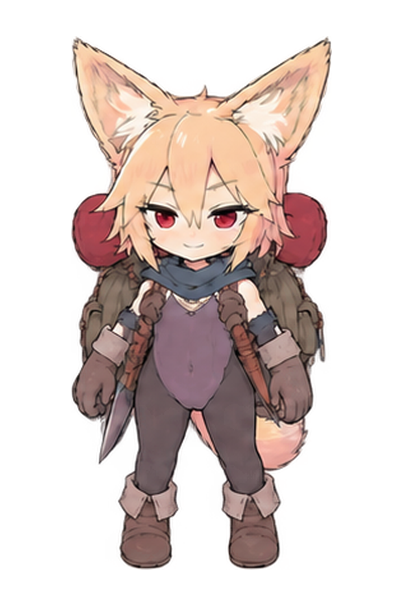
全身（白背景）
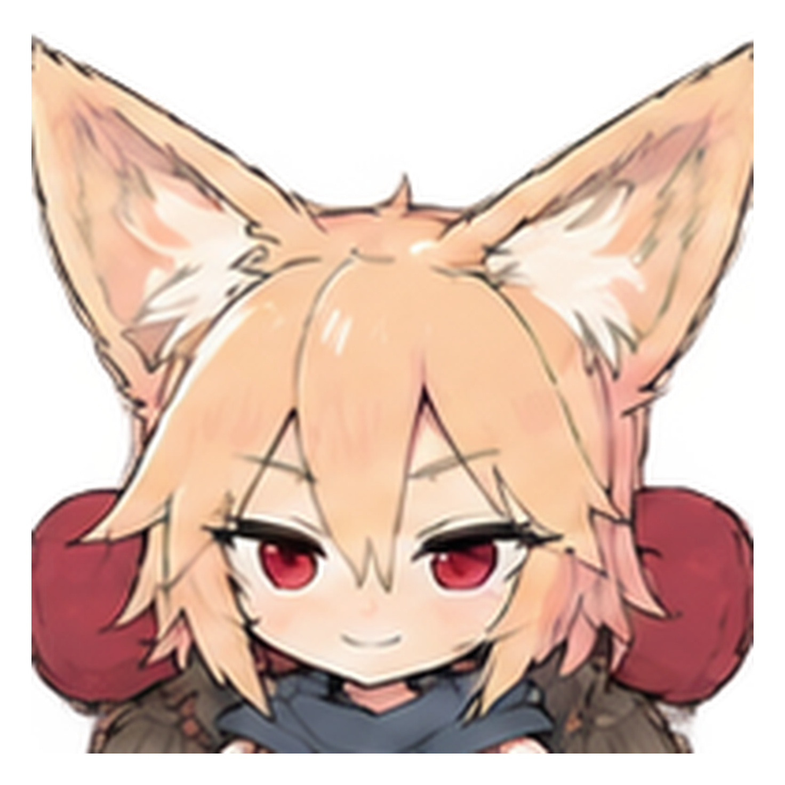
顔のアップ
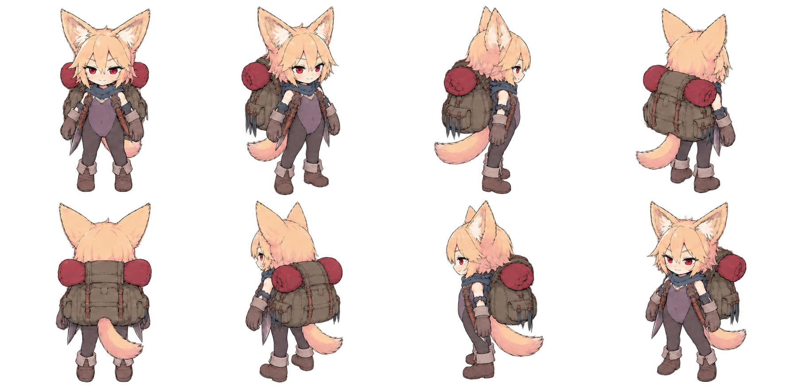
8方向の絵
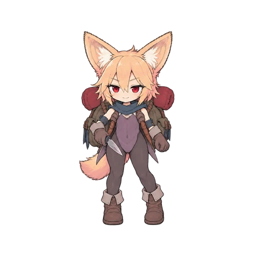
手本1（ChatGPT の絵）
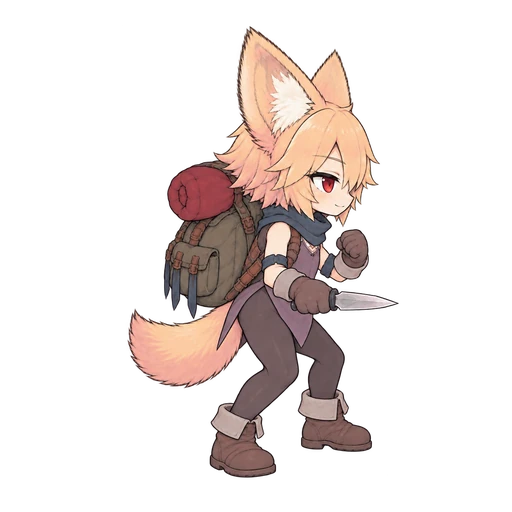
手本2（ChatGPT の絵）後ろ手に縛られて身をよじる 2枚


scout__arms_behind_squirm__front__0.png2Dゲームのキャラクター「斥候」の、アニメーション用の1枚絵を1枚描いてください。 ・添付のキャラクターの画像と同じ人物を、同じ絵柄・同じ頭身（小さめのデフォルメ）・同じ髪型・同じ衣装と色で描く。持ち物と特徴：大きなバックパック（上に丸めた寝袋）を背負う。大きな狐の耳と尻尾（いつも）。ナイフは、ポーズの図に描いてあるときだけ持つ ・姿勢・向き・手足の位置は、添付のポーズの図（マネキン）に合わせる。図の色：青＝本人の右半身、橙＝左半身、灰色＝胴と頭。図の線・色・関節の丸は描かない。図の色の付いた線・輪・塊は、押さえているものの位置 ・全身が入る正方形。背景は白一色（できれば透明）。足元の影・床・効果線・文字・枠は描かない 場面：後ろ手に縛られて身をよじる（8コマのうち1コマ目） 向き：正面（こちらを向く） 体勢：立つ／腕：後ろ手（手首を背中でまとめる）／脚：膝を閉じる 動き：体をよじる。膝を寄せる。かかとを交互に上げる。下を向く 押さえられている所：両手首 押さえているものの見た目：thick dark violet rubbery tentacles, smooth rounded tentacles 様子（英語）：wrists pulled together behind body, twisting against restraint, tense shoulders, knees held close, struggling
下絵（組み立てた絵）を添付して頼む
下絵を保存2Dゲームのキャラクター「斥候」の、アニメーション用の1枚絵を1枚描いてください。 ・添付の「下絵」は、同じキャラクターの絵の部位を切り貼りして、この姿勢に並べたものです。人物・髪型・衣装・色・絵柄・頭身・姿勢・向き・構図はこの下絵のまま変えずに、切り貼りの継ぎ目・ずれ・欠け・はみ出しだけを自然に描き直して、1枚の絵として仕上げてください ・手足の位置は、添付のポーズの図（マネキン）にも合わせる。図の線・色は描かない。図の色の付いた線・輪・塊は、押さえているものの位置 ・背景は白一色（できれば透明）。足元の影・床・効果線・文字・枠は描かない 場面：後ろ手に縛られて身をよじる（8コマのうち1コマ目） 向き：正面（こちらを向く） 体勢：立つ／腕：後ろ手（手首を背中でまとめる）／脚：膝を閉じる 動き：体をよじる。膝を寄せる。かかとを交互に上げる。下を向く 押さえられている所：両手首 押さえているものの見た目：thick dark violet rubbery tentacles, smooth rounded tentacles 様子（英語）：wrists pulled together behind body, twisting against restraint, tense shoulders, knees held close, struggling


scout__arms_behind_squirm__front__2.png2Dゲームのキャラクター「斥候」の、アニメーション用の1枚絵を1枚描いてください。 ・添付のキャラクターの画像と同じ人物を、同じ絵柄・同じ頭身（小さめのデフォルメ）・同じ髪型・同じ衣装と色で描く。持ち物と特徴：大きなバックパック（上に丸めた寝袋）を背負う。大きな狐の耳と尻尾（いつも）。ナイフは、ポーズの図に描いてあるときだけ持つ ・姿勢・向き・手足の位置は、添付のポーズの図（マネキン）に合わせる。図の色：青＝本人の右半身、橙＝左半身、灰色＝胴と頭。図の線・色・関節の丸は描かない。図の色の付いた線・輪・塊は、押さえているものの位置 ・全身が入る正方形。背景は白一色（できれば透明）。足元の影・床・効果線・文字・枠は描かない 場面：後ろ手に縛られて身をよじる（8コマのうち3コマ目） 向き：正面（こちらを向く） 体勢：立つ／腕：後ろ手（手首を背中でまとめる）／脚：膝を閉じる 動き：体をよじる。膝を寄せる。かかとを交互に上げる。下を向く 押さえられている所：両手首 押さえているものの見た目：thick dark violet rubbery tentacles, smooth rounded tentacles 様子（英語）：wrists pulled together behind body, twisting against restraint, tense shoulders, knees held close, struggling
下絵（組み立てた絵）を添付して頼む
下絵を保存2Dゲームのキャラクター「斥候」の、アニメーション用の1枚絵を1枚描いてください。 ・添付の「下絵」は、同じキャラクターの絵の部位を切り貼りして、この姿勢に並べたものです。人物・髪型・衣装・色・絵柄・頭身・姿勢・向き・構図はこの下絵のまま変えずに、切り貼りの継ぎ目・ずれ・欠け・はみ出しだけを自然に描き直して、1枚の絵として仕上げてください ・手足の位置は、添付のポーズの図（マネキン）にも合わせる。図の線・色は描かない。図の色の付いた線・輪・塊は、押さえているものの位置 ・背景は白一色（できれば透明）。足元の影・床・効果線・文字・枠は描かない 場面：後ろ手に縛られて身をよじる（8コマのうち3コマ目） 向き：正面（こちらを向く） 体勢：立つ／腕：後ろ手（手首を背中でまとめる）／脚：膝を閉じる 動き：体をよじる。膝を寄せる。かかとを交互に上げる。下を向く 押さえられている所：両手首 押さえているものの見た目：thick dark violet rubbery tentacles, smooth rounded tentacles 様子（英語）：wrists pulled together behind body, twisting against restraint, tense shoulders, knees held close, struggling
後ろ手に縛られて振りほどこうとする 2枚


scout__arms_behind_wrench__front__0.png2Dゲームのキャラクター「斥候」の、アニメーション用の1枚絵を1枚描いてください。 ・添付のキャラクターの画像と同じ人物を、同じ絵柄・同じ頭身（小さめのデフォルメ）・同じ髪型・同じ衣装と色で描く。持ち物と特徴：大きなバックパック（上に丸めた寝袋）を背負う。大きな狐の耳と尻尾（いつも）。ナイフは、ポーズの図に描いてあるときだけ持つ ・姿勢・向き・手足の位置は、添付のポーズの図（マネキン）に合わせる。図の色：青＝本人の右半身、橙＝左半身、灰色＝胴と頭。図の線・色・関節の丸は描かない。図の色の付いた線・輪・塊は、押さえているものの位置 ・全身が入る正方形。背景は白一色（できれば透明）。足元の影・床・効果線・文字・枠は描かない 場面：後ろ手に縛られて振りほどこうとする（8コマのうち1コマ目） 向き：正面（こちらを向く） 体勢：立つ／腕：後ろ手／脚：踏ん張る足は爪先立ち 動き：肩をひねって左右に振りほどこうとする。胸が前に出る 押さえられている所：両手首 押さえているものの見た目：thick dark violet rubbery tentacles, smooth rounded tentacles 様子（英語）：wrists restrained behind body, forcefully twisting shoulders, pulling against restraint, braced body, determined struggling expression
下絵（組み立てた絵）を添付して頼む
下絵を保存2Dゲームのキャラクター「斥候」の、アニメーション用の1枚絵を1枚描いてください。 ・添付の「下絵」は、同じキャラクターの絵の部位を切り貼りして、この姿勢に並べたものです。人物・髪型・衣装・色・絵柄・頭身・姿勢・向き・構図はこの下絵のまま変えずに、切り貼りの継ぎ目・ずれ・欠け・はみ出しだけを自然に描き直して、1枚の絵として仕上げてください ・手足の位置は、添付のポーズの図（マネキン）にも合わせる。図の線・色は描かない。図の色の付いた線・輪・塊は、押さえているものの位置 ・背景は白一色（できれば透明）。足元の影・床・効果線・文字・枠は描かない 場面：後ろ手に縛られて振りほどこうとする（8コマのうち1コマ目） 向き：正面（こちらを向く） 体勢：立つ／腕：後ろ手／脚：踏ん張る足は爪先立ち 動き：肩をひねって左右に振りほどこうとする。胸が前に出る 押さえられている所：両手首 押さえているものの見た目：thick dark violet rubbery tentacles, smooth rounded tentacles 様子（英語）：wrists restrained behind body, forcefully twisting shoulders, pulling against restraint, braced body, determined struggling expression


scout__arms_behind_wrench__front__5.png2Dゲームのキャラクター「斥候」の、アニメーション用の1枚絵を1枚描いてください。 ・添付のキャラクターの画像と同じ人物を、同じ絵柄・同じ頭身（小さめのデフォルメ）・同じ髪型・同じ衣装と色で描く。持ち物と特徴：大きなバックパック（上に丸めた寝袋）を背負う。大きな狐の耳と尻尾（いつも）。ナイフは、ポーズの図に描いてあるときだけ持つ ・姿勢・向き・手足の位置は、添付のポーズの図（マネキン）に合わせる。図の色：青＝本人の右半身、橙＝左半身、灰色＝胴と頭。図の線・色・関節の丸は描かない。図の色の付いた線・輪・塊は、押さえているものの位置 ・全身が入る正方形。背景は白一色（できれば透明）。足元の影・床・効果線・文字・枠は描かない 場面：後ろ手に縛られて振りほどこうとする（8コマのうち6コマ目） 向き：正面（こちらを向く） 体勢：立つ／腕：後ろ手／脚：踏ん張る足は爪先立ち 動き：肩をひねって左右に振りほどこうとする。胸が前に出る 押さえられている所：両手首 押さえているものの見た目：thick dark violet rubbery tentacles, smooth rounded tentacles 様子（英語）：wrists restrained behind body, forcefully twisting shoulders, pulling against restraint, braced body, determined struggling expression
下絵（組み立てた絵）を添付して頼む
下絵を保存2Dゲームのキャラクター「斥候」の、アニメーション用の1枚絵を1枚描いてください。 ・添付の「下絵」は、同じキャラクターの絵の部位を切り貼りして、この姿勢に並べたものです。人物・髪型・衣装・色・絵柄・頭身・姿勢・向き・構図はこの下絵のまま変えずに、切り貼りの継ぎ目・ずれ・欠け・はみ出しだけを自然に描き直して、1枚の絵として仕上げてください ・手足の位置は、添付のポーズの図（マネキン）にも合わせる。図の線・色は描かない。図の色の付いた線・輪・塊は、押さえているものの位置 ・背景は白一色（できれば透明）。足元の影・床・効果線・文字・枠は描かない 場面：後ろ手に縛られて振りほどこうとする（8コマのうち6コマ目） 向き：正面（こちらを向く） 体勢：立つ／腕：後ろ手／脚：踏ん張る足は爪先立ち 動き：肩をひねって左右に振りほどこうとする。胸が前に出る 押さえられている所：両手首 押さえているものの見た目：thick dark violet rubbery tentacles, smooth rounded tentacles 様子（英語）：wrists restrained behind body, forcefully twisting shoulders, pulling against restraint, braced body, determined struggling expression
両手首を上から吊られ、腕を引き下ろそうと力む 2枚


scout__elbows_up_strain__front__0.png2Dゲームのキャラクター「斥候」の、アニメーション用の1枚絵を1枚描いてください。 ・添付のキャラクターの画像と同じ人物を、同じ絵柄・同じ頭身（小さめのデフォルメ）・同じ髪型・同じ衣装と色で描く。持ち物と特徴：大きなバックパック（上に丸めた寝袋）を背負う。大きな狐の耳と尻尾（いつも）。ナイフは、ポーズの図に描いてあるときだけ持つ ・姿勢・向き・手足の位置は、添付のポーズの図（マネキン）に合わせる。図の色：青＝本人の右半身、橙＝左半身、灰色＝胴と頭。図の線・色・関節の丸は描かない。図の色の付いた線・輪・塊は、押さえているものの位置 ・全身が入る正方形。背景は白一色（できれば透明）。足元の影・床・効果線・文字・枠は描かない 場面：両手首を上から吊られ、腕を引き下ろそうと力む（8コマのうち1コマ目） 向き：正面（こちらを向く） 体勢：立つ／腕：両手を頭の上に上げる／脚：膝を少し曲げる 動き：腕を引き下ろそうと力む。負けると爪先立ちに引き上げられる 押さえられている所：両手首（上から吊る） 押さえているものの見た目：thick dark violet rubbery tentacles, smooth rounded tentacles 様子（英語）：wrists bound together overhead, restraint extending upward, arms pulled taut, straining downward against restraint
下絵（組み立てた絵）を添付して頼む
下絵を保存2Dゲームのキャラクター「斥候」の、アニメーション用の1枚絵を1枚描いてください。 ・添付の「下絵」は、同じキャラクターの絵の部位を切り貼りして、この姿勢に並べたものです。人物・髪型・衣装・色・絵柄・頭身・姿勢・向き・構図はこの下絵のまま変えずに、切り貼りの継ぎ目・ずれ・欠け・はみ出しだけを自然に描き直して、1枚の絵として仕上げてください ・手足の位置は、添付のポーズの図（マネキン）にも合わせる。図の線・色は描かない。図の色の付いた線・輪・塊は、押さえているものの位置 ・背景は白一色（できれば透明）。足元の影・床・効果線・文字・枠は描かない 場面：両手首を上から吊られ、腕を引き下ろそうと力む（8コマのうち1コマ目） 向き：正面（こちらを向く） 体勢：立つ／腕：両手を頭の上に上げる／脚：膝を少し曲げる 動き：腕を引き下ろそうと力む。負けると爪先立ちに引き上げられる 押さえられている所：両手首（上から吊る） 押さえているものの見た目：thick dark violet rubbery tentacles, smooth rounded tentacles 様子（英語）：wrists bound together overhead, restraint extending upward, arms pulled taut, straining downward against restraint


scout__elbows_up_strain__front__2.png2Dゲームのキャラクター「斥候」の、アニメーション用の1枚絵を1枚描いてください。 ・添付のキャラクターの画像と同じ人物を、同じ絵柄・同じ頭身（小さめのデフォルメ）・同じ髪型・同じ衣装と色で描く。持ち物と特徴：大きなバックパック（上に丸めた寝袋）を背負う。大きな狐の耳と尻尾（いつも）。ナイフは、ポーズの図に描いてあるときだけ持つ ・姿勢・向き・手足の位置は、添付のポーズの図（マネキン）に合わせる。図の色：青＝本人の右半身、橙＝左半身、灰色＝胴と頭。図の線・色・関節の丸は描かない。図の色の付いた線・輪・塊は、押さえているものの位置 ・全身が入る正方形。背景は白一色（できれば透明）。足元の影・床・効果線・文字・枠は描かない 場面：両手首を上から吊られ、腕を引き下ろそうと力む（8コマのうち3コマ目） 向き：正面（こちらを向く） 体勢：立つ／腕：両手を頭の上に上げる／脚：膝を少し曲げる 動き：腕を引き下ろそうと力む。負けると爪先立ちに引き上げられる 押さえられている所：両手首（上から吊る） 押さえているものの見た目：thick dark violet rubbery tentacles, smooth rounded tentacles 様子（英語）：wrists bound together overhead, restraint extending upward, arms pulled taut, straining downward against restraint
下絵（組み立てた絵）を添付して頼む
下絵を保存2Dゲームのキャラクター「斥候」の、アニメーション用の1枚絵を1枚描いてください。 ・添付の「下絵」は、同じキャラクターの絵の部位を切り貼りして、この姿勢に並べたものです。人物・髪型・衣装・色・絵柄・頭身・姿勢・向き・構図はこの下絵のまま変えずに、切り貼りの継ぎ目・ずれ・欠け・はみ出しだけを自然に描き直して、1枚の絵として仕上げてください ・手足の位置は、添付のポーズの図（マネキン）にも合わせる。図の線・色は描かない。図の色の付いた線・輪・塊は、押さえているものの位置 ・背景は白一色（できれば透明）。足元の影・床・効果線・文字・枠は描かない 場面：両手首を上から吊られ、腕を引き下ろそうと力む（8コマのうち3コマ目） 向き：正面（こちらを向く） 体勢：立つ／腕：両手を頭の上に上げる／脚：膝を少し曲げる 動き：腕を引き下ろそうと力む。負けると爪先立ちに引き上げられる 押さえられている所：両手首（上から吊る） 押さえているものの見た目：thick dark violet rubbery tentacles, smooth rounded tentacles 様子（英語）：wrists bound together overhead, restraint extending upward, arms pulled taut, straining downward against restraint
後ろ手で、膝を左右へ引かれる 2枚


scout__legs_pulled_open__front__0.png2Dゲームのキャラクター「斥候」の、アニメーション用の1枚絵を1枚描いてください。 ・添付のキャラクターの画像と同じ人物を、同じ絵柄・同じ頭身（小さめのデフォルメ）・同じ髪型・同じ衣装と色で描く。持ち物と特徴：大きなバックパック（上に丸めた寝袋）を背負う。大きな狐の耳と尻尾（いつも）。ナイフは、ポーズの図に描いてあるときだけ持つ ・姿勢・向き・手足の位置は、添付のポーズの図（マネキン）に合わせる。図の色：青＝本人の右半身、橙＝左半身、灰色＝胴と頭。図の線・色・関節の丸は描かない。図の色の付いた線・輪・塊は、押さえているものの位置 ・全身が入る正方形。背景は白一色（できれば透明）。足元の影・床・効果線・文字・枠は描かない 場面：後ろ手で、膝を左右へ引かれる（12コマのうち1コマ目・閉じる） 向き：正面（こちらを向く） 体勢：立つ／腕：後ろ手／脚：閉じた膝 → 左右へ引かれる 動き：はじめ膝を寄せる → 最後は膝が外へ開いて腰が落ちる 押さえられている所：両手首・両膝（左右へ引く） 押さえているものの見た目：thick dark violet rubbery tentacles, smooth rounded tentacles 様子（英語）：wrists restrained behind body, thick dark violet rubbery tentacles around both knees, knees pulled outward, resisting the pull
下絵（組み立てた絵）を添付して頼む
下絵を保存2Dゲームのキャラクター「斥候」の、アニメーション用の1枚絵を1枚描いてください。 ・添付の「下絵」は、同じキャラクターの絵の部位を切り貼りして、この姿勢に並べたものです。人物・髪型・衣装・色・絵柄・頭身・姿勢・向き・構図はこの下絵のまま変えずに、切り貼りの継ぎ目・ずれ・欠け・はみ出しだけを自然に描き直して、1枚の絵として仕上げてください ・手足の位置は、添付のポーズの図（マネキン）にも合わせる。図の線・色は描かない。図の色の付いた線・輪・塊は、押さえているものの位置 ・背景は白一色（できれば透明）。足元の影・床・効果線・文字・枠は描かない 場面：後ろ手で、膝を左右へ引かれる（12コマのうち1コマ目・閉じる） 向き：正面（こちらを向く） 体勢：立つ／腕：後ろ手／脚：閉じた膝 → 左右へ引かれる 動き：はじめ膝を寄せる → 最後は膝が外へ開いて腰が落ちる 押さえられている所：両手首・両膝（左右へ引く） 押さえているものの見た目：thick dark violet rubbery tentacles, smooth rounded tentacles 様子（英語）：wrists restrained behind body, thick dark violet rubbery tentacles around both knees, knees pulled outward, resisting the pull


scout__legs_pulled_open__front__7.png2Dゲームのキャラクター「斥候」の、アニメーション用の1枚絵を1枚描いてください。 ・添付のキャラクターの画像と同じ人物を、同じ絵柄・同じ頭身（小さめのデフォルメ）・同じ髪型・同じ衣装と色で描く。持ち物と特徴：大きなバックパック（上に丸めた寝袋）を背負う。大きな狐の耳と尻尾（いつも）。ナイフは、ポーズの図に描いてあるときだけ持つ ・姿勢・向き・手足の位置は、添付のポーズの図（マネキン）に合わせる。図の色：青＝本人の右半身、橙＝左半身、灰色＝胴と頭。図の線・色・関節の丸は描かない。図の色の付いた線・輪・塊は、押さえているものの位置 ・全身が入る正方形。背景は白一色（できれば透明）。足元の影・床・効果線・文字・枠は描かない 場面：後ろ手で、膝を左右へ引かれる（12コマのうち8コマ目・開かれた） 向き：正面（こちらを向く） 体勢：立つ／腕：後ろ手／脚：閉じた膝 → 左右へ引かれる 動き：はじめ膝を寄せる → 最後は膝が外へ開いて腰が落ちる 押さえられている所：両手首・両膝（左右へ引く） 押さえているものの見た目：thick dark violet rubbery tentacles, smooth rounded tentacles 様子（英語）：wrists restrained behind body, thick dark violet rubbery tentacles around both knees, knees pulled outward, resisting the pull
下絵（組み立てた絵）を添付して頼む
下絵を保存2Dゲームのキャラクター「斥候」の、アニメーション用の1枚絵を1枚描いてください。 ・添付の「下絵」は、同じキャラクターの絵の部位を切り貼りして、この姿勢に並べたものです。人物・髪型・衣装・色・絵柄・頭身・姿勢・向き・構図はこの下絵のまま変えずに、切り貼りの継ぎ目・ずれ・欠け・はみ出しだけを自然に描き直して、1枚の絵として仕上げてください ・手足の位置は、添付のポーズの図（マネキン）にも合わせる。図の線・色は描かない。図の色の付いた線・輪・塊は、押さえているものの位置 ・背景は白一色（できれば透明）。足元の影・床・効果線・文字・枠は描かない 場面：後ろ手で、膝を左右へ引かれる（12コマのうち8コマ目・開かれた） 向き：正面（こちらを向く） 体勢：立つ／腕：後ろ手／脚：閉じた膝 → 左右へ引かれる 動き：はじめ膝を寄せる → 最後は膝が外へ開いて腰が落ちる 押さえられている所：両手首・両膝（左右へ引く） 押さえているものの見た目：thick dark violet rubbery tentacles, smooth rounded tentacles 様子（英語）：wrists restrained behind body, thick dark violet rubbery tentacles around both knees, knees pulled outward, resisting the pull
後ろ手で、膝を左右へ引かれたまま耐える 2枚


scout__legs_held_open__front__0.png2Dゲームのキャラクター「斥候」の、アニメーション用の1枚絵を1枚描いてください。 ・添付のキャラクターの画像と同じ人物を、同じ絵柄・同じ頭身（小さめのデフォルメ）・同じ髪型・同じ衣装と色で描く。持ち物と特徴：大きなバックパック（上に丸めた寝袋）を背負う。大きな狐の耳と尻尾（いつも）。ナイフは、ポーズの図に描いてあるときだけ持つ ・姿勢・向き・手足の位置は、添付のポーズの図（マネキン）に合わせる。図の色：青＝本人の右半身、橙＝左半身、灰色＝胴と頭。図の線・色・関節の丸は描かない。図の色の付いた線・輪・塊は、押さえているものの位置 ・全身が入る正方形。背景は白一色（できれば透明）。足元の影・床・効果線・文字・枠は描かない 場面：後ろ手で、膝を左右へ引かれたまま耐える（8コマのうち1コマ目） 向き：正面（こちらを向く） 体勢：立つ／腕：後ろ手／脚：左右に引かれたまま 動き：膝が小さく震える 押さえられている所：両手首・両膝（左右） 押さえているものの見た目：thick dark violet rubbery tentacles, smooth rounded tentacles 様子（英語）：wrists restrained behind body, thick dark violet rubbery tentacles around both knees, knees held outward, trembling legs, sustained resistance
下絵（組み立てた絵）を添付して頼む
下絵を保存2Dゲームのキャラクター「斥候」の、アニメーション用の1枚絵を1枚描いてください。 ・添付の「下絵」は、同じキャラクターの絵の部位を切り貼りして、この姿勢に並べたものです。人物・髪型・衣装・色・絵柄・頭身・姿勢・向き・構図はこの下絵のまま変えずに、切り貼りの継ぎ目・ずれ・欠け・はみ出しだけを自然に描き直して、1枚の絵として仕上げてください ・手足の位置は、添付のポーズの図（マネキン）にも合わせる。図の線・色は描かない。図の色の付いた線・輪・塊は、押さえているものの位置 ・背景は白一色（できれば透明）。足元の影・床・効果線・文字・枠は描かない 場面：後ろ手で、膝を左右へ引かれたまま耐える（8コマのうち1コマ目） 向き：正面（こちらを向く） 体勢：立つ／腕：後ろ手／脚：左右に引かれたまま 動き：膝が小さく震える 押さえられている所：両手首・両膝（左右） 押さえているものの見た目：thick dark violet rubbery tentacles, smooth rounded tentacles 様子（英語）：wrists restrained behind body, thick dark violet rubbery tentacles around both knees, knees held outward, trembling legs, sustained resistance


scout__legs_held_open__front__2.png2Dゲームのキャラクター「斥候」の、アニメーション用の1枚絵を1枚描いてください。 ・添付のキャラクターの画像と同じ人物を、同じ絵柄・同じ頭身（小さめのデフォルメ）・同じ髪型・同じ衣装と色で描く。持ち物と特徴：大きなバックパック（上に丸めた寝袋）を背負う。大きな狐の耳と尻尾（いつも）。ナイフは、ポーズの図に描いてあるときだけ持つ ・姿勢・向き・手足の位置は、添付のポーズの図（マネキン）に合わせる。図の色：青＝本人の右半身、橙＝左半身、灰色＝胴と頭。図の線・色・関節の丸は描かない。図の色の付いた線・輪・塊は、押さえているものの位置 ・全身が入る正方形。背景は白一色（できれば透明）。足元の影・床・効果線・文字・枠は描かない 場面：後ろ手で、膝を左右へ引かれたまま耐える（8コマのうち3コマ目） 向き：正面（こちらを向く） 体勢：立つ／腕：後ろ手／脚：左右に引かれたまま 動き：膝が小さく震える 押さえられている所：両手首・両膝（左右） 押さえているものの見た目：thick dark violet rubbery tentacles, smooth rounded tentacles 様子（英語）：wrists restrained behind body, thick dark violet rubbery tentacles around both knees, knees held outward, trembling legs, sustained resistance
下絵（組み立てた絵）を添付して頼む
下絵を保存2Dゲームのキャラクター「斥候」の、アニメーション用の1枚絵を1枚描いてください。 ・添付の「下絵」は、同じキャラクターの絵の部位を切り貼りして、この姿勢に並べたものです。人物・髪型・衣装・色・絵柄・頭身・姿勢・向き・構図はこの下絵のまま変えずに、切り貼りの継ぎ目・ずれ・欠け・はみ出しだけを自然に描き直して、1枚の絵として仕上げてください ・手足の位置は、添付のポーズの図（マネキン）にも合わせる。図の線・色は描かない。図の色の付いた線・輪・塊は、押さえているものの位置 ・背景は白一色（できれば透明）。足元の影・床・効果線・文字・枠は描かない 場面：後ろ手で、膝を左右へ引かれたまま耐える（8コマのうち3コマ目） 向き：正面（こちらを向く） 体勢：立つ／腕：後ろ手／脚：左右に引かれたまま 動き：膝が小さく震える 押さえられている所：両手首・両膝（左右） 押さえているものの見た目：thick dark violet rubbery tentacles, smooth rounded tentacles 様子（英語）：wrists restrained behind body, thick dark violet rubbery tentacles around both knees, knees held outward, trembling legs, sustained resistance
後ろ手で、足を開いて立ったまま体が前後に揺れる 2枚


scout__hip_rock_spread__front__0.png2Dゲームのキャラクター「斥候」の、アニメーション用の1枚絵を1枚描いてください。 ・添付のキャラクターの画像と同じ人物を、同じ絵柄・同じ頭身（小さめのデフォルメ）・同じ髪型・同じ衣装と色で描く。持ち物と特徴：大きなバックパック（上に丸めた寝袋）を背負う。大きな狐の耳と尻尾（いつも）。ナイフは、ポーズの図に描いてあるときだけ持つ ・姿勢・向き・手足の位置は、添付のポーズの図（マネキン）に合わせる。図の色：青＝本人の右半身、橙＝左半身、灰色＝胴と頭。図の線・色・関節の丸は描かない。図の色の付いた線・輪・塊は、押さえているものの位置 ・全身が入る正方形。背景は白一色（できれば透明）。足元の影・床・効果線・文字・枠は描かない 場面：後ろ手で、足を開いて立ったまま体が前後に揺れる（8コマのうち1コマ目） 向き：正面（こちらを向く） 体勢：立つ／腕：後ろ手／脚：足を開く 動き：体が前後に揺れる 押さえられている所：両手首・両膝（左右） 押さえているものの見た目：thick dark violet rubbery tentacles, smooth rounded tentacles 様子（英語）：wrists restrained behind body, knees held apart by thick dark violet rubbery tentacles, body rocking under restraint, tense balance
下絵（組み立てた絵）を添付して頼む
下絵を保存2Dゲームのキャラクター「斥候」の、アニメーション用の1枚絵を1枚描いてください。 ・添付の「下絵」は、同じキャラクターの絵の部位を切り貼りして、この姿勢に並べたものです。人物・髪型・衣装・色・絵柄・頭身・姿勢・向き・構図はこの下絵のまま変えずに、切り貼りの継ぎ目・ずれ・欠け・はみ出しだけを自然に描き直して、1枚の絵として仕上げてください ・手足の位置は、添付のポーズの図（マネキン）にも合わせる。図の線・色は描かない。図の色の付いた線・輪・塊は、押さえているものの位置 ・背景は白一色（できれば透明）。足元の影・床・効果線・文字・枠は描かない 場面：後ろ手で、足を開いて立ったまま体が前後に揺れる（8コマのうち1コマ目） 向き：正面（こちらを向く） 体勢：立つ／腕：後ろ手／脚：足を開く 動き：体が前後に揺れる 押さえられている所：両手首・両膝（左右） 押さえているものの見た目：thick dark violet rubbery tentacles, smooth rounded tentacles 様子（英語）：wrists restrained behind body, knees held apart by thick dark violet rubbery tentacles, body rocking under restraint, tense balance


scout__hip_rock_spread__front__3.png2Dゲームのキャラクター「斥候」の、アニメーション用の1枚絵を1枚描いてください。 ・添付のキャラクターの画像と同じ人物を、同じ絵柄・同じ頭身（小さめのデフォルメ）・同じ髪型・同じ衣装と色で描く。持ち物と特徴：大きなバックパック（上に丸めた寝袋）を背負う。大きな狐の耳と尻尾（いつも）。ナイフは、ポーズの図に描いてあるときだけ持つ ・姿勢・向き・手足の位置は、添付のポーズの図（マネキン）に合わせる。図の色：青＝本人の右半身、橙＝左半身、灰色＝胴と頭。図の線・色・関節の丸は描かない。図の色の付いた線・輪・塊は、押さえているものの位置 ・全身が入る正方形。背景は白一色（できれば透明）。足元の影・床・効果線・文字・枠は描かない 場面：後ろ手で、足を開いて立ったまま体が前後に揺れる（8コマのうち4コマ目） 向き：正面（こちらを向く） 体勢：立つ／腕：後ろ手／脚：足を開く 動き：体が前後に揺れる 押さえられている所：両手首・両膝（左右） 押さえているものの見た目：thick dark violet rubbery tentacles, smooth rounded tentacles 様子（英語）：wrists restrained behind body, knees held apart by thick dark violet rubbery tentacles, body rocking under restraint, tense balance
下絵（組み立てた絵）を添付して頼む
下絵を保存2Dゲームのキャラクター「斥候」の、アニメーション用の1枚絵を1枚描いてください。 ・添付の「下絵」は、同じキャラクターの絵の部位を切り貼りして、この姿勢に並べたものです。人物・髪型・衣装・色・絵柄・頭身・姿勢・向き・構図はこの下絵のまま変えずに、切り貼りの継ぎ目・ずれ・欠け・はみ出しだけを自然に描き直して、1枚の絵として仕上げてください ・手足の位置は、添付のポーズの図（マネキン）にも合わせる。図の線・色は描かない。図の色の付いた線・輪・塊は、押さえているものの位置 ・背景は白一色（できれば透明）。足元の影・床・効果線・文字・枠は描かない 場面：後ろ手で、足を開いて立ったまま体が前後に揺れる（8コマのうち4コマ目） 向き：正面（こちらを向く） 体勢：立つ／腕：後ろ手／脚：足を開く 動き：体が前後に揺れる 押さえられている所：両手首・両膝（左右） 押さえているものの見た目：thick dark violet rubbery tentacles, smooth rounded tentacles 様子（英語）：wrists restrained behind body, knees held apart by thick dark violet rubbery tentacles, body rocking under restraint, tense balance
後ろ手で、膝を閉じたまま体が前後に揺れる 2枚


scout__hip_rock_closed__front__0.png2Dゲームのキャラクター「斥候」の、アニメーション用の1枚絵を1枚描いてください。 ・添付のキャラクターの画像と同じ人物を、同じ絵柄・同じ頭身（小さめのデフォルメ）・同じ髪型・同じ衣装と色で描く。持ち物と特徴：大きなバックパック（上に丸めた寝袋）を背負う。大きな狐の耳と尻尾（いつも）。ナイフは、ポーズの図に描いてあるときだけ持つ ・姿勢・向き・手足の位置は、添付のポーズの図（マネキン）に合わせる。図の色：青＝本人の右半身、橙＝左半身、灰色＝胴と頭。図の線・色・関節の丸は描かない。図の色の付いた線・輪・塊は、押さえているものの位置 ・全身が入る正方形。背景は白一色（できれば透明）。足元の影・床・効果線・文字・枠は描かない 場面：後ろ手で、膝を閉じたまま体が前後に揺れる（8コマのうち1コマ目） 向き：正面（こちらを向く） 体勢：立つ／腕：後ろ手／脚：膝を閉じたまま 動き：体が小さく前後に揺れる。そのたび爪先立ち 押さえられている所：両手首 押さえているものの見た目：thick dark violet rubbery tentacles, smooth rounded tentacles 様子（英語）：wrists restrained behind body, knees held close together, restrained rocking motion, tense calves, unstable balance
下絵（組み立てた絵）を添付して頼む
下絵を保存2Dゲームのキャラクター「斥候」の、アニメーション用の1枚絵を1枚描いてください。 ・添付の「下絵」は、同じキャラクターの絵の部位を切り貼りして、この姿勢に並べたものです。人物・髪型・衣装・色・絵柄・頭身・姿勢・向き・構図はこの下絵のまま変えずに、切り貼りの継ぎ目・ずれ・欠け・はみ出しだけを自然に描き直して、1枚の絵として仕上げてください ・手足の位置は、添付のポーズの図（マネキン）にも合わせる。図の線・色は描かない。図の色の付いた線・輪・塊は、押さえているものの位置 ・背景は白一色（できれば透明）。足元の影・床・効果線・文字・枠は描かない 場面：後ろ手で、膝を閉じたまま体が前後に揺れる（8コマのうち1コマ目） 向き：正面（こちらを向く） 体勢：立つ／腕：後ろ手／脚：膝を閉じたまま 動き：体が小さく前後に揺れる。そのたび爪先立ち 押さえられている所：両手首 押さえているものの見た目：thick dark violet rubbery tentacles, smooth rounded tentacles 様子（英語）：wrists restrained behind body, knees held close together, restrained rocking motion, tense calves, unstable balance


scout__hip_rock_closed__front__3.png2Dゲームのキャラクター「斥候」の、アニメーション用の1枚絵を1枚描いてください。 ・添付のキャラクターの画像と同じ人物を、同じ絵柄・同じ頭身（小さめのデフォルメ）・同じ髪型・同じ衣装と色で描く。持ち物と特徴：大きなバックパック（上に丸めた寝袋）を背負う。大きな狐の耳と尻尾（いつも）。ナイフは、ポーズの図に描いてあるときだけ持つ ・姿勢・向き・手足の位置は、添付のポーズの図（マネキン）に合わせる。図の色：青＝本人の右半身、橙＝左半身、灰色＝胴と頭。図の線・色・関節の丸は描かない。図の色の付いた線・輪・塊は、押さえているものの位置 ・全身が入る正方形。背景は白一色（できれば透明）。足元の影・床・効果線・文字・枠は描かない 場面：後ろ手で、膝を閉じたまま体が前後に揺れる（8コマのうち4コマ目） 向き：正面（こちらを向く） 体勢：立つ／腕：後ろ手／脚：膝を閉じたまま 動き：体が小さく前後に揺れる。そのたび爪先立ち 押さえられている所：両手首 押さえているものの見た目：thick dark violet rubbery tentacles, smooth rounded tentacles 様子（英語）：wrists restrained behind body, knees held close together, restrained rocking motion, tense calves, unstable balance
下絵（組み立てた絵）を添付して頼む
下絵を保存2Dゲームのキャラクター「斥候」の、アニメーション用の1枚絵を1枚描いてください。 ・添付の「下絵」は、同じキャラクターの絵の部位を切り貼りして、この姿勢に並べたものです。人物・髪型・衣装・色・絵柄・頭身・姿勢・向き・構図はこの下絵のまま変えずに、切り貼りの継ぎ目・ずれ・欠け・はみ出しだけを自然に描き直して、1枚の絵として仕上げてください ・手足の位置は、添付のポーズの図（マネキン）にも合わせる。図の線・色は描かない。図の色の付いた線・輪・塊は、押さえているものの位置 ・背景は白一色（できれば透明）。足元の影・床・効果線・文字・枠は描かない 場面：後ろ手で、膝を閉じたまま体が前後に揺れる（8コマのうち4コマ目） 向き：正面（こちらを向く） 体勢：立つ／腕：後ろ手／脚：膝を閉じたまま 動き：体が小さく前後に揺れる。そのたび爪先立ち 押さえられている所：両手首 押さえているものの見た目：thick dark violet rubbery tentacles, smooth rounded tentacles 様子（英語）：wrists restrained behind body, knees held close together, restrained rocking motion, tense calves, unstable balance
後ろ手で、足を開いて立ったまま体が上下に揺れる 2枚


scout__bounce_spread__front__0.png2Dゲームのキャラクター「斥候」の、アニメーション用の1枚絵を1枚描いてください。 ・添付のキャラクターの画像と同じ人物を、同じ絵柄・同じ頭身（小さめのデフォルメ）・同じ髪型・同じ衣装と色で描く。持ち物と特徴：大きなバックパック（上に丸めた寝袋）を背負う。大きな狐の耳と尻尾（いつも）。ナイフは、ポーズの図に描いてあるときだけ持つ ・姿勢・向き・手足の位置は、添付のポーズの図（マネキン）に合わせる。図の色：青＝本人の右半身、橙＝左半身、灰色＝胴と頭。図の線・色・関節の丸は描かない。図の色の付いた線・輪・塊は、押さえているものの位置 ・全身が入る正方形。背景は白一色（できれば透明）。足元の影・床・効果線・文字・枠は描かない 場面：後ろ手で、足を開いて立ったまま体が上下に揺れる（8コマのうち1コマ目） 向き：正面（こちらを向く） 体勢：立つ／腕：後ろ手／脚：足を開く 動き：体が上下に揺れる。上で爪先立ち、下で膝が曲がる 押さえられている所：両手首・両膝（左右） 押さえているものの見た目：thick dark violet rubbery tentacles, smooth rounded tentacles 様子（英語）：wrists restrained behind body, knees held apart by thick dark violet rubbery tentacles, vertical body motion, strained legs
下絵（組み立てた絵）を添付して頼む
下絵を保存2Dゲームのキャラクター「斥候」の、アニメーション用の1枚絵を1枚描いてください。 ・添付の「下絵」は、同じキャラクターの絵の部位を切り貼りして、この姿勢に並べたものです。人物・髪型・衣装・色・絵柄・頭身・姿勢・向き・構図はこの下絵のまま変えずに、切り貼りの継ぎ目・ずれ・欠け・はみ出しだけを自然に描き直して、1枚の絵として仕上げてください ・手足の位置は、添付のポーズの図（マネキン）にも合わせる。図の線・色は描かない。図の色の付いた線・輪・塊は、押さえているものの位置 ・背景は白一色（できれば透明）。足元の影・床・効果線・文字・枠は描かない 場面：後ろ手で、足を開いて立ったまま体が上下に揺れる（8コマのうち1コマ目） 向き：正面（こちらを向く） 体勢：立つ／腕：後ろ手／脚：足を開く 動き：体が上下に揺れる。上で爪先立ち、下で膝が曲がる 押さえられている所：両手首・両膝（左右） 押さえているものの見た目：thick dark violet rubbery tentacles, smooth rounded tentacles 様子（英語）：wrists restrained behind body, knees held apart by thick dark violet rubbery tentacles, vertical body motion, strained legs


scout__bounce_spread__front__4.png2Dゲームのキャラクター「斥候」の、アニメーション用の1枚絵を1枚描いてください。 ・添付のキャラクターの画像と同じ人物を、同じ絵柄・同じ頭身（小さめのデフォルメ）・同じ髪型・同じ衣装と色で描く。持ち物と特徴：大きなバックパック（上に丸めた寝袋）を背負う。大きな狐の耳と尻尾（いつも）。ナイフは、ポーズの図に描いてあるときだけ持つ ・姿勢・向き・手足の位置は、添付のポーズの図（マネキン）に合わせる。図の色：青＝本人の右半身、橙＝左半身、灰色＝胴と頭。図の線・色・関節の丸は描かない。図の色の付いた線・輪・塊は、押さえているものの位置 ・全身が入る正方形。背景は白一色（できれば透明）。足元の影・床・効果線・文字・枠は描かない 場面：後ろ手で、足を開いて立ったまま体が上下に揺れる（8コマのうち5コマ目） 向き：正面（こちらを向く） 体勢：立つ／腕：後ろ手／脚：足を開く 動き：体が上下に揺れる。上で爪先立ち、下で膝が曲がる 押さえられている所：両手首・両膝（左右） 押さえているものの見た目：thick dark violet rubbery tentacles, smooth rounded tentacles 様子（英語）：wrists restrained behind body, knees held apart by thick dark violet rubbery tentacles, vertical body motion, strained legs
下絵（組み立てた絵）を添付して頼む
下絵を保存2Dゲームのキャラクター「斥候」の、アニメーション用の1枚絵を1枚描いてください。 ・添付の「下絵」は、同じキャラクターの絵の部位を切り貼りして、この姿勢に並べたものです。人物・髪型・衣装・色・絵柄・頭身・姿勢・向き・構図はこの下絵のまま変えずに、切り貼りの継ぎ目・ずれ・欠け・はみ出しだけを自然に描き直して、1枚の絵として仕上げてください ・手足の位置は、添付のポーズの図（マネキン）にも合わせる。図の線・色は描かない。図の色の付いた線・輪・塊は、押さえているものの位置 ・背景は白一色（できれば透明）。足元の影・床・効果線・文字・枠は描かない 場面：後ろ手で、足を開いて立ったまま体が上下に揺れる（8コマのうち5コマ目） 向き：正面（こちらを向く） 体勢：立つ／腕：後ろ手／脚：足を開く 動き：体が上下に揺れる。上で爪先立ち、下で膝が曲がる 押さえられている所：両手首・両膝（左右） 押さえているものの見た目：thick dark violet rubbery tentacles, smooth rounded tentacles 様子（英語）：wrists restrained behind body, knees held apart by thick dark violet rubbery tentacles, vertical body motion, strained legs
手首を上から吊られたまま体が上下に揺れる 2枚


scout__bounce_hung__front__0.png2Dゲームのキャラクター「斥候」の、アニメーション用の1枚絵を1枚描いてください。 ・添付のキャラクターの画像と同じ人物を、同じ絵柄・同じ頭身（小さめのデフォルメ）・同じ髪型・同じ衣装と色で描く。持ち物と特徴：大きなバックパック（上に丸めた寝袋）を背負う。大きな狐の耳と尻尾（いつも）。ナイフは、ポーズの図に描いてあるときだけ持つ ・姿勢・向き・手足の位置は、添付のポーズの図（マネキン）に合わせる。図の色：青＝本人の右半身、橙＝左半身、灰色＝胴と頭。図の線・色・関節の丸は描かない。図の色の付いた線・輪・塊は、押さえているものの位置 ・全身が入る正方形。背景は白一色（できれば透明）。足元の影・床・効果線・文字・枠は描かない 場面：手首を上から吊られたまま体が上下に揺れる（8コマのうち1コマ目） 向き：正面（こちらを向く） 体勢：吊られて立つ／腕：両手を頭の上に上げる／脚：足を開く 動き：体が上下に揺れる。沈むと腕が伸びきる 押さえられている所：両手首（上から吊る）・両膝（左右） 押さえているものの見た目：thick dark violet rubbery tentacles, smooth rounded tentacles 様子（英語）：wrists restrained overhead, thick dark violet rubbery tentacles extending upward, knees held apart, arms pulled taut
下絵（組み立てた絵）を添付して頼む
下絵を保存2Dゲームのキャラクター「斥候」の、アニメーション用の1枚絵を1枚描いてください。 ・添付の「下絵」は、同じキャラクターの絵の部位を切り貼りして、この姿勢に並べたものです。人物・髪型・衣装・色・絵柄・頭身・姿勢・向き・構図はこの下絵のまま変えずに、切り貼りの継ぎ目・ずれ・欠け・はみ出しだけを自然に描き直して、1枚の絵として仕上げてください ・手足の位置は、添付のポーズの図（マネキン）にも合わせる。図の線・色は描かない。図の色の付いた線・輪・塊は、押さえているものの位置 ・背景は白一色（できれば透明）。足元の影・床・効果線・文字・枠は描かない 場面：手首を上から吊られたまま体が上下に揺れる（8コマのうち1コマ目） 向き：正面（こちらを向く） 体勢：吊られて立つ／腕：両手を頭の上に上げる／脚：足を開く 動き：体が上下に揺れる。沈むと腕が伸びきる 押さえられている所：両手首（上から吊る）・両膝（左右） 押さえているものの見た目：thick dark violet rubbery tentacles, smooth rounded tentacles 様子（英語）：wrists restrained overhead, thick dark violet rubbery tentacles extending upward, knees held apart, arms pulled taut


scout__bounce_hung__front__4.png2Dゲームのキャラクター「斥候」の、アニメーション用の1枚絵を1枚描いてください。 ・添付のキャラクターの画像と同じ人物を、同じ絵柄・同じ頭身（小さめのデフォルメ）・同じ髪型・同じ衣装と色で描く。持ち物と特徴：大きなバックパック（上に丸めた寝袋）を背負う。大きな狐の耳と尻尾（いつも）。ナイフは、ポーズの図に描いてあるときだけ持つ ・姿勢・向き・手足の位置は、添付のポーズの図（マネキン）に合わせる。図の色：青＝本人の右半身、橙＝左半身、灰色＝胴と頭。図の線・色・関節の丸は描かない。図の色の付いた線・輪・塊は、押さえているものの位置 ・全身が入る正方形。背景は白一色（できれば透明）。足元の影・床・効果線・文字・枠は描かない 場面：手首を上から吊られたまま体が上下に揺れる（8コマのうち5コマ目） 向き：正面（こちらを向く） 体勢：吊られて立つ／腕：両手を頭の上に上げる／脚：足を開く 動き：体が上下に揺れる。沈むと腕が伸びきる 押さえられている所：両手首（上から吊る）・両膝（左右） 押さえているものの見た目：thick dark violet rubbery tentacles, smooth rounded tentacles 様子（英語）：wrists restrained overhead, thick dark violet rubbery tentacles extending upward, knees held apart, arms pulled taut
下絵（組み立てた絵）を添付して頼む
下絵を保存2Dゲームのキャラクター「斥候」の、アニメーション用の1枚絵を1枚描いてください。 ・添付の「下絵」は、同じキャラクターの絵の部位を切り貼りして、この姿勢に並べたものです。人物・髪型・衣装・色・絵柄・頭身・姿勢・向き・構図はこの下絵のまま変えずに、切り貼りの継ぎ目・ずれ・欠け・はみ出しだけを自然に描き直して、1枚の絵として仕上げてください ・手足の位置は、添付のポーズの図（マネキン）にも合わせる。図の線・色は描かない。図の色の付いた線・輪・塊は、押さえているものの位置 ・背景は白一色（できれば透明）。足元の影・床・効果線・文字・枠は描かない 場面：手首を上から吊られたまま体が上下に揺れる（8コマのうち5コマ目） 向き：正面（こちらを向く） 体勢：吊られて立つ／腕：両手を頭の上に上げる／脚：足を開く 動き：体が上下に揺れる。沈むと腕が伸びきる 押さえられている所：両手首（上から吊る）・両膝（左右） 押さえているものの見た目：thick dark violet rubbery tentacles, smooth rounded tentacles 様子（英語）：wrists restrained overhead, thick dark violet rubbery tentacles extending upward, knees held apart, arms pulled taut
全身がこわばって爪先立ち、そのあと力が抜ける 2枚


scout__tension_tiptoe__front__0.png2Dゲームのキャラクター「斥候」の、アニメーション用の1枚絵を1枚描いてください。 ・添付のキャラクターの画像と同じ人物を、同じ絵柄・同じ頭身（小さめのデフォルメ）・同じ髪型・同じ衣装と色で描く。持ち物と特徴：大きなバックパック（上に丸めた寝袋）を背負う。大きな狐の耳と尻尾（いつも）。ナイフは、ポーズの図に描いてあるときだけ持つ ・姿勢・向き・手足の位置は、添付のポーズの図（マネキン）に合わせる。図の色：青＝本人の右半身、橙＝左半身、灰色＝胴と頭。図の線・色・関節の丸は描かない。図の色の付いた線・輪・塊は、押さえているものの位置 ・全身が入る正方形。背景は白一色（できれば透明）。足元の影・床・効果線・文字・枠は描かない 場面：全身がこわばって爪先立ち、そのあと力が抜ける（12コマのうち1コマ目・こわばり） 向き：正面（こちらを向く） 体勢：立つ／腕：後ろ手／脚：足を開く 動き：全身に力が入る → 爪先立ち、脚が突っ張る → 力が抜ける 押さえられている所：両手首・両膝（左右） 押さえているものの見た目：thick dark violet rubbery tentacles, smooth rounded tentacles 様子（英語）：body suddenly rigid, legs tensed, trembling muscles, clenched jaw, strained expression, weakened posture, whole body tensed, rigid muscles, furrowed brows, startled eyes, trembling, stiff shoulders, resisting
下絵（組み立てた絵）を添付して頼む
下絵を保存2Dゲームのキャラクター「斥候」の、アニメーション用の1枚絵を1枚描いてください。 ・添付の「下絵」は、同じキャラクターの絵の部位を切り貼りして、この姿勢に並べたものです。人物・髪型・衣装・色・絵柄・頭身・姿勢・向き・構図はこの下絵のまま変えずに、切り貼りの継ぎ目・ずれ・欠け・はみ出しだけを自然に描き直して、1枚の絵として仕上げてください ・手足の位置は、添付のポーズの図（マネキン）にも合わせる。図の線・色は描かない。図の色の付いた線・輪・塊は、押さえているものの位置 ・背景は白一色（できれば透明）。足元の影・床・効果線・文字・枠は描かない 場面：全身がこわばって爪先立ち、そのあと力が抜ける（12コマのうち1コマ目・こわばり） 向き：正面（こちらを向く） 体勢：立つ／腕：後ろ手／脚：足を開く 動き：全身に力が入る → 爪先立ち、脚が突っ張る → 力が抜ける 押さえられている所：両手首・両膝（左右） 押さえているものの見た目：thick dark violet rubbery tentacles, smooth rounded tentacles 様子（英語）：body suddenly rigid, legs tensed, trembling muscles, clenched jaw, strained expression, weakened posture, whole body tensed, rigid muscles, furrowed brows, startled eyes, trembling, stiff shoulders, resisting


scout__tension_tiptoe__front__3.png2Dゲームのキャラクター「斥候」の、アニメーション用の1枚絵を1枚描いてください。 ・添付のキャラクターの画像と同じ人物を、同じ絵柄・同じ頭身（小さめのデフォルメ）・同じ髪型・同じ衣装と色で描く。持ち物と特徴：大きなバックパック（上に丸めた寝袋）を背負う。大きな狐の耳と尻尾（いつも）。ナイフは、ポーズの図に描いてあるときだけ持つ ・姿勢・向き・手足の位置は、添付のポーズの図（マネキン）に合わせる。図の色：青＝本人の右半身、橙＝左半身、灰色＝胴と頭。図の線・色・関節の丸は描かない。図の色の付いた線・輪・塊は、押さえているものの位置 ・全身が入る正方形。背景は白一色（できれば透明）。足元の影・床・効果線・文字・枠は描かない 場面：全身がこわばって爪先立ち、そのあと力が抜ける（12コマのうち4コマ目・頂点） 向き：正面（こちらを向く） 体勢：立つ／腕：後ろ手／脚：足を開く 動き：全身に力が入る → 爪先立ち、脚が突っ張る → 力が抜ける 押さえられている所：両手首・両膝（左右） 押さえているものの見た目：thick dark violet rubbery tentacles, smooth rounded tentacles 様子（英語）：body suddenly rigid, legs tensed, trembling muscles, clenched jaw, strained expression, weakened posture, whole body tensed, rigid muscles, furrowed brows, startled eyes, trembling, stiff shoulders, resisting
下絵（組み立てた絵）を添付して頼む
下絵を保存2Dゲームのキャラクター「斥候」の、アニメーション用の1枚絵を1枚描いてください。 ・添付の「下絵」は、同じキャラクターの絵の部位を切り貼りして、この姿勢に並べたものです。人物・髪型・衣装・色・絵柄・頭身・姿勢・向き・構図はこの下絵のまま変えずに、切り貼りの継ぎ目・ずれ・欠け・はみ出しだけを自然に描き直して、1枚の絵として仕上げてください ・手足の位置は、添付のポーズの図（マネキン）にも合わせる。図の線・色は描かない。図の色の付いた線・輪・塊は、押さえているものの位置 ・背景は白一色（できれば透明）。足元の影・床・効果線・文字・枠は描かない 場面：全身がこわばって爪先立ち、そのあと力が抜ける（12コマのうち4コマ目・頂点） 向き：正面（こちらを向く） 体勢：立つ／腕：後ろ手／脚：足を開く 動き：全身に力が入る → 爪先立ち、脚が突っ張る → 力が抜ける 押さえられている所：両手首・両膝（左右） 押さえているものの見た目：thick dark violet rubbery tentacles, smooth rounded tentacles 様子（英語）：body suddenly rigid, legs tensed, trembling muscles, clenched jaw, strained expression, weakened posture, whole body tensed, rigid muscles, furrowed brows, startled eyes, trembling, stiff shoulders, resisting
背中を反らせてこわばり、そのあと力が抜ける 2枚


scout__tension_arch__front__0.png2Dゲームのキャラクター「斥候」の、アニメーション用の1枚絵を1枚描いてください。 ・添付のキャラクターの画像と同じ人物を、同じ絵柄・同じ頭身（小さめのデフォルメ）・同じ髪型・同じ衣装と色で描く。持ち物と特徴：大きなバックパック（上に丸めた寝袋）を背負う。大きな狐の耳と尻尾（いつも）。ナイフは、ポーズの図に描いてあるときだけ持つ ・姿勢・向き・手足の位置は、添付のポーズの図（マネキン）に合わせる。図の色：青＝本人の右半身、橙＝左半身、灰色＝胴と頭。図の線・色・関節の丸は描かない。図の色の付いた線・輪・塊は、押さえているものの位置 ・全身が入る正方形。背景は白一色（できれば透明）。足元の影・床・効果線・文字・枠は描かない 場面：背中を反らせてこわばり、そのあと力が抜ける（13コマのうち1コマ目・立つ） 向き：正面（こちらを向く） 体勢：立つ／腕：後ろ手／脚：立つ 動き：背中を反らす → 爪先立ち → 前へ崩れる 押さえられている所：両手首 押さえているものの見た目：thick dark violet rubbery tentacles, smooth rounded tentacles 様子（英語）：body arching from tension, rigid torso, tense legs, clenched jaw, strained expression, weakened posture, whole body tensed, rigid muscles, furrowed brows, startled eyes, trembling, stiff shoulders, resisting
下絵（組み立てた絵）を添付して頼む
下絵を保存2Dゲームのキャラクター「斥候」の、アニメーション用の1枚絵を1枚描いてください。 ・添付の「下絵」は、同じキャラクターの絵の部位を切り貼りして、この姿勢に並べたものです。人物・髪型・衣装・色・絵柄・頭身・姿勢・向き・構図はこの下絵のまま変えずに、切り貼りの継ぎ目・ずれ・欠け・はみ出しだけを自然に描き直して、1枚の絵として仕上げてください ・手足の位置は、添付のポーズの図（マネキン）にも合わせる。図の線・色は描かない。図の色の付いた線・輪・塊は、押さえているものの位置 ・背景は白一色（できれば透明）。足元の影・床・効果線・文字・枠は描かない 場面：背中を反らせてこわばり、そのあと力が抜ける（13コマのうち1コマ目・立つ） 向き：正面（こちらを向く） 体勢：立つ／腕：後ろ手／脚：立つ 動き：背中を反らす → 爪先立ち → 前へ崩れる 押さえられている所：両手首 押さえているものの見た目：thick dark violet rubbery tentacles, smooth rounded tentacles 様子（英語）：body arching from tension, rigid torso, tense legs, clenched jaw, strained expression, weakened posture, whole body tensed, rigid muscles, furrowed brows, startled eyes, trembling, stiff shoulders, resisting


scout__tension_arch__front__3.png2Dゲームのキャラクター「斥候」の、アニメーション用の1枚絵を1枚描いてください。 ・添付のキャラクターの画像と同じ人物を、同じ絵柄・同じ頭身（小さめのデフォルメ）・同じ髪型・同じ衣装と色で描く。持ち物と特徴：大きなバックパック（上に丸めた寝袋）を背負う。大きな狐の耳と尻尾（いつも）。ナイフは、ポーズの図に描いてあるときだけ持つ ・姿勢・向き・手足の位置は、添付のポーズの図（マネキン）に合わせる。図の色：青＝本人の右半身、橙＝左半身、灰色＝胴と頭。図の線・色・関節の丸は描かない。図の色の付いた線・輪・塊は、押さえているものの位置 ・全身が入る正方形。背景は白一色（できれば透明）。足元の影・床・効果線・文字・枠は描かない 場面：背中を反らせてこわばり、そのあと力が抜ける（13コマのうち4コマ目・頂点） 向き：正面（こちらを向く） 体勢：立つ／腕：後ろ手／脚：立つ 動き：背中を反らす → 爪先立ち → 前へ崩れる 押さえられている所：両手首 押さえているものの見た目：thick dark violet rubbery tentacles, smooth rounded tentacles 様子（英語）：body arching from tension, rigid torso, tense legs, clenched jaw, strained expression, weakened posture, whole body tensed, rigid muscles, furrowed brows, startled eyes, trembling, stiff shoulders, resisting
下絵（組み立てた絵）を添付して頼む
下絵を保存2Dゲームのキャラクター「斥候」の、アニメーション用の1枚絵を1枚描いてください。 ・添付の「下絵」は、同じキャラクターの絵の部位を切り貼りして、この姿勢に並べたものです。人物・髪型・衣装・色・絵柄・頭身・姿勢・向き・構図はこの下絵のまま変えずに、切り貼りの継ぎ目・ずれ・欠け・はみ出しだけを自然に描き直して、1枚の絵として仕上げてください ・手足の位置は、添付のポーズの図（マネキン）にも合わせる。図の線・色は描かない。図の色の付いた線・輪・塊は、押さえているものの位置 ・背景は白一色（できれば透明）。足元の影・床・効果線・文字・枠は描かない 場面：背中を反らせてこわばり、そのあと力が抜ける（13コマのうち4コマ目・頂点） 向き：正面（こちらを向く） 体勢：立つ／腕：後ろ手／脚：立つ 動き：背中を反らす → 爪先立ち → 前へ崩れる 押さえられている所：両手首 押さえているものの見た目：thick dark violet rubbery tentacles, smooth rounded tentacles 様子（英語）：body arching from tension, rigid torso, tense legs, clenched jaw, strained expression, weakened posture, whole body tensed, rigid muscles, furrowed brows, startled eyes, trembling, stiff shoulders, resisting
力が抜けて、拘束にもたれてうなだれる 2枚


scout__afterglow_spread__front__0.png2Dゲームのキャラクター「斥候」の、アニメーション用の1枚絵を1枚描いてください。 ・添付のキャラクターの画像と同じ人物を、同じ絵柄・同じ頭身（小さめのデフォルメ）・同じ髪型・同じ衣装と色で描く。持ち物と特徴：大きなバックパック（上に丸めた寝袋）を背負う。大きな狐の耳と尻尾（いつも）。ナイフは、ポーズの図に描いてあるときだけ持つ ・姿勢・向き・手足の位置は、添付のポーズの図（マネキン）に合わせる。図の色：青＝本人の右半身、橙＝左半身、灰色＝胴と頭。図の線・色・関節の丸は描かない。図の色の付いた線・輪・塊は、押さえているものの位置 ・全身が入る正方形。背景は白一色（できれば透明）。足元の影・床・効果線・文字・枠は描かない 場面：力が抜けて、拘束にもたれてうなだれる（8コマのうち1コマ目） 向き：正面（こちらを向く） 体勢：立ったままぶら下がる／腕：後ろ手／脚：足を開く 動き：うなだれて肩で息をする 押さえられている所：両手首・両膝（左右） 押さえているものの見た目：thick dark violet rubbery tentacles, smooth rounded tentacles 様子（英語）：body hanging heavily against restraint, lowered head, slack shoulders, heavy breathing, weakened legs, exhausted expression, relaxed shoulders, weakened posture, half-lidded eyes, furrowed brows
下絵（組み立てた絵）を添付して頼む
下絵を保存2Dゲームのキャラクター「斥候」の、アニメーション用の1枚絵を1枚描いてください。 ・添付の「下絵」は、同じキャラクターの絵の部位を切り貼りして、この姿勢に並べたものです。人物・髪型・衣装・色・絵柄・頭身・姿勢・向き・構図はこの下絵のまま変えずに、切り貼りの継ぎ目・ずれ・欠け・はみ出しだけを自然に描き直して、1枚の絵として仕上げてください ・手足の位置は、添付のポーズの図（マネキン）にも合わせる。図の線・色は描かない。図の色の付いた線・輪・塊は、押さえているものの位置 ・背景は白一色（できれば透明）。足元の影・床・効果線・文字・枠は描かない 場面：力が抜けて、拘束にもたれてうなだれる（8コマのうち1コマ目） 向き：正面（こちらを向く） 体勢：立ったままぶら下がる／腕：後ろ手／脚：足を開く 動き：うなだれて肩で息をする 押さえられている所：両手首・両膝（左右） 押さえているものの見た目：thick dark violet rubbery tentacles, smooth rounded tentacles 様子（英語）：body hanging heavily against restraint, lowered head, slack shoulders, heavy breathing, weakened legs, exhausted expression, relaxed shoulders, weakened posture, half-lidded eyes, furrowed brows


scout__afterglow_spread__front__5.png2Dゲームのキャラクター「斥候」の、アニメーション用の1枚絵を1枚描いてください。 ・添付のキャラクターの画像と同じ人物を、同じ絵柄・同じ頭身（小さめのデフォルメ）・同じ髪型・同じ衣装と色で描く。持ち物と特徴：大きなバックパック（上に丸めた寝袋）を背負う。大きな狐の耳と尻尾（いつも）。ナイフは、ポーズの図に描いてあるときだけ持つ ・姿勢・向き・手足の位置は、添付のポーズの図（マネキン）に合わせる。図の色：青＝本人の右半身、橙＝左半身、灰色＝胴と頭。図の線・色・関節の丸は描かない。図の色の付いた線・輪・塊は、押さえているものの位置 ・全身が入る正方形。背景は白一色（できれば透明）。足元の影・床・効果線・文字・枠は描かない 場面：力が抜けて、拘束にもたれてうなだれる（8コマのうち6コマ目・余震） 向き：正面（こちらを向く） 体勢：立ったままぶら下がる／腕：後ろ手／脚：足を開く 動き：うなだれて肩で息をする 押さえられている所：両手首・両膝（左右） 押さえているものの見た目：thick dark violet rubbery tentacles, smooth rounded tentacles 様子（英語）：body hanging heavily against restraint, lowered head, slack shoulders, heavy breathing, weakened legs, exhausted expression, relaxed shoulders, weakened posture, half-lidded eyes, furrowed brows
下絵（組み立てた絵）を添付して頼む
下絵を保存2Dゲームのキャラクター「斥候」の、アニメーション用の1枚絵を1枚描いてください。 ・添付の「下絵」は、同じキャラクターの絵の部位を切り貼りして、この姿勢に並べたものです。人物・髪型・衣装・色・絵柄・頭身・姿勢・向き・構図はこの下絵のまま変えずに、切り貼りの継ぎ目・ずれ・欠け・はみ出しだけを自然に描き直して、1枚の絵として仕上げてください ・手足の位置は、添付のポーズの図（マネキン）にも合わせる。図の線・色は描かない。図の色の付いた線・輪・塊は、押さえているものの位置 ・背景は白一色（できれば透明）。足元の影・床・効果線・文字・枠は描かない 場面：力が抜けて、拘束にもたれてうなだれる（8コマのうち6コマ目・余震） 向き：正面（こちらを向く） 体勢：立ったままぶら下がる／腕：後ろ手／脚：足を開く 動き：うなだれて肩で息をする 押さえられている所：両手首・両膝（左右） 押さえているものの見た目：thick dark violet rubbery tentacles, smooth rounded tentacles 様子（英語）：body hanging heavily against restraint, lowered head, slack shoulders, heavy breathing, weakened legs, exhausted expression, relaxed shoulders, weakened posture, half-lidded eyes, furrowed brows
力が抜けて前へ崩れ、うなだれる 2枚


scout__afterglow_slump__front__0.png2Dゲームのキャラクター「斥候」の、アニメーション用の1枚絵を1枚描いてください。 ・添付のキャラクターの画像と同じ人物を、同じ絵柄・同じ頭身（小さめのデフォルメ）・同じ髪型・同じ衣装と色で描く。持ち物と特徴：大きなバックパック（上に丸めた寝袋）を背負う。大きな狐の耳と尻尾（いつも）。ナイフは、ポーズの図に描いてあるときだけ持つ ・姿勢・向き・手足の位置は、添付のポーズの図（マネキン）に合わせる。図の色：青＝本人の右半身、橙＝左半身、灰色＝胴と頭。図の線・色・関節の丸は描かない。図の色の付いた線・輪・塊は、押さえているものの位置 ・全身が入る正方形。背景は白一色（できれば透明）。足元の影・床・効果線・文字・枠は描かない 場面：力が抜けて前へ崩れ、うなだれる（8コマのうち1コマ目） 向き：正面（こちらを向く） 体勢：前へ崩れて立つ／腕：後ろ手／脚：膝を内に寄せる 動き：うなだれて肩で息をする 押さえられている所：両手首 押さえているものの見た目：thick dark violet rubbery tentacles, smooth rounded tentacles 様子（英語）：body folding forward against restraint, lowered head, slack shoulders, weakened knees, heavy breathing, exhausted expression, relaxed shoulders, weakened posture, half-lidded eyes, furrowed brows
下絵（組み立てた絵）を添付して頼む
下絵を保存2Dゲームのキャラクター「斥候」の、アニメーション用の1枚絵を1枚描いてください。 ・添付の「下絵」は、同じキャラクターの絵の部位を切り貼りして、この姿勢に並べたものです。人物・髪型・衣装・色・絵柄・頭身・姿勢・向き・構図はこの下絵のまま変えずに、切り貼りの継ぎ目・ずれ・欠け・はみ出しだけを自然に描き直して、1枚の絵として仕上げてください ・手足の位置は、添付のポーズの図（マネキン）にも合わせる。図の線・色は描かない。図の色の付いた線・輪・塊は、押さえているものの位置 ・背景は白一色（できれば透明）。足元の影・床・効果線・文字・枠は描かない 場面：力が抜けて前へ崩れ、うなだれる（8コマのうち1コマ目） 向き：正面（こちらを向く） 体勢：前へ崩れて立つ／腕：後ろ手／脚：膝を内に寄せる 動き：うなだれて肩で息をする 押さえられている所：両手首 押さえているものの見た目：thick dark violet rubbery tentacles, smooth rounded tentacles 様子（英語）：body folding forward against restraint, lowered head, slack shoulders, weakened knees, heavy breathing, exhausted expression, relaxed shoulders, weakened posture, half-lidded eyes, furrowed brows


scout__afterglow_slump__front__5.png2Dゲームのキャラクター「斥候」の、アニメーション用の1枚絵を1枚描いてください。 ・添付のキャラクターの画像と同じ人物を、同じ絵柄・同じ頭身（小さめのデフォルメ）・同じ髪型・同じ衣装と色で描く。持ち物と特徴：大きなバックパック（上に丸めた寝袋）を背負う。大きな狐の耳と尻尾（いつも）。ナイフは、ポーズの図に描いてあるときだけ持つ ・姿勢・向き・手足の位置は、添付のポーズの図（マネキン）に合わせる。図の色：青＝本人の右半身、橙＝左半身、灰色＝胴と頭。図の線・色・関節の丸は描かない。図の色の付いた線・輪・塊は、押さえているものの位置 ・全身が入る正方形。背景は白一色（できれば透明）。足元の影・床・効果線・文字・枠は描かない 場面：力が抜けて前へ崩れ、うなだれる（8コマのうち6コマ目・余震） 向き：正面（こちらを向く） 体勢：前へ崩れて立つ／腕：後ろ手／脚：膝を内に寄せる 動き：うなだれて肩で息をする 押さえられている所：両手首 押さえているものの見た目：thick dark violet rubbery tentacles, smooth rounded tentacles 様子（英語）：body folding forward against restraint, lowered head, slack shoulders, weakened knees, heavy breathing, exhausted expression, relaxed shoulders, weakened posture, half-lidded eyes, furrowed brows
下絵（組み立てた絵）を添付して頼む
下絵を保存2Dゲームのキャラクター「斥候」の、アニメーション用の1枚絵を1枚描いてください。 ・添付の「下絵」は、同じキャラクターの絵の部位を切り貼りして、この姿勢に並べたものです。人物・髪型・衣装・色・絵柄・頭身・姿勢・向き・構図はこの下絵のまま変えずに、切り貼りの継ぎ目・ずれ・欠け・はみ出しだけを自然に描き直して、1枚の絵として仕上げてください ・手足の位置は、添付のポーズの図（マネキン）にも合わせる。図の線・色は描かない。図の色の付いた線・輪・塊は、押さえているものの位置 ・背景は白一色（できれば透明）。足元の影・床・効果線・文字・枠は描かない 場面：力が抜けて前へ崩れ、うなだれる（8コマのうち6コマ目・余震） 向き：正面（こちらを向く） 体勢：前へ崩れて立つ／腕：後ろ手／脚：膝を内に寄せる 動き：うなだれて肩で息をする 押さえられている所：両手首 押さえているものの見た目：thick dark violet rubbery tentacles, smooth rounded tentacles 様子（英語）：body folding forward against restraint, lowered head, slack shoulders, weakened knees, heavy breathing, exhausted expression, relaxed shoulders, weakened posture, half-lidded eyes, furrowed brows
脱力から我に返り、立ち直る 2枚


scout__recover_slump__front__0.png2Dゲームのキャラクター「斥候」の、アニメーション用の1枚絵を1枚描いてください。 ・添付のキャラクターの画像と同じ人物を、同じ絵柄・同じ頭身（小さめのデフォルメ）・同じ髪型・同じ衣装と色で描く。持ち物と特徴：大きなバックパック（上に丸めた寝袋）を背負う。大きな狐の耳と尻尾（いつも）。ナイフは、ポーズの図に描いてあるときだけ持つ ・姿勢・向き・手足の位置は、添付のポーズの図（マネキン）に合わせる。図の色：青＝本人の右半身、橙＝左半身、灰色＝胴と頭。図の線・色・関節の丸は描かない。図の色の付いた線・輪・塊は、押さえているものの位置 ・全身が入る正方形。背景は白一色（できれば透明）。足元の影・床・効果線・文字・枠は描かない 場面：脱力から我に返り、立ち直る（5コマのうち1コマ目・脱力） 向き：正面（こちらを向く） 体勢：立つ／腕：後ろ手／脚：立つ 動き：我に返る → 顔を上げて立ち直る 押さえられている所：両手首 押さえているものの見た目：thick dark violet rubbery tentacles, smooth rounded tentacles 様子（英語）：refocusing eyes, head lifting, shoulders tightening, recovering balance, determined expression, alert expression returning, furrowed brows, steadying breath, regaining composure
下絵（組み立てた絵）を添付して頼む
下絵を保存2Dゲームのキャラクター「斥候」の、アニメーション用の1枚絵を1枚描いてください。 ・添付の「下絵」は、同じキャラクターの絵の部位を切り貼りして、この姿勢に並べたものです。人物・髪型・衣装・色・絵柄・頭身・姿勢・向き・構図はこの下絵のまま変えずに、切り貼りの継ぎ目・ずれ・欠け・はみ出しだけを自然に描き直して、1枚の絵として仕上げてください ・手足の位置は、添付のポーズの図（マネキン）にも合わせる。図の線・色は描かない。図の色の付いた線・輪・塊は、押さえているものの位置 ・背景は白一色（できれば透明）。足元の影・床・効果線・文字・枠は描かない 場面：脱力から我に返り、立ち直る（5コマのうち1コマ目・脱力） 向き：正面（こちらを向く） 体勢：立つ／腕：後ろ手／脚：立つ 動き：我に返る → 顔を上げて立ち直る 押さえられている所：両手首 押さえているものの見た目：thick dark violet rubbery tentacles, smooth rounded tentacles 様子（英語）：refocusing eyes, head lifting, shoulders tightening, recovering balance, determined expression, alert expression returning, furrowed brows, steadying breath, regaining composure


scout__recover_slump__front__2.png2Dゲームのキャラクター「斥候」の、アニメーション用の1枚絵を1枚描いてください。 ・添付のキャラクターの画像と同じ人物を、同じ絵柄・同じ頭身（小さめのデフォルメ）・同じ髪型・同じ衣装と色で描く。持ち物と特徴：大きなバックパック（上に丸めた寝袋）を背負う。大きな狐の耳と尻尾（いつも）。ナイフは、ポーズの図に描いてあるときだけ持つ ・姿勢・向き・手足の位置は、添付のポーズの図（マネキン）に合わせる。図の色：青＝本人の右半身、橙＝左半身、灰色＝胴と頭。図の線・色・関節の丸は描かない。図の色の付いた線・輪・塊は、押さえているものの位置 ・全身が入る正方形。背景は白一色（できれば透明）。足元の影・床・効果線・文字・枠は描かない 場面：脱力から我に返り、立ち直る（5コマのうち3コマ目・顔を上げる） 向き：正面（こちらを向く） 体勢：立つ／腕：後ろ手／脚：立つ 動き：我に返る → 顔を上げて立ち直る 押さえられている所：両手首 押さえているものの見た目：thick dark violet rubbery tentacles, smooth rounded tentacles 様子（英語）：refocusing eyes, head lifting, shoulders tightening, recovering balance, determined expression, alert expression returning, furrowed brows, steadying breath, regaining composure
下絵（組み立てた絵）を添付して頼む
下絵を保存2Dゲームのキャラクター「斥候」の、アニメーション用の1枚絵を1枚描いてください。 ・添付の「下絵」は、同じキャラクターの絵の部位を切り貼りして、この姿勢に並べたものです。人物・髪型・衣装・色・絵柄・頭身・姿勢・向き・構図はこの下絵のまま変えずに、切り貼りの継ぎ目・ずれ・欠け・はみ出しだけを自然に描き直して、1枚の絵として仕上げてください ・手足の位置は、添付のポーズの図（マネキン）にも合わせる。図の線・色は描かない。図の色の付いた線・輪・塊は、押さえているものの位置 ・背景は白一色（できれば透明）。足元の影・床・効果線・文字・枠は描かない 場面：脱力から我に返り、立ち直る（5コマのうち3コマ目・顔を上げる） 向き：正面（こちらを向く） 体勢：立つ／腕：後ろ手／脚：立つ 動き：我に返る → 顔を上げて立ち直る 押さえられている所：両手首 押さえているものの見た目：thick dark violet rubbery tentacles, smooth rounded tentacles 様子（英語）：refocusing eyes, head lifting, shoulders tightening, recovering balance, determined expression, alert expression returning, furrowed brows, steadying breath, regaining composure
前屈みで手首を前に縛られ、体を左右に揺らす 2枚


scout__bent_over__up_right__0.png2Dゲームのキャラクター「斥候」の、アニメーション用の1枚絵を1枚描いてください。 ・添付のキャラクターの画像と同じ人物を、同じ絵柄・同じ頭身（小さめのデフォルメ）・同じ髪型・同じ衣装と色で描く。持ち物と特徴：大きなバックパック（上に丸めた寝袋）を背負う。大きな狐の耳と尻尾（いつも）。ナイフは、ポーズの図に描いてあるときだけ持つ ・姿勢・向き・手足の位置は、添付のポーズの図（マネキン）に合わせる。図の色：青＝本人の右半身、橙＝左半身、灰色＝胴と頭。図の線・色・関節の丸は描かない。図の色の付いた線・輪・塊は、押さえているものの位置 ・全身が入る正方形。背景は白一色（できれば透明）。足元の影・床・効果線・文字・枠は描かない 場面：前屈みで手首を前に縛られ、体を左右に揺らす（8コマのうち1コマ目） 向き：斜め後ろ（背中が見え、画面の右奥を向く） 体勢：前屈み／腕：前へ伸ばす／脚：立ったまま 動き：体を左右に揺らす。肩ごしに振り返る（斜め後ろから見た絵） 押さえられている所：両手首（前の低い所） 押さえているものの見た目：thick dark violet rubbery tentacles, smooth rounded tentacles 様子（英語）：wrists bound together at low front position, thick dark violet rubbery tentacles, torso twisting side to side, resisting
下絵（組み立てた絵）を添付して頼む
下絵を保存2Dゲームのキャラクター「斥候」の、アニメーション用の1枚絵を1枚描いてください。 ・添付の「下絵」は、同じキャラクターの絵の部位を切り貼りして、この姿勢に並べたものです。人物・髪型・衣装・色・絵柄・頭身・姿勢・向き・構図はこの下絵のまま変えずに、切り貼りの継ぎ目・ずれ・欠け・はみ出しだけを自然に描き直して、1枚の絵として仕上げてください ・手足の位置は、添付のポーズの図（マネキン）にも合わせる。図の線・色は描かない。図の色の付いた線・輪・塊は、押さえているものの位置 ・背景は白一色（できれば透明）。足元の影・床・効果線・文字・枠は描かない 場面：前屈みで手首を前に縛られ、体を左右に揺らす（8コマのうち1コマ目） 向き：斜め後ろ（背中が見え、画面の右奥を向く） 体勢：前屈み／腕：前へ伸ばす／脚：立ったまま 動き：体を左右に揺らす。肩ごしに振り返る（斜め後ろから見た絵） 押さえられている所：両手首（前の低い所） 押さえているものの見た目：thick dark violet rubbery tentacles, smooth rounded tentacles 様子（英語）：wrists bound together at low front position, thick dark violet rubbery tentacles, torso twisting side to side, resisting


scout__bent_over__up_right__2.png2Dゲームのキャラクター「斥候」の、アニメーション用の1枚絵を1枚描いてください。 ・添付のキャラクターの画像と同じ人物を、同じ絵柄・同じ頭身（小さめのデフォルメ）・同じ髪型・同じ衣装と色で描く。持ち物と特徴：大きなバックパック（上に丸めた寝袋）を背負う。大きな狐の耳と尻尾（いつも）。ナイフは、ポーズの図に描いてあるときだけ持つ ・姿勢・向き・手足の位置は、添付のポーズの図（マネキン）に合わせる。図の色：青＝本人の右半身、橙＝左半身、灰色＝胴と頭。図の線・色・関節の丸は描かない。図の色の付いた線・輪・塊は、押さえているものの位置 ・全身が入る正方形。背景は白一色（できれば透明）。足元の影・床・効果線・文字・枠は描かない 場面：前屈みで手首を前に縛られ、体を左右に揺らす（8コマのうち3コマ目） 向き：斜め後ろ（背中が見え、画面の右奥を向く） 体勢：前屈み／腕：前へ伸ばす／脚：立ったまま 動き：体を左右に揺らす。肩ごしに振り返る（斜め後ろから見た絵） 押さえられている所：両手首（前の低い所） 押さえているものの見た目：thick dark violet rubbery tentacles, smooth rounded tentacles 様子（英語）：wrists bound together at low front position, thick dark violet rubbery tentacles, torso twisting side to side, resisting
下絵（組み立てた絵）を添付して頼む
下絵を保存2Dゲームのキャラクター「斥候」の、アニメーション用の1枚絵を1枚描いてください。 ・添付の「下絵」は、同じキャラクターの絵の部位を切り貼りして、この姿勢に並べたものです。人物・髪型・衣装・色・絵柄・頭身・姿勢・向き・構図はこの下絵のまま変えずに、切り貼りの継ぎ目・ずれ・欠け・はみ出しだけを自然に描き直して、1枚の絵として仕上げてください ・手足の位置は、添付のポーズの図（マネキン）にも合わせる。図の線・色は描かない。図の色の付いた線・輪・塊は、押さえているものの位置 ・背景は白一色（できれば透明）。足元の影・床・効果線・文字・枠は描かない 場面：前屈みで手首を前に縛られ、体を左右に揺らす（8コマのうち3コマ目） 向き：斜め後ろ（背中が見え、画面の右奥を向く） 体勢：前屈み／腕：前へ伸ばす／脚：立ったまま 動き：体を左右に揺らす。肩ごしに振り返る（斜め後ろから見た絵） 押さえられている所：両手首（前の低い所） 押さえているものの見た目：thick dark violet rubbery tentacles, smooth rounded tentacles 様子（英語）：wrists bound together at low front position, thick dark violet rubbery tentacles, torso twisting side to side, resisting
仰向けで両手首を頭の上に押さえられ、脚をばたつかせる 2枚


scout__down_pinned_kick__right__0.png2Dゲームのキャラクター「斥候」の、アニメーション用の1枚絵を1枚描いてください。 ・添付のキャラクターの画像と同じ人物を、同じ絵柄・同じ頭身（小さめのデフォルメ）・同じ髪型・同じ衣装と色で描く。持ち物と特徴：大きなバックパック（上に丸めた寝袋）を背負う。大きな狐の耳と尻尾（いつも）。ナイフは、ポーズの図に描いてあるときだけ持つ ・姿勢・向き・手足の位置は、添付のポーズの図（マネキン）に合わせる。図の色：青＝本人の右半身、橙＝左半身、灰色＝胴と頭。図の線・色・関節の丸は描かない。図の色の付いた線・輪・塊は、押さえているものの位置 ・全身が入る正方形。背景は白一色（できれば透明）。足元の影・床・効果線・文字・枠は描かない 場面：仰向けで両手首を頭の上に押さえられ、脚をばたつかせる（8コマのうち1コマ目） 向き：真横（画面の右を向く横顔） 体勢：仰向け／腕：両手を頭の上へ／脚：ばたつかせる 動き：脚を片方ずつばたつかせる。腰をひねる。顔をそむける 押さえられている所：両手首（頭の上の床） 押さえているものの見た目：translucent bright aqua water body, white foam rim, thick flowing water tendrils 様子（英語）：translucent bright aqua water body, white foam rim, thick flowing water tendrils, wrists firmly held against floor above head, struggling legs
下絵（組み立てた絵）を添付して頼む
下絵を保存2Dゲームのキャラクター「斥候」の、アニメーション用の1枚絵を1枚描いてください。 ・添付の「下絵」は、同じキャラクターの絵の部位を切り貼りして、この姿勢に並べたものです。人物・髪型・衣装・色・絵柄・頭身・姿勢・向き・構図はこの下絵のまま変えずに、切り貼りの継ぎ目・ずれ・欠け・はみ出しだけを自然に描き直して、1枚の絵として仕上げてください ・手足の位置は、添付のポーズの図（マネキン）にも合わせる。図の線・色は描かない。図の色の付いた線・輪・塊は、押さえているものの位置 ・背景は白一色（できれば透明）。足元の影・床・効果線・文字・枠は描かない 場面：仰向けで両手首を頭の上に押さえられ、脚をばたつかせる（8コマのうち1コマ目） 向き：真横（画面の右を向く横顔） 体勢：仰向け／腕：両手を頭の上へ／脚：ばたつかせる 動き：脚を片方ずつばたつかせる。腰をひねる。顔をそむける 押さえられている所：両手首（頭の上の床） 押さえているものの見た目：translucent bright aqua water body, white foam rim, thick flowing water tendrils 様子（英語）：translucent bright aqua water body, white foam rim, thick flowing water tendrils, wrists firmly held against floor above head, struggling legs


scout__down_pinned_kick__right__2.png2Dゲームのキャラクター「斥候」の、アニメーション用の1枚絵を1枚描いてください。 ・添付のキャラクターの画像と同じ人物を、同じ絵柄・同じ頭身（小さめのデフォルメ）・同じ髪型・同じ衣装と色で描く。持ち物と特徴：大きなバックパック（上に丸めた寝袋）を背負う。大きな狐の耳と尻尾（いつも）。ナイフは、ポーズの図に描いてあるときだけ持つ ・姿勢・向き・手足の位置は、添付のポーズの図（マネキン）に合わせる。図の色：青＝本人の右半身、橙＝左半身、灰色＝胴と頭。図の線・色・関節の丸は描かない。図の色の付いた線・輪・塊は、押さえているものの位置 ・全身が入る正方形。背景は白一色（できれば透明）。足元の影・床・効果線・文字・枠は描かない 場面：仰向けで両手首を頭の上に押さえられ、脚をばたつかせる（8コマのうち3コマ目） 向き：真横（画面の右を向く横顔） 体勢：仰向け／腕：両手を頭の上へ／脚：ばたつかせる 動き：脚を片方ずつばたつかせる。腰をひねる。顔をそむける 押さえられている所：両手首（頭の上の床） 押さえているものの見た目：translucent bright aqua water body, white foam rim, thick flowing water tendrils 様子（英語）：translucent bright aqua water body, white foam rim, thick flowing water tendrils, wrists firmly held against floor above head, struggling legs
下絵（組み立てた絵）を添付して頼む
下絵を保存2Dゲームのキャラクター「斥候」の、アニメーション用の1枚絵を1枚描いてください。 ・添付の「下絵」は、同じキャラクターの絵の部位を切り貼りして、この姿勢に並べたものです。人物・髪型・衣装・色・絵柄・頭身・姿勢・向き・構図はこの下絵のまま変えずに、切り貼りの継ぎ目・ずれ・欠け・はみ出しだけを自然に描き直して、1枚の絵として仕上げてください ・手足の位置は、添付のポーズの図（マネキン）にも合わせる。図の線・色は描かない。図の色の付いた線・輪・塊は、押さえているものの位置 ・背景は白一色（できれば透明）。足元の影・床・効果線・文字・枠は描かない 場面：仰向けで両手首を頭の上に押さえられ、脚をばたつかせる（8コマのうち3コマ目） 向き：真横（画面の右を向く横顔） 体勢：仰向け／腕：両手を頭の上へ／脚：ばたつかせる 動き：脚を片方ずつばたつかせる。腰をひねる。顔をそむける 押さえられている所：両手首（頭の上の床） 押さえているものの見た目：translucent bright aqua water body, white foam rim, thick flowing water tendrils 様子（英語）：translucent bright aqua water body, white foam rim, thick flowing water tendrils, wrists firmly held against floor above head, struggling legs
仰向けで手首を押さえられ、立てた膝を左右へ引かれる 2枚


scout__down_pinned_spread__down_right__0.png2Dゲームのキャラクター「斥候」の、アニメーション用の1枚絵を1枚描いてください。 ・添付のキャラクターの画像と同じ人物を、同じ絵柄・同じ頭身（小さめのデフォルメ）・同じ髪型・同じ衣装と色で描く。持ち物と特徴：大きなバックパック（上に丸めた寝袋）を背負う。大きな狐の耳と尻尾（いつも）。ナイフは、ポーズの図に描いてあるときだけ持つ ・姿勢・向き・手足の位置は、添付のポーズの図（マネキン）に合わせる。図の色：青＝本人の右半身、橙＝左半身、灰色＝胴と頭。図の線・色・関節の丸は描かない。図の色の付いた線・輪・塊は、押さえているものの位置 ・全身が入る正方形。背景は白一色（できれば透明）。足元の影・床・効果線・文字・枠は描かない 場面：仰向けで手首を押さえられ、立てた膝を左右へ引かれる（8コマのうち1コマ目） 向き：斜め前（体の正面が画面の右手前を向く） 体勢：仰向け／腕：両手を頭の上へ／脚：立てた膝を左右へ引かれる 動き：膝を閉じようとして体をよじる 押さえられている所：両手首（床）・両膝（左右） 押さえているものの見た目：translucent bright aqua water body, white foam rim, thick flowing water tendrils 様子（英語）：translucent bright aqua water body, white foam rim, thick flowing water tendrils, wrists held against floor, both knees pulled outward, resisting
下絵（組み立てた絵）を添付して頼む
下絵を保存2Dゲームのキャラクター「斥候」の、アニメーション用の1枚絵を1枚描いてください。 ・添付の「下絵」は、同じキャラクターの絵の部位を切り貼りして、この姿勢に並べたものです。人物・髪型・衣装・色・絵柄・頭身・姿勢・向き・構図はこの下絵のまま変えずに、切り貼りの継ぎ目・ずれ・欠け・はみ出しだけを自然に描き直して、1枚の絵として仕上げてください ・手足の位置は、添付のポーズの図（マネキン）にも合わせる。図の線・色は描かない。図の色の付いた線・輪・塊は、押さえているものの位置 ・背景は白一色（できれば透明）。足元の影・床・効果線・文字・枠は描かない 場面：仰向けで手首を押さえられ、立てた膝を左右へ引かれる（8コマのうち1コマ目） 向き：斜め前（体の正面が画面の右手前を向く） 体勢：仰向け／腕：両手を頭の上へ／脚：立てた膝を左右へ引かれる 動き：膝を閉じようとして体をよじる 押さえられている所：両手首（床）・両膝（左右） 押さえているものの見た目：translucent bright aqua water body, white foam rim, thick flowing water tendrils 様子（英語）：translucent bright aqua water body, white foam rim, thick flowing water tendrils, wrists held against floor, both knees pulled outward, resisting


scout__down_pinned_spread__down_right__6.png2Dゲームのキャラクター「斥候」の、アニメーション用の1枚絵を1枚描いてください。 ・添付のキャラクターの画像と同じ人物を、同じ絵柄・同じ頭身（小さめのデフォルメ）・同じ髪型・同じ衣装と色で描く。持ち物と特徴：大きなバックパック（上に丸めた寝袋）を背負う。大きな狐の耳と尻尾（いつも）。ナイフは、ポーズの図に描いてあるときだけ持つ ・姿勢・向き・手足の位置は、添付のポーズの図（マネキン）に合わせる。図の色：青＝本人の右半身、橙＝左半身、灰色＝胴と頭。図の線・色・関節の丸は描かない。図の色の付いた線・輪・塊は、押さえているものの位置 ・全身が入る正方形。背景は白一色（できれば透明）。足元の影・床・効果線・文字・枠は描かない 場面：仰向けで手首を押さえられ、立てた膝を左右へ引かれる（8コマのうち7コマ目） 向き：斜め前（体の正面が画面の右手前を向く） 体勢：仰向け／腕：両手を頭の上へ／脚：立てた膝を左右へ引かれる 動き：膝を閉じようとして体をよじる 押さえられている所：両手首（床）・両膝（左右） 押さえているものの見た目：translucent bright aqua water body, white foam rim, thick flowing water tendrils 様子（英語）：translucent bright aqua water body, white foam rim, thick flowing water tendrils, wrists held against floor, both knees pulled outward, resisting
下絵（組み立てた絵）を添付して頼む
下絵を保存2Dゲームのキャラクター「斥候」の、アニメーション用の1枚絵を1枚描いてください。 ・添付の「下絵」は、同じキャラクターの絵の部位を切り貼りして、この姿勢に並べたものです。人物・髪型・衣装・色・絵柄・頭身・姿勢・向き・構図はこの下絵のまま変えずに、切り貼りの継ぎ目・ずれ・欠け・はみ出しだけを自然に描き直して、1枚の絵として仕上げてください ・手足の位置は、添付のポーズの図（マネキン）にも合わせる。図の線・色は描かない。図の色の付いた線・輪・塊は、押さえているものの位置 ・背景は白一色（できれば透明）。足元の影・床・効果線・文字・枠は描かない 場面：仰向けで手首を押さえられ、立てた膝を左右へ引かれる（8コマのうち7コマ目） 向き：斜め前（体の正面が画面の右手前を向く） 体勢：仰向け／腕：両手を頭の上へ／脚：立てた膝を左右へ引かれる 動き：膝を閉じようとして体をよじる 押さえられている所：両手首（床）・両膝（左右） 押さえているものの見た目：translucent bright aqua water body, white foam rim, thick flowing water tendrils 様子（英語）：translucent bright aqua water body, white foam rim, thick flowing water tendrils, wrists held against floor, both knees pulled outward, resisting
仰向けで押さえられたまま、体が前後に揺れる 2枚


scout__down_pinned_rock__down_right__0.png2Dゲームのキャラクター「斥候」の、アニメーション用の1枚絵を1枚描いてください。 ・添付のキャラクターの画像と同じ人物を、同じ絵柄・同じ頭身（小さめのデフォルメ）・同じ髪型・同じ衣装と色で描く。持ち物と特徴：大きなバックパック（上に丸めた寝袋）を背負う。大きな狐の耳と尻尾（いつも）。ナイフは、ポーズの図に描いてあるときだけ持つ ・姿勢・向き・手足の位置は、添付のポーズの図（マネキン）に合わせる。図の色：青＝本人の右半身、橙＝左半身、灰色＝胴と頭。図の線・色・関節の丸は描かない。図の色の付いた線・輪・塊は、押さえているものの位置 ・全身が入る正方形。背景は白一色（できれば透明）。足元の影・床・効果線・文字・枠は描かない 場面：仰向けで押さえられたまま、体が前後に揺れる（8コマのうち1コマ目） 向き：斜め前（体の正面が画面の右手前を向く） 体勢：仰向け／腕：両手を頭の上へ／脚：立てた膝 動き：体全体が頭の方へずれては戻る 押さえられている所：両手首（床）・両膝（左右） 押さえているものの見た目：translucent bright aqua water body, white foam rim, thick flowing water tendrils 様子（英語）：translucent bright aqua water body, white foam rim, thick flowing water tendrils, wrists and knees firmly held, body shifting under restraint
下絵（組み立てた絵）を添付して頼む
下絵を保存2Dゲームのキャラクター「斥候」の、アニメーション用の1枚絵を1枚描いてください。 ・添付の「下絵」は、同じキャラクターの絵の部位を切り貼りして、この姿勢に並べたものです。人物・髪型・衣装・色・絵柄・頭身・姿勢・向き・構図はこの下絵のまま変えずに、切り貼りの継ぎ目・ずれ・欠け・はみ出しだけを自然に描き直して、1枚の絵として仕上げてください ・手足の位置は、添付のポーズの図（マネキン）にも合わせる。図の線・色は描かない。図の色の付いた線・輪・塊は、押さえているものの位置 ・背景は白一色（できれば透明）。足元の影・床・効果線・文字・枠は描かない 場面：仰向けで押さえられたまま、体が前後に揺れる（8コマのうち1コマ目） 向き：斜め前（体の正面が画面の右手前を向く） 体勢：仰向け／腕：両手を頭の上へ／脚：立てた膝 動き：体全体が頭の方へずれては戻る 押さえられている所：両手首（床）・両膝（左右） 押さえているものの見た目：translucent bright aqua water body, white foam rim, thick flowing water tendrils 様子（英語）：translucent bright aqua water body, white foam rim, thick flowing water tendrils, wrists and knees firmly held, body shifting under restraint


scout__down_pinned_rock__down_right__3.png2Dゲームのキャラクター「斥候」の、アニメーション用の1枚絵を1枚描いてください。 ・添付のキャラクターの画像と同じ人物を、同じ絵柄・同じ頭身（小さめのデフォルメ）・同じ髪型・同じ衣装と色で描く。持ち物と特徴：大きなバックパック（上に丸めた寝袋）を背負う。大きな狐の耳と尻尾（いつも）。ナイフは、ポーズの図に描いてあるときだけ持つ ・姿勢・向き・手足の位置は、添付のポーズの図（マネキン）に合わせる。図の色：青＝本人の右半身、橙＝左半身、灰色＝胴と頭。図の線・色・関節の丸は描かない。図の色の付いた線・輪・塊は、押さえているものの位置 ・全身が入る正方形。背景は白一色（できれば透明）。足元の影・床・効果線・文字・枠は描かない 場面：仰向けで押さえられたまま、体が前後に揺れる（8コマのうち4コマ目） 向き：斜め前（体の正面が画面の右手前を向く） 体勢：仰向け／腕：両手を頭の上へ／脚：立てた膝 動き：体全体が頭の方へずれては戻る 押さえられている所：両手首（床）・両膝（左右） 押さえているものの見た目：translucent bright aqua water body, white foam rim, thick flowing water tendrils 様子（英語）：translucent bright aqua water body, white foam rim, thick flowing water tendrils, wrists and knees firmly held, body shifting under restraint
下絵（組み立てた絵）を添付して頼む
下絵を保存2Dゲームのキャラクター「斥候」の、アニメーション用の1枚絵を1枚描いてください。 ・添付の「下絵」は、同じキャラクターの絵の部位を切り貼りして、この姿勢に並べたものです。人物・髪型・衣装・色・絵柄・頭身・姿勢・向き・構図はこの下絵のまま変えずに、切り貼りの継ぎ目・ずれ・欠け・はみ出しだけを自然に描き直して、1枚の絵として仕上げてください ・手足の位置は、添付のポーズの図（マネキン）にも合わせる。図の線・色は描かない。図の色の付いた線・輪・塊は、押さえているものの位置 ・背景は白一色（できれば透明）。足元の影・床・効果線・文字・枠は描かない 場面：仰向けで押さえられたまま、体が前後に揺れる（8コマのうち4コマ目） 向き：斜め前（体の正面が画面の右手前を向く） 体勢：仰向け／腕：両手を頭の上へ／脚：立てた膝 動き：体全体が頭の方へずれては戻る 押さえられている所：両手首（床）・両膝（左右） 押さえているものの見た目：translucent bright aqua water body, white foam rim, thick flowing water tendrils 様子（英語）：translucent bright aqua water body, white foam rim, thick flowing water tendrils, wrists and knees firmly held, body shifting under restraint
うつ伏せで押さえられ、脚をばたつかせてもがく 2枚


scout__down_face_down__right__0.png2Dゲームのキャラクター「斥候」の、アニメーション用の1枚絵を1枚描いてください。 ・添付のキャラクターの画像と同じ人物を、同じ絵柄・同じ頭身（小さめのデフォルメ）・同じ髪型・同じ衣装と色で描く。持ち物と特徴：大きなバックパック（上に丸めた寝袋）を背負う。大きな狐の耳と尻尾（いつも）。ナイフは、ポーズの図に描いてあるときだけ持つ ・姿勢・向き・手足の位置は、添付のポーズの図（マネキン）に合わせる。図の色：青＝本人の右半身、橙＝左半身、灰色＝胴と頭。図の線・色・関節の丸は描かない。図の色の付いた線・輪・塊は、押さえているものの位置 ・全身が入る正方形。背景は白一色（できれば透明）。足元の影・床・効果線・文字・枠は描かない 場面：うつ伏せで押さえられ、脚をばたつかせてもがく（16コマのうち1コマ目） 向き：真横（画面の右を向く横顔） 体勢：うつ伏せ／腕：両手を頭の先へ／脚：膝から下を跳ね上げる 動き：脚を片方ずつ跳ね上げてもがく。顔は横向き 押さえられている所：両手首（頭の先の床） 押さえているものの見た目：translucent bright aqua water body, white foam rim, thick flowing water tendrils 様子（英語）：translucent bright aqua water body, white foam rim, thick flowing water tendrils, wrists held against floor, tense struggling body, kicking legs
下絵（組み立てた絵）を添付して頼む
下絵を保存2Dゲームのキャラクター「斥候」の、アニメーション用の1枚絵を1枚描いてください。 ・添付の「下絵」は、同じキャラクターの絵の部位を切り貼りして、この姿勢に並べたものです。人物・髪型・衣装・色・絵柄・頭身・姿勢・向き・構図はこの下絵のまま変えずに、切り貼りの継ぎ目・ずれ・欠け・はみ出しだけを自然に描き直して、1枚の絵として仕上げてください ・手足の位置は、添付のポーズの図（マネキン）にも合わせる。図の線・色は描かない。図の色の付いた線・輪・塊は、押さえているものの位置 ・背景は白一色（できれば透明）。足元の影・床・効果線・文字・枠は描かない 場面：うつ伏せで押さえられ、脚をばたつかせてもがく（16コマのうち1コマ目） 向き：真横（画面の右を向く横顔） 体勢：うつ伏せ／腕：両手を頭の先へ／脚：膝から下を跳ね上げる 動き：脚を片方ずつ跳ね上げてもがく。顔は横向き 押さえられている所：両手首（頭の先の床） 押さえているものの見た目：translucent bright aqua water body, white foam rim, thick flowing water tendrils 様子（英語）：translucent bright aqua water body, white foam rim, thick flowing water tendrils, wrists held against floor, tense struggling body, kicking legs


scout__down_face_down__right__4.png2Dゲームのキャラクター「斥候」の、アニメーション用の1枚絵を1枚描いてください。 ・添付のキャラクターの画像と同じ人物を、同じ絵柄・同じ頭身（小さめのデフォルメ）・同じ髪型・同じ衣装と色で描く。持ち物と特徴：大きなバックパック（上に丸めた寝袋）を背負う。大きな狐の耳と尻尾（いつも）。ナイフは、ポーズの図に描いてあるときだけ持つ ・姿勢・向き・手足の位置は、添付のポーズの図（マネキン）に合わせる。図の色：青＝本人の右半身、橙＝左半身、灰色＝胴と頭。図の線・色・関節の丸は描かない。図の色の付いた線・輪・塊は、押さえているものの位置 ・全身が入る正方形。背景は白一色（できれば透明）。足元の影・床・効果線・文字・枠は描かない 場面：うつ伏せで押さえられ、脚をばたつかせてもがく（16コマのうち5コマ目） 向き：真横（画面の右を向く横顔） 体勢：うつ伏せ／腕：両手を頭の先へ／脚：膝から下を跳ね上げる 動き：脚を片方ずつ跳ね上げてもがく。顔は横向き 押さえられている所：両手首（頭の先の床） 押さえているものの見た目：translucent bright aqua water body, white foam rim, thick flowing water tendrils 様子（英語）：translucent bright aqua water body, white foam rim, thick flowing water tendrils, wrists held against floor, tense struggling body, kicking legs
下絵（組み立てた絵）を添付して頼む
下絵を保存2Dゲームのキャラクター「斥候」の、アニメーション用の1枚絵を1枚描いてください。 ・添付の「下絵」は、同じキャラクターの絵の部位を切り貼りして、この姿勢に並べたものです。人物・髪型・衣装・色・絵柄・頭身・姿勢・向き・構図はこの下絵のまま変えずに、切り貼りの継ぎ目・ずれ・欠け・はみ出しだけを自然に描き直して、1枚の絵として仕上げてください ・手足の位置は、添付のポーズの図（マネキン）にも合わせる。図の線・色は描かない。図の色の付いた線・輪・塊は、押さえているものの位置 ・背景は白一色（できれば透明）。足元の影・床・効果線・文字・枠は描かない 場面：うつ伏せで押さえられ、脚をばたつかせてもがく（16コマのうち5コマ目） 向き：真横（画面の右を向く横顔） 体勢：うつ伏せ／腕：両手を頭の先へ／脚：膝から下を跳ね上げる 動き：脚を片方ずつ跳ね上げてもがく。顔は横向き 押さえられている所：両手首（頭の先の床） 押さえているものの見た目：translucent bright aqua water body, white foam rim, thick flowing water tendrils 様子（英語）：translucent bright aqua water body, white foam rim, thick flowing water tendrils, wrists held against floor, tense struggling body, kicking legs
膝と胸を床について、体が前後に揺れる 2枚


scout__down_hips_up__right__0.png2Dゲームのキャラクター「斥候」の、アニメーション用の1枚絵を1枚描いてください。 ・添付のキャラクターの画像と同じ人物を、同じ絵柄・同じ頭身（小さめのデフォルメ）・同じ髪型・同じ衣装と色で描く。持ち物と特徴：大きなバックパック（上に丸めた寝袋）を背負う。大きな狐の耳と尻尾（いつも）。ナイフは、ポーズの図に描いてあるときだけ持つ ・姿勢・向き・手足の位置は、添付のポーズの図（マネキン）に合わせる。図の色：青＝本人の右半身、橙＝左半身、灰色＝胴と頭。図の線・色・関節の丸は描かない。図の色の付いた線・輪・塊は、押さえているものの位置 ・全身が入る正方形。背景は白一色（できれば透明）。足元の影・床・効果線・文字・枠は描かない 場面：膝と胸を床について、体が前後に揺れる（8コマのうち1コマ目） 向き：真横（画面の右を向く横顔） 体勢：膝と胸を床につける／腕：両手を頭の先へ／脚：膝をつく 動き：体が前後に揺れる 押さえられている所：両手首（頭の先の床） 押さえているものの見た目：translucent bright aqua water body, white foam rim, thick flowing water tendrils 様子（英語）：translucent bright aqua water body, white foam rim, thick flowing water tendrils, wrists firmly held forward against floor, body shifting under restraint
下絵（組み立てた絵）を添付して頼む
下絵を保存2Dゲームのキャラクター「斥候」の、アニメーション用の1枚絵を1枚描いてください。 ・添付の「下絵」は、同じキャラクターの絵の部位を切り貼りして、この姿勢に並べたものです。人物・髪型・衣装・色・絵柄・頭身・姿勢・向き・構図はこの下絵のまま変えずに、切り貼りの継ぎ目・ずれ・欠け・はみ出しだけを自然に描き直して、1枚の絵として仕上げてください ・手足の位置は、添付のポーズの図（マネキン）にも合わせる。図の線・色は描かない。図の色の付いた線・輪・塊は、押さえているものの位置 ・背景は白一色（できれば透明）。足元の影・床・効果線・文字・枠は描かない 場面：膝と胸を床について、体が前後に揺れる（8コマのうち1コマ目） 向き：真横（画面の右を向く横顔） 体勢：膝と胸を床につける／腕：両手を頭の先へ／脚：膝をつく 動き：体が前後に揺れる 押さえられている所：両手首（頭の先の床） 押さえているものの見た目：translucent bright aqua water body, white foam rim, thick flowing water tendrils 様子（英語）：translucent bright aqua water body, white foam rim, thick flowing water tendrils, wrists firmly held forward against floor, body shifting under restraint


scout__down_hips_up__right__2.png2Dゲームのキャラクター「斥候」の、アニメーション用の1枚絵を1枚描いてください。 ・添付のキャラクターの画像と同じ人物を、同じ絵柄・同じ頭身（小さめのデフォルメ）・同じ髪型・同じ衣装と色で描く。持ち物と特徴：大きなバックパック（上に丸めた寝袋）を背負う。大きな狐の耳と尻尾（いつも）。ナイフは、ポーズの図に描いてあるときだけ持つ ・姿勢・向き・手足の位置は、添付のポーズの図（マネキン）に合わせる。図の色：青＝本人の右半身、橙＝左半身、灰色＝胴と頭。図の線・色・関節の丸は描かない。図の色の付いた線・輪・塊は、押さえているものの位置 ・全身が入る正方形。背景は白一色（できれば透明）。足元の影・床・効果線・文字・枠は描かない 場面：膝と胸を床について、体が前後に揺れる（8コマのうち3コマ目） 向き：真横（画面の右を向く横顔） 体勢：膝と胸を床につける／腕：両手を頭の先へ／脚：膝をつく 動き：体が前後に揺れる 押さえられている所：両手首（頭の先の床） 押さえているものの見た目：translucent bright aqua water body, white foam rim, thick flowing water tendrils 様子（英語）：translucent bright aqua water body, white foam rim, thick flowing water tendrils, wrists firmly held forward against floor, body shifting under restraint
下絵（組み立てた絵）を添付して頼む
下絵を保存2Dゲームのキャラクター「斥候」の、アニメーション用の1枚絵を1枚描いてください。 ・添付の「下絵」は、同じキャラクターの絵の部位を切り貼りして、この姿勢に並べたものです。人物・髪型・衣装・色・絵柄・頭身・姿勢・向き・構図はこの下絵のまま変えずに、切り貼りの継ぎ目・ずれ・欠け・はみ出しだけを自然に描き直して、1枚の絵として仕上げてください ・手足の位置は、添付のポーズの図（マネキン）にも合わせる。図の線・色は描かない。図の色の付いた線・輪・塊は、押さえているものの位置 ・背景は白一色（できれば透明）。足元の影・床・効果線・文字・枠は描かない 場面：膝と胸を床について、体が前後に揺れる（8コマのうち3コマ目） 向き：真横（画面の右を向く横顔） 体勢：膝と胸を床につける／腕：両手を頭の先へ／脚：膝をつく 動き：体が前後に揺れる 押さえられている所：両手首（頭の先の床） 押さえているものの見た目：translucent bright aqua water body, white foam rim, thick flowing water tendrils 様子（英語）：translucent bright aqua water body, white foam rim, thick flowing water tendrils, wrists firmly held forward against floor, body shifting under restraint
顔を寄せられて押し返そうとする 2枚


scout__kiss_forced__right__0.png2Dゲームのキャラクター「斥候」の、アニメーション用の1枚絵を1枚描いてください。 ・添付のキャラクターの画像と同じ人物を、同じ絵柄・同じ頭身（小さめのデフォルメ）・同じ髪型・同じ衣装と色で描く。持ち物と特徴：大きなバックパック（上に丸めた寝袋）を背負う。大きな狐の耳と尻尾（いつも）。ナイフは、ポーズの図に描いてあるときだけ持つ ・姿勢・向き・手足の位置は、添付のポーズの図（マネキン）に合わせる。図の色：青＝本人の右半身、橙＝左半身、灰色＝胴と頭。図の線・色・関節の丸は描かない。図の色の付いた線・輪・塊は、押さえているものの位置 ・全身が入る正方形。背景は白一色（できれば透明）。足元の影・床・効果線・文字・枠は描かない 場面：顔を寄せられて押し返そうとする（8コマのうち1コマ目） 向き：真横（画面の右を向く横顔） 体勢：立つ／腕：両手で相手を押し返す／脚：立つ 動き：両手で相手を押し返す。体をひねる（相手は下絵にない） 押さえられている所：口元 押さえているものの見た目：translucent pale cyan-white membrane body, cold glow, smooth ghostly surface 様子（英語）：translucent pale cyan-white membrane body, cold glow, smooth ghostly surface, hovering extremely close, hands pushing it away, tense wary expression
下絵（組み立てた絵）を添付して頼む
下絵を保存2Dゲームのキャラクター「斥候」の、アニメーション用の1枚絵を1枚描いてください。 ・添付の「下絵」は、同じキャラクターの絵の部位を切り貼りして、この姿勢に並べたものです。人物・髪型・衣装・色・絵柄・頭身・姿勢・向き・構図はこの下絵のまま変えずに、切り貼りの継ぎ目・ずれ・欠け・はみ出しだけを自然に描き直して、1枚の絵として仕上げてください ・手足の位置は、添付のポーズの図（マネキン）にも合わせる。図の線・色は描かない。図の色の付いた線・輪・塊は、押さえているものの位置 ・背景は白一色（できれば透明）。足元の影・床・効果線・文字・枠は描かない 場面：顔を寄せられて押し返そうとする（8コマのうち1コマ目） 向き：真横（画面の右を向く横顔） 体勢：立つ／腕：両手で相手を押し返す／脚：立つ 動き：両手で相手を押し返す。体をひねる（相手は下絵にない） 押さえられている所：口元 押さえているものの見た目：translucent pale cyan-white membrane body, cold glow, smooth ghostly surface 様子（英語）：translucent pale cyan-white membrane body, cold glow, smooth ghostly surface, hovering extremely close, hands pushing it away, tense wary expression


scout__kiss_forced__right__6.png2Dゲームのキャラクター「斥候」の、アニメーション用の1枚絵を1枚描いてください。 ・添付のキャラクターの画像と同じ人物を、同じ絵柄・同じ頭身（小さめのデフォルメ）・同じ髪型・同じ衣装と色で描く。持ち物と特徴：大きなバックパック（上に丸めた寝袋）を背負う。大きな狐の耳と尻尾（いつも）。ナイフは、ポーズの図に描いてあるときだけ持つ ・姿勢・向き・手足の位置は、添付のポーズの図（マネキン）に合わせる。図の色：青＝本人の右半身、橙＝左半身、灰色＝胴と頭。図の線・色・関節の丸は描かない。図の色の付いた線・輪・塊は、押さえているものの位置 ・全身が入る正方形。背景は白一色（できれば透明）。足元の影・床・効果線・文字・枠は描かない 場面：顔を寄せられて押し返そうとする（8コマのうち7コマ目） 向き：真横（画面の右を向く横顔） 体勢：立つ／腕：両手で相手を押し返す／脚：立つ 動き：両手で相手を押し返す。体をひねる（相手は下絵にない） 押さえられている所：口元 押さえているものの見た目：translucent pale cyan-white membrane body, cold glow, smooth ghostly surface 様子（英語）：translucent pale cyan-white membrane body, cold glow, smooth ghostly surface, hovering extremely close, hands pushing it away, tense wary expression
下絵（組み立てた絵）を添付して頼む
下絵を保存2Dゲームのキャラクター「斥候」の、アニメーション用の1枚絵を1枚描いてください。 ・添付の「下絵」は、同じキャラクターの絵の部位を切り貼りして、この姿勢に並べたものです。人物・髪型・衣装・色・絵柄・頭身・姿勢・向き・構図はこの下絵のまま変えずに、切り貼りの継ぎ目・ずれ・欠け・はみ出しだけを自然に描き直して、1枚の絵として仕上げてください ・手足の位置は、添付のポーズの図（マネキン）にも合わせる。図の線・色は描かない。図の色の付いた線・輪・塊は、押さえているものの位置 ・背景は白一色（できれば透明）。足元の影・床・効果線・文字・枠は描かない 場面：顔を寄せられて押し返そうとする（8コマのうち7コマ目） 向き：真横（画面の右を向く横顔） 体勢：立つ／腕：両手で相手を押し返す／脚：立つ 動き：両手で相手を押し返す。体をひねる（相手は下絵にない） 押さえられている所：口元 押さえているものの見た目：translucent pale cyan-white membrane body, cold glow, smooth ghostly surface 様子（英語）：translucent pale cyan-white membrane body, cold glow, smooth ghostly surface, hovering extremely close, hands pushing it away, tense wary expression
顔を寄せられたまま全身がこわばり、膝が崩れる 3枚


scout__kiss_tension__right__0.png2Dゲームのキャラクター「斥候」の、アニメーション用の1枚絵を1枚描いてください。 ・添付のキャラクターの画像と同じ人物を、同じ絵柄・同じ頭身（小さめのデフォルメ）・同じ髪型・同じ衣装と色で描く。持ち物と特徴：大きなバックパック（上に丸めた寝袋）を背負う。大きな狐の耳と尻尾（いつも）。ナイフは、ポーズの図に描いてあるときだけ持つ ・姿勢・向き・手足の位置は、添付のポーズの図（マネキン）に合わせる。図の色：青＝本人の右半身、橙＝左半身、灰色＝胴と頭。図の線・色・関節の丸は描かない。図の色の付いた線・輪・塊は、押さえているものの位置 ・全身が入る正方形。背景は白一色（できれば透明）。足元の影・床・効果線・文字・枠は描かない 場面：顔を寄せられたまま全身がこわばり、膝が崩れる（11コマのうち1コマ目・押し返す） 向き：真横（画面の右を向く横顔） 体勢：立つ／腕：押し返す → ぱっと開く → だらりと下がる／脚：爪先が伸びる → 膝が内に崩れる 動き：全身に力が入る → 両手がぱっと開く → 膝が崩れる 押さえられている所：口元 押さえているものの見た目：translucent pale cyan-white membrane body, cold glow, smooth ghostly surface 様子（英語）：translucent pale cyan-white membrane body, cold glow, smooth ghostly surface, hovering close to face, whole body suddenly rigid, knees weakening, whole body tensed, rigid muscles, clenched jaw, furrowed brows, startled eyes, trembling, stiff shoulders, strained expression, resisting
下絵（組み立てた絵）を添付して頼む
下絵を保存2Dゲームのキャラクター「斥候」の、アニメーション用の1枚絵を1枚描いてください。 ・添付の「下絵」は、同じキャラクターの絵の部位を切り貼りして、この姿勢に並べたものです。人物・髪型・衣装・色・絵柄・頭身・姿勢・向き・構図はこの下絵のまま変えずに、切り貼りの継ぎ目・ずれ・欠け・はみ出しだけを自然に描き直して、1枚の絵として仕上げてください ・手足の位置は、添付のポーズの図（マネキン）にも合わせる。図の線・色は描かない。図の色の付いた線・輪・塊は、押さえているものの位置 ・背景は白一色（できれば透明）。足元の影・床・効果線・文字・枠は描かない 場面：顔を寄せられたまま全身がこわばり、膝が崩れる（11コマのうち1コマ目・押し返す） 向き：真横（画面の右を向く横顔） 体勢：立つ／腕：押し返す → ぱっと開く → だらりと下がる／脚：爪先が伸びる → 膝が内に崩れる 動き：全身に力が入る → 両手がぱっと開く → 膝が崩れる 押さえられている所：口元 押さえているものの見た目：translucent pale cyan-white membrane body, cold glow, smooth ghostly surface 様子（英語）：translucent pale cyan-white membrane body, cold glow, smooth ghostly surface, hovering close to face, whole body suddenly rigid, knees weakening, whole body tensed, rigid muscles, clenched jaw, furrowed brows, startled eyes, trembling, stiff shoulders, strained expression, resisting


scout__kiss_tension__right__3.png2Dゲームのキャラクター「斥候」の、アニメーション用の1枚絵を1枚描いてください。 ・添付のキャラクターの画像と同じ人物を、同じ絵柄・同じ頭身（小さめのデフォルメ）・同じ髪型・同じ衣装と色で描く。持ち物と特徴：大きなバックパック（上に丸めた寝袋）を背負う。大きな狐の耳と尻尾（いつも）。ナイフは、ポーズの図に描いてあるときだけ持つ ・姿勢・向き・手足の位置は、添付のポーズの図（マネキン）に合わせる。図の色：青＝本人の右半身、橙＝左半身、灰色＝胴と頭。図の線・色・関節の丸は描かない。図の色の付いた線・輪・塊は、押さえているものの位置 ・全身が入る正方形。背景は白一色（できれば透明）。足元の影・床・効果線・文字・枠は描かない 場面：顔を寄せられたまま全身がこわばり、膝が崩れる（11コマのうち4コマ目・頂点） 向き：真横（画面の右を向く横顔） 体勢：立つ／腕：押し返す → ぱっと開く → だらりと下がる／脚：爪先が伸びる → 膝が内に崩れる 動き：全身に力が入る → 両手がぱっと開く → 膝が崩れる 押さえられている所：口元 押さえているものの見た目：translucent pale cyan-white membrane body, cold glow, smooth ghostly surface 様子（英語）：translucent pale cyan-white membrane body, cold glow, smooth ghostly surface, hovering close to face, whole body suddenly rigid, knees weakening, whole body tensed, rigid muscles, clenched jaw, furrowed brows, startled eyes, trembling, stiff shoulders, strained expression, resisting
下絵（組み立てた絵）を添付して頼む
下絵を保存2Dゲームのキャラクター「斥候」の、アニメーション用の1枚絵を1枚描いてください。 ・添付の「下絵」は、同じキャラクターの絵の部位を切り貼りして、この姿勢に並べたものです。人物・髪型・衣装・色・絵柄・頭身・姿勢・向き・構図はこの下絵のまま変えずに、切り貼りの継ぎ目・ずれ・欠け・はみ出しだけを自然に描き直して、1枚の絵として仕上げてください ・手足の位置は、添付のポーズの図（マネキン）にも合わせる。図の線・色は描かない。図の色の付いた線・輪・塊は、押さえているものの位置 ・背景は白一色（できれば透明）。足元の影・床・効果線・文字・枠は描かない 場面：顔を寄せられたまま全身がこわばり、膝が崩れる（11コマのうち4コマ目・頂点） 向き：真横（画面の右を向く横顔） 体勢：立つ／腕：押し返す → ぱっと開く → だらりと下がる／脚：爪先が伸びる → 膝が内に崩れる 動き：全身に力が入る → 両手がぱっと開く → 膝が崩れる 押さえられている所：口元 押さえているものの見た目：translucent pale cyan-white membrane body, cold glow, smooth ghostly surface 様子（英語）：translucent pale cyan-white membrane body, cold glow, smooth ghostly surface, hovering close to face, whole body suddenly rigid, knees weakening, whole body tensed, rigid muscles, clenched jaw, furrowed brows, startled eyes, trembling, stiff shoulders, strained expression, resisting


scout__kiss_tension__right__8.png2Dゲームのキャラクター「斥候」の、アニメーション用の1枚絵を1枚描いてください。 ・添付のキャラクターの画像と同じ人物を、同じ絵柄・同じ頭身（小さめのデフォルメ）・同じ髪型・同じ衣装と色で描く。持ち物と特徴：大きなバックパック（上に丸めた寝袋）を背負う。大きな狐の耳と尻尾（いつも）。ナイフは、ポーズの図に描いてあるときだけ持つ ・姿勢・向き・手足の位置は、添付のポーズの図（マネキン）に合わせる。図の色：青＝本人の右半身、橙＝左半身、灰色＝胴と頭。図の線・色・関節の丸は描かない。図の色の付いた線・輪・塊は、押さえているものの位置 ・全身が入る正方形。背景は白一色（できれば透明）。足元の影・床・効果線・文字・枠は描かない 場面：顔を寄せられたまま全身がこわばり、膝が崩れる（11コマのうち9コマ目・崩れる） 向き：真横（画面の右を向く横顔） 体勢：立つ／腕：押し返す → ぱっと開く → だらりと下がる／脚：爪先が伸びる → 膝が内に崩れる 動き：全身に力が入る → 両手がぱっと開く → 膝が崩れる 押さえられている所：口元 押さえているものの見た目：translucent pale cyan-white membrane body, cold glow, smooth ghostly surface 様子（英語）：translucent pale cyan-white membrane body, cold glow, smooth ghostly surface, hovering close to face, whole body suddenly rigid, knees weakening, whole body tensed, rigid muscles, clenched jaw, furrowed brows, startled eyes, trembling, stiff shoulders, strained expression, resisting
下絵（組み立てた絵）を添付して頼む
下絵を保存2Dゲームのキャラクター「斥候」の、アニメーション用の1枚絵を1枚描いてください。 ・添付の「下絵」は、同じキャラクターの絵の部位を切り貼りして、この姿勢に並べたものです。人物・髪型・衣装・色・絵柄・頭身・姿勢・向き・構図はこの下絵のまま変えずに、切り貼りの継ぎ目・ずれ・欠け・はみ出しだけを自然に描き直して、1枚の絵として仕上げてください ・手足の位置は、添付のポーズの図（マネキン）にも合わせる。図の線・色は描かない。図の色の付いた線・輪・塊は、押さえているものの位置 ・背景は白一色（できれば透明）。足元の影・床・効果線・文字・枠は描かない 場面：顔を寄せられたまま全身がこわばり、膝が崩れる（11コマのうち9コマ目・崩れる） 向き：真横（画面の右を向く横顔） 体勢：立つ／腕：押し返す → ぱっと開く → だらりと下がる／脚：爪先が伸びる → 膝が内に崩れる 動き：全身に力が入る → 両手がぱっと開く → 膝が崩れる 押さえられている所：口元 押さえているものの見た目：translucent pale cyan-white membrane body, cold glow, smooth ghostly surface 様子（英語）：translucent pale cyan-white membrane body, cold glow, smooth ghostly surface, hovering close to face, whole body suddenly rigid, knees weakening, whole body tensed, rigid muscles, clenched jaw, furrowed brows, startled eyes, trembling, stiff shoulders, strained expression, resisting
爪先立ちで相手に身を寄せる 2枚


scout__kiss_respond__right__0.png2Dゲームのキャラクター「斥候」の、アニメーション用の1枚絵を1枚描いてください。 ・添付のキャラクターの画像と同じ人物を、同じ絵柄・同じ頭身（小さめのデフォルメ）・同じ髪型・同じ衣装と色で描く。持ち物と特徴：大きなバックパック（上に丸めた寝袋）を背負う。大きな狐の耳と尻尾（いつも）。ナイフは、ポーズの図に描いてあるときだけ持つ ・姿勢・向き・手足の位置は、添付のポーズの図（マネキン）に合わせる。図の色：青＝本人の右半身、橙＝左半身、灰色＝胴と頭。図の線・色・関節の丸は描かない。図の色の付いた線・輪・塊は、押さえているものの位置 ・全身が入る正方形。背景は白一色（できれば透明）。足元の影・床・効果線・文字・枠は描かない 場面：爪先立ちで相手に身を寄せる（8コマのうち1コマ目） 向き：真横（画面の右を向く横顔） 体勢：爪先立ち／腕：両腕を相手の首に回す／脚：爪先立ち 動き：首をかしげて身を寄せる 押さえられている所：口元 押さえているものの見た目：translucent pale cyan-white membrane body, cold glow, smooth ghostly surface 様子（英語）：translucent pale cyan-white membrane body, cold glow, smooth ghostly surface, hovering nearby, hesitant involuntary approach, conflicted expression
下絵（組み立てた絵）を添付して頼む
下絵を保存2Dゲームのキャラクター「斥候」の、アニメーション用の1枚絵を1枚描いてください。 ・添付の「下絵」は、同じキャラクターの絵の部位を切り貼りして、この姿勢に並べたものです。人物・髪型・衣装・色・絵柄・頭身・姿勢・向き・構図はこの下絵のまま変えずに、切り貼りの継ぎ目・ずれ・欠け・はみ出しだけを自然に描き直して、1枚の絵として仕上げてください ・手足の位置は、添付のポーズの図（マネキン）にも合わせる。図の線・色は描かない。図の色の付いた線・輪・塊は、押さえているものの位置 ・背景は白一色（できれば透明）。足元の影・床・効果線・文字・枠は描かない 場面：爪先立ちで相手に身を寄せる（8コマのうち1コマ目） 向き：真横（画面の右を向く横顔） 体勢：爪先立ち／腕：両腕を相手の首に回す／脚：爪先立ち 動き：首をかしげて身を寄せる 押さえられている所：口元 押さえているものの見た目：translucent pale cyan-white membrane body, cold glow, smooth ghostly surface 様子（英語）：translucent pale cyan-white membrane body, cold glow, smooth ghostly surface, hovering nearby, hesitant involuntary approach, conflicted expression


scout__kiss_respond__right__6.png2Dゲームのキャラクター「斥候」の、アニメーション用の1枚絵を1枚描いてください。 ・添付のキャラクターの画像と同じ人物を、同じ絵柄・同じ頭身（小さめのデフォルメ）・同じ髪型・同じ衣装と色で描く。持ち物と特徴：大きなバックパック（上に丸めた寝袋）を背負う。大きな狐の耳と尻尾（いつも）。ナイフは、ポーズの図に描いてあるときだけ持つ ・姿勢・向き・手足の位置は、添付のポーズの図（マネキン）に合わせる。図の色：青＝本人の右半身、橙＝左半身、灰色＝胴と頭。図の線・色・関節の丸は描かない。図の色の付いた線・輪・塊は、押さえているものの位置 ・全身が入る正方形。背景は白一色（できれば透明）。足元の影・床・効果線・文字・枠は描かない 場面：爪先立ちで相手に身を寄せる（8コマのうち7コマ目） 向き：真横（画面の右を向く横顔） 体勢：爪先立ち／腕：両腕を相手の首に回す／脚：爪先立ち 動き：首をかしげて身を寄せる 押さえられている所：口元 押さえているものの見た目：translucent pale cyan-white membrane body, cold glow, smooth ghostly surface 様子（英語）：translucent pale cyan-white membrane body, cold glow, smooth ghostly surface, hovering nearby, hesitant involuntary approach, conflicted expression
下絵（組み立てた絵）を添付して頼む
下絵を保存2Dゲームのキャラクター「斥候」の、アニメーション用の1枚絵を1枚描いてください。 ・添付の「下絵」は、同じキャラクターの絵の部位を切り貼りして、この姿勢に並べたものです。人物・髪型・衣装・色・絵柄・頭身・姿勢・向き・構図はこの下絵のまま変えずに、切り貼りの継ぎ目・ずれ・欠け・はみ出しだけを自然に描き直して、1枚の絵として仕上げてください ・手足の位置は、添付のポーズの図（マネキン）にも合わせる。図の線・色は描かない。図の色の付いた線・輪・塊は、押さえているものの位置 ・背景は白一色（できれば透明）。足元の影・床・効果線・文字・枠は描かない 場面：爪先立ちで相手に身を寄せる（8コマのうち7コマ目） 向き：真横（画面の右を向く横顔） 体勢：爪先立ち／腕：両腕を相手の首に回す／脚：爪先立ち 動き：首をかしげて身を寄せる 押さえられている所：口元 押さえているものの見た目：translucent pale cyan-white membrane body, cold glow, smooth ghostly surface 様子（英語）：translucent pale cyan-white membrane body, cold glow, smooth ghostly surface, hovering nearby, hesitant involuntary approach, conflicted expression
片手を胸、片手を太ももに当てて立つポーズ 2枚


scout__tempt_pose__front__0.png2Dゲームのキャラクター「斥候」の、アニメーション用の1枚絵を1枚描いてください。 ・添付のキャラクターの画像と同じ人物を、同じ絵柄・同じ頭身（小さめのデフォルメ）・同じ髪型・同じ衣装と色で描く。持ち物と特徴：大きなバックパック（上に丸めた寝袋）を背負う。大きな狐の耳と尻尾（いつも）。ナイフは、ポーズの図に描いてあるときだけ持つ ・姿勢・向き・手足の位置は、添付のポーズの図（マネキン）に合わせる。図の色：青＝本人の右半身、橙＝左半身、灰色＝胴と頭。図の線・色・関節の丸は描かない。図の色の付いた線・輪・塊は、押さえているものの位置 ・全身が入る正方形。背景は白一色（できれば透明）。足元の影・床・効果線・文字・枠は描かない 場面：片手を胸、片手を太ももに当てて立つポーズ（8コマのうち1コマ目） 向き：正面（こちらを向く） 体勢：立つ／腕：片手は胸、片手は太もも／脚：足を開いて立つ 動き：体をゆっくり揺らす。首をかしげて見下ろす 押さえられている所：なし 様子（英語）：uneasy guarded expression, furrowed brows, tense shoulders, self-protective gesture, alert eyes, controlled breathing, distant gaze, unfocused eyes, subdued expression, slightly parted lips, loose shoulders, absent-minded expression, faintly furrowed brows
下絵（組み立てた絵）を添付して頼む
下絵を保存2Dゲームのキャラクター「斥候」の、アニメーション用の1枚絵を1枚描いてください。 ・添付の「下絵」は、同じキャラクターの絵の部位を切り貼りして、この姿勢に並べたものです。人物・髪型・衣装・色・絵柄・頭身・姿勢・向き・構図はこの下絵のまま変えずに、切り貼りの継ぎ目・ずれ・欠け・はみ出しだけを自然に描き直して、1枚の絵として仕上げてください ・手足の位置は、添付のポーズの図（マネキン）にも合わせる。図の線・色は描かない。図の色の付いた線・輪・塊は、押さえているものの位置 ・背景は白一色（できれば透明）。足元の影・床・効果線・文字・枠は描かない 場面：片手を胸、片手を太ももに当てて立つポーズ（8コマのうち1コマ目） 向き：正面（こちらを向く） 体勢：立つ／腕：片手は胸、片手は太もも／脚：足を開いて立つ 動き：体をゆっくり揺らす。首をかしげて見下ろす 押さえられている所：なし 様子（英語）：uneasy guarded expression, furrowed brows, tense shoulders, self-protective gesture, alert eyes, controlled breathing, distant gaze, unfocused eyes, subdued expression, slightly parted lips, loose shoulders, absent-minded expression, faintly furrowed brows


scout__tempt_pose__front__6.png2Dゲームのキャラクター「斥候」の、アニメーション用の1枚絵を1枚描いてください。 ・添付のキャラクターの画像と同じ人物を、同じ絵柄・同じ頭身（小さめのデフォルメ）・同じ髪型・同じ衣装と色で描く。持ち物と特徴：大きなバックパック（上に丸めた寝袋）を背負う。大きな狐の耳と尻尾（いつも）。ナイフは、ポーズの図に描いてあるときだけ持つ ・姿勢・向き・手足の位置は、添付のポーズの図（マネキン）に合わせる。図の色：青＝本人の右半身、橙＝左半身、灰色＝胴と頭。図の線・色・関節の丸は描かない。図の色の付いた線・輪・塊は、押さえているものの位置 ・全身が入る正方形。背景は白一色（できれば透明）。足元の影・床・効果線・文字・枠は描かない 場面：片手を胸、片手を太ももに当てて立つポーズ（8コマのうち7コマ目） 向き：正面（こちらを向く） 体勢：立つ／腕：片手は胸、片手は太もも／脚：足を開いて立つ 動き：体をゆっくり揺らす。首をかしげて見下ろす 押さえられている所：なし 様子（英語）：uneasy guarded expression, furrowed brows, tense shoulders, self-protective gesture, alert eyes, controlled breathing, distant gaze, unfocused eyes, subdued expression, slightly parted lips, loose shoulders, absent-minded expression, faintly furrowed brows
下絵（組み立てた絵）を添付して頼む
下絵を保存2Dゲームのキャラクター「斥候」の、アニメーション用の1枚絵を1枚描いてください。 ・添付の「下絵」は、同じキャラクターの絵の部位を切り貼りして、この姿勢に並べたものです。人物・髪型・衣装・色・絵柄・頭身・姿勢・向き・構図はこの下絵のまま変えずに、切り貼りの継ぎ目・ずれ・欠け・はみ出しだけを自然に描き直して、1枚の絵として仕上げてください ・手足の位置は、添付のポーズの図（マネキン）にも合わせる。図の線・色は描かない。図の色の付いた線・輪・塊は、押さえているものの位置 ・背景は白一色（できれば透明）。足元の影・床・効果線・文字・枠は描かない 場面：片手を胸、片手を太ももに当てて立つポーズ（8コマのうち7コマ目） 向き：正面（こちらを向く） 体勢：立つ／腕：片手は胸、片手は太もも／脚：足を開いて立つ 動き：体をゆっくり揺らす。首をかしげて見下ろす 押さえられている所：なし 様子（英語）：uneasy guarded expression, furrowed brows, tense shoulders, self-protective gesture, alert eyes, controlled breathing, distant gaze, unfocused eyes, subdued expression, slightly parted lips, loose shoulders, absent-minded expression, faintly furrowed brows
膝を外へ開いて震える 2枚


scout__chain_splay__front__0.png2Dゲームのキャラクター「斥候」の、アニメーション用の1枚絵を1枚描いてください。 ・添付のキャラクターの画像と同じ人物を、同じ絵柄・同じ頭身（小さめのデフォルメ）・同じ髪型・同じ衣装と色で描く。持ち物と特徴：大きなバックパック（上に丸めた寝袋）を背負う。大きな狐の耳と尻尾（いつも）。ナイフは、ポーズの図に描いてあるときだけ持つ ・姿勢・向き・手足の位置は、添付のポーズの図（マネキン）に合わせる。図の色：青＝本人の右半身、橙＝左半身、灰色＝胴と頭。図の線・色・関節の丸は描かない。図の色の付いた線・輪・塊は、押さえているものの位置 ・全身が入る正方形。背景は白一色（できれば透明）。足元の影・床・効果線・文字・枠は描かない 場面：膝を外へ開いて震える（8コマのうち1コマ目） 向き：正面（こちらを向く） 体勢：立つ／腕：だらりと下げる／脚：膝を外へ開く 動き：膝が小刻みに震える。頭が後ろへ倒れる 押さえられている所：なし 様子（英語）：trembling knees, rigid legs, tense abdomen, head tilting backward, strained expression, whole body trembling, whole body tensed, rigid muscles, clenched jaw, furrowed brows, startled eyes, trembling, stiff shoulders, resisting
下絵（組み立てた絵）を添付して頼む
下絵を保存2Dゲームのキャラクター「斥候」の、アニメーション用の1枚絵を1枚描いてください。 ・添付の「下絵」は、同じキャラクターの絵の部位を切り貼りして、この姿勢に並べたものです。人物・髪型・衣装・色・絵柄・頭身・姿勢・向き・構図はこの下絵のまま変えずに、切り貼りの継ぎ目・ずれ・欠け・はみ出しだけを自然に描き直して、1枚の絵として仕上げてください ・手足の位置は、添付のポーズの図（マネキン）にも合わせる。図の線・色は描かない。図の色の付いた線・輪・塊は、押さえているものの位置 ・背景は白一色（できれば透明）。足元の影・床・効果線・文字・枠は描かない 場面：膝を外へ開いて震える（8コマのうち1コマ目） 向き：正面（こちらを向く） 体勢：立つ／腕：だらりと下げる／脚：膝を外へ開く 動き：膝が小刻みに震える。頭が後ろへ倒れる 押さえられている所：なし 様子（英語）：trembling knees, rigid legs, tense abdomen, head tilting backward, strained expression, whole body trembling, whole body tensed, rigid muscles, clenched jaw, furrowed brows, startled eyes, trembling, stiff shoulders, resisting


scout__chain_splay__front__3.png2Dゲームのキャラクター「斥候」の、アニメーション用の1枚絵を1枚描いてください。 ・添付のキャラクターの画像と同じ人物を、同じ絵柄・同じ頭身（小さめのデフォルメ）・同じ髪型・同じ衣装と色で描く。持ち物と特徴：大きなバックパック（上に丸めた寝袋）を背負う。大きな狐の耳と尻尾（いつも）。ナイフは、ポーズの図に描いてあるときだけ持つ ・姿勢・向き・手足の位置は、添付のポーズの図（マネキン）に合わせる。図の色：青＝本人の右半身、橙＝左半身、灰色＝胴と頭。図の線・色・関節の丸は描かない。図の色の付いた線・輪・塊は、押さえているものの位置 ・全身が入る正方形。背景は白一色（できれば透明）。足元の影・床・効果線・文字・枠は描かない 場面：膝を外へ開いて震える（8コマのうち4コマ目） 向き：正面（こちらを向く） 体勢：立つ／腕：だらりと下げる／脚：膝を外へ開く 動き：膝が小刻みに震える。頭が後ろへ倒れる 押さえられている所：なし 様子（英語）：trembling knees, rigid legs, tense abdomen, head tilting backward, strained expression, whole body trembling, whole body tensed, rigid muscles, clenched jaw, furrowed brows, startled eyes, trembling, stiff shoulders, resisting
下絵（組み立てた絵）を添付して頼む
下絵を保存2Dゲームのキャラクター「斥候」の、アニメーション用の1枚絵を1枚描いてください。 ・添付の「下絵」は、同じキャラクターの絵の部位を切り貼りして、この姿勢に並べたものです。人物・髪型・衣装・色・絵柄・頭身・姿勢・向き・構図はこの下絵のまま変えずに、切り貼りの継ぎ目・ずれ・欠け・はみ出しだけを自然に描き直して、1枚の絵として仕上げてください ・手足の位置は、添付のポーズの図（マネキン）にも合わせる。図の線・色は描かない。図の色の付いた線・輪・塊は、押さえているものの位置 ・背景は白一色（できれば透明）。足元の影・床・効果線・文字・枠は描かない 場面：膝を外へ開いて震える（8コマのうち4コマ目） 向き：正面（こちらを向く） 体勢：立つ／腕：だらりと下げる／脚：膝を外へ開く 動き：膝が小刻みに震える。頭が後ろへ倒れる 押さえられている所：なし 様子（英語）：trembling knees, rigid legs, tense abdomen, head tilting backward, strained expression, whole body trembling, whole body tensed, rigid muscles, clenched jaw, furrowed brows, startled eyes, trembling, stiff shoulders, resisting
立ったまま全身がこわばり、座り込む 4枚


scout__tension_free__front__0.png2Dゲームのキャラクター「斥候」の、アニメーション用の1枚絵を1枚描いてください。 ・添付のキャラクターの画像と同じ人物を、同じ絵柄・同じ頭身（小さめのデフォルメ）・同じ髪型・同じ衣装と色で描く。持ち物と特徴：大きなバックパック（上に丸めた寝袋）を背負う。大きな狐の耳と尻尾（いつも）。ナイフは、ポーズの図に描いてあるときだけ持つ ・姿勢・向き・手足の位置は、添付のポーズの図（マネキン）に合わせる。図の色：青＝本人の右半身、橙＝左半身、灰色＝胴と頭。図の線・色・関節の丸は描かない。図の色の付いた線・輪・塊は、押さえているものの位置 ・全身が入る正方形。背景は白一色（できれば透明）。足元の影・床・効果線・文字・枠は描かない 場面：立ったまま全身がこわばり、座り込む（14コマのうち1コマ目・押さえる） 向き：正面（こちらを向く） 体勢：立つ → 座り込む／腕：胸とお腹を押さえる／脚：爪先立ち → 膝が崩れる 動き：こらえる → 反って爪先立ち → 座り込む 押さえられている所：なし 様子（英語）：whole body suddenly rigid, tense legs, strained arching posture, knees weakening, losing balance, whole body tensed, rigid muscles, clenched jaw, furrowed brows, startled eyes, trembling, stiff shoulders, strained expression, resisting
下絵（組み立てた絵）を添付して頼む
下絵を保存2Dゲームのキャラクター「斥候」の、アニメーション用の1枚絵を1枚描いてください。 ・添付の「下絵」は、同じキャラクターの絵の部位を切り貼りして、この姿勢に並べたものです。人物・髪型・衣装・色・絵柄・頭身・姿勢・向き・構図はこの下絵のまま変えずに、切り貼りの継ぎ目・ずれ・欠け・はみ出しだけを自然に描き直して、1枚の絵として仕上げてください ・手足の位置は、添付のポーズの図（マネキン）にも合わせる。図の線・色は描かない。図の色の付いた線・輪・塊は、押さえているものの位置 ・背景は白一色（できれば透明）。足元の影・床・効果線・文字・枠は描かない 場面：立ったまま全身がこわばり、座り込む（14コマのうち1コマ目・押さえる） 向き：正面（こちらを向く） 体勢：立つ → 座り込む／腕：胸とお腹を押さえる／脚：爪先立ち → 膝が崩れる 動き：こらえる → 反って爪先立ち → 座り込む 押さえられている所：なし 様子（英語）：whole body suddenly rigid, tense legs, strained arching posture, knees weakening, losing balance, whole body tensed, rigid muscles, clenched jaw, furrowed brows, startled eyes, trembling, stiff shoulders, strained expression, resisting


scout__tension_free__front__4.png2Dゲームのキャラクター「斥候」の、アニメーション用の1枚絵を1枚描いてください。 ・添付のキャラクターの画像と同じ人物を、同じ絵柄・同じ頭身（小さめのデフォルメ）・同じ髪型・同じ衣装と色で描く。持ち物と特徴：大きなバックパック（上に丸めた寝袋）を背負う。大きな狐の耳と尻尾（いつも）。ナイフは、ポーズの図に描いてあるときだけ持つ ・姿勢・向き・手足の位置は、添付のポーズの図（マネキン）に合わせる。図の色：青＝本人の右半身、橙＝左半身、灰色＝胴と頭。図の線・色・関節の丸は描かない。図の色の付いた線・輪・塊は、押さえているものの位置 ・全身が入る正方形。背景は白一色（できれば透明）。足元の影・床・効果線・文字・枠は描かない 場面：立ったまま全身がこわばり、座り込む（14コマのうち5コマ目・頂点） 向き：正面（こちらを向く） 体勢：立つ → 座り込む／腕：胸とお腹を押さえる／脚：爪先立ち → 膝が崩れる 動き：こらえる → 反って爪先立ち → 座り込む 押さえられている所：なし 様子（英語）：whole body suddenly rigid, tense legs, strained arching posture, knees weakening, losing balance, whole body tensed, rigid muscles, clenched jaw, furrowed brows, startled eyes, trembling, stiff shoulders, strained expression, resisting
下絵（組み立てた絵）を添付して頼む
下絵を保存2Dゲームのキャラクター「斥候」の、アニメーション用の1枚絵を1枚描いてください。 ・添付の「下絵」は、同じキャラクターの絵の部位を切り貼りして、この姿勢に並べたものです。人物・髪型・衣装・色・絵柄・頭身・姿勢・向き・構図はこの下絵のまま変えずに、切り貼りの継ぎ目・ずれ・欠け・はみ出しだけを自然に描き直して、1枚の絵として仕上げてください ・手足の位置は、添付のポーズの図（マネキン）にも合わせる。図の線・色は描かない。図の色の付いた線・輪・塊は、押さえているものの位置 ・背景は白一色（できれば透明）。足元の影・床・効果線・文字・枠は描かない 場面：立ったまま全身がこわばり、座り込む（14コマのうち5コマ目・頂点） 向き：正面（こちらを向く） 体勢：立つ → 座り込む／腕：胸とお腹を押さえる／脚：爪先立ち → 膝が崩れる 動き：こらえる → 反って爪先立ち → 座り込む 押さえられている所：なし 様子（英語）：whole body suddenly rigid, tense legs, strained arching posture, knees weakening, losing balance, whole body tensed, rigid muscles, clenched jaw, furrowed brows, startled eyes, trembling, stiff shoulders, strained expression, resisting


scout__tension_free__front__11.png2Dゲームのキャラクター「斥候」の、アニメーション用の1枚絵を1枚描いてください。 ・添付のキャラクターの画像と同じ人物を、同じ絵柄・同じ頭身（小さめのデフォルメ）・同じ髪型・同じ衣装と色で描く。持ち物と特徴：大きなバックパック（上に丸めた寝袋）を背負う。大きな狐の耳と尻尾（いつも）。ナイフは、ポーズの図に描いてあるときだけ持つ ・姿勢・向き・手足の位置は、添付のポーズの図（マネキン）に合わせる。図の色：青＝本人の右半身、橙＝左半身、灰色＝胴と頭。図の線・色・関節の丸は描かない。図の色の付いた線・輪・塊は、押さえているものの位置 ・全身が入る正方形。背景は白一色（できれば透明）。足元の影・床・効果線・文字・枠は描かない 場面：立ったまま全身がこわばり、座り込む（14コマのうち12コマ目・崩れる） 向き：正面（こちらを向く） 体勢：立つ → 座り込む／腕：胸とお腹を押さえる／脚：爪先立ち → 膝が崩れる 動き：こらえる → 反って爪先立ち → 座り込む 押さえられている所：なし 様子（英語）：whole body suddenly rigid, tense legs, strained arching posture, knees weakening, losing balance, whole body tensed, rigid muscles, clenched jaw, furrowed brows, startled eyes, trembling, stiff shoulders, strained expression, resisting
下絵（組み立てた絵）を添付して頼む
下絵を保存2Dゲームのキャラクター「斥候」の、アニメーション用の1枚絵を1枚描いてください。 ・添付の「下絵」は、同じキャラクターの絵の部位を切り貼りして、この姿勢に並べたものです。人物・髪型・衣装・色・絵柄・頭身・姿勢・向き・構図はこの下絵のまま変えずに、切り貼りの継ぎ目・ずれ・欠け・はみ出しだけを自然に描き直して、1枚の絵として仕上げてください ・手足の位置は、添付のポーズの図（マネキン）にも合わせる。図の線・色は描かない。図の色の付いた線・輪・塊は、押さえているものの位置 ・背景は白一色（できれば透明）。足元の影・床・効果線・文字・枠は描かない 場面：立ったまま全身がこわばり、座り込む（14コマのうち12コマ目・崩れる） 向き：正面（こちらを向く） 体勢：立つ → 座り込む／腕：胸とお腹を押さえる／脚：爪先立ち → 膝が崩れる 動き：こらえる → 反って爪先立ち → 座り込む 押さえられている所：なし 様子（英語）：whole body suddenly rigid, tense legs, strained arching posture, knees weakening, losing balance, whole body tensed, rigid muscles, clenched jaw, furrowed brows, startled eyes, trembling, stiff shoulders, strained expression, resisting


scout__tension_free__front__13.png2Dゲームのキャラクター「斥候」の、アニメーション用の1枚絵を1枚描いてください。 ・添付のキャラクターの画像と同じ人物を、同じ絵柄・同じ頭身（小さめのデフォルメ）・同じ髪型・同じ衣装と色で描く。持ち物と特徴：大きなバックパック（上に丸めた寝袋）を背負う。大きな狐の耳と尻尾（いつも）。ナイフは、ポーズの図に描いてあるときだけ持つ ・姿勢・向き・手足の位置は、添付のポーズの図（マネキン）に合わせる。図の色：青＝本人の右半身、橙＝左半身、灰色＝胴と頭。図の線・色・関節の丸は描かない。図の色の付いた線・輪・塊は、押さえているものの位置 ・全身が入る正方形。背景は白一色（できれば透明）。足元の影・床・効果線・文字・枠は描かない 場面：立ったまま全身がこわばり、座り込む（14コマのうち14コマ目・座り込む） 向き：正面（こちらを向く） 体勢：立つ → 座り込む／腕：胸とお腹を押さえる／脚：爪先立ち → 膝が崩れる 動き：こらえる → 反って爪先立ち → 座り込む 押さえられている所：なし 様子（英語）：whole body suddenly rigid, tense legs, strained arching posture, knees weakening, losing balance, whole body tensed, rigid muscles, clenched jaw, furrowed brows, startled eyes, trembling, stiff shoulders, strained expression, resisting
下絵（組み立てた絵）を添付して頼む
下絵を保存2Dゲームのキャラクター「斥候」の、アニメーション用の1枚絵を1枚描いてください。 ・添付の「下絵」は、同じキャラクターの絵の部位を切り貼りして、この姿勢に並べたものです。人物・髪型・衣装・色・絵柄・頭身・姿勢・向き・構図はこの下絵のまま変えずに、切り貼りの継ぎ目・ずれ・欠け・はみ出しだけを自然に描き直して、1枚の絵として仕上げてください ・手足の位置は、添付のポーズの図（マネキン）にも合わせる。図の線・色は描かない。図の色の付いた線・輪・塊は、押さえているものの位置 ・背景は白一色（できれば透明）。足元の影・床・効果線・文字・枠は描かない 場面：立ったまま全身がこわばり、座り込む（14コマのうち14コマ目・座り込む） 向き：正面（こちらを向く） 体勢：立つ → 座り込む／腕：胸とお腹を押さえる／脚：爪先立ち → 膝が崩れる 動き：こらえる → 反って爪先立ち → 座り込む 押さえられている所：なし 様子（英語）：whole body suddenly rigid, tense legs, strained arching posture, knees weakening, losing balance, whole body tensed, rigid muscles, clenched jaw, furrowed brows, startled eyes, trembling, stiff shoulders, strained expression, resisting
脚を左右に折って座り、息を整える 1枚


scout__sit_afterglow__front__0.png2Dゲームのキャラクター「斥候」の、アニメーション用の1枚絵を1枚描いてください。 ・添付のキャラクターの画像と同じ人物を、同じ絵柄・同じ頭身（小さめのデフォルメ）・同じ髪型・同じ衣装と色で描く。持ち物と特徴：大きなバックパック（上に丸めた寝袋）を背負う。大きな狐の耳と尻尾（いつも）。ナイフは、ポーズの図に描いてあるときだけ持つ ・姿勢・向き・手足の位置は、添付のポーズの図（マネキン）に合わせる。図の色：青＝本人の右半身、橙＝左半身、灰色＝胴と頭。図の線・色・関節の丸は描かない。図の色の付いた線・輪・塊は、押さえているものの位置 ・全身が入る正方形。背景は白一色（できれば透明）。足元の影・床・効果線・文字・枠は描かない 場面：脚を左右に折って座り、息を整える（8コマのうち1コマ目） 向き：正面（こちらを向く） 体勢：女の子座り（脚を左右に折る）／腕：膝の上／脚：座る 動き：肩で息をする 押さえられている所：なし 様子（英語）：exhausted expression, lowered shoulders, heavy breathing, weakened posture, recovering composure, tired eyes, lowered head, relaxed shoulders, half-lidded eyes, furrowed brows
下絵（組み立てた絵）を添付して頼む
下絵を保存2Dゲームのキャラクター「斥候」の、アニメーション用の1枚絵を1枚描いてください。 ・添付の「下絵」は、同じキャラクターの絵の部位を切り貼りして、この姿勢に並べたものです。人物・髪型・衣装・色・絵柄・頭身・姿勢・向き・構図はこの下絵のまま変えずに、切り貼りの継ぎ目・ずれ・欠け・はみ出しだけを自然に描き直して、1枚の絵として仕上げてください ・手足の位置は、添付のポーズの図（マネキン）にも合わせる。図の線・色は描かない。図の色の付いた線・輪・塊は、押さえているものの位置 ・背景は白一色（できれば透明）。足元の影・床・効果線・文字・枠は描かない 場面：脚を左右に折って座り、息を整える（8コマのうち1コマ目） 向き：正面（こちらを向く） 体勢：女の子座り（脚を左右に折る）／腕：膝の上／脚：座る 動き：肩で息をする 押さえられている所：なし 様子（英語）：exhausted expression, lowered shoulders, heavy breathing, weakened posture, recovering composure, tired eyes, lowered head, relaxed shoulders, half-lidded eyes, furrowed brows
仰向けで力が抜け、肩で息をする 2枚


scout__down_afterglow__down_right__0.png2Dゲームのキャラクター「斥候」の、アニメーション用の1枚絵を1枚描いてください。 ・添付のキャラクターの画像と同じ人物を、同じ絵柄・同じ頭身（小さめのデフォルメ）・同じ髪型・同じ衣装と色で描く。持ち物と特徴：大きなバックパック（上に丸めた寝袋）を背負う。大きな狐の耳と尻尾（いつも）。ナイフは、ポーズの図に描いてあるときだけ持つ ・姿勢・向き・手足の位置は、添付のポーズの図（マネキン）に合わせる。図の色：青＝本人の右半身、橙＝左半身、灰色＝胴と頭。図の線・色・関節の丸は描かない。図の色の付いた線・輪・塊は、押さえているものの位置 ・全身が入る正方形。背景は白一色（できれば透明）。足元の影・床・効果線・文字・枠は描かない 場面：仰向けで力が抜け、肩で息をする（8コマのうち1コマ目） 向き：斜め前（体の正面が画面の右手前を向く） 体勢：仰向け／腕：投げ出す／脚：膝を倒す 動き：顔を横に向けて息をする 押さえられている所：なし 様子（英語）：exhausted expression, relaxed shoulders, heavy breathing, half-lidded eyes, weakened body, recovering composure, lowered head, weakened posture, furrowed brows
下絵（組み立てた絵）を添付して頼む
下絵を保存2Dゲームのキャラクター「斥候」の、アニメーション用の1枚絵を1枚描いてください。 ・添付の「下絵」は、同じキャラクターの絵の部位を切り貼りして、この姿勢に並べたものです。人物・髪型・衣装・色・絵柄・頭身・姿勢・向き・構図はこの下絵のまま変えずに、切り貼りの継ぎ目・ずれ・欠け・はみ出しだけを自然に描き直して、1枚の絵として仕上げてください ・手足の位置は、添付のポーズの図（マネキン）にも合わせる。図の線・色は描かない。図の色の付いた線・輪・塊は、押さえているものの位置 ・背景は白一色（できれば透明）。足元の影・床・効果線・文字・枠は描かない 場面：仰向けで力が抜け、肩で息をする（8コマのうち1コマ目） 向き：斜め前（体の正面が画面の右手前を向く） 体勢：仰向け／腕：投げ出す／脚：膝を倒す 動き：顔を横に向けて息をする 押さえられている所：なし 様子（英語）：exhausted expression, relaxed shoulders, heavy breathing, half-lidded eyes, weakened body, recovering composure, lowered head, weakened posture, furrowed brows


scout__down_afterglow__down_right__5.png2Dゲームのキャラクター「斥候」の、アニメーション用の1枚絵を1枚描いてください。 ・添付のキャラクターの画像と同じ人物を、同じ絵柄・同じ頭身（小さめのデフォルメ）・同じ髪型・同じ衣装と色で描く。持ち物と特徴：大きなバックパック（上に丸めた寝袋）を背負う。大きな狐の耳と尻尾（いつも）。ナイフは、ポーズの図に描いてあるときだけ持つ ・姿勢・向き・手足の位置は、添付のポーズの図（マネキン）に合わせる。図の色：青＝本人の右半身、橙＝左半身、灰色＝胴と頭。図の線・色・関節の丸は描かない。図の色の付いた線・輪・塊は、押さえているものの位置 ・全身が入る正方形。背景は白一色（できれば透明）。足元の影・床・効果線・文字・枠は描かない 場面：仰向けで力が抜け、肩で息をする（8コマのうち6コマ目・余震） 向き：斜め前（体の正面が画面の右手前を向く） 体勢：仰向け／腕：投げ出す／脚：膝を倒す 動き：顔を横に向けて息をする 押さえられている所：なし 様子（英語）：exhausted expression, relaxed shoulders, heavy breathing, half-lidded eyes, weakened body, recovering composure, lowered head, weakened posture, furrowed brows
下絵（組み立てた絵）を添付して頼む
下絵を保存2Dゲームのキャラクター「斥候」の、アニメーション用の1枚絵を1枚描いてください。 ・添付の「下絵」は、同じキャラクターの絵の部位を切り貼りして、この姿勢に並べたものです。人物・髪型・衣装・色・絵柄・頭身・姿勢・向き・構図はこの下絵のまま変えずに、切り貼りの継ぎ目・ずれ・欠け・はみ出しだけを自然に描き直して、1枚の絵として仕上げてください ・手足の位置は、添付のポーズの図（マネキン）にも合わせる。図の線・色は描かない。図の色の付いた線・輪・塊は、押さえているものの位置 ・背景は白一色（できれば透明）。足元の影・床・効果線・文字・枠は描かない 場面：仰向けで力が抜け、肩で息をする（8コマのうち6コマ目・余震） 向き：斜め前（体の正面が画面の右手前を向く） 体勢：仰向け／腕：投げ出す／脚：膝を倒す 動き：顔を横に向けて息をする 押さえられている所：なし 様子（英語）：exhausted expression, relaxed shoulders, heavy breathing, half-lidded eyes, weakened body, recovering composure, lowered head, weakened posture, furrowed brows
仰向けで我に返り、膝を閉じて体を起こしかける 1枚


scout__down_recover__down_right__2.png2Dゲームのキャラクター「斥候」の、アニメーション用の1枚絵を1枚描いてください。 ・添付のキャラクターの画像と同じ人物を、同じ絵柄・同じ頭身（小さめのデフォルメ）・同じ髪型・同じ衣装と色で描く。持ち物と特徴：大きなバックパック（上に丸めた寝袋）を背負う。大きな狐の耳と尻尾（いつも）。ナイフは、ポーズの図に描いてあるときだけ持つ ・姿勢・向き・手足の位置は、添付のポーズの図（マネキン）に合わせる。図の色：青＝本人の右半身、橙＝左半身、灰色＝胴と頭。図の線・色・関節の丸は描かない。図の色の付いた線・輪・塊は、押さえているものの位置 ・全身が入る正方形。背景は白一色（できれば透明）。足元の影・床・効果線・文字・枠は描かない 場面：仰向けで我に返り、膝を閉じて体を起こしかける（5コマのうち3コマ目・膝を閉じる） 向き：斜め前（体の正面が画面の右手前を向く） 体勢：仰向け／腕：床につく／脚：膝を閉じる 動き：膝を閉じて体を起こしかける 押さえられている所：なし 様子（英語）：refocusing eyes, startled awareness, knees drawing together, tense guarded expression, recovering composure, alert expression returning, furrowed brows, steadying breath, regaining composure, determined expression
下絵（組み立てた絵）を添付して頼む
下絵を保存2Dゲームのキャラクター「斥候」の、アニメーション用の1枚絵を1枚描いてください。 ・添付の「下絵」は、同じキャラクターの絵の部位を切り貼りして、この姿勢に並べたものです。人物・髪型・衣装・色・絵柄・頭身・姿勢・向き・構図はこの下絵のまま変えずに、切り貼りの継ぎ目・ずれ・欠け・はみ出しだけを自然に描き直して、1枚の絵として仕上げてください ・手足の位置は、添付のポーズの図（マネキン）にも合わせる。図の線・色は描かない。図の色の付いた線・輪・塊は、押さえているものの位置 ・背景は白一色（できれば透明）。足元の影・床・効果線・文字・枠は描かない 場面：仰向けで我に返り、膝を閉じて体を起こしかける（5コマのうち3コマ目・膝を閉じる） 向き：斜め前（体の正面が画面の右手前を向く） 体勢：仰向け／腕：床につく／脚：膝を閉じる 動き：膝を閉じて体を起こしかける 押さえられている所：なし 様子（英語）：refocusing eyes, startled awareness, knees drawing together, tense guarded expression, recovering composure, alert expression returning, furrowed brows, steadying breath, regaining composure, determined expression
相手が離れたあと、ふらついて息を整える 2枚


scout__kiss_afterglow__right__0.png2Dゲームのキャラクター「斥候」の、アニメーション用の1枚絵を1枚描いてください。 ・添付のキャラクターの画像と同じ人物を、同じ絵柄・同じ頭身（小さめのデフォルメ）・同じ髪型・同じ衣装と色で描く。持ち物と特徴：大きなバックパック（上に丸めた寝袋）を背負う。大きな狐の耳と尻尾（いつも）。ナイフは、ポーズの図に描いてあるときだけ持つ ・姿勢・向き・手足の位置は、添付のポーズの図（マネキン）に合わせる。図の色：青＝本人の右半身、橙＝左半身、灰色＝胴と頭。図の線・色・関節の丸は描かない。図の色の付いた線・輪・塊は、押さえているものの位置 ・全身が入る正方形。背景は白一色（できれば透明）。足元の影・床・効果線・文字・枠は描かない 場面：相手が離れたあと、ふらついて息を整える（8コマのうち1コマ目） 向き：真横（画面の右を向く横顔） 体勢：ふらついて立つ／腕：だらりと下げる／脚：膝に力が入らない 動き：うなだれて肩で息をする 押さえられている所：なし（相手が離れたあと） 様子（英語）：unsteady balance, weakened knees, lowered head, heavy breathing, recovering composure, wary expression, exhausted expression, relaxed shoulders, weakened posture, half-lidded eyes, furrowed brows
下絵（組み立てた絵）を添付して頼む
下絵を保存2Dゲームのキャラクター「斥候」の、アニメーション用の1枚絵を1枚描いてください。 ・添付の「下絵」は、同じキャラクターの絵の部位を切り貼りして、この姿勢に並べたものです。人物・髪型・衣装・色・絵柄・頭身・姿勢・向き・構図はこの下絵のまま変えずに、切り貼りの継ぎ目・ずれ・欠け・はみ出しだけを自然に描き直して、1枚の絵として仕上げてください ・手足の位置は、添付のポーズの図（マネキン）にも合わせる。図の線・色は描かない。図の色の付いた線・輪・塊は、押さえているものの位置 ・背景は白一色（できれば透明）。足元の影・床・効果線・文字・枠は描かない 場面：相手が離れたあと、ふらついて息を整える（8コマのうち1コマ目） 向き：真横（画面の右を向く横顔） 体勢：ふらついて立つ／腕：だらりと下げる／脚：膝に力が入らない 動き：うなだれて肩で息をする 押さえられている所：なし（相手が離れたあと） 様子（英語）：unsteady balance, weakened knees, lowered head, heavy breathing, recovering composure, wary expression, exhausted expression, relaxed shoulders, weakened posture, half-lidded eyes, furrowed brows


scout__kiss_afterglow__right__5.png2Dゲームのキャラクター「斥候」の、アニメーション用の1枚絵を1枚描いてください。 ・添付のキャラクターの画像と同じ人物を、同じ絵柄・同じ頭身（小さめのデフォルメ）・同じ髪型・同じ衣装と色で描く。持ち物と特徴：大きなバックパック（上に丸めた寝袋）を背負う。大きな狐の耳と尻尾（いつも）。ナイフは、ポーズの図に描いてあるときだけ持つ ・姿勢・向き・手足の位置は、添付のポーズの図（マネキン）に合わせる。図の色：青＝本人の右半身、橙＝左半身、灰色＝胴と頭。図の線・色・関節の丸は描かない。図の色の付いた線・輪・塊は、押さえているものの位置 ・全身が入る正方形。背景は白一色（できれば透明）。足元の影・床・効果線・文字・枠は描かない 場面：相手が離れたあと、ふらついて息を整える（8コマのうち6コマ目） 向き：真横（画面の右を向く横顔） 体勢：ふらついて立つ／腕：だらりと下げる／脚：膝に力が入らない 動き：うなだれて肩で息をする 押さえられている所：なし（相手が離れたあと） 様子（英語）：unsteady balance, weakened knees, lowered head, heavy breathing, recovering composure, wary expression, exhausted expression, relaxed shoulders, weakened posture, half-lidded eyes, furrowed brows
下絵（組み立てた絵）を添付して頼む
下絵を保存2Dゲームのキャラクター「斥候」の、アニメーション用の1枚絵を1枚描いてください。 ・添付の「下絵」は、同じキャラクターの絵の部位を切り貼りして、この姿勢に並べたものです。人物・髪型・衣装・色・絵柄・頭身・姿勢・向き・構図はこの下絵のまま変えずに、切り貼りの継ぎ目・ずれ・欠け・はみ出しだけを自然に描き直して、1枚の絵として仕上げてください ・手足の位置は、添付のポーズの図（マネキン）にも合わせる。図の線・色は描かない。図の色の付いた線・輪・塊は、押さえているものの位置 ・背景は白一色（できれば透明）。足元の影・床・効果線・文字・枠は描かない 場面：相手が離れたあと、ふらついて息を整える（8コマのうち6コマ目） 向き：真横（画面の右を向く横顔） 体勢：ふらついて立つ／腕：だらりと下げる／脚：膝に力が入らない 動き：うなだれて肩で息をする 押さえられている所：なし（相手が離れたあと） 様子（英語）：unsteady balance, weakened knees, lowered head, heavy breathing, recovering composure, wary expression, exhausted expression, relaxed shoulders, weakened posture, half-lidded eyes, furrowed brows
くっつかれたまま座り込んで息をする 1枚


scout__clinger_afterglow__front__5.png2Dゲームのキャラクター「斥候」の、アニメーション用の1枚絵を1枚描いてください。 ・添付のキャラクターの画像と同じ人物を、同じ絵柄・同じ頭身（小さめのデフォルメ）・同じ髪型・同じ衣装と色で描く。持ち物と特徴：大きなバックパック（上に丸めた寝袋）を背負う。大きな狐の耳と尻尾（いつも）。ナイフは、ポーズの図に描いてあるときだけ持つ ・姿勢・向き・手足の位置は、添付のポーズの図（マネキン）に合わせる。図の色：青＝本人の右半身、橙＝左半身、灰色＝胴と頭。図の線・色・関節の丸は描かない。図の色の付いた線・輪・塊は、押さえているものの位置 ・全身が入る正方形。背景は白一色（できれば透明）。足元の影・床・効果線・文字・枠は描かない 場面：くっつかれたまま座り込んで息をする（8コマのうち6コマ目・余震） 向き：正面（こちらを向く） 体勢：座り込む／腕：膝の上／脚：座る 動き：肩で息をする。ときどき跳ねて手が膝から離れる 押さえられている所：体の前（3匹） 押さえているものの見た目：small translucent flesh-pink bodies, smooth glossy surface, round soft creatures 様子（英語）：small translucent flesh-pink bodies, smooth glossy surface, round soft creatures, clinging firmly to front of clothing and torso, exhausted expression, lowered head, heavy breathing, relaxed shoulders, weakened posture, half-lidded eyes, furrowed brows
下絵（組み立てた絵）を添付して頼む
下絵を保存2Dゲームのキャラクター「斥候」の、アニメーション用の1枚絵を1枚描いてください。 ・添付の「下絵」は、同じキャラクターの絵の部位を切り貼りして、この姿勢に並べたものです。人物・髪型・衣装・色・絵柄・頭身・姿勢・向き・構図はこの下絵のまま変えずに、切り貼りの継ぎ目・ずれ・欠け・はみ出しだけを自然に描き直して、1枚の絵として仕上げてください ・手足の位置は、添付のポーズの図（マネキン）にも合わせる。図の線・色は描かない。図の色の付いた線・輪・塊は、押さえているものの位置 ・背景は白一色（できれば透明）。足元の影・床・効果線・文字・枠は描かない 場面：くっつかれたまま座り込んで息をする（8コマのうち6コマ目・余震） 向き：正面（こちらを向く） 体勢：座り込む／腕：膝の上／脚：座る 動き：肩で息をする。ときどき跳ねて手が膝から離れる 押さえられている所：体の前（3匹） 押さえているものの見た目：small translucent flesh-pink bodies, smooth glossy surface, round soft creatures 様子（英語）：small translucent flesh-pink bodies, smooth glossy surface, round soft creatures, clinging firmly to front of clothing and torso, exhausted expression, lowered head, heavy breathing, relaxed shoulders, weakened posture, half-lidded eyes, furrowed brows
くっつかれたまま立ち上がる 1枚


scout__clinger_recover__front__15.png2Dゲームのキャラクター「斥候」の、アニメーション用の1枚絵を1枚描いてください。 ・添付のキャラクターの画像と同じ人物を、同じ絵柄・同じ頭身（小さめのデフォルメ）・同じ髪型・同じ衣装と色で描く。持ち物と特徴：大きなバックパック（上に丸めた寝袋）を背負う。大きな狐の耳と尻尾（いつも）。ナイフは、ポーズの図に描いてあるときだけ持つ ・姿勢・向き・手足の位置は、添付のポーズの図（マネキン）に合わせる。図の色：青＝本人の右半身、橙＝左半身、灰色＝胴と頭。図の線・色・関節の丸は描かない。図の色の付いた線・輪・塊は、押さえているものの位置 ・全身が入る正方形。背景は白一色（できれば透明）。足元の影・床・効果線・文字・枠は描かない 場面：くっつかれたまま立ち上がる（16コマのうち16コマ目・立つ） 向き：正面（こちらを向く） 体勢：立つ／腕：胸を押さえる／脚：立つ 動き：立ち上がって胸を押さえる 押さえられている所：体の前（3匹） 押さえているものの見た目：small translucent flesh-pink bodies, smooth glossy surface, round soft creatures 様子（英語）：small translucent flesh-pink bodies, smooth glossy surface, round soft creatures, clinging firmly to front of clothing and torso, struggling to stand, refocusing eyes, alert expression returning, furrowed brows, steadying breath, regaining composure, determined expression
下絵（組み立てた絵）を添付して頼む
下絵を保存2Dゲームのキャラクター「斥候」の、アニメーション用の1枚絵を1枚描いてください。 ・添付の「下絵」は、同じキャラクターの絵の部位を切り貼りして、この姿勢に並べたものです。人物・髪型・衣装・色・絵柄・頭身・姿勢・向き・構図はこの下絵のまま変えずに、切り貼りの継ぎ目・ずれ・欠け・はみ出しだけを自然に描き直して、1枚の絵として仕上げてください ・手足の位置は、添付のポーズの図（マネキン）にも合わせる。図の線・色は描かない。図の色の付いた線・輪・塊は、押さえているものの位置 ・背景は白一色（できれば透明）。足元の影・床・効果線・文字・枠は描かない 場面：くっつかれたまま立ち上がる（16コマのうち16コマ目・立つ） 向き：正面（こちらを向く） 体勢：立つ／腕：胸を押さえる／脚：立つ 動き：立ち上がって胸を押さえる 押さえられている所：体の前（3匹） 押さえているものの見た目：small translucent flesh-pink bodies, smooth glossy surface, round soft creatures 様子（英語）：small translucent flesh-pink bodies, smooth glossy surface, round soft creatures, clinging firmly to front of clothing and torso, struggling to stand, refocusing eyes, alert expression returning, furrowed brows, steadying breath, regaining composure, determined expression
体の前にくっついた小さな生き物を剥がそうとする 3枚


scout__clinger_peel__front__0.png2Dゲームのキャラクター「斥候」の、アニメーション用の1枚絵を1枚描いてください。 ・添付のキャラクターの画像と同じ人物を、同じ絵柄・同じ頭身（小さめのデフォルメ）・同じ髪型・同じ衣装と色で描く。持ち物と特徴：大きなバックパック（上に丸めた寝袋）を背負う。大きな狐の耳と尻尾（いつも）。ナイフは、ポーズの図に描いてあるときだけ持つ ・姿勢・向き・手足の位置は、添付のポーズの図（マネキン）に合わせる。図の色：青＝本人の右半身、橙＝左半身、灰色＝胴と頭。図の線・色・関節の丸は描かない。図の色の付いた線・輪・塊は、押さえているものの位置 ・全身が入る正方形。背景は白一色（できれば透明）。足元の影・床・効果線・文字・枠は描かない 場面：体の前にくっついた小さな生き物を剥がそうとする（22コマのうち1コマ目・気づく） 向き：正面（こちらを向く） 体勢：立つ／腕：手で引き剥がそうとする → お腹に手／脚：膝を閉じる 動き：見下ろして気づく → 剥がそうとして弾かれる → すくむ 押さえられている所：体の前（胸の左右とお腹の下、3匹） 押さえているものの見た目：small translucent flesh-pink bodies, smooth glossy surface, round soft creatures 様子（英語）：small translucent flesh-pink bodies, smooth glossy surface, round soft creatures, clinging firmly to clothing and torso, hands trying to peel them away
下絵（組み立てた絵）を添付して頼む
下絵を保存2Dゲームのキャラクター「斥候」の、アニメーション用の1枚絵を1枚描いてください。 ・添付の「下絵」は、同じキャラクターの絵の部位を切り貼りして、この姿勢に並べたものです。人物・髪型・衣装・色・絵柄・頭身・姿勢・向き・構図はこの下絵のまま変えずに、切り貼りの継ぎ目・ずれ・欠け・はみ出しだけを自然に描き直して、1枚の絵として仕上げてください ・手足の位置は、添付のポーズの図（マネキン）にも合わせる。図の線・色は描かない。図の色の付いた線・輪・塊は、押さえているものの位置 ・背景は白一色（できれば透明）。足元の影・床・効果線・文字・枠は描かない 場面：体の前にくっついた小さな生き物を剥がそうとする（22コマのうち1コマ目・気づく） 向き：正面（こちらを向く） 体勢：立つ／腕：手で引き剥がそうとする → お腹に手／脚：膝を閉じる 動き：見下ろして気づく → 剥がそうとして弾かれる → すくむ 押さえられている所：体の前（胸の左右とお腹の下、3匹） 押さえているものの見た目：small translucent flesh-pink bodies, smooth glossy surface, round soft creatures 様子（英語）：small translucent flesh-pink bodies, smooth glossy surface, round soft creatures, clinging firmly to clothing and torso, hands trying to peel them away


scout__clinger_peel__front__7.png2Dゲームのキャラクター「斥候」の、アニメーション用の1枚絵を1枚描いてください。 ・添付のキャラクターの画像と同じ人物を、同じ絵柄・同じ頭身（小さめのデフォルメ）・同じ髪型・同じ衣装と色で描く。持ち物と特徴：大きなバックパック（上に丸めた寝袋）を背負う。大きな狐の耳と尻尾（いつも）。ナイフは、ポーズの図に描いてあるときだけ持つ ・姿勢・向き・手足の位置は、添付のポーズの図（マネキン）に合わせる。図の色：青＝本人の右半身、橙＝左半身、灰色＝胴と頭。図の線・色・関節の丸は描かない。図の色の付いた線・輪・塊は、押さえているものの位置 ・全身が入る正方形。背景は白一色（できれば透明）。足元の影・床・効果線・文字・枠は描かない 場面：体の前にくっついた小さな生き物を剥がそうとする（22コマのうち8コマ目・はじかれる） 向き：正面（こちらを向く） 体勢：立つ／腕：手で引き剥がそうとする → お腹に手／脚：膝を閉じる 動き：見下ろして気づく → 剥がそうとして弾かれる → すくむ 押さえられている所：体の前（胸の左右とお腹の下、3匹） 押さえているものの見た目：small translucent flesh-pink bodies, smooth glossy surface, round soft creatures 様子（英語）：small translucent flesh-pink bodies, smooth glossy surface, round soft creatures, clinging firmly to clothing and torso, hands trying to peel them away
下絵（組み立てた絵）を添付して頼む
下絵を保存2Dゲームのキャラクター「斥候」の、アニメーション用の1枚絵を1枚描いてください。 ・添付の「下絵」は、同じキャラクターの絵の部位を切り貼りして、この姿勢に並べたものです。人物・髪型・衣装・色・絵柄・頭身・姿勢・向き・構図はこの下絵のまま変えずに、切り貼りの継ぎ目・ずれ・欠け・はみ出しだけを自然に描き直して、1枚の絵として仕上げてください ・手足の位置は、添付のポーズの図（マネキン）にも合わせる。図の線・色は描かない。図の色の付いた線・輪・塊は、押さえているものの位置 ・背景は白一色（できれば透明）。足元の影・床・効果線・文字・枠は描かない 場面：体の前にくっついた小さな生き物を剥がそうとする（22コマのうち8コマ目・はじかれる） 向き：正面（こちらを向く） 体勢：立つ／腕：手で引き剥がそうとする → お腹に手／脚：膝を閉じる 動き：見下ろして気づく → 剥がそうとして弾かれる → すくむ 押さえられている所：体の前（胸の左右とお腹の下、3匹） 押さえているものの見た目：small translucent flesh-pink bodies, smooth glossy surface, round soft creatures 様子（英語）：small translucent flesh-pink bodies, smooth glossy surface, round soft creatures, clinging firmly to clothing and torso, hands trying to peel them away


scout__clinger_peel__front__20.png2Dゲームのキャラクター「斥候」の、アニメーション用の1枚絵を1枚描いてください。 ・添付のキャラクターの画像と同じ人物を、同じ絵柄・同じ頭身（小さめのデフォルメ）・同じ髪型・同じ衣装と色で描く。持ち物と特徴：大きなバックパック（上に丸めた寝袋）を背負う。大きな狐の耳と尻尾（いつも）。ナイフは、ポーズの図に描いてあるときだけ持つ ・姿勢・向き・手足の位置は、添付のポーズの図（マネキン）に合わせる。図の色：青＝本人の右半身、橙＝左半身、灰色＝胴と頭。図の線・色・関節の丸は描かない。図の色の付いた線・輪・塊は、押さえているものの位置 ・全身が入る正方形。背景は白一色（できれば透明）。足元の影・床・効果線・文字・枠は描かない 場面：体の前にくっついた小さな生き物を剥がそうとする（22コマのうち21コマ目・すくむ） 向き：正面（こちらを向く） 体勢：立つ／腕：手で引き剥がそうとする → お腹に手／脚：膝を閉じる 動き：見下ろして気づく → 剥がそうとして弾かれる → すくむ 押さえられている所：体の前（胸の左右とお腹の下、3匹） 押さえているものの見た目：small translucent flesh-pink bodies, smooth glossy surface, round soft creatures 様子（英語）：small translucent flesh-pink bodies, smooth glossy surface, round soft creatures, clinging firmly to clothing and torso, hands trying to peel them away
下絵（組み立てた絵）を添付して頼む
下絵を保存2Dゲームのキャラクター「斥候」の、アニメーション用の1枚絵を1枚描いてください。 ・添付の「下絵」は、同じキャラクターの絵の部位を切り貼りして、この姿勢に並べたものです。人物・髪型・衣装・色・絵柄・頭身・姿勢・向き・構図はこの下絵のまま変えずに、切り貼りの継ぎ目・ずれ・欠け・はみ出しだけを自然に描き直して、1枚の絵として仕上げてください ・手足の位置は、添付のポーズの図（マネキン）にも合わせる。図の線・色は描かない。図の色の付いた線・輪・塊は、押さえているものの位置 ・背景は白一色（できれば透明）。足元の影・床・効果線・文字・枠は描かない 場面：体の前にくっついた小さな生き物を剥がそうとする（22コマのうち21コマ目・すくむ） 向き：正面（こちらを向く） 体勢：立つ／腕：手で引き剥がそうとする → お腹に手／脚：膝を閉じる 動き：見下ろして気づく → 剥がそうとして弾かれる → すくむ 押さえられている所：体の前（胸の左右とお腹の下、3匹） 押さえているものの見た目：small translucent flesh-pink bodies, smooth glossy surface, round soft creatures 様子（英語）：small translucent flesh-pink bodies, smooth glossy surface, round soft creatures, clinging firmly to clothing and torso, hands trying to peel them away
くっつかれたまま全身がこわばり、座り込む 1枚


scout__clinger_tension__front__4.png2Dゲームのキャラクター「斥候」の、アニメーション用の1枚絵を1枚描いてください。 ・添付のキャラクターの画像と同じ人物を、同じ絵柄・同じ頭身（小さめのデフォルメ）・同じ髪型・同じ衣装と色で描く。持ち物と特徴：大きなバックパック（上に丸めた寝袋）を背負う。大きな狐の耳と尻尾（いつも）。ナイフは、ポーズの図に描いてあるときだけ持つ ・姿勢・向き・手足の位置は、添付のポーズの図（マネキン）に合わせる。図の色：青＝本人の右半身、橙＝左半身、灰色＝胴と頭。図の線・色・関節の丸は描かない。図の色の付いた線・輪・塊は、押さえているものの位置 ・全身が入る正方形。背景は白一色（できれば透明）。足元の影・床・効果線・文字・枠は描かない 場面：くっつかれたまま全身がこわばり、座り込む（14コマのうち5コマ目・頂点） 向き：正面（こちらを向く） 体勢：立つ → 座り込む／腕：後ろへ振る／脚：爪先立ち 動き：背中が反る → 座り込む 押さえられている所：体の前（3匹） 押さえているものの見た目：small translucent flesh-pink bodies, smooth glossy surface, round soft creatures 様子（英語）：small translucent flesh-pink bodies, smooth glossy surface, round soft creatures, clinging firmly to front of body, body suddenly rigid, knees weakening, whole body tensed, rigid muscles, clenched jaw, furrowed brows, startled eyes, trembling, stiff shoulders, strained expression, resisting
下絵（組み立てた絵）を添付して頼む
下絵を保存2Dゲームのキャラクター「斥候」の、アニメーション用の1枚絵を1枚描いてください。 ・添付の「下絵」は、同じキャラクターの絵の部位を切り貼りして、この姿勢に並べたものです。人物・髪型・衣装・色・絵柄・頭身・姿勢・向き・構図はこの下絵のまま変えずに、切り貼りの継ぎ目・ずれ・欠け・はみ出しだけを自然に描き直して、1枚の絵として仕上げてください ・手足の位置は、添付のポーズの図（マネキン）にも合わせる。図の線・色は描かない。図の色の付いた線・輪・塊は、押さえているものの位置 ・背景は白一色（できれば透明）。足元の影・床・効果線・文字・枠は描かない 場面：くっつかれたまま全身がこわばり、座り込む（14コマのうち5コマ目・頂点） 向き：正面（こちらを向く） 体勢：立つ → 座り込む／腕：後ろへ振る／脚：爪先立ち 動き：背中が反る → 座り込む 押さえられている所：体の前（3匹） 押さえているものの見た目：small translucent flesh-pink bodies, smooth glossy surface, round soft creatures 様子（英語）：small translucent flesh-pink bodies, smooth glossy surface, round soft creatures, clinging firmly to front of body, body suddenly rigid, knees weakening, whole body tensed, rigid muscles, clenched jaw, furrowed brows, startled eyes, trembling, stiff shoulders, strained expression, resisting
くっつかれたまま、振り払うのをやめる 2枚


scout__clinger_accept__front__0.png2Dゲームのキャラクター「斥候」の、アニメーション用の1枚絵を1枚描いてください。 ・添付のキャラクターの画像と同じ人物を、同じ絵柄・同じ頭身（小さめのデフォルメ）・同じ髪型・同じ衣装と色で描く。持ち物と特徴：大きなバックパック（上に丸めた寝袋）を背負う。大きな狐の耳と尻尾（いつも）。ナイフは、ポーズの図に描いてあるときだけ持つ ・姿勢・向き・手足の位置は、添付のポーズの図（マネキン）に合わせる。図の色：青＝本人の右半身、橙＝左半身、灰色＝胴と頭。図の線・色・関節の丸は描かない。図の色の付いた線・輪・塊は、押さえているものの位置 ・全身が入る正方形。背景は白一色（できれば透明）。足元の影・床・効果線・文字・枠は描かない 場面：くっつかれたまま、振り払うのをやめる（8コマのうち1コマ目） 向き：正面（こちらを向く） 体勢：立つ／腕：腕を開いて下げる／脚：立つ 動き：腕を下ろす。頭を後ろへ倒す。体をゆっくり揺らす 押さえられている所：体の前（3匹） 押さえているものの見た目：small translucent flesh-pink bodies, smooth glossy surface, round soft creatures 様子（英語）：small translucent flesh-pink bodies, smooth glossy surface, round soft creatures, clinging firmly to clothing and torso, weakened resistance, tired expression
下絵（組み立てた絵）を添付して頼む
下絵を保存2Dゲームのキャラクター「斥候」の、アニメーション用の1枚絵を1枚描いてください。 ・添付の「下絵」は、同じキャラクターの絵の部位を切り貼りして、この姿勢に並べたものです。人物・髪型・衣装・色・絵柄・頭身・姿勢・向き・構図はこの下絵のまま変えずに、切り貼りの継ぎ目・ずれ・欠け・はみ出しだけを自然に描き直して、1枚の絵として仕上げてください ・手足の位置は、添付のポーズの図（マネキン）にも合わせる。図の線・色は描かない。図の色の付いた線・輪・塊は、押さえているものの位置 ・背景は白一色（できれば透明）。足元の影・床・効果線・文字・枠は描かない 場面：くっつかれたまま、振り払うのをやめる（8コマのうち1コマ目） 向き：正面（こちらを向く） 体勢：立つ／腕：腕を開いて下げる／脚：立つ 動き：腕を下ろす。頭を後ろへ倒す。体をゆっくり揺らす 押さえられている所：体の前（3匹） 押さえているものの見た目：small translucent flesh-pink bodies, smooth glossy surface, round soft creatures 様子（英語）：small translucent flesh-pink bodies, smooth glossy surface, round soft creatures, clinging firmly to clothing and torso, weakened resistance, tired expression


scout__clinger_accept__front__2.png2Dゲームのキャラクター「斥候」の、アニメーション用の1枚絵を1枚描いてください。 ・添付のキャラクターの画像と同じ人物を、同じ絵柄・同じ頭身（小さめのデフォルメ）・同じ髪型・同じ衣装と色で描く。持ち物と特徴：大きなバックパック（上に丸めた寝袋）を背負う。大きな狐の耳と尻尾（いつも）。ナイフは、ポーズの図に描いてあるときだけ持つ ・姿勢・向き・手足の位置は、添付のポーズの図（マネキン）に合わせる。図の色：青＝本人の右半身、橙＝左半身、灰色＝胴と頭。図の線・色・関節の丸は描かない。図の色の付いた線・輪・塊は、押さえているものの位置 ・全身が入る正方形。背景は白一色（できれば透明）。足元の影・床・効果線・文字・枠は描かない 場面：くっつかれたまま、振り払うのをやめる（8コマのうち3コマ目） 向き：正面（こちらを向く） 体勢：立つ／腕：腕を開いて下げる／脚：立つ 動き：腕を下ろす。頭を後ろへ倒す。体をゆっくり揺らす 押さえられている所：体の前（3匹） 押さえているものの見た目：small translucent flesh-pink bodies, smooth glossy surface, round soft creatures 様子（英語）：small translucent flesh-pink bodies, smooth glossy surface, round soft creatures, clinging firmly to clothing and torso, weakened resistance, tired expression
下絵（組み立てた絵）を添付して頼む
下絵を保存2Dゲームのキャラクター「斥候」の、アニメーション用の1枚絵を1枚描いてください。 ・添付の「下絵」は、同じキャラクターの絵の部位を切り貼りして、この姿勢に並べたものです。人物・髪型・衣装・色・絵柄・頭身・姿勢・向き・構図はこの下絵のまま変えずに、切り貼りの継ぎ目・ずれ・欠け・はみ出しだけを自然に描き直して、1枚の絵として仕上げてください ・手足の位置は、添付のポーズの図（マネキン）にも合わせる。図の線・色は描かない。図の色の付いた線・輪・塊は、押さえているものの位置 ・背景は白一色（できれば透明）。足元の影・床・効果線・文字・枠は描かない 場面：くっつかれたまま、振り払うのをやめる（8コマのうち3コマ目） 向き：正面（こちらを向く） 体勢：立つ／腕：腕を開いて下げる／脚：立つ 動き：腕を下ろす。頭を後ろへ倒す。体をゆっくり揺らす 押さえられている所：体の前（3匹） 押さえているものの見た目：small translucent flesh-pink bodies, smooth glossy surface, round soft creatures 様子（英語）：small translucent flesh-pink bodies, smooth glossy surface, round soft creatures, clinging firmly to clothing and torso, weakened resistance, tired expression
仰向けで押さえられたまま全身がこわばる 3枚


scout__down_tension__down_right__0.png2Dゲームのキャラクター「斥候」の、アニメーション用の1枚絵を1枚描いてください。 ・添付のキャラクターの画像と同じ人物を、同じ絵柄・同じ頭身（小さめのデフォルメ）・同じ髪型・同じ衣装と色で描く。持ち物と特徴：大きなバックパック（上に丸めた寝袋）を背負う。大きな狐の耳と尻尾（いつも）。ナイフは、ポーズの図に描いてあるときだけ持つ ・姿勢・向き・手足の位置は、添付のポーズの図（マネキン）に合わせる。図の色：青＝本人の右半身、橙＝左半身、灰色＝胴と頭。図の線・色・関節の丸は描かない。図の色の付いた線・輪・塊は、押さえているものの位置 ・全身が入る正方形。背景は白一色（できれば透明）。足元の影・床・効果線・文字・枠は描かない 場面：仰向けで押さえられたまま全身がこわばる（13コマのうち1コマ目・揺れ） 向き：斜め前（体の正面が画面の右手前を向く） 体勢：仰向け／腕：両手を頭の上へ／脚：立てた膝 動き：全身に力が入る → 背中が反る → 力が抜ける 押さえられている所：両手首（床）・両膝（左右） 押さえているものの見た目：translucent bright aqua water body, white foam rim, thick flowing water tendrils 様子（英語）：translucent bright aqua water body, white foam rim, thick flowing water tendrils, wrists and knees firmly held against floor, whole body suddenly rigid, whole body tensed, rigid muscles, clenched jaw, furrowed brows, startled eyes, trembling, stiff shoulders, strained expression, resisting
下絵（組み立てた絵）を添付して頼む
下絵を保存2Dゲームのキャラクター「斥候」の、アニメーション用の1枚絵を1枚描いてください。 ・添付の「下絵」は、同じキャラクターの絵の部位を切り貼りして、この姿勢に並べたものです。人物・髪型・衣装・色・絵柄・頭身・姿勢・向き・構図はこの下絵のまま変えずに、切り貼りの継ぎ目・ずれ・欠け・はみ出しだけを自然に描き直して、1枚の絵として仕上げてください ・手足の位置は、添付のポーズの図（マネキン）にも合わせる。図の線・色は描かない。図の色の付いた線・輪・塊は、押さえているものの位置 ・背景は白一色（できれば透明）。足元の影・床・効果線・文字・枠は描かない 場面：仰向けで押さえられたまま全身がこわばる（13コマのうち1コマ目・揺れ） 向き：斜め前（体の正面が画面の右手前を向く） 体勢：仰向け／腕：両手を頭の上へ／脚：立てた膝 動き：全身に力が入る → 背中が反る → 力が抜ける 押さえられている所：両手首（床）・両膝（左右） 押さえているものの見た目：translucent bright aqua water body, white foam rim, thick flowing water tendrils 様子（英語）：translucent bright aqua water body, white foam rim, thick flowing water tendrils, wrists and knees firmly held against floor, whole body suddenly rigid, whole body tensed, rigid muscles, clenched jaw, furrowed brows, startled eyes, trembling, stiff shoulders, strained expression, resisting


scout__down_tension__down_right__3.png2Dゲームのキャラクター「斥候」の、アニメーション用の1枚絵を1枚描いてください。 ・添付のキャラクターの画像と同じ人物を、同じ絵柄・同じ頭身（小さめのデフォルメ）・同じ髪型・同じ衣装と色で描く。持ち物と特徴：大きなバックパック（上に丸めた寝袋）を背負う。大きな狐の耳と尻尾（いつも）。ナイフは、ポーズの図に描いてあるときだけ持つ ・姿勢・向き・手足の位置は、添付のポーズの図（マネキン）に合わせる。図の色：青＝本人の右半身、橙＝左半身、灰色＝胴と頭。図の線・色・関節の丸は描かない。図の色の付いた線・輪・塊は、押さえているものの位置 ・全身が入る正方形。背景は白一色（できれば透明）。足元の影・床・効果線・文字・枠は描かない 場面：仰向けで押さえられたまま全身がこわばる（13コマのうち4コマ目・頂点） 向き：斜め前（体の正面が画面の右手前を向く） 体勢：仰向け／腕：両手を頭の上へ／脚：立てた膝 動き：全身に力が入る → 背中が反る → 力が抜ける 押さえられている所：両手首（床）・両膝（左右） 押さえているものの見た目：translucent bright aqua water body, white foam rim, thick flowing water tendrils 様子（英語）：translucent bright aqua water body, white foam rim, thick flowing water tendrils, wrists and knees firmly held against floor, whole body suddenly rigid, whole body tensed, rigid muscles, clenched jaw, furrowed brows, startled eyes, trembling, stiff shoulders, strained expression, resisting
下絵（組み立てた絵）を添付して頼む
下絵を保存2Dゲームのキャラクター「斥候」の、アニメーション用の1枚絵を1枚描いてください。 ・添付の「下絵」は、同じキャラクターの絵の部位を切り貼りして、この姿勢に並べたものです。人物・髪型・衣装・色・絵柄・頭身・姿勢・向き・構図はこの下絵のまま変えずに、切り貼りの継ぎ目・ずれ・欠け・はみ出しだけを自然に描き直して、1枚の絵として仕上げてください ・手足の位置は、添付のポーズの図（マネキン）にも合わせる。図の線・色は描かない。図の色の付いた線・輪・塊は、押さえているものの位置 ・背景は白一色（できれば透明）。足元の影・床・効果線・文字・枠は描かない 場面：仰向けで押さえられたまま全身がこわばる（13コマのうち4コマ目・頂点） 向き：斜め前（体の正面が画面の右手前を向く） 体勢：仰向け／腕：両手を頭の上へ／脚：立てた膝 動き：全身に力が入る → 背中が反る → 力が抜ける 押さえられている所：両手首（床）・両膝（左右） 押さえているものの見た目：translucent bright aqua water body, white foam rim, thick flowing water tendrils 様子（英語）：translucent bright aqua water body, white foam rim, thick flowing water tendrils, wrists and knees firmly held against floor, whole body suddenly rigid, whole body tensed, rigid muscles, clenched jaw, furrowed brows, startled eyes, trembling, stiff shoulders, strained expression, resisting


scout__down_tension__down_right__12.png2Dゲームのキャラクター「斥候」の、アニメーション用の1枚絵を1枚描いてください。 ・添付のキャラクターの画像と同じ人物を、同じ絵柄・同じ頭身（小さめのデフォルメ）・同じ髪型・同じ衣装と色で描く。持ち物と特徴：大きなバックパック（上に丸めた寝袋）を背負う。大きな狐の耳と尻尾（いつも）。ナイフは、ポーズの図に描いてあるときだけ持つ ・姿勢・向き・手足の位置は、添付のポーズの図（マネキン）に合わせる。図の色：青＝本人の右半身、橙＝左半身、灰色＝胴と頭。図の線・色・関節の丸は描かない。図の色の付いた線・輪・塊は、押さえているものの位置 ・全身が入る正方形。背景は白一色（できれば透明）。足元の影・床・効果線・文字・枠は描かない 場面：仰向けで押さえられたまま全身がこわばる（13コマのうち13コマ目・脱力） 向き：斜め前（体の正面が画面の右手前を向く） 体勢：仰向け／腕：両手を頭の上へ／脚：立てた膝 動き：全身に力が入る → 背中が反る → 力が抜ける 押さえられている所：両手首（床）・両膝（左右） 押さえているものの見た目：translucent bright aqua water body, white foam rim, thick flowing water tendrils 様子（英語）：translucent bright aqua water body, white foam rim, thick flowing water tendrils, wrists and knees firmly held against floor, whole body suddenly rigid, whole body tensed, rigid muscles, clenched jaw, furrowed brows, startled eyes, trembling, stiff shoulders, strained expression, resisting
下絵（組み立てた絵）を添付して頼む
下絵を保存2Dゲームのキャラクター「斥候」の、アニメーション用の1枚絵を1枚描いてください。 ・添付の「下絵」は、同じキャラクターの絵の部位を切り貼りして、この姿勢に並べたものです。人物・髪型・衣装・色・絵柄・頭身・姿勢・向き・構図はこの下絵のまま変えずに、切り貼りの継ぎ目・ずれ・欠け・はみ出しだけを自然に描き直して、1枚の絵として仕上げてください ・手足の位置は、添付のポーズの図（マネキン）にも合わせる。図の線・色は描かない。図の色の付いた線・輪・塊は、押さえているものの位置 ・背景は白一色（できれば透明）。足元の影・床・効果線・文字・枠は描かない 場面：仰向けで押さえられたまま全身がこわばる（13コマのうち13コマ目・脱力） 向き：斜め前（体の正面が画面の右手前を向く） 体勢：仰向け／腕：両手を頭の上へ／脚：立てた膝 動き：全身に力が入る → 背中が反る → 力が抜ける 押さえられている所：両手首（床）・両膝（左右） 押さえているものの見た目：translucent bright aqua water body, white foam rim, thick flowing water tendrils 様子（英語）：translucent bright aqua water body, white foam rim, thick flowing water tendrils, wrists and knees firmly held against floor, whole body suddenly rigid, whole body tensed, rigid muscles, clenched jaw, furrowed brows, startled eyes, trembling, stiff shoulders, strained expression, resisting
腰まで塊に沈んだまま、ときどき体が跳ねる 2枚


scout__engulf_rock__front__0.png2Dゲームのキャラクター「斥候」の、アニメーション用の1枚絵を1枚描いてください。 ・添付のキャラクターの画像と同じ人物を、同じ絵柄・同じ頭身（小さめのデフォルメ）・同じ髪型・同じ衣装と色で描く。持ち物と特徴：大きなバックパック（上に丸めた寝袋）を背負う。大きな狐の耳と尻尾（いつも）。ナイフは、ポーズの図に描いてあるときだけ持つ ・姿勢・向き・手足の位置は、添付のポーズの図（マネキン）に合わせる。図の色：青＝本人の右半身、橙＝左半身、灰色＝胴と頭。図の線・色・関節の丸は描かない。図の色の付いた線・輪・塊は、押さえているものの位置 ・全身が入る正方形。背景は白一色（できれば透明）。足元の影・床・効果線・文字・枠は描かない 場面：腰まで塊に沈んだまま、ときどき体が跳ねる（8コマのうち1コマ目） 向き：正面（こちらを向く） 体勢：腰まで埋まる／腕：両手を塊につく／脚：動かない 動き：両手を塊につく。ときどき体がびくっと跳ね、背中が反る 押さえられている所：腰から下（塊の中） 押さえているものの見た目：chrome-silver mirror slime, pale cyan reflections, smooth glossy surface, thick rounded slime mass 様子（英語）：chrome-silver mirror slime, pale cyan reflections, smooth glossy surface, thick rounded slime mass, lower body trapped inside, tense intermittent body movement
下絵（組み立てた絵）を添付して頼む
下絵を保存2Dゲームのキャラクター「斥候」の、アニメーション用の1枚絵を1枚描いてください。 ・添付の「下絵」は、同じキャラクターの絵の部位を切り貼りして、この姿勢に並べたものです。人物・髪型・衣装・色・絵柄・頭身・姿勢・向き・構図はこの下絵のまま変えずに、切り貼りの継ぎ目・ずれ・欠け・はみ出しだけを自然に描き直して、1枚の絵として仕上げてください ・手足の位置は、添付のポーズの図（マネキン）にも合わせる。図の線・色は描かない。図の色の付いた線・輪・塊は、押さえているものの位置 ・背景は白一色（できれば透明）。足元の影・床・効果線・文字・枠は描かない 場面：腰まで塊に沈んだまま、ときどき体が跳ねる（8コマのうち1コマ目） 向き：正面（こちらを向く） 体勢：腰まで埋まる／腕：両手を塊につく／脚：動かない 動き：両手を塊につく。ときどき体がびくっと跳ね、背中が反る 押さえられている所：腰から下（塊の中） 押さえているものの見た目：chrome-silver mirror slime, pale cyan reflections, smooth glossy surface, thick rounded slime mass 様子（英語）：chrome-silver mirror slime, pale cyan reflections, smooth glossy surface, thick rounded slime mass, lower body trapped inside, tense intermittent body movement


scout__engulf_rock__front__1.png2Dゲームのキャラクター「斥候」の、アニメーション用の1枚絵を1枚描いてください。 ・添付のキャラクターの画像と同じ人物を、同じ絵柄・同じ頭身（小さめのデフォルメ）・同じ髪型・同じ衣装と色で描く。持ち物と特徴：大きなバックパック（上に丸めた寝袋）を背負う。大きな狐の耳と尻尾（いつも）。ナイフは、ポーズの図に描いてあるときだけ持つ ・姿勢・向き・手足の位置は、添付のポーズの図（マネキン）に合わせる。図の色：青＝本人の右半身、橙＝左半身、灰色＝胴と頭。図の線・色・関節の丸は描かない。図の色の付いた線・輪・塊は、押さえているものの位置 ・全身が入る正方形。背景は白一色（できれば透明）。足元の影・床・効果線・文字・枠は描かない 場面：腰まで塊に沈んだまま、ときどき体が跳ねる（8コマのうち2コマ目・跳ねる） 向き：正面（こちらを向く） 体勢：腰まで埋まる／腕：両手を塊につく／脚：動かない 動き：両手を塊につく。ときどき体がびくっと跳ね、背中が反る 押さえられている所：腰から下（塊の中） 押さえているものの見た目：chrome-silver mirror slime, pale cyan reflections, smooth glossy surface, thick rounded slime mass 様子（英語）：chrome-silver mirror slime, pale cyan reflections, smooth glossy surface, thick rounded slime mass, lower body trapped inside, tense intermittent body movement
下絵（組み立てた絵）を添付して頼む
下絵を保存2Dゲームのキャラクター「斥候」の、アニメーション用の1枚絵を1枚描いてください。 ・添付の「下絵」は、同じキャラクターの絵の部位を切り貼りして、この姿勢に並べたものです。人物・髪型・衣装・色・絵柄・頭身・姿勢・向き・構図はこの下絵のまま変えずに、切り貼りの継ぎ目・ずれ・欠け・はみ出しだけを自然に描き直して、1枚の絵として仕上げてください ・手足の位置は、添付のポーズの図（マネキン）にも合わせる。図の線・色は描かない。図の色の付いた線・輪・塊は、押さえているものの位置 ・背景は白一色（できれば透明）。足元の影・床・効果線・文字・枠は描かない 場面：腰まで塊に沈んだまま、ときどき体が跳ねる（8コマのうち2コマ目・跳ねる） 向き：正面（こちらを向く） 体勢：腰まで埋まる／腕：両手を塊につく／脚：動かない 動き：両手を塊につく。ときどき体がびくっと跳ね、背中が反る 押さえられている所：腰から下（塊の中） 押さえているものの見た目：chrome-silver mirror slime, pale cyan reflections, smooth glossy surface, thick rounded slime mass 様子（英語）：chrome-silver mirror slime, pale cyan reflections, smooth glossy surface, thick rounded slime mass, lower body trapped inside, tense intermittent body movement
腰まで沈んだまま全身がこわばり、前へ崩れる 4枚


scout__engulf_tension__front__0.png2Dゲームのキャラクター「斥候」の、アニメーション用の1枚絵を1枚描いてください。 ・添付のキャラクターの画像と同じ人物を、同じ絵柄・同じ頭身（小さめのデフォルメ）・同じ髪型・同じ衣装と色で描く。持ち物と特徴：大きなバックパック（上に丸めた寝袋）を背負う。大きな狐の耳と尻尾（いつも）。ナイフは、ポーズの図に描いてあるときだけ持つ ・姿勢・向き・手足の位置は、添付のポーズの図（マネキン）に合わせる。図の色：青＝本人の右半身、橙＝左半身、灰色＝胴と頭。図の線・色・関節の丸は描かない。図の色の付いた線・輪・塊は、押さえているものの位置 ・全身が入る正方形。背景は白一色（できれば透明）。足元の影・床・効果線・文字・枠は描かない 場面：腰まで沈んだまま全身がこわばり、前へ崩れる（11コマのうち1コマ目・揺れ） 向き：正面（こちらを向く） 体勢：腰まで埋まる／腕：上と外へ投げ出す → 塊の上にのせる／脚：動かない 動き：背中が反る → 塊の上に前へ崩れる 押さえられている所：腰から下（塊の中） 押さえているものの見た目：chrome-silver mirror slime, pale cyan reflections, smooth glossy surface, thick rounded slime mass 様子（英語）：chrome-silver mirror slime, pale cyan reflections, smooth glossy surface, thick rounded slime mass, lower body trapped inside, rigid weakened body, whole body tensed, rigid muscles, clenched jaw, furrowed brows, startled eyes, trembling, stiff shoulders, strained expression, resisting
下絵（組み立てた絵）を添付して頼む
下絵を保存2Dゲームのキャラクター「斥候」の、アニメーション用の1枚絵を1枚描いてください。 ・添付の「下絵」は、同じキャラクターの絵の部位を切り貼りして、この姿勢に並べたものです。人物・髪型・衣装・色・絵柄・頭身・姿勢・向き・構図はこの下絵のまま変えずに、切り貼りの継ぎ目・ずれ・欠け・はみ出しだけを自然に描き直して、1枚の絵として仕上げてください ・手足の位置は、添付のポーズの図（マネキン）にも合わせる。図の線・色は描かない。図の色の付いた線・輪・塊は、押さえているものの位置 ・背景は白一色（できれば透明）。足元の影・床・効果線・文字・枠は描かない 場面：腰まで沈んだまま全身がこわばり、前へ崩れる（11コマのうち1コマ目・揺れ） 向き：正面（こちらを向く） 体勢：腰まで埋まる／腕：上と外へ投げ出す → 塊の上にのせる／脚：動かない 動き：背中が反る → 塊の上に前へ崩れる 押さえられている所：腰から下（塊の中） 押さえているものの見た目：chrome-silver mirror slime, pale cyan reflections, smooth glossy surface, thick rounded slime mass 様子（英語）：chrome-silver mirror slime, pale cyan reflections, smooth glossy surface, thick rounded slime mass, lower body trapped inside, rigid weakened body, whole body tensed, rigid muscles, clenched jaw, furrowed brows, startled eyes, trembling, stiff shoulders, strained expression, resisting


scout__engulf_tension__front__2.png2Dゲームのキャラクター「斥候」の、アニメーション用の1枚絵を1枚描いてください。 ・添付のキャラクターの画像と同じ人物を、同じ絵柄・同じ頭身（小さめのデフォルメ）・同じ髪型・同じ衣装と色で描く。持ち物と特徴：大きなバックパック（上に丸めた寝袋）を背負う。大きな狐の耳と尻尾（いつも）。ナイフは、ポーズの図に描いてあるときだけ持つ ・姿勢・向き・手足の位置は、添付のポーズの図（マネキン）に合わせる。図の色：青＝本人の右半身、橙＝左半身、灰色＝胴と頭。図の線・色・関節の丸は描かない。図の色の付いた線・輪・塊は、押さえているものの位置 ・全身が入る正方形。背景は白一色（できれば透明）。足元の影・床・効果線・文字・枠は描かない 場面：腰まで沈んだまま全身がこわばり、前へ崩れる（11コマのうち3コマ目・頂点） 向き：正面（こちらを向く） 体勢：腰まで埋まる／腕：上と外へ投げ出す → 塊の上にのせる／脚：動かない 動き：背中が反る → 塊の上に前へ崩れる 押さえられている所：腰から下（塊の中） 押さえているものの見た目：chrome-silver mirror slime, pale cyan reflections, smooth glossy surface, thick rounded slime mass 様子（英語）：chrome-silver mirror slime, pale cyan reflections, smooth glossy surface, thick rounded slime mass, lower body trapped inside, rigid weakened body, whole body tensed, rigid muscles, clenched jaw, furrowed brows, startled eyes, trembling, stiff shoulders, strained expression, resisting
下絵（組み立てた絵）を添付して頼む
下絵を保存2Dゲームのキャラクター「斥候」の、アニメーション用の1枚絵を1枚描いてください。 ・添付の「下絵」は、同じキャラクターの絵の部位を切り貼りして、この姿勢に並べたものです。人物・髪型・衣装・色・絵柄・頭身・姿勢・向き・構図はこの下絵のまま変えずに、切り貼りの継ぎ目・ずれ・欠け・はみ出しだけを自然に描き直して、1枚の絵として仕上げてください ・手足の位置は、添付のポーズの図（マネキン）にも合わせる。図の線・色は描かない。図の色の付いた線・輪・塊は、押さえているものの位置 ・背景は白一色（できれば透明）。足元の影・床・効果線・文字・枠は描かない 場面：腰まで沈んだまま全身がこわばり、前へ崩れる（11コマのうち3コマ目・頂点） 向き：正面（こちらを向く） 体勢：腰まで埋まる／腕：上と外へ投げ出す → 塊の上にのせる／脚：動かない 動き：背中が反る → 塊の上に前へ崩れる 押さえられている所：腰から下（塊の中） 押さえているものの見た目：chrome-silver mirror slime, pale cyan reflections, smooth glossy surface, thick rounded slime mass 様子（英語）：chrome-silver mirror slime, pale cyan reflections, smooth glossy surface, thick rounded slime mass, lower body trapped inside, rigid weakened body, whole body tensed, rigid muscles, clenched jaw, furrowed brows, startled eyes, trembling, stiff shoulders, strained expression, resisting


scout__engulf_tension__front__6.png2Dゲームのキャラクター「斥候」の、アニメーション用の1枚絵を1枚描いてください。 ・添付のキャラクターの画像と同じ人物を、同じ絵柄・同じ頭身（小さめのデフォルメ）・同じ髪型・同じ衣装と色で描く。持ち物と特徴：大きなバックパック（上に丸めた寝袋）を背負う。大きな狐の耳と尻尾（いつも）。ナイフは、ポーズの図に描いてあるときだけ持つ ・姿勢・向き・手足の位置は、添付のポーズの図（マネキン）に合わせる。図の色：青＝本人の右半身、橙＝左半身、灰色＝胴と頭。図の線・色・関節の丸は描かない。図の色の付いた線・輪・塊は、押さえているものの位置 ・全身が入る正方形。背景は白一色（できれば透明）。足元の影・床・効果線・文字・枠は描かない 場面：腰まで沈んだまま全身がこわばり、前へ崩れる（11コマのうち7コマ目・震え） 向き：正面（こちらを向く） 体勢：腰まで埋まる／腕：上と外へ投げ出す → 塊の上にのせる／脚：動かない 動き：背中が反る → 塊の上に前へ崩れる 押さえられている所：腰から下（塊の中） 押さえているものの見た目：chrome-silver mirror slime, pale cyan reflections, smooth glossy surface, thick rounded slime mass 様子（英語）：chrome-silver mirror slime, pale cyan reflections, smooth glossy surface, thick rounded slime mass, lower body trapped inside, rigid weakened body, whole body tensed, rigid muscles, clenched jaw, furrowed brows, startled eyes, trembling, stiff shoulders, strained expression, resisting
下絵（組み立てた絵）を添付して頼む
下絵を保存2Dゲームのキャラクター「斥候」の、アニメーション用の1枚絵を1枚描いてください。 ・添付の「下絵」は、同じキャラクターの絵の部位を切り貼りして、この姿勢に並べたものです。人物・髪型・衣装・色・絵柄・頭身・姿勢・向き・構図はこの下絵のまま変えずに、切り貼りの継ぎ目・ずれ・欠け・はみ出しだけを自然に描き直して、1枚の絵として仕上げてください ・手足の位置は、添付のポーズの図（マネキン）にも合わせる。図の線・色は描かない。図の色の付いた線・輪・塊は、押さえているものの位置 ・背景は白一色（できれば透明）。足元の影・床・効果線・文字・枠は描かない 場面：腰まで沈んだまま全身がこわばり、前へ崩れる（11コマのうち7コマ目・震え） 向き：正面（こちらを向く） 体勢：腰まで埋まる／腕：上と外へ投げ出す → 塊の上にのせる／脚：動かない 動き：背中が反る → 塊の上に前へ崩れる 押さえられている所：腰から下（塊の中） 押さえているものの見た目：chrome-silver mirror slime, pale cyan reflections, smooth glossy surface, thick rounded slime mass 様子（英語）：chrome-silver mirror slime, pale cyan reflections, smooth glossy surface, thick rounded slime mass, lower body trapped inside, rigid weakened body, whole body tensed, rigid muscles, clenched jaw, furrowed brows, startled eyes, trembling, stiff shoulders, strained expression, resisting


scout__engulf_tension__front__10.png2Dゲームのキャラクター「斥候」の、アニメーション用の1枚絵を1枚描いてください。 ・添付のキャラクターの画像と同じ人物を、同じ絵柄・同じ頭身（小さめのデフォルメ）・同じ髪型・同じ衣装と色で描く。持ち物と特徴：大きなバックパック（上に丸めた寝袋）を背負う。大きな狐の耳と尻尾（いつも）。ナイフは、ポーズの図に描いてあるときだけ持つ ・姿勢・向き・手足の位置は、添付のポーズの図（マネキン）に合わせる。図の色：青＝本人の右半身、橙＝左半身、灰色＝胴と頭。図の線・色・関節の丸は描かない。図の色の付いた線・輪・塊は、押さえているものの位置 ・全身が入る正方形。背景は白一色（できれば透明）。足元の影・床・効果線・文字・枠は描かない 場面：腰まで沈んだまま全身がこわばり、前へ崩れる（11コマのうち11コマ目・崩れる） 向き：正面（こちらを向く） 体勢：腰まで埋まる／腕：上と外へ投げ出す → 塊の上にのせる／脚：動かない 動き：背中が反る → 塊の上に前へ崩れる 押さえられている所：腰から下（塊の中） 押さえているものの見た目：chrome-silver mirror slime, pale cyan reflections, smooth glossy surface, thick rounded slime mass 様子（英語）：chrome-silver mirror slime, pale cyan reflections, smooth glossy surface, thick rounded slime mass, lower body trapped inside, rigid weakened body, whole body tensed, rigid muscles, clenched jaw, furrowed brows, startled eyes, trembling, stiff shoulders, strained expression, resisting
下絵（組み立てた絵）を添付して頼む
下絵を保存2Dゲームのキャラクター「斥候」の、アニメーション用の1枚絵を1枚描いてください。 ・添付の「下絵」は、同じキャラクターの絵の部位を切り貼りして、この姿勢に並べたものです。人物・髪型・衣装・色・絵柄・頭身・姿勢・向き・構図はこの下絵のまま変えずに、切り貼りの継ぎ目・ずれ・欠け・はみ出しだけを自然に描き直して、1枚の絵として仕上げてください ・手足の位置は、添付のポーズの図（マネキン）にも合わせる。図の線・色は描かない。図の色の付いた線・輪・塊は、押さえているものの位置 ・背景は白一色（できれば透明）。足元の影・床・効果線・文字・枠は描かない 場面：腰まで沈んだまま全身がこわばり、前へ崩れる（11コマのうち11コマ目・崩れる） 向き：正面（こちらを向く） 体勢：腰まで埋まる／腕：上と外へ投げ出す → 塊の上にのせる／脚：動かない 動き：背中が反る → 塊の上に前へ崩れる 押さえられている所：腰から下（塊の中） 押さえているものの見た目：chrome-silver mirror slime, pale cyan reflections, smooth glossy surface, thick rounded slime mass 様子（英語）：chrome-silver mirror slime, pale cyan reflections, smooth glossy surface, thick rounded slime mass, lower body trapped inside, rigid weakened body, whole body tensed, rigid muscles, clenched jaw, furrowed brows, startled eyes, trembling, stiff shoulders, strained expression, resisting
腕ごと胴に巻きつかれ、締めつけられる 1枚


scout__wrap_squeeze__front__0.png2Dゲームのキャラクター「斥候」の、アニメーション用の1枚絵を1枚描いてください。 ・添付のキャラクターの画像と同じ人物を、同じ絵柄・同じ頭身（小さめのデフォルメ）・同じ髪型・同じ衣装と色で描く。持ち物と特徴：大きなバックパック（上に丸めた寝袋）を背負う。大きな狐の耳と尻尾（いつも）。ナイフは、ポーズの図に描いてあるときだけ持つ ・姿勢・向き・手足の位置は、添付のポーズの図（マネキン）に合わせる。図の色：青＝本人の右半身、橙＝左半身、灰色＝胴と頭。図の線・色・関節の丸は描かない。図の色の付いた線・輪・塊は、押さえているものの位置 ・全身が入る正方形。背景は白一色（できれば透明）。足元の影・床・効果線・文字・枠は描かない 場面：腕ごと胴に巻きつかれ、締めつけられる（8コマのうち1コマ目） 向き：正面（こちらを向く） 体勢：立つ／腕：胴と一緒に巻かれる／脚：立つ 動き：締めつけられると背中が反る。緩むと息をつく 押さえられている所：胴（胸・お腹・腰に巻きつく） 押さえているものの見た目：ivory-beige segmented body, smooth flexible segments, thick worm-like coils, white silk threads 様子（英語）：ivory-beige segmented body, smooth flexible segments, thick worm-like coils, white silk threads, coils wrapped firmly around torso and arms
下絵（組み立てた絵）を添付して頼む
下絵を保存2Dゲームのキャラクター「斥候」の、アニメーション用の1枚絵を1枚描いてください。 ・添付の「下絵」は、同じキャラクターの絵の部位を切り貼りして、この姿勢に並べたものです。人物・髪型・衣装・色・絵柄・頭身・姿勢・向き・構図はこの下絵のまま変えずに、切り貼りの継ぎ目・ずれ・欠け・はみ出しだけを自然に描き直して、1枚の絵として仕上げてください ・手足の位置は、添付のポーズの図（マネキン）にも合わせる。図の線・色は描かない。図の色の付いた線・輪・塊は、押さえているものの位置 ・背景は白一色（できれば透明）。足元の影・床・効果線・文字・枠は描かない 場面：腕ごと胴に巻きつかれ、締めつけられる（8コマのうち1コマ目） 向き：正面（こちらを向く） 体勢：立つ／腕：胴と一緒に巻かれる／脚：立つ 動き：締めつけられると背中が反る。緩むと息をつく 押さえられている所：胴（胸・お腹・腰に巻きつく） 押さえているものの見た目：ivory-beige segmented body, smooth flexible segments, thick worm-like coils, white silk threads 様子（英語）：ivory-beige segmented body, smooth flexible segments, thick worm-like coils, white silk threads, coils wrapped firmly around torso and arms
巻きつかれたまま全身がこわばり、力が抜ける 3枚


scout__wrap_tension__front__0.png2Dゲームのキャラクター「斥候」の、アニメーション用の1枚絵を1枚描いてください。 ・添付のキャラクターの画像と同じ人物を、同じ絵柄・同じ頭身（小さめのデフォルメ）・同じ髪型・同じ衣装と色で描く。持ち物と特徴：大きなバックパック（上に丸めた寝袋）を背負う。大きな狐の耳と尻尾（いつも）。ナイフは、ポーズの図に描いてあるときだけ持つ ・姿勢・向き・手足の位置は、添付のポーズの図（マネキン）に合わせる。図の色：青＝本人の右半身、橙＝左半身、灰色＝胴と頭。図の線・色・関節の丸は描かない。図の色の付いた線・輪・塊は、押さえているものの位置 ・全身が入る正方形。背景は白一色（できれば透明）。足元の影・床・効果線・文字・枠は描かない 場面：巻きつかれたまま全身がこわばり、力が抜ける（9コマのうち1コマ目・締め付け） 向き：正面（こちらを向く） 体勢：立つ／腕：胴と一緒に巻かれる／脚：爪先が伸びる → 膝が内に入る 動き：強く反る → 力が抜けて支えられる 押さえられている所：胴（胸・お腹・腰に巻きつく） 押さえているものの見た目：ivory-beige segmented body, smooth flexible segments, thick worm-like coils, white silk threads 様子（英語）：ivory-beige segmented body, smooth flexible segments, thick worm-like coils, white silk threads, coils around torso, rigid weakened body, whole body tensed, rigid muscles, clenched jaw, furrowed brows, startled eyes, trembling, stiff shoulders, strained expression, resisting
下絵（組み立てた絵）を添付して頼む
下絵を保存2Dゲームのキャラクター「斥候」の、アニメーション用の1枚絵を1枚描いてください。 ・添付の「下絵」は、同じキャラクターの絵の部位を切り貼りして、この姿勢に並べたものです。人物・髪型・衣装・色・絵柄・頭身・姿勢・向き・構図はこの下絵のまま変えずに、切り貼りの継ぎ目・ずれ・欠け・はみ出しだけを自然に描き直して、1枚の絵として仕上げてください ・手足の位置は、添付のポーズの図（マネキン）にも合わせる。図の線・色は描かない。図の色の付いた線・輪・塊は、押さえているものの位置 ・背景は白一色（できれば透明）。足元の影・床・効果線・文字・枠は描かない 場面：巻きつかれたまま全身がこわばり、力が抜ける（9コマのうち1コマ目・締め付け） 向き：正面（こちらを向く） 体勢：立つ／腕：胴と一緒に巻かれる／脚：爪先が伸びる → 膝が内に入る 動き：強く反る → 力が抜けて支えられる 押さえられている所：胴（胸・お腹・腰に巻きつく） 押さえているものの見た目：ivory-beige segmented body, smooth flexible segments, thick worm-like coils, white silk threads 様子（英語）：ivory-beige segmented body, smooth flexible segments, thick worm-like coils, white silk threads, coils around torso, rigid weakened body, whole body tensed, rigid muscles, clenched jaw, furrowed brows, startled eyes, trembling, stiff shoulders, strained expression, resisting


scout__wrap_tension__front__2.png2Dゲームのキャラクター「斥候」の、アニメーション用の1枚絵を1枚描いてください。 ・添付のキャラクターの画像と同じ人物を、同じ絵柄・同じ頭身（小さめのデフォルメ）・同じ髪型・同じ衣装と色で描く。持ち物と特徴：大きなバックパック（上に丸めた寝袋）を背負う。大きな狐の耳と尻尾（いつも）。ナイフは、ポーズの図に描いてあるときだけ持つ ・姿勢・向き・手足の位置は、添付のポーズの図（マネキン）に合わせる。図の色：青＝本人の右半身、橙＝左半身、灰色＝胴と頭。図の線・色・関節の丸は描かない。図の色の付いた線・輪・塊は、押さえているものの位置 ・全身が入る正方形。背景は白一色（できれば透明）。足元の影・床・効果線・文字・枠は描かない 場面：巻きつかれたまま全身がこわばり、力が抜ける（9コマのうち3コマ目・頂点） 向き：正面（こちらを向く） 体勢：立つ／腕：胴と一緒に巻かれる／脚：爪先が伸びる → 膝が内に入る 動き：強く反る → 力が抜けて支えられる 押さえられている所：胴（胸・お腹・腰に巻きつく） 押さえているものの見た目：ivory-beige segmented body, smooth flexible segments, thick worm-like coils, white silk threads 様子（英語）：ivory-beige segmented body, smooth flexible segments, thick worm-like coils, white silk threads, coils around torso, rigid weakened body, whole body tensed, rigid muscles, clenched jaw, furrowed brows, startled eyes, trembling, stiff shoulders, strained expression, resisting
下絵（組み立てた絵）を添付して頼む
下絵を保存2Dゲームのキャラクター「斥候」の、アニメーション用の1枚絵を1枚描いてください。 ・添付の「下絵」は、同じキャラクターの絵の部位を切り貼りして、この姿勢に並べたものです。人物・髪型・衣装・色・絵柄・頭身・姿勢・向き・構図はこの下絵のまま変えずに、切り貼りの継ぎ目・ずれ・欠け・はみ出しだけを自然に描き直して、1枚の絵として仕上げてください ・手足の位置は、添付のポーズの図（マネキン）にも合わせる。図の線・色は描かない。図の色の付いた線・輪・塊は、押さえているものの位置 ・背景は白一色（できれば透明）。足元の影・床・効果線・文字・枠は描かない 場面：巻きつかれたまま全身がこわばり、力が抜ける（9コマのうち3コマ目・頂点） 向き：正面（こちらを向く） 体勢：立つ／腕：胴と一緒に巻かれる／脚：爪先が伸びる → 膝が内に入る 動き：強く反る → 力が抜けて支えられる 押さえられている所：胴（胸・お腹・腰に巻きつく） 押さえているものの見た目：ivory-beige segmented body, smooth flexible segments, thick worm-like coils, white silk threads 様子（英語）：ivory-beige segmented body, smooth flexible segments, thick worm-like coils, white silk threads, coils around torso, rigid weakened body, whole body tensed, rigid muscles, clenched jaw, furrowed brows, startled eyes, trembling, stiff shoulders, strained expression, resisting


scout__wrap_tension__front__8.png2Dゲームのキャラクター「斥候」の、アニメーション用の1枚絵を1枚描いてください。 ・添付のキャラクターの画像と同じ人物を、同じ絵柄・同じ頭身（小さめのデフォルメ）・同じ髪型・同じ衣装と色で描く。持ち物と特徴：大きなバックパック（上に丸めた寝袋）を背負う。大きな狐の耳と尻尾（いつも）。ナイフは、ポーズの図に描いてあるときだけ持つ ・姿勢・向き・手足の位置は、添付のポーズの図（マネキン）に合わせる。図の色：青＝本人の右半身、橙＝左半身、灰色＝胴と頭。図の線・色・関節の丸は描かない。図の色の付いた線・輪・塊は、押さえているものの位置 ・全身が入る正方形。背景は白一色（できれば透明）。足元の影・床・効果線・文字・枠は描かない 場面：巻きつかれたまま全身がこわばり、力が抜ける（9コマのうち9コマ目・脱力） 向き：正面（こちらを向く） 体勢：立つ／腕：胴と一緒に巻かれる／脚：爪先が伸びる → 膝が内に入る 動き：強く反る → 力が抜けて支えられる 押さえられている所：胴（胸・お腹・腰に巻きつく） 押さえているものの見た目：ivory-beige segmented body, smooth flexible segments, thick worm-like coils, white silk threads 様子（英語）：ivory-beige segmented body, smooth flexible segments, thick worm-like coils, white silk threads, coils around torso, rigid weakened body, whole body tensed, rigid muscles, clenched jaw, furrowed brows, startled eyes, trembling, stiff shoulders, strained expression, resisting
下絵（組み立てた絵）を添付して頼む
下絵を保存2Dゲームのキャラクター「斥候」の、アニメーション用の1枚絵を1枚描いてください。 ・添付の「下絵」は、同じキャラクターの絵の部位を切り貼りして、この姿勢に並べたものです。人物・髪型・衣装・色・絵柄・頭身・姿勢・向き・構図はこの下絵のまま変えずに、切り貼りの継ぎ目・ずれ・欠け・はみ出しだけを自然に描き直して、1枚の絵として仕上げてください ・手足の位置は、添付のポーズの図（マネキン）にも合わせる。図の線・色は描かない。図の色の付いた線・輪・塊は、押さえているものの位置 ・背景は白一色（できれば透明）。足元の影・床・効果線・文字・枠は描かない 場面：巻きつかれたまま全身がこわばり、力が抜ける（9コマのうち9コマ目・脱力） 向き：正面（こちらを向く） 体勢：立つ／腕：胴と一緒に巻かれる／脚：爪先が伸びる → 膝が内に入る 動き：強く反る → 力が抜けて支えられる 押さえられている所：胴（胸・お腹・腰に巻きつく） 押さえているものの見た目：ivory-beige segmented body, smooth flexible segments, thick worm-like coils, white silk threads 様子（英語）：ivory-beige segmented body, smooth flexible segments, thick worm-like coils, white silk threads, coils around torso, rigid weakened body, whole body tensed, rigid muscles, clenched jaw, furrowed brows, startled eyes, trembling, stiff shoulders, strained expression, resisting
全身がこわばって尻尾が逆立ち、膝が崩れる 3枚


scout__scout_tension__front__0.png2Dゲームのキャラクター「斥候」の、アニメーション用の1枚絵を1枚描いてください。 ・添付のキャラクターの画像と同じ人物を、同じ絵柄・同じ頭身（小さめのデフォルメ）・同じ髪型・同じ衣装と色で描く。持ち物と特徴：大きなバックパック（上に丸めた寝袋）を背負う。大きな狐の耳と尻尾（いつも）。ナイフは、ポーズの図に描いてあるときだけ持つ ・姿勢・向き・手足の位置は、添付のポーズの図（マネキン）に合わせる。図の色：青＝本人の右半身、橙＝左半身、灰色＝胴と頭。図の線・色・関節の丸は描かない。図の色の付いた線・輪・塊は、押さえているものの位置 ・全身が入る正方形。背景は白一色（できれば透明）。足元の影・床・効果線・文字・枠は描かない 場面：全身がこわばって尻尾が逆立ち、膝が崩れる（9コマのうち1コマ目・こらえる） 向き：正面（こちらを向く） 体勢：立つ → 崩れる／腕：ベルトを握る／脚：爪先立ち → 膝が崩れる 動き：爪先立ち、尻尾と耳が立つ → 膝が崩れ、尻尾と耳が下がる 押さえられている所：なし 様子（英語）：whole body suddenly rigid, tail bristling, ears raised, tense legs, knees weakening, startled strained expression, whole body tensed, rigid muscles, clenched jaw, furrowed brows, startled eyes, trembling, stiff shoulders, strained expression, resisting
下絵（組み立てた絵）を添付して頼む
下絵を保存2Dゲームのキャラクター「斥候」の、アニメーション用の1枚絵を1枚描いてください。 ・添付の「下絵」は、同じキャラクターの絵の部位を切り貼りして、この姿勢に並べたものです。人物・髪型・衣装・色・絵柄・頭身・姿勢・向き・構図はこの下絵のまま変えずに、切り貼りの継ぎ目・ずれ・欠け・はみ出しだけを自然に描き直して、1枚の絵として仕上げてください ・手足の位置は、添付のポーズの図（マネキン）にも合わせる。図の線・色は描かない。図の色の付いた線・輪・塊は、押さえているものの位置 ・背景は白一色（できれば透明）。足元の影・床・効果線・文字・枠は描かない 場面：全身がこわばって尻尾が逆立ち、膝が崩れる（9コマのうち1コマ目・こらえる） 向き：正面（こちらを向く） 体勢：立つ → 崩れる／腕：ベルトを握る／脚：爪先立ち → 膝が崩れる 動き：爪先立ち、尻尾と耳が立つ → 膝が崩れ、尻尾と耳が下がる 押さえられている所：なし 様子（英語）：whole body suddenly rigid, tail bristling, ears raised, tense legs, knees weakening, startled strained expression, whole body tensed, rigid muscles, clenched jaw, furrowed brows, startled eyes, trembling, stiff shoulders, strained expression, resisting


scout__scout_tension__front__2.png2Dゲームのキャラクター「斥候」の、アニメーション用の1枚絵を1枚描いてください。 ・添付のキャラクターの画像と同じ人物を、同じ絵柄・同じ頭身（小さめのデフォルメ）・同じ髪型・同じ衣装と色で描く。持ち物と特徴：大きなバックパック（上に丸めた寝袋）を背負う。大きな狐の耳と尻尾（いつも）。ナイフは、ポーズの図に描いてあるときだけ持つ ・姿勢・向き・手足の位置は、添付のポーズの図（マネキン）に合わせる。図の色：青＝本人の右半身、橙＝左半身、灰色＝胴と頭。図の線・色・関節の丸は描かない。図の色の付いた線・輪・塊は、押さえているものの位置 ・全身が入る正方形。背景は白一色（できれば透明）。足元の影・床・効果線・文字・枠は描かない 場面：全身がこわばって尻尾が逆立ち、膝が崩れる（9コマのうち3コマ目・頂点） 向き：正面（こちらを向く） 体勢：立つ → 崩れる／腕：ベルトを握る／脚：爪先立ち → 膝が崩れる 動き：爪先立ち、尻尾と耳が立つ → 膝が崩れ、尻尾と耳が下がる 押さえられている所：なし 様子（英語）：whole body suddenly rigid, tail bristling, ears raised, tense legs, knees weakening, startled strained expression, whole body tensed, rigid muscles, clenched jaw, furrowed brows, startled eyes, trembling, stiff shoulders, strained expression, resisting
下絵（組み立てた絵）を添付して頼む
下絵を保存2Dゲームのキャラクター「斥候」の、アニメーション用の1枚絵を1枚描いてください。 ・添付の「下絵」は、同じキャラクターの絵の部位を切り貼りして、この姿勢に並べたものです。人物・髪型・衣装・色・絵柄・頭身・姿勢・向き・構図はこの下絵のまま変えずに、切り貼りの継ぎ目・ずれ・欠け・はみ出しだけを自然に描き直して、1枚の絵として仕上げてください ・手足の位置は、添付のポーズの図（マネキン）にも合わせる。図の線・色は描かない。図の色の付いた線・輪・塊は、押さえているものの位置 ・背景は白一色（できれば透明）。足元の影・床・効果線・文字・枠は描かない 場面：全身がこわばって尻尾が逆立ち、膝が崩れる（9コマのうち3コマ目・頂点） 向き：正面（こちらを向く） 体勢：立つ → 崩れる／腕：ベルトを握る／脚：爪先立ち → 膝が崩れる 動き：爪先立ち、尻尾と耳が立つ → 膝が崩れ、尻尾と耳が下がる 押さえられている所：なし 様子（英語）：whole body suddenly rigid, tail bristling, ears raised, tense legs, knees weakening, startled strained expression, whole body tensed, rigid muscles, clenched jaw, furrowed brows, startled eyes, trembling, stiff shoulders, strained expression, resisting


scout__scout_tension__front__8.png2Dゲームのキャラクター「斥候」の、アニメーション用の1枚絵を1枚描いてください。 ・添付のキャラクターの画像と同じ人物を、同じ絵柄・同じ頭身（小さめのデフォルメ）・同じ髪型・同じ衣装と色で描く。持ち物と特徴：大きなバックパック（上に丸めた寝袋）を背負う。大きな狐の耳と尻尾（いつも）。ナイフは、ポーズの図に描いてあるときだけ持つ ・姿勢・向き・手足の位置は、添付のポーズの図（マネキン）に合わせる。図の色：青＝本人の右半身、橙＝左半身、灰色＝胴と頭。図の線・色・関節の丸は描かない。図の色の付いた線・輪・塊は、押さえているものの位置 ・全身が入る正方形。背景は白一色（できれば透明）。足元の影・床・効果線・文字・枠は描かない 場面：全身がこわばって尻尾が逆立ち、膝が崩れる（9コマのうち9コマ目・崩れる） 向き：正面（こちらを向く） 体勢：立つ → 崩れる／腕：ベルトを握る／脚：爪先立ち → 膝が崩れる 動き：爪先立ち、尻尾と耳が立つ → 膝が崩れ、尻尾と耳が下がる 押さえられている所：なし 様子（英語）：whole body suddenly rigid, tail bristling, ears raised, tense legs, knees weakening, startled strained expression, whole body tensed, rigid muscles, clenched jaw, furrowed brows, startled eyes, trembling, stiff shoulders, strained expression, resisting
下絵（組み立てた絵）を添付して頼む
下絵を保存2Dゲームのキャラクター「斥候」の、アニメーション用の1枚絵を1枚描いてください。 ・添付の「下絵」は、同じキャラクターの絵の部位を切り貼りして、この姿勢に並べたものです。人物・髪型・衣装・色・絵柄・頭身・姿勢・向き・構図はこの下絵のまま変えずに、切り貼りの継ぎ目・ずれ・欠け・はみ出しだけを自然に描き直して、1枚の絵として仕上げてください ・手足の位置は、添付のポーズの図（マネキン）にも合わせる。図の線・色は描かない。図の色の付いた線・輪・塊は、押さえているものの位置 ・背景は白一色（できれば透明）。足元の影・床・効果線・文字・枠は描かない 場面：全身がこわばって尻尾が逆立ち、膝が崩れる（9コマのうち9コマ目・崩れる） 向き：正面（こちらを向く） 体勢：立つ → 崩れる／腕：ベルトを握る／脚：爪先立ち → 膝が崩れる 動き：爪先立ち、尻尾と耳が立つ → 膝が崩れ、尻尾と耳が下がる 押さえられている所：なし 様子（英語）：whole body suddenly rigid, tail bristling, ears raised, tense legs, knees weakening, startled strained expression, whole body tensed, rigid muscles, clenched jaw, furrowed brows, startled eyes, trembling, stiff shoulders, strained expression, resisting
魔法使い 残り 101枚
キャラクターの画像（毎回1〜2枚添付。まずは全身）

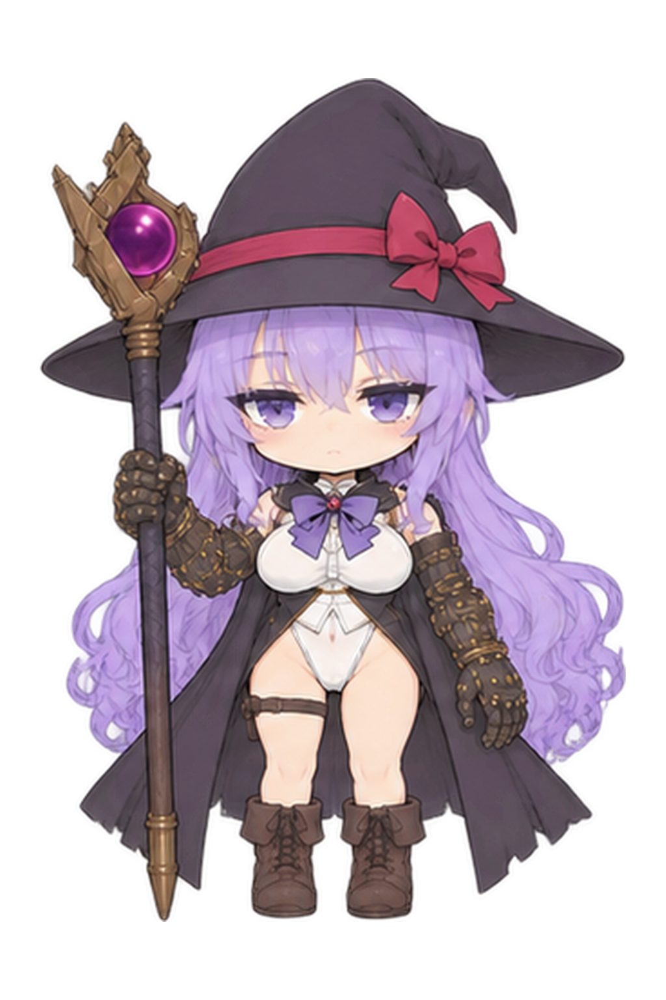
全身（白背景）
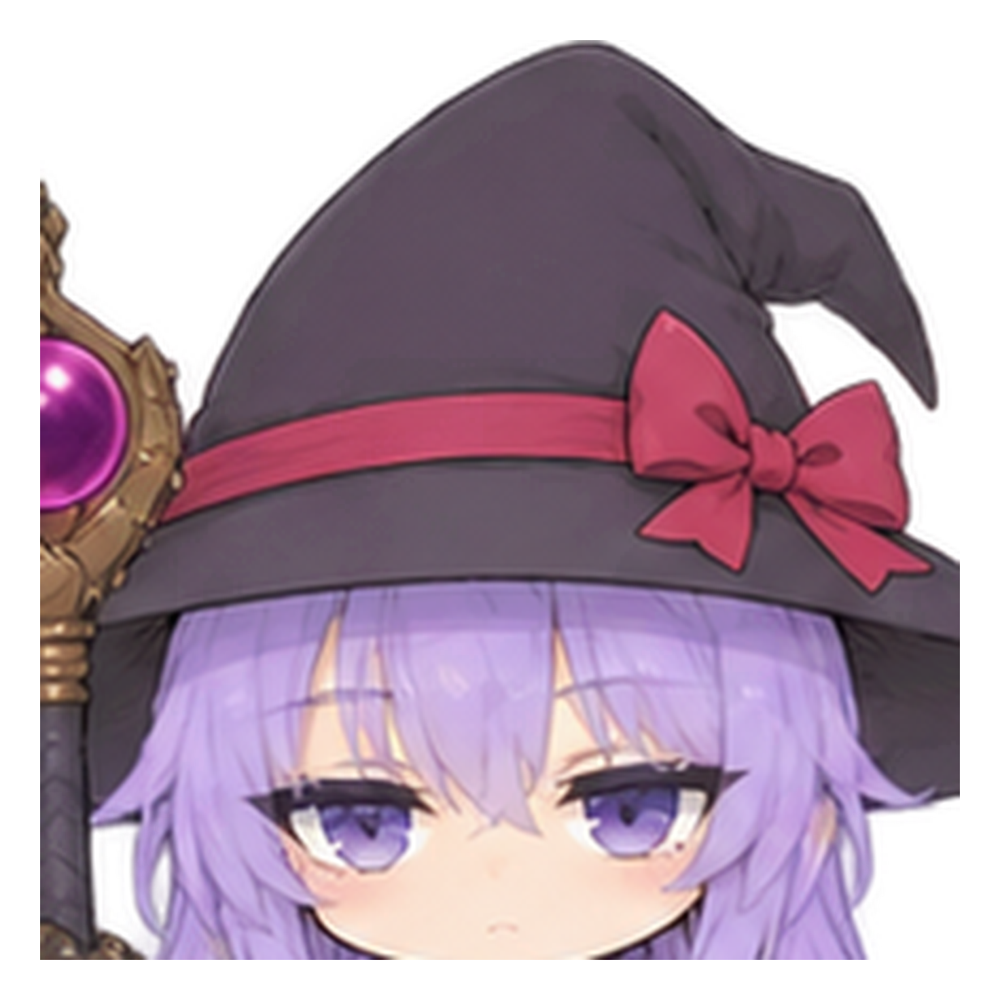
顔のアップ
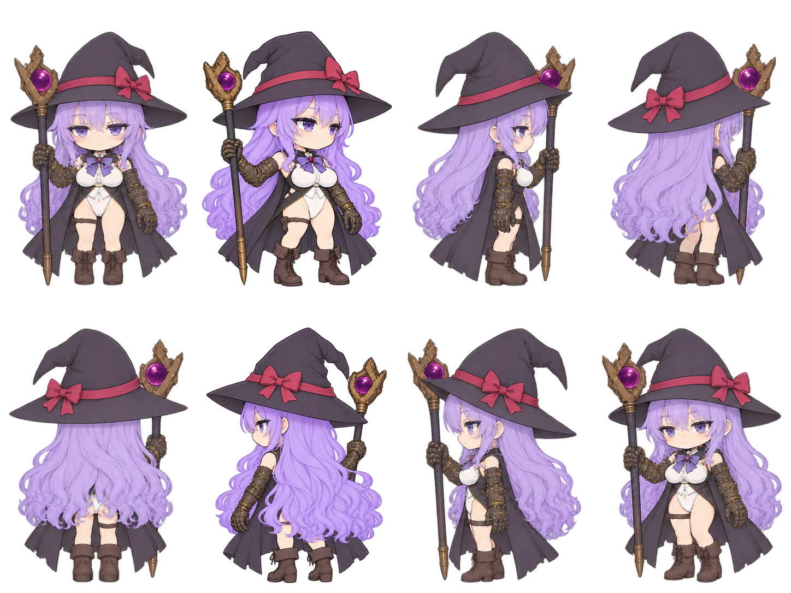
8方向の絵
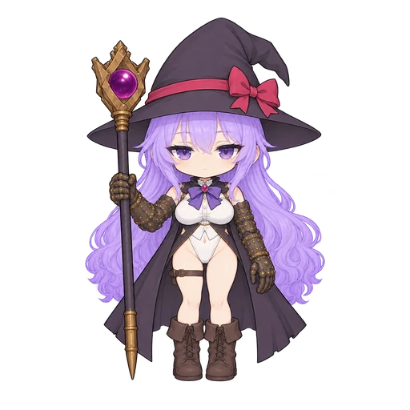
手本1（ChatGPT の絵）
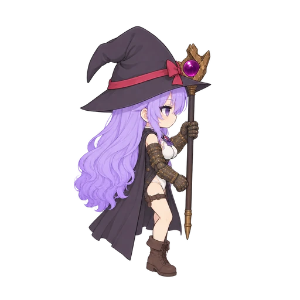
手本2（ChatGPT の絵）後ろ手に縛られて身をよじる 2枚


mage__arms_behind_squirm__front__0.png2Dゲームのキャラクター「魔法使い」の、アニメーション用の1枚絵を1枚描いてください。 ・添付のキャラクターの画像と同じ人物を、同じ絵柄・同じ頭身（小さめのデフォルメ）・同じ髪型・同じ衣装と色で描く。持ち物と特徴：両腕の肘から先は金属の義腕。大きなとんがり帽子（いつも）。紫の宝珠の杖は、ポーズの図に描いてあるときだけ持つ ・姿勢・向き・手足の位置は、添付のポーズの図（マネキン）に合わせる。図の色：青＝本人の右半身、橙＝左半身、灰色＝胴と頭。図の線・色・関節の丸は描かない。図の色の付いた線・輪・塊は、押さえているものの位置 ・全身が入る正方形。背景は白一色（できれば透明）。足元の影・床・効果線・文字・枠は描かない 場面：後ろ手に縛られて身をよじる（8コマのうち1コマ目） 向き：正面（こちらを向く） 体勢：立つ／腕：後ろ手（手首を背中でまとめる）／脚：膝を閉じる 動き：体をよじる。膝を寄せる。かかとを交互に上げる。下を向く 押さえられている所：両手首 押さえているものの見た目：thick dark violet rubbery tentacles, smooth rounded tentacles 様子（英語）：wrists pulled together behind body, twisting against restraint, tense shoulders, knees held close, struggling
下絵（組み立てた絵）を添付して頼む
下絵を保存2Dゲームのキャラクター「魔法使い」の、アニメーション用の1枚絵を1枚描いてください。 ・添付の「下絵」は、同じキャラクターの絵の部位を切り貼りして、この姿勢に並べたものです。人物・髪型・衣装・色・絵柄・頭身・姿勢・向き・構図はこの下絵のまま変えずに、切り貼りの継ぎ目・ずれ・欠け・はみ出しだけを自然に描き直して、1枚の絵として仕上げてください ・手足の位置は、添付のポーズの図（マネキン）にも合わせる。図の線・色は描かない。図の色の付いた線・輪・塊は、押さえているものの位置 ・背景は白一色（できれば透明）。足元の影・床・効果線・文字・枠は描かない 場面：後ろ手に縛られて身をよじる（8コマのうち1コマ目） 向き：正面（こちらを向く） 体勢：立つ／腕：後ろ手（手首を背中でまとめる）／脚：膝を閉じる 動き：体をよじる。膝を寄せる。かかとを交互に上げる。下を向く 押さえられている所：両手首 押さえているものの見た目：thick dark violet rubbery tentacles, smooth rounded tentacles 様子（英語）：wrists pulled together behind body, twisting against restraint, tense shoulders, knees held close, struggling


mage__arms_behind_squirm__front__2.png2Dゲームのキャラクター「魔法使い」の、アニメーション用の1枚絵を1枚描いてください。 ・添付のキャラクターの画像と同じ人物を、同じ絵柄・同じ頭身（小さめのデフォルメ）・同じ髪型・同じ衣装と色で描く。持ち物と特徴：両腕の肘から先は金属の義腕。大きなとんがり帽子（いつも）。紫の宝珠の杖は、ポーズの図に描いてあるときだけ持つ ・姿勢・向き・手足の位置は、添付のポーズの図（マネキン）に合わせる。図の色：青＝本人の右半身、橙＝左半身、灰色＝胴と頭。図の線・色・関節の丸は描かない。図の色の付いた線・輪・塊は、押さえているものの位置 ・全身が入る正方形。背景は白一色（できれば透明）。足元の影・床・効果線・文字・枠は描かない 場面：後ろ手に縛られて身をよじる（8コマのうち3コマ目） 向き：正面（こちらを向く） 体勢：立つ／腕：後ろ手（手首を背中でまとめる）／脚：膝を閉じる 動き：体をよじる。膝を寄せる。かかとを交互に上げる。下を向く 押さえられている所：両手首 押さえているものの見た目：thick dark violet rubbery tentacles, smooth rounded tentacles 様子（英語）：wrists pulled together behind body, twisting against restraint, tense shoulders, knees held close, struggling
下絵（組み立てた絵）を添付して頼む
下絵を保存2Dゲームのキャラクター「魔法使い」の、アニメーション用の1枚絵を1枚描いてください。 ・添付の「下絵」は、同じキャラクターの絵の部位を切り貼りして、この姿勢に並べたものです。人物・髪型・衣装・色・絵柄・頭身・姿勢・向き・構図はこの下絵のまま変えずに、切り貼りの継ぎ目・ずれ・欠け・はみ出しだけを自然に描き直して、1枚の絵として仕上げてください ・手足の位置は、添付のポーズの図（マネキン）にも合わせる。図の線・色は描かない。図の色の付いた線・輪・塊は、押さえているものの位置 ・背景は白一色（できれば透明）。足元の影・床・効果線・文字・枠は描かない 場面：後ろ手に縛られて身をよじる（8コマのうち3コマ目） 向き：正面（こちらを向く） 体勢：立つ／腕：後ろ手（手首を背中でまとめる）／脚：膝を閉じる 動き：体をよじる。膝を寄せる。かかとを交互に上げる。下を向く 押さえられている所：両手首 押さえているものの見た目：thick dark violet rubbery tentacles, smooth rounded tentacles 様子（英語）：wrists pulled together behind body, twisting against restraint, tense shoulders, knees held close, struggling
後ろ手に縛られて振りほどこうとする 2枚


mage__arms_behind_wrench__front__0.png2Dゲームのキャラクター「魔法使い」の、アニメーション用の1枚絵を1枚描いてください。 ・添付のキャラクターの画像と同じ人物を、同じ絵柄・同じ頭身（小さめのデフォルメ）・同じ髪型・同じ衣装と色で描く。持ち物と特徴：両腕の肘から先は金属の義腕。大きなとんがり帽子（いつも）。紫の宝珠の杖は、ポーズの図に描いてあるときだけ持つ ・姿勢・向き・手足の位置は、添付のポーズの図（マネキン）に合わせる。図の色：青＝本人の右半身、橙＝左半身、灰色＝胴と頭。図の線・色・関節の丸は描かない。図の色の付いた線・輪・塊は、押さえているものの位置 ・全身が入る正方形。背景は白一色（できれば透明）。足元の影・床・効果線・文字・枠は描かない 場面：後ろ手に縛られて振りほどこうとする（8コマのうち1コマ目） 向き：正面（こちらを向く） 体勢：立つ／腕：後ろ手／脚：踏ん張る足は爪先立ち 動き：肩をひねって左右に振りほどこうとする。胸が前に出る 押さえられている所：両手首 押さえているものの見た目：thick dark violet rubbery tentacles, smooth rounded tentacles 様子（英語）：wrists restrained behind body, forcefully twisting shoulders, pulling against restraint, braced body, determined struggling expression
下絵（組み立てた絵）を添付して頼む
下絵を保存2Dゲームのキャラクター「魔法使い」の、アニメーション用の1枚絵を1枚描いてください。 ・添付の「下絵」は、同じキャラクターの絵の部位を切り貼りして、この姿勢に並べたものです。人物・髪型・衣装・色・絵柄・頭身・姿勢・向き・構図はこの下絵のまま変えずに、切り貼りの継ぎ目・ずれ・欠け・はみ出しだけを自然に描き直して、1枚の絵として仕上げてください ・手足の位置は、添付のポーズの図（マネキン）にも合わせる。図の線・色は描かない。図の色の付いた線・輪・塊は、押さえているものの位置 ・背景は白一色（できれば透明）。足元の影・床・効果線・文字・枠は描かない 場面：後ろ手に縛られて振りほどこうとする（8コマのうち1コマ目） 向き：正面（こちらを向く） 体勢：立つ／腕：後ろ手／脚：踏ん張る足は爪先立ち 動き：肩をひねって左右に振りほどこうとする。胸が前に出る 押さえられている所：両手首 押さえているものの見た目：thick dark violet rubbery tentacles, smooth rounded tentacles 様子（英語）：wrists restrained behind body, forcefully twisting shoulders, pulling against restraint, braced body, determined struggling expression


mage__arms_behind_wrench__front__5.png2Dゲームのキャラクター「魔法使い」の、アニメーション用の1枚絵を1枚描いてください。 ・添付のキャラクターの画像と同じ人物を、同じ絵柄・同じ頭身（小さめのデフォルメ）・同じ髪型・同じ衣装と色で描く。持ち物と特徴：両腕の肘から先は金属の義腕。大きなとんがり帽子（いつも）。紫の宝珠の杖は、ポーズの図に描いてあるときだけ持つ ・姿勢・向き・手足の位置は、添付のポーズの図（マネキン）に合わせる。図の色：青＝本人の右半身、橙＝左半身、灰色＝胴と頭。図の線・色・関節の丸は描かない。図の色の付いた線・輪・塊は、押さえているものの位置 ・全身が入る正方形。背景は白一色（できれば透明）。足元の影・床・効果線・文字・枠は描かない 場面：後ろ手に縛られて振りほどこうとする（8コマのうち6コマ目） 向き：正面（こちらを向く） 体勢：立つ／腕：後ろ手／脚：踏ん張る足は爪先立ち 動き：肩をひねって左右に振りほどこうとする。胸が前に出る 押さえられている所：両手首 押さえているものの見た目：thick dark violet rubbery tentacles, smooth rounded tentacles 様子（英語）：wrists restrained behind body, forcefully twisting shoulders, pulling against restraint, braced body, determined struggling expression
下絵（組み立てた絵）を添付して頼む
下絵を保存2Dゲームのキャラクター「魔法使い」の、アニメーション用の1枚絵を1枚描いてください。 ・添付の「下絵」は、同じキャラクターの絵の部位を切り貼りして、この姿勢に並べたものです。人物・髪型・衣装・色・絵柄・頭身・姿勢・向き・構図はこの下絵のまま変えずに、切り貼りの継ぎ目・ずれ・欠け・はみ出しだけを自然に描き直して、1枚の絵として仕上げてください ・手足の位置は、添付のポーズの図（マネキン）にも合わせる。図の線・色は描かない。図の色の付いた線・輪・塊は、押さえているものの位置 ・背景は白一色（できれば透明）。足元の影・床・効果線・文字・枠は描かない 場面：後ろ手に縛られて振りほどこうとする（8コマのうち6コマ目） 向き：正面（こちらを向く） 体勢：立つ／腕：後ろ手／脚：踏ん張る足は爪先立ち 動き：肩をひねって左右に振りほどこうとする。胸が前に出る 押さえられている所：両手首 押さえているものの見た目：thick dark violet rubbery tentacles, smooth rounded tentacles 様子（英語）：wrists restrained behind body, forcefully twisting shoulders, pulling against restraint, braced body, determined struggling expression
両手首を上から吊られ、腕を引き下ろそうと力む 2枚


mage__elbows_up_strain__front__0.png2Dゲームのキャラクター「魔法使い」の、アニメーション用の1枚絵を1枚描いてください。 ・添付のキャラクターの画像と同じ人物を、同じ絵柄・同じ頭身（小さめのデフォルメ）・同じ髪型・同じ衣装と色で描く。持ち物と特徴：両腕の肘から先は金属の義腕。大きなとんがり帽子（いつも）。紫の宝珠の杖は、ポーズの図に描いてあるときだけ持つ ・姿勢・向き・手足の位置は、添付のポーズの図（マネキン）に合わせる。図の色：青＝本人の右半身、橙＝左半身、灰色＝胴と頭。図の線・色・関節の丸は描かない。図の色の付いた線・輪・塊は、押さえているものの位置 ・全身が入る正方形。背景は白一色（できれば透明）。足元の影・床・効果線・文字・枠は描かない 場面：両手首を上から吊られ、腕を引き下ろそうと力む（8コマのうち1コマ目） 向き：正面（こちらを向く） 体勢：立つ／腕：両手を頭の上に上げる／脚：膝を少し曲げる 動き：腕を引き下ろそうと力む。負けると爪先立ちに引き上げられる 押さえられている所：両手首（上から吊る） 押さえているものの見た目：thick dark violet rubbery tentacles, smooth rounded tentacles 様子（英語）：wrists bound together overhead, restraint extending upward, arms pulled taut, straining downward against restraint
下絵（組み立てた絵）を添付して頼む
下絵を保存2Dゲームのキャラクター「魔法使い」の、アニメーション用の1枚絵を1枚描いてください。 ・添付の「下絵」は、同じキャラクターの絵の部位を切り貼りして、この姿勢に並べたものです。人物・髪型・衣装・色・絵柄・頭身・姿勢・向き・構図はこの下絵のまま変えずに、切り貼りの継ぎ目・ずれ・欠け・はみ出しだけを自然に描き直して、1枚の絵として仕上げてください ・手足の位置は、添付のポーズの図（マネキン）にも合わせる。図の線・色は描かない。図の色の付いた線・輪・塊は、押さえているものの位置 ・背景は白一色（できれば透明）。足元の影・床・効果線・文字・枠は描かない 場面：両手首を上から吊られ、腕を引き下ろそうと力む（8コマのうち1コマ目） 向き：正面（こちらを向く） 体勢：立つ／腕：両手を頭の上に上げる／脚：膝を少し曲げる 動き：腕を引き下ろそうと力む。負けると爪先立ちに引き上げられる 押さえられている所：両手首（上から吊る） 押さえているものの見た目：thick dark violet rubbery tentacles, smooth rounded tentacles 様子（英語）：wrists bound together overhead, restraint extending upward, arms pulled taut, straining downward against restraint


mage__elbows_up_strain__front__2.png2Dゲームのキャラクター「魔法使い」の、アニメーション用の1枚絵を1枚描いてください。 ・添付のキャラクターの画像と同じ人物を、同じ絵柄・同じ頭身（小さめのデフォルメ）・同じ髪型・同じ衣装と色で描く。持ち物と特徴：両腕の肘から先は金属の義腕。大きなとんがり帽子（いつも）。紫の宝珠の杖は、ポーズの図に描いてあるときだけ持つ ・姿勢・向き・手足の位置は、添付のポーズの図（マネキン）に合わせる。図の色：青＝本人の右半身、橙＝左半身、灰色＝胴と頭。図の線・色・関節の丸は描かない。図の色の付いた線・輪・塊は、押さえているものの位置 ・全身が入る正方形。背景は白一色（できれば透明）。足元の影・床・効果線・文字・枠は描かない 場面：両手首を上から吊られ、腕を引き下ろそうと力む（8コマのうち3コマ目） 向き：正面（こちらを向く） 体勢：立つ／腕：両手を頭の上に上げる／脚：膝を少し曲げる 動き：腕を引き下ろそうと力む。負けると爪先立ちに引き上げられる 押さえられている所：両手首（上から吊る） 押さえているものの見た目：thick dark violet rubbery tentacles, smooth rounded tentacles 様子（英語）：wrists bound together overhead, restraint extending upward, arms pulled taut, straining downward against restraint
下絵（組み立てた絵）を添付して頼む
下絵を保存2Dゲームのキャラクター「魔法使い」の、アニメーション用の1枚絵を1枚描いてください。 ・添付の「下絵」は、同じキャラクターの絵の部位を切り貼りして、この姿勢に並べたものです。人物・髪型・衣装・色・絵柄・頭身・姿勢・向き・構図はこの下絵のまま変えずに、切り貼りの継ぎ目・ずれ・欠け・はみ出しだけを自然に描き直して、1枚の絵として仕上げてください ・手足の位置は、添付のポーズの図（マネキン）にも合わせる。図の線・色は描かない。図の色の付いた線・輪・塊は、押さえているものの位置 ・背景は白一色（できれば透明）。足元の影・床・効果線・文字・枠は描かない 場面：両手首を上から吊られ、腕を引き下ろそうと力む（8コマのうち3コマ目） 向き：正面（こちらを向く） 体勢：立つ／腕：両手を頭の上に上げる／脚：膝を少し曲げる 動き：腕を引き下ろそうと力む。負けると爪先立ちに引き上げられる 押さえられている所：両手首（上から吊る） 押さえているものの見た目：thick dark violet rubbery tentacles, smooth rounded tentacles 様子（英語）：wrists bound together overhead, restraint extending upward, arms pulled taut, straining downward against restraint
後ろ手で、膝を左右へ引かれる 2枚


mage__legs_pulled_open__front__0.png2Dゲームのキャラクター「魔法使い」の、アニメーション用の1枚絵を1枚描いてください。 ・添付のキャラクターの画像と同じ人物を、同じ絵柄・同じ頭身（小さめのデフォルメ）・同じ髪型・同じ衣装と色で描く。持ち物と特徴：両腕の肘から先は金属の義腕。大きなとんがり帽子（いつも）。紫の宝珠の杖は、ポーズの図に描いてあるときだけ持つ ・姿勢・向き・手足の位置は、添付のポーズの図（マネキン）に合わせる。図の色：青＝本人の右半身、橙＝左半身、灰色＝胴と頭。図の線・色・関節の丸は描かない。図の色の付いた線・輪・塊は、押さえているものの位置 ・全身が入る正方形。背景は白一色（できれば透明）。足元の影・床・効果線・文字・枠は描かない 場面：後ろ手で、膝を左右へ引かれる（12コマのうち1コマ目・閉じる） 向き：正面（こちらを向く） 体勢：立つ／腕：後ろ手／脚：閉じた膝 → 左右へ引かれる 動き：はじめ膝を寄せる → 最後は膝が外へ開いて腰が落ちる 押さえられている所：両手首・両膝（左右へ引く） 押さえているものの見た目：thick dark violet rubbery tentacles, smooth rounded tentacles 様子（英語）：wrists restrained behind body, thick dark violet rubbery tentacles around both knees, knees pulled outward, resisting the pull
下絵（組み立てた絵）を添付して頼む
下絵を保存2Dゲームのキャラクター「魔法使い」の、アニメーション用の1枚絵を1枚描いてください。 ・添付の「下絵」は、同じキャラクターの絵の部位を切り貼りして、この姿勢に並べたものです。人物・髪型・衣装・色・絵柄・頭身・姿勢・向き・構図はこの下絵のまま変えずに、切り貼りの継ぎ目・ずれ・欠け・はみ出しだけを自然に描き直して、1枚の絵として仕上げてください ・手足の位置は、添付のポーズの図（マネキン）にも合わせる。図の線・色は描かない。図の色の付いた線・輪・塊は、押さえているものの位置 ・背景は白一色（できれば透明）。足元の影・床・効果線・文字・枠は描かない 場面：後ろ手で、膝を左右へ引かれる（12コマのうち1コマ目・閉じる） 向き：正面（こちらを向く） 体勢：立つ／腕：後ろ手／脚：閉じた膝 → 左右へ引かれる 動き：はじめ膝を寄せる → 最後は膝が外へ開いて腰が落ちる 押さえられている所：両手首・両膝（左右へ引く） 押さえているものの見た目：thick dark violet rubbery tentacles, smooth rounded tentacles 様子（英語）：wrists restrained behind body, thick dark violet rubbery tentacles around both knees, knees pulled outward, resisting the pull


mage__legs_pulled_open__front__7.png2Dゲームのキャラクター「魔法使い」の、アニメーション用の1枚絵を1枚描いてください。 ・添付のキャラクターの画像と同じ人物を、同じ絵柄・同じ頭身（小さめのデフォルメ）・同じ髪型・同じ衣装と色で描く。持ち物と特徴：両腕の肘から先は金属の義腕。大きなとんがり帽子（いつも）。紫の宝珠の杖は、ポーズの図に描いてあるときだけ持つ ・姿勢・向き・手足の位置は、添付のポーズの図（マネキン）に合わせる。図の色：青＝本人の右半身、橙＝左半身、灰色＝胴と頭。図の線・色・関節の丸は描かない。図の色の付いた線・輪・塊は、押さえているものの位置 ・全身が入る正方形。背景は白一色（できれば透明）。足元の影・床・効果線・文字・枠は描かない 場面：後ろ手で、膝を左右へ引かれる（12コマのうち8コマ目・開かれた） 向き：正面（こちらを向く） 体勢：立つ／腕：後ろ手／脚：閉じた膝 → 左右へ引かれる 動き：はじめ膝を寄せる → 最後は膝が外へ開いて腰が落ちる 押さえられている所：両手首・両膝（左右へ引く） 押さえているものの見た目：thick dark violet rubbery tentacles, smooth rounded tentacles 様子（英語）：wrists restrained behind body, thick dark violet rubbery tentacles around both knees, knees pulled outward, resisting the pull
下絵（組み立てた絵）を添付して頼む
下絵を保存2Dゲームのキャラクター「魔法使い」の、アニメーション用の1枚絵を1枚描いてください。 ・添付の「下絵」は、同じキャラクターの絵の部位を切り貼りして、この姿勢に並べたものです。人物・髪型・衣装・色・絵柄・頭身・姿勢・向き・構図はこの下絵のまま変えずに、切り貼りの継ぎ目・ずれ・欠け・はみ出しだけを自然に描き直して、1枚の絵として仕上げてください ・手足の位置は、添付のポーズの図（マネキン）にも合わせる。図の線・色は描かない。図の色の付いた線・輪・塊は、押さえているものの位置 ・背景は白一色（できれば透明）。足元の影・床・効果線・文字・枠は描かない 場面：後ろ手で、膝を左右へ引かれる（12コマのうち8コマ目・開かれた） 向き：正面（こちらを向く） 体勢：立つ／腕：後ろ手／脚：閉じた膝 → 左右へ引かれる 動き：はじめ膝を寄せる → 最後は膝が外へ開いて腰が落ちる 押さえられている所：両手首・両膝（左右へ引く） 押さえているものの見た目：thick dark violet rubbery tentacles, smooth rounded tentacles 様子（英語）：wrists restrained behind body, thick dark violet rubbery tentacles around both knees, knees pulled outward, resisting the pull
後ろ手で、膝を左右へ引かれたまま耐える 2枚


mage__legs_held_open__front__0.png2Dゲームのキャラクター「魔法使い」の、アニメーション用の1枚絵を1枚描いてください。 ・添付のキャラクターの画像と同じ人物を、同じ絵柄・同じ頭身（小さめのデフォルメ）・同じ髪型・同じ衣装と色で描く。持ち物と特徴：両腕の肘から先は金属の義腕。大きなとんがり帽子（いつも）。紫の宝珠の杖は、ポーズの図に描いてあるときだけ持つ ・姿勢・向き・手足の位置は、添付のポーズの図（マネキン）に合わせる。図の色：青＝本人の右半身、橙＝左半身、灰色＝胴と頭。図の線・色・関節の丸は描かない。図の色の付いた線・輪・塊は、押さえているものの位置 ・全身が入る正方形。背景は白一色（できれば透明）。足元の影・床・効果線・文字・枠は描かない 場面：後ろ手で、膝を左右へ引かれたまま耐える（8コマのうち1コマ目） 向き：正面（こちらを向く） 体勢：立つ／腕：後ろ手／脚：左右に引かれたまま 動き：膝が小さく震える 押さえられている所：両手首・両膝（左右） 押さえているものの見た目：thick dark violet rubbery tentacles, smooth rounded tentacles 様子（英語）：wrists restrained behind body, thick dark violet rubbery tentacles around both knees, knees held outward, trembling legs, sustained resistance
下絵（組み立てた絵）を添付して頼む
下絵を保存2Dゲームのキャラクター「魔法使い」の、アニメーション用の1枚絵を1枚描いてください。 ・添付の「下絵」は、同じキャラクターの絵の部位を切り貼りして、この姿勢に並べたものです。人物・髪型・衣装・色・絵柄・頭身・姿勢・向き・構図はこの下絵のまま変えずに、切り貼りの継ぎ目・ずれ・欠け・はみ出しだけを自然に描き直して、1枚の絵として仕上げてください ・手足の位置は、添付のポーズの図（マネキン）にも合わせる。図の線・色は描かない。図の色の付いた線・輪・塊は、押さえているものの位置 ・背景は白一色（できれば透明）。足元の影・床・効果線・文字・枠は描かない 場面：後ろ手で、膝を左右へ引かれたまま耐える（8コマのうち1コマ目） 向き：正面（こちらを向く） 体勢：立つ／腕：後ろ手／脚：左右に引かれたまま 動き：膝が小さく震える 押さえられている所：両手首・両膝（左右） 押さえているものの見た目：thick dark violet rubbery tentacles, smooth rounded tentacles 様子（英語）：wrists restrained behind body, thick dark violet rubbery tentacles around both knees, knees held outward, trembling legs, sustained resistance


mage__legs_held_open__front__2.png2Dゲームのキャラクター「魔法使い」の、アニメーション用の1枚絵を1枚描いてください。 ・添付のキャラクターの画像と同じ人物を、同じ絵柄・同じ頭身（小さめのデフォルメ）・同じ髪型・同じ衣装と色で描く。持ち物と特徴：両腕の肘から先は金属の義腕。大きなとんがり帽子（いつも）。紫の宝珠の杖は、ポーズの図に描いてあるときだけ持つ ・姿勢・向き・手足の位置は、添付のポーズの図（マネキン）に合わせる。図の色：青＝本人の右半身、橙＝左半身、灰色＝胴と頭。図の線・色・関節の丸は描かない。図の色の付いた線・輪・塊は、押さえているものの位置 ・全身が入る正方形。背景は白一色（できれば透明）。足元の影・床・効果線・文字・枠は描かない 場面：後ろ手で、膝を左右へ引かれたまま耐える（8コマのうち3コマ目） 向き：正面（こちらを向く） 体勢：立つ／腕：後ろ手／脚：左右に引かれたまま 動き：膝が小さく震える 押さえられている所：両手首・両膝（左右） 押さえているものの見た目：thick dark violet rubbery tentacles, smooth rounded tentacles 様子（英語）：wrists restrained behind body, thick dark violet rubbery tentacles around both knees, knees held outward, trembling legs, sustained resistance
下絵（組み立てた絵）を添付して頼む
下絵を保存2Dゲームのキャラクター「魔法使い」の、アニメーション用の1枚絵を1枚描いてください。 ・添付の「下絵」は、同じキャラクターの絵の部位を切り貼りして、この姿勢に並べたものです。人物・髪型・衣装・色・絵柄・頭身・姿勢・向き・構図はこの下絵のまま変えずに、切り貼りの継ぎ目・ずれ・欠け・はみ出しだけを自然に描き直して、1枚の絵として仕上げてください ・手足の位置は、添付のポーズの図（マネキン）にも合わせる。図の線・色は描かない。図の色の付いた線・輪・塊は、押さえているものの位置 ・背景は白一色（できれば透明）。足元の影・床・効果線・文字・枠は描かない 場面：後ろ手で、膝を左右へ引かれたまま耐える（8コマのうち3コマ目） 向き：正面（こちらを向く） 体勢：立つ／腕：後ろ手／脚：左右に引かれたまま 動き：膝が小さく震える 押さえられている所：両手首・両膝（左右） 押さえているものの見た目：thick dark violet rubbery tentacles, smooth rounded tentacles 様子（英語）：wrists restrained behind body, thick dark violet rubbery tentacles around both knees, knees held outward, trembling legs, sustained resistance
後ろ手で、足を開いて立ったまま体が前後に揺れる 2枚


mage__hip_rock_spread__front__0.png2Dゲームのキャラクター「魔法使い」の、アニメーション用の1枚絵を1枚描いてください。 ・添付のキャラクターの画像と同じ人物を、同じ絵柄・同じ頭身（小さめのデフォルメ）・同じ髪型・同じ衣装と色で描く。持ち物と特徴：両腕の肘から先は金属の義腕。大きなとんがり帽子（いつも）。紫の宝珠の杖は、ポーズの図に描いてあるときだけ持つ ・姿勢・向き・手足の位置は、添付のポーズの図（マネキン）に合わせる。図の色：青＝本人の右半身、橙＝左半身、灰色＝胴と頭。図の線・色・関節の丸は描かない。図の色の付いた線・輪・塊は、押さえているものの位置 ・全身が入る正方形。背景は白一色（できれば透明）。足元の影・床・効果線・文字・枠は描かない 場面：後ろ手で、足を開いて立ったまま体が前後に揺れる（8コマのうち1コマ目） 向き：正面（こちらを向く） 体勢：立つ／腕：後ろ手／脚：足を開く 動き：体が前後に揺れる 押さえられている所：両手首・両膝（左右） 押さえているものの見た目：thick dark violet rubbery tentacles, smooth rounded tentacles 様子（英語）：wrists restrained behind body, knees held apart by thick dark violet rubbery tentacles, body rocking under restraint, tense balance
下絵（組み立てた絵）を添付して頼む
下絵を保存2Dゲームのキャラクター「魔法使い」の、アニメーション用の1枚絵を1枚描いてください。 ・添付の「下絵」は、同じキャラクターの絵の部位を切り貼りして、この姿勢に並べたものです。人物・髪型・衣装・色・絵柄・頭身・姿勢・向き・構図はこの下絵のまま変えずに、切り貼りの継ぎ目・ずれ・欠け・はみ出しだけを自然に描き直して、1枚の絵として仕上げてください ・手足の位置は、添付のポーズの図（マネキン）にも合わせる。図の線・色は描かない。図の色の付いた線・輪・塊は、押さえているものの位置 ・背景は白一色（できれば透明）。足元の影・床・効果線・文字・枠は描かない 場面：後ろ手で、足を開いて立ったまま体が前後に揺れる（8コマのうち1コマ目） 向き：正面（こちらを向く） 体勢：立つ／腕：後ろ手／脚：足を開く 動き：体が前後に揺れる 押さえられている所：両手首・両膝（左右） 押さえているものの見た目：thick dark violet rubbery tentacles, smooth rounded tentacles 様子（英語）：wrists restrained behind body, knees held apart by thick dark violet rubbery tentacles, body rocking under restraint, tense balance


mage__hip_rock_spread__front__3.png2Dゲームのキャラクター「魔法使い」の、アニメーション用の1枚絵を1枚描いてください。 ・添付のキャラクターの画像と同じ人物を、同じ絵柄・同じ頭身（小さめのデフォルメ）・同じ髪型・同じ衣装と色で描く。持ち物と特徴：両腕の肘から先は金属の義腕。大きなとんがり帽子（いつも）。紫の宝珠の杖は、ポーズの図に描いてあるときだけ持つ ・姿勢・向き・手足の位置は、添付のポーズの図（マネキン）に合わせる。図の色：青＝本人の右半身、橙＝左半身、灰色＝胴と頭。図の線・色・関節の丸は描かない。図の色の付いた線・輪・塊は、押さえているものの位置 ・全身が入る正方形。背景は白一色（できれば透明）。足元の影・床・効果線・文字・枠は描かない 場面：後ろ手で、足を開いて立ったまま体が前後に揺れる（8コマのうち4コマ目） 向き：正面（こちらを向く） 体勢：立つ／腕：後ろ手／脚：足を開く 動き：体が前後に揺れる 押さえられている所：両手首・両膝（左右） 押さえているものの見た目：thick dark violet rubbery tentacles, smooth rounded tentacles 様子（英語）：wrists restrained behind body, knees held apart by thick dark violet rubbery tentacles, body rocking under restraint, tense balance
下絵（組み立てた絵）を添付して頼む
下絵を保存2Dゲームのキャラクター「魔法使い」の、アニメーション用の1枚絵を1枚描いてください。 ・添付の「下絵」は、同じキャラクターの絵の部位を切り貼りして、この姿勢に並べたものです。人物・髪型・衣装・色・絵柄・頭身・姿勢・向き・構図はこの下絵のまま変えずに、切り貼りの継ぎ目・ずれ・欠け・はみ出しだけを自然に描き直して、1枚の絵として仕上げてください ・手足の位置は、添付のポーズの図（マネキン）にも合わせる。図の線・色は描かない。図の色の付いた線・輪・塊は、押さえているものの位置 ・背景は白一色（できれば透明）。足元の影・床・効果線・文字・枠は描かない 場面：後ろ手で、足を開いて立ったまま体が前後に揺れる（8コマのうち4コマ目） 向き：正面（こちらを向く） 体勢：立つ／腕：後ろ手／脚：足を開く 動き：体が前後に揺れる 押さえられている所：両手首・両膝（左右） 押さえているものの見た目：thick dark violet rubbery tentacles, smooth rounded tentacles 様子（英語）：wrists restrained behind body, knees held apart by thick dark violet rubbery tentacles, body rocking under restraint, tense balance
後ろ手で、膝を閉じたまま体が前後に揺れる 2枚


mage__hip_rock_closed__front__0.png2Dゲームのキャラクター「魔法使い」の、アニメーション用の1枚絵を1枚描いてください。 ・添付のキャラクターの画像と同じ人物を、同じ絵柄・同じ頭身（小さめのデフォルメ）・同じ髪型・同じ衣装と色で描く。持ち物と特徴：両腕の肘から先は金属の義腕。大きなとんがり帽子（いつも）。紫の宝珠の杖は、ポーズの図に描いてあるときだけ持つ ・姿勢・向き・手足の位置は、添付のポーズの図（マネキン）に合わせる。図の色：青＝本人の右半身、橙＝左半身、灰色＝胴と頭。図の線・色・関節の丸は描かない。図の色の付いた線・輪・塊は、押さえているものの位置 ・全身が入る正方形。背景は白一色（できれば透明）。足元の影・床・効果線・文字・枠は描かない 場面：後ろ手で、膝を閉じたまま体が前後に揺れる（8コマのうち1コマ目） 向き：正面（こちらを向く） 体勢：立つ／腕：後ろ手／脚：膝を閉じたまま 動き：体が小さく前後に揺れる。そのたび爪先立ち 押さえられている所：両手首 押さえているものの見た目：thick dark violet rubbery tentacles, smooth rounded tentacles 様子（英語）：wrists restrained behind body, knees held close together, restrained rocking motion, tense calves, unstable balance
下絵（組み立てた絵）を添付して頼む
下絵を保存2Dゲームのキャラクター「魔法使い」の、アニメーション用の1枚絵を1枚描いてください。 ・添付の「下絵」は、同じキャラクターの絵の部位を切り貼りして、この姿勢に並べたものです。人物・髪型・衣装・色・絵柄・頭身・姿勢・向き・構図はこの下絵のまま変えずに、切り貼りの継ぎ目・ずれ・欠け・はみ出しだけを自然に描き直して、1枚の絵として仕上げてください ・手足の位置は、添付のポーズの図（マネキン）にも合わせる。図の線・色は描かない。図の色の付いた線・輪・塊は、押さえているものの位置 ・背景は白一色（できれば透明）。足元の影・床・効果線・文字・枠は描かない 場面：後ろ手で、膝を閉じたまま体が前後に揺れる（8コマのうち1コマ目） 向き：正面（こちらを向く） 体勢：立つ／腕：後ろ手／脚：膝を閉じたまま 動き：体が小さく前後に揺れる。そのたび爪先立ち 押さえられている所：両手首 押さえているものの見た目：thick dark violet rubbery tentacles, smooth rounded tentacles 様子（英語）：wrists restrained behind body, knees held close together, restrained rocking motion, tense calves, unstable balance


mage__hip_rock_closed__front__3.png2Dゲームのキャラクター「魔法使い」の、アニメーション用の1枚絵を1枚描いてください。 ・添付のキャラクターの画像と同じ人物を、同じ絵柄・同じ頭身（小さめのデフォルメ）・同じ髪型・同じ衣装と色で描く。持ち物と特徴：両腕の肘から先は金属の義腕。大きなとんがり帽子（いつも）。紫の宝珠の杖は、ポーズの図に描いてあるときだけ持つ ・姿勢・向き・手足の位置は、添付のポーズの図（マネキン）に合わせる。図の色：青＝本人の右半身、橙＝左半身、灰色＝胴と頭。図の線・色・関節の丸は描かない。図の色の付いた線・輪・塊は、押さえているものの位置 ・全身が入る正方形。背景は白一色（できれば透明）。足元の影・床・効果線・文字・枠は描かない 場面：後ろ手で、膝を閉じたまま体が前後に揺れる（8コマのうち4コマ目） 向き：正面（こちらを向く） 体勢：立つ／腕：後ろ手／脚：膝を閉じたまま 動き：体が小さく前後に揺れる。そのたび爪先立ち 押さえられている所：両手首 押さえているものの見た目：thick dark violet rubbery tentacles, smooth rounded tentacles 様子（英語）：wrists restrained behind body, knees held close together, restrained rocking motion, tense calves, unstable balance
下絵（組み立てた絵）を添付して頼む
下絵を保存2Dゲームのキャラクター「魔法使い」の、アニメーション用の1枚絵を1枚描いてください。 ・添付の「下絵」は、同じキャラクターの絵の部位を切り貼りして、この姿勢に並べたものです。人物・髪型・衣装・色・絵柄・頭身・姿勢・向き・構図はこの下絵のまま変えずに、切り貼りの継ぎ目・ずれ・欠け・はみ出しだけを自然に描き直して、1枚の絵として仕上げてください ・手足の位置は、添付のポーズの図（マネキン）にも合わせる。図の線・色は描かない。図の色の付いた線・輪・塊は、押さえているものの位置 ・背景は白一色（できれば透明）。足元の影・床・効果線・文字・枠は描かない 場面：後ろ手で、膝を閉じたまま体が前後に揺れる（8コマのうち4コマ目） 向き：正面（こちらを向く） 体勢：立つ／腕：後ろ手／脚：膝を閉じたまま 動き：体が小さく前後に揺れる。そのたび爪先立ち 押さえられている所：両手首 押さえているものの見た目：thick dark violet rubbery tentacles, smooth rounded tentacles 様子（英語）：wrists restrained behind body, knees held close together, restrained rocking motion, tense calves, unstable balance
後ろ手で、足を開いて立ったまま体が上下に揺れる 2枚


mage__bounce_spread__front__0.png2Dゲームのキャラクター「魔法使い」の、アニメーション用の1枚絵を1枚描いてください。 ・添付のキャラクターの画像と同じ人物を、同じ絵柄・同じ頭身（小さめのデフォルメ）・同じ髪型・同じ衣装と色で描く。持ち物と特徴：両腕の肘から先は金属の義腕。大きなとんがり帽子（いつも）。紫の宝珠の杖は、ポーズの図に描いてあるときだけ持つ ・姿勢・向き・手足の位置は、添付のポーズの図（マネキン）に合わせる。図の色：青＝本人の右半身、橙＝左半身、灰色＝胴と頭。図の線・色・関節の丸は描かない。図の色の付いた線・輪・塊は、押さえているものの位置 ・全身が入る正方形。背景は白一色（できれば透明）。足元の影・床・効果線・文字・枠は描かない 場面：後ろ手で、足を開いて立ったまま体が上下に揺れる（8コマのうち1コマ目） 向き：正面（こちらを向く） 体勢：立つ／腕：後ろ手／脚：足を開く 動き：体が上下に揺れる。上で爪先立ち、下で膝が曲がる 押さえられている所：両手首・両膝（左右） 押さえているものの見た目：thick dark violet rubbery tentacles, smooth rounded tentacles 様子（英語）：wrists restrained behind body, knees held apart by thick dark violet rubbery tentacles, vertical body motion, strained legs
下絵（組み立てた絵）を添付して頼む
下絵を保存2Dゲームのキャラクター「魔法使い」の、アニメーション用の1枚絵を1枚描いてください。 ・添付の「下絵」は、同じキャラクターの絵の部位を切り貼りして、この姿勢に並べたものです。人物・髪型・衣装・色・絵柄・頭身・姿勢・向き・構図はこの下絵のまま変えずに、切り貼りの継ぎ目・ずれ・欠け・はみ出しだけを自然に描き直して、1枚の絵として仕上げてください ・手足の位置は、添付のポーズの図（マネキン）にも合わせる。図の線・色は描かない。図の色の付いた線・輪・塊は、押さえているものの位置 ・背景は白一色（できれば透明）。足元の影・床・効果線・文字・枠は描かない 場面：後ろ手で、足を開いて立ったまま体が上下に揺れる（8コマのうち1コマ目） 向き：正面（こちらを向く） 体勢：立つ／腕：後ろ手／脚：足を開く 動き：体が上下に揺れる。上で爪先立ち、下で膝が曲がる 押さえられている所：両手首・両膝（左右） 押さえているものの見た目：thick dark violet rubbery tentacles, smooth rounded tentacles 様子（英語）：wrists restrained behind body, knees held apart by thick dark violet rubbery tentacles, vertical body motion, strained legs


mage__bounce_spread__front__4.png2Dゲームのキャラクター「魔法使い」の、アニメーション用の1枚絵を1枚描いてください。 ・添付のキャラクターの画像と同じ人物を、同じ絵柄・同じ頭身（小さめのデフォルメ）・同じ髪型・同じ衣装と色で描く。持ち物と特徴：両腕の肘から先は金属の義腕。大きなとんがり帽子（いつも）。紫の宝珠の杖は、ポーズの図に描いてあるときだけ持つ ・姿勢・向き・手足の位置は、添付のポーズの図（マネキン）に合わせる。図の色：青＝本人の右半身、橙＝左半身、灰色＝胴と頭。図の線・色・関節の丸は描かない。図の色の付いた線・輪・塊は、押さえているものの位置 ・全身が入る正方形。背景は白一色（できれば透明）。足元の影・床・効果線・文字・枠は描かない 場面：後ろ手で、足を開いて立ったまま体が上下に揺れる（8コマのうち5コマ目） 向き：正面（こちらを向く） 体勢：立つ／腕：後ろ手／脚：足を開く 動き：体が上下に揺れる。上で爪先立ち、下で膝が曲がる 押さえられている所：両手首・両膝（左右） 押さえているものの見た目：thick dark violet rubbery tentacles, smooth rounded tentacles 様子（英語）：wrists restrained behind body, knees held apart by thick dark violet rubbery tentacles, vertical body motion, strained legs
下絵（組み立てた絵）を添付して頼む
下絵を保存2Dゲームのキャラクター「魔法使い」の、アニメーション用の1枚絵を1枚描いてください。 ・添付の「下絵」は、同じキャラクターの絵の部位を切り貼りして、この姿勢に並べたものです。人物・髪型・衣装・色・絵柄・頭身・姿勢・向き・構図はこの下絵のまま変えずに、切り貼りの継ぎ目・ずれ・欠け・はみ出しだけを自然に描き直して、1枚の絵として仕上げてください ・手足の位置は、添付のポーズの図（マネキン）にも合わせる。図の線・色は描かない。図の色の付いた線・輪・塊は、押さえているものの位置 ・背景は白一色（できれば透明）。足元の影・床・効果線・文字・枠は描かない 場面：後ろ手で、足を開いて立ったまま体が上下に揺れる（8コマのうち5コマ目） 向き：正面（こちらを向く） 体勢：立つ／腕：後ろ手／脚：足を開く 動き：体が上下に揺れる。上で爪先立ち、下で膝が曲がる 押さえられている所：両手首・両膝（左右） 押さえているものの見た目：thick dark violet rubbery tentacles, smooth rounded tentacles 様子（英語）：wrists restrained behind body, knees held apart by thick dark violet rubbery tentacles, vertical body motion, strained legs
手首を上から吊られたまま体が上下に揺れる 2枚


mage__bounce_hung__front__0.png2Dゲームのキャラクター「魔法使い」の、アニメーション用の1枚絵を1枚描いてください。 ・添付のキャラクターの画像と同じ人物を、同じ絵柄・同じ頭身（小さめのデフォルメ）・同じ髪型・同じ衣装と色で描く。持ち物と特徴：両腕の肘から先は金属の義腕。大きなとんがり帽子（いつも）。紫の宝珠の杖は、ポーズの図に描いてあるときだけ持つ ・姿勢・向き・手足の位置は、添付のポーズの図（マネキン）に合わせる。図の色：青＝本人の右半身、橙＝左半身、灰色＝胴と頭。図の線・色・関節の丸は描かない。図の色の付いた線・輪・塊は、押さえているものの位置 ・全身が入る正方形。背景は白一色（できれば透明）。足元の影・床・効果線・文字・枠は描かない 場面：手首を上から吊られたまま体が上下に揺れる（8コマのうち1コマ目） 向き：正面（こちらを向く） 体勢：吊られて立つ／腕：両手を頭の上に上げる／脚：足を開く 動き：体が上下に揺れる。沈むと腕が伸びきる 押さえられている所：両手首（上から吊る）・両膝（左右） 押さえているものの見た目：thick dark violet rubbery tentacles, smooth rounded tentacles 様子（英語）：wrists restrained overhead, thick dark violet rubbery tentacles extending upward, knees held apart, arms pulled taut
下絵（組み立てた絵）を添付して頼む
下絵を保存2Dゲームのキャラクター「魔法使い」の、アニメーション用の1枚絵を1枚描いてください。 ・添付の「下絵」は、同じキャラクターの絵の部位を切り貼りして、この姿勢に並べたものです。人物・髪型・衣装・色・絵柄・頭身・姿勢・向き・構図はこの下絵のまま変えずに、切り貼りの継ぎ目・ずれ・欠け・はみ出しだけを自然に描き直して、1枚の絵として仕上げてください ・手足の位置は、添付のポーズの図（マネキン）にも合わせる。図の線・色は描かない。図の色の付いた線・輪・塊は、押さえているものの位置 ・背景は白一色（できれば透明）。足元の影・床・効果線・文字・枠は描かない 場面：手首を上から吊られたまま体が上下に揺れる（8コマのうち1コマ目） 向き：正面（こちらを向く） 体勢：吊られて立つ／腕：両手を頭の上に上げる／脚：足を開く 動き：体が上下に揺れる。沈むと腕が伸びきる 押さえられている所：両手首（上から吊る）・両膝（左右） 押さえているものの見た目：thick dark violet rubbery tentacles, smooth rounded tentacles 様子（英語）：wrists restrained overhead, thick dark violet rubbery tentacles extending upward, knees held apart, arms pulled taut


mage__bounce_hung__front__4.png2Dゲームのキャラクター「魔法使い」の、アニメーション用の1枚絵を1枚描いてください。 ・添付のキャラクターの画像と同じ人物を、同じ絵柄・同じ頭身（小さめのデフォルメ）・同じ髪型・同じ衣装と色で描く。持ち物と特徴：両腕の肘から先は金属の義腕。大きなとんがり帽子（いつも）。紫の宝珠の杖は、ポーズの図に描いてあるときだけ持つ ・姿勢・向き・手足の位置は、添付のポーズの図（マネキン）に合わせる。図の色：青＝本人の右半身、橙＝左半身、灰色＝胴と頭。図の線・色・関節の丸は描かない。図の色の付いた線・輪・塊は、押さえているものの位置 ・全身が入る正方形。背景は白一色（できれば透明）。足元の影・床・効果線・文字・枠は描かない 場面：手首を上から吊られたまま体が上下に揺れる（8コマのうち5コマ目） 向き：正面（こちらを向く） 体勢：吊られて立つ／腕：両手を頭の上に上げる／脚：足を開く 動き：体が上下に揺れる。沈むと腕が伸びきる 押さえられている所：両手首（上から吊る）・両膝（左右） 押さえているものの見た目：thick dark violet rubbery tentacles, smooth rounded tentacles 様子（英語）：wrists restrained overhead, thick dark violet rubbery tentacles extending upward, knees held apart, arms pulled taut
下絵（組み立てた絵）を添付して頼む
下絵を保存2Dゲームのキャラクター「魔法使い」の、アニメーション用の1枚絵を1枚描いてください。 ・添付の「下絵」は、同じキャラクターの絵の部位を切り貼りして、この姿勢に並べたものです。人物・髪型・衣装・色・絵柄・頭身・姿勢・向き・構図はこの下絵のまま変えずに、切り貼りの継ぎ目・ずれ・欠け・はみ出しだけを自然に描き直して、1枚の絵として仕上げてください ・手足の位置は、添付のポーズの図（マネキン）にも合わせる。図の線・色は描かない。図の色の付いた線・輪・塊は、押さえているものの位置 ・背景は白一色（できれば透明）。足元の影・床・効果線・文字・枠は描かない 場面：手首を上から吊られたまま体が上下に揺れる（8コマのうち5コマ目） 向き：正面（こちらを向く） 体勢：吊られて立つ／腕：両手を頭の上に上げる／脚：足を開く 動き：体が上下に揺れる。沈むと腕が伸びきる 押さえられている所：両手首（上から吊る）・両膝（左右） 押さえているものの見た目：thick dark violet rubbery tentacles, smooth rounded tentacles 様子（英語）：wrists restrained overhead, thick dark violet rubbery tentacles extending upward, knees held apart, arms pulled taut
全身がこわばって爪先立ち、そのあと力が抜ける 2枚


mage__tension_tiptoe__front__0.png2Dゲームのキャラクター「魔法使い」の、アニメーション用の1枚絵を1枚描いてください。 ・添付のキャラクターの画像と同じ人物を、同じ絵柄・同じ頭身（小さめのデフォルメ）・同じ髪型・同じ衣装と色で描く。持ち物と特徴：両腕の肘から先は金属の義腕。大きなとんがり帽子（いつも）。紫の宝珠の杖は、ポーズの図に描いてあるときだけ持つ ・姿勢・向き・手足の位置は、添付のポーズの図（マネキン）に合わせる。図の色：青＝本人の右半身、橙＝左半身、灰色＝胴と頭。図の線・色・関節の丸は描かない。図の色の付いた線・輪・塊は、押さえているものの位置 ・全身が入る正方形。背景は白一色（できれば透明）。足元の影・床・効果線・文字・枠は描かない 場面：全身がこわばって爪先立ち、そのあと力が抜ける（12コマのうち1コマ目・こわばり） 向き：正面（こちらを向く） 体勢：立つ／腕：後ろ手／脚：足を開く 動き：全身に力が入る → 爪先立ち、脚が突っ張る → 力が抜ける 押さえられている所：両手首・両膝（左右） 押さえているものの見た目：thick dark violet rubbery tentacles, smooth rounded tentacles 様子（英語）：body suddenly rigid, legs tensed, trembling muscles, clenched jaw, strained expression, weakened posture, whole body tensed, rigid muscles, furrowed brows, startled eyes, trembling, stiff shoulders, resisting
下絵（組み立てた絵）を添付して頼む
下絵を保存2Dゲームのキャラクター「魔法使い」の、アニメーション用の1枚絵を1枚描いてください。 ・添付の「下絵」は、同じキャラクターの絵の部位を切り貼りして、この姿勢に並べたものです。人物・髪型・衣装・色・絵柄・頭身・姿勢・向き・構図はこの下絵のまま変えずに、切り貼りの継ぎ目・ずれ・欠け・はみ出しだけを自然に描き直して、1枚の絵として仕上げてください ・手足の位置は、添付のポーズの図（マネキン）にも合わせる。図の線・色は描かない。図の色の付いた線・輪・塊は、押さえているものの位置 ・背景は白一色（できれば透明）。足元の影・床・効果線・文字・枠は描かない 場面：全身がこわばって爪先立ち、そのあと力が抜ける（12コマのうち1コマ目・こわばり） 向き：正面（こちらを向く） 体勢：立つ／腕：後ろ手／脚：足を開く 動き：全身に力が入る → 爪先立ち、脚が突っ張る → 力が抜ける 押さえられている所：両手首・両膝（左右） 押さえているものの見た目：thick dark violet rubbery tentacles, smooth rounded tentacles 様子（英語）：body suddenly rigid, legs tensed, trembling muscles, clenched jaw, strained expression, weakened posture, whole body tensed, rigid muscles, furrowed brows, startled eyes, trembling, stiff shoulders, resisting


mage__tension_tiptoe__front__3.png2Dゲームのキャラクター「魔法使い」の、アニメーション用の1枚絵を1枚描いてください。 ・添付のキャラクターの画像と同じ人物を、同じ絵柄・同じ頭身（小さめのデフォルメ）・同じ髪型・同じ衣装と色で描く。持ち物と特徴：両腕の肘から先は金属の義腕。大きなとんがり帽子（いつも）。紫の宝珠の杖は、ポーズの図に描いてあるときだけ持つ ・姿勢・向き・手足の位置は、添付のポーズの図（マネキン）に合わせる。図の色：青＝本人の右半身、橙＝左半身、灰色＝胴と頭。図の線・色・関節の丸は描かない。図の色の付いた線・輪・塊は、押さえているものの位置 ・全身が入る正方形。背景は白一色（できれば透明）。足元の影・床・効果線・文字・枠は描かない 場面：全身がこわばって爪先立ち、そのあと力が抜ける（12コマのうち4コマ目・頂点） 向き：正面（こちらを向く） 体勢：立つ／腕：後ろ手／脚：足を開く 動き：全身に力が入る → 爪先立ち、脚が突っ張る → 力が抜ける 押さえられている所：両手首・両膝（左右） 押さえているものの見た目：thick dark violet rubbery tentacles, smooth rounded tentacles 様子（英語）：body suddenly rigid, legs tensed, trembling muscles, clenched jaw, strained expression, weakened posture, whole body tensed, rigid muscles, furrowed brows, startled eyes, trembling, stiff shoulders, resisting
下絵（組み立てた絵）を添付して頼む
下絵を保存2Dゲームのキャラクター「魔法使い」の、アニメーション用の1枚絵を1枚描いてください。 ・添付の「下絵」は、同じキャラクターの絵の部位を切り貼りして、この姿勢に並べたものです。人物・髪型・衣装・色・絵柄・頭身・姿勢・向き・構図はこの下絵のまま変えずに、切り貼りの継ぎ目・ずれ・欠け・はみ出しだけを自然に描き直して、1枚の絵として仕上げてください ・手足の位置は、添付のポーズの図（マネキン）にも合わせる。図の線・色は描かない。図の色の付いた線・輪・塊は、押さえているものの位置 ・背景は白一色（できれば透明）。足元の影・床・効果線・文字・枠は描かない 場面：全身がこわばって爪先立ち、そのあと力が抜ける（12コマのうち4コマ目・頂点） 向き：正面（こちらを向く） 体勢：立つ／腕：後ろ手／脚：足を開く 動き：全身に力が入る → 爪先立ち、脚が突っ張る → 力が抜ける 押さえられている所：両手首・両膝（左右） 押さえているものの見た目：thick dark violet rubbery tentacles, smooth rounded tentacles 様子（英語）：body suddenly rigid, legs tensed, trembling muscles, clenched jaw, strained expression, weakened posture, whole body tensed, rigid muscles, furrowed brows, startled eyes, trembling, stiff shoulders, resisting
背中を反らせてこわばり、そのあと力が抜ける 2枚


mage__tension_arch__front__0.png2Dゲームのキャラクター「魔法使い」の、アニメーション用の1枚絵を1枚描いてください。 ・添付のキャラクターの画像と同じ人物を、同じ絵柄・同じ頭身（小さめのデフォルメ）・同じ髪型・同じ衣装と色で描く。持ち物と特徴：両腕の肘から先は金属の義腕。大きなとんがり帽子（いつも）。紫の宝珠の杖は、ポーズの図に描いてあるときだけ持つ ・姿勢・向き・手足の位置は、添付のポーズの図（マネキン）に合わせる。図の色：青＝本人の右半身、橙＝左半身、灰色＝胴と頭。図の線・色・関節の丸は描かない。図の色の付いた線・輪・塊は、押さえているものの位置 ・全身が入る正方形。背景は白一色（できれば透明）。足元の影・床・効果線・文字・枠は描かない 場面：背中を反らせてこわばり、そのあと力が抜ける（13コマのうち1コマ目・立つ） 向き：正面（こちらを向く） 体勢：立つ／腕：後ろ手／脚：立つ 動き：背中を反らす → 爪先立ち → 前へ崩れる 押さえられている所：両手首 押さえているものの見た目：thick dark violet rubbery tentacles, smooth rounded tentacles 様子（英語）：body arching from tension, rigid torso, tense legs, clenched jaw, strained expression, weakened posture, whole body tensed, rigid muscles, furrowed brows, startled eyes, trembling, stiff shoulders, resisting
下絵（組み立てた絵）を添付して頼む
下絵を保存2Dゲームのキャラクター「魔法使い」の、アニメーション用の1枚絵を1枚描いてください。 ・添付の「下絵」は、同じキャラクターの絵の部位を切り貼りして、この姿勢に並べたものです。人物・髪型・衣装・色・絵柄・頭身・姿勢・向き・構図はこの下絵のまま変えずに、切り貼りの継ぎ目・ずれ・欠け・はみ出しだけを自然に描き直して、1枚の絵として仕上げてください ・手足の位置は、添付のポーズの図（マネキン）にも合わせる。図の線・色は描かない。図の色の付いた線・輪・塊は、押さえているものの位置 ・背景は白一色（できれば透明）。足元の影・床・効果線・文字・枠は描かない 場面：背中を反らせてこわばり、そのあと力が抜ける（13コマのうち1コマ目・立つ） 向き：正面（こちらを向く） 体勢：立つ／腕：後ろ手／脚：立つ 動き：背中を反らす → 爪先立ち → 前へ崩れる 押さえられている所：両手首 押さえているものの見た目：thick dark violet rubbery tentacles, smooth rounded tentacles 様子（英語）：body arching from tension, rigid torso, tense legs, clenched jaw, strained expression, weakened posture, whole body tensed, rigid muscles, furrowed brows, startled eyes, trembling, stiff shoulders, resisting


mage__tension_arch__front__3.png2Dゲームのキャラクター「魔法使い」の、アニメーション用の1枚絵を1枚描いてください。 ・添付のキャラクターの画像と同じ人物を、同じ絵柄・同じ頭身（小さめのデフォルメ）・同じ髪型・同じ衣装と色で描く。持ち物と特徴：両腕の肘から先は金属の義腕。大きなとんがり帽子（いつも）。紫の宝珠の杖は、ポーズの図に描いてあるときだけ持つ ・姿勢・向き・手足の位置は、添付のポーズの図（マネキン）に合わせる。図の色：青＝本人の右半身、橙＝左半身、灰色＝胴と頭。図の線・色・関節の丸は描かない。図の色の付いた線・輪・塊は、押さえているものの位置 ・全身が入る正方形。背景は白一色（できれば透明）。足元の影・床・効果線・文字・枠は描かない 場面：背中を反らせてこわばり、そのあと力が抜ける（13コマのうち4コマ目・頂点） 向き：正面（こちらを向く） 体勢：立つ／腕：後ろ手／脚：立つ 動き：背中を反らす → 爪先立ち → 前へ崩れる 押さえられている所：両手首 押さえているものの見た目：thick dark violet rubbery tentacles, smooth rounded tentacles 様子（英語）：body arching from tension, rigid torso, tense legs, clenched jaw, strained expression, weakened posture, whole body tensed, rigid muscles, furrowed brows, startled eyes, trembling, stiff shoulders, resisting
下絵（組み立てた絵）を添付して頼む
下絵を保存2Dゲームのキャラクター「魔法使い」の、アニメーション用の1枚絵を1枚描いてください。 ・添付の「下絵」は、同じキャラクターの絵の部位を切り貼りして、この姿勢に並べたものです。人物・髪型・衣装・色・絵柄・頭身・姿勢・向き・構図はこの下絵のまま変えずに、切り貼りの継ぎ目・ずれ・欠け・はみ出しだけを自然に描き直して、1枚の絵として仕上げてください ・手足の位置は、添付のポーズの図（マネキン）にも合わせる。図の線・色は描かない。図の色の付いた線・輪・塊は、押さえているものの位置 ・背景は白一色（できれば透明）。足元の影・床・効果線・文字・枠は描かない 場面：背中を反らせてこわばり、そのあと力が抜ける（13コマのうち4コマ目・頂点） 向き：正面（こちらを向く） 体勢：立つ／腕：後ろ手／脚：立つ 動き：背中を反らす → 爪先立ち → 前へ崩れる 押さえられている所：両手首 押さえているものの見た目：thick dark violet rubbery tentacles, smooth rounded tentacles 様子（英語）：body arching from tension, rigid torso, tense legs, clenched jaw, strained expression, weakened posture, whole body tensed, rigid muscles, furrowed brows, startled eyes, trembling, stiff shoulders, resisting
力が抜けて、拘束にもたれてうなだれる 2枚


mage__afterglow_spread__front__0.png2Dゲームのキャラクター「魔法使い」の、アニメーション用の1枚絵を1枚描いてください。 ・添付のキャラクターの画像と同じ人物を、同じ絵柄・同じ頭身（小さめのデフォルメ）・同じ髪型・同じ衣装と色で描く。持ち物と特徴：両腕の肘から先は金属の義腕。大きなとんがり帽子（いつも）。紫の宝珠の杖は、ポーズの図に描いてあるときだけ持つ ・姿勢・向き・手足の位置は、添付のポーズの図（マネキン）に合わせる。図の色：青＝本人の右半身、橙＝左半身、灰色＝胴と頭。図の線・色・関節の丸は描かない。図の色の付いた線・輪・塊は、押さえているものの位置 ・全身が入る正方形。背景は白一色（できれば透明）。足元の影・床・効果線・文字・枠は描かない 場面：力が抜けて、拘束にもたれてうなだれる（8コマのうち1コマ目） 向き：正面（こちらを向く） 体勢：立ったままぶら下がる／腕：後ろ手／脚：足を開く 動き：うなだれて肩で息をする 押さえられている所：両手首・両膝（左右） 押さえているものの見た目：thick dark violet rubbery tentacles, smooth rounded tentacles 様子（英語）：body hanging heavily against restraint, lowered head, slack shoulders, heavy breathing, weakened legs, exhausted expression, relaxed shoulders, weakened posture, half-lidded eyes, furrowed brows
下絵（組み立てた絵）を添付して頼む
下絵を保存2Dゲームのキャラクター「魔法使い」の、アニメーション用の1枚絵を1枚描いてください。 ・添付の「下絵」は、同じキャラクターの絵の部位を切り貼りして、この姿勢に並べたものです。人物・髪型・衣装・色・絵柄・頭身・姿勢・向き・構図はこの下絵のまま変えずに、切り貼りの継ぎ目・ずれ・欠け・はみ出しだけを自然に描き直して、1枚の絵として仕上げてください ・手足の位置は、添付のポーズの図（マネキン）にも合わせる。図の線・色は描かない。図の色の付いた線・輪・塊は、押さえているものの位置 ・背景は白一色（できれば透明）。足元の影・床・効果線・文字・枠は描かない 場面：力が抜けて、拘束にもたれてうなだれる（8コマのうち1コマ目） 向き：正面（こちらを向く） 体勢：立ったままぶら下がる／腕：後ろ手／脚：足を開く 動き：うなだれて肩で息をする 押さえられている所：両手首・両膝（左右） 押さえているものの見た目：thick dark violet rubbery tentacles, smooth rounded tentacles 様子（英語）：body hanging heavily against restraint, lowered head, slack shoulders, heavy breathing, weakened legs, exhausted expression, relaxed shoulders, weakened posture, half-lidded eyes, furrowed brows


mage__afterglow_spread__front__5.png2Dゲームのキャラクター「魔法使い」の、アニメーション用の1枚絵を1枚描いてください。 ・添付のキャラクターの画像と同じ人物を、同じ絵柄・同じ頭身（小さめのデフォルメ）・同じ髪型・同じ衣装と色で描く。持ち物と特徴：両腕の肘から先は金属の義腕。大きなとんがり帽子（いつも）。紫の宝珠の杖は、ポーズの図に描いてあるときだけ持つ ・姿勢・向き・手足の位置は、添付のポーズの図（マネキン）に合わせる。図の色：青＝本人の右半身、橙＝左半身、灰色＝胴と頭。図の線・色・関節の丸は描かない。図の色の付いた線・輪・塊は、押さえているものの位置 ・全身が入る正方形。背景は白一色（できれば透明）。足元の影・床・効果線・文字・枠は描かない 場面：力が抜けて、拘束にもたれてうなだれる（8コマのうち6コマ目・余震） 向き：正面（こちらを向く） 体勢：立ったままぶら下がる／腕：後ろ手／脚：足を開く 動き：うなだれて肩で息をする 押さえられている所：両手首・両膝（左右） 押さえているものの見た目：thick dark violet rubbery tentacles, smooth rounded tentacles 様子（英語）：body hanging heavily against restraint, lowered head, slack shoulders, heavy breathing, weakened legs, exhausted expression, relaxed shoulders, weakened posture, half-lidded eyes, furrowed brows
下絵（組み立てた絵）を添付して頼む
下絵を保存2Dゲームのキャラクター「魔法使い」の、アニメーション用の1枚絵を1枚描いてください。 ・添付の「下絵」は、同じキャラクターの絵の部位を切り貼りして、この姿勢に並べたものです。人物・髪型・衣装・色・絵柄・頭身・姿勢・向き・構図はこの下絵のまま変えずに、切り貼りの継ぎ目・ずれ・欠け・はみ出しだけを自然に描き直して、1枚の絵として仕上げてください ・手足の位置は、添付のポーズの図（マネキン）にも合わせる。図の線・色は描かない。図の色の付いた線・輪・塊は、押さえているものの位置 ・背景は白一色（できれば透明）。足元の影・床・効果線・文字・枠は描かない 場面：力が抜けて、拘束にもたれてうなだれる（8コマのうち6コマ目・余震） 向き：正面（こちらを向く） 体勢：立ったままぶら下がる／腕：後ろ手／脚：足を開く 動き：うなだれて肩で息をする 押さえられている所：両手首・両膝（左右） 押さえているものの見た目：thick dark violet rubbery tentacles, smooth rounded tentacles 様子（英語）：body hanging heavily against restraint, lowered head, slack shoulders, heavy breathing, weakened legs, exhausted expression, relaxed shoulders, weakened posture, half-lidded eyes, furrowed brows
力が抜けて前へ崩れ、うなだれる 2枚


mage__afterglow_slump__front__0.png2Dゲームのキャラクター「魔法使い」の、アニメーション用の1枚絵を1枚描いてください。 ・添付のキャラクターの画像と同じ人物を、同じ絵柄・同じ頭身（小さめのデフォルメ）・同じ髪型・同じ衣装と色で描く。持ち物と特徴：両腕の肘から先は金属の義腕。大きなとんがり帽子（いつも）。紫の宝珠の杖は、ポーズの図に描いてあるときだけ持つ ・姿勢・向き・手足の位置は、添付のポーズの図（マネキン）に合わせる。図の色：青＝本人の右半身、橙＝左半身、灰色＝胴と頭。図の線・色・関節の丸は描かない。図の色の付いた線・輪・塊は、押さえているものの位置 ・全身が入る正方形。背景は白一色（できれば透明）。足元の影・床・効果線・文字・枠は描かない 場面：力が抜けて前へ崩れ、うなだれる（8コマのうち1コマ目） 向き：正面（こちらを向く） 体勢：前へ崩れて立つ／腕：後ろ手／脚：膝を内に寄せる 動き：うなだれて肩で息をする 押さえられている所：両手首 押さえているものの見た目：thick dark violet rubbery tentacles, smooth rounded tentacles 様子（英語）：body folding forward against restraint, lowered head, slack shoulders, weakened knees, heavy breathing, exhausted expression, relaxed shoulders, weakened posture, half-lidded eyes, furrowed brows
下絵（組み立てた絵）を添付して頼む
下絵を保存2Dゲームのキャラクター「魔法使い」の、アニメーション用の1枚絵を1枚描いてください。 ・添付の「下絵」は、同じキャラクターの絵の部位を切り貼りして、この姿勢に並べたものです。人物・髪型・衣装・色・絵柄・頭身・姿勢・向き・構図はこの下絵のまま変えずに、切り貼りの継ぎ目・ずれ・欠け・はみ出しだけを自然に描き直して、1枚の絵として仕上げてください ・手足の位置は、添付のポーズの図（マネキン）にも合わせる。図の線・色は描かない。図の色の付いた線・輪・塊は、押さえているものの位置 ・背景は白一色（できれば透明）。足元の影・床・効果線・文字・枠は描かない 場面：力が抜けて前へ崩れ、うなだれる（8コマのうち1コマ目） 向き：正面（こちらを向く） 体勢：前へ崩れて立つ／腕：後ろ手／脚：膝を内に寄せる 動き：うなだれて肩で息をする 押さえられている所：両手首 押さえているものの見た目：thick dark violet rubbery tentacles, smooth rounded tentacles 様子（英語）：body folding forward against restraint, lowered head, slack shoulders, weakened knees, heavy breathing, exhausted expression, relaxed shoulders, weakened posture, half-lidded eyes, furrowed brows


mage__afterglow_slump__front__5.png2Dゲームのキャラクター「魔法使い」の、アニメーション用の1枚絵を1枚描いてください。 ・添付のキャラクターの画像と同じ人物を、同じ絵柄・同じ頭身（小さめのデフォルメ）・同じ髪型・同じ衣装と色で描く。持ち物と特徴：両腕の肘から先は金属の義腕。大きなとんがり帽子（いつも）。紫の宝珠の杖は、ポーズの図に描いてあるときだけ持つ ・姿勢・向き・手足の位置は、添付のポーズの図（マネキン）に合わせる。図の色：青＝本人の右半身、橙＝左半身、灰色＝胴と頭。図の線・色・関節の丸は描かない。図の色の付いた線・輪・塊は、押さえているものの位置 ・全身が入る正方形。背景は白一色（できれば透明）。足元の影・床・効果線・文字・枠は描かない 場面：力が抜けて前へ崩れ、うなだれる（8コマのうち6コマ目・余震） 向き：正面（こちらを向く） 体勢：前へ崩れて立つ／腕：後ろ手／脚：膝を内に寄せる 動き：うなだれて肩で息をする 押さえられている所：両手首 押さえているものの見た目：thick dark violet rubbery tentacles, smooth rounded tentacles 様子（英語）：body folding forward against restraint, lowered head, slack shoulders, weakened knees, heavy breathing, exhausted expression, relaxed shoulders, weakened posture, half-lidded eyes, furrowed brows
下絵（組み立てた絵）を添付して頼む
下絵を保存2Dゲームのキャラクター「魔法使い」の、アニメーション用の1枚絵を1枚描いてください。 ・添付の「下絵」は、同じキャラクターの絵の部位を切り貼りして、この姿勢に並べたものです。人物・髪型・衣装・色・絵柄・頭身・姿勢・向き・構図はこの下絵のまま変えずに、切り貼りの継ぎ目・ずれ・欠け・はみ出しだけを自然に描き直して、1枚の絵として仕上げてください ・手足の位置は、添付のポーズの図（マネキン）にも合わせる。図の線・色は描かない。図の色の付いた線・輪・塊は、押さえているものの位置 ・背景は白一色（できれば透明）。足元の影・床・効果線・文字・枠は描かない 場面：力が抜けて前へ崩れ、うなだれる（8コマのうち6コマ目・余震） 向き：正面（こちらを向く） 体勢：前へ崩れて立つ／腕：後ろ手／脚：膝を内に寄せる 動き：うなだれて肩で息をする 押さえられている所：両手首 押さえているものの見た目：thick dark violet rubbery tentacles, smooth rounded tentacles 様子（英語）：body folding forward against restraint, lowered head, slack shoulders, weakened knees, heavy breathing, exhausted expression, relaxed shoulders, weakened posture, half-lidded eyes, furrowed brows
脱力から我に返り、立ち直る 2枚


mage__recover_slump__front__0.png2Dゲームのキャラクター「魔法使い」の、アニメーション用の1枚絵を1枚描いてください。 ・添付のキャラクターの画像と同じ人物を、同じ絵柄・同じ頭身（小さめのデフォルメ）・同じ髪型・同じ衣装と色で描く。持ち物と特徴：両腕の肘から先は金属の義腕。大きなとんがり帽子（いつも）。紫の宝珠の杖は、ポーズの図に描いてあるときだけ持つ ・姿勢・向き・手足の位置は、添付のポーズの図（マネキン）に合わせる。図の色：青＝本人の右半身、橙＝左半身、灰色＝胴と頭。図の線・色・関節の丸は描かない。図の色の付いた線・輪・塊は、押さえているものの位置 ・全身が入る正方形。背景は白一色（できれば透明）。足元の影・床・効果線・文字・枠は描かない 場面：脱力から我に返り、立ち直る（5コマのうち1コマ目・脱力） 向き：正面（こちらを向く） 体勢：立つ／腕：後ろ手／脚：立つ 動き：我に返る → 顔を上げて立ち直る 押さえられている所：両手首 押さえているものの見た目：thick dark violet rubbery tentacles, smooth rounded tentacles 様子（英語）：refocusing eyes, head lifting, shoulders tightening, recovering balance, determined expression, alert expression returning, furrowed brows, steadying breath, regaining composure
下絵（組み立てた絵）を添付して頼む
下絵を保存2Dゲームのキャラクター「魔法使い」の、アニメーション用の1枚絵を1枚描いてください。 ・添付の「下絵」は、同じキャラクターの絵の部位を切り貼りして、この姿勢に並べたものです。人物・髪型・衣装・色・絵柄・頭身・姿勢・向き・構図はこの下絵のまま変えずに、切り貼りの継ぎ目・ずれ・欠け・はみ出しだけを自然に描き直して、1枚の絵として仕上げてください ・手足の位置は、添付のポーズの図（マネキン）にも合わせる。図の線・色は描かない。図の色の付いた線・輪・塊は、押さえているものの位置 ・背景は白一色（できれば透明）。足元の影・床・効果線・文字・枠は描かない 場面：脱力から我に返り、立ち直る（5コマのうち1コマ目・脱力） 向き：正面（こちらを向く） 体勢：立つ／腕：後ろ手／脚：立つ 動き：我に返る → 顔を上げて立ち直る 押さえられている所：両手首 押さえているものの見た目：thick dark violet rubbery tentacles, smooth rounded tentacles 様子（英語）：refocusing eyes, head lifting, shoulders tightening, recovering balance, determined expression, alert expression returning, furrowed brows, steadying breath, regaining composure


mage__recover_slump__front__2.png2Dゲームのキャラクター「魔法使い」の、アニメーション用の1枚絵を1枚描いてください。 ・添付のキャラクターの画像と同じ人物を、同じ絵柄・同じ頭身（小さめのデフォルメ）・同じ髪型・同じ衣装と色で描く。持ち物と特徴：両腕の肘から先は金属の義腕。大きなとんがり帽子（いつも）。紫の宝珠の杖は、ポーズの図に描いてあるときだけ持つ ・姿勢・向き・手足の位置は、添付のポーズの図（マネキン）に合わせる。図の色：青＝本人の右半身、橙＝左半身、灰色＝胴と頭。図の線・色・関節の丸は描かない。図の色の付いた線・輪・塊は、押さえているものの位置 ・全身が入る正方形。背景は白一色（できれば透明）。足元の影・床・効果線・文字・枠は描かない 場面：脱力から我に返り、立ち直る（5コマのうち3コマ目・顔を上げる） 向き：正面（こちらを向く） 体勢：立つ／腕：後ろ手／脚：立つ 動き：我に返る → 顔を上げて立ち直る 押さえられている所：両手首 押さえているものの見た目：thick dark violet rubbery tentacles, smooth rounded tentacles 様子（英語）：refocusing eyes, head lifting, shoulders tightening, recovering balance, determined expression, alert expression returning, furrowed brows, steadying breath, regaining composure
下絵（組み立てた絵）を添付して頼む
下絵を保存2Dゲームのキャラクター「魔法使い」の、アニメーション用の1枚絵を1枚描いてください。 ・添付の「下絵」は、同じキャラクターの絵の部位を切り貼りして、この姿勢に並べたものです。人物・髪型・衣装・色・絵柄・頭身・姿勢・向き・構図はこの下絵のまま変えずに、切り貼りの継ぎ目・ずれ・欠け・はみ出しだけを自然に描き直して、1枚の絵として仕上げてください ・手足の位置は、添付のポーズの図（マネキン）にも合わせる。図の線・色は描かない。図の色の付いた線・輪・塊は、押さえているものの位置 ・背景は白一色（できれば透明）。足元の影・床・効果線・文字・枠は描かない 場面：脱力から我に返り、立ち直る（5コマのうち3コマ目・顔を上げる） 向き：正面（こちらを向く） 体勢：立つ／腕：後ろ手／脚：立つ 動き：我に返る → 顔を上げて立ち直る 押さえられている所：両手首 押さえているものの見た目：thick dark violet rubbery tentacles, smooth rounded tentacles 様子（英語）：refocusing eyes, head lifting, shoulders tightening, recovering balance, determined expression, alert expression returning, furrowed brows, steadying breath, regaining composure
前屈みで手首を前に縛られ、体を左右に揺らす 2枚


mage__bent_over__up_right__0.png2Dゲームのキャラクター「魔法使い」の、アニメーション用の1枚絵を1枚描いてください。 ・添付のキャラクターの画像と同じ人物を、同じ絵柄・同じ頭身（小さめのデフォルメ）・同じ髪型・同じ衣装と色で描く。持ち物と特徴：両腕の肘から先は金属の義腕。大きなとんがり帽子（いつも）。紫の宝珠の杖は、ポーズの図に描いてあるときだけ持つ ・姿勢・向き・手足の位置は、添付のポーズの図（マネキン）に合わせる。図の色：青＝本人の右半身、橙＝左半身、灰色＝胴と頭。図の線・色・関節の丸は描かない。図の色の付いた線・輪・塊は、押さえているものの位置 ・全身が入る正方形。背景は白一色（できれば透明）。足元の影・床・効果線・文字・枠は描かない 場面：前屈みで手首を前に縛られ、体を左右に揺らす（8コマのうち1コマ目） 向き：斜め後ろ（背中が見え、画面の右奥を向く） 体勢：前屈み／腕：前へ伸ばす／脚：立ったまま 動き：体を左右に揺らす。肩ごしに振り返る（斜め後ろから見た絵） 押さえられている所：両手首（前の低い所） 押さえているものの見た目：thick dark violet rubbery tentacles, smooth rounded tentacles 様子（英語）：wrists bound together at low front position, thick dark violet rubbery tentacles, torso twisting side to side, resisting
下絵（組み立てた絵）を添付して頼む
下絵を保存2Dゲームのキャラクター「魔法使い」の、アニメーション用の1枚絵を1枚描いてください。 ・添付の「下絵」は、同じキャラクターの絵の部位を切り貼りして、この姿勢に並べたものです。人物・髪型・衣装・色・絵柄・頭身・姿勢・向き・構図はこの下絵のまま変えずに、切り貼りの継ぎ目・ずれ・欠け・はみ出しだけを自然に描き直して、1枚の絵として仕上げてください ・手足の位置は、添付のポーズの図（マネキン）にも合わせる。図の線・色は描かない。図の色の付いた線・輪・塊は、押さえているものの位置 ・背景は白一色（できれば透明）。足元の影・床・効果線・文字・枠は描かない 場面：前屈みで手首を前に縛られ、体を左右に揺らす（8コマのうち1コマ目） 向き：斜め後ろ（背中が見え、画面の右奥を向く） 体勢：前屈み／腕：前へ伸ばす／脚：立ったまま 動き：体を左右に揺らす。肩ごしに振り返る（斜め後ろから見た絵） 押さえられている所：両手首（前の低い所） 押さえているものの見た目：thick dark violet rubbery tentacles, smooth rounded tentacles 様子（英語）：wrists bound together at low front position, thick dark violet rubbery tentacles, torso twisting side to side, resisting


mage__bent_over__up_right__2.png2Dゲームのキャラクター「魔法使い」の、アニメーション用の1枚絵を1枚描いてください。 ・添付のキャラクターの画像と同じ人物を、同じ絵柄・同じ頭身（小さめのデフォルメ）・同じ髪型・同じ衣装と色で描く。持ち物と特徴：両腕の肘から先は金属の義腕。大きなとんがり帽子（いつも）。紫の宝珠の杖は、ポーズの図に描いてあるときだけ持つ ・姿勢・向き・手足の位置は、添付のポーズの図（マネキン）に合わせる。図の色：青＝本人の右半身、橙＝左半身、灰色＝胴と頭。図の線・色・関節の丸は描かない。図の色の付いた線・輪・塊は、押さえているものの位置 ・全身が入る正方形。背景は白一色（できれば透明）。足元の影・床・効果線・文字・枠は描かない 場面：前屈みで手首を前に縛られ、体を左右に揺らす（8コマのうち3コマ目） 向き：斜め後ろ（背中が見え、画面の右奥を向く） 体勢：前屈み／腕：前へ伸ばす／脚：立ったまま 動き：体を左右に揺らす。肩ごしに振り返る（斜め後ろから見た絵） 押さえられている所：両手首（前の低い所） 押さえているものの見た目：thick dark violet rubbery tentacles, smooth rounded tentacles 様子（英語）：wrists bound together at low front position, thick dark violet rubbery tentacles, torso twisting side to side, resisting
下絵（組み立てた絵）を添付して頼む
下絵を保存2Dゲームのキャラクター「魔法使い」の、アニメーション用の1枚絵を1枚描いてください。 ・添付の「下絵」は、同じキャラクターの絵の部位を切り貼りして、この姿勢に並べたものです。人物・髪型・衣装・色・絵柄・頭身・姿勢・向き・構図はこの下絵のまま変えずに、切り貼りの継ぎ目・ずれ・欠け・はみ出しだけを自然に描き直して、1枚の絵として仕上げてください ・手足の位置は、添付のポーズの図（マネキン）にも合わせる。図の線・色は描かない。図の色の付いた線・輪・塊は、押さえているものの位置 ・背景は白一色（できれば透明）。足元の影・床・効果線・文字・枠は描かない 場面：前屈みで手首を前に縛られ、体を左右に揺らす（8コマのうち3コマ目） 向き：斜め後ろ（背中が見え、画面の右奥を向く） 体勢：前屈み／腕：前へ伸ばす／脚：立ったまま 動き：体を左右に揺らす。肩ごしに振り返る（斜め後ろから見た絵） 押さえられている所：両手首（前の低い所） 押さえているものの見た目：thick dark violet rubbery tentacles, smooth rounded tentacles 様子（英語）：wrists bound together at low front position, thick dark violet rubbery tentacles, torso twisting side to side, resisting
仰向けで両手首を頭の上に押さえられ、脚をばたつかせる 2枚


mage__down_pinned_kick__right__0.png2Dゲームのキャラクター「魔法使い」の、アニメーション用の1枚絵を1枚描いてください。 ・添付のキャラクターの画像と同じ人物を、同じ絵柄・同じ頭身（小さめのデフォルメ）・同じ髪型・同じ衣装と色で描く。持ち物と特徴：両腕の肘から先は金属の義腕。大きなとんがり帽子（いつも）。紫の宝珠の杖は、ポーズの図に描いてあるときだけ持つ ・姿勢・向き・手足の位置は、添付のポーズの図（マネキン）に合わせる。図の色：青＝本人の右半身、橙＝左半身、灰色＝胴と頭。図の線・色・関節の丸は描かない。図の色の付いた線・輪・塊は、押さえているものの位置 ・全身が入る正方形。背景は白一色（できれば透明）。足元の影・床・効果線・文字・枠は描かない 場面：仰向けで両手首を頭の上に押さえられ、脚をばたつかせる（8コマのうち1コマ目） 向き：真横（画面の右を向く横顔） 体勢：仰向け／腕：両手を頭の上へ／脚：ばたつかせる 動き：脚を片方ずつばたつかせる。腰をひねる。顔をそむける 押さえられている所：両手首（頭の上の床） 押さえているものの見た目：translucent bright aqua water body, white foam rim, thick flowing water tendrils 様子（英語）：translucent bright aqua water body, white foam rim, thick flowing water tendrils, wrists firmly held against floor above head, struggling legs
下絵（組み立てた絵）を添付して頼む
下絵を保存2Dゲームのキャラクター「魔法使い」の、アニメーション用の1枚絵を1枚描いてください。 ・添付の「下絵」は、同じキャラクターの絵の部位を切り貼りして、この姿勢に並べたものです。人物・髪型・衣装・色・絵柄・頭身・姿勢・向き・構図はこの下絵のまま変えずに、切り貼りの継ぎ目・ずれ・欠け・はみ出しだけを自然に描き直して、1枚の絵として仕上げてください ・手足の位置は、添付のポーズの図（マネキン）にも合わせる。図の線・色は描かない。図の色の付いた線・輪・塊は、押さえているものの位置 ・背景は白一色（できれば透明）。足元の影・床・効果線・文字・枠は描かない 場面：仰向けで両手首を頭の上に押さえられ、脚をばたつかせる（8コマのうち1コマ目） 向き：真横（画面の右を向く横顔） 体勢：仰向け／腕：両手を頭の上へ／脚：ばたつかせる 動き：脚を片方ずつばたつかせる。腰をひねる。顔をそむける 押さえられている所：両手首（頭の上の床） 押さえているものの見た目：translucent bright aqua water body, white foam rim, thick flowing water tendrils 様子（英語）：translucent bright aqua water body, white foam rim, thick flowing water tendrils, wrists firmly held against floor above head, struggling legs


mage__down_pinned_kick__right__2.png2Dゲームのキャラクター「魔法使い」の、アニメーション用の1枚絵を1枚描いてください。 ・添付のキャラクターの画像と同じ人物を、同じ絵柄・同じ頭身（小さめのデフォルメ）・同じ髪型・同じ衣装と色で描く。持ち物と特徴：両腕の肘から先は金属の義腕。大きなとんがり帽子（いつも）。紫の宝珠の杖は、ポーズの図に描いてあるときだけ持つ ・姿勢・向き・手足の位置は、添付のポーズの図（マネキン）に合わせる。図の色：青＝本人の右半身、橙＝左半身、灰色＝胴と頭。図の線・色・関節の丸は描かない。図の色の付いた線・輪・塊は、押さえているものの位置 ・全身が入る正方形。背景は白一色（できれば透明）。足元の影・床・効果線・文字・枠は描かない 場面：仰向けで両手首を頭の上に押さえられ、脚をばたつかせる（8コマのうち3コマ目） 向き：真横（画面の右を向く横顔） 体勢：仰向け／腕：両手を頭の上へ／脚：ばたつかせる 動き：脚を片方ずつばたつかせる。腰をひねる。顔をそむける 押さえられている所：両手首（頭の上の床） 押さえているものの見た目：translucent bright aqua water body, white foam rim, thick flowing water tendrils 様子（英語）：translucent bright aqua water body, white foam rim, thick flowing water tendrils, wrists firmly held against floor above head, struggling legs
下絵（組み立てた絵）を添付して頼む
下絵を保存2Dゲームのキャラクター「魔法使い」の、アニメーション用の1枚絵を1枚描いてください。 ・添付の「下絵」は、同じキャラクターの絵の部位を切り貼りして、この姿勢に並べたものです。人物・髪型・衣装・色・絵柄・頭身・姿勢・向き・構図はこの下絵のまま変えずに、切り貼りの継ぎ目・ずれ・欠け・はみ出しだけを自然に描き直して、1枚の絵として仕上げてください ・手足の位置は、添付のポーズの図（マネキン）にも合わせる。図の線・色は描かない。図の色の付いた線・輪・塊は、押さえているものの位置 ・背景は白一色（できれば透明）。足元の影・床・効果線・文字・枠は描かない 場面：仰向けで両手首を頭の上に押さえられ、脚をばたつかせる（8コマのうち3コマ目） 向き：真横（画面の右を向く横顔） 体勢：仰向け／腕：両手を頭の上へ／脚：ばたつかせる 動き：脚を片方ずつばたつかせる。腰をひねる。顔をそむける 押さえられている所：両手首（頭の上の床） 押さえているものの見た目：translucent bright aqua water body, white foam rim, thick flowing water tendrils 様子（英語）：translucent bright aqua water body, white foam rim, thick flowing water tendrils, wrists firmly held against floor above head, struggling legs
仰向けで手首を押さえられ、立てた膝を左右へ引かれる 2枚


mage__down_pinned_spread__down_right__0.png2Dゲームのキャラクター「魔法使い」の、アニメーション用の1枚絵を1枚描いてください。 ・添付のキャラクターの画像と同じ人物を、同じ絵柄・同じ頭身（小さめのデフォルメ）・同じ髪型・同じ衣装と色で描く。持ち物と特徴：両腕の肘から先は金属の義腕。大きなとんがり帽子（いつも）。紫の宝珠の杖は、ポーズの図に描いてあるときだけ持つ ・姿勢・向き・手足の位置は、添付のポーズの図（マネキン）に合わせる。図の色：青＝本人の右半身、橙＝左半身、灰色＝胴と頭。図の線・色・関節の丸は描かない。図の色の付いた線・輪・塊は、押さえているものの位置 ・全身が入る正方形。背景は白一色（できれば透明）。足元の影・床・効果線・文字・枠は描かない 場面：仰向けで手首を押さえられ、立てた膝を左右へ引かれる（8コマのうち1コマ目） 向き：斜め前（体の正面が画面の右手前を向く） 体勢：仰向け／腕：両手を頭の上へ／脚：立てた膝を左右へ引かれる 動き：膝を閉じようとして体をよじる 押さえられている所：両手首（床）・両膝（左右） 押さえているものの見た目：translucent bright aqua water body, white foam rim, thick flowing water tendrils 様子（英語）：translucent bright aqua water body, white foam rim, thick flowing water tendrils, wrists held against floor, both knees pulled outward, resisting
下絵（組み立てた絵）を添付して頼む
下絵を保存2Dゲームのキャラクター「魔法使い」の、アニメーション用の1枚絵を1枚描いてください。 ・添付の「下絵」は、同じキャラクターの絵の部位を切り貼りして、この姿勢に並べたものです。人物・髪型・衣装・色・絵柄・頭身・姿勢・向き・構図はこの下絵のまま変えずに、切り貼りの継ぎ目・ずれ・欠け・はみ出しだけを自然に描き直して、1枚の絵として仕上げてください ・手足の位置は、添付のポーズの図（マネキン）にも合わせる。図の線・色は描かない。図の色の付いた線・輪・塊は、押さえているものの位置 ・背景は白一色（できれば透明）。足元の影・床・効果線・文字・枠は描かない 場面：仰向けで手首を押さえられ、立てた膝を左右へ引かれる（8コマのうち1コマ目） 向き：斜め前（体の正面が画面の右手前を向く） 体勢：仰向け／腕：両手を頭の上へ／脚：立てた膝を左右へ引かれる 動き：膝を閉じようとして体をよじる 押さえられている所：両手首（床）・両膝（左右） 押さえているものの見た目：translucent bright aqua water body, white foam rim, thick flowing water tendrils 様子（英語）：translucent bright aqua water body, white foam rim, thick flowing water tendrils, wrists held against floor, both knees pulled outward, resisting


mage__down_pinned_spread__down_right__6.png2Dゲームのキャラクター「魔法使い」の、アニメーション用の1枚絵を1枚描いてください。 ・添付のキャラクターの画像と同じ人物を、同じ絵柄・同じ頭身（小さめのデフォルメ）・同じ髪型・同じ衣装と色で描く。持ち物と特徴：両腕の肘から先は金属の義腕。大きなとんがり帽子（いつも）。紫の宝珠の杖は、ポーズの図に描いてあるときだけ持つ ・姿勢・向き・手足の位置は、添付のポーズの図（マネキン）に合わせる。図の色：青＝本人の右半身、橙＝左半身、灰色＝胴と頭。図の線・色・関節の丸は描かない。図の色の付いた線・輪・塊は、押さえているものの位置 ・全身が入る正方形。背景は白一色（できれば透明）。足元の影・床・効果線・文字・枠は描かない 場面：仰向けで手首を押さえられ、立てた膝を左右へ引かれる（8コマのうち7コマ目） 向き：斜め前（体の正面が画面の右手前を向く） 体勢：仰向け／腕：両手を頭の上へ／脚：立てた膝を左右へ引かれる 動き：膝を閉じようとして体をよじる 押さえられている所：両手首（床）・両膝（左右） 押さえているものの見た目：translucent bright aqua water body, white foam rim, thick flowing water tendrils 様子（英語）：translucent bright aqua water body, white foam rim, thick flowing water tendrils, wrists held against floor, both knees pulled outward, resisting
下絵（組み立てた絵）を添付して頼む
下絵を保存2Dゲームのキャラクター「魔法使い」の、アニメーション用の1枚絵を1枚描いてください。 ・添付の「下絵」は、同じキャラクターの絵の部位を切り貼りして、この姿勢に並べたものです。人物・髪型・衣装・色・絵柄・頭身・姿勢・向き・構図はこの下絵のまま変えずに、切り貼りの継ぎ目・ずれ・欠け・はみ出しだけを自然に描き直して、1枚の絵として仕上げてください ・手足の位置は、添付のポーズの図（マネキン）にも合わせる。図の線・色は描かない。図の色の付いた線・輪・塊は、押さえているものの位置 ・背景は白一色（できれば透明）。足元の影・床・効果線・文字・枠は描かない 場面：仰向けで手首を押さえられ、立てた膝を左右へ引かれる（8コマのうち7コマ目） 向き：斜め前（体の正面が画面の右手前を向く） 体勢：仰向け／腕：両手を頭の上へ／脚：立てた膝を左右へ引かれる 動き：膝を閉じようとして体をよじる 押さえられている所：両手首（床）・両膝（左右） 押さえているものの見た目：translucent bright aqua water body, white foam rim, thick flowing water tendrils 様子（英語）：translucent bright aqua water body, white foam rim, thick flowing water tendrils, wrists held against floor, both knees pulled outward, resisting
仰向けで押さえられたまま、体が前後に揺れる 2枚


mage__down_pinned_rock__down_right__0.png2Dゲームのキャラクター「魔法使い」の、アニメーション用の1枚絵を1枚描いてください。 ・添付のキャラクターの画像と同じ人物を、同じ絵柄・同じ頭身（小さめのデフォルメ）・同じ髪型・同じ衣装と色で描く。持ち物と特徴：両腕の肘から先は金属の義腕。大きなとんがり帽子（いつも）。紫の宝珠の杖は、ポーズの図に描いてあるときだけ持つ ・姿勢・向き・手足の位置は、添付のポーズの図（マネキン）に合わせる。図の色：青＝本人の右半身、橙＝左半身、灰色＝胴と頭。図の線・色・関節の丸は描かない。図の色の付いた線・輪・塊は、押さえているものの位置 ・全身が入る正方形。背景は白一色（できれば透明）。足元の影・床・効果線・文字・枠は描かない 場面：仰向けで押さえられたまま、体が前後に揺れる（8コマのうち1コマ目） 向き：斜め前（体の正面が画面の右手前を向く） 体勢：仰向け／腕：両手を頭の上へ／脚：立てた膝 動き：体全体が頭の方へずれては戻る 押さえられている所：両手首（床）・両膝（左右） 押さえているものの見た目：translucent bright aqua water body, white foam rim, thick flowing water tendrils 様子（英語）：translucent bright aqua water body, white foam rim, thick flowing water tendrils, wrists and knees firmly held, body shifting under restraint
下絵（組み立てた絵）を添付して頼む
下絵を保存2Dゲームのキャラクター「魔法使い」の、アニメーション用の1枚絵を1枚描いてください。 ・添付の「下絵」は、同じキャラクターの絵の部位を切り貼りして、この姿勢に並べたものです。人物・髪型・衣装・色・絵柄・頭身・姿勢・向き・構図はこの下絵のまま変えずに、切り貼りの継ぎ目・ずれ・欠け・はみ出しだけを自然に描き直して、1枚の絵として仕上げてください ・手足の位置は、添付のポーズの図（マネキン）にも合わせる。図の線・色は描かない。図の色の付いた線・輪・塊は、押さえているものの位置 ・背景は白一色（できれば透明）。足元の影・床・効果線・文字・枠は描かない 場面：仰向けで押さえられたまま、体が前後に揺れる（8コマのうち1コマ目） 向き：斜め前（体の正面が画面の右手前を向く） 体勢：仰向け／腕：両手を頭の上へ／脚：立てた膝 動き：体全体が頭の方へずれては戻る 押さえられている所：両手首（床）・両膝（左右） 押さえているものの見た目：translucent bright aqua water body, white foam rim, thick flowing water tendrils 様子（英語）：translucent bright aqua water body, white foam rim, thick flowing water tendrils, wrists and knees firmly held, body shifting under restraint


mage__down_pinned_rock__down_right__3.png2Dゲームのキャラクター「魔法使い」の、アニメーション用の1枚絵を1枚描いてください。 ・添付のキャラクターの画像と同じ人物を、同じ絵柄・同じ頭身（小さめのデフォルメ）・同じ髪型・同じ衣装と色で描く。持ち物と特徴：両腕の肘から先は金属の義腕。大きなとんがり帽子（いつも）。紫の宝珠の杖は、ポーズの図に描いてあるときだけ持つ ・姿勢・向き・手足の位置は、添付のポーズの図（マネキン）に合わせる。図の色：青＝本人の右半身、橙＝左半身、灰色＝胴と頭。図の線・色・関節の丸は描かない。図の色の付いた線・輪・塊は、押さえているものの位置 ・全身が入る正方形。背景は白一色（できれば透明）。足元の影・床・効果線・文字・枠は描かない 場面：仰向けで押さえられたまま、体が前後に揺れる（8コマのうち4コマ目） 向き：斜め前（体の正面が画面の右手前を向く） 体勢：仰向け／腕：両手を頭の上へ／脚：立てた膝 動き：体全体が頭の方へずれては戻る 押さえられている所：両手首（床）・両膝（左右） 押さえているものの見た目：translucent bright aqua water body, white foam rim, thick flowing water tendrils 様子（英語）：translucent bright aqua water body, white foam rim, thick flowing water tendrils, wrists and knees firmly held, body shifting under restraint
下絵（組み立てた絵）を添付して頼む
下絵を保存2Dゲームのキャラクター「魔法使い」の、アニメーション用の1枚絵を1枚描いてください。 ・添付の「下絵」は、同じキャラクターの絵の部位を切り貼りして、この姿勢に並べたものです。人物・髪型・衣装・色・絵柄・頭身・姿勢・向き・構図はこの下絵のまま変えずに、切り貼りの継ぎ目・ずれ・欠け・はみ出しだけを自然に描き直して、1枚の絵として仕上げてください ・手足の位置は、添付のポーズの図（マネキン）にも合わせる。図の線・色は描かない。図の色の付いた線・輪・塊は、押さえているものの位置 ・背景は白一色（できれば透明）。足元の影・床・効果線・文字・枠は描かない 場面：仰向けで押さえられたまま、体が前後に揺れる（8コマのうち4コマ目） 向き：斜め前（体の正面が画面の右手前を向く） 体勢：仰向け／腕：両手を頭の上へ／脚：立てた膝 動き：体全体が頭の方へずれては戻る 押さえられている所：両手首（床）・両膝（左右） 押さえているものの見た目：translucent bright aqua water body, white foam rim, thick flowing water tendrils 様子（英語）：translucent bright aqua water body, white foam rim, thick flowing water tendrils, wrists and knees firmly held, body shifting under restraint
うつ伏せで押さえられ、脚をばたつかせてもがく 2枚


mage__down_face_down__right__0.png2Dゲームのキャラクター「魔法使い」の、アニメーション用の1枚絵を1枚描いてください。 ・添付のキャラクターの画像と同じ人物を、同じ絵柄・同じ頭身（小さめのデフォルメ）・同じ髪型・同じ衣装と色で描く。持ち物と特徴：両腕の肘から先は金属の義腕。大きなとんがり帽子（いつも）。紫の宝珠の杖は、ポーズの図に描いてあるときだけ持つ ・姿勢・向き・手足の位置は、添付のポーズの図（マネキン）に合わせる。図の色：青＝本人の右半身、橙＝左半身、灰色＝胴と頭。図の線・色・関節の丸は描かない。図の色の付いた線・輪・塊は、押さえているものの位置 ・全身が入る正方形。背景は白一色（できれば透明）。足元の影・床・効果線・文字・枠は描かない 場面：うつ伏せで押さえられ、脚をばたつかせてもがく（16コマのうち1コマ目） 向き：真横（画面の右を向く横顔） 体勢：うつ伏せ／腕：両手を頭の先へ／脚：膝から下を跳ね上げる 動き：脚を片方ずつ跳ね上げてもがく。顔は横向き 押さえられている所：両手首（頭の先の床） 押さえているものの見た目：translucent bright aqua water body, white foam rim, thick flowing water tendrils 様子（英語）：translucent bright aqua water body, white foam rim, thick flowing water tendrils, wrists held against floor, tense struggling body, kicking legs
下絵（組み立てた絵）を添付して頼む
下絵を保存2Dゲームのキャラクター「魔法使い」の、アニメーション用の1枚絵を1枚描いてください。 ・添付の「下絵」は、同じキャラクターの絵の部位を切り貼りして、この姿勢に並べたものです。人物・髪型・衣装・色・絵柄・頭身・姿勢・向き・構図はこの下絵のまま変えずに、切り貼りの継ぎ目・ずれ・欠け・はみ出しだけを自然に描き直して、1枚の絵として仕上げてください ・手足の位置は、添付のポーズの図（マネキン）にも合わせる。図の線・色は描かない。図の色の付いた線・輪・塊は、押さえているものの位置 ・背景は白一色（できれば透明）。足元の影・床・効果線・文字・枠は描かない 場面：うつ伏せで押さえられ、脚をばたつかせてもがく（16コマのうち1コマ目） 向き：真横（画面の右を向く横顔） 体勢：うつ伏せ／腕：両手を頭の先へ／脚：膝から下を跳ね上げる 動き：脚を片方ずつ跳ね上げてもがく。顔は横向き 押さえられている所：両手首（頭の先の床） 押さえているものの見た目：translucent bright aqua water body, white foam rim, thick flowing water tendrils 様子（英語）：translucent bright aqua water body, white foam rim, thick flowing water tendrils, wrists held against floor, tense struggling body, kicking legs


mage__down_face_down__right__4.png2Dゲームのキャラクター「魔法使い」の、アニメーション用の1枚絵を1枚描いてください。 ・添付のキャラクターの画像と同じ人物を、同じ絵柄・同じ頭身（小さめのデフォルメ）・同じ髪型・同じ衣装と色で描く。持ち物と特徴：両腕の肘から先は金属の義腕。大きなとんがり帽子（いつも）。紫の宝珠の杖は、ポーズの図に描いてあるときだけ持つ ・姿勢・向き・手足の位置は、添付のポーズの図（マネキン）に合わせる。図の色：青＝本人の右半身、橙＝左半身、灰色＝胴と頭。図の線・色・関節の丸は描かない。図の色の付いた線・輪・塊は、押さえているものの位置 ・全身が入る正方形。背景は白一色（できれば透明）。足元の影・床・効果線・文字・枠は描かない 場面：うつ伏せで押さえられ、脚をばたつかせてもがく（16コマのうち5コマ目） 向き：真横（画面の右を向く横顔） 体勢：うつ伏せ／腕：両手を頭の先へ／脚：膝から下を跳ね上げる 動き：脚を片方ずつ跳ね上げてもがく。顔は横向き 押さえられている所：両手首（頭の先の床） 押さえているものの見た目：translucent bright aqua water body, white foam rim, thick flowing water tendrils 様子（英語）：translucent bright aqua water body, white foam rim, thick flowing water tendrils, wrists held against floor, tense struggling body, kicking legs
下絵（組み立てた絵）を添付して頼む
下絵を保存2Dゲームのキャラクター「魔法使い」の、アニメーション用の1枚絵を1枚描いてください。 ・添付の「下絵」は、同じキャラクターの絵の部位を切り貼りして、この姿勢に並べたものです。人物・髪型・衣装・色・絵柄・頭身・姿勢・向き・構図はこの下絵のまま変えずに、切り貼りの継ぎ目・ずれ・欠け・はみ出しだけを自然に描き直して、1枚の絵として仕上げてください ・手足の位置は、添付のポーズの図（マネキン）にも合わせる。図の線・色は描かない。図の色の付いた線・輪・塊は、押さえているものの位置 ・背景は白一色（できれば透明）。足元の影・床・効果線・文字・枠は描かない 場面：うつ伏せで押さえられ、脚をばたつかせてもがく（16コマのうち5コマ目） 向き：真横（画面の右を向く横顔） 体勢：うつ伏せ／腕：両手を頭の先へ／脚：膝から下を跳ね上げる 動き：脚を片方ずつ跳ね上げてもがく。顔は横向き 押さえられている所：両手首（頭の先の床） 押さえているものの見た目：translucent bright aqua water body, white foam rim, thick flowing water tendrils 様子（英語）：translucent bright aqua water body, white foam rim, thick flowing water tendrils, wrists held against floor, tense struggling body, kicking legs
膝と胸を床について、体が前後に揺れる 2枚


mage__down_hips_up__right__0.png2Dゲームのキャラクター「魔法使い」の、アニメーション用の1枚絵を1枚描いてください。 ・添付のキャラクターの画像と同じ人物を、同じ絵柄・同じ頭身（小さめのデフォルメ）・同じ髪型・同じ衣装と色で描く。持ち物と特徴：両腕の肘から先は金属の義腕。大きなとんがり帽子（いつも）。紫の宝珠の杖は、ポーズの図に描いてあるときだけ持つ ・姿勢・向き・手足の位置は、添付のポーズの図（マネキン）に合わせる。図の色：青＝本人の右半身、橙＝左半身、灰色＝胴と頭。図の線・色・関節の丸は描かない。図の色の付いた線・輪・塊は、押さえているものの位置 ・全身が入る正方形。背景は白一色（できれば透明）。足元の影・床・効果線・文字・枠は描かない 場面：膝と胸を床について、体が前後に揺れる（8コマのうち1コマ目） 向き：真横（画面の右を向く横顔） 体勢：膝と胸を床につける／腕：両手を頭の先へ／脚：膝をつく 動き：体が前後に揺れる 押さえられている所：両手首（頭の先の床） 押さえているものの見た目：translucent bright aqua water body, white foam rim, thick flowing water tendrils 様子（英語）：translucent bright aqua water body, white foam rim, thick flowing water tendrils, wrists firmly held forward against floor, body shifting under restraint
下絵（組み立てた絵）を添付して頼む
下絵を保存2Dゲームのキャラクター「魔法使い」の、アニメーション用の1枚絵を1枚描いてください。 ・添付の「下絵」は、同じキャラクターの絵の部位を切り貼りして、この姿勢に並べたものです。人物・髪型・衣装・色・絵柄・頭身・姿勢・向き・構図はこの下絵のまま変えずに、切り貼りの継ぎ目・ずれ・欠け・はみ出しだけを自然に描き直して、1枚の絵として仕上げてください ・手足の位置は、添付のポーズの図（マネキン）にも合わせる。図の線・色は描かない。図の色の付いた線・輪・塊は、押さえているものの位置 ・背景は白一色（できれば透明）。足元の影・床・効果線・文字・枠は描かない 場面：膝と胸を床について、体が前後に揺れる（8コマのうち1コマ目） 向き：真横（画面の右を向く横顔） 体勢：膝と胸を床につける／腕：両手を頭の先へ／脚：膝をつく 動き：体が前後に揺れる 押さえられている所：両手首（頭の先の床） 押さえているものの見た目：translucent bright aqua water body, white foam rim, thick flowing water tendrils 様子（英語）：translucent bright aqua water body, white foam rim, thick flowing water tendrils, wrists firmly held forward against floor, body shifting under restraint


mage__down_hips_up__right__2.png2Dゲームのキャラクター「魔法使い」の、アニメーション用の1枚絵を1枚描いてください。 ・添付のキャラクターの画像と同じ人物を、同じ絵柄・同じ頭身（小さめのデフォルメ）・同じ髪型・同じ衣装と色で描く。持ち物と特徴：両腕の肘から先は金属の義腕。大きなとんがり帽子（いつも）。紫の宝珠の杖は、ポーズの図に描いてあるときだけ持つ ・姿勢・向き・手足の位置は、添付のポーズの図（マネキン）に合わせる。図の色：青＝本人の右半身、橙＝左半身、灰色＝胴と頭。図の線・色・関節の丸は描かない。図の色の付いた線・輪・塊は、押さえているものの位置 ・全身が入る正方形。背景は白一色（できれば透明）。足元の影・床・効果線・文字・枠は描かない 場面：膝と胸を床について、体が前後に揺れる（8コマのうち3コマ目） 向き：真横（画面の右を向く横顔） 体勢：膝と胸を床につける／腕：両手を頭の先へ／脚：膝をつく 動き：体が前後に揺れる 押さえられている所：両手首（頭の先の床） 押さえているものの見た目：translucent bright aqua water body, white foam rim, thick flowing water tendrils 様子（英語）：translucent bright aqua water body, white foam rim, thick flowing water tendrils, wrists firmly held forward against floor, body shifting under restraint
下絵（組み立てた絵）を添付して頼む
下絵を保存2Dゲームのキャラクター「魔法使い」の、アニメーション用の1枚絵を1枚描いてください。 ・添付の「下絵」は、同じキャラクターの絵の部位を切り貼りして、この姿勢に並べたものです。人物・髪型・衣装・色・絵柄・頭身・姿勢・向き・構図はこの下絵のまま変えずに、切り貼りの継ぎ目・ずれ・欠け・はみ出しだけを自然に描き直して、1枚の絵として仕上げてください ・手足の位置は、添付のポーズの図（マネキン）にも合わせる。図の線・色は描かない。図の色の付いた線・輪・塊は、押さえているものの位置 ・背景は白一色（できれば透明）。足元の影・床・効果線・文字・枠は描かない 場面：膝と胸を床について、体が前後に揺れる（8コマのうち3コマ目） 向き：真横（画面の右を向く横顔） 体勢：膝と胸を床につける／腕：両手を頭の先へ／脚：膝をつく 動き：体が前後に揺れる 押さえられている所：両手首（頭の先の床） 押さえているものの見た目：translucent bright aqua water body, white foam rim, thick flowing water tendrils 様子（英語）：translucent bright aqua water body, white foam rim, thick flowing water tendrils, wrists firmly held forward against floor, body shifting under restraint
顔を寄せられて押し返そうとする 2枚


mage__kiss_forced__right__0.png2Dゲームのキャラクター「魔法使い」の、アニメーション用の1枚絵を1枚描いてください。 ・添付のキャラクターの画像と同じ人物を、同じ絵柄・同じ頭身（小さめのデフォルメ）・同じ髪型・同じ衣装と色で描く。持ち物と特徴：両腕の肘から先は金属の義腕。大きなとんがり帽子（いつも）。紫の宝珠の杖は、ポーズの図に描いてあるときだけ持つ ・姿勢・向き・手足の位置は、添付のポーズの図（マネキン）に合わせる。図の色：青＝本人の右半身、橙＝左半身、灰色＝胴と頭。図の線・色・関節の丸は描かない。図の色の付いた線・輪・塊は、押さえているものの位置 ・全身が入る正方形。背景は白一色（できれば透明）。足元の影・床・効果線・文字・枠は描かない 場面：顔を寄せられて押し返そうとする（8コマのうち1コマ目） 向き：真横（画面の右を向く横顔） 体勢：立つ／腕：両手で相手を押し返す／脚：立つ 動き：両手で相手を押し返す。体をひねる（相手は下絵にない） 押さえられている所：口元 押さえているものの見た目：translucent pale cyan-white membrane body, cold glow, smooth ghostly surface 様子（英語）：translucent pale cyan-white membrane body, cold glow, smooth ghostly surface, hovering extremely close, hands pushing it away, tense wary expression
下絵（組み立てた絵）を添付して頼む
下絵を保存2Dゲームのキャラクター「魔法使い」の、アニメーション用の1枚絵を1枚描いてください。 ・添付の「下絵」は、同じキャラクターの絵の部位を切り貼りして、この姿勢に並べたものです。人物・髪型・衣装・色・絵柄・頭身・姿勢・向き・構図はこの下絵のまま変えずに、切り貼りの継ぎ目・ずれ・欠け・はみ出しだけを自然に描き直して、1枚の絵として仕上げてください ・手足の位置は、添付のポーズの図（マネキン）にも合わせる。図の線・色は描かない。図の色の付いた線・輪・塊は、押さえているものの位置 ・背景は白一色（できれば透明）。足元の影・床・効果線・文字・枠は描かない 場面：顔を寄せられて押し返そうとする（8コマのうち1コマ目） 向き：真横（画面の右を向く横顔） 体勢：立つ／腕：両手で相手を押し返す／脚：立つ 動き：両手で相手を押し返す。体をひねる（相手は下絵にない） 押さえられている所：口元 押さえているものの見た目：translucent pale cyan-white membrane body, cold glow, smooth ghostly surface 様子（英語）：translucent pale cyan-white membrane body, cold glow, smooth ghostly surface, hovering extremely close, hands pushing it away, tense wary expression


mage__kiss_forced__right__6.png2Dゲームのキャラクター「魔法使い」の、アニメーション用の1枚絵を1枚描いてください。 ・添付のキャラクターの画像と同じ人物を、同じ絵柄・同じ頭身（小さめのデフォルメ）・同じ髪型・同じ衣装と色で描く。持ち物と特徴：両腕の肘から先は金属の義腕。大きなとんがり帽子（いつも）。紫の宝珠の杖は、ポーズの図に描いてあるときだけ持つ ・姿勢・向き・手足の位置は、添付のポーズの図（マネキン）に合わせる。図の色：青＝本人の右半身、橙＝左半身、灰色＝胴と頭。図の線・色・関節の丸は描かない。図の色の付いた線・輪・塊は、押さえているものの位置 ・全身が入る正方形。背景は白一色（できれば透明）。足元の影・床・効果線・文字・枠は描かない 場面：顔を寄せられて押し返そうとする（8コマのうち7コマ目） 向き：真横（画面の右を向く横顔） 体勢：立つ／腕：両手で相手を押し返す／脚：立つ 動き：両手で相手を押し返す。体をひねる（相手は下絵にない） 押さえられている所：口元 押さえているものの見た目：translucent pale cyan-white membrane body, cold glow, smooth ghostly surface 様子（英語）：translucent pale cyan-white membrane body, cold glow, smooth ghostly surface, hovering extremely close, hands pushing it away, tense wary expression
下絵（組み立てた絵）を添付して頼む
下絵を保存2Dゲームのキャラクター「魔法使い」の、アニメーション用の1枚絵を1枚描いてください。 ・添付の「下絵」は、同じキャラクターの絵の部位を切り貼りして、この姿勢に並べたものです。人物・髪型・衣装・色・絵柄・頭身・姿勢・向き・構図はこの下絵のまま変えずに、切り貼りの継ぎ目・ずれ・欠け・はみ出しだけを自然に描き直して、1枚の絵として仕上げてください ・手足の位置は、添付のポーズの図（マネキン）にも合わせる。図の線・色は描かない。図の色の付いた線・輪・塊は、押さえているものの位置 ・背景は白一色（できれば透明）。足元の影・床・効果線・文字・枠は描かない 場面：顔を寄せられて押し返そうとする（8コマのうち7コマ目） 向き：真横（画面の右を向く横顔） 体勢：立つ／腕：両手で相手を押し返す／脚：立つ 動き：両手で相手を押し返す。体をひねる（相手は下絵にない） 押さえられている所：口元 押さえているものの見た目：translucent pale cyan-white membrane body, cold glow, smooth ghostly surface 様子（英語）：translucent pale cyan-white membrane body, cold glow, smooth ghostly surface, hovering extremely close, hands pushing it away, tense wary expression
顔を寄せられたまま全身がこわばり、膝が崩れる 3枚


mage__kiss_tension__right__0.png2Dゲームのキャラクター「魔法使い」の、アニメーション用の1枚絵を1枚描いてください。 ・添付のキャラクターの画像と同じ人物を、同じ絵柄・同じ頭身（小さめのデフォルメ）・同じ髪型・同じ衣装と色で描く。持ち物と特徴：両腕の肘から先は金属の義腕。大きなとんがり帽子（いつも）。紫の宝珠の杖は、ポーズの図に描いてあるときだけ持つ ・姿勢・向き・手足の位置は、添付のポーズの図（マネキン）に合わせる。図の色：青＝本人の右半身、橙＝左半身、灰色＝胴と頭。図の線・色・関節の丸は描かない。図の色の付いた線・輪・塊は、押さえているものの位置 ・全身が入る正方形。背景は白一色（できれば透明）。足元の影・床・効果線・文字・枠は描かない 場面：顔を寄せられたまま全身がこわばり、膝が崩れる（11コマのうち1コマ目・押し返す） 向き：真横（画面の右を向く横顔） 体勢：立つ／腕：押し返す → ぱっと開く → だらりと下がる／脚：爪先が伸びる → 膝が内に崩れる 動き：全身に力が入る → 両手がぱっと開く → 膝が崩れる 押さえられている所：口元 押さえているものの見た目：translucent pale cyan-white membrane body, cold glow, smooth ghostly surface 様子（英語）：translucent pale cyan-white membrane body, cold glow, smooth ghostly surface, hovering close to face, whole body suddenly rigid, knees weakening, whole body tensed, rigid muscles, clenched jaw, furrowed brows, startled eyes, trembling, stiff shoulders, strained expression, resisting
下絵（組み立てた絵）を添付して頼む
下絵を保存2Dゲームのキャラクター「魔法使い」の、アニメーション用の1枚絵を1枚描いてください。 ・添付の「下絵」は、同じキャラクターの絵の部位を切り貼りして、この姿勢に並べたものです。人物・髪型・衣装・色・絵柄・頭身・姿勢・向き・構図はこの下絵のまま変えずに、切り貼りの継ぎ目・ずれ・欠け・はみ出しだけを自然に描き直して、1枚の絵として仕上げてください ・手足の位置は、添付のポーズの図（マネキン）にも合わせる。図の線・色は描かない。図の色の付いた線・輪・塊は、押さえているものの位置 ・背景は白一色（できれば透明）。足元の影・床・効果線・文字・枠は描かない 場面：顔を寄せられたまま全身がこわばり、膝が崩れる（11コマのうち1コマ目・押し返す） 向き：真横（画面の右を向く横顔） 体勢：立つ／腕：押し返す → ぱっと開く → だらりと下がる／脚：爪先が伸びる → 膝が内に崩れる 動き：全身に力が入る → 両手がぱっと開く → 膝が崩れる 押さえられている所：口元 押さえているものの見た目：translucent pale cyan-white membrane body, cold glow, smooth ghostly surface 様子（英語）：translucent pale cyan-white membrane body, cold glow, smooth ghostly surface, hovering close to face, whole body suddenly rigid, knees weakening, whole body tensed, rigid muscles, clenched jaw, furrowed brows, startled eyes, trembling, stiff shoulders, strained expression, resisting


mage__kiss_tension__right__3.png2Dゲームのキャラクター「魔法使い」の、アニメーション用の1枚絵を1枚描いてください。 ・添付のキャラクターの画像と同じ人物を、同じ絵柄・同じ頭身（小さめのデフォルメ）・同じ髪型・同じ衣装と色で描く。持ち物と特徴：両腕の肘から先は金属の義腕。大きなとんがり帽子（いつも）。紫の宝珠の杖は、ポーズの図に描いてあるときだけ持つ ・姿勢・向き・手足の位置は、添付のポーズの図（マネキン）に合わせる。図の色：青＝本人の右半身、橙＝左半身、灰色＝胴と頭。図の線・色・関節の丸は描かない。図の色の付いた線・輪・塊は、押さえているものの位置 ・全身が入る正方形。背景は白一色（できれば透明）。足元の影・床・効果線・文字・枠は描かない 場面：顔を寄せられたまま全身がこわばり、膝が崩れる（11コマのうち4コマ目・頂点） 向き：真横（画面の右を向く横顔） 体勢：立つ／腕：押し返す → ぱっと開く → だらりと下がる／脚：爪先が伸びる → 膝が内に崩れる 動き：全身に力が入る → 両手がぱっと開く → 膝が崩れる 押さえられている所：口元 押さえているものの見た目：translucent pale cyan-white membrane body, cold glow, smooth ghostly surface 様子（英語）：translucent pale cyan-white membrane body, cold glow, smooth ghostly surface, hovering close to face, whole body suddenly rigid, knees weakening, whole body tensed, rigid muscles, clenched jaw, furrowed brows, startled eyes, trembling, stiff shoulders, strained expression, resisting
下絵（組み立てた絵）を添付して頼む
下絵を保存2Dゲームのキャラクター「魔法使い」の、アニメーション用の1枚絵を1枚描いてください。 ・添付の「下絵」は、同じキャラクターの絵の部位を切り貼りして、この姿勢に並べたものです。人物・髪型・衣装・色・絵柄・頭身・姿勢・向き・構図はこの下絵のまま変えずに、切り貼りの継ぎ目・ずれ・欠け・はみ出しだけを自然に描き直して、1枚の絵として仕上げてください ・手足の位置は、添付のポーズの図（マネキン）にも合わせる。図の線・色は描かない。図の色の付いた線・輪・塊は、押さえているものの位置 ・背景は白一色（できれば透明）。足元の影・床・効果線・文字・枠は描かない 場面：顔を寄せられたまま全身がこわばり、膝が崩れる（11コマのうち4コマ目・頂点） 向き：真横（画面の右を向く横顔） 体勢：立つ／腕：押し返す → ぱっと開く → だらりと下がる／脚：爪先が伸びる → 膝が内に崩れる 動き：全身に力が入る → 両手がぱっと開く → 膝が崩れる 押さえられている所：口元 押さえているものの見た目：translucent pale cyan-white membrane body, cold glow, smooth ghostly surface 様子（英語）：translucent pale cyan-white membrane body, cold glow, smooth ghostly surface, hovering close to face, whole body suddenly rigid, knees weakening, whole body tensed, rigid muscles, clenched jaw, furrowed brows, startled eyes, trembling, stiff shoulders, strained expression, resisting


mage__kiss_tension__right__8.png2Dゲームのキャラクター「魔法使い」の、アニメーション用の1枚絵を1枚描いてください。 ・添付のキャラクターの画像と同じ人物を、同じ絵柄・同じ頭身（小さめのデフォルメ）・同じ髪型・同じ衣装と色で描く。持ち物と特徴：両腕の肘から先は金属の義腕。大きなとんがり帽子（いつも）。紫の宝珠の杖は、ポーズの図に描いてあるときだけ持つ ・姿勢・向き・手足の位置は、添付のポーズの図（マネキン）に合わせる。図の色：青＝本人の右半身、橙＝左半身、灰色＝胴と頭。図の線・色・関節の丸は描かない。図の色の付いた線・輪・塊は、押さえているものの位置 ・全身が入る正方形。背景は白一色（できれば透明）。足元の影・床・効果線・文字・枠は描かない 場面：顔を寄せられたまま全身がこわばり、膝が崩れる（11コマのうち9コマ目・崩れる） 向き：真横（画面の右を向く横顔） 体勢：立つ／腕：押し返す → ぱっと開く → だらりと下がる／脚：爪先が伸びる → 膝が内に崩れる 動き：全身に力が入る → 両手がぱっと開く → 膝が崩れる 押さえられている所：口元 押さえているものの見た目：translucent pale cyan-white membrane body, cold glow, smooth ghostly surface 様子（英語）：translucent pale cyan-white membrane body, cold glow, smooth ghostly surface, hovering close to face, whole body suddenly rigid, knees weakening, whole body tensed, rigid muscles, clenched jaw, furrowed brows, startled eyes, trembling, stiff shoulders, strained expression, resisting
下絵（組み立てた絵）を添付して頼む
下絵を保存2Dゲームのキャラクター「魔法使い」の、アニメーション用の1枚絵を1枚描いてください。 ・添付の「下絵」は、同じキャラクターの絵の部位を切り貼りして、この姿勢に並べたものです。人物・髪型・衣装・色・絵柄・頭身・姿勢・向き・構図はこの下絵のまま変えずに、切り貼りの継ぎ目・ずれ・欠け・はみ出しだけを自然に描き直して、1枚の絵として仕上げてください ・手足の位置は、添付のポーズの図（マネキン）にも合わせる。図の線・色は描かない。図の色の付いた線・輪・塊は、押さえているものの位置 ・背景は白一色（できれば透明）。足元の影・床・効果線・文字・枠は描かない 場面：顔を寄せられたまま全身がこわばり、膝が崩れる（11コマのうち9コマ目・崩れる） 向き：真横（画面の右を向く横顔） 体勢：立つ／腕：押し返す → ぱっと開く → だらりと下がる／脚：爪先が伸びる → 膝が内に崩れる 動き：全身に力が入る → 両手がぱっと開く → 膝が崩れる 押さえられている所：口元 押さえているものの見た目：translucent pale cyan-white membrane body, cold glow, smooth ghostly surface 様子（英語）：translucent pale cyan-white membrane body, cold glow, smooth ghostly surface, hovering close to face, whole body suddenly rigid, knees weakening, whole body tensed, rigid muscles, clenched jaw, furrowed brows, startled eyes, trembling, stiff shoulders, strained expression, resisting
爪先立ちで相手に身を寄せる 2枚


mage__kiss_respond__right__0.png2Dゲームのキャラクター「魔法使い」の、アニメーション用の1枚絵を1枚描いてください。 ・添付のキャラクターの画像と同じ人物を、同じ絵柄・同じ頭身（小さめのデフォルメ）・同じ髪型・同じ衣装と色で描く。持ち物と特徴：両腕の肘から先は金属の義腕。大きなとんがり帽子（いつも）。紫の宝珠の杖は、ポーズの図に描いてあるときだけ持つ ・姿勢・向き・手足の位置は、添付のポーズの図（マネキン）に合わせる。図の色：青＝本人の右半身、橙＝左半身、灰色＝胴と頭。図の線・色・関節の丸は描かない。図の色の付いた線・輪・塊は、押さえているものの位置 ・全身が入る正方形。背景は白一色（できれば透明）。足元の影・床・効果線・文字・枠は描かない 場面：爪先立ちで相手に身を寄せる（8コマのうち1コマ目） 向き：真横（画面の右を向く横顔） 体勢：爪先立ち／腕：両腕を相手の首に回す／脚：爪先立ち 動き：首をかしげて身を寄せる 押さえられている所：口元 押さえているものの見た目：translucent pale cyan-white membrane body, cold glow, smooth ghostly surface 様子（英語）：translucent pale cyan-white membrane body, cold glow, smooth ghostly surface, hovering nearby, hesitant involuntary approach, conflicted expression
下絵（組み立てた絵）を添付して頼む
下絵を保存2Dゲームのキャラクター「魔法使い」の、アニメーション用の1枚絵を1枚描いてください。 ・添付の「下絵」は、同じキャラクターの絵の部位を切り貼りして、この姿勢に並べたものです。人物・髪型・衣装・色・絵柄・頭身・姿勢・向き・構図はこの下絵のまま変えずに、切り貼りの継ぎ目・ずれ・欠け・はみ出しだけを自然に描き直して、1枚の絵として仕上げてください ・手足の位置は、添付のポーズの図（マネキン）にも合わせる。図の線・色は描かない。図の色の付いた線・輪・塊は、押さえているものの位置 ・背景は白一色（できれば透明）。足元の影・床・効果線・文字・枠は描かない 場面：爪先立ちで相手に身を寄せる（8コマのうち1コマ目） 向き：真横（画面の右を向く横顔） 体勢：爪先立ち／腕：両腕を相手の首に回す／脚：爪先立ち 動き：首をかしげて身を寄せる 押さえられている所：口元 押さえているものの見た目：translucent pale cyan-white membrane body, cold glow, smooth ghostly surface 様子（英語）：translucent pale cyan-white membrane body, cold glow, smooth ghostly surface, hovering nearby, hesitant involuntary approach, conflicted expression


mage__kiss_respond__right__6.png2Dゲームのキャラクター「魔法使い」の、アニメーション用の1枚絵を1枚描いてください。 ・添付のキャラクターの画像と同じ人物を、同じ絵柄・同じ頭身（小さめのデフォルメ）・同じ髪型・同じ衣装と色で描く。持ち物と特徴：両腕の肘から先は金属の義腕。大きなとんがり帽子（いつも）。紫の宝珠の杖は、ポーズの図に描いてあるときだけ持つ ・姿勢・向き・手足の位置は、添付のポーズの図（マネキン）に合わせる。図の色：青＝本人の右半身、橙＝左半身、灰色＝胴と頭。図の線・色・関節の丸は描かない。図の色の付いた線・輪・塊は、押さえているものの位置 ・全身が入る正方形。背景は白一色（できれば透明）。足元の影・床・効果線・文字・枠は描かない 場面：爪先立ちで相手に身を寄せる（8コマのうち7コマ目） 向き：真横（画面の右を向く横顔） 体勢：爪先立ち／腕：両腕を相手の首に回す／脚：爪先立ち 動き：首をかしげて身を寄せる 押さえられている所：口元 押さえているものの見た目：translucent pale cyan-white membrane body, cold glow, smooth ghostly surface 様子（英語）：translucent pale cyan-white membrane body, cold glow, smooth ghostly surface, hovering nearby, hesitant involuntary approach, conflicted expression
下絵（組み立てた絵）を添付して頼む
下絵を保存2Dゲームのキャラクター「魔法使い」の、アニメーション用の1枚絵を1枚描いてください。 ・添付の「下絵」は、同じキャラクターの絵の部位を切り貼りして、この姿勢に並べたものです。人物・髪型・衣装・色・絵柄・頭身・姿勢・向き・構図はこの下絵のまま変えずに、切り貼りの継ぎ目・ずれ・欠け・はみ出しだけを自然に描き直して、1枚の絵として仕上げてください ・手足の位置は、添付のポーズの図（マネキン）にも合わせる。図の線・色は描かない。図の色の付いた線・輪・塊は、押さえているものの位置 ・背景は白一色（できれば透明）。足元の影・床・効果線・文字・枠は描かない 場面：爪先立ちで相手に身を寄せる（8コマのうち7コマ目） 向き：真横（画面の右を向く横顔） 体勢：爪先立ち／腕：両腕を相手の首に回す／脚：爪先立ち 動き：首をかしげて身を寄せる 押さえられている所：口元 押さえているものの見た目：translucent pale cyan-white membrane body, cold glow, smooth ghostly surface 様子（英語）：translucent pale cyan-white membrane body, cold glow, smooth ghostly surface, hovering nearby, hesitant involuntary approach, conflicted expression
片手を胸、片手を太ももに当てて立つポーズ 2枚


mage__tempt_pose__front__0.png2Dゲームのキャラクター「魔法使い」の、アニメーション用の1枚絵を1枚描いてください。 ・添付のキャラクターの画像と同じ人物を、同じ絵柄・同じ頭身（小さめのデフォルメ）・同じ髪型・同じ衣装と色で描く。持ち物と特徴：両腕の肘から先は金属の義腕。大きなとんがり帽子（いつも）。紫の宝珠の杖は、ポーズの図に描いてあるときだけ持つ ・姿勢・向き・手足の位置は、添付のポーズの図（マネキン）に合わせる。図の色：青＝本人の右半身、橙＝左半身、灰色＝胴と頭。図の線・色・関節の丸は描かない。図の色の付いた線・輪・塊は、押さえているものの位置 ・全身が入る正方形。背景は白一色（できれば透明）。足元の影・床・効果線・文字・枠は描かない 場面：片手を胸、片手を太ももに当てて立つポーズ（8コマのうち1コマ目） 向き：正面（こちらを向く） 体勢：立つ／腕：片手は胸、片手は太もも／脚：足を開いて立つ 動き：体をゆっくり揺らす。首をかしげて見下ろす 押さえられている所：なし 様子（英語）：uneasy guarded expression, furrowed brows, tense shoulders, self-protective gesture, alert eyes, controlled breathing, distant gaze, unfocused eyes, subdued expression, slightly parted lips, loose shoulders, absent-minded expression, faintly furrowed brows
下絵（組み立てた絵）を添付して頼む
下絵を保存2Dゲームのキャラクター「魔法使い」の、アニメーション用の1枚絵を1枚描いてください。 ・添付の「下絵」は、同じキャラクターの絵の部位を切り貼りして、この姿勢に並べたものです。人物・髪型・衣装・色・絵柄・頭身・姿勢・向き・構図はこの下絵のまま変えずに、切り貼りの継ぎ目・ずれ・欠け・はみ出しだけを自然に描き直して、1枚の絵として仕上げてください ・手足の位置は、添付のポーズの図（マネキン）にも合わせる。図の線・色は描かない。図の色の付いた線・輪・塊は、押さえているものの位置 ・背景は白一色（できれば透明）。足元の影・床・効果線・文字・枠は描かない 場面：片手を胸、片手を太ももに当てて立つポーズ（8コマのうち1コマ目） 向き：正面（こちらを向く） 体勢：立つ／腕：片手は胸、片手は太もも／脚：足を開いて立つ 動き：体をゆっくり揺らす。首をかしげて見下ろす 押さえられている所：なし 様子（英語）：uneasy guarded expression, furrowed brows, tense shoulders, self-protective gesture, alert eyes, controlled breathing, distant gaze, unfocused eyes, subdued expression, slightly parted lips, loose shoulders, absent-minded expression, faintly furrowed brows


mage__tempt_pose__front__6.png2Dゲームのキャラクター「魔法使い」の、アニメーション用の1枚絵を1枚描いてください。 ・添付のキャラクターの画像と同じ人物を、同じ絵柄・同じ頭身（小さめのデフォルメ）・同じ髪型・同じ衣装と色で描く。持ち物と特徴：両腕の肘から先は金属の義腕。大きなとんがり帽子（いつも）。紫の宝珠の杖は、ポーズの図に描いてあるときだけ持つ ・姿勢・向き・手足の位置は、添付のポーズの図（マネキン）に合わせる。図の色：青＝本人の右半身、橙＝左半身、灰色＝胴と頭。図の線・色・関節の丸は描かない。図の色の付いた線・輪・塊は、押さえているものの位置 ・全身が入る正方形。背景は白一色（できれば透明）。足元の影・床・効果線・文字・枠は描かない 場面：片手を胸、片手を太ももに当てて立つポーズ（8コマのうち7コマ目） 向き：正面（こちらを向く） 体勢：立つ／腕：片手は胸、片手は太もも／脚：足を開いて立つ 動き：体をゆっくり揺らす。首をかしげて見下ろす 押さえられている所：なし 様子（英語）：uneasy guarded expression, furrowed brows, tense shoulders, self-protective gesture, alert eyes, controlled breathing, distant gaze, unfocused eyes, subdued expression, slightly parted lips, loose shoulders, absent-minded expression, faintly furrowed brows
下絵（組み立てた絵）を添付して頼む
下絵を保存2Dゲームのキャラクター「魔法使い」の、アニメーション用の1枚絵を1枚描いてください。 ・添付の「下絵」は、同じキャラクターの絵の部位を切り貼りして、この姿勢に並べたものです。人物・髪型・衣装・色・絵柄・頭身・姿勢・向き・構図はこの下絵のまま変えずに、切り貼りの継ぎ目・ずれ・欠け・はみ出しだけを自然に描き直して、1枚の絵として仕上げてください ・手足の位置は、添付のポーズの図（マネキン）にも合わせる。図の線・色は描かない。図の色の付いた線・輪・塊は、押さえているものの位置 ・背景は白一色（できれば透明）。足元の影・床・効果線・文字・枠は描かない 場面：片手を胸、片手を太ももに当てて立つポーズ（8コマのうち7コマ目） 向き：正面（こちらを向く） 体勢：立つ／腕：片手は胸、片手は太もも／脚：足を開いて立つ 動き：体をゆっくり揺らす。首をかしげて見下ろす 押さえられている所：なし 様子（英語）：uneasy guarded expression, furrowed brows, tense shoulders, self-protective gesture, alert eyes, controlled breathing, distant gaze, unfocused eyes, subdued expression, slightly parted lips, loose shoulders, absent-minded expression, faintly furrowed brows
膝を外へ開いて震える 2枚


mage__chain_splay__front__0.png2Dゲームのキャラクター「魔法使い」の、アニメーション用の1枚絵を1枚描いてください。 ・添付のキャラクターの画像と同じ人物を、同じ絵柄・同じ頭身（小さめのデフォルメ）・同じ髪型・同じ衣装と色で描く。持ち物と特徴：両腕の肘から先は金属の義腕。大きなとんがり帽子（いつも）。紫の宝珠の杖は、ポーズの図に描いてあるときだけ持つ ・姿勢・向き・手足の位置は、添付のポーズの図（マネキン）に合わせる。図の色：青＝本人の右半身、橙＝左半身、灰色＝胴と頭。図の線・色・関節の丸は描かない。図の色の付いた線・輪・塊は、押さえているものの位置 ・全身が入る正方形。背景は白一色（できれば透明）。足元の影・床・効果線・文字・枠は描かない 場面：膝を外へ開いて震える（8コマのうち1コマ目） 向き：正面（こちらを向く） 体勢：立つ／腕：だらりと下げる／脚：膝を外へ開く 動き：膝が小刻みに震える。頭が後ろへ倒れる 押さえられている所：なし 様子（英語）：trembling knees, rigid legs, tense abdomen, head tilting backward, strained expression, whole body trembling, whole body tensed, rigid muscles, clenched jaw, furrowed brows, startled eyes, trembling, stiff shoulders, resisting
下絵（組み立てた絵）を添付して頼む
下絵を保存2Dゲームのキャラクター「魔法使い」の、アニメーション用の1枚絵を1枚描いてください。 ・添付の「下絵」は、同じキャラクターの絵の部位を切り貼りして、この姿勢に並べたものです。人物・髪型・衣装・色・絵柄・頭身・姿勢・向き・構図はこの下絵のまま変えずに、切り貼りの継ぎ目・ずれ・欠け・はみ出しだけを自然に描き直して、1枚の絵として仕上げてください ・手足の位置は、添付のポーズの図（マネキン）にも合わせる。図の線・色は描かない。図の色の付いた線・輪・塊は、押さえているものの位置 ・背景は白一色（できれば透明）。足元の影・床・効果線・文字・枠は描かない 場面：膝を外へ開いて震える（8コマのうち1コマ目） 向き：正面（こちらを向く） 体勢：立つ／腕：だらりと下げる／脚：膝を外へ開く 動き：膝が小刻みに震える。頭が後ろへ倒れる 押さえられている所：なし 様子（英語）：trembling knees, rigid legs, tense abdomen, head tilting backward, strained expression, whole body trembling, whole body tensed, rigid muscles, clenched jaw, furrowed brows, startled eyes, trembling, stiff shoulders, resisting


mage__chain_splay__front__3.png2Dゲームのキャラクター「魔法使い」の、アニメーション用の1枚絵を1枚描いてください。 ・添付のキャラクターの画像と同じ人物を、同じ絵柄・同じ頭身（小さめのデフォルメ）・同じ髪型・同じ衣装と色で描く。持ち物と特徴：両腕の肘から先は金属の義腕。大きなとんがり帽子（いつも）。紫の宝珠の杖は、ポーズの図に描いてあるときだけ持つ ・姿勢・向き・手足の位置は、添付のポーズの図（マネキン）に合わせる。図の色：青＝本人の右半身、橙＝左半身、灰色＝胴と頭。図の線・色・関節の丸は描かない。図の色の付いた線・輪・塊は、押さえているものの位置 ・全身が入る正方形。背景は白一色（できれば透明）。足元の影・床・効果線・文字・枠は描かない 場面：膝を外へ開いて震える（8コマのうち4コマ目） 向き：正面（こちらを向く） 体勢：立つ／腕：だらりと下げる／脚：膝を外へ開く 動き：膝が小刻みに震える。頭が後ろへ倒れる 押さえられている所：なし 様子（英語）：trembling knees, rigid legs, tense abdomen, head tilting backward, strained expression, whole body trembling, whole body tensed, rigid muscles, clenched jaw, furrowed brows, startled eyes, trembling, stiff shoulders, resisting
下絵（組み立てた絵）を添付して頼む
下絵を保存2Dゲームのキャラクター「魔法使い」の、アニメーション用の1枚絵を1枚描いてください。 ・添付の「下絵」は、同じキャラクターの絵の部位を切り貼りして、この姿勢に並べたものです。人物・髪型・衣装・色・絵柄・頭身・姿勢・向き・構図はこの下絵のまま変えずに、切り貼りの継ぎ目・ずれ・欠け・はみ出しだけを自然に描き直して、1枚の絵として仕上げてください ・手足の位置は、添付のポーズの図（マネキン）にも合わせる。図の線・色は描かない。図の色の付いた線・輪・塊は、押さえているものの位置 ・背景は白一色（できれば透明）。足元の影・床・効果線・文字・枠は描かない 場面：膝を外へ開いて震える（8コマのうち4コマ目） 向き：正面（こちらを向く） 体勢：立つ／腕：だらりと下げる／脚：膝を外へ開く 動き：膝が小刻みに震える。頭が後ろへ倒れる 押さえられている所：なし 様子（英語）：trembling knees, rigid legs, tense abdomen, head tilting backward, strained expression, whole body trembling, whole body tensed, rigid muscles, clenched jaw, furrowed brows, startled eyes, trembling, stiff shoulders, resisting
立ったまま全身がこわばり、座り込む 4枚


mage__tension_free__front__0.png2Dゲームのキャラクター「魔法使い」の、アニメーション用の1枚絵を1枚描いてください。 ・添付のキャラクターの画像と同じ人物を、同じ絵柄・同じ頭身（小さめのデフォルメ）・同じ髪型・同じ衣装と色で描く。持ち物と特徴：両腕の肘から先は金属の義腕。大きなとんがり帽子（いつも）。紫の宝珠の杖は、ポーズの図に描いてあるときだけ持つ ・姿勢・向き・手足の位置は、添付のポーズの図（マネキン）に合わせる。図の色：青＝本人の右半身、橙＝左半身、灰色＝胴と頭。図の線・色・関節の丸は描かない。図の色の付いた線・輪・塊は、押さえているものの位置 ・全身が入る正方形。背景は白一色（できれば透明）。足元の影・床・効果線・文字・枠は描かない 場面：立ったまま全身がこわばり、座り込む（14コマのうち1コマ目・押さえる） 向き：正面（こちらを向く） 体勢：立つ → 座り込む／腕：胸とお腹を押さえる／脚：爪先立ち → 膝が崩れる 動き：こらえる → 反って爪先立ち → 座り込む 押さえられている所：なし 様子（英語）：whole body suddenly rigid, tense legs, strained arching posture, knees weakening, losing balance, whole body tensed, rigid muscles, clenched jaw, furrowed brows, startled eyes, trembling, stiff shoulders, strained expression, resisting
下絵（組み立てた絵）を添付して頼む
下絵を保存2Dゲームのキャラクター「魔法使い」の、アニメーション用の1枚絵を1枚描いてください。 ・添付の「下絵」は、同じキャラクターの絵の部位を切り貼りして、この姿勢に並べたものです。人物・髪型・衣装・色・絵柄・頭身・姿勢・向き・構図はこの下絵のまま変えずに、切り貼りの継ぎ目・ずれ・欠け・はみ出しだけを自然に描き直して、1枚の絵として仕上げてください ・手足の位置は、添付のポーズの図（マネキン）にも合わせる。図の線・色は描かない。図の色の付いた線・輪・塊は、押さえているものの位置 ・背景は白一色（できれば透明）。足元の影・床・効果線・文字・枠は描かない 場面：立ったまま全身がこわばり、座り込む（14コマのうち1コマ目・押さえる） 向き：正面（こちらを向く） 体勢：立つ → 座り込む／腕：胸とお腹を押さえる／脚：爪先立ち → 膝が崩れる 動き：こらえる → 反って爪先立ち → 座り込む 押さえられている所：なし 様子（英語）：whole body suddenly rigid, tense legs, strained arching posture, knees weakening, losing balance, whole body tensed, rigid muscles, clenched jaw, furrowed brows, startled eyes, trembling, stiff shoulders, strained expression, resisting


mage__tension_free__front__4.png2Dゲームのキャラクター「魔法使い」の、アニメーション用の1枚絵を1枚描いてください。 ・添付のキャラクターの画像と同じ人物を、同じ絵柄・同じ頭身（小さめのデフォルメ）・同じ髪型・同じ衣装と色で描く。持ち物と特徴：両腕の肘から先は金属の義腕。大きなとんがり帽子（いつも）。紫の宝珠の杖は、ポーズの図に描いてあるときだけ持つ ・姿勢・向き・手足の位置は、添付のポーズの図（マネキン）に合わせる。図の色：青＝本人の右半身、橙＝左半身、灰色＝胴と頭。図の線・色・関節の丸は描かない。図の色の付いた線・輪・塊は、押さえているものの位置 ・全身が入る正方形。背景は白一色（できれば透明）。足元の影・床・効果線・文字・枠は描かない 場面：立ったまま全身がこわばり、座り込む（14コマのうち5コマ目・頂点） 向き：正面（こちらを向く） 体勢：立つ → 座り込む／腕：胸とお腹を押さえる／脚：爪先立ち → 膝が崩れる 動き：こらえる → 反って爪先立ち → 座り込む 押さえられている所：なし 様子（英語）：whole body suddenly rigid, tense legs, strained arching posture, knees weakening, losing balance, whole body tensed, rigid muscles, clenched jaw, furrowed brows, startled eyes, trembling, stiff shoulders, strained expression, resisting
下絵（組み立てた絵）を添付して頼む
下絵を保存2Dゲームのキャラクター「魔法使い」の、アニメーション用の1枚絵を1枚描いてください。 ・添付の「下絵」は、同じキャラクターの絵の部位を切り貼りして、この姿勢に並べたものです。人物・髪型・衣装・色・絵柄・頭身・姿勢・向き・構図はこの下絵のまま変えずに、切り貼りの継ぎ目・ずれ・欠け・はみ出しだけを自然に描き直して、1枚の絵として仕上げてください ・手足の位置は、添付のポーズの図（マネキン）にも合わせる。図の線・色は描かない。図の色の付いた線・輪・塊は、押さえているものの位置 ・背景は白一色（できれば透明）。足元の影・床・効果線・文字・枠は描かない 場面：立ったまま全身がこわばり、座り込む（14コマのうち5コマ目・頂点） 向き：正面（こちらを向く） 体勢：立つ → 座り込む／腕：胸とお腹を押さえる／脚：爪先立ち → 膝が崩れる 動き：こらえる → 反って爪先立ち → 座り込む 押さえられている所：なし 様子（英語）：whole body suddenly rigid, tense legs, strained arching posture, knees weakening, losing balance, whole body tensed, rigid muscles, clenched jaw, furrowed brows, startled eyes, trembling, stiff shoulders, strained expression, resisting


mage__tension_free__front__11.png2Dゲームのキャラクター「魔法使い」の、アニメーション用の1枚絵を1枚描いてください。 ・添付のキャラクターの画像と同じ人物を、同じ絵柄・同じ頭身（小さめのデフォルメ）・同じ髪型・同じ衣装と色で描く。持ち物と特徴：両腕の肘から先は金属の義腕。大きなとんがり帽子（いつも）。紫の宝珠の杖は、ポーズの図に描いてあるときだけ持つ ・姿勢・向き・手足の位置は、添付のポーズの図（マネキン）に合わせる。図の色：青＝本人の右半身、橙＝左半身、灰色＝胴と頭。図の線・色・関節の丸は描かない。図の色の付いた線・輪・塊は、押さえているものの位置 ・全身が入る正方形。背景は白一色（できれば透明）。足元の影・床・効果線・文字・枠は描かない 場面：立ったまま全身がこわばり、座り込む（14コマのうち12コマ目・崩れる） 向き：正面（こちらを向く） 体勢：立つ → 座り込む／腕：胸とお腹を押さえる／脚：爪先立ち → 膝が崩れる 動き：こらえる → 反って爪先立ち → 座り込む 押さえられている所：なし 様子（英語）：whole body suddenly rigid, tense legs, strained arching posture, knees weakening, losing balance, whole body tensed, rigid muscles, clenched jaw, furrowed brows, startled eyes, trembling, stiff shoulders, strained expression, resisting
下絵（組み立てた絵）を添付して頼む
下絵を保存2Dゲームのキャラクター「魔法使い」の、アニメーション用の1枚絵を1枚描いてください。 ・添付の「下絵」は、同じキャラクターの絵の部位を切り貼りして、この姿勢に並べたものです。人物・髪型・衣装・色・絵柄・頭身・姿勢・向き・構図はこの下絵のまま変えずに、切り貼りの継ぎ目・ずれ・欠け・はみ出しだけを自然に描き直して、1枚の絵として仕上げてください ・手足の位置は、添付のポーズの図（マネキン）にも合わせる。図の線・色は描かない。図の色の付いた線・輪・塊は、押さえているものの位置 ・背景は白一色（できれば透明）。足元の影・床・効果線・文字・枠は描かない 場面：立ったまま全身がこわばり、座り込む（14コマのうち12コマ目・崩れる） 向き：正面（こちらを向く） 体勢：立つ → 座り込む／腕：胸とお腹を押さえる／脚：爪先立ち → 膝が崩れる 動き：こらえる → 反って爪先立ち → 座り込む 押さえられている所：なし 様子（英語）：whole body suddenly rigid, tense legs, strained arching posture, knees weakening, losing balance, whole body tensed, rigid muscles, clenched jaw, furrowed brows, startled eyes, trembling, stiff shoulders, strained expression, resisting


mage__tension_free__front__13.png2Dゲームのキャラクター「魔法使い」の、アニメーション用の1枚絵を1枚描いてください。 ・添付のキャラクターの画像と同じ人物を、同じ絵柄・同じ頭身（小さめのデフォルメ）・同じ髪型・同じ衣装と色で描く。持ち物と特徴：両腕の肘から先は金属の義腕。大きなとんがり帽子（いつも）。紫の宝珠の杖は、ポーズの図に描いてあるときだけ持つ ・姿勢・向き・手足の位置は、添付のポーズの図（マネキン）に合わせる。図の色：青＝本人の右半身、橙＝左半身、灰色＝胴と頭。図の線・色・関節の丸は描かない。図の色の付いた線・輪・塊は、押さえているものの位置 ・全身が入る正方形。背景は白一色（できれば透明）。足元の影・床・効果線・文字・枠は描かない 場面：立ったまま全身がこわばり、座り込む（14コマのうち14コマ目・座り込む） 向き：正面（こちらを向く） 体勢：立つ → 座り込む／腕：胸とお腹を押さえる／脚：爪先立ち → 膝が崩れる 動き：こらえる → 反って爪先立ち → 座り込む 押さえられている所：なし 様子（英語）：whole body suddenly rigid, tense legs, strained arching posture, knees weakening, losing balance, whole body tensed, rigid muscles, clenched jaw, furrowed brows, startled eyes, trembling, stiff shoulders, strained expression, resisting
下絵（組み立てた絵）を添付して頼む
下絵を保存2Dゲームのキャラクター「魔法使い」の、アニメーション用の1枚絵を1枚描いてください。 ・添付の「下絵」は、同じキャラクターの絵の部位を切り貼りして、この姿勢に並べたものです。人物・髪型・衣装・色・絵柄・頭身・姿勢・向き・構図はこの下絵のまま変えずに、切り貼りの継ぎ目・ずれ・欠け・はみ出しだけを自然に描き直して、1枚の絵として仕上げてください ・手足の位置は、添付のポーズの図（マネキン）にも合わせる。図の線・色は描かない。図の色の付いた線・輪・塊は、押さえているものの位置 ・背景は白一色（できれば透明）。足元の影・床・効果線・文字・枠は描かない 場面：立ったまま全身がこわばり、座り込む（14コマのうち14コマ目・座り込む） 向き：正面（こちらを向く） 体勢：立つ → 座り込む／腕：胸とお腹を押さえる／脚：爪先立ち → 膝が崩れる 動き：こらえる → 反って爪先立ち → 座り込む 押さえられている所：なし 様子（英語）：whole body suddenly rigid, tense legs, strained arching posture, knees weakening, losing balance, whole body tensed, rigid muscles, clenched jaw, furrowed brows, startled eyes, trembling, stiff shoulders, strained expression, resisting
脚を左右に折って座り、息を整える 1枚


mage__sit_afterglow__front__0.png2Dゲームのキャラクター「魔法使い」の、アニメーション用の1枚絵を1枚描いてください。 ・添付のキャラクターの画像と同じ人物を、同じ絵柄・同じ頭身（小さめのデフォルメ）・同じ髪型・同じ衣装と色で描く。持ち物と特徴：両腕の肘から先は金属の義腕。大きなとんがり帽子（いつも）。紫の宝珠の杖は、ポーズの図に描いてあるときだけ持つ ・姿勢・向き・手足の位置は、添付のポーズの図（マネキン）に合わせる。図の色：青＝本人の右半身、橙＝左半身、灰色＝胴と頭。図の線・色・関節の丸は描かない。図の色の付いた線・輪・塊は、押さえているものの位置 ・全身が入る正方形。背景は白一色（できれば透明）。足元の影・床・効果線・文字・枠は描かない 場面：脚を左右に折って座り、息を整える（8コマのうち1コマ目） 向き：正面（こちらを向く） 体勢：女の子座り（脚を左右に折る）／腕：膝の上／脚：座る 動き：肩で息をする 押さえられている所：なし 様子（英語）：exhausted expression, lowered shoulders, heavy breathing, weakened posture, recovering composure, tired eyes, lowered head, relaxed shoulders, half-lidded eyes, furrowed brows
下絵（組み立てた絵）を添付して頼む
下絵を保存2Dゲームのキャラクター「魔法使い」の、アニメーション用の1枚絵を1枚描いてください。 ・添付の「下絵」は、同じキャラクターの絵の部位を切り貼りして、この姿勢に並べたものです。人物・髪型・衣装・色・絵柄・頭身・姿勢・向き・構図はこの下絵のまま変えずに、切り貼りの継ぎ目・ずれ・欠け・はみ出しだけを自然に描き直して、1枚の絵として仕上げてください ・手足の位置は、添付のポーズの図（マネキン）にも合わせる。図の線・色は描かない。図の色の付いた線・輪・塊は、押さえているものの位置 ・背景は白一色（できれば透明）。足元の影・床・効果線・文字・枠は描かない 場面：脚を左右に折って座り、息を整える（8コマのうち1コマ目） 向き：正面（こちらを向く） 体勢：女の子座り（脚を左右に折る）／腕：膝の上／脚：座る 動き：肩で息をする 押さえられている所：なし 様子（英語）：exhausted expression, lowered shoulders, heavy breathing, weakened posture, recovering composure, tired eyes, lowered head, relaxed shoulders, half-lidded eyes, furrowed brows
仰向けで力が抜け、肩で息をする 2枚


mage__down_afterglow__down_right__0.png2Dゲームのキャラクター「魔法使い」の、アニメーション用の1枚絵を1枚描いてください。 ・添付のキャラクターの画像と同じ人物を、同じ絵柄・同じ頭身（小さめのデフォルメ）・同じ髪型・同じ衣装と色で描く。持ち物と特徴：両腕の肘から先は金属の義腕。大きなとんがり帽子（いつも）。紫の宝珠の杖は、ポーズの図に描いてあるときだけ持つ ・姿勢・向き・手足の位置は、添付のポーズの図（マネキン）に合わせる。図の色：青＝本人の右半身、橙＝左半身、灰色＝胴と頭。図の線・色・関節の丸は描かない。図の色の付いた線・輪・塊は、押さえているものの位置 ・全身が入る正方形。背景は白一色（できれば透明）。足元の影・床・効果線・文字・枠は描かない 場面：仰向けで力が抜け、肩で息をする（8コマのうち1コマ目） 向き：斜め前（体の正面が画面の右手前を向く） 体勢：仰向け／腕：投げ出す／脚：膝を倒す 動き：顔を横に向けて息をする 押さえられている所：なし 様子（英語）：exhausted expression, relaxed shoulders, heavy breathing, half-lidded eyes, weakened body, recovering composure, lowered head, weakened posture, furrowed brows
下絵（組み立てた絵）を添付して頼む
下絵を保存2Dゲームのキャラクター「魔法使い」の、アニメーション用の1枚絵を1枚描いてください。 ・添付の「下絵」は、同じキャラクターの絵の部位を切り貼りして、この姿勢に並べたものです。人物・髪型・衣装・色・絵柄・頭身・姿勢・向き・構図はこの下絵のまま変えずに、切り貼りの継ぎ目・ずれ・欠け・はみ出しだけを自然に描き直して、1枚の絵として仕上げてください ・手足の位置は、添付のポーズの図（マネキン）にも合わせる。図の線・色は描かない。図の色の付いた線・輪・塊は、押さえているものの位置 ・背景は白一色（できれば透明）。足元の影・床・効果線・文字・枠は描かない 場面：仰向けで力が抜け、肩で息をする（8コマのうち1コマ目） 向き：斜め前（体の正面が画面の右手前を向く） 体勢：仰向け／腕：投げ出す／脚：膝を倒す 動き：顔を横に向けて息をする 押さえられている所：なし 様子（英語）：exhausted expression, relaxed shoulders, heavy breathing, half-lidded eyes, weakened body, recovering composure, lowered head, weakened posture, furrowed brows


mage__down_afterglow__down_right__5.png2Dゲームのキャラクター「魔法使い」の、アニメーション用の1枚絵を1枚描いてください。 ・添付のキャラクターの画像と同じ人物を、同じ絵柄・同じ頭身（小さめのデフォルメ）・同じ髪型・同じ衣装と色で描く。持ち物と特徴：両腕の肘から先は金属の義腕。大きなとんがり帽子（いつも）。紫の宝珠の杖は、ポーズの図に描いてあるときだけ持つ ・姿勢・向き・手足の位置は、添付のポーズの図（マネキン）に合わせる。図の色：青＝本人の右半身、橙＝左半身、灰色＝胴と頭。図の線・色・関節の丸は描かない。図の色の付いた線・輪・塊は、押さえているものの位置 ・全身が入る正方形。背景は白一色（できれば透明）。足元の影・床・効果線・文字・枠は描かない 場面：仰向けで力が抜け、肩で息をする（8コマのうち6コマ目・余震） 向き：斜め前（体の正面が画面の右手前を向く） 体勢：仰向け／腕：投げ出す／脚：膝を倒す 動き：顔を横に向けて息をする 押さえられている所：なし 様子（英語）：exhausted expression, relaxed shoulders, heavy breathing, half-lidded eyes, weakened body, recovering composure, lowered head, weakened posture, furrowed brows
下絵（組み立てた絵）を添付して頼む
下絵を保存2Dゲームのキャラクター「魔法使い」の、アニメーション用の1枚絵を1枚描いてください。 ・添付の「下絵」は、同じキャラクターの絵の部位を切り貼りして、この姿勢に並べたものです。人物・髪型・衣装・色・絵柄・頭身・姿勢・向き・構図はこの下絵のまま変えずに、切り貼りの継ぎ目・ずれ・欠け・はみ出しだけを自然に描き直して、1枚の絵として仕上げてください ・手足の位置は、添付のポーズの図（マネキン）にも合わせる。図の線・色は描かない。図の色の付いた線・輪・塊は、押さえているものの位置 ・背景は白一色（できれば透明）。足元の影・床・効果線・文字・枠は描かない 場面：仰向けで力が抜け、肩で息をする（8コマのうち6コマ目・余震） 向き：斜め前（体の正面が画面の右手前を向く） 体勢：仰向け／腕：投げ出す／脚：膝を倒す 動き：顔を横に向けて息をする 押さえられている所：なし 様子（英語）：exhausted expression, relaxed shoulders, heavy breathing, half-lidded eyes, weakened body, recovering composure, lowered head, weakened posture, furrowed brows
仰向けで我に返り、膝を閉じて体を起こしかける 1枚


mage__down_recover__down_right__2.png2Dゲームのキャラクター「魔法使い」の、アニメーション用の1枚絵を1枚描いてください。 ・添付のキャラクターの画像と同じ人物を、同じ絵柄・同じ頭身（小さめのデフォルメ）・同じ髪型・同じ衣装と色で描く。持ち物と特徴：両腕の肘から先は金属の義腕。大きなとんがり帽子（いつも）。紫の宝珠の杖は、ポーズの図に描いてあるときだけ持つ ・姿勢・向き・手足の位置は、添付のポーズの図（マネキン）に合わせる。図の色：青＝本人の右半身、橙＝左半身、灰色＝胴と頭。図の線・色・関節の丸は描かない。図の色の付いた線・輪・塊は、押さえているものの位置 ・全身が入る正方形。背景は白一色（できれば透明）。足元の影・床・効果線・文字・枠は描かない 場面：仰向けで我に返り、膝を閉じて体を起こしかける（5コマのうち3コマ目・膝を閉じる） 向き：斜め前（体の正面が画面の右手前を向く） 体勢：仰向け／腕：床につく／脚：膝を閉じる 動き：膝を閉じて体を起こしかける 押さえられている所：なし 様子（英語）：refocusing eyes, startled awareness, knees drawing together, tense guarded expression, recovering composure, alert expression returning, furrowed brows, steadying breath, regaining composure, determined expression
下絵（組み立てた絵）を添付して頼む
下絵を保存2Dゲームのキャラクター「魔法使い」の、アニメーション用の1枚絵を1枚描いてください。 ・添付の「下絵」は、同じキャラクターの絵の部位を切り貼りして、この姿勢に並べたものです。人物・髪型・衣装・色・絵柄・頭身・姿勢・向き・構図はこの下絵のまま変えずに、切り貼りの継ぎ目・ずれ・欠け・はみ出しだけを自然に描き直して、1枚の絵として仕上げてください ・手足の位置は、添付のポーズの図（マネキン）にも合わせる。図の線・色は描かない。図の色の付いた線・輪・塊は、押さえているものの位置 ・背景は白一色（できれば透明）。足元の影・床・効果線・文字・枠は描かない 場面：仰向けで我に返り、膝を閉じて体を起こしかける（5コマのうち3コマ目・膝を閉じる） 向き：斜め前（体の正面が画面の右手前を向く） 体勢：仰向け／腕：床につく／脚：膝を閉じる 動き：膝を閉じて体を起こしかける 押さえられている所：なし 様子（英語）：refocusing eyes, startled awareness, knees drawing together, tense guarded expression, recovering composure, alert expression returning, furrowed brows, steadying breath, regaining composure, determined expression
相手が離れたあと、ふらついて息を整える 2枚


mage__kiss_afterglow__right__0.png2Dゲームのキャラクター「魔法使い」の、アニメーション用の1枚絵を1枚描いてください。 ・添付のキャラクターの画像と同じ人物を、同じ絵柄・同じ頭身（小さめのデフォルメ）・同じ髪型・同じ衣装と色で描く。持ち物と特徴：両腕の肘から先は金属の義腕。大きなとんがり帽子（いつも）。紫の宝珠の杖は、ポーズの図に描いてあるときだけ持つ ・姿勢・向き・手足の位置は、添付のポーズの図（マネキン）に合わせる。図の色：青＝本人の右半身、橙＝左半身、灰色＝胴と頭。図の線・色・関節の丸は描かない。図の色の付いた線・輪・塊は、押さえているものの位置 ・全身が入る正方形。背景は白一色（できれば透明）。足元の影・床・効果線・文字・枠は描かない 場面：相手が離れたあと、ふらついて息を整える（8コマのうち1コマ目） 向き：真横（画面の右を向く横顔） 体勢：ふらついて立つ／腕：だらりと下げる／脚：膝に力が入らない 動き：うなだれて肩で息をする 押さえられている所：なし（相手が離れたあと） 様子（英語）：unsteady balance, weakened knees, lowered head, heavy breathing, recovering composure, wary expression, exhausted expression, relaxed shoulders, weakened posture, half-lidded eyes, furrowed brows
下絵（組み立てた絵）を添付して頼む
下絵を保存2Dゲームのキャラクター「魔法使い」の、アニメーション用の1枚絵を1枚描いてください。 ・添付の「下絵」は、同じキャラクターの絵の部位を切り貼りして、この姿勢に並べたものです。人物・髪型・衣装・色・絵柄・頭身・姿勢・向き・構図はこの下絵のまま変えずに、切り貼りの継ぎ目・ずれ・欠け・はみ出しだけを自然に描き直して、1枚の絵として仕上げてください ・手足の位置は、添付のポーズの図（マネキン）にも合わせる。図の線・色は描かない。図の色の付いた線・輪・塊は、押さえているものの位置 ・背景は白一色（できれば透明）。足元の影・床・効果線・文字・枠は描かない 場面：相手が離れたあと、ふらついて息を整える（8コマのうち1コマ目） 向き：真横（画面の右を向く横顔） 体勢：ふらついて立つ／腕：だらりと下げる／脚：膝に力が入らない 動き：うなだれて肩で息をする 押さえられている所：なし（相手が離れたあと） 様子（英語）：unsteady balance, weakened knees, lowered head, heavy breathing, recovering composure, wary expression, exhausted expression, relaxed shoulders, weakened posture, half-lidded eyes, furrowed brows


mage__kiss_afterglow__right__5.png2Dゲームのキャラクター「魔法使い」の、アニメーション用の1枚絵を1枚描いてください。 ・添付のキャラクターの画像と同じ人物を、同じ絵柄・同じ頭身（小さめのデフォルメ）・同じ髪型・同じ衣装と色で描く。持ち物と特徴：両腕の肘から先は金属の義腕。大きなとんがり帽子（いつも）。紫の宝珠の杖は、ポーズの図に描いてあるときだけ持つ ・姿勢・向き・手足の位置は、添付のポーズの図（マネキン）に合わせる。図の色：青＝本人の右半身、橙＝左半身、灰色＝胴と頭。図の線・色・関節の丸は描かない。図の色の付いた線・輪・塊は、押さえているものの位置 ・全身が入る正方形。背景は白一色（できれば透明）。足元の影・床・効果線・文字・枠は描かない 場面：相手が離れたあと、ふらついて息を整える（8コマのうち6コマ目） 向き：真横（画面の右を向く横顔） 体勢：ふらついて立つ／腕：だらりと下げる／脚：膝に力が入らない 動き：うなだれて肩で息をする 押さえられている所：なし（相手が離れたあと） 様子（英語）：unsteady balance, weakened knees, lowered head, heavy breathing, recovering composure, wary expression, exhausted expression, relaxed shoulders, weakened posture, half-lidded eyes, furrowed brows
下絵（組み立てた絵）を添付して頼む
下絵を保存2Dゲームのキャラクター「魔法使い」の、アニメーション用の1枚絵を1枚描いてください。 ・添付の「下絵」は、同じキャラクターの絵の部位を切り貼りして、この姿勢に並べたものです。人物・髪型・衣装・色・絵柄・頭身・姿勢・向き・構図はこの下絵のまま変えずに、切り貼りの継ぎ目・ずれ・欠け・はみ出しだけを自然に描き直して、1枚の絵として仕上げてください ・手足の位置は、添付のポーズの図（マネキン）にも合わせる。図の線・色は描かない。図の色の付いた線・輪・塊は、押さえているものの位置 ・背景は白一色（できれば透明）。足元の影・床・効果線・文字・枠は描かない 場面：相手が離れたあと、ふらついて息を整える（8コマのうち6コマ目） 向き：真横（画面の右を向く横顔） 体勢：ふらついて立つ／腕：だらりと下げる／脚：膝に力が入らない 動き：うなだれて肩で息をする 押さえられている所：なし（相手が離れたあと） 様子（英語）：unsteady balance, weakened knees, lowered head, heavy breathing, recovering composure, wary expression, exhausted expression, relaxed shoulders, weakened posture, half-lidded eyes, furrowed brows
座り込んだ所から立ち上がる 2枚


mage__sit_recover__front__5.png2Dゲームのキャラクター「魔法使い」の、アニメーション用の1枚絵を1枚描いてください。 ・添付のキャラクターの画像と同じ人物を、同じ絵柄・同じ頭身（小さめのデフォルメ）・同じ髪型・同じ衣装と色で描く。持ち物と特徴：両腕の肘から先は金属の義腕。大きなとんがり帽子（いつも）。紫の宝珠の杖は、ポーズの図に描いてあるときだけ持つ ・姿勢・向き・手足の位置は、添付のポーズの図（マネキン）に合わせる。図の色：青＝本人の右半身、橙＝左半身、灰色＝胴と頭。図の線・色・関節の丸は描かない。図の色の付いた線・輪・塊は、押さえているものの位置 ・全身が入る正方形。背景は白一色（できれば透明）。足元の影・床・効果線・文字・枠は描かない 場面：座り込んだ所から立ち上がる（14コマのうち6コマ目・膝立ち） 向き：正面（こちらを向く） 体勢：女の子座り → 立つ／腕：前に手をつく／脚：膝立ち → 片膝 → 立つ 動き：立ち上がる 押さえられている所：なし 様子（英語）：recovering strength, determined expression, pushing upward, unsteady balance, refocusing eyes, alert expression returning, furrowed brows, steadying breath, regaining composure
下絵（組み立てた絵）を添付して頼む
下絵を保存2Dゲームのキャラクター「魔法使い」の、アニメーション用の1枚絵を1枚描いてください。 ・添付の「下絵」は、同じキャラクターの絵の部位を切り貼りして、この姿勢に並べたものです。人物・髪型・衣装・色・絵柄・頭身・姿勢・向き・構図はこの下絵のまま変えずに、切り貼りの継ぎ目・ずれ・欠け・はみ出しだけを自然に描き直して、1枚の絵として仕上げてください ・手足の位置は、添付のポーズの図（マネキン）にも合わせる。図の線・色は描かない。図の色の付いた線・輪・塊は、押さえているものの位置 ・背景は白一色（できれば透明）。足元の影・床・効果線・文字・枠は描かない 場面：座り込んだ所から立ち上がる（14コマのうち6コマ目・膝立ち） 向き：正面（こちらを向く） 体勢：女の子座り → 立つ／腕：前に手をつく／脚：膝立ち → 片膝 → 立つ 動き：立ち上がる 押さえられている所：なし 様子（英語）：recovering strength, determined expression, pushing upward, unsteady balance, refocusing eyes, alert expression returning, furrowed brows, steadying breath, regaining composure


mage__sit_recover__front__9.png2Dゲームのキャラクター「魔法使い」の、アニメーション用の1枚絵を1枚描いてください。 ・添付のキャラクターの画像と同じ人物を、同じ絵柄・同じ頭身（小さめのデフォルメ）・同じ髪型・同じ衣装と色で描く。持ち物と特徴：両腕の肘から先は金属の義腕。大きなとんがり帽子（いつも）。紫の宝珠の杖は、ポーズの図に描いてあるときだけ持つ ・姿勢・向き・手足の位置は、添付のポーズの図（マネキン）に合わせる。図の色：青＝本人の右半身、橙＝左半身、灰色＝胴と頭。図の線・色・関節の丸は描かない。図の色の付いた線・輪・塊は、押さえているものの位置 ・全身が入る正方形。背景は白一色（できれば透明）。足元の影・床・効果線・文字・枠は描かない 場面：座り込んだ所から立ち上がる（14コマのうち10コマ目・片膝） 向き：正面（こちらを向く） 体勢：女の子座り → 立つ／腕：前に手をつく／脚：膝立ち → 片膝 → 立つ 動き：立ち上がる 押さえられている所：なし 様子（英語）：recovering strength, determined expression, pushing upward, unsteady balance, refocusing eyes, alert expression returning, furrowed brows, steadying breath, regaining composure
下絵（組み立てた絵）を添付して頼む
下絵を保存2Dゲームのキャラクター「魔法使い」の、アニメーション用の1枚絵を1枚描いてください。 ・添付の「下絵」は、同じキャラクターの絵の部位を切り貼りして、この姿勢に並べたものです。人物・髪型・衣装・色・絵柄・頭身・姿勢・向き・構図はこの下絵のまま変えずに、切り貼りの継ぎ目・ずれ・欠け・はみ出しだけを自然に描き直して、1枚の絵として仕上げてください ・手足の位置は、添付のポーズの図（マネキン）にも合わせる。図の線・色は描かない。図の色の付いた線・輪・塊は、押さえているものの位置 ・背景は白一色（できれば透明）。足元の影・床・効果線・文字・枠は描かない 場面：座り込んだ所から立ち上がる（14コマのうち10コマ目・片膝） 向き：正面（こちらを向く） 体勢：女の子座り → 立つ／腕：前に手をつく／脚：膝立ち → 片膝 → 立つ 動き：立ち上がる 押さえられている所：なし 様子（英語）：recovering strength, determined expression, pushing upward, unsteady balance, refocusing eyes, alert expression returning, furrowed brows, steadying breath, regaining composure
くっつかれたまま座り込んで息をする 1枚


mage__clinger_afterglow__front__5.png2Dゲームのキャラクター「魔法使い」の、アニメーション用の1枚絵を1枚描いてください。 ・添付のキャラクターの画像と同じ人物を、同じ絵柄・同じ頭身（小さめのデフォルメ）・同じ髪型・同じ衣装と色で描く。持ち物と特徴：両腕の肘から先は金属の義腕。大きなとんがり帽子（いつも）。紫の宝珠の杖は、ポーズの図に描いてあるときだけ持つ ・姿勢・向き・手足の位置は、添付のポーズの図（マネキン）に合わせる。図の色：青＝本人の右半身、橙＝左半身、灰色＝胴と頭。図の線・色・関節の丸は描かない。図の色の付いた線・輪・塊は、押さえているものの位置 ・全身が入る正方形。背景は白一色（できれば透明）。足元の影・床・効果線・文字・枠は描かない 場面：くっつかれたまま座り込んで息をする（8コマのうち6コマ目・余震） 向き：正面（こちらを向く） 体勢：座り込む／腕：膝の上／脚：座る 動き：肩で息をする。ときどき跳ねて手が膝から離れる 押さえられている所：体の前（3匹） 押さえているものの見た目：small translucent flesh-pink bodies, smooth glossy surface, round soft creatures 様子（英語）：small translucent flesh-pink bodies, smooth glossy surface, round soft creatures, clinging firmly to front of clothing and torso, exhausted expression, lowered head, heavy breathing, relaxed shoulders, weakened posture, half-lidded eyes, furrowed brows
下絵（組み立てた絵）を添付して頼む
下絵を保存2Dゲームのキャラクター「魔法使い」の、アニメーション用の1枚絵を1枚描いてください。 ・添付の「下絵」は、同じキャラクターの絵の部位を切り貼りして、この姿勢に並べたものです。人物・髪型・衣装・色・絵柄・頭身・姿勢・向き・構図はこの下絵のまま変えずに、切り貼りの継ぎ目・ずれ・欠け・はみ出しだけを自然に描き直して、1枚の絵として仕上げてください ・手足の位置は、添付のポーズの図（マネキン）にも合わせる。図の線・色は描かない。図の色の付いた線・輪・塊は、押さえているものの位置 ・背景は白一色（できれば透明）。足元の影・床・効果線・文字・枠は描かない 場面：くっつかれたまま座り込んで息をする（8コマのうち6コマ目・余震） 向き：正面（こちらを向く） 体勢：座り込む／腕：膝の上／脚：座る 動き：肩で息をする。ときどき跳ねて手が膝から離れる 押さえられている所：体の前（3匹） 押さえているものの見た目：small translucent flesh-pink bodies, smooth glossy surface, round soft creatures 様子（英語）：small translucent flesh-pink bodies, smooth glossy surface, round soft creatures, clinging firmly to front of clothing and torso, exhausted expression, lowered head, heavy breathing, relaxed shoulders, weakened posture, half-lidded eyes, furrowed brows
くっつかれたまま立ち上がる 1枚


mage__clinger_recover__front__15.png2Dゲームのキャラクター「魔法使い」の、アニメーション用の1枚絵を1枚描いてください。 ・添付のキャラクターの画像と同じ人物を、同じ絵柄・同じ頭身（小さめのデフォルメ）・同じ髪型・同じ衣装と色で描く。持ち物と特徴：両腕の肘から先は金属の義腕。大きなとんがり帽子（いつも）。紫の宝珠の杖は、ポーズの図に描いてあるときだけ持つ ・姿勢・向き・手足の位置は、添付のポーズの図（マネキン）に合わせる。図の色：青＝本人の右半身、橙＝左半身、灰色＝胴と頭。図の線・色・関節の丸は描かない。図の色の付いた線・輪・塊は、押さえているものの位置 ・全身が入る正方形。背景は白一色（できれば透明）。足元の影・床・効果線・文字・枠は描かない 場面：くっつかれたまま立ち上がる（16コマのうち16コマ目・立つ） 向き：正面（こちらを向く） 体勢：立つ／腕：胸を押さえる／脚：立つ 動き：立ち上がって胸を押さえる 押さえられている所：体の前（3匹） 押さえているものの見た目：small translucent flesh-pink bodies, smooth glossy surface, round soft creatures 様子（英語）：small translucent flesh-pink bodies, smooth glossy surface, round soft creatures, clinging firmly to front of clothing and torso, struggling to stand, refocusing eyes, alert expression returning, furrowed brows, steadying breath, regaining composure, determined expression
下絵（組み立てた絵）を添付して頼む
下絵を保存2Dゲームのキャラクター「魔法使い」の、アニメーション用の1枚絵を1枚描いてください。 ・添付の「下絵」は、同じキャラクターの絵の部位を切り貼りして、この姿勢に並べたものです。人物・髪型・衣装・色・絵柄・頭身・姿勢・向き・構図はこの下絵のまま変えずに、切り貼りの継ぎ目・ずれ・欠け・はみ出しだけを自然に描き直して、1枚の絵として仕上げてください ・手足の位置は、添付のポーズの図（マネキン）にも合わせる。図の線・色は描かない。図の色の付いた線・輪・塊は、押さえているものの位置 ・背景は白一色（できれば透明）。足元の影・床・効果線・文字・枠は描かない 場面：くっつかれたまま立ち上がる（16コマのうち16コマ目・立つ） 向き：正面（こちらを向く） 体勢：立つ／腕：胸を押さえる／脚：立つ 動き：立ち上がって胸を押さえる 押さえられている所：体の前（3匹） 押さえているものの見た目：small translucent flesh-pink bodies, smooth glossy surface, round soft creatures 様子（英語）：small translucent flesh-pink bodies, smooth glossy surface, round soft creatures, clinging firmly to front of clothing and torso, struggling to stand, refocusing eyes, alert expression returning, furrowed brows, steadying breath, regaining composure, determined expression
体の前にくっついた小さな生き物を剥がそうとする 3枚


mage__clinger_peel__front__0.png2Dゲームのキャラクター「魔法使い」の、アニメーション用の1枚絵を1枚描いてください。 ・添付のキャラクターの画像と同じ人物を、同じ絵柄・同じ頭身（小さめのデフォルメ）・同じ髪型・同じ衣装と色で描く。持ち物と特徴：両腕の肘から先は金属の義腕。大きなとんがり帽子（いつも）。紫の宝珠の杖は、ポーズの図に描いてあるときだけ持つ ・姿勢・向き・手足の位置は、添付のポーズの図（マネキン）に合わせる。図の色：青＝本人の右半身、橙＝左半身、灰色＝胴と頭。図の線・色・関節の丸は描かない。図の色の付いた線・輪・塊は、押さえているものの位置 ・全身が入る正方形。背景は白一色（できれば透明）。足元の影・床・効果線・文字・枠は描かない 場面：体の前にくっついた小さな生き物を剥がそうとする（22コマのうち1コマ目・気づく） 向き：正面（こちらを向く） 体勢：立つ／腕：手で引き剥がそうとする → お腹に手／脚：膝を閉じる 動き：見下ろして気づく → 剥がそうとして弾かれる → すくむ 押さえられている所：体の前（胸の左右とお腹の下、3匹） 押さえているものの見た目：small translucent flesh-pink bodies, smooth glossy surface, round soft creatures 様子（英語）：small translucent flesh-pink bodies, smooth glossy surface, round soft creatures, clinging firmly to clothing and torso, hands trying to peel them away
下絵（組み立てた絵）を添付して頼む
下絵を保存2Dゲームのキャラクター「魔法使い」の、アニメーション用の1枚絵を1枚描いてください。 ・添付の「下絵」は、同じキャラクターの絵の部位を切り貼りして、この姿勢に並べたものです。人物・髪型・衣装・色・絵柄・頭身・姿勢・向き・構図はこの下絵のまま変えずに、切り貼りの継ぎ目・ずれ・欠け・はみ出しだけを自然に描き直して、1枚の絵として仕上げてください ・手足の位置は、添付のポーズの図（マネキン）にも合わせる。図の線・色は描かない。図の色の付いた線・輪・塊は、押さえているものの位置 ・背景は白一色（できれば透明）。足元の影・床・効果線・文字・枠は描かない 場面：体の前にくっついた小さな生き物を剥がそうとする（22コマのうち1コマ目・気づく） 向き：正面（こちらを向く） 体勢：立つ／腕：手で引き剥がそうとする → お腹に手／脚：膝を閉じる 動き：見下ろして気づく → 剥がそうとして弾かれる → すくむ 押さえられている所：体の前（胸の左右とお腹の下、3匹） 押さえているものの見た目：small translucent flesh-pink bodies, smooth glossy surface, round soft creatures 様子（英語）：small translucent flesh-pink bodies, smooth glossy surface, round soft creatures, clinging firmly to clothing and torso, hands trying to peel them away


mage__clinger_peel__front__7.png2Dゲームのキャラクター「魔法使い」の、アニメーション用の1枚絵を1枚描いてください。 ・添付のキャラクターの画像と同じ人物を、同じ絵柄・同じ頭身（小さめのデフォルメ）・同じ髪型・同じ衣装と色で描く。持ち物と特徴：両腕の肘から先は金属の義腕。大きなとんがり帽子（いつも）。紫の宝珠の杖は、ポーズの図に描いてあるときだけ持つ ・姿勢・向き・手足の位置は、添付のポーズの図（マネキン）に合わせる。図の色：青＝本人の右半身、橙＝左半身、灰色＝胴と頭。図の線・色・関節の丸は描かない。図の色の付いた線・輪・塊は、押さえているものの位置 ・全身が入る正方形。背景は白一色（できれば透明）。足元の影・床・効果線・文字・枠は描かない 場面：体の前にくっついた小さな生き物を剥がそうとする（22コマのうち8コマ目・はじかれる） 向き：正面（こちらを向く） 体勢：立つ／腕：手で引き剥がそうとする → お腹に手／脚：膝を閉じる 動き：見下ろして気づく → 剥がそうとして弾かれる → すくむ 押さえられている所：体の前（胸の左右とお腹の下、3匹） 押さえているものの見た目：small translucent flesh-pink bodies, smooth glossy surface, round soft creatures 様子（英語）：small translucent flesh-pink bodies, smooth glossy surface, round soft creatures, clinging firmly to clothing and torso, hands trying to peel them away
下絵（組み立てた絵）を添付して頼む
下絵を保存2Dゲームのキャラクター「魔法使い」の、アニメーション用の1枚絵を1枚描いてください。 ・添付の「下絵」は、同じキャラクターの絵の部位を切り貼りして、この姿勢に並べたものです。人物・髪型・衣装・色・絵柄・頭身・姿勢・向き・構図はこの下絵のまま変えずに、切り貼りの継ぎ目・ずれ・欠け・はみ出しだけを自然に描き直して、1枚の絵として仕上げてください ・手足の位置は、添付のポーズの図（マネキン）にも合わせる。図の線・色は描かない。図の色の付いた線・輪・塊は、押さえているものの位置 ・背景は白一色（できれば透明）。足元の影・床・効果線・文字・枠は描かない 場面：体の前にくっついた小さな生き物を剥がそうとする（22コマのうち8コマ目・はじかれる） 向き：正面（こちらを向く） 体勢：立つ／腕：手で引き剥がそうとする → お腹に手／脚：膝を閉じる 動き：見下ろして気づく → 剥がそうとして弾かれる → すくむ 押さえられている所：体の前（胸の左右とお腹の下、3匹） 押さえているものの見た目：small translucent flesh-pink bodies, smooth glossy surface, round soft creatures 様子（英語）：small translucent flesh-pink bodies, smooth glossy surface, round soft creatures, clinging firmly to clothing and torso, hands trying to peel them away


mage__clinger_peel__front__20.png2Dゲームのキャラクター「魔法使い」の、アニメーション用の1枚絵を1枚描いてください。 ・添付のキャラクターの画像と同じ人物を、同じ絵柄・同じ頭身（小さめのデフォルメ）・同じ髪型・同じ衣装と色で描く。持ち物と特徴：両腕の肘から先は金属の義腕。大きなとんがり帽子（いつも）。紫の宝珠の杖は、ポーズの図に描いてあるときだけ持つ ・姿勢・向き・手足の位置は、添付のポーズの図（マネキン）に合わせる。図の色：青＝本人の右半身、橙＝左半身、灰色＝胴と頭。図の線・色・関節の丸は描かない。図の色の付いた線・輪・塊は、押さえているものの位置 ・全身が入る正方形。背景は白一色（できれば透明）。足元の影・床・効果線・文字・枠は描かない 場面：体の前にくっついた小さな生き物を剥がそうとする（22コマのうち21コマ目・すくむ） 向き：正面（こちらを向く） 体勢：立つ／腕：手で引き剥がそうとする → お腹に手／脚：膝を閉じる 動き：見下ろして気づく → 剥がそうとして弾かれる → すくむ 押さえられている所：体の前（胸の左右とお腹の下、3匹） 押さえているものの見た目：small translucent flesh-pink bodies, smooth glossy surface, round soft creatures 様子（英語）：small translucent flesh-pink bodies, smooth glossy surface, round soft creatures, clinging firmly to clothing and torso, hands trying to peel them away
下絵（組み立てた絵）を添付して頼む
下絵を保存2Dゲームのキャラクター「魔法使い」の、アニメーション用の1枚絵を1枚描いてください。 ・添付の「下絵」は、同じキャラクターの絵の部位を切り貼りして、この姿勢に並べたものです。人物・髪型・衣装・色・絵柄・頭身・姿勢・向き・構図はこの下絵のまま変えずに、切り貼りの継ぎ目・ずれ・欠け・はみ出しだけを自然に描き直して、1枚の絵として仕上げてください ・手足の位置は、添付のポーズの図（マネキン）にも合わせる。図の線・色は描かない。図の色の付いた線・輪・塊は、押さえているものの位置 ・背景は白一色（できれば透明）。足元の影・床・効果線・文字・枠は描かない 場面：体の前にくっついた小さな生き物を剥がそうとする（22コマのうち21コマ目・すくむ） 向き：正面（こちらを向く） 体勢：立つ／腕：手で引き剥がそうとする → お腹に手／脚：膝を閉じる 動き：見下ろして気づく → 剥がそうとして弾かれる → すくむ 押さえられている所：体の前（胸の左右とお腹の下、3匹） 押さえているものの見た目：small translucent flesh-pink bodies, smooth glossy surface, round soft creatures 様子（英語）：small translucent flesh-pink bodies, smooth glossy surface, round soft creatures, clinging firmly to clothing and torso, hands trying to peel them away
くっつかれたまま全身がこわばり、座り込む 1枚


mage__clinger_tension__front__4.png2Dゲームのキャラクター「魔法使い」の、アニメーション用の1枚絵を1枚描いてください。 ・添付のキャラクターの画像と同じ人物を、同じ絵柄・同じ頭身（小さめのデフォルメ）・同じ髪型・同じ衣装と色で描く。持ち物と特徴：両腕の肘から先は金属の義腕。大きなとんがり帽子（いつも）。紫の宝珠の杖は、ポーズの図に描いてあるときだけ持つ ・姿勢・向き・手足の位置は、添付のポーズの図（マネキン）に合わせる。図の色：青＝本人の右半身、橙＝左半身、灰色＝胴と頭。図の線・色・関節の丸は描かない。図の色の付いた線・輪・塊は、押さえているものの位置 ・全身が入る正方形。背景は白一色（できれば透明）。足元の影・床・効果線・文字・枠は描かない 場面：くっつかれたまま全身がこわばり、座り込む（14コマのうち5コマ目・頂点） 向き：正面（こちらを向く） 体勢：立つ → 座り込む／腕：後ろへ振る／脚：爪先立ち 動き：背中が反る → 座り込む 押さえられている所：体の前（3匹） 押さえているものの見た目：small translucent flesh-pink bodies, smooth glossy surface, round soft creatures 様子（英語）：small translucent flesh-pink bodies, smooth glossy surface, round soft creatures, clinging firmly to front of body, body suddenly rigid, knees weakening, whole body tensed, rigid muscles, clenched jaw, furrowed brows, startled eyes, trembling, stiff shoulders, strained expression, resisting
下絵（組み立てた絵）を添付して頼む
下絵を保存2Dゲームのキャラクター「魔法使い」の、アニメーション用の1枚絵を1枚描いてください。 ・添付の「下絵」は、同じキャラクターの絵の部位を切り貼りして、この姿勢に並べたものです。人物・髪型・衣装・色・絵柄・頭身・姿勢・向き・構図はこの下絵のまま変えずに、切り貼りの継ぎ目・ずれ・欠け・はみ出しだけを自然に描き直して、1枚の絵として仕上げてください ・手足の位置は、添付のポーズの図（マネキン）にも合わせる。図の線・色は描かない。図の色の付いた線・輪・塊は、押さえているものの位置 ・背景は白一色（できれば透明）。足元の影・床・効果線・文字・枠は描かない 場面：くっつかれたまま全身がこわばり、座り込む（14コマのうち5コマ目・頂点） 向き：正面（こちらを向く） 体勢：立つ → 座り込む／腕：後ろへ振る／脚：爪先立ち 動き：背中が反る → 座り込む 押さえられている所：体の前（3匹） 押さえているものの見た目：small translucent flesh-pink bodies, smooth glossy surface, round soft creatures 様子（英語）：small translucent flesh-pink bodies, smooth glossy surface, round soft creatures, clinging firmly to front of body, body suddenly rigid, knees weakening, whole body tensed, rigid muscles, clenched jaw, furrowed brows, startled eyes, trembling, stiff shoulders, strained expression, resisting
くっつかれたまま、振り払うのをやめる 2枚


mage__clinger_accept__front__0.png2Dゲームのキャラクター「魔法使い」の、アニメーション用の1枚絵を1枚描いてください。 ・添付のキャラクターの画像と同じ人物を、同じ絵柄・同じ頭身（小さめのデフォルメ）・同じ髪型・同じ衣装と色で描く。持ち物と特徴：両腕の肘から先は金属の義腕。大きなとんがり帽子（いつも）。紫の宝珠の杖は、ポーズの図に描いてあるときだけ持つ ・姿勢・向き・手足の位置は、添付のポーズの図（マネキン）に合わせる。図の色：青＝本人の右半身、橙＝左半身、灰色＝胴と頭。図の線・色・関節の丸は描かない。図の色の付いた線・輪・塊は、押さえているものの位置 ・全身が入る正方形。背景は白一色（できれば透明）。足元の影・床・効果線・文字・枠は描かない 場面：くっつかれたまま、振り払うのをやめる（8コマのうち1コマ目） 向き：正面（こちらを向く） 体勢：立つ／腕：腕を開いて下げる／脚：立つ 動き：腕を下ろす。頭を後ろへ倒す。体をゆっくり揺らす 押さえられている所：体の前（3匹） 押さえているものの見た目：small translucent flesh-pink bodies, smooth glossy surface, round soft creatures 様子（英語）：small translucent flesh-pink bodies, smooth glossy surface, round soft creatures, clinging firmly to clothing and torso, weakened resistance, tired expression
下絵（組み立てた絵）を添付して頼む
下絵を保存2Dゲームのキャラクター「魔法使い」の、アニメーション用の1枚絵を1枚描いてください。 ・添付の「下絵」は、同じキャラクターの絵の部位を切り貼りして、この姿勢に並べたものです。人物・髪型・衣装・色・絵柄・頭身・姿勢・向き・構図はこの下絵のまま変えずに、切り貼りの継ぎ目・ずれ・欠け・はみ出しだけを自然に描き直して、1枚の絵として仕上げてください ・手足の位置は、添付のポーズの図（マネキン）にも合わせる。図の線・色は描かない。図の色の付いた線・輪・塊は、押さえているものの位置 ・背景は白一色（できれば透明）。足元の影・床・効果線・文字・枠は描かない 場面：くっつかれたまま、振り払うのをやめる（8コマのうち1コマ目） 向き：正面（こちらを向く） 体勢：立つ／腕：腕を開いて下げる／脚：立つ 動き：腕を下ろす。頭を後ろへ倒す。体をゆっくり揺らす 押さえられている所：体の前（3匹） 押さえているものの見た目：small translucent flesh-pink bodies, smooth glossy surface, round soft creatures 様子（英語）：small translucent flesh-pink bodies, smooth glossy surface, round soft creatures, clinging firmly to clothing and torso, weakened resistance, tired expression


mage__clinger_accept__front__2.png2Dゲームのキャラクター「魔法使い」の、アニメーション用の1枚絵を1枚描いてください。 ・添付のキャラクターの画像と同じ人物を、同じ絵柄・同じ頭身（小さめのデフォルメ）・同じ髪型・同じ衣装と色で描く。持ち物と特徴：両腕の肘から先は金属の義腕。大きなとんがり帽子（いつも）。紫の宝珠の杖は、ポーズの図に描いてあるときだけ持つ ・姿勢・向き・手足の位置は、添付のポーズの図（マネキン）に合わせる。図の色：青＝本人の右半身、橙＝左半身、灰色＝胴と頭。図の線・色・関節の丸は描かない。図の色の付いた線・輪・塊は、押さえているものの位置 ・全身が入る正方形。背景は白一色（できれば透明）。足元の影・床・効果線・文字・枠は描かない 場面：くっつかれたまま、振り払うのをやめる（8コマのうち3コマ目） 向き：正面（こちらを向く） 体勢：立つ／腕：腕を開いて下げる／脚：立つ 動き：腕を下ろす。頭を後ろへ倒す。体をゆっくり揺らす 押さえられている所：体の前（3匹） 押さえているものの見た目：small translucent flesh-pink bodies, smooth glossy surface, round soft creatures 様子（英語）：small translucent flesh-pink bodies, smooth glossy surface, round soft creatures, clinging firmly to clothing and torso, weakened resistance, tired expression
下絵（組み立てた絵）を添付して頼む
下絵を保存2Dゲームのキャラクター「魔法使い」の、アニメーション用の1枚絵を1枚描いてください。 ・添付の「下絵」は、同じキャラクターの絵の部位を切り貼りして、この姿勢に並べたものです。人物・髪型・衣装・色・絵柄・頭身・姿勢・向き・構図はこの下絵のまま変えずに、切り貼りの継ぎ目・ずれ・欠け・はみ出しだけを自然に描き直して、1枚の絵として仕上げてください ・手足の位置は、添付のポーズの図（マネキン）にも合わせる。図の線・色は描かない。図の色の付いた線・輪・塊は、押さえているものの位置 ・背景は白一色（できれば透明）。足元の影・床・効果線・文字・枠は描かない 場面：くっつかれたまま、振り払うのをやめる（8コマのうち3コマ目） 向き：正面（こちらを向く） 体勢：立つ／腕：腕を開いて下げる／脚：立つ 動き：腕を下ろす。頭を後ろへ倒す。体をゆっくり揺らす 押さえられている所：体の前（3匹） 押さえているものの見た目：small translucent flesh-pink bodies, smooth glossy surface, round soft creatures 様子（英語）：small translucent flesh-pink bodies, smooth glossy surface, round soft creatures, clinging firmly to clothing and torso, weakened resistance, tired expression
仰向けで押さえられたまま全身がこわばる 3枚


mage__down_tension__down_right__0.png2Dゲームのキャラクター「魔法使い」の、アニメーション用の1枚絵を1枚描いてください。 ・添付のキャラクターの画像と同じ人物を、同じ絵柄・同じ頭身（小さめのデフォルメ）・同じ髪型・同じ衣装と色で描く。持ち物と特徴：両腕の肘から先は金属の義腕。大きなとんがり帽子（いつも）。紫の宝珠の杖は、ポーズの図に描いてあるときだけ持つ ・姿勢・向き・手足の位置は、添付のポーズの図（マネキン）に合わせる。図の色：青＝本人の右半身、橙＝左半身、灰色＝胴と頭。図の線・色・関節の丸は描かない。図の色の付いた線・輪・塊は、押さえているものの位置 ・全身が入る正方形。背景は白一色（できれば透明）。足元の影・床・効果線・文字・枠は描かない 場面：仰向けで押さえられたまま全身がこわばる（13コマのうち1コマ目・揺れ） 向き：斜め前（体の正面が画面の右手前を向く） 体勢：仰向け／腕：両手を頭の上へ／脚：立てた膝 動き：全身に力が入る → 背中が反る → 力が抜ける 押さえられている所：両手首（床）・両膝（左右） 押さえているものの見た目：translucent bright aqua water body, white foam rim, thick flowing water tendrils 様子（英語）：translucent bright aqua water body, white foam rim, thick flowing water tendrils, wrists and knees firmly held against floor, whole body suddenly rigid, whole body tensed, rigid muscles, clenched jaw, furrowed brows, startled eyes, trembling, stiff shoulders, strained expression, resisting
下絵（組み立てた絵）を添付して頼む
下絵を保存2Dゲームのキャラクター「魔法使い」の、アニメーション用の1枚絵を1枚描いてください。 ・添付の「下絵」は、同じキャラクターの絵の部位を切り貼りして、この姿勢に並べたものです。人物・髪型・衣装・色・絵柄・頭身・姿勢・向き・構図はこの下絵のまま変えずに、切り貼りの継ぎ目・ずれ・欠け・はみ出しだけを自然に描き直して、1枚の絵として仕上げてください ・手足の位置は、添付のポーズの図（マネキン）にも合わせる。図の線・色は描かない。図の色の付いた線・輪・塊は、押さえているものの位置 ・背景は白一色（できれば透明）。足元の影・床・効果線・文字・枠は描かない 場面：仰向けで押さえられたまま全身がこわばる（13コマのうち1コマ目・揺れ） 向き：斜め前（体の正面が画面の右手前を向く） 体勢：仰向け／腕：両手を頭の上へ／脚：立てた膝 動き：全身に力が入る → 背中が反る → 力が抜ける 押さえられている所：両手首（床）・両膝（左右） 押さえているものの見た目：translucent bright aqua water body, white foam rim, thick flowing water tendrils 様子（英語）：translucent bright aqua water body, white foam rim, thick flowing water tendrils, wrists and knees firmly held against floor, whole body suddenly rigid, whole body tensed, rigid muscles, clenched jaw, furrowed brows, startled eyes, trembling, stiff shoulders, strained expression, resisting


mage__down_tension__down_right__3.png2Dゲームのキャラクター「魔法使い」の、アニメーション用の1枚絵を1枚描いてください。 ・添付のキャラクターの画像と同じ人物を、同じ絵柄・同じ頭身（小さめのデフォルメ）・同じ髪型・同じ衣装と色で描く。持ち物と特徴：両腕の肘から先は金属の義腕。大きなとんがり帽子（いつも）。紫の宝珠の杖は、ポーズの図に描いてあるときだけ持つ ・姿勢・向き・手足の位置は、添付のポーズの図（マネキン）に合わせる。図の色：青＝本人の右半身、橙＝左半身、灰色＝胴と頭。図の線・色・関節の丸は描かない。図の色の付いた線・輪・塊は、押さえているものの位置 ・全身が入る正方形。背景は白一色（できれば透明）。足元の影・床・効果線・文字・枠は描かない 場面：仰向けで押さえられたまま全身がこわばる（13コマのうち4コマ目・頂点） 向き：斜め前（体の正面が画面の右手前を向く） 体勢：仰向け／腕：両手を頭の上へ／脚：立てた膝 動き：全身に力が入る → 背中が反る → 力が抜ける 押さえられている所：両手首（床）・両膝（左右） 押さえているものの見た目：translucent bright aqua water body, white foam rim, thick flowing water tendrils 様子（英語）：translucent bright aqua water body, white foam rim, thick flowing water tendrils, wrists and knees firmly held against floor, whole body suddenly rigid, whole body tensed, rigid muscles, clenched jaw, furrowed brows, startled eyes, trembling, stiff shoulders, strained expression, resisting
下絵（組み立てた絵）を添付して頼む
下絵を保存2Dゲームのキャラクター「魔法使い」の、アニメーション用の1枚絵を1枚描いてください。 ・添付の「下絵」は、同じキャラクターの絵の部位を切り貼りして、この姿勢に並べたものです。人物・髪型・衣装・色・絵柄・頭身・姿勢・向き・構図はこの下絵のまま変えずに、切り貼りの継ぎ目・ずれ・欠け・はみ出しだけを自然に描き直して、1枚の絵として仕上げてください ・手足の位置は、添付のポーズの図（マネキン）にも合わせる。図の線・色は描かない。図の色の付いた線・輪・塊は、押さえているものの位置 ・背景は白一色（できれば透明）。足元の影・床・効果線・文字・枠は描かない 場面：仰向けで押さえられたまま全身がこわばる（13コマのうち4コマ目・頂点） 向き：斜め前（体の正面が画面の右手前を向く） 体勢：仰向け／腕：両手を頭の上へ／脚：立てた膝 動き：全身に力が入る → 背中が反る → 力が抜ける 押さえられている所：両手首（床）・両膝（左右） 押さえているものの見た目：translucent bright aqua water body, white foam rim, thick flowing water tendrils 様子（英語）：translucent bright aqua water body, white foam rim, thick flowing water tendrils, wrists and knees firmly held against floor, whole body suddenly rigid, whole body tensed, rigid muscles, clenched jaw, furrowed brows, startled eyes, trembling, stiff shoulders, strained expression, resisting


mage__down_tension__down_right__12.png2Dゲームのキャラクター「魔法使い」の、アニメーション用の1枚絵を1枚描いてください。 ・添付のキャラクターの画像と同じ人物を、同じ絵柄・同じ頭身（小さめのデフォルメ）・同じ髪型・同じ衣装と色で描く。持ち物と特徴：両腕の肘から先は金属の義腕。大きなとんがり帽子（いつも）。紫の宝珠の杖は、ポーズの図に描いてあるときだけ持つ ・姿勢・向き・手足の位置は、添付のポーズの図（マネキン）に合わせる。図の色：青＝本人の右半身、橙＝左半身、灰色＝胴と頭。図の線・色・関節の丸は描かない。図の色の付いた線・輪・塊は、押さえているものの位置 ・全身が入る正方形。背景は白一色（できれば透明）。足元の影・床・効果線・文字・枠は描かない 場面：仰向けで押さえられたまま全身がこわばる（13コマのうち13コマ目・脱力） 向き：斜め前（体の正面が画面の右手前を向く） 体勢：仰向け／腕：両手を頭の上へ／脚：立てた膝 動き：全身に力が入る → 背中が反る → 力が抜ける 押さえられている所：両手首（床）・両膝（左右） 押さえているものの見た目：translucent bright aqua water body, white foam rim, thick flowing water tendrils 様子（英語）：translucent bright aqua water body, white foam rim, thick flowing water tendrils, wrists and knees firmly held against floor, whole body suddenly rigid, whole body tensed, rigid muscles, clenched jaw, furrowed brows, startled eyes, trembling, stiff shoulders, strained expression, resisting
下絵（組み立てた絵）を添付して頼む
下絵を保存2Dゲームのキャラクター「魔法使い」の、アニメーション用の1枚絵を1枚描いてください。 ・添付の「下絵」は、同じキャラクターの絵の部位を切り貼りして、この姿勢に並べたものです。人物・髪型・衣装・色・絵柄・頭身・姿勢・向き・構図はこの下絵のまま変えずに、切り貼りの継ぎ目・ずれ・欠け・はみ出しだけを自然に描き直して、1枚の絵として仕上げてください ・手足の位置は、添付のポーズの図（マネキン）にも合わせる。図の線・色は描かない。図の色の付いた線・輪・塊は、押さえているものの位置 ・背景は白一色（できれば透明）。足元の影・床・効果線・文字・枠は描かない 場面：仰向けで押さえられたまま全身がこわばる（13コマのうち13コマ目・脱力） 向き：斜め前（体の正面が画面の右手前を向く） 体勢：仰向け／腕：両手を頭の上へ／脚：立てた膝 動き：全身に力が入る → 背中が反る → 力が抜ける 押さえられている所：両手首（床）・両膝（左右） 押さえているものの見た目：translucent bright aqua water body, white foam rim, thick flowing water tendrils 様子（英語）：translucent bright aqua water body, white foam rim, thick flowing water tendrils, wrists and knees firmly held against floor, whole body suddenly rigid, whole body tensed, rigid muscles, clenched jaw, furrowed brows, startled eyes, trembling, stiff shoulders, strained expression, resisting
腰まで塊に沈んだまま、ときどき体が跳ねる 2枚


mage__engulf_rock__front__0.png2Dゲームのキャラクター「魔法使い」の、アニメーション用の1枚絵を1枚描いてください。 ・添付のキャラクターの画像と同じ人物を、同じ絵柄・同じ頭身（小さめのデフォルメ）・同じ髪型・同じ衣装と色で描く。持ち物と特徴：両腕の肘から先は金属の義腕。大きなとんがり帽子（いつも）。紫の宝珠の杖は、ポーズの図に描いてあるときだけ持つ ・姿勢・向き・手足の位置は、添付のポーズの図（マネキン）に合わせる。図の色：青＝本人の右半身、橙＝左半身、灰色＝胴と頭。図の線・色・関節の丸は描かない。図の色の付いた線・輪・塊は、押さえているものの位置 ・全身が入る正方形。背景は白一色（できれば透明）。足元の影・床・効果線・文字・枠は描かない 場面：腰まで塊に沈んだまま、ときどき体が跳ねる（8コマのうち1コマ目） 向き：正面（こちらを向く） 体勢：腰まで埋まる／腕：両手を塊につく／脚：動かない 動き：両手を塊につく。ときどき体がびくっと跳ね、背中が反る 押さえられている所：腰から下（塊の中） 押さえているものの見た目：chrome-silver mirror slime, pale cyan reflections, smooth glossy surface, thick rounded slime mass 様子（英語）：chrome-silver mirror slime, pale cyan reflections, smooth glossy surface, thick rounded slime mass, lower body trapped inside, tense intermittent body movement
下絵（組み立てた絵）を添付して頼む
下絵を保存2Dゲームのキャラクター「魔法使い」の、アニメーション用の1枚絵を1枚描いてください。 ・添付の「下絵」は、同じキャラクターの絵の部位を切り貼りして、この姿勢に並べたものです。人物・髪型・衣装・色・絵柄・頭身・姿勢・向き・構図はこの下絵のまま変えずに、切り貼りの継ぎ目・ずれ・欠け・はみ出しだけを自然に描き直して、1枚の絵として仕上げてください ・手足の位置は、添付のポーズの図（マネキン）にも合わせる。図の線・色は描かない。図の色の付いた線・輪・塊は、押さえているものの位置 ・背景は白一色（できれば透明）。足元の影・床・効果線・文字・枠は描かない 場面：腰まで塊に沈んだまま、ときどき体が跳ねる（8コマのうち1コマ目） 向き：正面（こちらを向く） 体勢：腰まで埋まる／腕：両手を塊につく／脚：動かない 動き：両手を塊につく。ときどき体がびくっと跳ね、背中が反る 押さえられている所：腰から下（塊の中） 押さえているものの見た目：chrome-silver mirror slime, pale cyan reflections, smooth glossy surface, thick rounded slime mass 様子（英語）：chrome-silver mirror slime, pale cyan reflections, smooth glossy surface, thick rounded slime mass, lower body trapped inside, tense intermittent body movement


mage__engulf_rock__front__1.png2Dゲームのキャラクター「魔法使い」の、アニメーション用の1枚絵を1枚描いてください。 ・添付のキャラクターの画像と同じ人物を、同じ絵柄・同じ頭身（小さめのデフォルメ）・同じ髪型・同じ衣装と色で描く。持ち物と特徴：両腕の肘から先は金属の義腕。大きなとんがり帽子（いつも）。紫の宝珠の杖は、ポーズの図に描いてあるときだけ持つ ・姿勢・向き・手足の位置は、添付のポーズの図（マネキン）に合わせる。図の色：青＝本人の右半身、橙＝左半身、灰色＝胴と頭。図の線・色・関節の丸は描かない。図の色の付いた線・輪・塊は、押さえているものの位置 ・全身が入る正方形。背景は白一色（できれば透明）。足元の影・床・効果線・文字・枠は描かない 場面：腰まで塊に沈んだまま、ときどき体が跳ねる（8コマのうち2コマ目・跳ねる） 向き：正面（こちらを向く） 体勢：腰まで埋まる／腕：両手を塊につく／脚：動かない 動き：両手を塊につく。ときどき体がびくっと跳ね、背中が反る 押さえられている所：腰から下（塊の中） 押さえているものの見た目：chrome-silver mirror slime, pale cyan reflections, smooth glossy surface, thick rounded slime mass 様子（英語）：chrome-silver mirror slime, pale cyan reflections, smooth glossy surface, thick rounded slime mass, lower body trapped inside, tense intermittent body movement
下絵（組み立てた絵）を添付して頼む
下絵を保存2Dゲームのキャラクター「魔法使い」の、アニメーション用の1枚絵を1枚描いてください。 ・添付の「下絵」は、同じキャラクターの絵の部位を切り貼りして、この姿勢に並べたものです。人物・髪型・衣装・色・絵柄・頭身・姿勢・向き・構図はこの下絵のまま変えずに、切り貼りの継ぎ目・ずれ・欠け・はみ出しだけを自然に描き直して、1枚の絵として仕上げてください ・手足の位置は、添付のポーズの図（マネキン）にも合わせる。図の線・色は描かない。図の色の付いた線・輪・塊は、押さえているものの位置 ・背景は白一色（できれば透明）。足元の影・床・効果線・文字・枠は描かない 場面：腰まで塊に沈んだまま、ときどき体が跳ねる（8コマのうち2コマ目・跳ねる） 向き：正面（こちらを向く） 体勢：腰まで埋まる／腕：両手を塊につく／脚：動かない 動き：両手を塊につく。ときどき体がびくっと跳ね、背中が反る 押さえられている所：腰から下（塊の中） 押さえているものの見た目：chrome-silver mirror slime, pale cyan reflections, smooth glossy surface, thick rounded slime mass 様子（英語）：chrome-silver mirror slime, pale cyan reflections, smooth glossy surface, thick rounded slime mass, lower body trapped inside, tense intermittent body movement
腰まで沈んだまま全身がこわばり、前へ崩れる 4枚


mage__engulf_tension__front__0.png2Dゲームのキャラクター「魔法使い」の、アニメーション用の1枚絵を1枚描いてください。 ・添付のキャラクターの画像と同じ人物を、同じ絵柄・同じ頭身（小さめのデフォルメ）・同じ髪型・同じ衣装と色で描く。持ち物と特徴：両腕の肘から先は金属の義腕。大きなとんがり帽子（いつも）。紫の宝珠の杖は、ポーズの図に描いてあるときだけ持つ ・姿勢・向き・手足の位置は、添付のポーズの図（マネキン）に合わせる。図の色：青＝本人の右半身、橙＝左半身、灰色＝胴と頭。図の線・色・関節の丸は描かない。図の色の付いた線・輪・塊は、押さえているものの位置 ・全身が入る正方形。背景は白一色（できれば透明）。足元の影・床・効果線・文字・枠は描かない 場面：腰まで沈んだまま全身がこわばり、前へ崩れる（11コマのうち1コマ目・揺れ） 向き：正面（こちらを向く） 体勢：腰まで埋まる／腕：上と外へ投げ出す → 塊の上にのせる／脚：動かない 動き：背中が反る → 塊の上に前へ崩れる 押さえられている所：腰から下（塊の中） 押さえているものの見た目：chrome-silver mirror slime, pale cyan reflections, smooth glossy surface, thick rounded slime mass 様子（英語）：chrome-silver mirror slime, pale cyan reflections, smooth glossy surface, thick rounded slime mass, lower body trapped inside, rigid weakened body, whole body tensed, rigid muscles, clenched jaw, furrowed brows, startled eyes, trembling, stiff shoulders, strained expression, resisting
下絵（組み立てた絵）を添付して頼む
下絵を保存2Dゲームのキャラクター「魔法使い」の、アニメーション用の1枚絵を1枚描いてください。 ・添付の「下絵」は、同じキャラクターの絵の部位を切り貼りして、この姿勢に並べたものです。人物・髪型・衣装・色・絵柄・頭身・姿勢・向き・構図はこの下絵のまま変えずに、切り貼りの継ぎ目・ずれ・欠け・はみ出しだけを自然に描き直して、1枚の絵として仕上げてください ・手足の位置は、添付のポーズの図（マネキン）にも合わせる。図の線・色は描かない。図の色の付いた線・輪・塊は、押さえているものの位置 ・背景は白一色（できれば透明）。足元の影・床・効果線・文字・枠は描かない 場面：腰まで沈んだまま全身がこわばり、前へ崩れる（11コマのうち1コマ目・揺れ） 向き：正面（こちらを向く） 体勢：腰まで埋まる／腕：上と外へ投げ出す → 塊の上にのせる／脚：動かない 動き：背中が反る → 塊の上に前へ崩れる 押さえられている所：腰から下（塊の中） 押さえているものの見た目：chrome-silver mirror slime, pale cyan reflections, smooth glossy surface, thick rounded slime mass 様子（英語）：chrome-silver mirror slime, pale cyan reflections, smooth glossy surface, thick rounded slime mass, lower body trapped inside, rigid weakened body, whole body tensed, rigid muscles, clenched jaw, furrowed brows, startled eyes, trembling, stiff shoulders, strained expression, resisting


mage__engulf_tension__front__2.png2Dゲームのキャラクター「魔法使い」の、アニメーション用の1枚絵を1枚描いてください。 ・添付のキャラクターの画像と同じ人物を、同じ絵柄・同じ頭身（小さめのデフォルメ）・同じ髪型・同じ衣装と色で描く。持ち物と特徴：両腕の肘から先は金属の義腕。大きなとんがり帽子（いつも）。紫の宝珠の杖は、ポーズの図に描いてあるときだけ持つ ・姿勢・向き・手足の位置は、添付のポーズの図（マネキン）に合わせる。図の色：青＝本人の右半身、橙＝左半身、灰色＝胴と頭。図の線・色・関節の丸は描かない。図の色の付いた線・輪・塊は、押さえているものの位置 ・全身が入る正方形。背景は白一色（できれば透明）。足元の影・床・効果線・文字・枠は描かない 場面：腰まで沈んだまま全身がこわばり、前へ崩れる（11コマのうち3コマ目・頂点） 向き：正面（こちらを向く） 体勢：腰まで埋まる／腕：上と外へ投げ出す → 塊の上にのせる／脚：動かない 動き：背中が反る → 塊の上に前へ崩れる 押さえられている所：腰から下（塊の中） 押さえているものの見た目：chrome-silver mirror slime, pale cyan reflections, smooth glossy surface, thick rounded slime mass 様子（英語）：chrome-silver mirror slime, pale cyan reflections, smooth glossy surface, thick rounded slime mass, lower body trapped inside, rigid weakened body, whole body tensed, rigid muscles, clenched jaw, furrowed brows, startled eyes, trembling, stiff shoulders, strained expression, resisting
下絵（組み立てた絵）を添付して頼む
下絵を保存2Dゲームのキャラクター「魔法使い」の、アニメーション用の1枚絵を1枚描いてください。 ・添付の「下絵」は、同じキャラクターの絵の部位を切り貼りして、この姿勢に並べたものです。人物・髪型・衣装・色・絵柄・頭身・姿勢・向き・構図はこの下絵のまま変えずに、切り貼りの継ぎ目・ずれ・欠け・はみ出しだけを自然に描き直して、1枚の絵として仕上げてください ・手足の位置は、添付のポーズの図（マネキン）にも合わせる。図の線・色は描かない。図の色の付いた線・輪・塊は、押さえているものの位置 ・背景は白一色（できれば透明）。足元の影・床・効果線・文字・枠は描かない 場面：腰まで沈んだまま全身がこわばり、前へ崩れる（11コマのうち3コマ目・頂点） 向き：正面（こちらを向く） 体勢：腰まで埋まる／腕：上と外へ投げ出す → 塊の上にのせる／脚：動かない 動き：背中が反る → 塊の上に前へ崩れる 押さえられている所：腰から下（塊の中） 押さえているものの見た目：chrome-silver mirror slime, pale cyan reflections, smooth glossy surface, thick rounded slime mass 様子（英語）：chrome-silver mirror slime, pale cyan reflections, smooth glossy surface, thick rounded slime mass, lower body trapped inside, rigid weakened body, whole body tensed, rigid muscles, clenched jaw, furrowed brows, startled eyes, trembling, stiff shoulders, strained expression, resisting


mage__engulf_tension__front__6.png2Dゲームのキャラクター「魔法使い」の、アニメーション用の1枚絵を1枚描いてください。 ・添付のキャラクターの画像と同じ人物を、同じ絵柄・同じ頭身（小さめのデフォルメ）・同じ髪型・同じ衣装と色で描く。持ち物と特徴：両腕の肘から先は金属の義腕。大きなとんがり帽子（いつも）。紫の宝珠の杖は、ポーズの図に描いてあるときだけ持つ ・姿勢・向き・手足の位置は、添付のポーズの図（マネキン）に合わせる。図の色：青＝本人の右半身、橙＝左半身、灰色＝胴と頭。図の線・色・関節の丸は描かない。図の色の付いた線・輪・塊は、押さえているものの位置 ・全身が入る正方形。背景は白一色（できれば透明）。足元の影・床・効果線・文字・枠は描かない 場面：腰まで沈んだまま全身がこわばり、前へ崩れる（11コマのうち7コマ目・震え） 向き：正面（こちらを向く） 体勢：腰まで埋まる／腕：上と外へ投げ出す → 塊の上にのせる／脚：動かない 動き：背中が反る → 塊の上に前へ崩れる 押さえられている所：腰から下（塊の中） 押さえているものの見た目：chrome-silver mirror slime, pale cyan reflections, smooth glossy surface, thick rounded slime mass 様子（英語）：chrome-silver mirror slime, pale cyan reflections, smooth glossy surface, thick rounded slime mass, lower body trapped inside, rigid weakened body, whole body tensed, rigid muscles, clenched jaw, furrowed brows, startled eyes, trembling, stiff shoulders, strained expression, resisting
下絵（組み立てた絵）を添付して頼む
下絵を保存2Dゲームのキャラクター「魔法使い」の、アニメーション用の1枚絵を1枚描いてください。 ・添付の「下絵」は、同じキャラクターの絵の部位を切り貼りして、この姿勢に並べたものです。人物・髪型・衣装・色・絵柄・頭身・姿勢・向き・構図はこの下絵のまま変えずに、切り貼りの継ぎ目・ずれ・欠け・はみ出しだけを自然に描き直して、1枚の絵として仕上げてください ・手足の位置は、添付のポーズの図（マネキン）にも合わせる。図の線・色は描かない。図の色の付いた線・輪・塊は、押さえているものの位置 ・背景は白一色（できれば透明）。足元の影・床・効果線・文字・枠は描かない 場面：腰まで沈んだまま全身がこわばり、前へ崩れる（11コマのうち7コマ目・震え） 向き：正面（こちらを向く） 体勢：腰まで埋まる／腕：上と外へ投げ出す → 塊の上にのせる／脚：動かない 動き：背中が反る → 塊の上に前へ崩れる 押さえられている所：腰から下（塊の中） 押さえているものの見た目：chrome-silver mirror slime, pale cyan reflections, smooth glossy surface, thick rounded slime mass 様子（英語）：chrome-silver mirror slime, pale cyan reflections, smooth glossy surface, thick rounded slime mass, lower body trapped inside, rigid weakened body, whole body tensed, rigid muscles, clenched jaw, furrowed brows, startled eyes, trembling, stiff shoulders, strained expression, resisting


mage__engulf_tension__front__10.png2Dゲームのキャラクター「魔法使い」の、アニメーション用の1枚絵を1枚描いてください。 ・添付のキャラクターの画像と同じ人物を、同じ絵柄・同じ頭身（小さめのデフォルメ）・同じ髪型・同じ衣装と色で描く。持ち物と特徴：両腕の肘から先は金属の義腕。大きなとんがり帽子（いつも）。紫の宝珠の杖は、ポーズの図に描いてあるときだけ持つ ・姿勢・向き・手足の位置は、添付のポーズの図（マネキン）に合わせる。図の色：青＝本人の右半身、橙＝左半身、灰色＝胴と頭。図の線・色・関節の丸は描かない。図の色の付いた線・輪・塊は、押さえているものの位置 ・全身が入る正方形。背景は白一色（できれば透明）。足元の影・床・効果線・文字・枠は描かない 場面：腰まで沈んだまま全身がこわばり、前へ崩れる（11コマのうち11コマ目・崩れる） 向き：正面（こちらを向く） 体勢：腰まで埋まる／腕：上と外へ投げ出す → 塊の上にのせる／脚：動かない 動き：背中が反る → 塊の上に前へ崩れる 押さえられている所：腰から下（塊の中） 押さえているものの見た目：chrome-silver mirror slime, pale cyan reflections, smooth glossy surface, thick rounded slime mass 様子（英語）：chrome-silver mirror slime, pale cyan reflections, smooth glossy surface, thick rounded slime mass, lower body trapped inside, rigid weakened body, whole body tensed, rigid muscles, clenched jaw, furrowed brows, startled eyes, trembling, stiff shoulders, strained expression, resisting
下絵（組み立てた絵）を添付して頼む
下絵を保存2Dゲームのキャラクター「魔法使い」の、アニメーション用の1枚絵を1枚描いてください。 ・添付の「下絵」は、同じキャラクターの絵の部位を切り貼りして、この姿勢に並べたものです。人物・髪型・衣装・色・絵柄・頭身・姿勢・向き・構図はこの下絵のまま変えずに、切り貼りの継ぎ目・ずれ・欠け・はみ出しだけを自然に描き直して、1枚の絵として仕上げてください ・手足の位置は、添付のポーズの図（マネキン）にも合わせる。図の線・色は描かない。図の色の付いた線・輪・塊は、押さえているものの位置 ・背景は白一色（できれば透明）。足元の影・床・効果線・文字・枠は描かない 場面：腰まで沈んだまま全身がこわばり、前へ崩れる（11コマのうち11コマ目・崩れる） 向き：正面（こちらを向く） 体勢：腰まで埋まる／腕：上と外へ投げ出す → 塊の上にのせる／脚：動かない 動き：背中が反る → 塊の上に前へ崩れる 押さえられている所：腰から下（塊の中） 押さえているものの見た目：chrome-silver mirror slime, pale cyan reflections, smooth glossy surface, thick rounded slime mass 様子（英語）：chrome-silver mirror slime, pale cyan reflections, smooth glossy surface, thick rounded slime mass, lower body trapped inside, rigid weakened body, whole body tensed, rigid muscles, clenched jaw, furrowed brows, startled eyes, trembling, stiff shoulders, strained expression, resisting
腕ごと胴に巻きつかれ、締めつけられる 1枚


mage__wrap_squeeze__front__0.png2Dゲームのキャラクター「魔法使い」の、アニメーション用の1枚絵を1枚描いてください。 ・添付のキャラクターの画像と同じ人物を、同じ絵柄・同じ頭身（小さめのデフォルメ）・同じ髪型・同じ衣装と色で描く。持ち物と特徴：両腕の肘から先は金属の義腕。大きなとんがり帽子（いつも）。紫の宝珠の杖は、ポーズの図に描いてあるときだけ持つ ・姿勢・向き・手足の位置は、添付のポーズの図（マネキン）に合わせる。図の色：青＝本人の右半身、橙＝左半身、灰色＝胴と頭。図の線・色・関節の丸は描かない。図の色の付いた線・輪・塊は、押さえているものの位置 ・全身が入る正方形。背景は白一色（できれば透明）。足元の影・床・効果線・文字・枠は描かない 場面：腕ごと胴に巻きつかれ、締めつけられる（8コマのうち1コマ目） 向き：正面（こちらを向く） 体勢：立つ／腕：胴と一緒に巻かれる／脚：立つ 動き：締めつけられると背中が反る。緩むと息をつく 押さえられている所：胴（胸・お腹・腰に巻きつく） 押さえているものの見た目：ivory-beige segmented body, smooth flexible segments, thick worm-like coils, white silk threads 様子（英語）：ivory-beige segmented body, smooth flexible segments, thick worm-like coils, white silk threads, coils wrapped firmly around torso and arms
下絵（組み立てた絵）を添付して頼む
下絵を保存2Dゲームのキャラクター「魔法使い」の、アニメーション用の1枚絵を1枚描いてください。 ・添付の「下絵」は、同じキャラクターの絵の部位を切り貼りして、この姿勢に並べたものです。人物・髪型・衣装・色・絵柄・頭身・姿勢・向き・構図はこの下絵のまま変えずに、切り貼りの継ぎ目・ずれ・欠け・はみ出しだけを自然に描き直して、1枚の絵として仕上げてください ・手足の位置は、添付のポーズの図（マネキン）にも合わせる。図の線・色は描かない。図の色の付いた線・輪・塊は、押さえているものの位置 ・背景は白一色（できれば透明）。足元の影・床・効果線・文字・枠は描かない 場面：腕ごと胴に巻きつかれ、締めつけられる（8コマのうち1コマ目） 向き：正面（こちらを向く） 体勢：立つ／腕：胴と一緒に巻かれる／脚：立つ 動き：締めつけられると背中が反る。緩むと息をつく 押さえられている所：胴（胸・お腹・腰に巻きつく） 押さえているものの見た目：ivory-beige segmented body, smooth flexible segments, thick worm-like coils, white silk threads 様子（英語）：ivory-beige segmented body, smooth flexible segments, thick worm-like coils, white silk threads, coils wrapped firmly around torso and arms
巻きつかれたまま全身がこわばり、力が抜ける 3枚


mage__wrap_tension__front__0.png2Dゲームのキャラクター「魔法使い」の、アニメーション用の1枚絵を1枚描いてください。 ・添付のキャラクターの画像と同じ人物を、同じ絵柄・同じ頭身（小さめのデフォルメ）・同じ髪型・同じ衣装と色で描く。持ち物と特徴：両腕の肘から先は金属の義腕。大きなとんがり帽子（いつも）。紫の宝珠の杖は、ポーズの図に描いてあるときだけ持つ ・姿勢・向き・手足の位置は、添付のポーズの図（マネキン）に合わせる。図の色：青＝本人の右半身、橙＝左半身、灰色＝胴と頭。図の線・色・関節の丸は描かない。図の色の付いた線・輪・塊は、押さえているものの位置 ・全身が入る正方形。背景は白一色（できれば透明）。足元の影・床・効果線・文字・枠は描かない 場面：巻きつかれたまま全身がこわばり、力が抜ける（9コマのうち1コマ目・締め付け） 向き：正面（こちらを向く） 体勢：立つ／腕：胴と一緒に巻かれる／脚：爪先が伸びる → 膝が内に入る 動き：強く反る → 力が抜けて支えられる 押さえられている所：胴（胸・お腹・腰に巻きつく） 押さえているものの見た目：ivory-beige segmented body, smooth flexible segments, thick worm-like coils, white silk threads 様子（英語）：ivory-beige segmented body, smooth flexible segments, thick worm-like coils, white silk threads, coils around torso, rigid weakened body, whole body tensed, rigid muscles, clenched jaw, furrowed brows, startled eyes, trembling, stiff shoulders, strained expression, resisting
下絵（組み立てた絵）を添付して頼む
下絵を保存2Dゲームのキャラクター「魔法使い」の、アニメーション用の1枚絵を1枚描いてください。 ・添付の「下絵」は、同じキャラクターの絵の部位を切り貼りして、この姿勢に並べたものです。人物・髪型・衣装・色・絵柄・頭身・姿勢・向き・構図はこの下絵のまま変えずに、切り貼りの継ぎ目・ずれ・欠け・はみ出しだけを自然に描き直して、1枚の絵として仕上げてください ・手足の位置は、添付のポーズの図（マネキン）にも合わせる。図の線・色は描かない。図の色の付いた線・輪・塊は、押さえているものの位置 ・背景は白一色（できれば透明）。足元の影・床・効果線・文字・枠は描かない 場面：巻きつかれたまま全身がこわばり、力が抜ける（9コマのうち1コマ目・締め付け） 向き：正面（こちらを向く） 体勢：立つ／腕：胴と一緒に巻かれる／脚：爪先が伸びる → 膝が内に入る 動き：強く反る → 力が抜けて支えられる 押さえられている所：胴（胸・お腹・腰に巻きつく） 押さえているものの見た目：ivory-beige segmented body, smooth flexible segments, thick worm-like coils, white silk threads 様子（英語）：ivory-beige segmented body, smooth flexible segments, thick worm-like coils, white silk threads, coils around torso, rigid weakened body, whole body tensed, rigid muscles, clenched jaw, furrowed brows, startled eyes, trembling, stiff shoulders, strained expression, resisting


mage__wrap_tension__front__2.png2Dゲームのキャラクター「魔法使い」の、アニメーション用の1枚絵を1枚描いてください。 ・添付のキャラクターの画像と同じ人物を、同じ絵柄・同じ頭身（小さめのデフォルメ）・同じ髪型・同じ衣装と色で描く。持ち物と特徴：両腕の肘から先は金属の義腕。大きなとんがり帽子（いつも）。紫の宝珠の杖は、ポーズの図に描いてあるときだけ持つ ・姿勢・向き・手足の位置は、添付のポーズの図（マネキン）に合わせる。図の色：青＝本人の右半身、橙＝左半身、灰色＝胴と頭。図の線・色・関節の丸は描かない。図の色の付いた線・輪・塊は、押さえているものの位置 ・全身が入る正方形。背景は白一色（できれば透明）。足元の影・床・効果線・文字・枠は描かない 場面：巻きつかれたまま全身がこわばり、力が抜ける（9コマのうち3コマ目・頂点） 向き：正面（こちらを向く） 体勢：立つ／腕：胴と一緒に巻かれる／脚：爪先が伸びる → 膝が内に入る 動き：強く反る → 力が抜けて支えられる 押さえられている所：胴（胸・お腹・腰に巻きつく） 押さえているものの見た目：ivory-beige segmented body, smooth flexible segments, thick worm-like coils, white silk threads 様子（英語）：ivory-beige segmented body, smooth flexible segments, thick worm-like coils, white silk threads, coils around torso, rigid weakened body, whole body tensed, rigid muscles, clenched jaw, furrowed brows, startled eyes, trembling, stiff shoulders, strained expression, resisting
下絵（組み立てた絵）を添付して頼む
下絵を保存2Dゲームのキャラクター「魔法使い」の、アニメーション用の1枚絵を1枚描いてください。 ・添付の「下絵」は、同じキャラクターの絵の部位を切り貼りして、この姿勢に並べたものです。人物・髪型・衣装・色・絵柄・頭身・姿勢・向き・構図はこの下絵のまま変えずに、切り貼りの継ぎ目・ずれ・欠け・はみ出しだけを自然に描き直して、1枚の絵として仕上げてください ・手足の位置は、添付のポーズの図（マネキン）にも合わせる。図の線・色は描かない。図の色の付いた線・輪・塊は、押さえているものの位置 ・背景は白一色（できれば透明）。足元の影・床・効果線・文字・枠は描かない 場面：巻きつかれたまま全身がこわばり、力が抜ける（9コマのうち3コマ目・頂点） 向き：正面（こちらを向く） 体勢：立つ／腕：胴と一緒に巻かれる／脚：爪先が伸びる → 膝が内に入る 動き：強く反る → 力が抜けて支えられる 押さえられている所：胴（胸・お腹・腰に巻きつく） 押さえているものの見た目：ivory-beige segmented body, smooth flexible segments, thick worm-like coils, white silk threads 様子（英語）：ivory-beige segmented body, smooth flexible segments, thick worm-like coils, white silk threads, coils around torso, rigid weakened body, whole body tensed, rigid muscles, clenched jaw, furrowed brows, startled eyes, trembling, stiff shoulders, strained expression, resisting


mage__wrap_tension__front__8.png2Dゲームのキャラクター「魔法使い」の、アニメーション用の1枚絵を1枚描いてください。 ・添付のキャラクターの画像と同じ人物を、同じ絵柄・同じ頭身（小さめのデフォルメ）・同じ髪型・同じ衣装と色で描く。持ち物と特徴：両腕の肘から先は金属の義腕。大きなとんがり帽子（いつも）。紫の宝珠の杖は、ポーズの図に描いてあるときだけ持つ ・姿勢・向き・手足の位置は、添付のポーズの図（マネキン）に合わせる。図の色：青＝本人の右半身、橙＝左半身、灰色＝胴と頭。図の線・色・関節の丸は描かない。図の色の付いた線・輪・塊は、押さえているものの位置 ・全身が入る正方形。背景は白一色（できれば透明）。足元の影・床・効果線・文字・枠は描かない 場面：巻きつかれたまま全身がこわばり、力が抜ける（9コマのうち9コマ目・脱力） 向き：正面（こちらを向く） 体勢：立つ／腕：胴と一緒に巻かれる／脚：爪先が伸びる → 膝が内に入る 動き：強く反る → 力が抜けて支えられる 押さえられている所：胴（胸・お腹・腰に巻きつく） 押さえているものの見た目：ivory-beige segmented body, smooth flexible segments, thick worm-like coils, white silk threads 様子（英語）：ivory-beige segmented body, smooth flexible segments, thick worm-like coils, white silk threads, coils around torso, rigid weakened body, whole body tensed, rigid muscles, clenched jaw, furrowed brows, startled eyes, trembling, stiff shoulders, strained expression, resisting
下絵（組み立てた絵）を添付して頼む
下絵を保存2Dゲームのキャラクター「魔法使い」の、アニメーション用の1枚絵を1枚描いてください。 ・添付の「下絵」は、同じキャラクターの絵の部位を切り貼りして、この姿勢に並べたものです。人物・髪型・衣装・色・絵柄・頭身・姿勢・向き・構図はこの下絵のまま変えずに、切り貼りの継ぎ目・ずれ・欠け・はみ出しだけを自然に描き直して、1枚の絵として仕上げてください ・手足の位置は、添付のポーズの図（マネキン）にも合わせる。図の線・色は描かない。図の色の付いた線・輪・塊は、押さえているものの位置 ・背景は白一色（できれば透明）。足元の影・床・効果線・文字・枠は描かない 場面：巻きつかれたまま全身がこわばり、力が抜ける（9コマのうち9コマ目・脱力） 向き：正面（こちらを向く） 体勢：立つ／腕：胴と一緒に巻かれる／脚：爪先が伸びる → 膝が内に入る 動き：強く反る → 力が抜けて支えられる 押さえられている所：胴（胸・お腹・腰に巻きつく） 押さえているものの見た目：ivory-beige segmented body, smooth flexible segments, thick worm-like coils, white silk threads 様子（英語）：ivory-beige segmented body, smooth flexible segments, thick worm-like coils, white silk threads, coils around torso, rigid weakened body, whole body tensed, rigid muscles, clenched jaw, furrowed brows, startled eyes, trembling, stiff shoulders, strained expression, resisting
足首をつかまれて後ろへ引かれ、よろけて四つん這いになる 1枚


mage__ankle_grabbed__right__14.png2Dゲームのキャラクター「魔法使い」の、アニメーション用の1枚絵を1枚描いてください。 ・添付のキャラクターの画像と同じ人物を、同じ絵柄・同じ頭身（小さめのデフォルメ）・同じ髪型・同じ衣装と色で描く。持ち物と特徴：両腕の肘から先は金属の義腕。大きなとんがり帽子（いつも）。紫の宝珠の杖は、ポーズの図に描いてあるときだけ持つ ・姿勢・向き・手足の位置は、添付のポーズの図（マネキン）に合わせる。図の色：青＝本人の右半身、橙＝左半身、灰色＝胴と頭。図の線・色・関節の丸は描かない。図の色の付いた線・輪・塊は、押さえているものの位置 ・全身が入る正方形。背景は白一色（できれば透明）。足元の影・床・効果線・文字・枠は描かない 場面：足首をつかまれて後ろへ引かれ、よろけて四つん這いになる（17コマのうち15コマ目・倒れる） 向き：真横（画面の右を向く横顔） 体勢：立つ → 四つん這い／腕：振り回す → 両手をつく／脚：片足跳び → 片膝をつく 動き：足首をつかまれ後ろへ引かれる → 前のめり → 倒れる（真横から見た絵） 押さえられている所：左の足首（後ろから） 様子（英語）：pale bluish-gray hand, short rounded nails, cool desaturated skin, firm grip around ankle, pulling backward, tense startled expression, furrowed brows, clenched jaw, body suddenly tensed, resisting, alert eyes
下絵（組み立てた絵）を添付して頼む
下絵を保存2Dゲームのキャラクター「魔法使い」の、アニメーション用の1枚絵を1枚描いてください。 ・添付の「下絵」は、同じキャラクターの絵の部位を切り貼りして、この姿勢に並べたものです。人物・髪型・衣装・色・絵柄・頭身・姿勢・向き・構図はこの下絵のまま変えずに、切り貼りの継ぎ目・ずれ・欠け・はみ出しだけを自然に描き直して、1枚の絵として仕上げてください ・手足の位置は、添付のポーズの図（マネキン）にも合わせる。図の線・色は描かない。図の色の付いた線・輪・塊は、押さえているものの位置 ・背景は白一色（できれば透明）。足元の影・床・効果線・文字・枠は描かない 場面：足首をつかまれて後ろへ引かれ、よろけて四つん這いになる（17コマのうち15コマ目・倒れる） 向き：真横（画面の右を向く横顔） 体勢：立つ → 四つん這い／腕：振り回す → 両手をつく／脚：片足跳び → 片膝をつく 動き：足首をつかまれ後ろへ引かれる → 前のめり → 倒れる（真横から見た絵） 押さえられている所：左の足首（後ろから） 様子（英語）：pale bluish-gray hand, short rounded nails, cool desaturated skin, firm grip around ankle, pulling backward, tense startled expression, furrowed brows, clenched jaw, body suddenly tensed, resisting, alert eyes
見つめられて動けず、棒立ちのまま小さく頷く 1枚


mage__gaze_trance__front__1.png2Dゲームのキャラクター「魔法使い」の、アニメーション用の1枚絵を1枚描いてください。 ・添付のキャラクターの画像と同じ人物を、同じ絵柄・同じ頭身（小さめのデフォルメ）・同じ髪型・同じ衣装と色で描く。持ち物と特徴：両腕の肘から先は金属の義腕。大きなとんがり帽子（いつも）。紫の宝珠の杖は、ポーズの図に描いてあるときだけ持つ ・姿勢・向き・手足の位置は、添付のポーズの図（マネキン）に合わせる。図の色：青＝本人の右半身、橙＝左半身、灰色＝胴と頭。図の線・色・関節の丸は描かない。図の色の付いた線・輪・塊は、押さえているものの位置 ・全身が入る正方形。背景は白一色（できれば透明）。足元の影・床・効果線・文字・枠は描かない 場面：見つめられて動けず、棒立ちのまま小さく頷く（8コマのうち2コマ目） 向き：正面（こちらを向く） 体勢：棒立ち／腕：だらりと下げる／脚：立つ 動き：目の前の何かを見つめたまま、ゆっくり頷く。唇が動く 押さえられている所：なし 様子（英語）：huge white eyeball, violet iris, wine-red membrane wings, hovering gaze, intense unbroken eye contact, faint violet glow, unfocused eyes, dazed expression, slightly parted lips, weakened posture, confused expression, furrowed brows
下絵（組み立てた絵）を添付して頼む
下絵を保存2Dゲームのキャラクター「魔法使い」の、アニメーション用の1枚絵を1枚描いてください。 ・添付の「下絵」は、同じキャラクターの絵の部位を切り貼りして、この姿勢に並べたものです。人物・髪型・衣装・色・絵柄・頭身・姿勢・向き・構図はこの下絵のまま変えずに、切り貼りの継ぎ目・ずれ・欠け・はみ出しだけを自然に描き直して、1枚の絵として仕上げてください ・手足の位置は、添付のポーズの図（マネキン）にも合わせる。図の線・色は描かない。図の色の付いた線・輪・塊は、押さえているものの位置 ・背景は白一色（できれば透明）。足元の影・床・効果線・文字・枠は描かない 場面：見つめられて動けず、棒立ちのまま小さく頷く（8コマのうち2コマ目） 向き：正面（こちらを向く） 体勢：棒立ち／腕：だらりと下げる／脚：立つ 動き：目の前の何かを見つめたまま、ゆっくり頷く。唇が動く 押さえられている所：なし 様子（英語）：huge white eyeball, violet iris, wine-red membrane wings, hovering gaze, intense unbroken eye contact, faint violet glow, unfocused eyes, dazed expression, slightly parted lips, weakened posture, confused expression, furrowed brows
自分の体を抱いて小刻みに震え、ときどき跳ねる 2枚


mage__shiver_hug__front__0.png2Dゲームのキャラクター「魔法使い」の、アニメーション用の1枚絵を1枚描いてください。 ・添付のキャラクターの画像と同じ人物を、同じ絵柄・同じ頭身（小さめのデフォルメ）・同じ髪型・同じ衣装と色で描く。持ち物と特徴：両腕の肘から先は金属の義腕。大きなとんがり帽子（いつも）。紫の宝珠の杖は、ポーズの図に描いてあるときだけ持つ ・姿勢・向き・手足の位置は、添付のポーズの図（マネキン）に合わせる。図の色：青＝本人の右半身、橙＝左半身、灰色＝胴と頭。図の線・色・関節の丸は描かない。図の色の付いた線・輪・塊は、押さえているものの位置 ・全身が入る正方形。背景は白一色（できれば透明）。足元の影・床・効果線・文字・枠は描かない 場面：自分の体を抱いて小刻みに震え、ときどき跳ねる（8コマのうち1コマ目） 向き：正面（こちらを向く） 体勢：立つ／腕：自分の体を抱く／脚：立つ 動き：肩をすくめて小刻みに震える。ときどき跳ねる 押さえられている所：なし 様子（英語）：amber-brown shimmering scale dust, fine floating particles, faint cream shimmer, drifting powder surrounding body, trembling, unfocused eyes, dazed expression, slightly parted lips, weakened posture, confused expression, furrowed brows
下絵（組み立てた絵）を添付して頼む
下絵を保存2Dゲームのキャラクター「魔法使い」の、アニメーション用の1枚絵を1枚描いてください。 ・添付の「下絵」は、同じキャラクターの絵の部位を切り貼りして、この姿勢に並べたものです。人物・髪型・衣装・色・絵柄・頭身・姿勢・向き・構図はこの下絵のまま変えずに、切り貼りの継ぎ目・ずれ・欠け・はみ出しだけを自然に描き直して、1枚の絵として仕上げてください ・手足の位置は、添付のポーズの図（マネキン）にも合わせる。図の線・色は描かない。図の色の付いた線・輪・塊は、押さえているものの位置 ・背景は白一色（できれば透明）。足元の影・床・効果線・文字・枠は描かない 場面：自分の体を抱いて小刻みに震え、ときどき跳ねる（8コマのうち1コマ目） 向き：正面（こちらを向く） 体勢：立つ／腕：自分の体を抱く／脚：立つ 動き：肩をすくめて小刻みに震える。ときどき跳ねる 押さえられている所：なし 様子（英語）：amber-brown shimmering scale dust, fine floating particles, faint cream shimmer, drifting powder surrounding body, trembling, unfocused eyes, dazed expression, slightly parted lips, weakened posture, confused expression, furrowed brows


mage__shiver_hug__front__4.png2Dゲームのキャラクター「魔法使い」の、アニメーション用の1枚絵を1枚描いてください。 ・添付のキャラクターの画像と同じ人物を、同じ絵柄・同じ頭身（小さめのデフォルメ）・同じ髪型・同じ衣装と色で描く。持ち物と特徴：両腕の肘から先は金属の義腕。大きなとんがり帽子（いつも）。紫の宝珠の杖は、ポーズの図に描いてあるときだけ持つ ・姿勢・向き・手足の位置は、添付のポーズの図（マネキン）に合わせる。図の色：青＝本人の右半身、橙＝左半身、灰色＝胴と頭。図の線・色・関節の丸は描かない。図の色の付いた線・輪・塊は、押さえているものの位置 ・全身が入る正方形。背景は白一色（できれば透明）。足元の影・床・効果線・文字・枠は描かない 場面：自分の体を抱いて小刻みに震え、ときどき跳ねる（8コマのうち5コマ目・跳ねる） 向き：正面（こちらを向く） 体勢：立つ／腕：自分の体を抱く／脚：立つ 動き：肩をすくめて小刻みに震える。ときどき跳ねる 押さえられている所：なし 様子（英語）：amber-brown shimmering scale dust, fine floating particles, faint cream shimmer, drifting powder surrounding body, trembling, unfocused eyes, dazed expression, slightly parted lips, weakened posture, confused expression, furrowed brows
下絵（組み立てた絵）を添付して頼む
下絵を保存2Dゲームのキャラクター「魔法使い」の、アニメーション用の1枚絵を1枚描いてください。 ・添付の「下絵」は、同じキャラクターの絵の部位を切り貼りして、この姿勢に並べたものです。人物・髪型・衣装・色・絵柄・頭身・姿勢・向き・構図はこの下絵のまま変えずに、切り貼りの継ぎ目・ずれ・欠け・はみ出しだけを自然に描き直して、1枚の絵として仕上げてください ・手足の位置は、添付のポーズの図（マネキン）にも合わせる。図の線・色は描かない。図の色の付いた線・輪・塊は、押さえているものの位置 ・背景は白一色（できれば透明）。足元の影・床・効果線・文字・枠は描かない 場面：自分の体を抱いて小刻みに震え、ときどき跳ねる（8コマのうち5コマ目・跳ねる） 向き：正面（こちらを向く） 体勢：立つ／腕：自分の体を抱く／脚：立つ 動き：肩をすくめて小刻みに震える。ときどき跳ねる 押さえられている所：なし 様子（英語）：amber-brown shimmering scale dust, fine floating particles, faint cream shimmer, drifting powder surrounding body, trembling, unfocused eyes, dazed expression, slightly parted lips, weakened posture, confused expression, furrowed brows
つまずいて手と膝をつき、起き上がる 3枚


mage__trip_fall__right__13.png2Dゲームのキャラクター「魔法使い」の、アニメーション用の1枚絵を1枚描いてください。 ・添付のキャラクターの画像と同じ人物を、同じ絵柄・同じ頭身（小さめのデフォルメ）・同じ髪型・同じ衣装と色で描く。持ち物と特徴：両腕の肘から先は金属の義腕。大きなとんがり帽子（いつも）。紫の宝珠の杖は、ポーズの図に描いてあるときだけ持つ ・姿勢・向き・手足の位置は、添付のポーズの図（マネキン）に合わせる。図の色：青＝本人の右半身、橙＝左半身、灰色＝胴と頭。図の線・色・関節の丸は描かない。図の色の付いた線・輪・塊は、押さえているものの位置 ・全身が入る正方形。背景は白一色（できれば透明）。足元の影・床・効果線・文字・枠は描かない 場面：つまずいて手と膝をつき、起き上がる（23コマのうち14コマ目・顔を上げる） 向き：真横（画面の右を向く横顔） 体勢：歩く → 四つん這い → 立つ／腕：前に出す → 手をつく／脚：つまずく → 膝をつく 動き：つまずいて転ぶ → 顔を上げる → 立ち上がる（真横から見た絵） 押さえられている所：なし 様子（英語）：sudden stumble, startled expression, losing balance, bracing hands, weakened footing, recovering posture, exhausted expression, weakened posture, unsteady balance, heavy breathing, furrowed brows, strained face, losing strength
下絵（組み立てた絵）を添付して頼む
下絵を保存2Dゲームのキャラクター「魔法使い」の、アニメーション用の1枚絵を1枚描いてください。 ・添付の「下絵」は、同じキャラクターの絵の部位を切り貼りして、この姿勢に並べたものです。人物・髪型・衣装・色・絵柄・頭身・姿勢・向き・構図はこの下絵のまま変えずに、切り貼りの継ぎ目・ずれ・欠け・はみ出しだけを自然に描き直して、1枚の絵として仕上げてください ・手足の位置は、添付のポーズの図（マネキン）にも合わせる。図の線・色は描かない。図の色の付いた線・輪・塊は、押さえているものの位置 ・背景は白一色（できれば透明）。足元の影・床・効果線・文字・枠は描かない 場面：つまずいて手と膝をつき、起き上がる（23コマのうち14コマ目・顔を上げる） 向き：真横（画面の右を向く横顔） 体勢：歩く → 四つん這い → 立つ／腕：前に出す → 手をつく／脚：つまずく → 膝をつく 動き：つまずいて転ぶ → 顔を上げる → 立ち上がる（真横から見た絵） 押さえられている所：なし 様子（英語）：sudden stumble, startled expression, losing balance, bracing hands, weakened footing, recovering posture, exhausted expression, weakened posture, unsteady balance, heavy breathing, furrowed brows, strained face, losing strength


mage__trip_fall__right__18.png2Dゲームのキャラクター「魔法使い」の、アニメーション用の1枚絵を1枚描いてください。 ・添付のキャラクターの画像と同じ人物を、同じ絵柄・同じ頭身（小さめのデフォルメ）・同じ髪型・同じ衣装と色で描く。持ち物と特徴：両腕の肘から先は金属の義腕。大きなとんがり帽子（いつも）。紫の宝珠の杖は、ポーズの図に描いてあるときだけ持つ ・姿勢・向き・手足の位置は、添付のポーズの図（マネキン）に合わせる。図の色：青＝本人の右半身、橙＝左半身、灰色＝胴と頭。図の線・色・関節の丸は描かない。図の色の付いた線・輪・塊は、押さえているものの位置 ・全身が入る正方形。背景は白一色（できれば透明）。足元の影・床・効果線・文字・枠は描かない 場面：つまずいて手と膝をつき、起き上がる（23コマのうち19コマ目・片膝） 向き：真横（画面の右を向く横顔） 体勢：歩く → 四つん這い → 立つ／腕：前に出す → 手をつく／脚：つまずく → 膝をつく 動き：つまずいて転ぶ → 顔を上げる → 立ち上がる（真横から見た絵） 押さえられている所：なし 様子（英語）：sudden stumble, startled expression, losing balance, bracing hands, weakened footing, recovering posture, exhausted expression, weakened posture, unsteady balance, heavy breathing, furrowed brows, strained face, losing strength
下絵（組み立てた絵）を添付して頼む
下絵を保存2Dゲームのキャラクター「魔法使い」の、アニメーション用の1枚絵を1枚描いてください。 ・添付の「下絵」は、同じキャラクターの絵の部位を切り貼りして、この姿勢に並べたものです。人物・髪型・衣装・色・絵柄・頭身・姿勢・向き・構図はこの下絵のまま変えずに、切り貼りの継ぎ目・ずれ・欠け・はみ出しだけを自然に描き直して、1枚の絵として仕上げてください ・手足の位置は、添付のポーズの図（マネキン）にも合わせる。図の線・色は描かない。図の色の付いた線・輪・塊は、押さえているものの位置 ・背景は白一色（できれば透明）。足元の影・床・効果線・文字・枠は描かない 場面：つまずいて手と膝をつき、起き上がる（23コマのうち19コマ目・片膝） 向き：真横（画面の右を向く横顔） 体勢：歩く → 四つん這い → 立つ／腕：前に出す → 手をつく／脚：つまずく → 膝をつく 動き：つまずいて転ぶ → 顔を上げる → 立ち上がる（真横から見た絵） 押さえられている所：なし 様子（英語）：sudden stumble, startled expression, losing balance, bracing hands, weakened footing, recovering posture, exhausted expression, weakened posture, unsteady balance, heavy breathing, furrowed brows, strained face, losing strength


mage__trip_fall__right__20.png2Dゲームのキャラクター「魔法使い」の、アニメーション用の1枚絵を1枚描いてください。 ・添付のキャラクターの画像と同じ人物を、同じ絵柄・同じ頭身（小さめのデフォルメ）・同じ髪型・同じ衣装と色で描く。持ち物と特徴：両腕の肘から先は金属の義腕。大きなとんがり帽子（いつも）。紫の宝珠の杖は、ポーズの図に描いてあるときだけ持つ ・姿勢・向き・手足の位置は、添付のポーズの図（マネキン）に合わせる。図の色：青＝本人の右半身、橙＝左半身、灰色＝胴と頭。図の線・色・関節の丸は描かない。図の色の付いた線・輪・塊は、押さえているものの位置 ・全身が入る正方形。背景は白一色（できれば透明）。足元の影・床・効果線・文字・枠は描かない 場面：つまずいて手と膝をつき、起き上がる（23コマのうち21コマ目・立ち上がる） 向き：真横（画面の右を向く横顔） 体勢：歩く → 四つん這い → 立つ／腕：前に出す → 手をつく／脚：つまずく → 膝をつく 動き：つまずいて転ぶ → 顔を上げる → 立ち上がる（真横から見た絵） 押さえられている所：なし 様子（英語）：sudden stumble, startled expression, losing balance, bracing hands, weakened footing, recovering posture, exhausted expression, weakened posture, unsteady balance, heavy breathing, furrowed brows, strained face, losing strength
下絵（組み立てた絵）を添付して頼む
下絵を保存2Dゲームのキャラクター「魔法使い」の、アニメーション用の1枚絵を1枚描いてください。 ・添付の「下絵」は、同じキャラクターの絵の部位を切り貼りして、この姿勢に並べたものです。人物・髪型・衣装・色・絵柄・頭身・姿勢・向き・構図はこの下絵のまま変えずに、切り貼りの継ぎ目・ずれ・欠け・はみ出しだけを自然に描き直して、1枚の絵として仕上げてください ・手足の位置は、添付のポーズの図（マネキン）にも合わせる。図の線・色は描かない。図の色の付いた線・輪・塊は、押さえているものの位置 ・背景は白一色（できれば透明）。足元の影・床・効果線・文字・枠は描かない 場面：つまずいて手と膝をつき、起き上がる（23コマのうち21コマ目・立ち上がる） 向き：真横（画面の右を向く横顔） 体勢：歩く → 四つん這い → 立つ／腕：前に出す → 手をつく／脚：つまずく → 膝をつく 動き：つまずいて転ぶ → 顔を上げる → 立ち上がる（真横から見た絵） 押さえられている所：なし 様子（英語）：sudden stumble, startled expression, losing balance, bracing hands, weakened footing, recovering posture, exhausted expression, weakened posture, unsteady balance, heavy breathing, furrowed brows, strained face, losing strength
力尽きて膝から崩れ、うつ伏せに倒れる 4枚


mage__defeat_collapse__right__2.png2Dゲームのキャラクター「魔法使い」の、アニメーション用の1枚絵を1枚描いてください。 ・添付のキャラクターの画像と同じ人物を、同じ絵柄・同じ頭身（小さめのデフォルメ）・同じ髪型・同じ衣装と色で描く。持ち物と特徴：両腕の肘から先は金属の義腕。大きなとんがり帽子（いつも）。紫の宝珠の杖は、ポーズの図に描いてあるときだけ持つ ・姿勢・向き・手足の位置は、添付のポーズの図（マネキン）に合わせる。図の色：青＝本人の右半身、橙＝左半身、灰色＝胴と頭。図の線・色・関節の丸は描かない。図の色の付いた線・輪・塊は、押さえているものの位置 ・全身が入る正方形。背景は白一色（できれば透明）。足元の影・床・効果線・文字・枠は描かない 場面：力尽きて膝から崩れ、うつ伏せに倒れる（14コマのうち3コマ目・崩れる） 向き：真横（画面の右を向く横顔） 体勢：立つ → 膝立ち → うつ伏せ／腕：だらりと下げる／脚：膝から崩れる 動き：力尽きて倒れ、動かなくなる（真横から見た絵） 押さえられている所：なし 様子（英語）：fading strength, knees giving way, exhausted expression, slack shoulders, collapsing posture, unfocused eyes, weakened posture, unsteady balance, heavy breathing, furrowed brows, strained face, losing strength
下絵（組み立てた絵）を添付して頼む
下絵を保存2Dゲームのキャラクター「魔法使い」の、アニメーション用の1枚絵を1枚描いてください。 ・添付の「下絵」は、同じキャラクターの絵の部位を切り貼りして、この姿勢に並べたものです。人物・髪型・衣装・色・絵柄・頭身・姿勢・向き・構図はこの下絵のまま変えずに、切り貼りの継ぎ目・ずれ・欠け・はみ出しだけを自然に描き直して、1枚の絵として仕上げてください ・手足の位置は、添付のポーズの図（マネキン）にも合わせる。図の線・色は描かない。図の色の付いた線・輪・塊は、押さえているものの位置 ・背景は白一色（できれば透明）。足元の影・床・効果線・文字・枠は描かない 場面：力尽きて膝から崩れ、うつ伏せに倒れる（14コマのうち3コマ目・崩れる） 向き：真横（画面の右を向く横顔） 体勢：立つ → 膝立ち → うつ伏せ／腕：だらりと下げる／脚：膝から崩れる 動き：力尽きて倒れ、動かなくなる（真横から見た絵） 押さえられている所：なし 様子（英語）：fading strength, knees giving way, exhausted expression, slack shoulders, collapsing posture, unfocused eyes, weakened posture, unsteady balance, heavy breathing, furrowed brows, strained face, losing strength


mage__defeat_collapse__right__5.png2Dゲームのキャラクター「魔法使い」の、アニメーション用の1枚絵を1枚描いてください。 ・添付のキャラクターの画像と同じ人物を、同じ絵柄・同じ頭身（小さめのデフォルメ）・同じ髪型・同じ衣装と色で描く。持ち物と特徴：両腕の肘から先は金属の義腕。大きなとんがり帽子（いつも）。紫の宝珠の杖は、ポーズの図に描いてあるときだけ持つ ・姿勢・向き・手足の位置は、添付のポーズの図（マネキン）に合わせる。図の色：青＝本人の右半身、橙＝左半身、灰色＝胴と頭。図の線・色・関節の丸は描かない。図の色の付いた線・輪・塊は、押さえているものの位置 ・全身が入る正方形。背景は白一色（できれば透明）。足元の影・床・効果線・文字・枠は描かない 場面：力尽きて膝から崩れ、うつ伏せに倒れる（14コマのうち6コマ目・膝をつく） 向き：真横（画面の右を向く横顔） 体勢：立つ → 膝立ち → うつ伏せ／腕：だらりと下げる／脚：膝から崩れる 動き：力尽きて倒れ、動かなくなる（真横から見た絵） 押さえられている所：なし 様子（英語）：fading strength, knees giving way, exhausted expression, slack shoulders, collapsing posture, unfocused eyes, weakened posture, unsteady balance, heavy breathing, furrowed brows, strained face, losing strength
下絵（組み立てた絵）を添付して頼む
下絵を保存2Dゲームのキャラクター「魔法使い」の、アニメーション用の1枚絵を1枚描いてください。 ・添付の「下絵」は、同じキャラクターの絵の部位を切り貼りして、この姿勢に並べたものです。人物・髪型・衣装・色・絵柄・頭身・姿勢・向き・構図はこの下絵のまま変えずに、切り貼りの継ぎ目・ずれ・欠け・はみ出しだけを自然に描き直して、1枚の絵として仕上げてください ・手足の位置は、添付のポーズの図（マネキン）にも合わせる。図の線・色は描かない。図の色の付いた線・輪・塊は、押さえているものの位置 ・背景は白一色（できれば透明）。足元の影・床・効果線・文字・枠は描かない 場面：力尽きて膝から崩れ、うつ伏せに倒れる（14コマのうち6コマ目・膝をつく） 向き：真横（画面の右を向く横顔） 体勢：立つ → 膝立ち → うつ伏せ／腕：だらりと下げる／脚：膝から崩れる 動き：力尽きて倒れ、動かなくなる（真横から見た絵） 押さえられている所：なし 様子（英語）：fading strength, knees giving way, exhausted expression, slack shoulders, collapsing posture, unfocused eyes, weakened posture, unsteady balance, heavy breathing, furrowed brows, strained face, losing strength


mage__defeat_collapse__right__9.png2Dゲームのキャラクター「魔法使い」の、アニメーション用の1枚絵を1枚描いてください。 ・添付のキャラクターの画像と同じ人物を、同じ絵柄・同じ頭身（小さめのデフォルメ）・同じ髪型・同じ衣装と色で描く。持ち物と特徴：両腕の肘から先は金属の義腕。大きなとんがり帽子（いつも）。紫の宝珠の杖は、ポーズの図に描いてあるときだけ持つ ・姿勢・向き・手足の位置は、添付のポーズの図（マネキン）に合わせる。図の色：青＝本人の右半身、橙＝左半身、灰色＝胴と頭。図の線・色・関節の丸は描かない。図の色の付いた線・輪・塊は、押さえているものの位置 ・全身が入る正方形。背景は白一色（できれば透明）。足元の影・床・効果線・文字・枠は描かない 場面：力尽きて膝から崩れ、うつ伏せに倒れる（14コマのうち10コマ目・倒れる） 向き：真横（画面の右を向く横顔） 体勢：立つ → 膝立ち → うつ伏せ／腕：だらりと下げる／脚：膝から崩れる 動き：力尽きて倒れ、動かなくなる（真横から見た絵） 押さえられている所：なし 様子（英語）：fading strength, knees giving way, exhausted expression, slack shoulders, collapsing posture, unfocused eyes, weakened posture, unsteady balance, heavy breathing, furrowed brows, strained face, losing strength
下絵（組み立てた絵）を添付して頼む
下絵を保存2Dゲームのキャラクター「魔法使い」の、アニメーション用の1枚絵を1枚描いてください。 ・添付の「下絵」は、同じキャラクターの絵の部位を切り貼りして、この姿勢に並べたものです。人物・髪型・衣装・色・絵柄・頭身・姿勢・向き・構図はこの下絵のまま変えずに、切り貼りの継ぎ目・ずれ・欠け・はみ出しだけを自然に描き直して、1枚の絵として仕上げてください ・手足の位置は、添付のポーズの図（マネキン）にも合わせる。図の線・色は描かない。図の色の付いた線・輪・塊は、押さえているものの位置 ・背景は白一色（できれば透明）。足元の影・床・効果線・文字・枠は描かない 場面：力尽きて膝から崩れ、うつ伏せに倒れる（14コマのうち10コマ目・倒れる） 向き：真横（画面の右を向く横顔） 体勢：立つ → 膝立ち → うつ伏せ／腕：だらりと下げる／脚：膝から崩れる 動き：力尽きて倒れ、動かなくなる（真横から見た絵） 押さえられている所：なし 様子（英語）：fading strength, knees giving way, exhausted expression, slack shoulders, collapsing posture, unfocused eyes, weakened posture, unsteady balance, heavy breathing, furrowed brows, strained face, losing strength


mage__defeat_collapse__right__13.png2Dゲームのキャラクター「魔法使い」の、アニメーション用の1枚絵を1枚描いてください。 ・添付のキャラクターの画像と同じ人物を、同じ絵柄・同じ頭身（小さめのデフォルメ）・同じ髪型・同じ衣装と色で描く。持ち物と特徴：両腕の肘から先は金属の義腕。大きなとんがり帽子（いつも）。紫の宝珠の杖は、ポーズの図に描いてあるときだけ持つ ・姿勢・向き・手足の位置は、添付のポーズの図（マネキン）に合わせる。図の色：青＝本人の右半身、橙＝左半身、灰色＝胴と頭。図の線・色・関節の丸は描かない。図の色の付いた線・輪・塊は、押さえているものの位置 ・全身が入る正方形。背景は白一色（できれば透明）。足元の影・床・効果線・文字・枠は描かない 場面：力尽きて膝から崩れ、うつ伏せに倒れる（14コマのうち14コマ目・うつ伏せ） 向き：真横（画面の右を向く横顔） 体勢：立つ → 膝立ち → うつ伏せ／腕：だらりと下げる／脚：膝から崩れる 動き：力尽きて倒れ、動かなくなる（真横から見た絵） 押さえられている所：なし 様子（英語）：fading strength, knees giving way, exhausted expression, slack shoulders, collapsing posture, unfocused eyes, weakened posture, unsteady balance, heavy breathing, furrowed brows, strained face, losing strength
下絵（組み立てた絵）を添付して頼む
下絵を保存2Dゲームのキャラクター「魔法使い」の、アニメーション用の1枚絵を1枚描いてください。 ・添付の「下絵」は、同じキャラクターの絵の部位を切り貼りして、この姿勢に並べたものです。人物・髪型・衣装・色・絵柄・頭身・姿勢・向き・構図はこの下絵のまま変えずに、切り貼りの継ぎ目・ずれ・欠け・はみ出しだけを自然に描き直して、1枚の絵として仕上げてください ・手足の位置は、添付のポーズの図（マネキン）にも合わせる。図の線・色は描かない。図の色の付いた線・輪・塊は、押さえているものの位置 ・背景は白一色（できれば透明）。足元の影・床・効果線・文字・枠は描かない 場面：力尽きて膝から崩れ、うつ伏せに倒れる（14コマのうち14コマ目・うつ伏せ） 向き：真横（画面の右を向く横顔） 体勢：立つ → 膝立ち → うつ伏せ／腕：だらりと下げる／脚：膝から崩れる 動き：力尽きて倒れ、動かなくなる（真横から見た絵） 押さえられている所：なし 様子（英語）：fading strength, knees giving way, exhausted expression, slack shoulders, collapsing posture, unfocused eyes, weakened posture, unsteady balance, heavy breathing, furrowed brows, strained face, losing strength
捕まった瞬間にびくっと跳ね、捕まった所を見下ろす 1枚


mage__grabbed_flinch__front__3.png2Dゲームのキャラクター「魔法使い」の、アニメーション用の1枚絵を1枚描いてください。 ・添付のキャラクターの画像と同じ人物を、同じ絵柄・同じ頭身（小さめのデフォルメ）・同じ髪型・同じ衣装と色で描く。持ち物と特徴：両腕の肘から先は金属の義腕。大きなとんがり帽子（いつも）。紫の宝珠の杖は、ポーズの図に描いてあるときだけ持つ ・姿勢・向き・手足の位置は、添付のポーズの図（マネキン）に合わせる。図の色：青＝本人の右半身、橙＝左半身、灰色＝胴と頭。図の線・色・関節の丸は描かない。図の色の付いた線・輪・塊は、押さえているものの位置 ・全身が入る正方形。背景は白一色（できれば透明）。足元の影・床・効果線・文字・枠は描かない 場面：捕まった瞬間にびくっと跳ね、捕まった所を見下ろす（6コマのうち4コマ目・見下ろす） 向き：正面（こちらを向く） 体勢：構えて立つ／腕：構える／脚：立つ 動き：捕まってびくっと跳ねる → 捕まった所を見下ろす 押さえられている所：どこか1か所 様子（英語）：pale bluish-gray hand, short rounded nails, cool desaturated skin, firm sudden grip, startled reaction, looking toward grabbed area, tense startled expression, furrowed brows, clenched jaw, body suddenly tensed, resisting, alert eyes
下絵（組み立てた絵）を添付して頼む
下絵を保存2Dゲームのキャラクター「魔法使い」の、アニメーション用の1枚絵を1枚描いてください。 ・添付の「下絵」は、同じキャラクターの絵の部位を切り貼りして、この姿勢に並べたものです。人物・髪型・衣装・色・絵柄・頭身・姿勢・向き・構図はこの下絵のまま変えずに、切り貼りの継ぎ目・ずれ・欠け・はみ出しだけを自然に描き直して、1枚の絵として仕上げてください ・手足の位置は、添付のポーズの図（マネキン）にも合わせる。図の線・色は描かない。図の色の付いた線・輪・塊は、押さえているものの位置 ・背景は白一色（できれば透明）。足元の影・床・効果線・文字・枠は描かない 場面：捕まった瞬間にびくっと跳ね、捕まった所を見下ろす（6コマのうち4コマ目・見下ろす） 向き：正面（こちらを向く） 体勢：構えて立つ／腕：構える／脚：立つ 動き：捕まってびくっと跳ねる → 捕まった所を見下ろす 押さえられている所：どこか1か所 様子（英語）：pale bluish-gray hand, short rounded nails, cool desaturated skin, firm sudden grip, startled reaction, looking toward grabbed area, tense startled expression, furrowed brows, clenched jaw, body suddenly tensed, resisting, alert eyes
口を押さえたまま体を丸め、片膝をつく 3枚


mage__mage_suppress_tension__front__0.png2Dゲームのキャラクター「魔法使い」の、アニメーション用の1枚絵を1枚描いてください。 ・添付のキャラクターの画像と同じ人物を、同じ絵柄・同じ頭身（小さめのデフォルメ）・同じ髪型・同じ衣装と色で描く。持ち物と特徴：両腕の肘から先は金属の義腕。大きなとんがり帽子（いつも）。紫の宝珠の杖は、ポーズの図に描いてあるときだけ持つ ・姿勢・向き・手足の位置は、添付のポーズの図（マネキン）に合わせる。図の色：青＝本人の右半身、橙＝左半身、灰色＝胴と頭。図の線・色・関節の丸は描かない。図の色の付いた線・輪・塊は、押さえているものの位置 ・全身が入る正方形。背景は白一色（できれば透明）。足元の影・床・効果線・文字・枠は描かない 場面：口を押さえたまま体を丸め、片膝をつく（7コマのうち1コマ目・堪える） 向き：正面（こちらを向く） 体勢：立つ → 片膝をつく／腕：口を押さえる → 杖にすがる／脚：膝を閉じる → 片膝 動き：体を丸めて肩をすくめる → 杖にすがって片膝をつく 押さえられている所：なし 様子（英語）：mechanical hand covering mouth, body curling inward, trembling shoulders, strained expression, weakening balance, controlled breathing, tightly closed mouth, tense jaw, furrowed brows, trying to remain composed, whole body tensed, rigid muscles, clenched jaw, startled eyes, trembling, stiff shoulders, resisting
下絵（組み立てた絵）を添付して頼む
下絵を保存2Dゲームのキャラクター「魔法使い」の、アニメーション用の1枚絵を1枚描いてください。 ・添付の「下絵」は、同じキャラクターの絵の部位を切り貼りして、この姿勢に並べたものです。人物・髪型・衣装・色・絵柄・頭身・姿勢・向き・構図はこの下絵のまま変えずに、切り貼りの継ぎ目・ずれ・欠け・はみ出しだけを自然に描き直して、1枚の絵として仕上げてください ・手足の位置は、添付のポーズの図（マネキン）にも合わせる。図の線・色は描かない。図の色の付いた線・輪・塊は、押さえているものの位置 ・背景は白一色（できれば透明）。足元の影・床・効果線・文字・枠は描かない 場面：口を押さえたまま体を丸め、片膝をつく（7コマのうち1コマ目・堪える） 向き：正面（こちらを向く） 体勢：立つ → 片膝をつく／腕：口を押さえる → 杖にすがる／脚：膝を閉じる → 片膝 動き：体を丸めて肩をすくめる → 杖にすがって片膝をつく 押さえられている所：なし 様子（英語）：mechanical hand covering mouth, body curling inward, trembling shoulders, strained expression, weakening balance, controlled breathing, tightly closed mouth, tense jaw, furrowed brows, trying to remain composed, whole body tensed, rigid muscles, clenched jaw, startled eyes, trembling, stiff shoulders, resisting


mage__mage_suppress_tension__front__2.png2Dゲームのキャラクター「魔法使い」の、アニメーション用の1枚絵を1枚描いてください。 ・添付のキャラクターの画像と同じ人物を、同じ絵柄・同じ頭身（小さめのデフォルメ）・同じ髪型・同じ衣装と色で描く。持ち物と特徴：両腕の肘から先は金属の義腕。大きなとんがり帽子（いつも）。紫の宝珠の杖は、ポーズの図に描いてあるときだけ持つ ・姿勢・向き・手足の位置は、添付のポーズの図（マネキン）に合わせる。図の色：青＝本人の右半身、橙＝左半身、灰色＝胴と頭。図の線・色・関節の丸は描かない。図の色の付いた線・輪・塊は、押さえているものの位置 ・全身が入る正方形。背景は白一色（できれば透明）。足元の影・床・効果線・文字・枠は描かない 場面：口を押さえたまま体を丸め、片膝をつく（7コマのうち3コマ目・頂点） 向き：正面（こちらを向く） 体勢：立つ → 片膝をつく／腕：口を押さえる → 杖にすがる／脚：膝を閉じる → 片膝 動き：体を丸めて肩をすくめる → 杖にすがって片膝をつく 押さえられている所：なし 様子（英語）：mechanical hand covering mouth, body curling inward, trembling shoulders, strained expression, weakening balance, controlled breathing, tightly closed mouth, tense jaw, furrowed brows, trying to remain composed, whole body tensed, rigid muscles, clenched jaw, startled eyes, trembling, stiff shoulders, resisting
下絵（組み立てた絵）を添付して頼む
下絵を保存2Dゲームのキャラクター「魔法使い」の、アニメーション用の1枚絵を1枚描いてください。 ・添付の「下絵」は、同じキャラクターの絵の部位を切り貼りして、この姿勢に並べたものです。人物・髪型・衣装・色・絵柄・頭身・姿勢・向き・構図はこの下絵のまま変えずに、切り貼りの継ぎ目・ずれ・欠け・はみ出しだけを自然に描き直して、1枚の絵として仕上げてください ・手足の位置は、添付のポーズの図（マネキン）にも合わせる。図の線・色は描かない。図の色の付いた線・輪・塊は、押さえているものの位置 ・背景は白一色（できれば透明）。足元の影・床・効果線・文字・枠は描かない 場面：口を押さえたまま体を丸め、片膝をつく（7コマのうち3コマ目・頂点） 向き：正面（こちらを向く） 体勢：立つ → 片膝をつく／腕：口を押さえる → 杖にすがる／脚：膝を閉じる → 片膝 動き：体を丸めて肩をすくめる → 杖にすがって片膝をつく 押さえられている所：なし 様子（英語）：mechanical hand covering mouth, body curling inward, trembling shoulders, strained expression, weakening balance, controlled breathing, tightly closed mouth, tense jaw, furrowed brows, trying to remain composed, whole body tensed, rigid muscles, clenched jaw, startled eyes, trembling, stiff shoulders, resisting


mage__mage_suppress_tension__front__6.png2Dゲームのキャラクター「魔法使い」の、アニメーション用の1枚絵を1枚描いてください。 ・添付のキャラクターの画像と同じ人物を、同じ絵柄・同じ頭身（小さめのデフォルメ）・同じ髪型・同じ衣装と色で描く。持ち物と特徴：両腕の肘から先は金属の義腕。大きなとんがり帽子（いつも）。紫の宝珠の杖は、ポーズの図に描いてあるときだけ持つ ・姿勢・向き・手足の位置は、添付のポーズの図（マネキン）に合わせる。図の色：青＝本人の右半身、橙＝左半身、灰色＝胴と頭。図の線・色・関節の丸は描かない。図の色の付いた線・輪・塊は、押さえているものの位置 ・全身が入る正方形。背景は白一色（できれば透明）。足元の影・床・効果線・文字・枠は描かない 場面：口を押さえたまま体を丸め、片膝をつく（7コマのうち7コマ目・膝をつく） 向き：正面（こちらを向く） 体勢：立つ → 片膝をつく／腕：口を押さえる → 杖にすがる／脚：膝を閉じる → 片膝 動き：体を丸めて肩をすくめる → 杖にすがって片膝をつく 押さえられている所：なし 様子（英語）：mechanical hand covering mouth, body curling inward, trembling shoulders, strained expression, weakening balance, controlled breathing, tightly closed mouth, tense jaw, furrowed brows, trying to remain composed, whole body tensed, rigid muscles, clenched jaw, startled eyes, trembling, stiff shoulders, resisting
下絵（組み立てた絵）を添付して頼む
下絵を保存2Dゲームのキャラクター「魔法使い」の、アニメーション用の1枚絵を1枚描いてください。 ・添付の「下絵」は、同じキャラクターの絵の部位を切り貼りして、この姿勢に並べたものです。人物・髪型・衣装・色・絵柄・頭身・姿勢・向き・構図はこの下絵のまま変えずに、切り貼りの継ぎ目・ずれ・欠け・はみ出しだけを自然に描き直して、1枚の絵として仕上げてください ・手足の位置は、添付のポーズの図（マネキン）にも合わせる。図の線・色は描かない。図の色の付いた線・輪・塊は、押さえているものの位置 ・背景は白一色（できれば透明）。足元の影・床・効果線・文字・枠は描かない 場面：口を押さえたまま体を丸め、片膝をつく（7コマのうち7コマ目・膝をつく） 向き：正面（こちらを向く） 体勢：立つ → 片膝をつく／腕：口を押さえる → 杖にすがる／脚：膝を閉じる → 片膝 動き：体を丸めて肩をすくめる → 杖にすがって片膝をつく 押さえられている所：なし 様子（英語）：mechanical hand covering mouth, body curling inward, trembling shoulders, strained expression, weakening balance, controlled breathing, tightly closed mouth, tense jaw, furrowed brows, trying to remain composed, whole body tensed, rigid muscles, clenched jaw, startled eyes, trembling, stiff shoulders, resisting
両方の義腕を頭の上でまとめて縛られ、魔法を封じられてもがく 2枚


mage__mage_arms_bound__front__0.png2Dゲームのキャラクター「魔法使い」の、アニメーション用の1枚絵を1枚描いてください。 ・添付のキャラクターの画像と同じ人物を、同じ絵柄・同じ頭身（小さめのデフォルメ）・同じ髪型・同じ衣装と色で描く。持ち物と特徴：両腕の肘から先は金属の義腕。大きなとんがり帽子（いつも）。紫の宝珠の杖は、ポーズの図に描いてあるときだけ持つ ・姿勢・向き・手足の位置は、添付のポーズの図（マネキン）に合わせる。図の色：青＝本人の右半身、橙＝左半身、灰色＝胴と頭。図の線・色・関節の丸は描かない。図の色の付いた線・輪・塊は、押さえているものの位置 ・全身が入る正方形。背景は白一色（できれば透明）。足元の影・床・効果線・文字・枠は描かない 場面：両方の義腕を頭の上でまとめて縛られ、魔法を封じられてもがく（8コマのうち1コマ目） 向き：正面（こちらを向く） 体勢：立つ／腕：両腕を頭の上で交差／脚：立つ 動き：身をよじって引く。顔は平静を保とうとする 押さえられている所：両手首（頭の上でまとめる） 押さえているものの見た目：thick dark violet rubbery tentacles, smooth rounded tentacles 様子（英語）：thick dark violet rubbery tentacles, smooth rounded tentacles, both mechanical wrists restrained together overhead, struggling against restraint
下絵（組み立てた絵）を添付して頼む
下絵を保存2Dゲームのキャラクター「魔法使い」の、アニメーション用の1枚絵を1枚描いてください。 ・添付の「下絵」は、同じキャラクターの絵の部位を切り貼りして、この姿勢に並べたものです。人物・髪型・衣装・色・絵柄・頭身・姿勢・向き・構図はこの下絵のまま変えずに、切り貼りの継ぎ目・ずれ・欠け・はみ出しだけを自然に描き直して、1枚の絵として仕上げてください ・手足の位置は、添付のポーズの図（マネキン）にも合わせる。図の線・色は描かない。図の色の付いた線・輪・塊は、押さえているものの位置 ・背景は白一色（できれば透明）。足元の影・床・効果線・文字・枠は描かない 場面：両方の義腕を頭の上でまとめて縛られ、魔法を封じられてもがく（8コマのうち1コマ目） 向き：正面（こちらを向く） 体勢：立つ／腕：両腕を頭の上で交差／脚：立つ 動き：身をよじって引く。顔は平静を保とうとする 押さえられている所：両手首（頭の上でまとめる） 押さえているものの見た目：thick dark violet rubbery tentacles, smooth rounded tentacles 様子（英語）：thick dark violet rubbery tentacles, smooth rounded tentacles, both mechanical wrists restrained together overhead, struggling against restraint


mage__mage_arms_bound__front__2.png2Dゲームのキャラクター「魔法使い」の、アニメーション用の1枚絵を1枚描いてください。 ・添付のキャラクターの画像と同じ人物を、同じ絵柄・同じ頭身（小さめのデフォルメ）・同じ髪型・同じ衣装と色で描く。持ち物と特徴：両腕の肘から先は金属の義腕。大きなとんがり帽子（いつも）。紫の宝珠の杖は、ポーズの図に描いてあるときだけ持つ ・姿勢・向き・手足の位置は、添付のポーズの図（マネキン）に合わせる。図の色：青＝本人の右半身、橙＝左半身、灰色＝胴と頭。図の線・色・関節の丸は描かない。図の色の付いた線・輪・塊は、押さえているものの位置 ・全身が入る正方形。背景は白一色（できれば透明）。足元の影・床・効果線・文字・枠は描かない 場面：両方の義腕を頭の上でまとめて縛られ、魔法を封じられてもがく（8コマのうち3コマ目） 向き：正面（こちらを向く） 体勢：立つ／腕：両腕を頭の上で交差／脚：立つ 動き：身をよじって引く。顔は平静を保とうとする 押さえられている所：両手首（頭の上でまとめる） 押さえているものの見た目：thick dark violet rubbery tentacles, smooth rounded tentacles 様子（英語）：thick dark violet rubbery tentacles, smooth rounded tentacles, both mechanical wrists restrained together overhead, struggling against restraint
下絵（組み立てた絵）を添付して頼む
下絵を保存2Dゲームのキャラクター「魔法使い」の、アニメーション用の1枚絵を1枚描いてください。 ・添付の「下絵」は、同じキャラクターの絵の部位を切り貼りして、この姿勢に並べたものです。人物・髪型・衣装・色・絵柄・頭身・姿勢・向き・構図はこの下絵のまま変えずに、切り貼りの継ぎ目・ずれ・欠け・はみ出しだけを自然に描き直して、1枚の絵として仕上げてください ・手足の位置は、添付のポーズの図（マネキン）にも合わせる。図の線・色は描かない。図の色の付いた線・輪・塊は、押さえているものの位置 ・背景は白一色（できれば透明）。足元の影・床・効果線・文字・枠は描かない 場面：両方の義腕を頭の上でまとめて縛られ、魔法を封じられてもがく（8コマのうち3コマ目） 向き：正面（こちらを向く） 体勢：立つ／腕：両腕を頭の上で交差／脚：立つ 動き：身をよじって引く。顔は平静を保とうとする 押さえられている所：両手首（頭の上でまとめる） 押さえているものの見た目：thick dark violet rubbery tentacles, smooth rounded tentacles 様子（英語）：thick dark violet rubbery tentacles, smooth rounded tentacles, both mechanical wrists restrained together overhead, struggling against restraint
ヒーラー 残り 157枚
キャラクターの画像（毎回1〜2枚添付。まずは全身）

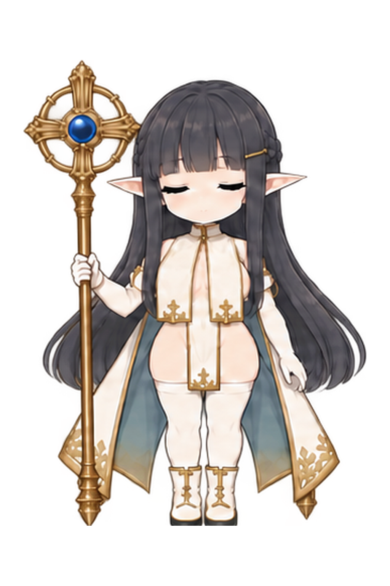
全身（白背景）
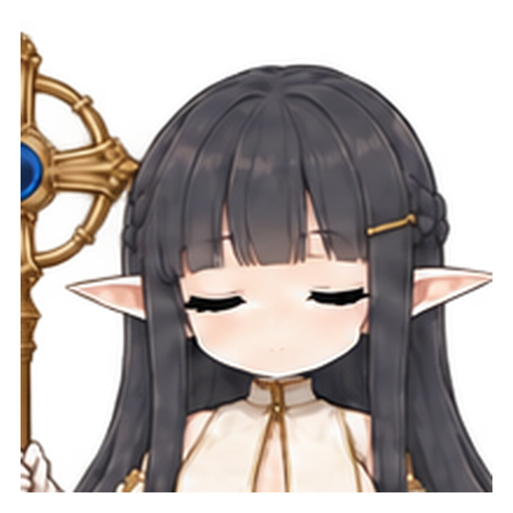
顔のアップ
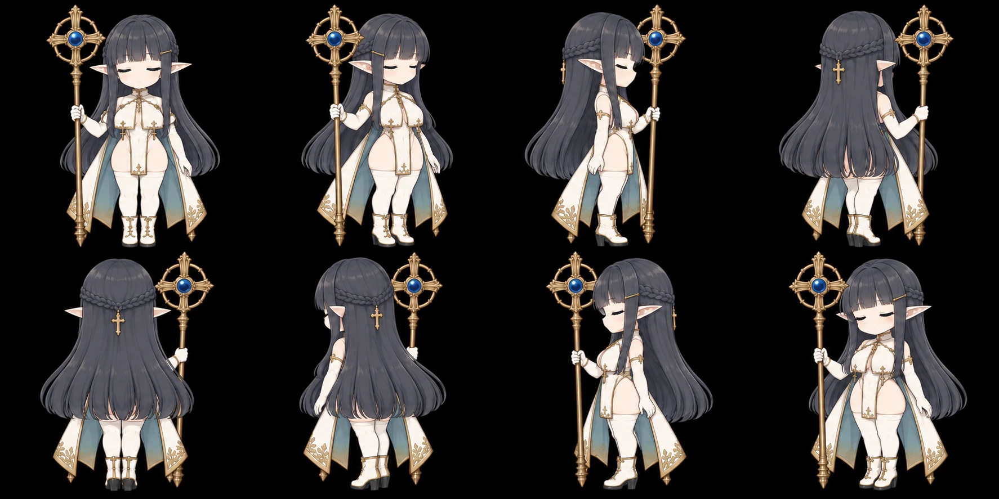
8方向の絵
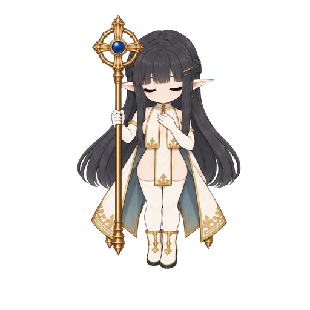
手本1（ChatGPT の絵）
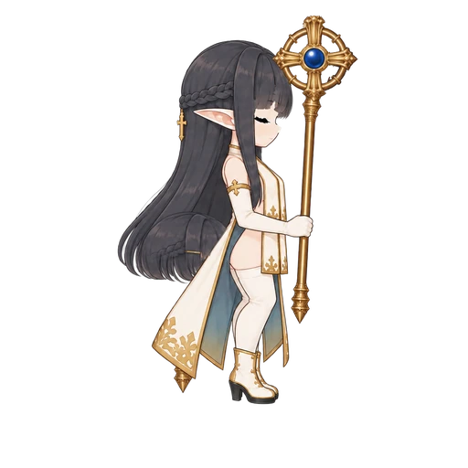
手本2（ChatGPT の絵）後ろ手に縛られて身をよじる 2枚


healer__arms_behind_squirm__front__0.png2Dゲームのキャラクター「ヒーラー」の、アニメーション用の1枚絵を1枚描いてください。 ・添付のキャラクターの画像と同じ人物を、同じ絵柄・同じ頭身（小さめのデフォルメ）・同じ髪型・同じ衣装と色で描く。持ち物と特徴：エルフの長い耳。長い黒髪（頭に編み込み）で、いつも目を閉じている。白と金の衣装で、胸の前に細い前垂れが2枚、腰から下は長い前垂れと裾。白い長手袋・白い長靴下・白いブーツ（いつも）。金の十字の杖（輪の中に青い宝珠）は、ポーズの図に描いてあるときだけ持つ ・姿勢・向き・手足の位置は、添付のポーズの図（マネキン）に合わせる。図の色：青＝本人の右半身、橙＝左半身、灰色＝胴と頭。図の線・色・関節の丸は描かない。図の色の付いた線・輪・塊は、押さえているものの位置 ・全身が入る正方形。背景は白一色（できれば透明）。足元の影・床・効果線・文字・枠は描かない 場面：後ろ手に縛られて身をよじる（8コマのうち1コマ目） 向き：正面（こちらを向く） 体勢：立つ／腕：後ろ手（手首を背中でまとめる）／脚：膝を閉じる 動き：体をよじる。膝を寄せる。かかとを交互に上げる。下を向く 押さえられている所：両手首 押さえているものの見た目：thick dark violet rubbery tentacles, smooth rounded tentacles 様子（英語）：wrists pulled together behind body, twisting against restraint, tense shoulders, knees held close, struggling
下絵（組み立てた絵）を添付して頼む
下絵を保存2Dゲームのキャラクター「ヒーラー」の、アニメーション用の1枚絵を1枚描いてください。 ・添付の「下絵」は、同じキャラクターの絵の部位を切り貼りして、この姿勢に並べたものです。人物・髪型・衣装・色・絵柄・頭身・姿勢・向き・構図はこの下絵のまま変えずに、切り貼りの継ぎ目・ずれ・欠け・はみ出しだけを自然に描き直して、1枚の絵として仕上げてください ・手足の位置は、添付のポーズの図（マネキン）にも合わせる。図の線・色は描かない。図の色の付いた線・輪・塊は、押さえているものの位置 ・背景は白一色（できれば透明）。足元の影・床・効果線・文字・枠は描かない 場面：後ろ手に縛られて身をよじる（8コマのうち1コマ目） 向き：正面（こちらを向く） 体勢：立つ／腕：後ろ手（手首を背中でまとめる）／脚：膝を閉じる 動き：体をよじる。膝を寄せる。かかとを交互に上げる。下を向く 押さえられている所：両手首 押さえているものの見た目：thick dark violet rubbery tentacles, smooth rounded tentacles 様子（英語）：wrists pulled together behind body, twisting against restraint, tense shoulders, knees held close, struggling


healer__arms_behind_squirm__front__2.png2Dゲームのキャラクター「ヒーラー」の、アニメーション用の1枚絵を1枚描いてください。 ・添付のキャラクターの画像と同じ人物を、同じ絵柄・同じ頭身（小さめのデフォルメ）・同じ髪型・同じ衣装と色で描く。持ち物と特徴：エルフの長い耳。長い黒髪（頭に編み込み）で、いつも目を閉じている。白と金の衣装で、胸の前に細い前垂れが2枚、腰から下は長い前垂れと裾。白い長手袋・白い長靴下・白いブーツ（いつも）。金の十字の杖（輪の中に青い宝珠）は、ポーズの図に描いてあるときだけ持つ ・姿勢・向き・手足の位置は、添付のポーズの図（マネキン）に合わせる。図の色：青＝本人の右半身、橙＝左半身、灰色＝胴と頭。図の線・色・関節の丸は描かない。図の色の付いた線・輪・塊は、押さえているものの位置 ・全身が入る正方形。背景は白一色（できれば透明）。足元の影・床・効果線・文字・枠は描かない 場面：後ろ手に縛られて身をよじる（8コマのうち3コマ目） 向き：正面（こちらを向く） 体勢：立つ／腕：後ろ手（手首を背中でまとめる）／脚：膝を閉じる 動き：体をよじる。膝を寄せる。かかとを交互に上げる。下を向く 押さえられている所：両手首 押さえているものの見た目：thick dark violet rubbery tentacles, smooth rounded tentacles 様子（英語）：wrists pulled together behind body, twisting against restraint, tense shoulders, knees held close, struggling
下絵（組み立てた絵）を添付して頼む
下絵を保存2Dゲームのキャラクター「ヒーラー」の、アニメーション用の1枚絵を1枚描いてください。 ・添付の「下絵」は、同じキャラクターの絵の部位を切り貼りして、この姿勢に並べたものです。人物・髪型・衣装・色・絵柄・頭身・姿勢・向き・構図はこの下絵のまま変えずに、切り貼りの継ぎ目・ずれ・欠け・はみ出しだけを自然に描き直して、1枚の絵として仕上げてください ・手足の位置は、添付のポーズの図（マネキン）にも合わせる。図の線・色は描かない。図の色の付いた線・輪・塊は、押さえているものの位置 ・背景は白一色（できれば透明）。足元の影・床・効果線・文字・枠は描かない 場面：後ろ手に縛られて身をよじる（8コマのうち3コマ目） 向き：正面（こちらを向く） 体勢：立つ／腕：後ろ手（手首を背中でまとめる）／脚：膝を閉じる 動き：体をよじる。膝を寄せる。かかとを交互に上げる。下を向く 押さえられている所：両手首 押さえているものの見た目：thick dark violet rubbery tentacles, smooth rounded tentacles 様子（英語）：wrists pulled together behind body, twisting against restraint, tense shoulders, knees held close, struggling
後ろ手に縛られて振りほどこうとする 2枚


healer__arms_behind_wrench__front__0.png2Dゲームのキャラクター「ヒーラー」の、アニメーション用の1枚絵を1枚描いてください。 ・添付のキャラクターの画像と同じ人物を、同じ絵柄・同じ頭身（小さめのデフォルメ）・同じ髪型・同じ衣装と色で描く。持ち物と特徴：エルフの長い耳。長い黒髪（頭に編み込み）で、いつも目を閉じている。白と金の衣装で、胸の前に細い前垂れが2枚、腰から下は長い前垂れと裾。白い長手袋・白い長靴下・白いブーツ（いつも）。金の十字の杖（輪の中に青い宝珠）は、ポーズの図に描いてあるときだけ持つ ・姿勢・向き・手足の位置は、添付のポーズの図（マネキン）に合わせる。図の色：青＝本人の右半身、橙＝左半身、灰色＝胴と頭。図の線・色・関節の丸は描かない。図の色の付いた線・輪・塊は、押さえているものの位置 ・全身が入る正方形。背景は白一色（できれば透明）。足元の影・床・効果線・文字・枠は描かない 場面：後ろ手に縛られて振りほどこうとする（8コマのうち1コマ目） 向き：正面（こちらを向く） 体勢：立つ／腕：後ろ手／脚：踏ん張る足は爪先立ち 動き：肩をひねって左右に振りほどこうとする。胸が前に出る 押さえられている所：両手首 押さえているものの見た目：thick dark violet rubbery tentacles, smooth rounded tentacles 様子（英語）：wrists restrained behind body, forcefully twisting shoulders, pulling against restraint, braced body, determined struggling expression
下絵（組み立てた絵）を添付して頼む
下絵を保存2Dゲームのキャラクター「ヒーラー」の、アニメーション用の1枚絵を1枚描いてください。 ・添付の「下絵」は、同じキャラクターの絵の部位を切り貼りして、この姿勢に並べたものです。人物・髪型・衣装・色・絵柄・頭身・姿勢・向き・構図はこの下絵のまま変えずに、切り貼りの継ぎ目・ずれ・欠け・はみ出しだけを自然に描き直して、1枚の絵として仕上げてください ・手足の位置は、添付のポーズの図（マネキン）にも合わせる。図の線・色は描かない。図の色の付いた線・輪・塊は、押さえているものの位置 ・背景は白一色（できれば透明）。足元の影・床・効果線・文字・枠は描かない 場面：後ろ手に縛られて振りほどこうとする（8コマのうち1コマ目） 向き：正面（こちらを向く） 体勢：立つ／腕：後ろ手／脚：踏ん張る足は爪先立ち 動き：肩をひねって左右に振りほどこうとする。胸が前に出る 押さえられている所：両手首 押さえているものの見た目：thick dark violet rubbery tentacles, smooth rounded tentacles 様子（英語）：wrists restrained behind body, forcefully twisting shoulders, pulling against restraint, braced body, determined struggling expression


healer__arms_behind_wrench__front__5.png2Dゲームのキャラクター「ヒーラー」の、アニメーション用の1枚絵を1枚描いてください。 ・添付のキャラクターの画像と同じ人物を、同じ絵柄・同じ頭身（小さめのデフォルメ）・同じ髪型・同じ衣装と色で描く。持ち物と特徴：エルフの長い耳。長い黒髪（頭に編み込み）で、いつも目を閉じている。白と金の衣装で、胸の前に細い前垂れが2枚、腰から下は長い前垂れと裾。白い長手袋・白い長靴下・白いブーツ（いつも）。金の十字の杖（輪の中に青い宝珠）は、ポーズの図に描いてあるときだけ持つ ・姿勢・向き・手足の位置は、添付のポーズの図（マネキン）に合わせる。図の色：青＝本人の右半身、橙＝左半身、灰色＝胴と頭。図の線・色・関節の丸は描かない。図の色の付いた線・輪・塊は、押さえているものの位置 ・全身が入る正方形。背景は白一色（できれば透明）。足元の影・床・効果線・文字・枠は描かない 場面：後ろ手に縛られて振りほどこうとする（8コマのうち6コマ目） 向き：正面（こちらを向く） 体勢：立つ／腕：後ろ手／脚：踏ん張る足は爪先立ち 動き：肩をひねって左右に振りほどこうとする。胸が前に出る 押さえられている所：両手首 押さえているものの見た目：thick dark violet rubbery tentacles, smooth rounded tentacles 様子（英語）：wrists restrained behind body, forcefully twisting shoulders, pulling against restraint, braced body, determined struggling expression
下絵（組み立てた絵）を添付して頼む
下絵を保存2Dゲームのキャラクター「ヒーラー」の、アニメーション用の1枚絵を1枚描いてください。 ・添付の「下絵」は、同じキャラクターの絵の部位を切り貼りして、この姿勢に並べたものです。人物・髪型・衣装・色・絵柄・頭身・姿勢・向き・構図はこの下絵のまま変えずに、切り貼りの継ぎ目・ずれ・欠け・はみ出しだけを自然に描き直して、1枚の絵として仕上げてください ・手足の位置は、添付のポーズの図（マネキン）にも合わせる。図の線・色は描かない。図の色の付いた線・輪・塊は、押さえているものの位置 ・背景は白一色（できれば透明）。足元の影・床・効果線・文字・枠は描かない 場面：後ろ手に縛られて振りほどこうとする（8コマのうち6コマ目） 向き：正面（こちらを向く） 体勢：立つ／腕：後ろ手／脚：踏ん張る足は爪先立ち 動き：肩をひねって左右に振りほどこうとする。胸が前に出る 押さえられている所：両手首 押さえているものの見た目：thick dark violet rubbery tentacles, smooth rounded tentacles 様子（英語）：wrists restrained behind body, forcefully twisting shoulders, pulling against restraint, braced body, determined struggling expression
両手首を上から吊られ、腕を引き下ろそうと力む 2枚


healer__elbows_up_strain__front__0.png2Dゲームのキャラクター「ヒーラー」の、アニメーション用の1枚絵を1枚描いてください。 ・添付のキャラクターの画像と同じ人物を、同じ絵柄・同じ頭身（小さめのデフォルメ）・同じ髪型・同じ衣装と色で描く。持ち物と特徴：エルフの長い耳。長い黒髪（頭に編み込み）で、いつも目を閉じている。白と金の衣装で、胸の前に細い前垂れが2枚、腰から下は長い前垂れと裾。白い長手袋・白い長靴下・白いブーツ（いつも）。金の十字の杖（輪の中に青い宝珠）は、ポーズの図に描いてあるときだけ持つ ・姿勢・向き・手足の位置は、添付のポーズの図（マネキン）に合わせる。図の色：青＝本人の右半身、橙＝左半身、灰色＝胴と頭。図の線・色・関節の丸は描かない。図の色の付いた線・輪・塊は、押さえているものの位置 ・全身が入る正方形。背景は白一色（できれば透明）。足元の影・床・効果線・文字・枠は描かない 場面：両手首を上から吊られ、腕を引き下ろそうと力む（8コマのうち1コマ目） 向き：正面（こちらを向く） 体勢：立つ／腕：両手を頭の上に上げる／脚：膝を少し曲げる 動き：腕を引き下ろそうと力む。負けると爪先立ちに引き上げられる 押さえられている所：両手首（上から吊る） 押さえているものの見た目：thick dark violet rubbery tentacles, smooth rounded tentacles 様子（英語）：wrists bound together overhead, restraint extending upward, arms pulled taut, straining downward against restraint
下絵（組み立てた絵）を添付して頼む
下絵を保存2Dゲームのキャラクター「ヒーラー」の、アニメーション用の1枚絵を1枚描いてください。 ・添付の「下絵」は、同じキャラクターの絵の部位を切り貼りして、この姿勢に並べたものです。人物・髪型・衣装・色・絵柄・頭身・姿勢・向き・構図はこの下絵のまま変えずに、切り貼りの継ぎ目・ずれ・欠け・はみ出しだけを自然に描き直して、1枚の絵として仕上げてください ・手足の位置は、添付のポーズの図（マネキン）にも合わせる。図の線・色は描かない。図の色の付いた線・輪・塊は、押さえているものの位置 ・背景は白一色（できれば透明）。足元の影・床・効果線・文字・枠は描かない 場面：両手首を上から吊られ、腕を引き下ろそうと力む（8コマのうち1コマ目） 向き：正面（こちらを向く） 体勢：立つ／腕：両手を頭の上に上げる／脚：膝を少し曲げる 動き：腕を引き下ろそうと力む。負けると爪先立ちに引き上げられる 押さえられている所：両手首（上から吊る） 押さえているものの見た目：thick dark violet rubbery tentacles, smooth rounded tentacles 様子（英語）：wrists bound together overhead, restraint extending upward, arms pulled taut, straining downward against restraint


healer__elbows_up_strain__front__2.png2Dゲームのキャラクター「ヒーラー」の、アニメーション用の1枚絵を1枚描いてください。 ・添付のキャラクターの画像と同じ人物を、同じ絵柄・同じ頭身（小さめのデフォルメ）・同じ髪型・同じ衣装と色で描く。持ち物と特徴：エルフの長い耳。長い黒髪（頭に編み込み）で、いつも目を閉じている。白と金の衣装で、胸の前に細い前垂れが2枚、腰から下は長い前垂れと裾。白い長手袋・白い長靴下・白いブーツ（いつも）。金の十字の杖（輪の中に青い宝珠）は、ポーズの図に描いてあるときだけ持つ ・姿勢・向き・手足の位置は、添付のポーズの図（マネキン）に合わせる。図の色：青＝本人の右半身、橙＝左半身、灰色＝胴と頭。図の線・色・関節の丸は描かない。図の色の付いた線・輪・塊は、押さえているものの位置 ・全身が入る正方形。背景は白一色（できれば透明）。足元の影・床・効果線・文字・枠は描かない 場面：両手首を上から吊られ、腕を引き下ろそうと力む（8コマのうち3コマ目） 向き：正面（こちらを向く） 体勢：立つ／腕：両手を頭の上に上げる／脚：膝を少し曲げる 動き：腕を引き下ろそうと力む。負けると爪先立ちに引き上げられる 押さえられている所：両手首（上から吊る） 押さえているものの見た目：thick dark violet rubbery tentacles, smooth rounded tentacles 様子（英語）：wrists bound together overhead, restraint extending upward, arms pulled taut, straining downward against restraint
下絵（組み立てた絵）を添付して頼む
下絵を保存2Dゲームのキャラクター「ヒーラー」の、アニメーション用の1枚絵を1枚描いてください。 ・添付の「下絵」は、同じキャラクターの絵の部位を切り貼りして、この姿勢に並べたものです。人物・髪型・衣装・色・絵柄・頭身・姿勢・向き・構図はこの下絵のまま変えずに、切り貼りの継ぎ目・ずれ・欠け・はみ出しだけを自然に描き直して、1枚の絵として仕上げてください ・手足の位置は、添付のポーズの図（マネキン）にも合わせる。図の線・色は描かない。図の色の付いた線・輪・塊は、押さえているものの位置 ・背景は白一色（できれば透明）。足元の影・床・効果線・文字・枠は描かない 場面：両手首を上から吊られ、腕を引き下ろそうと力む（8コマのうち3コマ目） 向き：正面（こちらを向く） 体勢：立つ／腕：両手を頭の上に上げる／脚：膝を少し曲げる 動き：腕を引き下ろそうと力む。負けると爪先立ちに引き上げられる 押さえられている所：両手首（上から吊る） 押さえているものの見た目：thick dark violet rubbery tentacles, smooth rounded tentacles 様子（英語）：wrists bound together overhead, restraint extending upward, arms pulled taut, straining downward against restraint
後ろ手で、膝を左右へ引かれる 2枚


healer__legs_pulled_open__front__0.png2Dゲームのキャラクター「ヒーラー」の、アニメーション用の1枚絵を1枚描いてください。 ・添付のキャラクターの画像と同じ人物を、同じ絵柄・同じ頭身（小さめのデフォルメ）・同じ髪型・同じ衣装と色で描く。持ち物と特徴：エルフの長い耳。長い黒髪（頭に編み込み）で、いつも目を閉じている。白と金の衣装で、胸の前に細い前垂れが2枚、腰から下は長い前垂れと裾。白い長手袋・白い長靴下・白いブーツ（いつも）。金の十字の杖（輪の中に青い宝珠）は、ポーズの図に描いてあるときだけ持つ ・姿勢・向き・手足の位置は、添付のポーズの図（マネキン）に合わせる。図の色：青＝本人の右半身、橙＝左半身、灰色＝胴と頭。図の線・色・関節の丸は描かない。図の色の付いた線・輪・塊は、押さえているものの位置 ・全身が入る正方形。背景は白一色（できれば透明）。足元の影・床・効果線・文字・枠は描かない 場面：後ろ手で、膝を左右へ引かれる（12コマのうち1コマ目・閉じる） 向き：正面（こちらを向く） 体勢：立つ／腕：後ろ手／脚：閉じた膝 → 左右へ引かれる 動き：はじめ膝を寄せる → 最後は膝が外へ開いて腰が落ちる 押さえられている所：両手首・両膝（左右へ引く） 押さえているものの見た目：thick dark violet rubbery tentacles, smooth rounded tentacles 様子（英語）：wrists restrained behind body, thick dark violet rubbery tentacles around both knees, knees pulled outward, resisting the pull
下絵（組み立てた絵）を添付して頼む
下絵を保存2Dゲームのキャラクター「ヒーラー」の、アニメーション用の1枚絵を1枚描いてください。 ・添付の「下絵」は、同じキャラクターの絵の部位を切り貼りして、この姿勢に並べたものです。人物・髪型・衣装・色・絵柄・頭身・姿勢・向き・構図はこの下絵のまま変えずに、切り貼りの継ぎ目・ずれ・欠け・はみ出しだけを自然に描き直して、1枚の絵として仕上げてください ・手足の位置は、添付のポーズの図（マネキン）にも合わせる。図の線・色は描かない。図の色の付いた線・輪・塊は、押さえているものの位置 ・背景は白一色（できれば透明）。足元の影・床・効果線・文字・枠は描かない 場面：後ろ手で、膝を左右へ引かれる（12コマのうち1コマ目・閉じる） 向き：正面（こちらを向く） 体勢：立つ／腕：後ろ手／脚：閉じた膝 → 左右へ引かれる 動き：はじめ膝を寄せる → 最後は膝が外へ開いて腰が落ちる 押さえられている所：両手首・両膝（左右へ引く） 押さえているものの見た目：thick dark violet rubbery tentacles, smooth rounded tentacles 様子（英語）：wrists restrained behind body, thick dark violet rubbery tentacles around both knees, knees pulled outward, resisting the pull


healer__legs_pulled_open__front__7.png2Dゲームのキャラクター「ヒーラー」の、アニメーション用の1枚絵を1枚描いてください。 ・添付のキャラクターの画像と同じ人物を、同じ絵柄・同じ頭身（小さめのデフォルメ）・同じ髪型・同じ衣装と色で描く。持ち物と特徴：エルフの長い耳。長い黒髪（頭に編み込み）で、いつも目を閉じている。白と金の衣装で、胸の前に細い前垂れが2枚、腰から下は長い前垂れと裾。白い長手袋・白い長靴下・白いブーツ（いつも）。金の十字の杖（輪の中に青い宝珠）は、ポーズの図に描いてあるときだけ持つ ・姿勢・向き・手足の位置は、添付のポーズの図（マネキン）に合わせる。図の色：青＝本人の右半身、橙＝左半身、灰色＝胴と頭。図の線・色・関節の丸は描かない。図の色の付いた線・輪・塊は、押さえているものの位置 ・全身が入る正方形。背景は白一色（できれば透明）。足元の影・床・効果線・文字・枠は描かない 場面：後ろ手で、膝を左右へ引かれる（12コマのうち8コマ目・開かれた） 向き：正面（こちらを向く） 体勢：立つ／腕：後ろ手／脚：閉じた膝 → 左右へ引かれる 動き：はじめ膝を寄せる → 最後は膝が外へ開いて腰が落ちる 押さえられている所：両手首・両膝（左右へ引く） 押さえているものの見た目：thick dark violet rubbery tentacles, smooth rounded tentacles 様子（英語）：wrists restrained behind body, thick dark violet rubbery tentacles around both knees, knees pulled outward, resisting the pull
下絵（組み立てた絵）を添付して頼む
下絵を保存2Dゲームのキャラクター「ヒーラー」の、アニメーション用の1枚絵を1枚描いてください。 ・添付の「下絵」は、同じキャラクターの絵の部位を切り貼りして、この姿勢に並べたものです。人物・髪型・衣装・色・絵柄・頭身・姿勢・向き・構図はこの下絵のまま変えずに、切り貼りの継ぎ目・ずれ・欠け・はみ出しだけを自然に描き直して、1枚の絵として仕上げてください ・手足の位置は、添付のポーズの図（マネキン）にも合わせる。図の線・色は描かない。図の色の付いた線・輪・塊は、押さえているものの位置 ・背景は白一色（できれば透明）。足元の影・床・効果線・文字・枠は描かない 場面：後ろ手で、膝を左右へ引かれる（12コマのうち8コマ目・開かれた） 向き：正面（こちらを向く） 体勢：立つ／腕：後ろ手／脚：閉じた膝 → 左右へ引かれる 動き：はじめ膝を寄せる → 最後は膝が外へ開いて腰が落ちる 押さえられている所：両手首・両膝（左右へ引く） 押さえているものの見た目：thick dark violet rubbery tentacles, smooth rounded tentacles 様子（英語）：wrists restrained behind body, thick dark violet rubbery tentacles around both knees, knees pulled outward, resisting the pull
後ろ手で、膝を左右へ引かれたまま耐える 2枚


healer__legs_held_open__front__0.png2Dゲームのキャラクター「ヒーラー」の、アニメーション用の1枚絵を1枚描いてください。 ・添付のキャラクターの画像と同じ人物を、同じ絵柄・同じ頭身（小さめのデフォルメ）・同じ髪型・同じ衣装と色で描く。持ち物と特徴：エルフの長い耳。長い黒髪（頭に編み込み）で、いつも目を閉じている。白と金の衣装で、胸の前に細い前垂れが2枚、腰から下は長い前垂れと裾。白い長手袋・白い長靴下・白いブーツ（いつも）。金の十字の杖（輪の中に青い宝珠）は、ポーズの図に描いてあるときだけ持つ ・姿勢・向き・手足の位置は、添付のポーズの図（マネキン）に合わせる。図の色：青＝本人の右半身、橙＝左半身、灰色＝胴と頭。図の線・色・関節の丸は描かない。図の色の付いた線・輪・塊は、押さえているものの位置 ・全身が入る正方形。背景は白一色（できれば透明）。足元の影・床・効果線・文字・枠は描かない 場面：後ろ手で、膝を左右へ引かれたまま耐える（8コマのうち1コマ目） 向き：正面（こちらを向く） 体勢：立つ／腕：後ろ手／脚：左右に引かれたまま 動き：膝が小さく震える 押さえられている所：両手首・両膝（左右） 押さえているものの見た目：thick dark violet rubbery tentacles, smooth rounded tentacles 様子（英語）：wrists restrained behind body, thick dark violet rubbery tentacles around both knees, knees held outward, trembling legs, sustained resistance
下絵（組み立てた絵）を添付して頼む
下絵を保存2Dゲームのキャラクター「ヒーラー」の、アニメーション用の1枚絵を1枚描いてください。 ・添付の「下絵」は、同じキャラクターの絵の部位を切り貼りして、この姿勢に並べたものです。人物・髪型・衣装・色・絵柄・頭身・姿勢・向き・構図はこの下絵のまま変えずに、切り貼りの継ぎ目・ずれ・欠け・はみ出しだけを自然に描き直して、1枚の絵として仕上げてください ・手足の位置は、添付のポーズの図（マネキン）にも合わせる。図の線・色は描かない。図の色の付いた線・輪・塊は、押さえているものの位置 ・背景は白一色（できれば透明）。足元の影・床・効果線・文字・枠は描かない 場面：後ろ手で、膝を左右へ引かれたまま耐える（8コマのうち1コマ目） 向き：正面（こちらを向く） 体勢：立つ／腕：後ろ手／脚：左右に引かれたまま 動き：膝が小さく震える 押さえられている所：両手首・両膝（左右） 押さえているものの見た目：thick dark violet rubbery tentacles, smooth rounded tentacles 様子（英語）：wrists restrained behind body, thick dark violet rubbery tentacles around both knees, knees held outward, trembling legs, sustained resistance


healer__legs_held_open__front__2.png2Dゲームのキャラクター「ヒーラー」の、アニメーション用の1枚絵を1枚描いてください。 ・添付のキャラクターの画像と同じ人物を、同じ絵柄・同じ頭身（小さめのデフォルメ）・同じ髪型・同じ衣装と色で描く。持ち物と特徴：エルフの長い耳。長い黒髪（頭に編み込み）で、いつも目を閉じている。白と金の衣装で、胸の前に細い前垂れが2枚、腰から下は長い前垂れと裾。白い長手袋・白い長靴下・白いブーツ（いつも）。金の十字の杖（輪の中に青い宝珠）は、ポーズの図に描いてあるときだけ持つ ・姿勢・向き・手足の位置は、添付のポーズの図（マネキン）に合わせる。図の色：青＝本人の右半身、橙＝左半身、灰色＝胴と頭。図の線・色・関節の丸は描かない。図の色の付いた線・輪・塊は、押さえているものの位置 ・全身が入る正方形。背景は白一色（できれば透明）。足元の影・床・効果線・文字・枠は描かない 場面：後ろ手で、膝を左右へ引かれたまま耐える（8コマのうち3コマ目） 向き：正面（こちらを向く） 体勢：立つ／腕：後ろ手／脚：左右に引かれたまま 動き：膝が小さく震える 押さえられている所：両手首・両膝（左右） 押さえているものの見た目：thick dark violet rubbery tentacles, smooth rounded tentacles 様子（英語）：wrists restrained behind body, thick dark violet rubbery tentacles around both knees, knees held outward, trembling legs, sustained resistance
下絵（組み立てた絵）を添付して頼む
下絵を保存2Dゲームのキャラクター「ヒーラー」の、アニメーション用の1枚絵を1枚描いてください。 ・添付の「下絵」は、同じキャラクターの絵の部位を切り貼りして、この姿勢に並べたものです。人物・髪型・衣装・色・絵柄・頭身・姿勢・向き・構図はこの下絵のまま変えずに、切り貼りの継ぎ目・ずれ・欠け・はみ出しだけを自然に描き直して、1枚の絵として仕上げてください ・手足の位置は、添付のポーズの図（マネキン）にも合わせる。図の線・色は描かない。図の色の付いた線・輪・塊は、押さえているものの位置 ・背景は白一色（できれば透明）。足元の影・床・効果線・文字・枠は描かない 場面：後ろ手で、膝を左右へ引かれたまま耐える（8コマのうち3コマ目） 向き：正面（こちらを向く） 体勢：立つ／腕：後ろ手／脚：左右に引かれたまま 動き：膝が小さく震える 押さえられている所：両手首・両膝（左右） 押さえているものの見た目：thick dark violet rubbery tentacles, smooth rounded tentacles 様子（英語）：wrists restrained behind body, thick dark violet rubbery tentacles around both knees, knees held outward, trembling legs, sustained resistance
後ろ手で、足を開いて立ったまま体が前後に揺れる 2枚


healer__hip_rock_spread__front__0.png2Dゲームのキャラクター「ヒーラー」の、アニメーション用の1枚絵を1枚描いてください。 ・添付のキャラクターの画像と同じ人物を、同じ絵柄・同じ頭身（小さめのデフォルメ）・同じ髪型・同じ衣装と色で描く。持ち物と特徴：エルフの長い耳。長い黒髪（頭に編み込み）で、いつも目を閉じている。白と金の衣装で、胸の前に細い前垂れが2枚、腰から下は長い前垂れと裾。白い長手袋・白い長靴下・白いブーツ（いつも）。金の十字の杖（輪の中に青い宝珠）は、ポーズの図に描いてあるときだけ持つ ・姿勢・向き・手足の位置は、添付のポーズの図（マネキン）に合わせる。図の色：青＝本人の右半身、橙＝左半身、灰色＝胴と頭。図の線・色・関節の丸は描かない。図の色の付いた線・輪・塊は、押さえているものの位置 ・全身が入る正方形。背景は白一色（できれば透明）。足元の影・床・効果線・文字・枠は描かない 場面：後ろ手で、足を開いて立ったまま体が前後に揺れる（8コマのうち1コマ目） 向き：正面（こちらを向く） 体勢：立つ／腕：後ろ手／脚：足を開く 動き：体が前後に揺れる 押さえられている所：両手首・両膝（左右） 押さえているものの見た目：thick dark violet rubbery tentacles, smooth rounded tentacles 様子（英語）：wrists restrained behind body, knees held apart by thick dark violet rubbery tentacles, body rocking under restraint, tense balance
下絵（組み立てた絵）を添付して頼む
下絵を保存2Dゲームのキャラクター「ヒーラー」の、アニメーション用の1枚絵を1枚描いてください。 ・添付の「下絵」は、同じキャラクターの絵の部位を切り貼りして、この姿勢に並べたものです。人物・髪型・衣装・色・絵柄・頭身・姿勢・向き・構図はこの下絵のまま変えずに、切り貼りの継ぎ目・ずれ・欠け・はみ出しだけを自然に描き直して、1枚の絵として仕上げてください ・手足の位置は、添付のポーズの図（マネキン）にも合わせる。図の線・色は描かない。図の色の付いた線・輪・塊は、押さえているものの位置 ・背景は白一色（できれば透明）。足元の影・床・効果線・文字・枠は描かない 場面：後ろ手で、足を開いて立ったまま体が前後に揺れる（8コマのうち1コマ目） 向き：正面（こちらを向く） 体勢：立つ／腕：後ろ手／脚：足を開く 動き：体が前後に揺れる 押さえられている所：両手首・両膝（左右） 押さえているものの見た目：thick dark violet rubbery tentacles, smooth rounded tentacles 様子（英語）：wrists restrained behind body, knees held apart by thick dark violet rubbery tentacles, body rocking under restraint, tense balance


healer__hip_rock_spread__front__3.png2Dゲームのキャラクター「ヒーラー」の、アニメーション用の1枚絵を1枚描いてください。 ・添付のキャラクターの画像と同じ人物を、同じ絵柄・同じ頭身（小さめのデフォルメ）・同じ髪型・同じ衣装と色で描く。持ち物と特徴：エルフの長い耳。長い黒髪（頭に編み込み）で、いつも目を閉じている。白と金の衣装で、胸の前に細い前垂れが2枚、腰から下は長い前垂れと裾。白い長手袋・白い長靴下・白いブーツ（いつも）。金の十字の杖（輪の中に青い宝珠）は、ポーズの図に描いてあるときだけ持つ ・姿勢・向き・手足の位置は、添付のポーズの図（マネキン）に合わせる。図の色：青＝本人の右半身、橙＝左半身、灰色＝胴と頭。図の線・色・関節の丸は描かない。図の色の付いた線・輪・塊は、押さえているものの位置 ・全身が入る正方形。背景は白一色（できれば透明）。足元の影・床・効果線・文字・枠は描かない 場面：後ろ手で、足を開いて立ったまま体が前後に揺れる（8コマのうち4コマ目） 向き：正面（こちらを向く） 体勢：立つ／腕：後ろ手／脚：足を開く 動き：体が前後に揺れる 押さえられている所：両手首・両膝（左右） 押さえているものの見た目：thick dark violet rubbery tentacles, smooth rounded tentacles 様子（英語）：wrists restrained behind body, knees held apart by thick dark violet rubbery tentacles, body rocking under restraint, tense balance
下絵（組み立てた絵）を添付して頼む
下絵を保存2Dゲームのキャラクター「ヒーラー」の、アニメーション用の1枚絵を1枚描いてください。 ・添付の「下絵」は、同じキャラクターの絵の部位を切り貼りして、この姿勢に並べたものです。人物・髪型・衣装・色・絵柄・頭身・姿勢・向き・構図はこの下絵のまま変えずに、切り貼りの継ぎ目・ずれ・欠け・はみ出しだけを自然に描き直して、1枚の絵として仕上げてください ・手足の位置は、添付のポーズの図（マネキン）にも合わせる。図の線・色は描かない。図の色の付いた線・輪・塊は、押さえているものの位置 ・背景は白一色（できれば透明）。足元の影・床・効果線・文字・枠は描かない 場面：後ろ手で、足を開いて立ったまま体が前後に揺れる（8コマのうち4コマ目） 向き：正面（こちらを向く） 体勢：立つ／腕：後ろ手／脚：足を開く 動き：体が前後に揺れる 押さえられている所：両手首・両膝（左右） 押さえているものの見た目：thick dark violet rubbery tentacles, smooth rounded tentacles 様子（英語）：wrists restrained behind body, knees held apart by thick dark violet rubbery tentacles, body rocking under restraint, tense balance
後ろ手で、膝を閉じたまま体が前後に揺れる 2枚


healer__hip_rock_closed__front__0.png2Dゲームのキャラクター「ヒーラー」の、アニメーション用の1枚絵を1枚描いてください。 ・添付のキャラクターの画像と同じ人物を、同じ絵柄・同じ頭身（小さめのデフォルメ）・同じ髪型・同じ衣装と色で描く。持ち物と特徴：エルフの長い耳。長い黒髪（頭に編み込み）で、いつも目を閉じている。白と金の衣装で、胸の前に細い前垂れが2枚、腰から下は長い前垂れと裾。白い長手袋・白い長靴下・白いブーツ（いつも）。金の十字の杖（輪の中に青い宝珠）は、ポーズの図に描いてあるときだけ持つ ・姿勢・向き・手足の位置は、添付のポーズの図（マネキン）に合わせる。図の色：青＝本人の右半身、橙＝左半身、灰色＝胴と頭。図の線・色・関節の丸は描かない。図の色の付いた線・輪・塊は、押さえているものの位置 ・全身が入る正方形。背景は白一色（できれば透明）。足元の影・床・効果線・文字・枠は描かない 場面：後ろ手で、膝を閉じたまま体が前後に揺れる（8コマのうち1コマ目） 向き：正面（こちらを向く） 体勢：立つ／腕：後ろ手／脚：膝を閉じたまま 動き：体が小さく前後に揺れる。そのたび爪先立ち 押さえられている所：両手首 押さえているものの見た目：thick dark violet rubbery tentacles, smooth rounded tentacles 様子（英語）：wrists restrained behind body, knees held close together, restrained rocking motion, tense calves, unstable balance
下絵（組み立てた絵）を添付して頼む
下絵を保存2Dゲームのキャラクター「ヒーラー」の、アニメーション用の1枚絵を1枚描いてください。 ・添付の「下絵」は、同じキャラクターの絵の部位を切り貼りして、この姿勢に並べたものです。人物・髪型・衣装・色・絵柄・頭身・姿勢・向き・構図はこの下絵のまま変えずに、切り貼りの継ぎ目・ずれ・欠け・はみ出しだけを自然に描き直して、1枚の絵として仕上げてください ・手足の位置は、添付のポーズの図（マネキン）にも合わせる。図の線・色は描かない。図の色の付いた線・輪・塊は、押さえているものの位置 ・背景は白一色（できれば透明）。足元の影・床・効果線・文字・枠は描かない 場面：後ろ手で、膝を閉じたまま体が前後に揺れる（8コマのうち1コマ目） 向き：正面（こちらを向く） 体勢：立つ／腕：後ろ手／脚：膝を閉じたまま 動き：体が小さく前後に揺れる。そのたび爪先立ち 押さえられている所：両手首 押さえているものの見た目：thick dark violet rubbery tentacles, smooth rounded tentacles 様子（英語）：wrists restrained behind body, knees held close together, restrained rocking motion, tense calves, unstable balance


healer__hip_rock_closed__front__3.png2Dゲームのキャラクター「ヒーラー」の、アニメーション用の1枚絵を1枚描いてください。 ・添付のキャラクターの画像と同じ人物を、同じ絵柄・同じ頭身（小さめのデフォルメ）・同じ髪型・同じ衣装と色で描く。持ち物と特徴：エルフの長い耳。長い黒髪（頭に編み込み）で、いつも目を閉じている。白と金の衣装で、胸の前に細い前垂れが2枚、腰から下は長い前垂れと裾。白い長手袋・白い長靴下・白いブーツ（いつも）。金の十字の杖（輪の中に青い宝珠）は、ポーズの図に描いてあるときだけ持つ ・姿勢・向き・手足の位置は、添付のポーズの図（マネキン）に合わせる。図の色：青＝本人の右半身、橙＝左半身、灰色＝胴と頭。図の線・色・関節の丸は描かない。図の色の付いた線・輪・塊は、押さえているものの位置 ・全身が入る正方形。背景は白一色（できれば透明）。足元の影・床・効果線・文字・枠は描かない 場面：後ろ手で、膝を閉じたまま体が前後に揺れる（8コマのうち4コマ目） 向き：正面（こちらを向く） 体勢：立つ／腕：後ろ手／脚：膝を閉じたまま 動き：体が小さく前後に揺れる。そのたび爪先立ち 押さえられている所：両手首 押さえているものの見た目：thick dark violet rubbery tentacles, smooth rounded tentacles 様子（英語）：wrists restrained behind body, knees held close together, restrained rocking motion, tense calves, unstable balance
下絵（組み立てた絵）を添付して頼む
下絵を保存2Dゲームのキャラクター「ヒーラー」の、アニメーション用の1枚絵を1枚描いてください。 ・添付の「下絵」は、同じキャラクターの絵の部位を切り貼りして、この姿勢に並べたものです。人物・髪型・衣装・色・絵柄・頭身・姿勢・向き・構図はこの下絵のまま変えずに、切り貼りの継ぎ目・ずれ・欠け・はみ出しだけを自然に描き直して、1枚の絵として仕上げてください ・手足の位置は、添付のポーズの図（マネキン）にも合わせる。図の線・色は描かない。図の色の付いた線・輪・塊は、押さえているものの位置 ・背景は白一色（できれば透明）。足元の影・床・効果線・文字・枠は描かない 場面：後ろ手で、膝を閉じたまま体が前後に揺れる（8コマのうち4コマ目） 向き：正面（こちらを向く） 体勢：立つ／腕：後ろ手／脚：膝を閉じたまま 動き：体が小さく前後に揺れる。そのたび爪先立ち 押さえられている所：両手首 押さえているものの見た目：thick dark violet rubbery tentacles, smooth rounded tentacles 様子（英語）：wrists restrained behind body, knees held close together, restrained rocking motion, tense calves, unstable balance
後ろ手で、足を開いて立ったまま体が上下に揺れる 2枚


healer__bounce_spread__front__0.png2Dゲームのキャラクター「ヒーラー」の、アニメーション用の1枚絵を1枚描いてください。 ・添付のキャラクターの画像と同じ人物を、同じ絵柄・同じ頭身（小さめのデフォルメ）・同じ髪型・同じ衣装と色で描く。持ち物と特徴：エルフの長い耳。長い黒髪（頭に編み込み）で、いつも目を閉じている。白と金の衣装で、胸の前に細い前垂れが2枚、腰から下は長い前垂れと裾。白い長手袋・白い長靴下・白いブーツ（いつも）。金の十字の杖（輪の中に青い宝珠）は、ポーズの図に描いてあるときだけ持つ ・姿勢・向き・手足の位置は、添付のポーズの図（マネキン）に合わせる。図の色：青＝本人の右半身、橙＝左半身、灰色＝胴と頭。図の線・色・関節の丸は描かない。図の色の付いた線・輪・塊は、押さえているものの位置 ・全身が入る正方形。背景は白一色（できれば透明）。足元の影・床・効果線・文字・枠は描かない 場面：後ろ手で、足を開いて立ったまま体が上下に揺れる（8コマのうち1コマ目） 向き：正面（こちらを向く） 体勢：立つ／腕：後ろ手／脚：足を開く 動き：体が上下に揺れる。上で爪先立ち、下で膝が曲がる 押さえられている所：両手首・両膝（左右） 押さえているものの見た目：thick dark violet rubbery tentacles, smooth rounded tentacles 様子（英語）：wrists restrained behind body, knees held apart by thick dark violet rubbery tentacles, vertical body motion, strained legs
下絵（組み立てた絵）を添付して頼む
下絵を保存2Dゲームのキャラクター「ヒーラー」の、アニメーション用の1枚絵を1枚描いてください。 ・添付の「下絵」は、同じキャラクターの絵の部位を切り貼りして、この姿勢に並べたものです。人物・髪型・衣装・色・絵柄・頭身・姿勢・向き・構図はこの下絵のまま変えずに、切り貼りの継ぎ目・ずれ・欠け・はみ出しだけを自然に描き直して、1枚の絵として仕上げてください ・手足の位置は、添付のポーズの図（マネキン）にも合わせる。図の線・色は描かない。図の色の付いた線・輪・塊は、押さえているものの位置 ・背景は白一色（できれば透明）。足元の影・床・効果線・文字・枠は描かない 場面：後ろ手で、足を開いて立ったまま体が上下に揺れる（8コマのうち1コマ目） 向き：正面（こちらを向く） 体勢：立つ／腕：後ろ手／脚：足を開く 動き：体が上下に揺れる。上で爪先立ち、下で膝が曲がる 押さえられている所：両手首・両膝（左右） 押さえているものの見た目：thick dark violet rubbery tentacles, smooth rounded tentacles 様子（英語）：wrists restrained behind body, knees held apart by thick dark violet rubbery tentacles, vertical body motion, strained legs


healer__bounce_spread__front__4.png2Dゲームのキャラクター「ヒーラー」の、アニメーション用の1枚絵を1枚描いてください。 ・添付のキャラクターの画像と同じ人物を、同じ絵柄・同じ頭身（小さめのデフォルメ）・同じ髪型・同じ衣装と色で描く。持ち物と特徴：エルフの長い耳。長い黒髪（頭に編み込み）で、いつも目を閉じている。白と金の衣装で、胸の前に細い前垂れが2枚、腰から下は長い前垂れと裾。白い長手袋・白い長靴下・白いブーツ（いつも）。金の十字の杖（輪の中に青い宝珠）は、ポーズの図に描いてあるときだけ持つ ・姿勢・向き・手足の位置は、添付のポーズの図（マネキン）に合わせる。図の色：青＝本人の右半身、橙＝左半身、灰色＝胴と頭。図の線・色・関節の丸は描かない。図の色の付いた線・輪・塊は、押さえているものの位置 ・全身が入る正方形。背景は白一色（できれば透明）。足元の影・床・効果線・文字・枠は描かない 場面：後ろ手で、足を開いて立ったまま体が上下に揺れる（8コマのうち5コマ目） 向き：正面（こちらを向く） 体勢：立つ／腕：後ろ手／脚：足を開く 動き：体が上下に揺れる。上で爪先立ち、下で膝が曲がる 押さえられている所：両手首・両膝（左右） 押さえているものの見た目：thick dark violet rubbery tentacles, smooth rounded tentacles 様子（英語）：wrists restrained behind body, knees held apart by thick dark violet rubbery tentacles, vertical body motion, strained legs
下絵（組み立てた絵）を添付して頼む
下絵を保存2Dゲームのキャラクター「ヒーラー」の、アニメーション用の1枚絵を1枚描いてください。 ・添付の「下絵」は、同じキャラクターの絵の部位を切り貼りして、この姿勢に並べたものです。人物・髪型・衣装・色・絵柄・頭身・姿勢・向き・構図はこの下絵のまま変えずに、切り貼りの継ぎ目・ずれ・欠け・はみ出しだけを自然に描き直して、1枚の絵として仕上げてください ・手足の位置は、添付のポーズの図（マネキン）にも合わせる。図の線・色は描かない。図の色の付いた線・輪・塊は、押さえているものの位置 ・背景は白一色（できれば透明）。足元の影・床・効果線・文字・枠は描かない 場面：後ろ手で、足を開いて立ったまま体が上下に揺れる（8コマのうち5コマ目） 向き：正面（こちらを向く） 体勢：立つ／腕：後ろ手／脚：足を開く 動き：体が上下に揺れる。上で爪先立ち、下で膝が曲がる 押さえられている所：両手首・両膝（左右） 押さえているものの見た目：thick dark violet rubbery tentacles, smooth rounded tentacles 様子（英語）：wrists restrained behind body, knees held apart by thick dark violet rubbery tentacles, vertical body motion, strained legs
手首を上から吊られたまま体が上下に揺れる 2枚


healer__bounce_hung__front__0.png2Dゲームのキャラクター「ヒーラー」の、アニメーション用の1枚絵を1枚描いてください。 ・添付のキャラクターの画像と同じ人物を、同じ絵柄・同じ頭身（小さめのデフォルメ）・同じ髪型・同じ衣装と色で描く。持ち物と特徴：エルフの長い耳。長い黒髪（頭に編み込み）で、いつも目を閉じている。白と金の衣装で、胸の前に細い前垂れが2枚、腰から下は長い前垂れと裾。白い長手袋・白い長靴下・白いブーツ（いつも）。金の十字の杖（輪の中に青い宝珠）は、ポーズの図に描いてあるときだけ持つ ・姿勢・向き・手足の位置は、添付のポーズの図（マネキン）に合わせる。図の色：青＝本人の右半身、橙＝左半身、灰色＝胴と頭。図の線・色・関節の丸は描かない。図の色の付いた線・輪・塊は、押さえているものの位置 ・全身が入る正方形。背景は白一色（できれば透明）。足元の影・床・効果線・文字・枠は描かない 場面：手首を上から吊られたまま体が上下に揺れる（8コマのうち1コマ目） 向き：正面（こちらを向く） 体勢：吊られて立つ／腕：両手を頭の上に上げる／脚：足を開く 動き：体が上下に揺れる。沈むと腕が伸びきる 押さえられている所：両手首（上から吊る）・両膝（左右） 押さえているものの見た目：thick dark violet rubbery tentacles, smooth rounded tentacles 様子（英語）：wrists restrained overhead, thick dark violet rubbery tentacles extending upward, knees held apart, arms pulled taut
下絵（組み立てた絵）を添付して頼む
下絵を保存2Dゲームのキャラクター「ヒーラー」の、アニメーション用の1枚絵を1枚描いてください。 ・添付の「下絵」は、同じキャラクターの絵の部位を切り貼りして、この姿勢に並べたものです。人物・髪型・衣装・色・絵柄・頭身・姿勢・向き・構図はこの下絵のまま変えずに、切り貼りの継ぎ目・ずれ・欠け・はみ出しだけを自然に描き直して、1枚の絵として仕上げてください ・手足の位置は、添付のポーズの図（マネキン）にも合わせる。図の線・色は描かない。図の色の付いた線・輪・塊は、押さえているものの位置 ・背景は白一色（できれば透明）。足元の影・床・効果線・文字・枠は描かない 場面：手首を上から吊られたまま体が上下に揺れる（8コマのうち1コマ目） 向き：正面（こちらを向く） 体勢：吊られて立つ／腕：両手を頭の上に上げる／脚：足を開く 動き：体が上下に揺れる。沈むと腕が伸びきる 押さえられている所：両手首（上から吊る）・両膝（左右） 押さえているものの見た目：thick dark violet rubbery tentacles, smooth rounded tentacles 様子（英語）：wrists restrained overhead, thick dark violet rubbery tentacles extending upward, knees held apart, arms pulled taut


healer__bounce_hung__front__4.png2Dゲームのキャラクター「ヒーラー」の、アニメーション用の1枚絵を1枚描いてください。 ・添付のキャラクターの画像と同じ人物を、同じ絵柄・同じ頭身（小さめのデフォルメ）・同じ髪型・同じ衣装と色で描く。持ち物と特徴：エルフの長い耳。長い黒髪（頭に編み込み）で、いつも目を閉じている。白と金の衣装で、胸の前に細い前垂れが2枚、腰から下は長い前垂れと裾。白い長手袋・白い長靴下・白いブーツ（いつも）。金の十字の杖（輪の中に青い宝珠）は、ポーズの図に描いてあるときだけ持つ ・姿勢・向き・手足の位置は、添付のポーズの図（マネキン）に合わせる。図の色：青＝本人の右半身、橙＝左半身、灰色＝胴と頭。図の線・色・関節の丸は描かない。図の色の付いた線・輪・塊は、押さえているものの位置 ・全身が入る正方形。背景は白一色（できれば透明）。足元の影・床・効果線・文字・枠は描かない 場面：手首を上から吊られたまま体が上下に揺れる（8コマのうち5コマ目） 向き：正面（こちらを向く） 体勢：吊られて立つ／腕：両手を頭の上に上げる／脚：足を開く 動き：体が上下に揺れる。沈むと腕が伸びきる 押さえられている所：両手首（上から吊る）・両膝（左右） 押さえているものの見た目：thick dark violet rubbery tentacles, smooth rounded tentacles 様子（英語）：wrists restrained overhead, thick dark violet rubbery tentacles extending upward, knees held apart, arms pulled taut
下絵（組み立てた絵）を添付して頼む
下絵を保存2Dゲームのキャラクター「ヒーラー」の、アニメーション用の1枚絵を1枚描いてください。 ・添付の「下絵」は、同じキャラクターの絵の部位を切り貼りして、この姿勢に並べたものです。人物・髪型・衣装・色・絵柄・頭身・姿勢・向き・構図はこの下絵のまま変えずに、切り貼りの継ぎ目・ずれ・欠け・はみ出しだけを自然に描き直して、1枚の絵として仕上げてください ・手足の位置は、添付のポーズの図（マネキン）にも合わせる。図の線・色は描かない。図の色の付いた線・輪・塊は、押さえているものの位置 ・背景は白一色（できれば透明）。足元の影・床・効果線・文字・枠は描かない 場面：手首を上から吊られたまま体が上下に揺れる（8コマのうち5コマ目） 向き：正面（こちらを向く） 体勢：吊られて立つ／腕：両手を頭の上に上げる／脚：足を開く 動き：体が上下に揺れる。沈むと腕が伸びきる 押さえられている所：両手首（上から吊る）・両膝（左右） 押さえているものの見た目：thick dark violet rubbery tentacles, smooth rounded tentacles 様子（英語）：wrists restrained overhead, thick dark violet rubbery tentacles extending upward, knees held apart, arms pulled taut
全身がこわばって爪先立ち、そのあと力が抜ける 2枚


healer__tension_tiptoe__front__0.png2Dゲームのキャラクター「ヒーラー」の、アニメーション用の1枚絵を1枚描いてください。 ・添付のキャラクターの画像と同じ人物を、同じ絵柄・同じ頭身（小さめのデフォルメ）・同じ髪型・同じ衣装と色で描く。持ち物と特徴：エルフの長い耳。長い黒髪（頭に編み込み）で、いつも目を閉じている。白と金の衣装で、胸の前に細い前垂れが2枚、腰から下は長い前垂れと裾。白い長手袋・白い長靴下・白いブーツ（いつも）。金の十字の杖（輪の中に青い宝珠）は、ポーズの図に描いてあるときだけ持つ ・姿勢・向き・手足の位置は、添付のポーズの図（マネキン）に合わせる。図の色：青＝本人の右半身、橙＝左半身、灰色＝胴と頭。図の線・色・関節の丸は描かない。図の色の付いた線・輪・塊は、押さえているものの位置 ・全身が入る正方形。背景は白一色（できれば透明）。足元の影・床・効果線・文字・枠は描かない 場面：全身がこわばって爪先立ち、そのあと力が抜ける（12コマのうち1コマ目・こわばり） 向き：正面（こちらを向く） 体勢：立つ／腕：後ろ手／脚：足を開く 動き：全身に力が入る → 爪先立ち、脚が突っ張る → 力が抜ける 押さえられている所：両手首・両膝（左右） 押さえているものの見た目：thick dark violet rubbery tentacles, smooth rounded tentacles 様子（英語）：body suddenly rigid, legs tensed, trembling muscles, clenched jaw, strained expression, weakened posture, whole body tensed, rigid muscles, furrowed brows, startled eyes, trembling, stiff shoulders, resisting
下絵（組み立てた絵）を添付して頼む
下絵を保存2Dゲームのキャラクター「ヒーラー」の、アニメーション用の1枚絵を1枚描いてください。 ・添付の「下絵」は、同じキャラクターの絵の部位を切り貼りして、この姿勢に並べたものです。人物・髪型・衣装・色・絵柄・頭身・姿勢・向き・構図はこの下絵のまま変えずに、切り貼りの継ぎ目・ずれ・欠け・はみ出しだけを自然に描き直して、1枚の絵として仕上げてください ・手足の位置は、添付のポーズの図（マネキン）にも合わせる。図の線・色は描かない。図の色の付いた線・輪・塊は、押さえているものの位置 ・背景は白一色（できれば透明）。足元の影・床・効果線・文字・枠は描かない 場面：全身がこわばって爪先立ち、そのあと力が抜ける（12コマのうち1コマ目・こわばり） 向き：正面（こちらを向く） 体勢：立つ／腕：後ろ手／脚：足を開く 動き：全身に力が入る → 爪先立ち、脚が突っ張る → 力が抜ける 押さえられている所：両手首・両膝（左右） 押さえているものの見た目：thick dark violet rubbery tentacles, smooth rounded tentacles 様子（英語）：body suddenly rigid, legs tensed, trembling muscles, clenched jaw, strained expression, weakened posture, whole body tensed, rigid muscles, furrowed brows, startled eyes, trembling, stiff shoulders, resisting


healer__tension_tiptoe__front__3.png2Dゲームのキャラクター「ヒーラー」の、アニメーション用の1枚絵を1枚描いてください。 ・添付のキャラクターの画像と同じ人物を、同じ絵柄・同じ頭身（小さめのデフォルメ）・同じ髪型・同じ衣装と色で描く。持ち物と特徴：エルフの長い耳。長い黒髪（頭に編み込み）で、いつも目を閉じている。白と金の衣装で、胸の前に細い前垂れが2枚、腰から下は長い前垂れと裾。白い長手袋・白い長靴下・白いブーツ（いつも）。金の十字の杖（輪の中に青い宝珠）は、ポーズの図に描いてあるときだけ持つ ・姿勢・向き・手足の位置は、添付のポーズの図（マネキン）に合わせる。図の色：青＝本人の右半身、橙＝左半身、灰色＝胴と頭。図の線・色・関節の丸は描かない。図の色の付いた線・輪・塊は、押さえているものの位置 ・全身が入る正方形。背景は白一色（できれば透明）。足元の影・床・効果線・文字・枠は描かない 場面：全身がこわばって爪先立ち、そのあと力が抜ける（12コマのうち4コマ目・頂点） 向き：正面（こちらを向く） 体勢：立つ／腕：後ろ手／脚：足を開く 動き：全身に力が入る → 爪先立ち、脚が突っ張る → 力が抜ける 押さえられている所：両手首・両膝（左右） 押さえているものの見た目：thick dark violet rubbery tentacles, smooth rounded tentacles 様子（英語）：body suddenly rigid, legs tensed, trembling muscles, clenched jaw, strained expression, weakened posture, whole body tensed, rigid muscles, furrowed brows, startled eyes, trembling, stiff shoulders, resisting
下絵（組み立てた絵）を添付して頼む
下絵を保存2Dゲームのキャラクター「ヒーラー」の、アニメーション用の1枚絵を1枚描いてください。 ・添付の「下絵」は、同じキャラクターの絵の部位を切り貼りして、この姿勢に並べたものです。人物・髪型・衣装・色・絵柄・頭身・姿勢・向き・構図はこの下絵のまま変えずに、切り貼りの継ぎ目・ずれ・欠け・はみ出しだけを自然に描き直して、1枚の絵として仕上げてください ・手足の位置は、添付のポーズの図（マネキン）にも合わせる。図の線・色は描かない。図の色の付いた線・輪・塊は、押さえているものの位置 ・背景は白一色（できれば透明）。足元の影・床・効果線・文字・枠は描かない 場面：全身がこわばって爪先立ち、そのあと力が抜ける（12コマのうち4コマ目・頂点） 向き：正面（こちらを向く） 体勢：立つ／腕：後ろ手／脚：足を開く 動き：全身に力が入る → 爪先立ち、脚が突っ張る → 力が抜ける 押さえられている所：両手首・両膝（左右） 押さえているものの見た目：thick dark violet rubbery tentacles, smooth rounded tentacles 様子（英語）：body suddenly rigid, legs tensed, trembling muscles, clenched jaw, strained expression, weakened posture, whole body tensed, rigid muscles, furrowed brows, startled eyes, trembling, stiff shoulders, resisting
背中を反らせてこわばり、そのあと力が抜ける 2枚


healer__tension_arch__front__0.png2Dゲームのキャラクター「ヒーラー」の、アニメーション用の1枚絵を1枚描いてください。 ・添付のキャラクターの画像と同じ人物を、同じ絵柄・同じ頭身（小さめのデフォルメ）・同じ髪型・同じ衣装と色で描く。持ち物と特徴：エルフの長い耳。長い黒髪（頭に編み込み）で、いつも目を閉じている。白と金の衣装で、胸の前に細い前垂れが2枚、腰から下は長い前垂れと裾。白い長手袋・白い長靴下・白いブーツ（いつも）。金の十字の杖（輪の中に青い宝珠）は、ポーズの図に描いてあるときだけ持つ ・姿勢・向き・手足の位置は、添付のポーズの図（マネキン）に合わせる。図の色：青＝本人の右半身、橙＝左半身、灰色＝胴と頭。図の線・色・関節の丸は描かない。図の色の付いた線・輪・塊は、押さえているものの位置 ・全身が入る正方形。背景は白一色（できれば透明）。足元の影・床・効果線・文字・枠は描かない 場面：背中を反らせてこわばり、そのあと力が抜ける（13コマのうち1コマ目・立つ） 向き：正面（こちらを向く） 体勢：立つ／腕：後ろ手／脚：立つ 動き：背中を反らす → 爪先立ち → 前へ崩れる 押さえられている所：両手首 押さえているものの見た目：thick dark violet rubbery tentacles, smooth rounded tentacles 様子（英語）：body arching from tension, rigid torso, tense legs, clenched jaw, strained expression, weakened posture, whole body tensed, rigid muscles, furrowed brows, startled eyes, trembling, stiff shoulders, resisting
下絵（組み立てた絵）を添付して頼む
下絵を保存2Dゲームのキャラクター「ヒーラー」の、アニメーション用の1枚絵を1枚描いてください。 ・添付の「下絵」は、同じキャラクターの絵の部位を切り貼りして、この姿勢に並べたものです。人物・髪型・衣装・色・絵柄・頭身・姿勢・向き・構図はこの下絵のまま変えずに、切り貼りの継ぎ目・ずれ・欠け・はみ出しだけを自然に描き直して、1枚の絵として仕上げてください ・手足の位置は、添付のポーズの図（マネキン）にも合わせる。図の線・色は描かない。図の色の付いた線・輪・塊は、押さえているものの位置 ・背景は白一色（できれば透明）。足元の影・床・効果線・文字・枠は描かない 場面：背中を反らせてこわばり、そのあと力が抜ける（13コマのうち1コマ目・立つ） 向き：正面（こちらを向く） 体勢：立つ／腕：後ろ手／脚：立つ 動き：背中を反らす → 爪先立ち → 前へ崩れる 押さえられている所：両手首 押さえているものの見た目：thick dark violet rubbery tentacles, smooth rounded tentacles 様子（英語）：body arching from tension, rigid torso, tense legs, clenched jaw, strained expression, weakened posture, whole body tensed, rigid muscles, furrowed brows, startled eyes, trembling, stiff shoulders, resisting


healer__tension_arch__front__3.png2Dゲームのキャラクター「ヒーラー」の、アニメーション用の1枚絵を1枚描いてください。 ・添付のキャラクターの画像と同じ人物を、同じ絵柄・同じ頭身（小さめのデフォルメ）・同じ髪型・同じ衣装と色で描く。持ち物と特徴：エルフの長い耳。長い黒髪（頭に編み込み）で、いつも目を閉じている。白と金の衣装で、胸の前に細い前垂れが2枚、腰から下は長い前垂れと裾。白い長手袋・白い長靴下・白いブーツ（いつも）。金の十字の杖（輪の中に青い宝珠）は、ポーズの図に描いてあるときだけ持つ ・姿勢・向き・手足の位置は、添付のポーズの図（マネキン）に合わせる。図の色：青＝本人の右半身、橙＝左半身、灰色＝胴と頭。図の線・色・関節の丸は描かない。図の色の付いた線・輪・塊は、押さえているものの位置 ・全身が入る正方形。背景は白一色（できれば透明）。足元の影・床・効果線・文字・枠は描かない 場面：背中を反らせてこわばり、そのあと力が抜ける（13コマのうち4コマ目・頂点） 向き：正面（こちらを向く） 体勢：立つ／腕：後ろ手／脚：立つ 動き：背中を反らす → 爪先立ち → 前へ崩れる 押さえられている所：両手首 押さえているものの見た目：thick dark violet rubbery tentacles, smooth rounded tentacles 様子（英語）：body arching from tension, rigid torso, tense legs, clenched jaw, strained expression, weakened posture, whole body tensed, rigid muscles, furrowed brows, startled eyes, trembling, stiff shoulders, resisting
下絵（組み立てた絵）を添付して頼む
下絵を保存2Dゲームのキャラクター「ヒーラー」の、アニメーション用の1枚絵を1枚描いてください。 ・添付の「下絵」は、同じキャラクターの絵の部位を切り貼りして、この姿勢に並べたものです。人物・髪型・衣装・色・絵柄・頭身・姿勢・向き・構図はこの下絵のまま変えずに、切り貼りの継ぎ目・ずれ・欠け・はみ出しだけを自然に描き直して、1枚の絵として仕上げてください ・手足の位置は、添付のポーズの図（マネキン）にも合わせる。図の線・色は描かない。図の色の付いた線・輪・塊は、押さえているものの位置 ・背景は白一色（できれば透明）。足元の影・床・効果線・文字・枠は描かない 場面：背中を反らせてこわばり、そのあと力が抜ける（13コマのうち4コマ目・頂点） 向き：正面（こちらを向く） 体勢：立つ／腕：後ろ手／脚：立つ 動き：背中を反らす → 爪先立ち → 前へ崩れる 押さえられている所：両手首 押さえているものの見た目：thick dark violet rubbery tentacles, smooth rounded tentacles 様子（英語）：body arching from tension, rigid torso, tense legs, clenched jaw, strained expression, weakened posture, whole body tensed, rigid muscles, furrowed brows, startled eyes, trembling, stiff shoulders, resisting
力が抜けて、拘束にもたれてうなだれる 2枚


healer__afterglow_spread__front__0.png2Dゲームのキャラクター「ヒーラー」の、アニメーション用の1枚絵を1枚描いてください。 ・添付のキャラクターの画像と同じ人物を、同じ絵柄・同じ頭身（小さめのデフォルメ）・同じ髪型・同じ衣装と色で描く。持ち物と特徴：エルフの長い耳。長い黒髪（頭に編み込み）で、いつも目を閉じている。白と金の衣装で、胸の前に細い前垂れが2枚、腰から下は長い前垂れと裾。白い長手袋・白い長靴下・白いブーツ（いつも）。金の十字の杖（輪の中に青い宝珠）は、ポーズの図に描いてあるときだけ持つ ・姿勢・向き・手足の位置は、添付のポーズの図（マネキン）に合わせる。図の色：青＝本人の右半身、橙＝左半身、灰色＝胴と頭。図の線・色・関節の丸は描かない。図の色の付いた線・輪・塊は、押さえているものの位置 ・全身が入る正方形。背景は白一色（できれば透明）。足元の影・床・効果線・文字・枠は描かない 場面：力が抜けて、拘束にもたれてうなだれる（8コマのうち1コマ目） 向き：正面（こちらを向く） 体勢：立ったままぶら下がる／腕：後ろ手／脚：足を開く 動き：うなだれて肩で息をする 押さえられている所：両手首・両膝（左右） 押さえているものの見た目：thick dark violet rubbery tentacles, smooth rounded tentacles 様子（英語）：body hanging heavily against restraint, lowered head, slack shoulders, heavy breathing, weakened legs, exhausted expression, relaxed shoulders, weakened posture, half-lidded eyes, furrowed brows
下絵（組み立てた絵）を添付して頼む
下絵を保存2Dゲームのキャラクター「ヒーラー」の、アニメーション用の1枚絵を1枚描いてください。 ・添付の「下絵」は、同じキャラクターの絵の部位を切り貼りして、この姿勢に並べたものです。人物・髪型・衣装・色・絵柄・頭身・姿勢・向き・構図はこの下絵のまま変えずに、切り貼りの継ぎ目・ずれ・欠け・はみ出しだけを自然に描き直して、1枚の絵として仕上げてください ・手足の位置は、添付のポーズの図（マネキン）にも合わせる。図の線・色は描かない。図の色の付いた線・輪・塊は、押さえているものの位置 ・背景は白一色（できれば透明）。足元の影・床・効果線・文字・枠は描かない 場面：力が抜けて、拘束にもたれてうなだれる（8コマのうち1コマ目） 向き：正面（こちらを向く） 体勢：立ったままぶら下がる／腕：後ろ手／脚：足を開く 動き：うなだれて肩で息をする 押さえられている所：両手首・両膝（左右） 押さえているものの見た目：thick dark violet rubbery tentacles, smooth rounded tentacles 様子（英語）：body hanging heavily against restraint, lowered head, slack shoulders, heavy breathing, weakened legs, exhausted expression, relaxed shoulders, weakened posture, half-lidded eyes, furrowed brows


healer__afterglow_spread__front__5.png2Dゲームのキャラクター「ヒーラー」の、アニメーション用の1枚絵を1枚描いてください。 ・添付のキャラクターの画像と同じ人物を、同じ絵柄・同じ頭身（小さめのデフォルメ）・同じ髪型・同じ衣装と色で描く。持ち物と特徴：エルフの長い耳。長い黒髪（頭に編み込み）で、いつも目を閉じている。白と金の衣装で、胸の前に細い前垂れが2枚、腰から下は長い前垂れと裾。白い長手袋・白い長靴下・白いブーツ（いつも）。金の十字の杖（輪の中に青い宝珠）は、ポーズの図に描いてあるときだけ持つ ・姿勢・向き・手足の位置は、添付のポーズの図（マネキン）に合わせる。図の色：青＝本人の右半身、橙＝左半身、灰色＝胴と頭。図の線・色・関節の丸は描かない。図の色の付いた線・輪・塊は、押さえているものの位置 ・全身が入る正方形。背景は白一色（できれば透明）。足元の影・床・効果線・文字・枠は描かない 場面：力が抜けて、拘束にもたれてうなだれる（8コマのうち6コマ目・余震） 向き：正面（こちらを向く） 体勢：立ったままぶら下がる／腕：後ろ手／脚：足を開く 動き：うなだれて肩で息をする 押さえられている所：両手首・両膝（左右） 押さえているものの見た目：thick dark violet rubbery tentacles, smooth rounded tentacles 様子（英語）：body hanging heavily against restraint, lowered head, slack shoulders, heavy breathing, weakened legs, exhausted expression, relaxed shoulders, weakened posture, half-lidded eyes, furrowed brows
下絵（組み立てた絵）を添付して頼む
下絵を保存2Dゲームのキャラクター「ヒーラー」の、アニメーション用の1枚絵を1枚描いてください。 ・添付の「下絵」は、同じキャラクターの絵の部位を切り貼りして、この姿勢に並べたものです。人物・髪型・衣装・色・絵柄・頭身・姿勢・向き・構図はこの下絵のまま変えずに、切り貼りの継ぎ目・ずれ・欠け・はみ出しだけを自然に描き直して、1枚の絵として仕上げてください ・手足の位置は、添付のポーズの図（マネキン）にも合わせる。図の線・色は描かない。図の色の付いた線・輪・塊は、押さえているものの位置 ・背景は白一色（できれば透明）。足元の影・床・効果線・文字・枠は描かない 場面：力が抜けて、拘束にもたれてうなだれる（8コマのうち6コマ目・余震） 向き：正面（こちらを向く） 体勢：立ったままぶら下がる／腕：後ろ手／脚：足を開く 動き：うなだれて肩で息をする 押さえられている所：両手首・両膝（左右） 押さえているものの見た目：thick dark violet rubbery tentacles, smooth rounded tentacles 様子（英語）：body hanging heavily against restraint, lowered head, slack shoulders, heavy breathing, weakened legs, exhausted expression, relaxed shoulders, weakened posture, half-lidded eyes, furrowed brows
力が抜けて前へ崩れ、うなだれる 2枚


healer__afterglow_slump__front__0.png2Dゲームのキャラクター「ヒーラー」の、アニメーション用の1枚絵を1枚描いてください。 ・添付のキャラクターの画像と同じ人物を、同じ絵柄・同じ頭身（小さめのデフォルメ）・同じ髪型・同じ衣装と色で描く。持ち物と特徴：エルフの長い耳。長い黒髪（頭に編み込み）で、いつも目を閉じている。白と金の衣装で、胸の前に細い前垂れが2枚、腰から下は長い前垂れと裾。白い長手袋・白い長靴下・白いブーツ（いつも）。金の十字の杖（輪の中に青い宝珠）は、ポーズの図に描いてあるときだけ持つ ・姿勢・向き・手足の位置は、添付のポーズの図（マネキン）に合わせる。図の色：青＝本人の右半身、橙＝左半身、灰色＝胴と頭。図の線・色・関節の丸は描かない。図の色の付いた線・輪・塊は、押さえているものの位置 ・全身が入る正方形。背景は白一色（できれば透明）。足元の影・床・効果線・文字・枠は描かない 場面：力が抜けて前へ崩れ、うなだれる（8コマのうち1コマ目） 向き：正面（こちらを向く） 体勢：前へ崩れて立つ／腕：後ろ手／脚：膝を内に寄せる 動き：うなだれて肩で息をする 押さえられている所：両手首 押さえているものの見た目：thick dark violet rubbery tentacles, smooth rounded tentacles 様子（英語）：body folding forward against restraint, lowered head, slack shoulders, weakened knees, heavy breathing, exhausted expression, relaxed shoulders, weakened posture, half-lidded eyes, furrowed brows
下絵（組み立てた絵）を添付して頼む
下絵を保存2Dゲームのキャラクター「ヒーラー」の、アニメーション用の1枚絵を1枚描いてください。 ・添付の「下絵」は、同じキャラクターの絵の部位を切り貼りして、この姿勢に並べたものです。人物・髪型・衣装・色・絵柄・頭身・姿勢・向き・構図はこの下絵のまま変えずに、切り貼りの継ぎ目・ずれ・欠け・はみ出しだけを自然に描き直して、1枚の絵として仕上げてください ・手足の位置は、添付のポーズの図（マネキン）にも合わせる。図の線・色は描かない。図の色の付いた線・輪・塊は、押さえているものの位置 ・背景は白一色（できれば透明）。足元の影・床・効果線・文字・枠は描かない 場面：力が抜けて前へ崩れ、うなだれる（8コマのうち1コマ目） 向き：正面（こちらを向く） 体勢：前へ崩れて立つ／腕：後ろ手／脚：膝を内に寄せる 動き：うなだれて肩で息をする 押さえられている所：両手首 押さえているものの見た目：thick dark violet rubbery tentacles, smooth rounded tentacles 様子（英語）：body folding forward against restraint, lowered head, slack shoulders, weakened knees, heavy breathing, exhausted expression, relaxed shoulders, weakened posture, half-lidded eyes, furrowed brows


healer__afterglow_slump__front__5.png2Dゲームのキャラクター「ヒーラー」の、アニメーション用の1枚絵を1枚描いてください。 ・添付のキャラクターの画像と同じ人物を、同じ絵柄・同じ頭身（小さめのデフォルメ）・同じ髪型・同じ衣装と色で描く。持ち物と特徴：エルフの長い耳。長い黒髪（頭に編み込み）で、いつも目を閉じている。白と金の衣装で、胸の前に細い前垂れが2枚、腰から下は長い前垂れと裾。白い長手袋・白い長靴下・白いブーツ（いつも）。金の十字の杖（輪の中に青い宝珠）は、ポーズの図に描いてあるときだけ持つ ・姿勢・向き・手足の位置は、添付のポーズの図（マネキン）に合わせる。図の色：青＝本人の右半身、橙＝左半身、灰色＝胴と頭。図の線・色・関節の丸は描かない。図の色の付いた線・輪・塊は、押さえているものの位置 ・全身が入る正方形。背景は白一色（できれば透明）。足元の影・床・効果線・文字・枠は描かない 場面：力が抜けて前へ崩れ、うなだれる（8コマのうち6コマ目・余震） 向き：正面（こちらを向く） 体勢：前へ崩れて立つ／腕：後ろ手／脚：膝を内に寄せる 動き：うなだれて肩で息をする 押さえられている所：両手首 押さえているものの見た目：thick dark violet rubbery tentacles, smooth rounded tentacles 様子（英語）：body folding forward against restraint, lowered head, slack shoulders, weakened knees, heavy breathing, exhausted expression, relaxed shoulders, weakened posture, half-lidded eyes, furrowed brows
下絵（組み立てた絵）を添付して頼む
下絵を保存2Dゲームのキャラクター「ヒーラー」の、アニメーション用の1枚絵を1枚描いてください。 ・添付の「下絵」は、同じキャラクターの絵の部位を切り貼りして、この姿勢に並べたものです。人物・髪型・衣装・色・絵柄・頭身・姿勢・向き・構図はこの下絵のまま変えずに、切り貼りの継ぎ目・ずれ・欠け・はみ出しだけを自然に描き直して、1枚の絵として仕上げてください ・手足の位置は、添付のポーズの図（マネキン）にも合わせる。図の線・色は描かない。図の色の付いた線・輪・塊は、押さえているものの位置 ・背景は白一色（できれば透明）。足元の影・床・効果線・文字・枠は描かない 場面：力が抜けて前へ崩れ、うなだれる（8コマのうち6コマ目・余震） 向き：正面（こちらを向く） 体勢：前へ崩れて立つ／腕：後ろ手／脚：膝を内に寄せる 動き：うなだれて肩で息をする 押さえられている所：両手首 押さえているものの見た目：thick dark violet rubbery tentacles, smooth rounded tentacles 様子（英語）：body folding forward against restraint, lowered head, slack shoulders, weakened knees, heavy breathing, exhausted expression, relaxed shoulders, weakened posture, half-lidded eyes, furrowed brows
脱力から我に返り、立ち直る 2枚


healer__recover_slump__front__0.png2Dゲームのキャラクター「ヒーラー」の、アニメーション用の1枚絵を1枚描いてください。 ・添付のキャラクターの画像と同じ人物を、同じ絵柄・同じ頭身（小さめのデフォルメ）・同じ髪型・同じ衣装と色で描く。持ち物と特徴：エルフの長い耳。長い黒髪（頭に編み込み）で、いつも目を閉じている。白と金の衣装で、胸の前に細い前垂れが2枚、腰から下は長い前垂れと裾。白い長手袋・白い長靴下・白いブーツ（いつも）。金の十字の杖（輪の中に青い宝珠）は、ポーズの図に描いてあるときだけ持つ ・姿勢・向き・手足の位置は、添付のポーズの図（マネキン）に合わせる。図の色：青＝本人の右半身、橙＝左半身、灰色＝胴と頭。図の線・色・関節の丸は描かない。図の色の付いた線・輪・塊は、押さえているものの位置 ・全身が入る正方形。背景は白一色（できれば透明）。足元の影・床・効果線・文字・枠は描かない 場面：脱力から我に返り、立ち直る（5コマのうち1コマ目・脱力） 向き：正面（こちらを向く） 体勢：立つ／腕：後ろ手／脚：立つ 動き：我に返る → 顔を上げて立ち直る 押さえられている所：両手首 押さえているものの見た目：thick dark violet rubbery tentacles, smooth rounded tentacles 様子（英語）：refocusing eyes, head lifting, shoulders tightening, recovering balance, determined expression, alert expression returning, furrowed brows, steadying breath, regaining composure
下絵（組み立てた絵）を添付して頼む
下絵を保存2Dゲームのキャラクター「ヒーラー」の、アニメーション用の1枚絵を1枚描いてください。 ・添付の「下絵」は、同じキャラクターの絵の部位を切り貼りして、この姿勢に並べたものです。人物・髪型・衣装・色・絵柄・頭身・姿勢・向き・構図はこの下絵のまま変えずに、切り貼りの継ぎ目・ずれ・欠け・はみ出しだけを自然に描き直して、1枚の絵として仕上げてください ・手足の位置は、添付のポーズの図（マネキン）にも合わせる。図の線・色は描かない。図の色の付いた線・輪・塊は、押さえているものの位置 ・背景は白一色（できれば透明）。足元の影・床・効果線・文字・枠は描かない 場面：脱力から我に返り、立ち直る（5コマのうち1コマ目・脱力） 向き：正面（こちらを向く） 体勢：立つ／腕：後ろ手／脚：立つ 動き：我に返る → 顔を上げて立ち直る 押さえられている所：両手首 押さえているものの見た目：thick dark violet rubbery tentacles, smooth rounded tentacles 様子（英語）：refocusing eyes, head lifting, shoulders tightening, recovering balance, determined expression, alert expression returning, furrowed brows, steadying breath, regaining composure


healer__recover_slump__front__2.png2Dゲームのキャラクター「ヒーラー」の、アニメーション用の1枚絵を1枚描いてください。 ・添付のキャラクターの画像と同じ人物を、同じ絵柄・同じ頭身（小さめのデフォルメ）・同じ髪型・同じ衣装と色で描く。持ち物と特徴：エルフの長い耳。長い黒髪（頭に編み込み）で、いつも目を閉じている。白と金の衣装で、胸の前に細い前垂れが2枚、腰から下は長い前垂れと裾。白い長手袋・白い長靴下・白いブーツ（いつも）。金の十字の杖（輪の中に青い宝珠）は、ポーズの図に描いてあるときだけ持つ ・姿勢・向き・手足の位置は、添付のポーズの図（マネキン）に合わせる。図の色：青＝本人の右半身、橙＝左半身、灰色＝胴と頭。図の線・色・関節の丸は描かない。図の色の付いた線・輪・塊は、押さえているものの位置 ・全身が入る正方形。背景は白一色（できれば透明）。足元の影・床・効果線・文字・枠は描かない 場面：脱力から我に返り、立ち直る（5コマのうち3コマ目・顔を上げる） 向き：正面（こちらを向く） 体勢：立つ／腕：後ろ手／脚：立つ 動き：我に返る → 顔を上げて立ち直る 押さえられている所：両手首 押さえているものの見た目：thick dark violet rubbery tentacles, smooth rounded tentacles 様子（英語）：refocusing eyes, head lifting, shoulders tightening, recovering balance, determined expression, alert expression returning, furrowed brows, steadying breath, regaining composure
下絵（組み立てた絵）を添付して頼む
下絵を保存2Dゲームのキャラクター「ヒーラー」の、アニメーション用の1枚絵を1枚描いてください。 ・添付の「下絵」は、同じキャラクターの絵の部位を切り貼りして、この姿勢に並べたものです。人物・髪型・衣装・色・絵柄・頭身・姿勢・向き・構図はこの下絵のまま変えずに、切り貼りの継ぎ目・ずれ・欠け・はみ出しだけを自然に描き直して、1枚の絵として仕上げてください ・手足の位置は、添付のポーズの図（マネキン）にも合わせる。図の線・色は描かない。図の色の付いた線・輪・塊は、押さえているものの位置 ・背景は白一色（できれば透明）。足元の影・床・効果線・文字・枠は描かない 場面：脱力から我に返り、立ち直る（5コマのうち3コマ目・顔を上げる） 向き：正面（こちらを向く） 体勢：立つ／腕：後ろ手／脚：立つ 動き：我に返る → 顔を上げて立ち直る 押さえられている所：両手首 押さえているものの見た目：thick dark violet rubbery tentacles, smooth rounded tentacles 様子（英語）：refocusing eyes, head lifting, shoulders tightening, recovering balance, determined expression, alert expression returning, furrowed brows, steadying breath, regaining composure
前屈みで手首を前に縛られ、体を左右に揺らす 2枚


healer__bent_over__up_right__0.png2Dゲームのキャラクター「ヒーラー」の、アニメーション用の1枚絵を1枚描いてください。 ・添付のキャラクターの画像と同じ人物を、同じ絵柄・同じ頭身（小さめのデフォルメ）・同じ髪型・同じ衣装と色で描く。持ち物と特徴：エルフの長い耳。長い黒髪（頭に編み込み）で、いつも目を閉じている。白と金の衣装で、胸の前に細い前垂れが2枚、腰から下は長い前垂れと裾。白い長手袋・白い長靴下・白いブーツ（いつも）。金の十字の杖（輪の中に青い宝珠）は、ポーズの図に描いてあるときだけ持つ ・姿勢・向き・手足の位置は、添付のポーズの図（マネキン）に合わせる。図の色：青＝本人の右半身、橙＝左半身、灰色＝胴と頭。図の線・色・関節の丸は描かない。図の色の付いた線・輪・塊は、押さえているものの位置 ・全身が入る正方形。背景は白一色（できれば透明）。足元の影・床・効果線・文字・枠は描かない 場面：前屈みで手首を前に縛られ、体を左右に揺らす（8コマのうち1コマ目） 向き：斜め後ろ（背中が見え、画面の右奥を向く） 体勢：前屈み／腕：前へ伸ばす／脚：立ったまま 動き：体を左右に揺らす。肩ごしに振り返る（斜め後ろから見た絵） 押さえられている所：両手首（前の低い所） 押さえているものの見た目：thick dark violet rubbery tentacles, smooth rounded tentacles 様子（英語）：wrists bound together at low front position, thick dark violet rubbery tentacles, torso twisting side to side, resisting
下絵（組み立てた絵）を添付して頼む
下絵を保存2Dゲームのキャラクター「ヒーラー」の、アニメーション用の1枚絵を1枚描いてください。 ・添付の「下絵」は、同じキャラクターの絵の部位を切り貼りして、この姿勢に並べたものです。人物・髪型・衣装・色・絵柄・頭身・姿勢・向き・構図はこの下絵のまま変えずに、切り貼りの継ぎ目・ずれ・欠け・はみ出しだけを自然に描き直して、1枚の絵として仕上げてください ・手足の位置は、添付のポーズの図（マネキン）にも合わせる。図の線・色は描かない。図の色の付いた線・輪・塊は、押さえているものの位置 ・背景は白一色（できれば透明）。足元の影・床・効果線・文字・枠は描かない 場面：前屈みで手首を前に縛られ、体を左右に揺らす（8コマのうち1コマ目） 向き：斜め後ろ（背中が見え、画面の右奥を向く） 体勢：前屈み／腕：前へ伸ばす／脚：立ったまま 動き：体を左右に揺らす。肩ごしに振り返る（斜め後ろから見た絵） 押さえられている所：両手首（前の低い所） 押さえているものの見た目：thick dark violet rubbery tentacles, smooth rounded tentacles 様子（英語）：wrists bound together at low front position, thick dark violet rubbery tentacles, torso twisting side to side, resisting


healer__bent_over__up_right__2.png2Dゲームのキャラクター「ヒーラー」の、アニメーション用の1枚絵を1枚描いてください。 ・添付のキャラクターの画像と同じ人物を、同じ絵柄・同じ頭身（小さめのデフォルメ）・同じ髪型・同じ衣装と色で描く。持ち物と特徴：エルフの長い耳。長い黒髪（頭に編み込み）で、いつも目を閉じている。白と金の衣装で、胸の前に細い前垂れが2枚、腰から下は長い前垂れと裾。白い長手袋・白い長靴下・白いブーツ（いつも）。金の十字の杖（輪の中に青い宝珠）は、ポーズの図に描いてあるときだけ持つ ・姿勢・向き・手足の位置は、添付のポーズの図（マネキン）に合わせる。図の色：青＝本人の右半身、橙＝左半身、灰色＝胴と頭。図の線・色・関節の丸は描かない。図の色の付いた線・輪・塊は、押さえているものの位置 ・全身が入る正方形。背景は白一色（できれば透明）。足元の影・床・効果線・文字・枠は描かない 場面：前屈みで手首を前に縛られ、体を左右に揺らす（8コマのうち3コマ目） 向き：斜め後ろ（背中が見え、画面の右奥を向く） 体勢：前屈み／腕：前へ伸ばす／脚：立ったまま 動き：体を左右に揺らす。肩ごしに振り返る（斜め後ろから見た絵） 押さえられている所：両手首（前の低い所） 押さえているものの見た目：thick dark violet rubbery tentacles, smooth rounded tentacles 様子（英語）：wrists bound together at low front position, thick dark violet rubbery tentacles, torso twisting side to side, resisting
下絵（組み立てた絵）を添付して頼む
下絵を保存2Dゲームのキャラクター「ヒーラー」の、アニメーション用の1枚絵を1枚描いてください。 ・添付の「下絵」は、同じキャラクターの絵の部位を切り貼りして、この姿勢に並べたものです。人物・髪型・衣装・色・絵柄・頭身・姿勢・向き・構図はこの下絵のまま変えずに、切り貼りの継ぎ目・ずれ・欠け・はみ出しだけを自然に描き直して、1枚の絵として仕上げてください ・手足の位置は、添付のポーズの図（マネキン）にも合わせる。図の線・色は描かない。図の色の付いた線・輪・塊は、押さえているものの位置 ・背景は白一色（できれば透明）。足元の影・床・効果線・文字・枠は描かない 場面：前屈みで手首を前に縛られ、体を左右に揺らす（8コマのうち3コマ目） 向き：斜め後ろ（背中が見え、画面の右奥を向く） 体勢：前屈み／腕：前へ伸ばす／脚：立ったまま 動き：体を左右に揺らす。肩ごしに振り返る（斜め後ろから見た絵） 押さえられている所：両手首（前の低い所） 押さえているものの見た目：thick dark violet rubbery tentacles, smooth rounded tentacles 様子（英語）：wrists bound together at low front position, thick dark violet rubbery tentacles, torso twisting side to side, resisting
押されて尻もちをつき、仰向けに倒れる 5枚


healer__down_fall_back__right__0.png2Dゲームのキャラクター「ヒーラー」の、アニメーション用の1枚絵を1枚描いてください。 ・添付のキャラクターの画像と同じ人物を、同じ絵柄・同じ頭身（小さめのデフォルメ）・同じ髪型・同じ衣装と色で描く。持ち物と特徴：エルフの長い耳。長い黒髪（頭に編み込み）で、いつも目を閉じている。白と金の衣装で、胸の前に細い前垂れが2枚、腰から下は長い前垂れと裾。白い長手袋・白い長靴下・白いブーツ（いつも）。金の十字の杖（輪の中に青い宝珠）は、ポーズの図に描いてあるときだけ持つ ・姿勢・向き・手足の位置は、添付のポーズの図（マネキン）に合わせる。図の色：青＝本人の右半身、橙＝左半身、灰色＝胴と頭。図の線・色・関節の丸は描かない。図の色の付いた線・輪・塊は、押さえているものの位置 ・全身が入る正方形。背景は白一色（できれば透明）。足元の影・床・効果線・文字・枠は描かない 場面：押されて尻もちをつき、仰向けに倒れる（19コマのうち1コマ目・立つ） 向き：真横（画面の右を向く横顔） 体勢：立つ → 仰向け／腕：前に出す → 後ろにつく／脚：よろける 動き：押されてよろける → 尻もち → 仰向けに倒れる 押さえられている所：なし（前から押されるだけ） 押さえているものの見た目：translucent bright aqua water body, white foam rim, thick flowing water tendrils 様子（英語）：translucent bright aqua water body, white foam rim, thick flowing water tendrils, forceful push from front, startled bracing reaction
下絵（組み立てた絵）を添付して頼む
下絵を保存2Dゲームのキャラクター「ヒーラー」の、アニメーション用の1枚絵を1枚描いてください。 ・添付の「下絵」は、同じキャラクターの絵の部位を切り貼りして、この姿勢に並べたものです。人物・髪型・衣装・色・絵柄・頭身・姿勢・向き・構図はこの下絵のまま変えずに、切り貼りの継ぎ目・ずれ・欠け・はみ出しだけを自然に描き直して、1枚の絵として仕上げてください ・手足の位置は、添付のポーズの図（マネキン）にも合わせる。図の線・色は描かない。図の色の付いた線・輪・塊は、押さえているものの位置 ・背景は白一色（できれば透明）。足元の影・床・効果線・文字・枠は描かない 場面：押されて尻もちをつき、仰向けに倒れる（19コマのうち1コマ目・立つ） 向き：真横（画面の右を向く横顔） 体勢：立つ → 仰向け／腕：前に出す → 後ろにつく／脚：よろける 動き：押されてよろける → 尻もち → 仰向けに倒れる 押さえられている所：なし（前から押されるだけ） 押さえているものの見た目：translucent bright aqua water body, white foam rim, thick flowing water tendrils 様子（英語）：translucent bright aqua water body, white foam rim, thick flowing water tendrils, forceful push from front, startled bracing reaction


healer__down_fall_back__right__2.png2Dゲームのキャラクター「ヒーラー」の、アニメーション用の1枚絵を1枚描いてください。 ・添付のキャラクターの画像と同じ人物を、同じ絵柄・同じ頭身（小さめのデフォルメ）・同じ髪型・同じ衣装と色で描く。持ち物と特徴：エルフの長い耳。長い黒髪（頭に編み込み）で、いつも目を閉じている。白と金の衣装で、胸の前に細い前垂れが2枚、腰から下は長い前垂れと裾。白い長手袋・白い長靴下・白いブーツ（いつも）。金の十字の杖（輪の中に青い宝珠）は、ポーズの図に描いてあるときだけ持つ ・姿勢・向き・手足の位置は、添付のポーズの図（マネキン）に合わせる。図の色：青＝本人の右半身、橙＝左半身、灰色＝胴と頭。図の線・色・関節の丸は描かない。図の色の付いた線・輪・塊は、押さえているものの位置 ・全身が入る正方形。背景は白一色（できれば透明）。足元の影・床・効果線・文字・枠は描かない 場面：押されて尻もちをつき、仰向けに倒れる（19コマのうち3コマ目・押される） 向き：真横（画面の右を向く横顔） 体勢：立つ → 仰向け／腕：前に出す → 後ろにつく／脚：よろける 動き：押されてよろける → 尻もち → 仰向けに倒れる 押さえられている所：なし（前から押されるだけ） 押さえているものの見た目：translucent bright aqua water body, white foam rim, thick flowing water tendrils 様子（英語）：translucent bright aqua water body, white foam rim, thick flowing water tendrils, forceful push from front, startled bracing reaction
下絵（組み立てた絵）を添付して頼む
下絵を保存2Dゲームのキャラクター「ヒーラー」の、アニメーション用の1枚絵を1枚描いてください。 ・添付の「下絵」は、同じキャラクターの絵の部位を切り貼りして、この姿勢に並べたものです。人物・髪型・衣装・色・絵柄・頭身・姿勢・向き・構図はこの下絵のまま変えずに、切り貼りの継ぎ目・ずれ・欠け・はみ出しだけを自然に描き直して、1枚の絵として仕上げてください ・手足の位置は、添付のポーズの図（マネキン）にも合わせる。図の線・色は描かない。図の色の付いた線・輪・塊は、押さえているものの位置 ・背景は白一色（できれば透明）。足元の影・床・効果線・文字・枠は描かない 場面：押されて尻もちをつき、仰向けに倒れる（19コマのうち3コマ目・押される） 向き：真横（画面の右を向く横顔） 体勢：立つ → 仰向け／腕：前に出す → 後ろにつく／脚：よろける 動き：押されてよろける → 尻もち → 仰向けに倒れる 押さえられている所：なし（前から押されるだけ） 押さえているものの見た目：translucent bright aqua water body, white foam rim, thick flowing water tendrils 様子（英語）：translucent bright aqua water body, white foam rim, thick flowing water tendrils, forceful push from front, startled bracing reaction


healer__down_fall_back__right__8.png2Dゲームのキャラクター「ヒーラー」の、アニメーション用の1枚絵を1枚描いてください。 ・添付のキャラクターの画像と同じ人物を、同じ絵柄・同じ頭身（小さめのデフォルメ）・同じ髪型・同じ衣装と色で描く。持ち物と特徴：エルフの長い耳。長い黒髪（頭に編み込み）で、いつも目を閉じている。白と金の衣装で、胸の前に細い前垂れが2枚、腰から下は長い前垂れと裾。白い長手袋・白い長靴下・白いブーツ（いつも）。金の十字の杖（輪の中に青い宝珠）は、ポーズの図に描いてあるときだけ持つ ・姿勢・向き・手足の位置は、添付のポーズの図（マネキン）に合わせる。図の色：青＝本人の右半身、橙＝左半身、灰色＝胴と頭。図の線・色・関節の丸は描かない。図の色の付いた線・輪・塊は、押さえているものの位置 ・全身が入る正方形。背景は白一色（できれば透明）。足元の影・床・効果線・文字・枠は描かない 場面：押されて尻もちをつき、仰向けに倒れる（19コマのうち9コマ目・よろける） 向き：真横（画面の右を向く横顔） 体勢：立つ → 仰向け／腕：前に出す → 後ろにつく／脚：よろける 動き：押されてよろける → 尻もち → 仰向けに倒れる 押さえられている所：なし（前から押されるだけ） 押さえているものの見た目：translucent bright aqua water body, white foam rim, thick flowing water tendrils 様子（英語）：translucent bright aqua water body, white foam rim, thick flowing water tendrils, forceful push from front, startled bracing reaction
下絵（組み立てた絵）を添付して頼む
下絵を保存2Dゲームのキャラクター「ヒーラー」の、アニメーション用の1枚絵を1枚描いてください。 ・添付の「下絵」は、同じキャラクターの絵の部位を切り貼りして、この姿勢に並べたものです。人物・髪型・衣装・色・絵柄・頭身・姿勢・向き・構図はこの下絵のまま変えずに、切り貼りの継ぎ目・ずれ・欠け・はみ出しだけを自然に描き直して、1枚の絵として仕上げてください ・手足の位置は、添付のポーズの図（マネキン）にも合わせる。図の線・色は描かない。図の色の付いた線・輪・塊は、押さえているものの位置 ・背景は白一色（できれば透明）。足元の影・床・効果線・文字・枠は描かない 場面：押されて尻もちをつき、仰向けに倒れる（19コマのうち9コマ目・よろける） 向き：真横（画面の右を向く横顔） 体勢：立つ → 仰向け／腕：前に出す → 後ろにつく／脚：よろける 動き：押されてよろける → 尻もち → 仰向けに倒れる 押さえられている所：なし（前から押されるだけ） 押さえているものの見た目：translucent bright aqua water body, white foam rim, thick flowing water tendrils 様子（英語）：translucent bright aqua water body, white foam rim, thick flowing water tendrils, forceful push from front, startled bracing reaction


healer__down_fall_back__right__12.png2Dゲームのキャラクター「ヒーラー」の、アニメーション用の1枚絵を1枚描いてください。 ・添付のキャラクターの画像と同じ人物を、同じ絵柄・同じ頭身（小さめのデフォルメ）・同じ髪型・同じ衣装と色で描く。持ち物と特徴：エルフの長い耳。長い黒髪（頭に編み込み）で、いつも目を閉じている。白と金の衣装で、胸の前に細い前垂れが2枚、腰から下は長い前垂れと裾。白い長手袋・白い長靴下・白いブーツ（いつも）。金の十字の杖（輪の中に青い宝珠）は、ポーズの図に描いてあるときだけ持つ ・姿勢・向き・手足の位置は、添付のポーズの図（マネキン）に合わせる。図の色：青＝本人の右半身、橙＝左半身、灰色＝胴と頭。図の線・色・関節の丸は描かない。図の色の付いた線・輪・塊は、押さえているものの位置 ・全身が入る正方形。背景は白一色（できれば透明）。足元の影・床・効果線・文字・枠は描かない 場面：押されて尻もちをつき、仰向けに倒れる（19コマのうち13コマ目・尻もち） 向き：真横（画面の右を向く横顔） 体勢：立つ → 仰向け／腕：前に出す → 後ろにつく／脚：よろける 動き：押されてよろける → 尻もち → 仰向けに倒れる 押さえられている所：なし（前から押されるだけ） 押さえているものの見た目：translucent bright aqua water body, white foam rim, thick flowing water tendrils 様子（英語）：translucent bright aqua water body, white foam rim, thick flowing water tendrils, forceful push from front, startled bracing reaction
下絵（組み立てた絵）を添付して頼む
下絵を保存2Dゲームのキャラクター「ヒーラー」の、アニメーション用の1枚絵を1枚描いてください。 ・添付の「下絵」は、同じキャラクターの絵の部位を切り貼りして、この姿勢に並べたものです。人物・髪型・衣装・色・絵柄・頭身・姿勢・向き・構図はこの下絵のまま変えずに、切り貼りの継ぎ目・ずれ・欠け・はみ出しだけを自然に描き直して、1枚の絵として仕上げてください ・手足の位置は、添付のポーズの図（マネキン）にも合わせる。図の線・色は描かない。図の色の付いた線・輪・塊は、押さえているものの位置 ・背景は白一色（できれば透明）。足元の影・床・効果線・文字・枠は描かない 場面：押されて尻もちをつき、仰向けに倒れる（19コマのうち13コマ目・尻もち） 向き：真横（画面の右を向く横顔） 体勢：立つ → 仰向け／腕：前に出す → 後ろにつく／脚：よろける 動き：押されてよろける → 尻もち → 仰向けに倒れる 押さえられている所：なし（前から押されるだけ） 押さえているものの見た目：translucent bright aqua water body, white foam rim, thick flowing water tendrils 様子（英語）：translucent bright aqua water body, white foam rim, thick flowing water tendrils, forceful push from front, startled bracing reaction


healer__down_fall_back__right__17.png2Dゲームのキャラクター「ヒーラー」の、アニメーション用の1枚絵を1枚描いてください。 ・添付のキャラクターの画像と同じ人物を、同じ絵柄・同じ頭身（小さめのデフォルメ）・同じ髪型・同じ衣装と色で描く。持ち物と特徴：エルフの長い耳。長い黒髪（頭に編み込み）で、いつも目を閉じている。白と金の衣装で、胸の前に細い前垂れが2枚、腰から下は長い前垂れと裾。白い長手袋・白い長靴下・白いブーツ（いつも）。金の十字の杖（輪の中に青い宝珠）は、ポーズの図に描いてあるときだけ持つ ・姿勢・向き・手足の位置は、添付のポーズの図（マネキン）に合わせる。図の色：青＝本人の右半身、橙＝左半身、灰色＝胴と頭。図の線・色・関節の丸は描かない。図の色の付いた線・輪・塊は、押さえているものの位置 ・全身が入る正方形。背景は白一色（できれば透明）。足元の影・床・効果線・文字・枠は描かない 場面：押されて尻もちをつき、仰向けに倒れる（19コマのうち18コマ目・倒れる） 向き：真横（画面の右を向く横顔） 体勢：立つ → 仰向け／腕：前に出す → 後ろにつく／脚：よろける 動き：押されてよろける → 尻もち → 仰向けに倒れる 押さえられている所：なし（前から押されるだけ） 押さえているものの見た目：translucent bright aqua water body, white foam rim, thick flowing water tendrils 様子（英語）：translucent bright aqua water body, white foam rim, thick flowing water tendrils, forceful push from front, startled bracing reaction
下絵（組み立てた絵）を添付して頼む
下絵を保存2Dゲームのキャラクター「ヒーラー」の、アニメーション用の1枚絵を1枚描いてください。 ・添付の「下絵」は、同じキャラクターの絵の部位を切り貼りして、この姿勢に並べたものです。人物・髪型・衣装・色・絵柄・頭身・姿勢・向き・構図はこの下絵のまま変えずに、切り貼りの継ぎ目・ずれ・欠け・はみ出しだけを自然に描き直して、1枚の絵として仕上げてください ・手足の位置は、添付のポーズの図（マネキン）にも合わせる。図の線・色は描かない。図の色の付いた線・輪・塊は、押さえているものの位置 ・背景は白一色（できれば透明）。足元の影・床・効果線・文字・枠は描かない 場面：押されて尻もちをつき、仰向けに倒れる（19コマのうち18コマ目・倒れる） 向き：真横（画面の右を向く横顔） 体勢：立つ → 仰向け／腕：前に出す → 後ろにつく／脚：よろける 動き：押されてよろける → 尻もち → 仰向けに倒れる 押さえられている所：なし（前から押されるだけ） 押さえているものの見た目：translucent bright aqua water body, white foam rim, thick flowing water tendrils 様子（英語）：translucent bright aqua water body, white foam rim, thick flowing water tendrils, forceful push from front, startled bracing reaction
仰向けで両手首を頭の上に押さえられ、脚をばたつかせる 2枚


healer__down_pinned_kick__right__0.png2Dゲームのキャラクター「ヒーラー」の、アニメーション用の1枚絵を1枚描いてください。 ・添付のキャラクターの画像と同じ人物を、同じ絵柄・同じ頭身（小さめのデフォルメ）・同じ髪型・同じ衣装と色で描く。持ち物と特徴：エルフの長い耳。長い黒髪（頭に編み込み）で、いつも目を閉じている。白と金の衣装で、胸の前に細い前垂れが2枚、腰から下は長い前垂れと裾。白い長手袋・白い長靴下・白いブーツ（いつも）。金の十字の杖（輪の中に青い宝珠）は、ポーズの図に描いてあるときだけ持つ ・姿勢・向き・手足の位置は、添付のポーズの図（マネキン）に合わせる。図の色：青＝本人の右半身、橙＝左半身、灰色＝胴と頭。図の線・色・関節の丸は描かない。図の色の付いた線・輪・塊は、押さえているものの位置 ・全身が入る正方形。背景は白一色（できれば透明）。足元の影・床・効果線・文字・枠は描かない 場面：仰向けで両手首を頭の上に押さえられ、脚をばたつかせる（8コマのうち1コマ目） 向き：真横（画面の右を向く横顔） 体勢：仰向け／腕：両手を頭の上へ／脚：ばたつかせる 動き：脚を片方ずつばたつかせる。腰をひねる。顔をそむける 押さえられている所：両手首（頭の上の床） 押さえているものの見た目：translucent bright aqua water body, white foam rim, thick flowing water tendrils 様子（英語）：translucent bright aqua water body, white foam rim, thick flowing water tendrils, wrists firmly held against floor above head, struggling legs
下絵（組み立てた絵）を添付して頼む
下絵を保存2Dゲームのキャラクター「ヒーラー」の、アニメーション用の1枚絵を1枚描いてください。 ・添付の「下絵」は、同じキャラクターの絵の部位を切り貼りして、この姿勢に並べたものです。人物・髪型・衣装・色・絵柄・頭身・姿勢・向き・構図はこの下絵のまま変えずに、切り貼りの継ぎ目・ずれ・欠け・はみ出しだけを自然に描き直して、1枚の絵として仕上げてください ・手足の位置は、添付のポーズの図（マネキン）にも合わせる。図の線・色は描かない。図の色の付いた線・輪・塊は、押さえているものの位置 ・背景は白一色（できれば透明）。足元の影・床・効果線・文字・枠は描かない 場面：仰向けで両手首を頭の上に押さえられ、脚をばたつかせる（8コマのうち1コマ目） 向き：真横（画面の右を向く横顔） 体勢：仰向け／腕：両手を頭の上へ／脚：ばたつかせる 動き：脚を片方ずつばたつかせる。腰をひねる。顔をそむける 押さえられている所：両手首（頭の上の床） 押さえているものの見た目：translucent bright aqua water body, white foam rim, thick flowing water tendrils 様子（英語）：translucent bright aqua water body, white foam rim, thick flowing water tendrils, wrists firmly held against floor above head, struggling legs


healer__down_pinned_kick__right__2.png2Dゲームのキャラクター「ヒーラー」の、アニメーション用の1枚絵を1枚描いてください。 ・添付のキャラクターの画像と同じ人物を、同じ絵柄・同じ頭身（小さめのデフォルメ）・同じ髪型・同じ衣装と色で描く。持ち物と特徴：エルフの長い耳。長い黒髪（頭に編み込み）で、いつも目を閉じている。白と金の衣装で、胸の前に細い前垂れが2枚、腰から下は長い前垂れと裾。白い長手袋・白い長靴下・白いブーツ（いつも）。金の十字の杖（輪の中に青い宝珠）は、ポーズの図に描いてあるときだけ持つ ・姿勢・向き・手足の位置は、添付のポーズの図（マネキン）に合わせる。図の色：青＝本人の右半身、橙＝左半身、灰色＝胴と頭。図の線・色・関節の丸は描かない。図の色の付いた線・輪・塊は、押さえているものの位置 ・全身が入る正方形。背景は白一色（できれば透明）。足元の影・床・効果線・文字・枠は描かない 場面：仰向けで両手首を頭の上に押さえられ、脚をばたつかせる（8コマのうち3コマ目） 向き：真横（画面の右を向く横顔） 体勢：仰向け／腕：両手を頭の上へ／脚：ばたつかせる 動き：脚を片方ずつばたつかせる。腰をひねる。顔をそむける 押さえられている所：両手首（頭の上の床） 押さえているものの見た目：translucent bright aqua water body, white foam rim, thick flowing water tendrils 様子（英語）：translucent bright aqua water body, white foam rim, thick flowing water tendrils, wrists firmly held against floor above head, struggling legs
下絵（組み立てた絵）を添付して頼む
下絵を保存2Dゲームのキャラクター「ヒーラー」の、アニメーション用の1枚絵を1枚描いてください。 ・添付の「下絵」は、同じキャラクターの絵の部位を切り貼りして、この姿勢に並べたものです。人物・髪型・衣装・色・絵柄・頭身・姿勢・向き・構図はこの下絵のまま変えずに、切り貼りの継ぎ目・ずれ・欠け・はみ出しだけを自然に描き直して、1枚の絵として仕上げてください ・手足の位置は、添付のポーズの図（マネキン）にも合わせる。図の線・色は描かない。図の色の付いた線・輪・塊は、押さえているものの位置 ・背景は白一色（できれば透明）。足元の影・床・効果線・文字・枠は描かない 場面：仰向けで両手首を頭の上に押さえられ、脚をばたつかせる（8コマのうち3コマ目） 向き：真横（画面の右を向く横顔） 体勢：仰向け／腕：両手を頭の上へ／脚：ばたつかせる 動き：脚を片方ずつばたつかせる。腰をひねる。顔をそむける 押さえられている所：両手首（頭の上の床） 押さえているものの見た目：translucent bright aqua water body, white foam rim, thick flowing water tendrils 様子（英語）：translucent bright aqua water body, white foam rim, thick flowing water tendrils, wrists firmly held against floor above head, struggling legs
仰向けで手首を押さえられ、立てた膝を左右へ引かれる 2枚


healer__down_pinned_spread__down_right__0.png2Dゲームのキャラクター「ヒーラー」の、アニメーション用の1枚絵を1枚描いてください。 ・添付のキャラクターの画像と同じ人物を、同じ絵柄・同じ頭身（小さめのデフォルメ）・同じ髪型・同じ衣装と色で描く。持ち物と特徴：エルフの長い耳。長い黒髪（頭に編み込み）で、いつも目を閉じている。白と金の衣装で、胸の前に細い前垂れが2枚、腰から下は長い前垂れと裾。白い長手袋・白い長靴下・白いブーツ（いつも）。金の十字の杖（輪の中に青い宝珠）は、ポーズの図に描いてあるときだけ持つ ・姿勢・向き・手足の位置は、添付のポーズの図（マネキン）に合わせる。図の色：青＝本人の右半身、橙＝左半身、灰色＝胴と頭。図の線・色・関節の丸は描かない。図の色の付いた線・輪・塊は、押さえているものの位置 ・全身が入る正方形。背景は白一色（できれば透明）。足元の影・床・効果線・文字・枠は描かない 場面：仰向けで手首を押さえられ、立てた膝を左右へ引かれる（8コマのうち1コマ目） 向き：斜め前（体の正面が画面の右手前を向く） 体勢：仰向け／腕：両手を頭の上へ／脚：立てた膝を左右へ引かれる 動き：膝を閉じようとして体をよじる 押さえられている所：両手首（床）・両膝（左右） 押さえているものの見た目：translucent bright aqua water body, white foam rim, thick flowing water tendrils 様子（英語）：translucent bright aqua water body, white foam rim, thick flowing water tendrils, wrists held against floor, both knees pulled outward, resisting
下絵（組み立てた絵）を添付して頼む
下絵を保存2Dゲームのキャラクター「ヒーラー」の、アニメーション用の1枚絵を1枚描いてください。 ・添付の「下絵」は、同じキャラクターの絵の部位を切り貼りして、この姿勢に並べたものです。人物・髪型・衣装・色・絵柄・頭身・姿勢・向き・構図はこの下絵のまま変えずに、切り貼りの継ぎ目・ずれ・欠け・はみ出しだけを自然に描き直して、1枚の絵として仕上げてください ・手足の位置は、添付のポーズの図（マネキン）にも合わせる。図の線・色は描かない。図の色の付いた線・輪・塊は、押さえているものの位置 ・背景は白一色（できれば透明）。足元の影・床・効果線・文字・枠は描かない 場面：仰向けで手首を押さえられ、立てた膝を左右へ引かれる（8コマのうち1コマ目） 向き：斜め前（体の正面が画面の右手前を向く） 体勢：仰向け／腕：両手を頭の上へ／脚：立てた膝を左右へ引かれる 動き：膝を閉じようとして体をよじる 押さえられている所：両手首（床）・両膝（左右） 押さえているものの見た目：translucent bright aqua water body, white foam rim, thick flowing water tendrils 様子（英語）：translucent bright aqua water body, white foam rim, thick flowing water tendrils, wrists held against floor, both knees pulled outward, resisting


healer__down_pinned_spread__down_right__6.png2Dゲームのキャラクター「ヒーラー」の、アニメーション用の1枚絵を1枚描いてください。 ・添付のキャラクターの画像と同じ人物を、同じ絵柄・同じ頭身（小さめのデフォルメ）・同じ髪型・同じ衣装と色で描く。持ち物と特徴：エルフの長い耳。長い黒髪（頭に編み込み）で、いつも目を閉じている。白と金の衣装で、胸の前に細い前垂れが2枚、腰から下は長い前垂れと裾。白い長手袋・白い長靴下・白いブーツ（いつも）。金の十字の杖（輪の中に青い宝珠）は、ポーズの図に描いてあるときだけ持つ ・姿勢・向き・手足の位置は、添付のポーズの図（マネキン）に合わせる。図の色：青＝本人の右半身、橙＝左半身、灰色＝胴と頭。図の線・色・関節の丸は描かない。図の色の付いた線・輪・塊は、押さえているものの位置 ・全身が入る正方形。背景は白一色（できれば透明）。足元の影・床・効果線・文字・枠は描かない 場面：仰向けで手首を押さえられ、立てた膝を左右へ引かれる（8コマのうち7コマ目） 向き：斜め前（体の正面が画面の右手前を向く） 体勢：仰向け／腕：両手を頭の上へ／脚：立てた膝を左右へ引かれる 動き：膝を閉じようとして体をよじる 押さえられている所：両手首（床）・両膝（左右） 押さえているものの見た目：translucent bright aqua water body, white foam rim, thick flowing water tendrils 様子（英語）：translucent bright aqua water body, white foam rim, thick flowing water tendrils, wrists held against floor, both knees pulled outward, resisting
下絵（組み立てた絵）を添付して頼む
下絵を保存2Dゲームのキャラクター「ヒーラー」の、アニメーション用の1枚絵を1枚描いてください。 ・添付の「下絵」は、同じキャラクターの絵の部位を切り貼りして、この姿勢に並べたものです。人物・髪型・衣装・色・絵柄・頭身・姿勢・向き・構図はこの下絵のまま変えずに、切り貼りの継ぎ目・ずれ・欠け・はみ出しだけを自然に描き直して、1枚の絵として仕上げてください ・手足の位置は、添付のポーズの図（マネキン）にも合わせる。図の線・色は描かない。図の色の付いた線・輪・塊は、押さえているものの位置 ・背景は白一色（できれば透明）。足元の影・床・効果線・文字・枠は描かない 場面：仰向けで手首を押さえられ、立てた膝を左右へ引かれる（8コマのうち7コマ目） 向き：斜め前（体の正面が画面の右手前を向く） 体勢：仰向け／腕：両手を頭の上へ／脚：立てた膝を左右へ引かれる 動き：膝を閉じようとして体をよじる 押さえられている所：両手首（床）・両膝（左右） 押さえているものの見た目：translucent bright aqua water body, white foam rim, thick flowing water tendrils 様子（英語）：translucent bright aqua water body, white foam rim, thick flowing water tendrils, wrists held against floor, both knees pulled outward, resisting
仰向けで押さえられたまま、体が前後に揺れる 2枚


healer__down_pinned_rock__down_right__0.png2Dゲームのキャラクター「ヒーラー」の、アニメーション用の1枚絵を1枚描いてください。 ・添付のキャラクターの画像と同じ人物を、同じ絵柄・同じ頭身（小さめのデフォルメ）・同じ髪型・同じ衣装と色で描く。持ち物と特徴：エルフの長い耳。長い黒髪（頭に編み込み）で、いつも目を閉じている。白と金の衣装で、胸の前に細い前垂れが2枚、腰から下は長い前垂れと裾。白い長手袋・白い長靴下・白いブーツ（いつも）。金の十字の杖（輪の中に青い宝珠）は、ポーズの図に描いてあるときだけ持つ ・姿勢・向き・手足の位置は、添付のポーズの図（マネキン）に合わせる。図の色：青＝本人の右半身、橙＝左半身、灰色＝胴と頭。図の線・色・関節の丸は描かない。図の色の付いた線・輪・塊は、押さえているものの位置 ・全身が入る正方形。背景は白一色（できれば透明）。足元の影・床・効果線・文字・枠は描かない 場面：仰向けで押さえられたまま、体が前後に揺れる（8コマのうち1コマ目） 向き：斜め前（体の正面が画面の右手前を向く） 体勢：仰向け／腕：両手を頭の上へ／脚：立てた膝 動き：体全体が頭の方へずれては戻る 押さえられている所：両手首（床）・両膝（左右） 押さえているものの見た目：translucent bright aqua water body, white foam rim, thick flowing water tendrils 様子（英語）：translucent bright aqua water body, white foam rim, thick flowing water tendrils, wrists and knees firmly held, body shifting under restraint
下絵（組み立てた絵）を添付して頼む
下絵を保存2Dゲームのキャラクター「ヒーラー」の、アニメーション用の1枚絵を1枚描いてください。 ・添付の「下絵」は、同じキャラクターの絵の部位を切り貼りして、この姿勢に並べたものです。人物・髪型・衣装・色・絵柄・頭身・姿勢・向き・構図はこの下絵のまま変えずに、切り貼りの継ぎ目・ずれ・欠け・はみ出しだけを自然に描き直して、1枚の絵として仕上げてください ・手足の位置は、添付のポーズの図（マネキン）にも合わせる。図の線・色は描かない。図の色の付いた線・輪・塊は、押さえているものの位置 ・背景は白一色（できれば透明）。足元の影・床・効果線・文字・枠は描かない 場面：仰向けで押さえられたまま、体が前後に揺れる（8コマのうち1コマ目） 向き：斜め前（体の正面が画面の右手前を向く） 体勢：仰向け／腕：両手を頭の上へ／脚：立てた膝 動き：体全体が頭の方へずれては戻る 押さえられている所：両手首（床）・両膝（左右） 押さえているものの見た目：translucent bright aqua water body, white foam rim, thick flowing water tendrils 様子（英語）：translucent bright aqua water body, white foam rim, thick flowing water tendrils, wrists and knees firmly held, body shifting under restraint


healer__down_pinned_rock__down_right__3.png2Dゲームのキャラクター「ヒーラー」の、アニメーション用の1枚絵を1枚描いてください。 ・添付のキャラクターの画像と同じ人物を、同じ絵柄・同じ頭身（小さめのデフォルメ）・同じ髪型・同じ衣装と色で描く。持ち物と特徴：エルフの長い耳。長い黒髪（頭に編み込み）で、いつも目を閉じている。白と金の衣装で、胸の前に細い前垂れが2枚、腰から下は長い前垂れと裾。白い長手袋・白い長靴下・白いブーツ（いつも）。金の十字の杖（輪の中に青い宝珠）は、ポーズの図に描いてあるときだけ持つ ・姿勢・向き・手足の位置は、添付のポーズの図（マネキン）に合わせる。図の色：青＝本人の右半身、橙＝左半身、灰色＝胴と頭。図の線・色・関節の丸は描かない。図の色の付いた線・輪・塊は、押さえているものの位置 ・全身が入る正方形。背景は白一色（できれば透明）。足元の影・床・効果線・文字・枠は描かない 場面：仰向けで押さえられたまま、体が前後に揺れる（8コマのうち4コマ目） 向き：斜め前（体の正面が画面の右手前を向く） 体勢：仰向け／腕：両手を頭の上へ／脚：立てた膝 動き：体全体が頭の方へずれては戻る 押さえられている所：両手首（床）・両膝（左右） 押さえているものの見た目：translucent bright aqua water body, white foam rim, thick flowing water tendrils 様子（英語）：translucent bright aqua water body, white foam rim, thick flowing water tendrils, wrists and knees firmly held, body shifting under restraint
下絵（組み立てた絵）を添付して頼む
下絵を保存2Dゲームのキャラクター「ヒーラー」の、アニメーション用の1枚絵を1枚描いてください。 ・添付の「下絵」は、同じキャラクターの絵の部位を切り貼りして、この姿勢に並べたものです。人物・髪型・衣装・色・絵柄・頭身・姿勢・向き・構図はこの下絵のまま変えずに、切り貼りの継ぎ目・ずれ・欠け・はみ出しだけを自然に描き直して、1枚の絵として仕上げてください ・手足の位置は、添付のポーズの図（マネキン）にも合わせる。図の線・色は描かない。図の色の付いた線・輪・塊は、押さえているものの位置 ・背景は白一色（できれば透明）。足元の影・床・効果線・文字・枠は描かない 場面：仰向けで押さえられたまま、体が前後に揺れる（8コマのうち4コマ目） 向き：斜め前（体の正面が画面の右手前を向く） 体勢：仰向け／腕：両手を頭の上へ／脚：立てた膝 動き：体全体が頭の方へずれては戻る 押さえられている所：両手首（床）・両膝（左右） 押さえているものの見た目：translucent bright aqua water body, white foam rim, thick flowing water tendrils 様子（英語）：translucent bright aqua water body, white foam rim, thick flowing water tendrils, wrists and knees firmly held, body shifting under restraint
うつ伏せで押さえられ、脚をばたつかせてもがく 2枚


healer__down_face_down__right__0.png2Dゲームのキャラクター「ヒーラー」の、アニメーション用の1枚絵を1枚描いてください。 ・添付のキャラクターの画像と同じ人物を、同じ絵柄・同じ頭身（小さめのデフォルメ）・同じ髪型・同じ衣装と色で描く。持ち物と特徴：エルフの長い耳。長い黒髪（頭に編み込み）で、いつも目を閉じている。白と金の衣装で、胸の前に細い前垂れが2枚、腰から下は長い前垂れと裾。白い長手袋・白い長靴下・白いブーツ（いつも）。金の十字の杖（輪の中に青い宝珠）は、ポーズの図に描いてあるときだけ持つ ・姿勢・向き・手足の位置は、添付のポーズの図（マネキン）に合わせる。図の色：青＝本人の右半身、橙＝左半身、灰色＝胴と頭。図の線・色・関節の丸は描かない。図の色の付いた線・輪・塊は、押さえているものの位置 ・全身が入る正方形。背景は白一色（できれば透明）。足元の影・床・効果線・文字・枠は描かない 場面：うつ伏せで押さえられ、脚をばたつかせてもがく（16コマのうち1コマ目） 向き：真横（画面の右を向く横顔） 体勢：うつ伏せ／腕：両手を頭の先へ／脚：膝から下を跳ね上げる 動き：脚を片方ずつ跳ね上げてもがく。顔は横向き 押さえられている所：両手首（頭の先の床） 押さえているものの見た目：translucent bright aqua water body, white foam rim, thick flowing water tendrils 様子（英語）：translucent bright aqua water body, white foam rim, thick flowing water tendrils, wrists held against floor, tense struggling body, kicking legs
下絵（組み立てた絵）を添付して頼む
下絵を保存2Dゲームのキャラクター「ヒーラー」の、アニメーション用の1枚絵を1枚描いてください。 ・添付の「下絵」は、同じキャラクターの絵の部位を切り貼りして、この姿勢に並べたものです。人物・髪型・衣装・色・絵柄・頭身・姿勢・向き・構図はこの下絵のまま変えずに、切り貼りの継ぎ目・ずれ・欠け・はみ出しだけを自然に描き直して、1枚の絵として仕上げてください ・手足の位置は、添付のポーズの図（マネキン）にも合わせる。図の線・色は描かない。図の色の付いた線・輪・塊は、押さえているものの位置 ・背景は白一色（できれば透明）。足元の影・床・効果線・文字・枠は描かない 場面：うつ伏せで押さえられ、脚をばたつかせてもがく（16コマのうち1コマ目） 向き：真横（画面の右を向く横顔） 体勢：うつ伏せ／腕：両手を頭の先へ／脚：膝から下を跳ね上げる 動き：脚を片方ずつ跳ね上げてもがく。顔は横向き 押さえられている所：両手首（頭の先の床） 押さえているものの見た目：translucent bright aqua water body, white foam rim, thick flowing water tendrils 様子（英語）：translucent bright aqua water body, white foam rim, thick flowing water tendrils, wrists held against floor, tense struggling body, kicking legs


healer__down_face_down__right__4.png2Dゲームのキャラクター「ヒーラー」の、アニメーション用の1枚絵を1枚描いてください。 ・添付のキャラクターの画像と同じ人物を、同じ絵柄・同じ頭身（小さめのデフォルメ）・同じ髪型・同じ衣装と色で描く。持ち物と特徴：エルフの長い耳。長い黒髪（頭に編み込み）で、いつも目を閉じている。白と金の衣装で、胸の前に細い前垂れが2枚、腰から下は長い前垂れと裾。白い長手袋・白い長靴下・白いブーツ（いつも）。金の十字の杖（輪の中に青い宝珠）は、ポーズの図に描いてあるときだけ持つ ・姿勢・向き・手足の位置は、添付のポーズの図（マネキン）に合わせる。図の色：青＝本人の右半身、橙＝左半身、灰色＝胴と頭。図の線・色・関節の丸は描かない。図の色の付いた線・輪・塊は、押さえているものの位置 ・全身が入る正方形。背景は白一色（できれば透明）。足元の影・床・効果線・文字・枠は描かない 場面：うつ伏せで押さえられ、脚をばたつかせてもがく（16コマのうち5コマ目） 向き：真横（画面の右を向く横顔） 体勢：うつ伏せ／腕：両手を頭の先へ／脚：膝から下を跳ね上げる 動き：脚を片方ずつ跳ね上げてもがく。顔は横向き 押さえられている所：両手首（頭の先の床） 押さえているものの見た目：translucent bright aqua water body, white foam rim, thick flowing water tendrils 様子（英語）：translucent bright aqua water body, white foam rim, thick flowing water tendrils, wrists held against floor, tense struggling body, kicking legs
下絵（組み立てた絵）を添付して頼む
下絵を保存2Dゲームのキャラクター「ヒーラー」の、アニメーション用の1枚絵を1枚描いてください。 ・添付の「下絵」は、同じキャラクターの絵の部位を切り貼りして、この姿勢に並べたものです。人物・髪型・衣装・色・絵柄・頭身・姿勢・向き・構図はこの下絵のまま変えずに、切り貼りの継ぎ目・ずれ・欠け・はみ出しだけを自然に描き直して、1枚の絵として仕上げてください ・手足の位置は、添付のポーズの図（マネキン）にも合わせる。図の線・色は描かない。図の色の付いた線・輪・塊は、押さえているものの位置 ・背景は白一色（できれば透明）。足元の影・床・効果線・文字・枠は描かない 場面：うつ伏せで押さえられ、脚をばたつかせてもがく（16コマのうち5コマ目） 向き：真横（画面の右を向く横顔） 体勢：うつ伏せ／腕：両手を頭の先へ／脚：膝から下を跳ね上げる 動き：脚を片方ずつ跳ね上げてもがく。顔は横向き 押さえられている所：両手首（頭の先の床） 押さえているものの見た目：translucent bright aqua water body, white foam rim, thick flowing water tendrils 様子（英語）：translucent bright aqua water body, white foam rim, thick flowing water tendrils, wrists held against floor, tense struggling body, kicking legs
膝と胸を床について、体が前後に揺れる 2枚


healer__down_hips_up__right__0.png2Dゲームのキャラクター「ヒーラー」の、アニメーション用の1枚絵を1枚描いてください。 ・添付のキャラクターの画像と同じ人物を、同じ絵柄・同じ頭身（小さめのデフォルメ）・同じ髪型・同じ衣装と色で描く。持ち物と特徴：エルフの長い耳。長い黒髪（頭に編み込み）で、いつも目を閉じている。白と金の衣装で、胸の前に細い前垂れが2枚、腰から下は長い前垂れと裾。白い長手袋・白い長靴下・白いブーツ（いつも）。金の十字の杖（輪の中に青い宝珠）は、ポーズの図に描いてあるときだけ持つ ・姿勢・向き・手足の位置は、添付のポーズの図（マネキン）に合わせる。図の色：青＝本人の右半身、橙＝左半身、灰色＝胴と頭。図の線・色・関節の丸は描かない。図の色の付いた線・輪・塊は、押さえているものの位置 ・全身が入る正方形。背景は白一色（できれば透明）。足元の影・床・効果線・文字・枠は描かない 場面：膝と胸を床について、体が前後に揺れる（8コマのうち1コマ目） 向き：真横（画面の右を向く横顔） 体勢：膝と胸を床につける／腕：両手を頭の先へ／脚：膝をつく 動き：体が前後に揺れる 押さえられている所：両手首（頭の先の床） 押さえているものの見た目：translucent bright aqua water body, white foam rim, thick flowing water tendrils 様子（英語）：translucent bright aqua water body, white foam rim, thick flowing water tendrils, wrists firmly held forward against floor, body shifting under restraint
下絵（組み立てた絵）を添付して頼む
下絵を保存2Dゲームのキャラクター「ヒーラー」の、アニメーション用の1枚絵を1枚描いてください。 ・添付の「下絵」は、同じキャラクターの絵の部位を切り貼りして、この姿勢に並べたものです。人物・髪型・衣装・色・絵柄・頭身・姿勢・向き・構図はこの下絵のまま変えずに、切り貼りの継ぎ目・ずれ・欠け・はみ出しだけを自然に描き直して、1枚の絵として仕上げてください ・手足の位置は、添付のポーズの図（マネキン）にも合わせる。図の線・色は描かない。図の色の付いた線・輪・塊は、押さえているものの位置 ・背景は白一色（できれば透明）。足元の影・床・効果線・文字・枠は描かない 場面：膝と胸を床について、体が前後に揺れる（8コマのうち1コマ目） 向き：真横（画面の右を向く横顔） 体勢：膝と胸を床につける／腕：両手を頭の先へ／脚：膝をつく 動き：体が前後に揺れる 押さえられている所：両手首（頭の先の床） 押さえているものの見た目：translucent bright aqua water body, white foam rim, thick flowing water tendrils 様子（英語）：translucent bright aqua water body, white foam rim, thick flowing water tendrils, wrists firmly held forward against floor, body shifting under restraint


healer__down_hips_up__right__2.png2Dゲームのキャラクター「ヒーラー」の、アニメーション用の1枚絵を1枚描いてください。 ・添付のキャラクターの画像と同じ人物を、同じ絵柄・同じ頭身（小さめのデフォルメ）・同じ髪型・同じ衣装と色で描く。持ち物と特徴：エルフの長い耳。長い黒髪（頭に編み込み）で、いつも目を閉じている。白と金の衣装で、胸の前に細い前垂れが2枚、腰から下は長い前垂れと裾。白い長手袋・白い長靴下・白いブーツ（いつも）。金の十字の杖（輪の中に青い宝珠）は、ポーズの図に描いてあるときだけ持つ ・姿勢・向き・手足の位置は、添付のポーズの図（マネキン）に合わせる。図の色：青＝本人の右半身、橙＝左半身、灰色＝胴と頭。図の線・色・関節の丸は描かない。図の色の付いた線・輪・塊は、押さえているものの位置 ・全身が入る正方形。背景は白一色（できれば透明）。足元の影・床・効果線・文字・枠は描かない 場面：膝と胸を床について、体が前後に揺れる（8コマのうち3コマ目） 向き：真横（画面の右を向く横顔） 体勢：膝と胸を床につける／腕：両手を頭の先へ／脚：膝をつく 動き：体が前後に揺れる 押さえられている所：両手首（頭の先の床） 押さえているものの見た目：translucent bright aqua water body, white foam rim, thick flowing water tendrils 様子（英語）：translucent bright aqua water body, white foam rim, thick flowing water tendrils, wrists firmly held forward against floor, body shifting under restraint
下絵（組み立てた絵）を添付して頼む
下絵を保存2Dゲームのキャラクター「ヒーラー」の、アニメーション用の1枚絵を1枚描いてください。 ・添付の「下絵」は、同じキャラクターの絵の部位を切り貼りして、この姿勢に並べたものです。人物・髪型・衣装・色・絵柄・頭身・姿勢・向き・構図はこの下絵のまま変えずに、切り貼りの継ぎ目・ずれ・欠け・はみ出しだけを自然に描き直して、1枚の絵として仕上げてください ・手足の位置は、添付のポーズの図（マネキン）にも合わせる。図の線・色は描かない。図の色の付いた線・輪・塊は、押さえているものの位置 ・背景は白一色（できれば透明）。足元の影・床・効果線・文字・枠は描かない 場面：膝と胸を床について、体が前後に揺れる（8コマのうち3コマ目） 向き：真横（画面の右を向く横顔） 体勢：膝と胸を床につける／腕：両手を頭の先へ／脚：膝をつく 動き：体が前後に揺れる 押さえられている所：両手首（頭の先の床） 押さえているものの見た目：translucent bright aqua water body, white foam rim, thick flowing water tendrils 様子（英語）：translucent bright aqua water body, white foam rim, thick flowing water tendrils, wrists firmly held forward against floor, body shifting under restraint
仰向けから起き上がる 6枚


healer__get_up__right__0.png2Dゲームのキャラクター「ヒーラー」の、アニメーション用の1枚絵を1枚描いてください。 ・添付のキャラクターの画像と同じ人物を、同じ絵柄・同じ頭身（小さめのデフォルメ）・同じ髪型・同じ衣装と色で描く。持ち物と特徴：エルフの長い耳。長い黒髪（頭に編み込み）で、いつも目を閉じている。白と金の衣装で、胸の前に細い前垂れが2枚、腰から下は長い前垂れと裾。白い長手袋・白い長靴下・白いブーツ（いつも）。金の十字の杖（輪の中に青い宝珠）は、ポーズの図に描いてあるときだけ持つ ・姿勢・向き・手足の位置は、添付のポーズの図（マネキン）に合わせる。図の色：青＝本人の右半身、橙＝左半身、灰色＝胴と頭。図の線・色・関節の丸は描かない。図の色の付いた線・輪・塊は、押さえているものの位置 ・全身が入る正方形。背景は白一色（できれば透明）。足元の影・床・効果線・文字・枠は描かない 場面：仰向けから起き上がる（19コマのうち1コマ目・仰向け） 向き：真横（画面の右を向く横顔） 体勢：仰向け → 立つ／腕：肘をつく → 手をつく／脚：膝を立てる → しゃがむ → 立つ 動き：起き上がって立つ（真横から見た絵） 押さえられている所：なし 様子（英語）：refocusing eyes, pushing body upward, recovering balance, determined expression, steadying breath, alert expression returning, furrowed brows, regaining composure
下絵（組み立てた絵）を添付して頼む
下絵を保存2Dゲームのキャラクター「ヒーラー」の、アニメーション用の1枚絵を1枚描いてください。 ・添付の「下絵」は、同じキャラクターの絵の部位を切り貼りして、この姿勢に並べたものです。人物・髪型・衣装・色・絵柄・頭身・姿勢・向き・構図はこの下絵のまま変えずに、切り貼りの継ぎ目・ずれ・欠け・はみ出しだけを自然に描き直して、1枚の絵として仕上げてください ・手足の位置は、添付のポーズの図（マネキン）にも合わせる。図の線・色は描かない。図の色の付いた線・輪・塊は、押さえているものの位置 ・背景は白一色（できれば透明）。足元の影・床・効果線・文字・枠は描かない 場面：仰向けから起き上がる（19コマのうち1コマ目・仰向け） 向き：真横（画面の右を向く横顔） 体勢：仰向け → 立つ／腕：肘をつく → 手をつく／脚：膝を立てる → しゃがむ → 立つ 動き：起き上がって立つ（真横から見た絵） 押さえられている所：なし 様子（英語）：refocusing eyes, pushing body upward, recovering balance, determined expression, steadying breath, alert expression returning, furrowed brows, regaining composure


healer__get_up__right__4.png2Dゲームのキャラクター「ヒーラー」の、アニメーション用の1枚絵を1枚描いてください。 ・添付のキャラクターの画像と同じ人物を、同じ絵柄・同じ頭身（小さめのデフォルメ）・同じ髪型・同じ衣装と色で描く。持ち物と特徴：エルフの長い耳。長い黒髪（頭に編み込み）で、いつも目を閉じている。白と金の衣装で、胸の前に細い前垂れが2枚、腰から下は長い前垂れと裾。白い長手袋・白い長靴下・白いブーツ（いつも）。金の十字の杖（輪の中に青い宝珠）は、ポーズの図に描いてあるときだけ持つ ・姿勢・向き・手足の位置は、添付のポーズの図（マネキン）に合わせる。図の色：青＝本人の右半身、橙＝左半身、灰色＝胴と頭。図の線・色・関節の丸は描かない。図の色の付いた線・輪・塊は、押さえているものの位置 ・全身が入る正方形。背景は白一色（できれば透明）。足元の影・床・効果線・文字・枠は描かない 場面：仰向けから起き上がる（19コマのうち5コマ目・肘をつく） 向き：真横（画面の右を向く横顔） 体勢：仰向け → 立つ／腕：肘をつく → 手をつく／脚：膝を立てる → しゃがむ → 立つ 動き：起き上がって立つ（真横から見た絵） 押さえられている所：なし 様子（英語）：refocusing eyes, pushing body upward, recovering balance, determined expression, steadying breath, alert expression returning, furrowed brows, regaining composure
下絵（組み立てた絵）を添付して頼む
下絵を保存2Dゲームのキャラクター「ヒーラー」の、アニメーション用の1枚絵を1枚描いてください。 ・添付の「下絵」は、同じキャラクターの絵の部位を切り貼りして、この姿勢に並べたものです。人物・髪型・衣装・色・絵柄・頭身・姿勢・向き・構図はこの下絵のまま変えずに、切り貼りの継ぎ目・ずれ・欠け・はみ出しだけを自然に描き直して、1枚の絵として仕上げてください ・手足の位置は、添付のポーズの図（マネキン）にも合わせる。図の線・色は描かない。図の色の付いた線・輪・塊は、押さえているものの位置 ・背景は白一色（できれば透明）。足元の影・床・効果線・文字・枠は描かない 場面：仰向けから起き上がる（19コマのうち5コマ目・肘をつく） 向き：真横（画面の右を向く横顔） 体勢：仰向け → 立つ／腕：肘をつく → 手をつく／脚：膝を立てる → しゃがむ → 立つ 動き：起き上がって立つ（真横から見た絵） 押さえられている所：なし 様子（英語）：refocusing eyes, pushing body upward, recovering balance, determined expression, steadying breath, alert expression returning, furrowed brows, regaining composure


healer__get_up__right__8.png2Dゲームのキャラクター「ヒーラー」の、アニメーション用の1枚絵を1枚描いてください。 ・添付のキャラクターの画像と同じ人物を、同じ絵柄・同じ頭身（小さめのデフォルメ）・同じ髪型・同じ衣装と色で描く。持ち物と特徴：エルフの長い耳。長い黒髪（頭に編み込み）で、いつも目を閉じている。白と金の衣装で、胸の前に細い前垂れが2枚、腰から下は長い前垂れと裾。白い長手袋・白い長靴下・白いブーツ（いつも）。金の十字の杖（輪の中に青い宝珠）は、ポーズの図に描いてあるときだけ持つ ・姿勢・向き・手足の位置は、添付のポーズの図（マネキン）に合わせる。図の色：青＝本人の右半身、橙＝左半身、灰色＝胴と頭。図の線・色・関節の丸は描かない。図の色の付いた線・輪・塊は、押さえているものの位置 ・全身が入る正方形。背景は白一色（できれば透明）。足元の影・床・効果線・文字・枠は描かない 場面：仰向けから起き上がる（19コマのうち9コマ目・座る） 向き：真横（画面の右を向く横顔） 体勢：仰向け → 立つ／腕：肘をつく → 手をつく／脚：膝を立てる → しゃがむ → 立つ 動き：起き上がって立つ（真横から見た絵） 押さえられている所：なし 様子（英語）：refocusing eyes, pushing body upward, recovering balance, determined expression, steadying breath, alert expression returning, furrowed brows, regaining composure
下絵（組み立てた絵）を添付して頼む
下絵を保存2Dゲームのキャラクター「ヒーラー」の、アニメーション用の1枚絵を1枚描いてください。 ・添付の「下絵」は、同じキャラクターの絵の部位を切り貼りして、この姿勢に並べたものです。人物・髪型・衣装・色・絵柄・頭身・姿勢・向き・構図はこの下絵のまま変えずに、切り貼りの継ぎ目・ずれ・欠け・はみ出しだけを自然に描き直して、1枚の絵として仕上げてください ・手足の位置は、添付のポーズの図（マネキン）にも合わせる。図の線・色は描かない。図の色の付いた線・輪・塊は、押さえているものの位置 ・背景は白一色（できれば透明）。足元の影・床・効果線・文字・枠は描かない 場面：仰向けから起き上がる（19コマのうち9コマ目・座る） 向き：真横（画面の右を向く横顔） 体勢：仰向け → 立つ／腕：肘をつく → 手をつく／脚：膝を立てる → しゃがむ → 立つ 動き：起き上がって立つ（真横から見た絵） 押さえられている所：なし 様子（英語）：refocusing eyes, pushing body upward, recovering balance, determined expression, steadying breath, alert expression returning, furrowed brows, regaining composure


healer__get_up__right__13.png2Dゲームのキャラクター「ヒーラー」の、アニメーション用の1枚絵を1枚描いてください。 ・添付のキャラクターの画像と同じ人物を、同じ絵柄・同じ頭身（小さめのデフォルメ）・同じ髪型・同じ衣装と色で描く。持ち物と特徴：エルフの長い耳。長い黒髪（頭に編み込み）で、いつも目を閉じている。白と金の衣装で、胸の前に細い前垂れが2枚、腰から下は長い前垂れと裾。白い長手袋・白い長靴下・白いブーツ（いつも）。金の十字の杖（輪の中に青い宝珠）は、ポーズの図に描いてあるときだけ持つ ・姿勢・向き・手足の位置は、添付のポーズの図（マネキン）に合わせる。図の色：青＝本人の右半身、橙＝左半身、灰色＝胴と頭。図の線・色・関節の丸は描かない。図の色の付いた線・輪・塊は、押さえているものの位置 ・全身が入る正方形。背景は白一色（できれば透明）。足元の影・床・効果線・文字・枠は描かない 場面：仰向けから起き上がる（19コマのうち14コマ目・しゃがむ） 向き：真横（画面の右を向く横顔） 体勢：仰向け → 立つ／腕：肘をつく → 手をつく／脚：膝を立てる → しゃがむ → 立つ 動き：起き上がって立つ（真横から見た絵） 押さえられている所：なし 様子（英語）：refocusing eyes, pushing body upward, recovering balance, determined expression, steadying breath, alert expression returning, furrowed brows, regaining composure
下絵（組み立てた絵）を添付して頼む
下絵を保存2Dゲームのキャラクター「ヒーラー」の、アニメーション用の1枚絵を1枚描いてください。 ・添付の「下絵」は、同じキャラクターの絵の部位を切り貼りして、この姿勢に並べたものです。人物・髪型・衣装・色・絵柄・頭身・姿勢・向き・構図はこの下絵のまま変えずに、切り貼りの継ぎ目・ずれ・欠け・はみ出しだけを自然に描き直して、1枚の絵として仕上げてください ・手足の位置は、添付のポーズの図（マネキン）にも合わせる。図の線・色は描かない。図の色の付いた線・輪・塊は、押さえているものの位置 ・背景は白一色（できれば透明）。足元の影・床・効果線・文字・枠は描かない 場面：仰向けから起き上がる（19コマのうち14コマ目・しゃがむ） 向き：真横（画面の右を向く横顔） 体勢：仰向け → 立つ／腕：肘をつく → 手をつく／脚：膝を立てる → しゃがむ → 立つ 動き：起き上がって立つ（真横から見た絵） 押さえられている所：なし 様子（英語）：refocusing eyes, pushing body upward, recovering balance, determined expression, steadying breath, alert expression returning, furrowed brows, regaining composure


healer__get_up__right__16.png2Dゲームのキャラクター「ヒーラー」の、アニメーション用の1枚絵を1枚描いてください。 ・添付のキャラクターの画像と同じ人物を、同じ絵柄・同じ頭身（小さめのデフォルメ）・同じ髪型・同じ衣装と色で描く。持ち物と特徴：エルフの長い耳。長い黒髪（頭に編み込み）で、いつも目を閉じている。白と金の衣装で、胸の前に細い前垂れが2枚、腰から下は長い前垂れと裾。白い長手袋・白い長靴下・白いブーツ（いつも）。金の十字の杖（輪の中に青い宝珠）は、ポーズの図に描いてあるときだけ持つ ・姿勢・向き・手足の位置は、添付のポーズの図（マネキン）に合わせる。図の色：青＝本人の右半身、橙＝左半身、灰色＝胴と頭。図の線・色・関節の丸は描かない。図の色の付いた線・輪・塊は、押さえているものの位置 ・全身が入る正方形。背景は白一色（できれば透明）。足元の影・床・効果線・文字・枠は描かない 場面：仰向けから起き上がる（19コマのうち17コマ目・立ち上がる） 向き：真横（画面の右を向く横顔） 体勢：仰向け → 立つ／腕：肘をつく → 手をつく／脚：膝を立てる → しゃがむ → 立つ 動き：起き上がって立つ（真横から見た絵） 押さえられている所：なし 様子（英語）：refocusing eyes, pushing body upward, recovering balance, determined expression, steadying breath, alert expression returning, furrowed brows, regaining composure
下絵（組み立てた絵）を添付して頼む
下絵を保存2Dゲームのキャラクター「ヒーラー」の、アニメーション用の1枚絵を1枚描いてください。 ・添付の「下絵」は、同じキャラクターの絵の部位を切り貼りして、この姿勢に並べたものです。人物・髪型・衣装・色・絵柄・頭身・姿勢・向き・構図はこの下絵のまま変えずに、切り貼りの継ぎ目・ずれ・欠け・はみ出しだけを自然に描き直して、1枚の絵として仕上げてください ・手足の位置は、添付のポーズの図（マネキン）にも合わせる。図の線・色は描かない。図の色の付いた線・輪・塊は、押さえているものの位置 ・背景は白一色（できれば透明）。足元の影・床・効果線・文字・枠は描かない 場面：仰向けから起き上がる（19コマのうち17コマ目・立ち上がる） 向き：真横（画面の右を向く横顔） 体勢：仰向け → 立つ／腕：肘をつく → 手をつく／脚：膝を立てる → しゃがむ → 立つ 動き：起き上がって立つ（真横から見た絵） 押さえられている所：なし 様子（英語）：refocusing eyes, pushing body upward, recovering balance, determined expression, steadying breath, alert expression returning, furrowed brows, regaining composure


healer__get_up__right__18.png2Dゲームのキャラクター「ヒーラー」の、アニメーション用の1枚絵を1枚描いてください。 ・添付のキャラクターの画像と同じ人物を、同じ絵柄・同じ頭身（小さめのデフォルメ）・同じ髪型・同じ衣装と色で描く。持ち物と特徴：エルフの長い耳。長い黒髪（頭に編み込み）で、いつも目を閉じている。白と金の衣装で、胸の前に細い前垂れが2枚、腰から下は長い前垂れと裾。白い長手袋・白い長靴下・白いブーツ（いつも）。金の十字の杖（輪の中に青い宝珠）は、ポーズの図に描いてあるときだけ持つ ・姿勢・向き・手足の位置は、添付のポーズの図（マネキン）に合わせる。図の色：青＝本人の右半身、橙＝左半身、灰色＝胴と頭。図の線・色・関節の丸は描かない。図の色の付いた線・輪・塊は、押さえているものの位置 ・全身が入る正方形。背景は白一色（できれば透明）。足元の影・床・効果線・文字・枠は描かない 場面：仰向けから起き上がる（19コマのうち19コマ目・立つ） 向き：真横（画面の右を向く横顔） 体勢：仰向け → 立つ／腕：肘をつく → 手をつく／脚：膝を立てる → しゃがむ → 立つ 動き：起き上がって立つ（真横から見た絵） 押さえられている所：なし 様子（英語）：refocusing eyes, pushing body upward, recovering balance, determined expression, steadying breath, alert expression returning, furrowed brows, regaining composure
下絵（組み立てた絵）を添付して頼む
下絵を保存2Dゲームのキャラクター「ヒーラー」の、アニメーション用の1枚絵を1枚描いてください。 ・添付の「下絵」は、同じキャラクターの絵の部位を切り貼りして、この姿勢に並べたものです。人物・髪型・衣装・色・絵柄・頭身・姿勢・向き・構図はこの下絵のまま変えずに、切り貼りの継ぎ目・ずれ・欠け・はみ出しだけを自然に描き直して、1枚の絵として仕上げてください ・手足の位置は、添付のポーズの図（マネキン）にも合わせる。図の線・色は描かない。図の色の付いた線・輪・塊は、押さえているものの位置 ・背景は白一色（できれば透明）。足元の影・床・効果線・文字・枠は描かない 場面：仰向けから起き上がる（19コマのうち19コマ目・立つ） 向き：真横（画面の右を向く横顔） 体勢：仰向け → 立つ／腕：肘をつく → 手をつく／脚：膝を立てる → しゃがむ → 立つ 動き：起き上がって立つ（真横から見た絵） 押さえられている所：なし 様子（英語）：refocusing eyes, pushing body upward, recovering balance, determined expression, steadying breath, alert expression returning, furrowed brows, regaining composure
顔を寄せられて押し返そうとする 2枚


healer__kiss_forced__right__0.png2Dゲームのキャラクター「ヒーラー」の、アニメーション用の1枚絵を1枚描いてください。 ・添付のキャラクターの画像と同じ人物を、同じ絵柄・同じ頭身（小さめのデフォルメ）・同じ髪型・同じ衣装と色で描く。持ち物と特徴：エルフの長い耳。長い黒髪（頭に編み込み）で、いつも目を閉じている。白と金の衣装で、胸の前に細い前垂れが2枚、腰から下は長い前垂れと裾。白い長手袋・白い長靴下・白いブーツ（いつも）。金の十字の杖（輪の中に青い宝珠）は、ポーズの図に描いてあるときだけ持つ ・姿勢・向き・手足の位置は、添付のポーズの図（マネキン）に合わせる。図の色：青＝本人の右半身、橙＝左半身、灰色＝胴と頭。図の線・色・関節の丸は描かない。図の色の付いた線・輪・塊は、押さえているものの位置 ・全身が入る正方形。背景は白一色（できれば透明）。足元の影・床・効果線・文字・枠は描かない 場面：顔を寄せられて押し返そうとする（8コマのうち1コマ目） 向き：真横（画面の右を向く横顔） 体勢：立つ／腕：両手で相手を押し返す／脚：立つ 動き：両手で相手を押し返す。体をひねる（相手は下絵にない） 押さえられている所：口元 押さえているものの見た目：translucent pale cyan-white membrane body, cold glow, smooth ghostly surface 様子（英語）：translucent pale cyan-white membrane body, cold glow, smooth ghostly surface, hovering extremely close, hands pushing it away, tense wary expression
下絵（組み立てた絵）を添付して頼む
下絵を保存2Dゲームのキャラクター「ヒーラー」の、アニメーション用の1枚絵を1枚描いてください。 ・添付の「下絵」は、同じキャラクターの絵の部位を切り貼りして、この姿勢に並べたものです。人物・髪型・衣装・色・絵柄・頭身・姿勢・向き・構図はこの下絵のまま変えずに、切り貼りの継ぎ目・ずれ・欠け・はみ出しだけを自然に描き直して、1枚の絵として仕上げてください ・手足の位置は、添付のポーズの図（マネキン）にも合わせる。図の線・色は描かない。図の色の付いた線・輪・塊は、押さえているものの位置 ・背景は白一色（できれば透明）。足元の影・床・効果線・文字・枠は描かない 場面：顔を寄せられて押し返そうとする（8コマのうち1コマ目） 向き：真横（画面の右を向く横顔） 体勢：立つ／腕：両手で相手を押し返す／脚：立つ 動き：両手で相手を押し返す。体をひねる（相手は下絵にない） 押さえられている所：口元 押さえているものの見た目：translucent pale cyan-white membrane body, cold glow, smooth ghostly surface 様子（英語）：translucent pale cyan-white membrane body, cold glow, smooth ghostly surface, hovering extremely close, hands pushing it away, tense wary expression


healer__kiss_forced__right__6.png2Dゲームのキャラクター「ヒーラー」の、アニメーション用の1枚絵を1枚描いてください。 ・添付のキャラクターの画像と同じ人物を、同じ絵柄・同じ頭身（小さめのデフォルメ）・同じ髪型・同じ衣装と色で描く。持ち物と特徴：エルフの長い耳。長い黒髪（頭に編み込み）で、いつも目を閉じている。白と金の衣装で、胸の前に細い前垂れが2枚、腰から下は長い前垂れと裾。白い長手袋・白い長靴下・白いブーツ（いつも）。金の十字の杖（輪の中に青い宝珠）は、ポーズの図に描いてあるときだけ持つ ・姿勢・向き・手足の位置は、添付のポーズの図（マネキン）に合わせる。図の色：青＝本人の右半身、橙＝左半身、灰色＝胴と頭。図の線・色・関節の丸は描かない。図の色の付いた線・輪・塊は、押さえているものの位置 ・全身が入る正方形。背景は白一色（できれば透明）。足元の影・床・効果線・文字・枠は描かない 場面：顔を寄せられて押し返そうとする（8コマのうち7コマ目） 向き：真横（画面の右を向く横顔） 体勢：立つ／腕：両手で相手を押し返す／脚：立つ 動き：両手で相手を押し返す。体をひねる（相手は下絵にない） 押さえられている所：口元 押さえているものの見た目：translucent pale cyan-white membrane body, cold glow, smooth ghostly surface 様子（英語）：translucent pale cyan-white membrane body, cold glow, smooth ghostly surface, hovering extremely close, hands pushing it away, tense wary expression
下絵（組み立てた絵）を添付して頼む
下絵を保存2Dゲームのキャラクター「ヒーラー」の、アニメーション用の1枚絵を1枚描いてください。 ・添付の「下絵」は、同じキャラクターの絵の部位を切り貼りして、この姿勢に並べたものです。人物・髪型・衣装・色・絵柄・頭身・姿勢・向き・構図はこの下絵のまま変えずに、切り貼りの継ぎ目・ずれ・欠け・はみ出しだけを自然に描き直して、1枚の絵として仕上げてください ・手足の位置は、添付のポーズの図（マネキン）にも合わせる。図の線・色は描かない。図の色の付いた線・輪・塊は、押さえているものの位置 ・背景は白一色（できれば透明）。足元の影・床・効果線・文字・枠は描かない 場面：顔を寄せられて押し返そうとする（8コマのうち7コマ目） 向き：真横（画面の右を向く横顔） 体勢：立つ／腕：両手で相手を押し返す／脚：立つ 動き：両手で相手を押し返す。体をひねる（相手は下絵にない） 押さえられている所：口元 押さえているものの見た目：translucent pale cyan-white membrane body, cold glow, smooth ghostly surface 様子（英語）：translucent pale cyan-white membrane body, cold glow, smooth ghostly surface, hovering extremely close, hands pushing it away, tense wary expression
顔を寄せられたまま全身がこわばり、膝が崩れる 3枚


healer__kiss_tension__right__0.png2Dゲームのキャラクター「ヒーラー」の、アニメーション用の1枚絵を1枚描いてください。 ・添付のキャラクターの画像と同じ人物を、同じ絵柄・同じ頭身（小さめのデフォルメ）・同じ髪型・同じ衣装と色で描く。持ち物と特徴：エルフの長い耳。長い黒髪（頭に編み込み）で、いつも目を閉じている。白と金の衣装で、胸の前に細い前垂れが2枚、腰から下は長い前垂れと裾。白い長手袋・白い長靴下・白いブーツ（いつも）。金の十字の杖（輪の中に青い宝珠）は、ポーズの図に描いてあるときだけ持つ ・姿勢・向き・手足の位置は、添付のポーズの図（マネキン）に合わせる。図の色：青＝本人の右半身、橙＝左半身、灰色＝胴と頭。図の線・色・関節の丸は描かない。図の色の付いた線・輪・塊は、押さえているものの位置 ・全身が入る正方形。背景は白一色（できれば透明）。足元の影・床・効果線・文字・枠は描かない 場面：顔を寄せられたまま全身がこわばり、膝が崩れる（11コマのうち1コマ目・押し返す） 向き：真横（画面の右を向く横顔） 体勢：立つ／腕：押し返す → ぱっと開く → だらりと下がる／脚：爪先が伸びる → 膝が内に崩れる 動き：全身に力が入る → 両手がぱっと開く → 膝が崩れる 押さえられている所：口元 押さえているものの見た目：translucent pale cyan-white membrane body, cold glow, smooth ghostly surface 様子（英語）：translucent pale cyan-white membrane body, cold glow, smooth ghostly surface, hovering close to face, whole body suddenly rigid, knees weakening, whole body tensed, rigid muscles, clenched jaw, furrowed brows, startled eyes, trembling, stiff shoulders, strained expression, resisting
下絵（組み立てた絵）を添付して頼む
下絵を保存2Dゲームのキャラクター「ヒーラー」の、アニメーション用の1枚絵を1枚描いてください。 ・添付の「下絵」は、同じキャラクターの絵の部位を切り貼りして、この姿勢に並べたものです。人物・髪型・衣装・色・絵柄・頭身・姿勢・向き・構図はこの下絵のまま変えずに、切り貼りの継ぎ目・ずれ・欠け・はみ出しだけを自然に描き直して、1枚の絵として仕上げてください ・手足の位置は、添付のポーズの図（マネキン）にも合わせる。図の線・色は描かない。図の色の付いた線・輪・塊は、押さえているものの位置 ・背景は白一色（できれば透明）。足元の影・床・効果線・文字・枠は描かない 場面：顔を寄せられたまま全身がこわばり、膝が崩れる（11コマのうち1コマ目・押し返す） 向き：真横（画面の右を向く横顔） 体勢：立つ／腕：押し返す → ぱっと開く → だらりと下がる／脚：爪先が伸びる → 膝が内に崩れる 動き：全身に力が入る → 両手がぱっと開く → 膝が崩れる 押さえられている所：口元 押さえているものの見た目：translucent pale cyan-white membrane body, cold glow, smooth ghostly surface 様子（英語）：translucent pale cyan-white membrane body, cold glow, smooth ghostly surface, hovering close to face, whole body suddenly rigid, knees weakening, whole body tensed, rigid muscles, clenched jaw, furrowed brows, startled eyes, trembling, stiff shoulders, strained expression, resisting


healer__kiss_tension__right__3.png2Dゲームのキャラクター「ヒーラー」の、アニメーション用の1枚絵を1枚描いてください。 ・添付のキャラクターの画像と同じ人物を、同じ絵柄・同じ頭身（小さめのデフォルメ）・同じ髪型・同じ衣装と色で描く。持ち物と特徴：エルフの長い耳。長い黒髪（頭に編み込み）で、いつも目を閉じている。白と金の衣装で、胸の前に細い前垂れが2枚、腰から下は長い前垂れと裾。白い長手袋・白い長靴下・白いブーツ（いつも）。金の十字の杖（輪の中に青い宝珠）は、ポーズの図に描いてあるときだけ持つ ・姿勢・向き・手足の位置は、添付のポーズの図（マネキン）に合わせる。図の色：青＝本人の右半身、橙＝左半身、灰色＝胴と頭。図の線・色・関節の丸は描かない。図の色の付いた線・輪・塊は、押さえているものの位置 ・全身が入る正方形。背景は白一色（できれば透明）。足元の影・床・効果線・文字・枠は描かない 場面：顔を寄せられたまま全身がこわばり、膝が崩れる（11コマのうち4コマ目・頂点） 向き：真横（画面の右を向く横顔） 体勢：立つ／腕：押し返す → ぱっと開く → だらりと下がる／脚：爪先が伸びる → 膝が内に崩れる 動き：全身に力が入る → 両手がぱっと開く → 膝が崩れる 押さえられている所：口元 押さえているものの見た目：translucent pale cyan-white membrane body, cold glow, smooth ghostly surface 様子（英語）：translucent pale cyan-white membrane body, cold glow, smooth ghostly surface, hovering close to face, whole body suddenly rigid, knees weakening, whole body tensed, rigid muscles, clenched jaw, furrowed brows, startled eyes, trembling, stiff shoulders, strained expression, resisting
下絵（組み立てた絵）を添付して頼む
下絵を保存2Dゲームのキャラクター「ヒーラー」の、アニメーション用の1枚絵を1枚描いてください。 ・添付の「下絵」は、同じキャラクターの絵の部位を切り貼りして、この姿勢に並べたものです。人物・髪型・衣装・色・絵柄・頭身・姿勢・向き・構図はこの下絵のまま変えずに、切り貼りの継ぎ目・ずれ・欠け・はみ出しだけを自然に描き直して、1枚の絵として仕上げてください ・手足の位置は、添付のポーズの図（マネキン）にも合わせる。図の線・色は描かない。図の色の付いた線・輪・塊は、押さえているものの位置 ・背景は白一色（できれば透明）。足元の影・床・効果線・文字・枠は描かない 場面：顔を寄せられたまま全身がこわばり、膝が崩れる（11コマのうち4コマ目・頂点） 向き：真横（画面の右を向く横顔） 体勢：立つ／腕：押し返す → ぱっと開く → だらりと下がる／脚：爪先が伸びる → 膝が内に崩れる 動き：全身に力が入る → 両手がぱっと開く → 膝が崩れる 押さえられている所：口元 押さえているものの見た目：translucent pale cyan-white membrane body, cold glow, smooth ghostly surface 様子（英語）：translucent pale cyan-white membrane body, cold glow, smooth ghostly surface, hovering close to face, whole body suddenly rigid, knees weakening, whole body tensed, rigid muscles, clenched jaw, furrowed brows, startled eyes, trembling, stiff shoulders, strained expression, resisting


healer__kiss_tension__right__8.png2Dゲームのキャラクター「ヒーラー」の、アニメーション用の1枚絵を1枚描いてください。 ・添付のキャラクターの画像と同じ人物を、同じ絵柄・同じ頭身（小さめのデフォルメ）・同じ髪型・同じ衣装と色で描く。持ち物と特徴：エルフの長い耳。長い黒髪（頭に編み込み）で、いつも目を閉じている。白と金の衣装で、胸の前に細い前垂れが2枚、腰から下は長い前垂れと裾。白い長手袋・白い長靴下・白いブーツ（いつも）。金の十字の杖（輪の中に青い宝珠）は、ポーズの図に描いてあるときだけ持つ ・姿勢・向き・手足の位置は、添付のポーズの図（マネキン）に合わせる。図の色：青＝本人の右半身、橙＝左半身、灰色＝胴と頭。図の線・色・関節の丸は描かない。図の色の付いた線・輪・塊は、押さえているものの位置 ・全身が入る正方形。背景は白一色（できれば透明）。足元の影・床・効果線・文字・枠は描かない 場面：顔を寄せられたまま全身がこわばり、膝が崩れる（11コマのうち9コマ目・崩れる） 向き：真横（画面の右を向く横顔） 体勢：立つ／腕：押し返す → ぱっと開く → だらりと下がる／脚：爪先が伸びる → 膝が内に崩れる 動き：全身に力が入る → 両手がぱっと開く → 膝が崩れる 押さえられている所：口元 押さえているものの見た目：translucent pale cyan-white membrane body, cold glow, smooth ghostly surface 様子（英語）：translucent pale cyan-white membrane body, cold glow, smooth ghostly surface, hovering close to face, whole body suddenly rigid, knees weakening, whole body tensed, rigid muscles, clenched jaw, furrowed brows, startled eyes, trembling, stiff shoulders, strained expression, resisting
下絵（組み立てた絵）を添付して頼む
下絵を保存2Dゲームのキャラクター「ヒーラー」の、アニメーション用の1枚絵を1枚描いてください。 ・添付の「下絵」は、同じキャラクターの絵の部位を切り貼りして、この姿勢に並べたものです。人物・髪型・衣装・色・絵柄・頭身・姿勢・向き・構図はこの下絵のまま変えずに、切り貼りの継ぎ目・ずれ・欠け・はみ出しだけを自然に描き直して、1枚の絵として仕上げてください ・手足の位置は、添付のポーズの図（マネキン）にも合わせる。図の線・色は描かない。図の色の付いた線・輪・塊は、押さえているものの位置 ・背景は白一色（できれば透明）。足元の影・床・効果線・文字・枠は描かない 場面：顔を寄せられたまま全身がこわばり、膝が崩れる（11コマのうち9コマ目・崩れる） 向き：真横（画面の右を向く横顔） 体勢：立つ／腕：押し返す → ぱっと開く → だらりと下がる／脚：爪先が伸びる → 膝が内に崩れる 動き：全身に力が入る → 両手がぱっと開く → 膝が崩れる 押さえられている所：口元 押さえているものの見た目：translucent pale cyan-white membrane body, cold glow, smooth ghostly surface 様子（英語）：translucent pale cyan-white membrane body, cold glow, smooth ghostly surface, hovering close to face, whole body suddenly rigid, knees weakening, whole body tensed, rigid muscles, clenched jaw, furrowed brows, startled eyes, trembling, stiff shoulders, strained expression, resisting
爪先立ちで相手に身を寄せる 2枚


healer__kiss_respond__right__0.png2Dゲームのキャラクター「ヒーラー」の、アニメーション用の1枚絵を1枚描いてください。 ・添付のキャラクターの画像と同じ人物を、同じ絵柄・同じ頭身（小さめのデフォルメ）・同じ髪型・同じ衣装と色で描く。持ち物と特徴：エルフの長い耳。長い黒髪（頭に編み込み）で、いつも目を閉じている。白と金の衣装で、胸の前に細い前垂れが2枚、腰から下は長い前垂れと裾。白い長手袋・白い長靴下・白いブーツ（いつも）。金の十字の杖（輪の中に青い宝珠）は、ポーズの図に描いてあるときだけ持つ ・姿勢・向き・手足の位置は、添付のポーズの図（マネキン）に合わせる。図の色：青＝本人の右半身、橙＝左半身、灰色＝胴と頭。図の線・色・関節の丸は描かない。図の色の付いた線・輪・塊は、押さえているものの位置 ・全身が入る正方形。背景は白一色（できれば透明）。足元の影・床・効果線・文字・枠は描かない 場面：爪先立ちで相手に身を寄せる（8コマのうち1コマ目） 向き：真横（画面の右を向く横顔） 体勢：爪先立ち／腕：両腕を相手の首に回す／脚：爪先立ち 動き：首をかしげて身を寄せる 押さえられている所：口元 押さえているものの見た目：translucent pale cyan-white membrane body, cold glow, smooth ghostly surface 様子（英語）：translucent pale cyan-white membrane body, cold glow, smooth ghostly surface, hovering nearby, hesitant involuntary approach, conflicted expression
下絵（組み立てた絵）を添付して頼む
下絵を保存2Dゲームのキャラクター「ヒーラー」の、アニメーション用の1枚絵を1枚描いてください。 ・添付の「下絵」は、同じキャラクターの絵の部位を切り貼りして、この姿勢に並べたものです。人物・髪型・衣装・色・絵柄・頭身・姿勢・向き・構図はこの下絵のまま変えずに、切り貼りの継ぎ目・ずれ・欠け・はみ出しだけを自然に描き直して、1枚の絵として仕上げてください ・手足の位置は、添付のポーズの図（マネキン）にも合わせる。図の線・色は描かない。図の色の付いた線・輪・塊は、押さえているものの位置 ・背景は白一色（できれば透明）。足元の影・床・効果線・文字・枠は描かない 場面：爪先立ちで相手に身を寄せる（8コマのうち1コマ目） 向き：真横（画面の右を向く横顔） 体勢：爪先立ち／腕：両腕を相手の首に回す／脚：爪先立ち 動き：首をかしげて身を寄せる 押さえられている所：口元 押さえているものの見た目：translucent pale cyan-white membrane body, cold glow, smooth ghostly surface 様子（英語）：translucent pale cyan-white membrane body, cold glow, smooth ghostly surface, hovering nearby, hesitant involuntary approach, conflicted expression


healer__kiss_respond__right__6.png2Dゲームのキャラクター「ヒーラー」の、アニメーション用の1枚絵を1枚描いてください。 ・添付のキャラクターの画像と同じ人物を、同じ絵柄・同じ頭身（小さめのデフォルメ）・同じ髪型・同じ衣装と色で描く。持ち物と特徴：エルフの長い耳。長い黒髪（頭に編み込み）で、いつも目を閉じている。白と金の衣装で、胸の前に細い前垂れが2枚、腰から下は長い前垂れと裾。白い長手袋・白い長靴下・白いブーツ（いつも）。金の十字の杖（輪の中に青い宝珠）は、ポーズの図に描いてあるときだけ持つ ・姿勢・向き・手足の位置は、添付のポーズの図（マネキン）に合わせる。図の色：青＝本人の右半身、橙＝左半身、灰色＝胴と頭。図の線・色・関節の丸は描かない。図の色の付いた線・輪・塊は、押さえているものの位置 ・全身が入る正方形。背景は白一色（できれば透明）。足元の影・床・効果線・文字・枠は描かない 場面：爪先立ちで相手に身を寄せる（8コマのうち7コマ目） 向き：真横（画面の右を向く横顔） 体勢：爪先立ち／腕：両腕を相手の首に回す／脚：爪先立ち 動き：首をかしげて身を寄せる 押さえられている所：口元 押さえているものの見た目：translucent pale cyan-white membrane body, cold glow, smooth ghostly surface 様子（英語）：translucent pale cyan-white membrane body, cold glow, smooth ghostly surface, hovering nearby, hesitant involuntary approach, conflicted expression
下絵（組み立てた絵）を添付して頼む
下絵を保存2Dゲームのキャラクター「ヒーラー」の、アニメーション用の1枚絵を1枚描いてください。 ・添付の「下絵」は、同じキャラクターの絵の部位を切り貼りして、この姿勢に並べたものです。人物・髪型・衣装・色・絵柄・頭身・姿勢・向き・構図はこの下絵のまま変えずに、切り貼りの継ぎ目・ずれ・欠け・はみ出しだけを自然に描き直して、1枚の絵として仕上げてください ・手足の位置は、添付のポーズの図（マネキン）にも合わせる。図の線・色は描かない。図の色の付いた線・輪・塊は、押さえているものの位置 ・背景は白一色（できれば透明）。足元の影・床・効果線・文字・枠は描かない 場面：爪先立ちで相手に身を寄せる（8コマのうち7コマ目） 向き：真横（画面の右を向く横顔） 体勢：爪先立ち／腕：両腕を相手の首に回す／脚：爪先立ち 動き：首をかしげて身を寄せる 押さえられている所：口元 押さえているものの見た目：translucent pale cyan-white membrane body, cold glow, smooth ghostly surface 様子（英語）：translucent pale cyan-white membrane body, cold glow, smooth ghostly surface, hovering nearby, hesitant involuntary approach, conflicted expression
片手を胸、片手を太ももに当てて立つポーズ 2枚


healer__tempt_pose__front__0.png2Dゲームのキャラクター「ヒーラー」の、アニメーション用の1枚絵を1枚描いてください。 ・添付のキャラクターの画像と同じ人物を、同じ絵柄・同じ頭身（小さめのデフォルメ）・同じ髪型・同じ衣装と色で描く。持ち物と特徴：エルフの長い耳。長い黒髪（頭に編み込み）で、いつも目を閉じている。白と金の衣装で、胸の前に細い前垂れが2枚、腰から下は長い前垂れと裾。白い長手袋・白い長靴下・白いブーツ（いつも）。金の十字の杖（輪の中に青い宝珠）は、ポーズの図に描いてあるときだけ持つ ・姿勢・向き・手足の位置は、添付のポーズの図（マネキン）に合わせる。図の色：青＝本人の右半身、橙＝左半身、灰色＝胴と頭。図の線・色・関節の丸は描かない。図の色の付いた線・輪・塊は、押さえているものの位置 ・全身が入る正方形。背景は白一色（できれば透明）。足元の影・床・効果線・文字・枠は描かない 場面：片手を胸、片手を太ももに当てて立つポーズ（8コマのうち1コマ目） 向き：正面（こちらを向く） 体勢：立つ／腕：片手は胸、片手は太もも／脚：足を開いて立つ 動き：体をゆっくり揺らす。首をかしげて見下ろす 押さえられている所：なし 様子（英語）：uneasy guarded expression, furrowed brows, tense shoulders, self-protective gesture, alert eyes, controlled breathing, distant gaze, unfocused eyes, subdued expression, slightly parted lips, loose shoulders, absent-minded expression, faintly furrowed brows
下絵（組み立てた絵）を添付して頼む
下絵を保存2Dゲームのキャラクター「ヒーラー」の、アニメーション用の1枚絵を1枚描いてください。 ・添付の「下絵」は、同じキャラクターの絵の部位を切り貼りして、この姿勢に並べたものです。人物・髪型・衣装・色・絵柄・頭身・姿勢・向き・構図はこの下絵のまま変えずに、切り貼りの継ぎ目・ずれ・欠け・はみ出しだけを自然に描き直して、1枚の絵として仕上げてください ・手足の位置は、添付のポーズの図（マネキン）にも合わせる。図の線・色は描かない。図の色の付いた線・輪・塊は、押さえているものの位置 ・背景は白一色（できれば透明）。足元の影・床・効果線・文字・枠は描かない 場面：片手を胸、片手を太ももに当てて立つポーズ（8コマのうち1コマ目） 向き：正面（こちらを向く） 体勢：立つ／腕：片手は胸、片手は太もも／脚：足を開いて立つ 動き：体をゆっくり揺らす。首をかしげて見下ろす 押さえられている所：なし 様子（英語）：uneasy guarded expression, furrowed brows, tense shoulders, self-protective gesture, alert eyes, controlled breathing, distant gaze, unfocused eyes, subdued expression, slightly parted lips, loose shoulders, absent-minded expression, faintly furrowed brows


healer__tempt_pose__front__6.png2Dゲームのキャラクター「ヒーラー」の、アニメーション用の1枚絵を1枚描いてください。 ・添付のキャラクターの画像と同じ人物を、同じ絵柄・同じ頭身（小さめのデフォルメ）・同じ髪型・同じ衣装と色で描く。持ち物と特徴：エルフの長い耳。長い黒髪（頭に編み込み）で、いつも目を閉じている。白と金の衣装で、胸の前に細い前垂れが2枚、腰から下は長い前垂れと裾。白い長手袋・白い長靴下・白いブーツ（いつも）。金の十字の杖（輪の中に青い宝珠）は、ポーズの図に描いてあるときだけ持つ ・姿勢・向き・手足の位置は、添付のポーズの図（マネキン）に合わせる。図の色：青＝本人の右半身、橙＝左半身、灰色＝胴と頭。図の線・色・関節の丸は描かない。図の色の付いた線・輪・塊は、押さえているものの位置 ・全身が入る正方形。背景は白一色（できれば透明）。足元の影・床・効果線・文字・枠は描かない 場面：片手を胸、片手を太ももに当てて立つポーズ（8コマのうち7コマ目） 向き：正面（こちらを向く） 体勢：立つ／腕：片手は胸、片手は太もも／脚：足を開いて立つ 動き：体をゆっくり揺らす。首をかしげて見下ろす 押さえられている所：なし 様子（英語）：uneasy guarded expression, furrowed brows, tense shoulders, self-protective gesture, alert eyes, controlled breathing, distant gaze, unfocused eyes, subdued expression, slightly parted lips, loose shoulders, absent-minded expression, faintly furrowed brows
下絵（組み立てた絵）を添付して頼む
下絵を保存2Dゲームのキャラクター「ヒーラー」の、アニメーション用の1枚絵を1枚描いてください。 ・添付の「下絵」は、同じキャラクターの絵の部位を切り貼りして、この姿勢に並べたものです。人物・髪型・衣装・色・絵柄・頭身・姿勢・向き・構図はこの下絵のまま変えずに、切り貼りの継ぎ目・ずれ・欠け・はみ出しだけを自然に描き直して、1枚の絵として仕上げてください ・手足の位置は、添付のポーズの図（マネキン）にも合わせる。図の線・色は描かない。図の色の付いた線・輪・塊は、押さえているものの位置 ・背景は白一色（できれば透明）。足元の影・床・効果線・文字・枠は描かない 場面：片手を胸、片手を太ももに当てて立つポーズ（8コマのうち7コマ目） 向き：正面（こちらを向く） 体勢：立つ／腕：片手は胸、片手は太もも／脚：足を開いて立つ 動き：体をゆっくり揺らす。首をかしげて見下ろす 押さえられている所：なし 様子（英語）：uneasy guarded expression, furrowed brows, tense shoulders, self-protective gesture, alert eyes, controlled breathing, distant gaze, unfocused eyes, subdued expression, slightly parted lips, loose shoulders, absent-minded expression, faintly furrowed brows
膝を外へ開いて震える 2枚


healer__chain_splay__front__0.png2Dゲームのキャラクター「ヒーラー」の、アニメーション用の1枚絵を1枚描いてください。 ・添付のキャラクターの画像と同じ人物を、同じ絵柄・同じ頭身（小さめのデフォルメ）・同じ髪型・同じ衣装と色で描く。持ち物と特徴：エルフの長い耳。長い黒髪（頭に編み込み）で、いつも目を閉じている。白と金の衣装で、胸の前に細い前垂れが2枚、腰から下は長い前垂れと裾。白い長手袋・白い長靴下・白いブーツ（いつも）。金の十字の杖（輪の中に青い宝珠）は、ポーズの図に描いてあるときだけ持つ ・姿勢・向き・手足の位置は、添付のポーズの図（マネキン）に合わせる。図の色：青＝本人の右半身、橙＝左半身、灰色＝胴と頭。図の線・色・関節の丸は描かない。図の色の付いた線・輪・塊は、押さえているものの位置 ・全身が入る正方形。背景は白一色（できれば透明）。足元の影・床・効果線・文字・枠は描かない 場面：膝を外へ開いて震える（8コマのうち1コマ目） 向き：正面（こちらを向く） 体勢：立つ／腕：だらりと下げる／脚：膝を外へ開く 動き：膝が小刻みに震える。頭が後ろへ倒れる 押さえられている所：なし 様子（英語）：trembling knees, rigid legs, tense abdomen, head tilting backward, strained expression, whole body trembling, whole body tensed, rigid muscles, clenched jaw, furrowed brows, startled eyes, trembling, stiff shoulders, resisting
下絵（組み立てた絵）を添付して頼む
下絵を保存2Dゲームのキャラクター「ヒーラー」の、アニメーション用の1枚絵を1枚描いてください。 ・添付の「下絵」は、同じキャラクターの絵の部位を切り貼りして、この姿勢に並べたものです。人物・髪型・衣装・色・絵柄・頭身・姿勢・向き・構図はこの下絵のまま変えずに、切り貼りの継ぎ目・ずれ・欠け・はみ出しだけを自然に描き直して、1枚の絵として仕上げてください ・手足の位置は、添付のポーズの図（マネキン）にも合わせる。図の線・色は描かない。図の色の付いた線・輪・塊は、押さえているものの位置 ・背景は白一色（できれば透明）。足元の影・床・効果線・文字・枠は描かない 場面：膝を外へ開いて震える（8コマのうち1コマ目） 向き：正面（こちらを向く） 体勢：立つ／腕：だらりと下げる／脚：膝を外へ開く 動き：膝が小刻みに震える。頭が後ろへ倒れる 押さえられている所：なし 様子（英語）：trembling knees, rigid legs, tense abdomen, head tilting backward, strained expression, whole body trembling, whole body tensed, rigid muscles, clenched jaw, furrowed brows, startled eyes, trembling, stiff shoulders, resisting


healer__chain_splay__front__3.png2Dゲームのキャラクター「ヒーラー」の、アニメーション用の1枚絵を1枚描いてください。 ・添付のキャラクターの画像と同じ人物を、同じ絵柄・同じ頭身（小さめのデフォルメ）・同じ髪型・同じ衣装と色で描く。持ち物と特徴：エルフの長い耳。長い黒髪（頭に編み込み）で、いつも目を閉じている。白と金の衣装で、胸の前に細い前垂れが2枚、腰から下は長い前垂れと裾。白い長手袋・白い長靴下・白いブーツ（いつも）。金の十字の杖（輪の中に青い宝珠）は、ポーズの図に描いてあるときだけ持つ ・姿勢・向き・手足の位置は、添付のポーズの図（マネキン）に合わせる。図の色：青＝本人の右半身、橙＝左半身、灰色＝胴と頭。図の線・色・関節の丸は描かない。図の色の付いた線・輪・塊は、押さえているものの位置 ・全身が入る正方形。背景は白一色（できれば透明）。足元の影・床・効果線・文字・枠は描かない 場面：膝を外へ開いて震える（8コマのうち4コマ目） 向き：正面（こちらを向く） 体勢：立つ／腕：だらりと下げる／脚：膝を外へ開く 動き：膝が小刻みに震える。頭が後ろへ倒れる 押さえられている所：なし 様子（英語）：trembling knees, rigid legs, tense abdomen, head tilting backward, strained expression, whole body trembling, whole body tensed, rigid muscles, clenched jaw, furrowed brows, startled eyes, trembling, stiff shoulders, resisting
下絵（組み立てた絵）を添付して頼む
下絵を保存2Dゲームのキャラクター「ヒーラー」の、アニメーション用の1枚絵を1枚描いてください。 ・添付の「下絵」は、同じキャラクターの絵の部位を切り貼りして、この姿勢に並べたものです。人物・髪型・衣装・色・絵柄・頭身・姿勢・向き・構図はこの下絵のまま変えずに、切り貼りの継ぎ目・ずれ・欠け・はみ出しだけを自然に描き直して、1枚の絵として仕上げてください ・手足の位置は、添付のポーズの図（マネキン）にも合わせる。図の線・色は描かない。図の色の付いた線・輪・塊は、押さえているものの位置 ・背景は白一色（できれば透明）。足元の影・床・効果線・文字・枠は描かない 場面：膝を外へ開いて震える（8コマのうち4コマ目） 向き：正面（こちらを向く） 体勢：立つ／腕：だらりと下げる／脚：膝を外へ開く 動き：膝が小刻みに震える。頭が後ろへ倒れる 押さえられている所：なし 様子（英語）：trembling knees, rigid legs, tense abdomen, head tilting backward, strained expression, whole body trembling, whole body tensed, rigid muscles, clenched jaw, furrowed brows, startled eyes, trembling, stiff shoulders, resisting
立ったまま全身がこわばり、座り込む 4枚


healer__tension_free__front__0.png2Dゲームのキャラクター「ヒーラー」の、アニメーション用の1枚絵を1枚描いてください。 ・添付のキャラクターの画像と同じ人物を、同じ絵柄・同じ頭身（小さめのデフォルメ）・同じ髪型・同じ衣装と色で描く。持ち物と特徴：エルフの長い耳。長い黒髪（頭に編み込み）で、いつも目を閉じている。白と金の衣装で、胸の前に細い前垂れが2枚、腰から下は長い前垂れと裾。白い長手袋・白い長靴下・白いブーツ（いつも）。金の十字の杖（輪の中に青い宝珠）は、ポーズの図に描いてあるときだけ持つ ・姿勢・向き・手足の位置は、添付のポーズの図（マネキン）に合わせる。図の色：青＝本人の右半身、橙＝左半身、灰色＝胴と頭。図の線・色・関節の丸は描かない。図の色の付いた線・輪・塊は、押さえているものの位置 ・全身が入る正方形。背景は白一色（できれば透明）。足元の影・床・効果線・文字・枠は描かない 場面：立ったまま全身がこわばり、座り込む（14コマのうち1コマ目・押さえる） 向き：正面（こちらを向く） 体勢：立つ → 座り込む／腕：胸とお腹を押さえる／脚：爪先立ち → 膝が崩れる 動き：こらえる → 反って爪先立ち → 座り込む 押さえられている所：なし 様子（英語）：whole body suddenly rigid, tense legs, strained arching posture, knees weakening, losing balance, whole body tensed, rigid muscles, clenched jaw, furrowed brows, startled eyes, trembling, stiff shoulders, strained expression, resisting
下絵（組み立てた絵）を添付して頼む
下絵を保存2Dゲームのキャラクター「ヒーラー」の、アニメーション用の1枚絵を1枚描いてください。 ・添付の「下絵」は、同じキャラクターの絵の部位を切り貼りして、この姿勢に並べたものです。人物・髪型・衣装・色・絵柄・頭身・姿勢・向き・構図はこの下絵のまま変えずに、切り貼りの継ぎ目・ずれ・欠け・はみ出しだけを自然に描き直して、1枚の絵として仕上げてください ・手足の位置は、添付のポーズの図（マネキン）にも合わせる。図の線・色は描かない。図の色の付いた線・輪・塊は、押さえているものの位置 ・背景は白一色（できれば透明）。足元の影・床・効果線・文字・枠は描かない 場面：立ったまま全身がこわばり、座り込む（14コマのうち1コマ目・押さえる） 向き：正面（こちらを向く） 体勢：立つ → 座り込む／腕：胸とお腹を押さえる／脚：爪先立ち → 膝が崩れる 動き：こらえる → 反って爪先立ち → 座り込む 押さえられている所：なし 様子（英語）：whole body suddenly rigid, tense legs, strained arching posture, knees weakening, losing balance, whole body tensed, rigid muscles, clenched jaw, furrowed brows, startled eyes, trembling, stiff shoulders, strained expression, resisting


healer__tension_free__front__4.png2Dゲームのキャラクター「ヒーラー」の、アニメーション用の1枚絵を1枚描いてください。 ・添付のキャラクターの画像と同じ人物を、同じ絵柄・同じ頭身（小さめのデフォルメ）・同じ髪型・同じ衣装と色で描く。持ち物と特徴：エルフの長い耳。長い黒髪（頭に編み込み）で、いつも目を閉じている。白と金の衣装で、胸の前に細い前垂れが2枚、腰から下は長い前垂れと裾。白い長手袋・白い長靴下・白いブーツ（いつも）。金の十字の杖（輪の中に青い宝珠）は、ポーズの図に描いてあるときだけ持つ ・姿勢・向き・手足の位置は、添付のポーズの図（マネキン）に合わせる。図の色：青＝本人の右半身、橙＝左半身、灰色＝胴と頭。図の線・色・関節の丸は描かない。図の色の付いた線・輪・塊は、押さえているものの位置 ・全身が入る正方形。背景は白一色（できれば透明）。足元の影・床・効果線・文字・枠は描かない 場面：立ったまま全身がこわばり、座り込む（14コマのうち5コマ目・頂点） 向き：正面（こちらを向く） 体勢：立つ → 座り込む／腕：胸とお腹を押さえる／脚：爪先立ち → 膝が崩れる 動き：こらえる → 反って爪先立ち → 座り込む 押さえられている所：なし 様子（英語）：whole body suddenly rigid, tense legs, strained arching posture, knees weakening, losing balance, whole body tensed, rigid muscles, clenched jaw, furrowed brows, startled eyes, trembling, stiff shoulders, strained expression, resisting
下絵（組み立てた絵）を添付して頼む
下絵を保存2Dゲームのキャラクター「ヒーラー」の、アニメーション用の1枚絵を1枚描いてください。 ・添付の「下絵」は、同じキャラクターの絵の部位を切り貼りして、この姿勢に並べたものです。人物・髪型・衣装・色・絵柄・頭身・姿勢・向き・構図はこの下絵のまま変えずに、切り貼りの継ぎ目・ずれ・欠け・はみ出しだけを自然に描き直して、1枚の絵として仕上げてください ・手足の位置は、添付のポーズの図（マネキン）にも合わせる。図の線・色は描かない。図の色の付いた線・輪・塊は、押さえているものの位置 ・背景は白一色（できれば透明）。足元の影・床・効果線・文字・枠は描かない 場面：立ったまま全身がこわばり、座り込む（14コマのうち5コマ目・頂点） 向き：正面（こちらを向く） 体勢：立つ → 座り込む／腕：胸とお腹を押さえる／脚：爪先立ち → 膝が崩れる 動き：こらえる → 反って爪先立ち → 座り込む 押さえられている所：なし 様子（英語）：whole body suddenly rigid, tense legs, strained arching posture, knees weakening, losing balance, whole body tensed, rigid muscles, clenched jaw, furrowed brows, startled eyes, trembling, stiff shoulders, strained expression, resisting


healer__tension_free__front__11.png2Dゲームのキャラクター「ヒーラー」の、アニメーション用の1枚絵を1枚描いてください。 ・添付のキャラクターの画像と同じ人物を、同じ絵柄・同じ頭身（小さめのデフォルメ）・同じ髪型・同じ衣装と色で描く。持ち物と特徴：エルフの長い耳。長い黒髪（頭に編み込み）で、いつも目を閉じている。白と金の衣装で、胸の前に細い前垂れが2枚、腰から下は長い前垂れと裾。白い長手袋・白い長靴下・白いブーツ（いつも）。金の十字の杖（輪の中に青い宝珠）は、ポーズの図に描いてあるときだけ持つ ・姿勢・向き・手足の位置は、添付のポーズの図（マネキン）に合わせる。図の色：青＝本人の右半身、橙＝左半身、灰色＝胴と頭。図の線・色・関節の丸は描かない。図の色の付いた線・輪・塊は、押さえているものの位置 ・全身が入る正方形。背景は白一色（できれば透明）。足元の影・床・効果線・文字・枠は描かない 場面：立ったまま全身がこわばり、座り込む（14コマのうち12コマ目・崩れる） 向き：正面（こちらを向く） 体勢：立つ → 座り込む／腕：胸とお腹を押さえる／脚：爪先立ち → 膝が崩れる 動き：こらえる → 反って爪先立ち → 座り込む 押さえられている所：なし 様子（英語）：whole body suddenly rigid, tense legs, strained arching posture, knees weakening, losing balance, whole body tensed, rigid muscles, clenched jaw, furrowed brows, startled eyes, trembling, stiff shoulders, strained expression, resisting
下絵（組み立てた絵）を添付して頼む
下絵を保存2Dゲームのキャラクター「ヒーラー」の、アニメーション用の1枚絵を1枚描いてください。 ・添付の「下絵」は、同じキャラクターの絵の部位を切り貼りして、この姿勢に並べたものです。人物・髪型・衣装・色・絵柄・頭身・姿勢・向き・構図はこの下絵のまま変えずに、切り貼りの継ぎ目・ずれ・欠け・はみ出しだけを自然に描き直して、1枚の絵として仕上げてください ・手足の位置は、添付のポーズの図（マネキン）にも合わせる。図の線・色は描かない。図の色の付いた線・輪・塊は、押さえているものの位置 ・背景は白一色（できれば透明）。足元の影・床・効果線・文字・枠は描かない 場面：立ったまま全身がこわばり、座り込む（14コマのうち12コマ目・崩れる） 向き：正面（こちらを向く） 体勢：立つ → 座り込む／腕：胸とお腹を押さえる／脚：爪先立ち → 膝が崩れる 動き：こらえる → 反って爪先立ち → 座り込む 押さえられている所：なし 様子（英語）：whole body suddenly rigid, tense legs, strained arching posture, knees weakening, losing balance, whole body tensed, rigid muscles, clenched jaw, furrowed brows, startled eyes, trembling, stiff shoulders, strained expression, resisting


healer__tension_free__front__13.png2Dゲームのキャラクター「ヒーラー」の、アニメーション用の1枚絵を1枚描いてください。 ・添付のキャラクターの画像と同じ人物を、同じ絵柄・同じ頭身（小さめのデフォルメ）・同じ髪型・同じ衣装と色で描く。持ち物と特徴：エルフの長い耳。長い黒髪（頭に編み込み）で、いつも目を閉じている。白と金の衣装で、胸の前に細い前垂れが2枚、腰から下は長い前垂れと裾。白い長手袋・白い長靴下・白いブーツ（いつも）。金の十字の杖（輪の中に青い宝珠）は、ポーズの図に描いてあるときだけ持つ ・姿勢・向き・手足の位置は、添付のポーズの図（マネキン）に合わせる。図の色：青＝本人の右半身、橙＝左半身、灰色＝胴と頭。図の線・色・関節の丸は描かない。図の色の付いた線・輪・塊は、押さえているものの位置 ・全身が入る正方形。背景は白一色（できれば透明）。足元の影・床・効果線・文字・枠は描かない 場面：立ったまま全身がこわばり、座り込む（14コマのうち14コマ目・座り込む） 向き：正面（こちらを向く） 体勢：立つ → 座り込む／腕：胸とお腹を押さえる／脚：爪先立ち → 膝が崩れる 動き：こらえる → 反って爪先立ち → 座り込む 押さえられている所：なし 様子（英語）：whole body suddenly rigid, tense legs, strained arching posture, knees weakening, losing balance, whole body tensed, rigid muscles, clenched jaw, furrowed brows, startled eyes, trembling, stiff shoulders, strained expression, resisting
下絵（組み立てた絵）を添付して頼む
下絵を保存2Dゲームのキャラクター「ヒーラー」の、アニメーション用の1枚絵を1枚描いてください。 ・添付の「下絵」は、同じキャラクターの絵の部位を切り貼りして、この姿勢に並べたものです。人物・髪型・衣装・色・絵柄・頭身・姿勢・向き・構図はこの下絵のまま変えずに、切り貼りの継ぎ目・ずれ・欠け・はみ出しだけを自然に描き直して、1枚の絵として仕上げてください ・手足の位置は、添付のポーズの図（マネキン）にも合わせる。図の線・色は描かない。図の色の付いた線・輪・塊は、押さえているものの位置 ・背景は白一色（できれば透明）。足元の影・床・効果線・文字・枠は描かない 場面：立ったまま全身がこわばり、座り込む（14コマのうち14コマ目・座り込む） 向き：正面（こちらを向く） 体勢：立つ → 座り込む／腕：胸とお腹を押さえる／脚：爪先立ち → 膝が崩れる 動き：こらえる → 反って爪先立ち → 座り込む 押さえられている所：なし 様子（英語）：whole body suddenly rigid, tense legs, strained arching posture, knees weakening, losing balance, whole body tensed, rigid muscles, clenched jaw, furrowed brows, startled eyes, trembling, stiff shoulders, strained expression, resisting
脚を左右に折って座り、息を整える 1枚


healer__sit_afterglow__front__0.png2Dゲームのキャラクター「ヒーラー」の、アニメーション用の1枚絵を1枚描いてください。 ・添付のキャラクターの画像と同じ人物を、同じ絵柄・同じ頭身（小さめのデフォルメ）・同じ髪型・同じ衣装と色で描く。持ち物と特徴：エルフの長い耳。長い黒髪（頭に編み込み）で、いつも目を閉じている。白と金の衣装で、胸の前に細い前垂れが2枚、腰から下は長い前垂れと裾。白い長手袋・白い長靴下・白いブーツ（いつも）。金の十字の杖（輪の中に青い宝珠）は、ポーズの図に描いてあるときだけ持つ ・姿勢・向き・手足の位置は、添付のポーズの図（マネキン）に合わせる。図の色：青＝本人の右半身、橙＝左半身、灰色＝胴と頭。図の線・色・関節の丸は描かない。図の色の付いた線・輪・塊は、押さえているものの位置 ・全身が入る正方形。背景は白一色（できれば透明）。足元の影・床・効果線・文字・枠は描かない 場面：脚を左右に折って座り、息を整える（8コマのうち1コマ目） 向き：正面（こちらを向く） 体勢：女の子座り（脚を左右に折る）／腕：膝の上／脚：座る 動き：肩で息をする 押さえられている所：なし 様子（英語）：exhausted expression, lowered shoulders, heavy breathing, weakened posture, recovering composure, tired eyes, lowered head, relaxed shoulders, half-lidded eyes, furrowed brows
下絵（組み立てた絵）を添付して頼む
下絵を保存2Dゲームのキャラクター「ヒーラー」の、アニメーション用の1枚絵を1枚描いてください。 ・添付の「下絵」は、同じキャラクターの絵の部位を切り貼りして、この姿勢に並べたものです。人物・髪型・衣装・色・絵柄・頭身・姿勢・向き・構図はこの下絵のまま変えずに、切り貼りの継ぎ目・ずれ・欠け・はみ出しだけを自然に描き直して、1枚の絵として仕上げてください ・手足の位置は、添付のポーズの図（マネキン）にも合わせる。図の線・色は描かない。図の色の付いた線・輪・塊は、押さえているものの位置 ・背景は白一色（できれば透明）。足元の影・床・効果線・文字・枠は描かない 場面：脚を左右に折って座り、息を整える（8コマのうち1コマ目） 向き：正面（こちらを向く） 体勢：女の子座り（脚を左右に折る）／腕：膝の上／脚：座る 動き：肩で息をする 押さえられている所：なし 様子（英語）：exhausted expression, lowered shoulders, heavy breathing, weakened posture, recovering composure, tired eyes, lowered head, relaxed shoulders, half-lidded eyes, furrowed brows
後ろから腕ごと胴を抱きすくめられ、もがく 2枚


healer__held_from_behind__front__0.png2Dゲームのキャラクター「ヒーラー」の、アニメーション用の1枚絵を1枚描いてください。 ・添付のキャラクターの画像と同じ人物を、同じ絵柄・同じ頭身（小さめのデフォルメ）・同じ髪型・同じ衣装と色で描く。持ち物と特徴：エルフの長い耳。長い黒髪（頭に編み込み）で、いつも目を閉じている。白と金の衣装で、胸の前に細い前垂れが2枚、腰から下は長い前垂れと裾。白い長手袋・白い長靴下・白いブーツ（いつも）。金の十字の杖（輪の中に青い宝珠）は、ポーズの図に描いてあるときだけ持つ ・姿勢・向き・手足の位置は、添付のポーズの図（マネキン）に合わせる。図の色：青＝本人の右半身、橙＝左半身、灰色＝胴と頭。図の線・色・関節の丸は描かない。図の色の付いた線・輪・塊は、押さえているものの位置 ・全身が入る正方形。背景は白一色（できれば透明）。足元の影・床・効果線・文字・枠は描かない 場面：後ろから腕ごと胴を抱きすくめられ、もがく（8コマのうち1コマ目） 向き：正面（こちらを向く） 体勢：立つ／腕：体の横に押さえつけられる／脚：足を交互に蹴る 動き：身をよじる。足を蹴る。振り返る 押さえられている所：両肩・両肘（後ろから抱えられる） 押さえているものの見た目：large gray stone golem arms, rough stone surface, thick heavy forearms 様子（英語）：large gray stone golem arms, rough stone surface, thick heavy forearms, arms and torso firmly held from behind, struggling
下絵（組み立てた絵）を添付して頼む
下絵を保存2Dゲームのキャラクター「ヒーラー」の、アニメーション用の1枚絵を1枚描いてください。 ・添付の「下絵」は、同じキャラクターの絵の部位を切り貼りして、この姿勢に並べたものです。人物・髪型・衣装・色・絵柄・頭身・姿勢・向き・構図はこの下絵のまま変えずに、切り貼りの継ぎ目・ずれ・欠け・はみ出しだけを自然に描き直して、1枚の絵として仕上げてください ・手足の位置は、添付のポーズの図（マネキン）にも合わせる。図の線・色は描かない。図の色の付いた線・輪・塊は、押さえているものの位置 ・背景は白一色（できれば透明）。足元の影・床・効果線・文字・枠は描かない 場面：後ろから腕ごと胴を抱きすくめられ、もがく（8コマのうち1コマ目） 向き：正面（こちらを向く） 体勢：立つ／腕：体の横に押さえつけられる／脚：足を交互に蹴る 動き：身をよじる。足を蹴る。振り返る 押さえられている所：両肩・両肘（後ろから抱えられる） 押さえているものの見た目：large gray stone golem arms, rough stone surface, thick heavy forearms 様子（英語）：large gray stone golem arms, rough stone surface, thick heavy forearms, arms and torso firmly held from behind, struggling


healer__held_from_behind__front__2.png2Dゲームのキャラクター「ヒーラー」の、アニメーション用の1枚絵を1枚描いてください。 ・添付のキャラクターの画像と同じ人物を、同じ絵柄・同じ頭身（小さめのデフォルメ）・同じ髪型・同じ衣装と色で描く。持ち物と特徴：エルフの長い耳。長い黒髪（頭に編み込み）で、いつも目を閉じている。白と金の衣装で、胸の前に細い前垂れが2枚、腰から下は長い前垂れと裾。白い長手袋・白い長靴下・白いブーツ（いつも）。金の十字の杖（輪の中に青い宝珠）は、ポーズの図に描いてあるときだけ持つ ・姿勢・向き・手足の位置は、添付のポーズの図（マネキン）に合わせる。図の色：青＝本人の右半身、橙＝左半身、灰色＝胴と頭。図の線・色・関節の丸は描かない。図の色の付いた線・輪・塊は、押さえているものの位置 ・全身が入る正方形。背景は白一色（できれば透明）。足元の影・床・効果線・文字・枠は描かない 場面：後ろから腕ごと胴を抱きすくめられ、もがく（8コマのうち3コマ目） 向き：正面（こちらを向く） 体勢：立つ／腕：体の横に押さえつけられる／脚：足を交互に蹴る 動き：身をよじる。足を蹴る。振り返る 押さえられている所：両肩・両肘（後ろから抱えられる） 押さえているものの見た目：large gray stone golem arms, rough stone surface, thick heavy forearms 様子（英語）：large gray stone golem arms, rough stone surface, thick heavy forearms, arms and torso firmly held from behind, struggling
下絵（組み立てた絵）を添付して頼む
下絵を保存2Dゲームのキャラクター「ヒーラー」の、アニメーション用の1枚絵を1枚描いてください。 ・添付の「下絵」は、同じキャラクターの絵の部位を切り貼りして、この姿勢に並べたものです。人物・髪型・衣装・色・絵柄・頭身・姿勢・向き・構図はこの下絵のまま変えずに、切り貼りの継ぎ目・ずれ・欠け・はみ出しだけを自然に描き直して、1枚の絵として仕上げてください ・手足の位置は、添付のポーズの図（マネキン）にも合わせる。図の線・色は描かない。図の色の付いた線・輪・塊は、押さえているものの位置 ・背景は白一色（できれば透明）。足元の影・床・効果線・文字・枠は描かない 場面：後ろから腕ごと胴を抱きすくめられ、もがく（8コマのうち3コマ目） 向き：正面（こちらを向く） 体勢：立つ／腕：体の横に押さえつけられる／脚：足を交互に蹴る 動き：身をよじる。足を蹴る。振り返る 押さえられている所：両肩・両肘（後ろから抱えられる） 押さえているものの見た目：large gray stone golem arms, rough stone surface, thick heavy forearms 様子（英語）：large gray stone golem arms, rough stone surface, thick heavy forearms, arms and torso firmly held from behind, struggling
仰向けで力が抜け、肩で息をする 2枚


healer__down_afterglow__down_right__0.png2Dゲームのキャラクター「ヒーラー」の、アニメーション用の1枚絵を1枚描いてください。 ・添付のキャラクターの画像と同じ人物を、同じ絵柄・同じ頭身（小さめのデフォルメ）・同じ髪型・同じ衣装と色で描く。持ち物と特徴：エルフの長い耳。長い黒髪（頭に編み込み）で、いつも目を閉じている。白と金の衣装で、胸の前に細い前垂れが2枚、腰から下は長い前垂れと裾。白い長手袋・白い長靴下・白いブーツ（いつも）。金の十字の杖（輪の中に青い宝珠）は、ポーズの図に描いてあるときだけ持つ ・姿勢・向き・手足の位置は、添付のポーズの図（マネキン）に合わせる。図の色：青＝本人の右半身、橙＝左半身、灰色＝胴と頭。図の線・色・関節の丸は描かない。図の色の付いた線・輪・塊は、押さえているものの位置 ・全身が入る正方形。背景は白一色（できれば透明）。足元の影・床・効果線・文字・枠は描かない 場面：仰向けで力が抜け、肩で息をする（8コマのうち1コマ目） 向き：斜め前（体の正面が画面の右手前を向く） 体勢：仰向け／腕：投げ出す／脚：膝を倒す 動き：顔を横に向けて息をする 押さえられている所：なし 様子（英語）：exhausted expression, relaxed shoulders, heavy breathing, half-lidded eyes, weakened body, recovering composure, lowered head, weakened posture, furrowed brows
下絵（組み立てた絵）を添付して頼む
下絵を保存2Dゲームのキャラクター「ヒーラー」の、アニメーション用の1枚絵を1枚描いてください。 ・添付の「下絵」は、同じキャラクターの絵の部位を切り貼りして、この姿勢に並べたものです。人物・髪型・衣装・色・絵柄・頭身・姿勢・向き・構図はこの下絵のまま変えずに、切り貼りの継ぎ目・ずれ・欠け・はみ出しだけを自然に描き直して、1枚の絵として仕上げてください ・手足の位置は、添付のポーズの図（マネキン）にも合わせる。図の線・色は描かない。図の色の付いた線・輪・塊は、押さえているものの位置 ・背景は白一色（できれば透明）。足元の影・床・効果線・文字・枠は描かない 場面：仰向けで力が抜け、肩で息をする（8コマのうち1コマ目） 向き：斜め前（体の正面が画面の右手前を向く） 体勢：仰向け／腕：投げ出す／脚：膝を倒す 動き：顔を横に向けて息をする 押さえられている所：なし 様子（英語）：exhausted expression, relaxed shoulders, heavy breathing, half-lidded eyes, weakened body, recovering composure, lowered head, weakened posture, furrowed brows


healer__down_afterglow__down_right__5.png2Dゲームのキャラクター「ヒーラー」の、アニメーション用の1枚絵を1枚描いてください。 ・添付のキャラクターの画像と同じ人物を、同じ絵柄・同じ頭身（小さめのデフォルメ）・同じ髪型・同じ衣装と色で描く。持ち物と特徴：エルフの長い耳。長い黒髪（頭に編み込み）で、いつも目を閉じている。白と金の衣装で、胸の前に細い前垂れが2枚、腰から下は長い前垂れと裾。白い長手袋・白い長靴下・白いブーツ（いつも）。金の十字の杖（輪の中に青い宝珠）は、ポーズの図に描いてあるときだけ持つ ・姿勢・向き・手足の位置は、添付のポーズの図（マネキン）に合わせる。図の色：青＝本人の右半身、橙＝左半身、灰色＝胴と頭。図の線・色・関節の丸は描かない。図の色の付いた線・輪・塊は、押さえているものの位置 ・全身が入る正方形。背景は白一色（できれば透明）。足元の影・床・効果線・文字・枠は描かない 場面：仰向けで力が抜け、肩で息をする（8コマのうち6コマ目・余震） 向き：斜め前（体の正面が画面の右手前を向く） 体勢：仰向け／腕：投げ出す／脚：膝を倒す 動き：顔を横に向けて息をする 押さえられている所：なし 様子（英語）：exhausted expression, relaxed shoulders, heavy breathing, half-lidded eyes, weakened body, recovering composure, lowered head, weakened posture, furrowed brows
下絵（組み立てた絵）を添付して頼む
下絵を保存2Dゲームのキャラクター「ヒーラー」の、アニメーション用の1枚絵を1枚描いてください。 ・添付の「下絵」は、同じキャラクターの絵の部位を切り貼りして、この姿勢に並べたものです。人物・髪型・衣装・色・絵柄・頭身・姿勢・向き・構図はこの下絵のまま変えずに、切り貼りの継ぎ目・ずれ・欠け・はみ出しだけを自然に描き直して、1枚の絵として仕上げてください ・手足の位置は、添付のポーズの図（マネキン）にも合わせる。図の線・色は描かない。図の色の付いた線・輪・塊は、押さえているものの位置 ・背景は白一色（できれば透明）。足元の影・床・効果線・文字・枠は描かない 場面：仰向けで力が抜け、肩で息をする（8コマのうち6コマ目・余震） 向き：斜め前（体の正面が画面の右手前を向く） 体勢：仰向け／腕：投げ出す／脚：膝を倒す 動き：顔を横に向けて息をする 押さえられている所：なし 様子（英語）：exhausted expression, relaxed shoulders, heavy breathing, half-lidded eyes, weakened body, recovering composure, lowered head, weakened posture, furrowed brows
仰向けで我に返り、膝を閉じて体を起こしかける 1枚


healer__down_recover__down_right__2.png2Dゲームのキャラクター「ヒーラー」の、アニメーション用の1枚絵を1枚描いてください。 ・添付のキャラクターの画像と同じ人物を、同じ絵柄・同じ頭身（小さめのデフォルメ）・同じ髪型・同じ衣装と色で描く。持ち物と特徴：エルフの長い耳。長い黒髪（頭に編み込み）で、いつも目を閉じている。白と金の衣装で、胸の前に細い前垂れが2枚、腰から下は長い前垂れと裾。白い長手袋・白い長靴下・白いブーツ（いつも）。金の十字の杖（輪の中に青い宝珠）は、ポーズの図に描いてあるときだけ持つ ・姿勢・向き・手足の位置は、添付のポーズの図（マネキン）に合わせる。図の色：青＝本人の右半身、橙＝左半身、灰色＝胴と頭。図の線・色・関節の丸は描かない。図の色の付いた線・輪・塊は、押さえているものの位置 ・全身が入る正方形。背景は白一色（できれば透明）。足元の影・床・効果線・文字・枠は描かない 場面：仰向けで我に返り、膝を閉じて体を起こしかける（5コマのうち3コマ目・膝を閉じる） 向き：斜め前（体の正面が画面の右手前を向く） 体勢：仰向け／腕：床につく／脚：膝を閉じる 動き：膝を閉じて体を起こしかける 押さえられている所：なし 様子（英語）：refocusing eyes, startled awareness, knees drawing together, tense guarded expression, recovering composure, alert expression returning, furrowed brows, steadying breath, regaining composure, determined expression
下絵（組み立てた絵）を添付して頼む
下絵を保存2Dゲームのキャラクター「ヒーラー」の、アニメーション用の1枚絵を1枚描いてください。 ・添付の「下絵」は、同じキャラクターの絵の部位を切り貼りして、この姿勢に並べたものです。人物・髪型・衣装・色・絵柄・頭身・姿勢・向き・構図はこの下絵のまま変えずに、切り貼りの継ぎ目・ずれ・欠け・はみ出しだけを自然に描き直して、1枚の絵として仕上げてください ・手足の位置は、添付のポーズの図（マネキン）にも合わせる。図の線・色は描かない。図の色の付いた線・輪・塊は、押さえているものの位置 ・背景は白一色（できれば透明）。足元の影・床・効果線・文字・枠は描かない 場面：仰向けで我に返り、膝を閉じて体を起こしかける（5コマのうち3コマ目・膝を閉じる） 向き：斜め前（体の正面が画面の右手前を向く） 体勢：仰向け／腕：床につく／脚：膝を閉じる 動き：膝を閉じて体を起こしかける 押さえられている所：なし 様子（英語）：refocusing eyes, startled awareness, knees drawing together, tense guarded expression, recovering composure, alert expression returning, furrowed brows, steadying breath, regaining composure, determined expression
相手が離れたあと、ふらついて息を整える 2枚


healer__kiss_afterglow__right__0.png2Dゲームのキャラクター「ヒーラー」の、アニメーション用の1枚絵を1枚描いてください。 ・添付のキャラクターの画像と同じ人物を、同じ絵柄・同じ頭身（小さめのデフォルメ）・同じ髪型・同じ衣装と色で描く。持ち物と特徴：エルフの長い耳。長い黒髪（頭に編み込み）で、いつも目を閉じている。白と金の衣装で、胸の前に細い前垂れが2枚、腰から下は長い前垂れと裾。白い長手袋・白い長靴下・白いブーツ（いつも）。金の十字の杖（輪の中に青い宝珠）は、ポーズの図に描いてあるときだけ持つ ・姿勢・向き・手足の位置は、添付のポーズの図（マネキン）に合わせる。図の色：青＝本人の右半身、橙＝左半身、灰色＝胴と頭。図の線・色・関節の丸は描かない。図の色の付いた線・輪・塊は、押さえているものの位置 ・全身が入る正方形。背景は白一色（できれば透明）。足元の影・床・効果線・文字・枠は描かない 場面：相手が離れたあと、ふらついて息を整える（8コマのうち1コマ目） 向き：真横（画面の右を向く横顔） 体勢：ふらついて立つ／腕：だらりと下げる／脚：膝に力が入らない 動き：うなだれて肩で息をする 押さえられている所：なし（相手が離れたあと） 様子（英語）：unsteady balance, weakened knees, lowered head, heavy breathing, recovering composure, wary expression, exhausted expression, relaxed shoulders, weakened posture, half-lidded eyes, furrowed brows
下絵（組み立てた絵）を添付して頼む
下絵を保存2Dゲームのキャラクター「ヒーラー」の、アニメーション用の1枚絵を1枚描いてください。 ・添付の「下絵」は、同じキャラクターの絵の部位を切り貼りして、この姿勢に並べたものです。人物・髪型・衣装・色・絵柄・頭身・姿勢・向き・構図はこの下絵のまま変えずに、切り貼りの継ぎ目・ずれ・欠け・はみ出しだけを自然に描き直して、1枚の絵として仕上げてください ・手足の位置は、添付のポーズの図（マネキン）にも合わせる。図の線・色は描かない。図の色の付いた線・輪・塊は、押さえているものの位置 ・背景は白一色（できれば透明）。足元の影・床・効果線・文字・枠は描かない 場面：相手が離れたあと、ふらついて息を整える（8コマのうち1コマ目） 向き：真横（画面の右を向く横顔） 体勢：ふらついて立つ／腕：だらりと下げる／脚：膝に力が入らない 動き：うなだれて肩で息をする 押さえられている所：なし（相手が離れたあと） 様子（英語）：unsteady balance, weakened knees, lowered head, heavy breathing, recovering composure, wary expression, exhausted expression, relaxed shoulders, weakened posture, half-lidded eyes, furrowed brows


healer__kiss_afterglow__right__5.png2Dゲームのキャラクター「ヒーラー」の、アニメーション用の1枚絵を1枚描いてください。 ・添付のキャラクターの画像と同じ人物を、同じ絵柄・同じ頭身（小さめのデフォルメ）・同じ髪型・同じ衣装と色で描く。持ち物と特徴：エルフの長い耳。長い黒髪（頭に編み込み）で、いつも目を閉じている。白と金の衣装で、胸の前に細い前垂れが2枚、腰から下は長い前垂れと裾。白い長手袋・白い長靴下・白いブーツ（いつも）。金の十字の杖（輪の中に青い宝珠）は、ポーズの図に描いてあるときだけ持つ ・姿勢・向き・手足の位置は、添付のポーズの図（マネキン）に合わせる。図の色：青＝本人の右半身、橙＝左半身、灰色＝胴と頭。図の線・色・関節の丸は描かない。図の色の付いた線・輪・塊は、押さえているものの位置 ・全身が入る正方形。背景は白一色（できれば透明）。足元の影・床・効果線・文字・枠は描かない 場面：相手が離れたあと、ふらついて息を整える（8コマのうち6コマ目） 向き：真横（画面の右を向く横顔） 体勢：ふらついて立つ／腕：だらりと下げる／脚：膝に力が入らない 動き：うなだれて肩で息をする 押さえられている所：なし（相手が離れたあと） 様子（英語）：unsteady balance, weakened knees, lowered head, heavy breathing, recovering composure, wary expression, exhausted expression, relaxed shoulders, weakened posture, half-lidded eyes, furrowed brows
下絵（組み立てた絵）を添付して頼む
下絵を保存2Dゲームのキャラクター「ヒーラー」の、アニメーション用の1枚絵を1枚描いてください。 ・添付の「下絵」は、同じキャラクターの絵の部位を切り貼りして、この姿勢に並べたものです。人物・髪型・衣装・色・絵柄・頭身・姿勢・向き・構図はこの下絵のまま変えずに、切り貼りの継ぎ目・ずれ・欠け・はみ出しだけを自然に描き直して、1枚の絵として仕上げてください ・手足の位置は、添付のポーズの図（マネキン）にも合わせる。図の線・色は描かない。図の色の付いた線・輪・塊は、押さえているものの位置 ・背景は白一色（できれば透明）。足元の影・床・効果線・文字・枠は描かない 場面：相手が離れたあと、ふらついて息を整える（8コマのうち6コマ目） 向き：真横（画面の右を向く横顔） 体勢：ふらついて立つ／腕：だらりと下げる／脚：膝に力が入らない 動き：うなだれて肩で息をする 押さえられている所：なし（相手が離れたあと） 様子（英語）：unsteady balance, weakened knees, lowered head, heavy breathing, recovering composure, wary expression, exhausted expression, relaxed shoulders, weakened posture, half-lidded eyes, furrowed brows
我に返って口元をぬぐい、一歩下がる 4枚


healer__kiss_recover__right__0.png2Dゲームのキャラクター「ヒーラー」の、アニメーション用の1枚絵を1枚描いてください。 ・添付のキャラクターの画像と同じ人物を、同じ絵柄・同じ頭身（小さめのデフォルメ）・同じ髪型・同じ衣装と色で描く。持ち物と特徴：エルフの長い耳。長い黒髪（頭に編み込み）で、いつも目を閉じている。白と金の衣装で、胸の前に細い前垂れが2枚、腰から下は長い前垂れと裾。白い長手袋・白い長靴下・白いブーツ（いつも）。金の十字の杖（輪の中に青い宝珠）は、ポーズの図に描いてあるときだけ持つ ・姿勢・向き・手足の位置は、添付のポーズの図（マネキン）に合わせる。図の色：青＝本人の右半身、橙＝左半身、灰色＝胴と頭。図の線・色・関節の丸は描かない。図の色の付いた線・輪・塊は、押さえているものの位置 ・全身が入る正方形。背景は白一色（できれば透明）。足元の影・床・効果線・文字・枠は描かない 場面：我に返って口元をぬぐい、一歩下がる（11コマのうち1コマ目・ふらつく） 向き：真横（画面の右を向く横顔） 体勢：立つ／腕：手の甲で口をぬぐう。片手を前に出す／脚：一歩下がる 動き：我に返る → 口をぬぐう → 下がって構える 押さえられている所：なし 様子（英語）：refocusing eyes, wiping mouth, alert expression, cautious backward step, defensive readiness, alert expression returning, furrowed brows, steadying breath, regaining composure, determined expression
下絵（組み立てた絵）を添付して頼む
下絵を保存2Dゲームのキャラクター「ヒーラー」の、アニメーション用の1枚絵を1枚描いてください。 ・添付の「下絵」は、同じキャラクターの絵の部位を切り貼りして、この姿勢に並べたものです。人物・髪型・衣装・色・絵柄・頭身・姿勢・向き・構図はこの下絵のまま変えずに、切り貼りの継ぎ目・ずれ・欠け・はみ出しだけを自然に描き直して、1枚の絵として仕上げてください ・手足の位置は、添付のポーズの図（マネキン）にも合わせる。図の線・色は描かない。図の色の付いた線・輪・塊は、押さえているものの位置 ・背景は白一色（できれば透明）。足元の影・床・効果線・文字・枠は描かない 場面：我に返って口元をぬぐい、一歩下がる（11コマのうち1コマ目・ふらつく） 向き：真横（画面の右を向く横顔） 体勢：立つ／腕：手の甲で口をぬぐう。片手を前に出す／脚：一歩下がる 動き：我に返る → 口をぬぐう → 下がって構える 押さえられている所：なし 様子（英語）：refocusing eyes, wiping mouth, alert expression, cautious backward step, defensive readiness, alert expression returning, furrowed brows, steadying breath, regaining composure, determined expression


healer__kiss_recover__right__5.png2Dゲームのキャラクター「ヒーラー」の、アニメーション用の1枚絵を1枚描いてください。 ・添付のキャラクターの画像と同じ人物を、同じ絵柄・同じ頭身（小さめのデフォルメ）・同じ髪型・同じ衣装と色で描く。持ち物と特徴：エルフの長い耳。長い黒髪（頭に編み込み）で、いつも目を閉じている。白と金の衣装で、胸の前に細い前垂れが2枚、腰から下は長い前垂れと裾。白い長手袋・白い長靴下・白いブーツ（いつも）。金の十字の杖（輪の中に青い宝珠）は、ポーズの図に描いてあるときだけ持つ ・姿勢・向き・手足の位置は、添付のポーズの図（マネキン）に合わせる。図の色：青＝本人の右半身、橙＝左半身、灰色＝胴と頭。図の線・色・関節の丸は描かない。図の色の付いた線・輪・塊は、押さえているものの位置 ・全身が入る正方形。背景は白一色（できれば透明）。足元の影・床・効果線・文字・枠は描かない 場面：我に返って口元をぬぐい、一歩下がる（11コマのうち6コマ目・ぬぐう） 向き：真横（画面の右を向く横顔） 体勢：立つ／腕：手の甲で口をぬぐう。片手を前に出す／脚：一歩下がる 動き：我に返る → 口をぬぐう → 下がって構える 押さえられている所：なし 様子（英語）：refocusing eyes, wiping mouth, alert expression, cautious backward step, defensive readiness, alert expression returning, furrowed brows, steadying breath, regaining composure, determined expression
下絵（組み立てた絵）を添付して頼む
下絵を保存2Dゲームのキャラクター「ヒーラー」の、アニメーション用の1枚絵を1枚描いてください。 ・添付の「下絵」は、同じキャラクターの絵の部位を切り貼りして、この姿勢に並べたものです。人物・髪型・衣装・色・絵柄・頭身・姿勢・向き・構図はこの下絵のまま変えずに、切り貼りの継ぎ目・ずれ・欠け・はみ出しだけを自然に描き直して、1枚の絵として仕上げてください ・手足の位置は、添付のポーズの図（マネキン）にも合わせる。図の線・色は描かない。図の色の付いた線・輪・塊は、押さえているものの位置 ・背景は白一色（できれば透明）。足元の影・床・効果線・文字・枠は描かない 場面：我に返って口元をぬぐい、一歩下がる（11コマのうち6コマ目・ぬぐう） 向き：真横（画面の右を向く横顔） 体勢：立つ／腕：手の甲で口をぬぐう。片手を前に出す／脚：一歩下がる 動き：我に返る → 口をぬぐう → 下がって構える 押さえられている所：なし 様子（英語）：refocusing eyes, wiping mouth, alert expression, cautious backward step, defensive readiness, alert expression returning, furrowed brows, steadying breath, regaining composure, determined expression


healer__kiss_recover__right__8.png2Dゲームのキャラクター「ヒーラー」の、アニメーション用の1枚絵を1枚描いてください。 ・添付のキャラクターの画像と同じ人物を、同じ絵柄・同じ頭身（小さめのデフォルメ）・同じ髪型・同じ衣装と色で描く。持ち物と特徴：エルフの長い耳。長い黒髪（頭に編み込み）で、いつも目を閉じている。白と金の衣装で、胸の前に細い前垂れが2枚、腰から下は長い前垂れと裾。白い長手袋・白い長靴下・白いブーツ（いつも）。金の十字の杖（輪の中に青い宝珠）は、ポーズの図に描いてあるときだけ持つ ・姿勢・向き・手足の位置は、添付のポーズの図（マネキン）に合わせる。図の色：青＝本人の右半身、橙＝左半身、灰色＝胴と頭。図の線・色・関節の丸は描かない。図の色の付いた線・輪・塊は、押さえているものの位置 ・全身が入る正方形。背景は白一色（できれば透明）。足元の影・床・効果線・文字・枠は描かない 場面：我に返って口元をぬぐい、一歩下がる（11コマのうち9コマ目・下がる） 向き：真横（画面の右を向く横顔） 体勢：立つ／腕：手の甲で口をぬぐう。片手を前に出す／脚：一歩下がる 動き：我に返る → 口をぬぐう → 下がって構える 押さえられている所：なし 様子（英語）：refocusing eyes, wiping mouth, alert expression, cautious backward step, defensive readiness, alert expression returning, furrowed brows, steadying breath, regaining composure, determined expression
下絵（組み立てた絵）を添付して頼む
下絵を保存2Dゲームのキャラクター「ヒーラー」の、アニメーション用の1枚絵を1枚描いてください。 ・添付の「下絵」は、同じキャラクターの絵の部位を切り貼りして、この姿勢に並べたものです。人物・髪型・衣装・色・絵柄・頭身・姿勢・向き・構図はこの下絵のまま変えずに、切り貼りの継ぎ目・ずれ・欠け・はみ出しだけを自然に描き直して、1枚の絵として仕上げてください ・手足の位置は、添付のポーズの図（マネキン）にも合わせる。図の線・色は描かない。図の色の付いた線・輪・塊は、押さえているものの位置 ・背景は白一色（できれば透明）。足元の影・床・効果線・文字・枠は描かない 場面：我に返って口元をぬぐい、一歩下がる（11コマのうち9コマ目・下がる） 向き：真横（画面の右を向く横顔） 体勢：立つ／腕：手の甲で口をぬぐう。片手を前に出す／脚：一歩下がる 動き：我に返る → 口をぬぐう → 下がって構える 押さえられている所：なし 様子（英語）：refocusing eyes, wiping mouth, alert expression, cautious backward step, defensive readiness, alert expression returning, furrowed brows, steadying breath, regaining composure, determined expression


healer__kiss_recover__right__10.png2Dゲームのキャラクター「ヒーラー」の、アニメーション用の1枚絵を1枚描いてください。 ・添付のキャラクターの画像と同じ人物を、同じ絵柄・同じ頭身（小さめのデフォルメ）・同じ髪型・同じ衣装と色で描く。持ち物と特徴：エルフの長い耳。長い黒髪（頭に編み込み）で、いつも目を閉じている。白と金の衣装で、胸の前に細い前垂れが2枚、腰から下は長い前垂れと裾。白い長手袋・白い長靴下・白いブーツ（いつも）。金の十字の杖（輪の中に青い宝珠）は、ポーズの図に描いてあるときだけ持つ ・姿勢・向き・手足の位置は、添付のポーズの図（マネキン）に合わせる。図の色：青＝本人の右半身、橙＝左半身、灰色＝胴と頭。図の線・色・関節の丸は描かない。図の色の付いた線・輪・塊は、押さえているものの位置 ・全身が入る正方形。背景は白一色（できれば透明）。足元の影・床・効果線・文字・枠は描かない 場面：我に返って口元をぬぐい、一歩下がる（11コマのうち11コマ目・構え） 向き：真横（画面の右を向く横顔） 体勢：立つ／腕：手の甲で口をぬぐう。片手を前に出す／脚：一歩下がる 動き：我に返る → 口をぬぐう → 下がって構える 押さえられている所：なし 様子（英語）：refocusing eyes, wiping mouth, alert expression, cautious backward step, defensive readiness, alert expression returning, furrowed brows, steadying breath, regaining composure, determined expression
下絵（組み立てた絵）を添付して頼む
下絵を保存2Dゲームのキャラクター「ヒーラー」の、アニメーション用の1枚絵を1枚描いてください。 ・添付の「下絵」は、同じキャラクターの絵の部位を切り貼りして、この姿勢に並べたものです。人物・髪型・衣装・色・絵柄・頭身・姿勢・向き・構図はこの下絵のまま変えずに、切り貼りの継ぎ目・ずれ・欠け・はみ出しだけを自然に描き直して、1枚の絵として仕上げてください ・手足の位置は、添付のポーズの図（マネキン）にも合わせる。図の線・色は描かない。図の色の付いた線・輪・塊は、押さえているものの位置 ・背景は白一色（できれば透明）。足元の影・床・効果線・文字・枠は描かない 場面：我に返って口元をぬぐい、一歩下がる（11コマのうち11コマ目・構え） 向き：真横（画面の右を向く横顔） 体勢：立つ／腕：手の甲で口をぬぐう。片手を前に出す／脚：一歩下がる 動き：我に返る → 口をぬぐう → 下がって構える 押さえられている所：なし 様子（英語）：refocusing eyes, wiping mouth, alert expression, cautious backward step, defensive readiness, alert expression returning, furrowed brows, steadying breath, regaining composure, determined expression
座り込んだ所から立ち上がる 5枚


healer__sit_recover__front__2.png2Dゲームのキャラクター「ヒーラー」の、アニメーション用の1枚絵を1枚描いてください。 ・添付のキャラクターの画像と同じ人物を、同じ絵柄・同じ頭身（小さめのデフォルメ）・同じ髪型・同じ衣装と色で描く。持ち物と特徴：エルフの長い耳。長い黒髪（頭に編み込み）で、いつも目を閉じている。白と金の衣装で、胸の前に細い前垂れが2枚、腰から下は長い前垂れと裾。白い長手袋・白い長靴下・白いブーツ（いつも）。金の十字の杖（輪の中に青い宝珠）は、ポーズの図に描いてあるときだけ持つ ・姿勢・向き・手足の位置は、添付のポーズの図（マネキン）に合わせる。図の色：青＝本人の右半身、橙＝左半身、灰色＝胴と頭。図の線・色・関節の丸は描かない。図の色の付いた線・輪・塊は、押さえているものの位置 ・全身が入る正方形。背景は白一色（できれば透明）。足元の影・床・効果線・文字・枠は描かない 場面：座り込んだ所から立ち上がる（14コマのうち3コマ目・手をつく） 向き：正面（こちらを向く） 体勢：女の子座り → 立つ／腕：前に手をつく／脚：膝立ち → 片膝 → 立つ 動き：立ち上がる 押さえられている所：なし 様子（英語）：recovering strength, determined expression, pushing upward, unsteady balance, refocusing eyes, alert expression returning, furrowed brows, steadying breath, regaining composure
下絵（組み立てた絵）を添付して頼む
下絵を保存2Dゲームのキャラクター「ヒーラー」の、アニメーション用の1枚絵を1枚描いてください。 ・添付の「下絵」は、同じキャラクターの絵の部位を切り貼りして、この姿勢に並べたものです。人物・髪型・衣装・色・絵柄・頭身・姿勢・向き・構図はこの下絵のまま変えずに、切り貼りの継ぎ目・ずれ・欠け・はみ出しだけを自然に描き直して、1枚の絵として仕上げてください ・手足の位置は、添付のポーズの図（マネキン）にも合わせる。図の線・色は描かない。図の色の付いた線・輪・塊は、押さえているものの位置 ・背景は白一色（できれば透明）。足元の影・床・効果線・文字・枠は描かない 場面：座り込んだ所から立ち上がる（14コマのうち3コマ目・手をつく） 向き：正面（こちらを向く） 体勢：女の子座り → 立つ／腕：前に手をつく／脚：膝立ち → 片膝 → 立つ 動き：立ち上がる 押さえられている所：なし 様子（英語）：recovering strength, determined expression, pushing upward, unsteady balance, refocusing eyes, alert expression returning, furrowed brows, steadying breath, regaining composure


healer__sit_recover__front__5.png2Dゲームのキャラクター「ヒーラー」の、アニメーション用の1枚絵を1枚描いてください。 ・添付のキャラクターの画像と同じ人物を、同じ絵柄・同じ頭身（小さめのデフォルメ）・同じ髪型・同じ衣装と色で描く。持ち物と特徴：エルフの長い耳。長い黒髪（頭に編み込み）で、いつも目を閉じている。白と金の衣装で、胸の前に細い前垂れが2枚、腰から下は長い前垂れと裾。白い長手袋・白い長靴下・白いブーツ（いつも）。金の十字の杖（輪の中に青い宝珠）は、ポーズの図に描いてあるときだけ持つ ・姿勢・向き・手足の位置は、添付のポーズの図（マネキン）に合わせる。図の色：青＝本人の右半身、橙＝左半身、灰色＝胴と頭。図の線・色・関節の丸は描かない。図の色の付いた線・輪・塊は、押さえているものの位置 ・全身が入る正方形。背景は白一色（できれば透明）。足元の影・床・効果線・文字・枠は描かない 場面：座り込んだ所から立ち上がる（14コマのうち6コマ目・膝立ち） 向き：正面（こちらを向く） 体勢：女の子座り → 立つ／腕：前に手をつく／脚：膝立ち → 片膝 → 立つ 動き：立ち上がる 押さえられている所：なし 様子（英語）：recovering strength, determined expression, pushing upward, unsteady balance, refocusing eyes, alert expression returning, furrowed brows, steadying breath, regaining composure
下絵（組み立てた絵）を添付して頼む
下絵を保存2Dゲームのキャラクター「ヒーラー」の、アニメーション用の1枚絵を1枚描いてください。 ・添付の「下絵」は、同じキャラクターの絵の部位を切り貼りして、この姿勢に並べたものです。人物・髪型・衣装・色・絵柄・頭身・姿勢・向き・構図はこの下絵のまま変えずに、切り貼りの継ぎ目・ずれ・欠け・はみ出しだけを自然に描き直して、1枚の絵として仕上げてください ・手足の位置は、添付のポーズの図（マネキン）にも合わせる。図の線・色は描かない。図の色の付いた線・輪・塊は、押さえているものの位置 ・背景は白一色（できれば透明）。足元の影・床・効果線・文字・枠は描かない 場面：座り込んだ所から立ち上がる（14コマのうち6コマ目・膝立ち） 向き：正面（こちらを向く） 体勢：女の子座り → 立つ／腕：前に手をつく／脚：膝立ち → 片膝 → 立つ 動き：立ち上がる 押さえられている所：なし 様子（英語）：recovering strength, determined expression, pushing upward, unsteady balance, refocusing eyes, alert expression returning, furrowed brows, steadying breath, regaining composure


healer__sit_recover__front__9.png2Dゲームのキャラクター「ヒーラー」の、アニメーション用の1枚絵を1枚描いてください。 ・添付のキャラクターの画像と同じ人物を、同じ絵柄・同じ頭身（小さめのデフォルメ）・同じ髪型・同じ衣装と色で描く。持ち物と特徴：エルフの長い耳。長い黒髪（頭に編み込み）で、いつも目を閉じている。白と金の衣装で、胸の前に細い前垂れが2枚、腰から下は長い前垂れと裾。白い長手袋・白い長靴下・白いブーツ（いつも）。金の十字の杖（輪の中に青い宝珠）は、ポーズの図に描いてあるときだけ持つ ・姿勢・向き・手足の位置は、添付のポーズの図（マネキン）に合わせる。図の色：青＝本人の右半身、橙＝左半身、灰色＝胴と頭。図の線・色・関節の丸は描かない。図の色の付いた線・輪・塊は、押さえているものの位置 ・全身が入る正方形。背景は白一色（できれば透明）。足元の影・床・効果線・文字・枠は描かない 場面：座り込んだ所から立ち上がる（14コマのうち10コマ目・片膝） 向き：正面（こちらを向く） 体勢：女の子座り → 立つ／腕：前に手をつく／脚：膝立ち → 片膝 → 立つ 動き：立ち上がる 押さえられている所：なし 様子（英語）：recovering strength, determined expression, pushing upward, unsteady balance, refocusing eyes, alert expression returning, furrowed brows, steadying breath, regaining composure
下絵（組み立てた絵）を添付して頼む
下絵を保存2Dゲームのキャラクター「ヒーラー」の、アニメーション用の1枚絵を1枚描いてください。 ・添付の「下絵」は、同じキャラクターの絵の部位を切り貼りして、この姿勢に並べたものです。人物・髪型・衣装・色・絵柄・頭身・姿勢・向き・構図はこの下絵のまま変えずに、切り貼りの継ぎ目・ずれ・欠け・はみ出しだけを自然に描き直して、1枚の絵として仕上げてください ・手足の位置は、添付のポーズの図（マネキン）にも合わせる。図の線・色は描かない。図の色の付いた線・輪・塊は、押さえているものの位置 ・背景は白一色（できれば透明）。足元の影・床・効果線・文字・枠は描かない 場面：座り込んだ所から立ち上がる（14コマのうち10コマ目・片膝） 向き：正面（こちらを向く） 体勢：女の子座り → 立つ／腕：前に手をつく／脚：膝立ち → 片膝 → 立つ 動き：立ち上がる 押さえられている所：なし 様子（英語）：recovering strength, determined expression, pushing upward, unsteady balance, refocusing eyes, alert expression returning, furrowed brows, steadying breath, regaining composure


healer__sit_recover__front__11.png2Dゲームのキャラクター「ヒーラー」の、アニメーション用の1枚絵を1枚描いてください。 ・添付のキャラクターの画像と同じ人物を、同じ絵柄・同じ頭身（小さめのデフォルメ）・同じ髪型・同じ衣装と色で描く。持ち物と特徴：エルフの長い耳。長い黒髪（頭に編み込み）で、いつも目を閉じている。白と金の衣装で、胸の前に細い前垂れが2枚、腰から下は長い前垂れと裾。白い長手袋・白い長靴下・白いブーツ（いつも）。金の十字の杖（輪の中に青い宝珠）は、ポーズの図に描いてあるときだけ持つ ・姿勢・向き・手足の位置は、添付のポーズの図（マネキン）に合わせる。図の色：青＝本人の右半身、橙＝左半身、灰色＝胴と頭。図の線・色・関節の丸は描かない。図の色の付いた線・輪・塊は、押さえているものの位置 ・全身が入る正方形。背景は白一色（できれば透明）。足元の影・床・効果線・文字・枠は描かない 場面：座り込んだ所から立ち上がる（14コマのうち12コマ目・立ち上がる） 向き：正面（こちらを向く） 体勢：女の子座り → 立つ／腕：前に手をつく／脚：膝立ち → 片膝 → 立つ 動き：立ち上がる 押さえられている所：なし 様子（英語）：recovering strength, determined expression, pushing upward, unsteady balance, refocusing eyes, alert expression returning, furrowed brows, steadying breath, regaining composure
下絵（組み立てた絵）を添付して頼む
下絵を保存2Dゲームのキャラクター「ヒーラー」の、アニメーション用の1枚絵を1枚描いてください。 ・添付の「下絵」は、同じキャラクターの絵の部位を切り貼りして、この姿勢に並べたものです。人物・髪型・衣装・色・絵柄・頭身・姿勢・向き・構図はこの下絵のまま変えずに、切り貼りの継ぎ目・ずれ・欠け・はみ出しだけを自然に描き直して、1枚の絵として仕上げてください ・手足の位置は、添付のポーズの図（マネキン）にも合わせる。図の線・色は描かない。図の色の付いた線・輪・塊は、押さえているものの位置 ・背景は白一色（できれば透明）。足元の影・床・効果線・文字・枠は描かない 場面：座り込んだ所から立ち上がる（14コマのうち12コマ目・立ち上がる） 向き：正面（こちらを向く） 体勢：女の子座り → 立つ／腕：前に手をつく／脚：膝立ち → 片膝 → 立つ 動き：立ち上がる 押さえられている所：なし 様子（英語）：recovering strength, determined expression, pushing upward, unsteady balance, refocusing eyes, alert expression returning, furrowed brows, steadying breath, regaining composure


healer__sit_recover__front__13.png2Dゲームのキャラクター「ヒーラー」の、アニメーション用の1枚絵を1枚描いてください。 ・添付のキャラクターの画像と同じ人物を、同じ絵柄・同じ頭身（小さめのデフォルメ）・同じ髪型・同じ衣装と色で描く。持ち物と特徴：エルフの長い耳。長い黒髪（頭に編み込み）で、いつも目を閉じている。白と金の衣装で、胸の前に細い前垂れが2枚、腰から下は長い前垂れと裾。白い長手袋・白い長靴下・白いブーツ（いつも）。金の十字の杖（輪の中に青い宝珠）は、ポーズの図に描いてあるときだけ持つ ・姿勢・向き・手足の位置は、添付のポーズの図（マネキン）に合わせる。図の色：青＝本人の右半身、橙＝左半身、灰色＝胴と頭。図の線・色・関節の丸は描かない。図の色の付いた線・輪・塊は、押さえているものの位置 ・全身が入る正方形。背景は白一色（できれば透明）。足元の影・床・効果線・文字・枠は描かない 場面：座り込んだ所から立ち上がる（14コマのうち14コマ目・立つ） 向き：正面（こちらを向く） 体勢：女の子座り → 立つ／腕：前に手をつく／脚：膝立ち → 片膝 → 立つ 動き：立ち上がる 押さえられている所：なし 様子（英語）：recovering strength, determined expression, pushing upward, unsteady balance, refocusing eyes, alert expression returning, furrowed brows, steadying breath, regaining composure
下絵（組み立てた絵）を添付して頼む
下絵を保存2Dゲームのキャラクター「ヒーラー」の、アニメーション用の1枚絵を1枚描いてください。 ・添付の「下絵」は、同じキャラクターの絵の部位を切り貼りして、この姿勢に並べたものです。人物・髪型・衣装・色・絵柄・頭身・姿勢・向き・構図はこの下絵のまま変えずに、切り貼りの継ぎ目・ずれ・欠け・はみ出しだけを自然に描き直して、1枚の絵として仕上げてください ・手足の位置は、添付のポーズの図（マネキン）にも合わせる。図の線・色は描かない。図の色の付いた線・輪・塊は、押さえているものの位置 ・背景は白一色（できれば透明）。足元の影・床・効果線・文字・枠は描かない 場面：座り込んだ所から立ち上がる（14コマのうち14コマ目・立つ） 向き：正面（こちらを向く） 体勢：女の子座り → 立つ／腕：前に手をつく／脚：膝立ち → 片膝 → 立つ 動き：立ち上がる 押さえられている所：なし 様子（英語）：recovering strength, determined expression, pushing upward, unsteady balance, refocusing eyes, alert expression returning, furrowed brows, steadying breath, regaining composure
くっつかれたまま座り込んで息をする 1枚


healer__clinger_afterglow__front__5.png2Dゲームのキャラクター「ヒーラー」の、アニメーション用の1枚絵を1枚描いてください。 ・添付のキャラクターの画像と同じ人物を、同じ絵柄・同じ頭身（小さめのデフォルメ）・同じ髪型・同じ衣装と色で描く。持ち物と特徴：エルフの長い耳。長い黒髪（頭に編み込み）で、いつも目を閉じている。白と金の衣装で、胸の前に細い前垂れが2枚、腰から下は長い前垂れと裾。白い長手袋・白い長靴下・白いブーツ（いつも）。金の十字の杖（輪の中に青い宝珠）は、ポーズの図に描いてあるときだけ持つ ・姿勢・向き・手足の位置は、添付のポーズの図（マネキン）に合わせる。図の色：青＝本人の右半身、橙＝左半身、灰色＝胴と頭。図の線・色・関節の丸は描かない。図の色の付いた線・輪・塊は、押さえているものの位置 ・全身が入る正方形。背景は白一色（できれば透明）。足元の影・床・効果線・文字・枠は描かない 場面：くっつかれたまま座り込んで息をする（8コマのうち6コマ目・余震） 向き：正面（こちらを向く） 体勢：座り込む／腕：膝の上／脚：座る 動き：肩で息をする。ときどき跳ねて手が膝から離れる 押さえられている所：体の前（3匹） 押さえているものの見た目：small translucent flesh-pink bodies, smooth glossy surface, round soft creatures 様子（英語）：small translucent flesh-pink bodies, smooth glossy surface, round soft creatures, clinging firmly to front of clothing and torso, exhausted expression, lowered head, heavy breathing, relaxed shoulders, weakened posture, half-lidded eyes, furrowed brows
下絵（組み立てた絵）を添付して頼む
下絵を保存2Dゲームのキャラクター「ヒーラー」の、アニメーション用の1枚絵を1枚描いてください。 ・添付の「下絵」は、同じキャラクターの絵の部位を切り貼りして、この姿勢に並べたものです。人物・髪型・衣装・色・絵柄・頭身・姿勢・向き・構図はこの下絵のまま変えずに、切り貼りの継ぎ目・ずれ・欠け・はみ出しだけを自然に描き直して、1枚の絵として仕上げてください ・手足の位置は、添付のポーズの図（マネキン）にも合わせる。図の線・色は描かない。図の色の付いた線・輪・塊は、押さえているものの位置 ・背景は白一色（できれば透明）。足元の影・床・効果線・文字・枠は描かない 場面：くっつかれたまま座り込んで息をする（8コマのうち6コマ目・余震） 向き：正面（こちらを向く） 体勢：座り込む／腕：膝の上／脚：座る 動き：肩で息をする。ときどき跳ねて手が膝から離れる 押さえられている所：体の前（3匹） 押さえているものの見た目：small translucent flesh-pink bodies, smooth glossy surface, round soft creatures 様子（英語）：small translucent flesh-pink bodies, smooth glossy surface, round soft creatures, clinging firmly to front of clothing and torso, exhausted expression, lowered head, heavy breathing, relaxed shoulders, weakened posture, half-lidded eyes, furrowed brows
くっつかれたまま立ち上がる 1枚


healer__clinger_recover__front__15.png2Dゲームのキャラクター「ヒーラー」の、アニメーション用の1枚絵を1枚描いてください。 ・添付のキャラクターの画像と同じ人物を、同じ絵柄・同じ頭身（小さめのデフォルメ）・同じ髪型・同じ衣装と色で描く。持ち物と特徴：エルフの長い耳。長い黒髪（頭に編み込み）で、いつも目を閉じている。白と金の衣装で、胸の前に細い前垂れが2枚、腰から下は長い前垂れと裾。白い長手袋・白い長靴下・白いブーツ（いつも）。金の十字の杖（輪の中に青い宝珠）は、ポーズの図に描いてあるときだけ持つ ・姿勢・向き・手足の位置は、添付のポーズの図（マネキン）に合わせる。図の色：青＝本人の右半身、橙＝左半身、灰色＝胴と頭。図の線・色・関節の丸は描かない。図の色の付いた線・輪・塊は、押さえているものの位置 ・全身が入る正方形。背景は白一色（できれば透明）。足元の影・床・効果線・文字・枠は描かない 場面：くっつかれたまま立ち上がる（16コマのうち16コマ目・立つ） 向き：正面（こちらを向く） 体勢：立つ／腕：胸を押さえる／脚：立つ 動き：立ち上がって胸を押さえる 押さえられている所：体の前（3匹） 押さえているものの見た目：small translucent flesh-pink bodies, smooth glossy surface, round soft creatures 様子（英語）：small translucent flesh-pink bodies, smooth glossy surface, round soft creatures, clinging firmly to front of clothing and torso, struggling to stand, refocusing eyes, alert expression returning, furrowed brows, steadying breath, regaining composure, determined expression
下絵（組み立てた絵）を添付して頼む
下絵を保存2Dゲームのキャラクター「ヒーラー」の、アニメーション用の1枚絵を1枚描いてください。 ・添付の「下絵」は、同じキャラクターの絵の部位を切り貼りして、この姿勢に並べたものです。人物・髪型・衣装・色・絵柄・頭身・姿勢・向き・構図はこの下絵のまま変えずに、切り貼りの継ぎ目・ずれ・欠け・はみ出しだけを自然に描き直して、1枚の絵として仕上げてください ・手足の位置は、添付のポーズの図（マネキン）にも合わせる。図の線・色は描かない。図の色の付いた線・輪・塊は、押さえているものの位置 ・背景は白一色（できれば透明）。足元の影・床・効果線・文字・枠は描かない 場面：くっつかれたまま立ち上がる（16コマのうち16コマ目・立つ） 向き：正面（こちらを向く） 体勢：立つ／腕：胸を押さえる／脚：立つ 動き：立ち上がって胸を押さえる 押さえられている所：体の前（3匹） 押さえているものの見た目：small translucent flesh-pink bodies, smooth glossy surface, round soft creatures 様子（英語）：small translucent flesh-pink bodies, smooth glossy surface, round soft creatures, clinging firmly to front of clothing and torso, struggling to stand, refocusing eyes, alert expression returning, furrowed brows, steadying breath, regaining composure, determined expression
体の前にくっついた小さな生き物を剥がそうとする 3枚


healer__clinger_peel__front__0.png2Dゲームのキャラクター「ヒーラー」の、アニメーション用の1枚絵を1枚描いてください。 ・添付のキャラクターの画像と同じ人物を、同じ絵柄・同じ頭身（小さめのデフォルメ）・同じ髪型・同じ衣装と色で描く。持ち物と特徴：エルフの長い耳。長い黒髪（頭に編み込み）で、いつも目を閉じている。白と金の衣装で、胸の前に細い前垂れが2枚、腰から下は長い前垂れと裾。白い長手袋・白い長靴下・白いブーツ（いつも）。金の十字の杖（輪の中に青い宝珠）は、ポーズの図に描いてあるときだけ持つ ・姿勢・向き・手足の位置は、添付のポーズの図（マネキン）に合わせる。図の色：青＝本人の右半身、橙＝左半身、灰色＝胴と頭。図の線・色・関節の丸は描かない。図の色の付いた線・輪・塊は、押さえているものの位置 ・全身が入る正方形。背景は白一色（できれば透明）。足元の影・床・効果線・文字・枠は描かない 場面：体の前にくっついた小さな生き物を剥がそうとする（22コマのうち1コマ目・気づく） 向き：正面（こちらを向く） 体勢：立つ／腕：手で引き剥がそうとする → お腹に手／脚：膝を閉じる 動き：見下ろして気づく → 剥がそうとして弾かれる → すくむ 押さえられている所：体の前（胸の左右とお腹の下、3匹） 押さえているものの見た目：small translucent flesh-pink bodies, smooth glossy surface, round soft creatures 様子（英語）：small translucent flesh-pink bodies, smooth glossy surface, round soft creatures, clinging firmly to clothing and torso, hands trying to peel them away
下絵（組み立てた絵）を添付して頼む
下絵を保存2Dゲームのキャラクター「ヒーラー」の、アニメーション用の1枚絵を1枚描いてください。 ・添付の「下絵」は、同じキャラクターの絵の部位を切り貼りして、この姿勢に並べたものです。人物・髪型・衣装・色・絵柄・頭身・姿勢・向き・構図はこの下絵のまま変えずに、切り貼りの継ぎ目・ずれ・欠け・はみ出しだけを自然に描き直して、1枚の絵として仕上げてください ・手足の位置は、添付のポーズの図（マネキン）にも合わせる。図の線・色は描かない。図の色の付いた線・輪・塊は、押さえているものの位置 ・背景は白一色（できれば透明）。足元の影・床・効果線・文字・枠は描かない 場面：体の前にくっついた小さな生き物を剥がそうとする（22コマのうち1コマ目・気づく） 向き：正面（こちらを向く） 体勢：立つ／腕：手で引き剥がそうとする → お腹に手／脚：膝を閉じる 動き：見下ろして気づく → 剥がそうとして弾かれる → すくむ 押さえられている所：体の前（胸の左右とお腹の下、3匹） 押さえているものの見た目：small translucent flesh-pink bodies, smooth glossy surface, round soft creatures 様子（英語）：small translucent flesh-pink bodies, smooth glossy surface, round soft creatures, clinging firmly to clothing and torso, hands trying to peel them away


healer__clinger_peel__front__7.png2Dゲームのキャラクター「ヒーラー」の、アニメーション用の1枚絵を1枚描いてください。 ・添付のキャラクターの画像と同じ人物を、同じ絵柄・同じ頭身（小さめのデフォルメ）・同じ髪型・同じ衣装と色で描く。持ち物と特徴：エルフの長い耳。長い黒髪（頭に編み込み）で、いつも目を閉じている。白と金の衣装で、胸の前に細い前垂れが2枚、腰から下は長い前垂れと裾。白い長手袋・白い長靴下・白いブーツ（いつも）。金の十字の杖（輪の中に青い宝珠）は、ポーズの図に描いてあるときだけ持つ ・姿勢・向き・手足の位置は、添付のポーズの図（マネキン）に合わせる。図の色：青＝本人の右半身、橙＝左半身、灰色＝胴と頭。図の線・色・関節の丸は描かない。図の色の付いた線・輪・塊は、押さえているものの位置 ・全身が入る正方形。背景は白一色（できれば透明）。足元の影・床・効果線・文字・枠は描かない 場面：体の前にくっついた小さな生き物を剥がそうとする（22コマのうち8コマ目・はじかれる） 向き：正面（こちらを向く） 体勢：立つ／腕：手で引き剥がそうとする → お腹に手／脚：膝を閉じる 動き：見下ろして気づく → 剥がそうとして弾かれる → すくむ 押さえられている所：体の前（胸の左右とお腹の下、3匹） 押さえているものの見た目：small translucent flesh-pink bodies, smooth glossy surface, round soft creatures 様子（英語）：small translucent flesh-pink bodies, smooth glossy surface, round soft creatures, clinging firmly to clothing and torso, hands trying to peel them away
下絵（組み立てた絵）を添付して頼む
下絵を保存2Dゲームのキャラクター「ヒーラー」の、アニメーション用の1枚絵を1枚描いてください。 ・添付の「下絵」は、同じキャラクターの絵の部位を切り貼りして、この姿勢に並べたものです。人物・髪型・衣装・色・絵柄・頭身・姿勢・向き・構図はこの下絵のまま変えずに、切り貼りの継ぎ目・ずれ・欠け・はみ出しだけを自然に描き直して、1枚の絵として仕上げてください ・手足の位置は、添付のポーズの図（マネキン）にも合わせる。図の線・色は描かない。図の色の付いた線・輪・塊は、押さえているものの位置 ・背景は白一色（できれば透明）。足元の影・床・効果線・文字・枠は描かない 場面：体の前にくっついた小さな生き物を剥がそうとする（22コマのうち8コマ目・はじかれる） 向き：正面（こちらを向く） 体勢：立つ／腕：手で引き剥がそうとする → お腹に手／脚：膝を閉じる 動き：見下ろして気づく → 剥がそうとして弾かれる → すくむ 押さえられている所：体の前（胸の左右とお腹の下、3匹） 押さえているものの見た目：small translucent flesh-pink bodies, smooth glossy surface, round soft creatures 様子（英語）：small translucent flesh-pink bodies, smooth glossy surface, round soft creatures, clinging firmly to clothing and torso, hands trying to peel them away


healer__clinger_peel__front__20.png2Dゲームのキャラクター「ヒーラー」の、アニメーション用の1枚絵を1枚描いてください。 ・添付のキャラクターの画像と同じ人物を、同じ絵柄・同じ頭身（小さめのデフォルメ）・同じ髪型・同じ衣装と色で描く。持ち物と特徴：エルフの長い耳。長い黒髪（頭に編み込み）で、いつも目を閉じている。白と金の衣装で、胸の前に細い前垂れが2枚、腰から下は長い前垂れと裾。白い長手袋・白い長靴下・白いブーツ（いつも）。金の十字の杖（輪の中に青い宝珠）は、ポーズの図に描いてあるときだけ持つ ・姿勢・向き・手足の位置は、添付のポーズの図（マネキン）に合わせる。図の色：青＝本人の右半身、橙＝左半身、灰色＝胴と頭。図の線・色・関節の丸は描かない。図の色の付いた線・輪・塊は、押さえているものの位置 ・全身が入る正方形。背景は白一色（できれば透明）。足元の影・床・効果線・文字・枠は描かない 場面：体の前にくっついた小さな生き物を剥がそうとする（22コマのうち21コマ目・すくむ） 向き：正面（こちらを向く） 体勢：立つ／腕：手で引き剥がそうとする → お腹に手／脚：膝を閉じる 動き：見下ろして気づく → 剥がそうとして弾かれる → すくむ 押さえられている所：体の前（胸の左右とお腹の下、3匹） 押さえているものの見た目：small translucent flesh-pink bodies, smooth glossy surface, round soft creatures 様子（英語）：small translucent flesh-pink bodies, smooth glossy surface, round soft creatures, clinging firmly to clothing and torso, hands trying to peel them away
下絵（組み立てた絵）を添付して頼む
下絵を保存2Dゲームのキャラクター「ヒーラー」の、アニメーション用の1枚絵を1枚描いてください。 ・添付の「下絵」は、同じキャラクターの絵の部位を切り貼りして、この姿勢に並べたものです。人物・髪型・衣装・色・絵柄・頭身・姿勢・向き・構図はこの下絵のまま変えずに、切り貼りの継ぎ目・ずれ・欠け・はみ出しだけを自然に描き直して、1枚の絵として仕上げてください ・手足の位置は、添付のポーズの図（マネキン）にも合わせる。図の線・色は描かない。図の色の付いた線・輪・塊は、押さえているものの位置 ・背景は白一色（できれば透明）。足元の影・床・効果線・文字・枠は描かない 場面：体の前にくっついた小さな生き物を剥がそうとする（22コマのうち21コマ目・すくむ） 向き：正面（こちらを向く） 体勢：立つ／腕：手で引き剥がそうとする → お腹に手／脚：膝を閉じる 動き：見下ろして気づく → 剥がそうとして弾かれる → すくむ 押さえられている所：体の前（胸の左右とお腹の下、3匹） 押さえているものの見た目：small translucent flesh-pink bodies, smooth glossy surface, round soft creatures 様子（英語）：small translucent flesh-pink bodies, smooth glossy surface, round soft creatures, clinging firmly to clothing and torso, hands trying to peel them away
くっつかれたまま全身がこわばり、座り込む 1枚


healer__clinger_tension__front__4.png2Dゲームのキャラクター「ヒーラー」の、アニメーション用の1枚絵を1枚描いてください。 ・添付のキャラクターの画像と同じ人物を、同じ絵柄・同じ頭身（小さめのデフォルメ）・同じ髪型・同じ衣装と色で描く。持ち物と特徴：エルフの長い耳。長い黒髪（頭に編み込み）で、いつも目を閉じている。白と金の衣装で、胸の前に細い前垂れが2枚、腰から下は長い前垂れと裾。白い長手袋・白い長靴下・白いブーツ（いつも）。金の十字の杖（輪の中に青い宝珠）は、ポーズの図に描いてあるときだけ持つ ・姿勢・向き・手足の位置は、添付のポーズの図（マネキン）に合わせる。図の色：青＝本人の右半身、橙＝左半身、灰色＝胴と頭。図の線・色・関節の丸は描かない。図の色の付いた線・輪・塊は、押さえているものの位置 ・全身が入る正方形。背景は白一色（できれば透明）。足元の影・床・効果線・文字・枠は描かない 場面：くっつかれたまま全身がこわばり、座り込む（14コマのうち5コマ目・頂点） 向き：正面（こちらを向く） 体勢：立つ → 座り込む／腕：後ろへ振る／脚：爪先立ち 動き：背中が反る → 座り込む 押さえられている所：体の前（3匹） 押さえているものの見た目：small translucent flesh-pink bodies, smooth glossy surface, round soft creatures 様子（英語）：small translucent flesh-pink bodies, smooth glossy surface, round soft creatures, clinging firmly to front of body, body suddenly rigid, knees weakening, whole body tensed, rigid muscles, clenched jaw, furrowed brows, startled eyes, trembling, stiff shoulders, strained expression, resisting
下絵（組み立てた絵）を添付して頼む
下絵を保存2Dゲームのキャラクター「ヒーラー」の、アニメーション用の1枚絵を1枚描いてください。 ・添付の「下絵」は、同じキャラクターの絵の部位を切り貼りして、この姿勢に並べたものです。人物・髪型・衣装・色・絵柄・頭身・姿勢・向き・構図はこの下絵のまま変えずに、切り貼りの継ぎ目・ずれ・欠け・はみ出しだけを自然に描き直して、1枚の絵として仕上げてください ・手足の位置は、添付のポーズの図（マネキン）にも合わせる。図の線・色は描かない。図の色の付いた線・輪・塊は、押さえているものの位置 ・背景は白一色（できれば透明）。足元の影・床・効果線・文字・枠は描かない 場面：くっつかれたまま全身がこわばり、座り込む（14コマのうち5コマ目・頂点） 向き：正面（こちらを向く） 体勢：立つ → 座り込む／腕：後ろへ振る／脚：爪先立ち 動き：背中が反る → 座り込む 押さえられている所：体の前（3匹） 押さえているものの見た目：small translucent flesh-pink bodies, smooth glossy surface, round soft creatures 様子（英語）：small translucent flesh-pink bodies, smooth glossy surface, round soft creatures, clinging firmly to front of body, body suddenly rigid, knees weakening, whole body tensed, rigid muscles, clenched jaw, furrowed brows, startled eyes, trembling, stiff shoulders, strained expression, resisting
くっつかれたまま、振り払うのをやめる 2枚


healer__clinger_accept__front__0.png2Dゲームのキャラクター「ヒーラー」の、アニメーション用の1枚絵を1枚描いてください。 ・添付のキャラクターの画像と同じ人物を、同じ絵柄・同じ頭身（小さめのデフォルメ）・同じ髪型・同じ衣装と色で描く。持ち物と特徴：エルフの長い耳。長い黒髪（頭に編み込み）で、いつも目を閉じている。白と金の衣装で、胸の前に細い前垂れが2枚、腰から下は長い前垂れと裾。白い長手袋・白い長靴下・白いブーツ（いつも）。金の十字の杖（輪の中に青い宝珠）は、ポーズの図に描いてあるときだけ持つ ・姿勢・向き・手足の位置は、添付のポーズの図（マネキン）に合わせる。図の色：青＝本人の右半身、橙＝左半身、灰色＝胴と頭。図の線・色・関節の丸は描かない。図の色の付いた線・輪・塊は、押さえているものの位置 ・全身が入る正方形。背景は白一色（できれば透明）。足元の影・床・効果線・文字・枠は描かない 場面：くっつかれたまま、振り払うのをやめる（8コマのうち1コマ目） 向き：正面（こちらを向く） 体勢：立つ／腕：腕を開いて下げる／脚：立つ 動き：腕を下ろす。頭を後ろへ倒す。体をゆっくり揺らす 押さえられている所：体の前（3匹） 押さえているものの見た目：small translucent flesh-pink bodies, smooth glossy surface, round soft creatures 様子（英語）：small translucent flesh-pink bodies, smooth glossy surface, round soft creatures, clinging firmly to clothing and torso, weakened resistance, tired expression
下絵（組み立てた絵）を添付して頼む
下絵を保存2Dゲームのキャラクター「ヒーラー」の、アニメーション用の1枚絵を1枚描いてください。 ・添付の「下絵」は、同じキャラクターの絵の部位を切り貼りして、この姿勢に並べたものです。人物・髪型・衣装・色・絵柄・頭身・姿勢・向き・構図はこの下絵のまま変えずに、切り貼りの継ぎ目・ずれ・欠け・はみ出しだけを自然に描き直して、1枚の絵として仕上げてください ・手足の位置は、添付のポーズの図（マネキン）にも合わせる。図の線・色は描かない。図の色の付いた線・輪・塊は、押さえているものの位置 ・背景は白一色（できれば透明）。足元の影・床・効果線・文字・枠は描かない 場面：くっつかれたまま、振り払うのをやめる（8コマのうち1コマ目） 向き：正面（こちらを向く） 体勢：立つ／腕：腕を開いて下げる／脚：立つ 動き：腕を下ろす。頭を後ろへ倒す。体をゆっくり揺らす 押さえられている所：体の前（3匹） 押さえているものの見た目：small translucent flesh-pink bodies, smooth glossy surface, round soft creatures 様子（英語）：small translucent flesh-pink bodies, smooth glossy surface, round soft creatures, clinging firmly to clothing and torso, weakened resistance, tired expression


healer__clinger_accept__front__2.png2Dゲームのキャラクター「ヒーラー」の、アニメーション用の1枚絵を1枚描いてください。 ・添付のキャラクターの画像と同じ人物を、同じ絵柄・同じ頭身（小さめのデフォルメ）・同じ髪型・同じ衣装と色で描く。持ち物と特徴：エルフの長い耳。長い黒髪（頭に編み込み）で、いつも目を閉じている。白と金の衣装で、胸の前に細い前垂れが2枚、腰から下は長い前垂れと裾。白い長手袋・白い長靴下・白いブーツ（いつも）。金の十字の杖（輪の中に青い宝珠）は、ポーズの図に描いてあるときだけ持つ ・姿勢・向き・手足の位置は、添付のポーズの図（マネキン）に合わせる。図の色：青＝本人の右半身、橙＝左半身、灰色＝胴と頭。図の線・色・関節の丸は描かない。図の色の付いた線・輪・塊は、押さえているものの位置 ・全身が入る正方形。背景は白一色（できれば透明）。足元の影・床・効果線・文字・枠は描かない 場面：くっつかれたまま、振り払うのをやめる（8コマのうち3コマ目） 向き：正面（こちらを向く） 体勢：立つ／腕：腕を開いて下げる／脚：立つ 動き：腕を下ろす。頭を後ろへ倒す。体をゆっくり揺らす 押さえられている所：体の前（3匹） 押さえているものの見た目：small translucent flesh-pink bodies, smooth glossy surface, round soft creatures 様子（英語）：small translucent flesh-pink bodies, smooth glossy surface, round soft creatures, clinging firmly to clothing and torso, weakened resistance, tired expression
下絵（組み立てた絵）を添付して頼む
下絵を保存2Dゲームのキャラクター「ヒーラー」の、アニメーション用の1枚絵を1枚描いてください。 ・添付の「下絵」は、同じキャラクターの絵の部位を切り貼りして、この姿勢に並べたものです。人物・髪型・衣装・色・絵柄・頭身・姿勢・向き・構図はこの下絵のまま変えずに、切り貼りの継ぎ目・ずれ・欠け・はみ出しだけを自然に描き直して、1枚の絵として仕上げてください ・手足の位置は、添付のポーズの図（マネキン）にも合わせる。図の線・色は描かない。図の色の付いた線・輪・塊は、押さえているものの位置 ・背景は白一色（できれば透明）。足元の影・床・効果線・文字・枠は描かない 場面：くっつかれたまま、振り払うのをやめる（8コマのうち3コマ目） 向き：正面（こちらを向く） 体勢：立つ／腕：腕を開いて下げる／脚：立つ 動き：腕を下ろす。頭を後ろへ倒す。体をゆっくり揺らす 押さえられている所：体の前（3匹） 押さえているものの見た目：small translucent flesh-pink bodies, smooth glossy surface, round soft creatures 様子（英語）：small translucent flesh-pink bodies, smooth glossy surface, round soft creatures, clinging firmly to clothing and torso, weakened resistance, tired expression
仰向けで押さえられたまま全身がこわばる 3枚


healer__down_tension__down_right__0.png2Dゲームのキャラクター「ヒーラー」の、アニメーション用の1枚絵を1枚描いてください。 ・添付のキャラクターの画像と同じ人物を、同じ絵柄・同じ頭身（小さめのデフォルメ）・同じ髪型・同じ衣装と色で描く。持ち物と特徴：エルフの長い耳。長い黒髪（頭に編み込み）で、いつも目を閉じている。白と金の衣装で、胸の前に細い前垂れが2枚、腰から下は長い前垂れと裾。白い長手袋・白い長靴下・白いブーツ（いつも）。金の十字の杖（輪の中に青い宝珠）は、ポーズの図に描いてあるときだけ持つ ・姿勢・向き・手足の位置は、添付のポーズの図（マネキン）に合わせる。図の色：青＝本人の右半身、橙＝左半身、灰色＝胴と頭。図の線・色・関節の丸は描かない。図の色の付いた線・輪・塊は、押さえているものの位置 ・全身が入る正方形。背景は白一色（できれば透明）。足元の影・床・効果線・文字・枠は描かない 場面：仰向けで押さえられたまま全身がこわばる（13コマのうち1コマ目・揺れ） 向き：斜め前（体の正面が画面の右手前を向く） 体勢：仰向け／腕：両手を頭の上へ／脚：立てた膝 動き：全身に力が入る → 背中が反る → 力が抜ける 押さえられている所：両手首（床）・両膝（左右） 押さえているものの見た目：translucent bright aqua water body, white foam rim, thick flowing water tendrils 様子（英語）：translucent bright aqua water body, white foam rim, thick flowing water tendrils, wrists and knees firmly held against floor, whole body suddenly rigid, whole body tensed, rigid muscles, clenched jaw, furrowed brows, startled eyes, trembling, stiff shoulders, strained expression, resisting
下絵（組み立てた絵）を添付して頼む
下絵を保存2Dゲームのキャラクター「ヒーラー」の、アニメーション用の1枚絵を1枚描いてください。 ・添付の「下絵」は、同じキャラクターの絵の部位を切り貼りして、この姿勢に並べたものです。人物・髪型・衣装・色・絵柄・頭身・姿勢・向き・構図はこの下絵のまま変えずに、切り貼りの継ぎ目・ずれ・欠け・はみ出しだけを自然に描き直して、1枚の絵として仕上げてください ・手足の位置は、添付のポーズの図（マネキン）にも合わせる。図の線・色は描かない。図の色の付いた線・輪・塊は、押さえているものの位置 ・背景は白一色（できれば透明）。足元の影・床・効果線・文字・枠は描かない 場面：仰向けで押さえられたまま全身がこわばる（13コマのうち1コマ目・揺れ） 向き：斜め前（体の正面が画面の右手前を向く） 体勢：仰向け／腕：両手を頭の上へ／脚：立てた膝 動き：全身に力が入る → 背中が反る → 力が抜ける 押さえられている所：両手首（床）・両膝（左右） 押さえているものの見た目：translucent bright aqua water body, white foam rim, thick flowing water tendrils 様子（英語）：translucent bright aqua water body, white foam rim, thick flowing water tendrils, wrists and knees firmly held against floor, whole body suddenly rigid, whole body tensed, rigid muscles, clenched jaw, furrowed brows, startled eyes, trembling, stiff shoulders, strained expression, resisting


healer__down_tension__down_right__3.png2Dゲームのキャラクター「ヒーラー」の、アニメーション用の1枚絵を1枚描いてください。 ・添付のキャラクターの画像と同じ人物を、同じ絵柄・同じ頭身（小さめのデフォルメ）・同じ髪型・同じ衣装と色で描く。持ち物と特徴：エルフの長い耳。長い黒髪（頭に編み込み）で、いつも目を閉じている。白と金の衣装で、胸の前に細い前垂れが2枚、腰から下は長い前垂れと裾。白い長手袋・白い長靴下・白いブーツ（いつも）。金の十字の杖（輪の中に青い宝珠）は、ポーズの図に描いてあるときだけ持つ ・姿勢・向き・手足の位置は、添付のポーズの図（マネキン）に合わせる。図の色：青＝本人の右半身、橙＝左半身、灰色＝胴と頭。図の線・色・関節の丸は描かない。図の色の付いた線・輪・塊は、押さえているものの位置 ・全身が入る正方形。背景は白一色（できれば透明）。足元の影・床・効果線・文字・枠は描かない 場面：仰向けで押さえられたまま全身がこわばる（13コマのうち4コマ目・頂点） 向き：斜め前（体の正面が画面の右手前を向く） 体勢：仰向け／腕：両手を頭の上へ／脚：立てた膝 動き：全身に力が入る → 背中が反る → 力が抜ける 押さえられている所：両手首（床）・両膝（左右） 押さえているものの見た目：translucent bright aqua water body, white foam rim, thick flowing water tendrils 様子（英語）：translucent bright aqua water body, white foam rim, thick flowing water tendrils, wrists and knees firmly held against floor, whole body suddenly rigid, whole body tensed, rigid muscles, clenched jaw, furrowed brows, startled eyes, trembling, stiff shoulders, strained expression, resisting
下絵（組み立てた絵）を添付して頼む
下絵を保存2Dゲームのキャラクター「ヒーラー」の、アニメーション用の1枚絵を1枚描いてください。 ・添付の「下絵」は、同じキャラクターの絵の部位を切り貼りして、この姿勢に並べたものです。人物・髪型・衣装・色・絵柄・頭身・姿勢・向き・構図はこの下絵のまま変えずに、切り貼りの継ぎ目・ずれ・欠け・はみ出しだけを自然に描き直して、1枚の絵として仕上げてください ・手足の位置は、添付のポーズの図（マネキン）にも合わせる。図の線・色は描かない。図の色の付いた線・輪・塊は、押さえているものの位置 ・背景は白一色（できれば透明）。足元の影・床・効果線・文字・枠は描かない 場面：仰向けで押さえられたまま全身がこわばる（13コマのうち4コマ目・頂点） 向き：斜め前（体の正面が画面の右手前を向く） 体勢：仰向け／腕：両手を頭の上へ／脚：立てた膝 動き：全身に力が入る → 背中が反る → 力が抜ける 押さえられている所：両手首（床）・両膝（左右） 押さえているものの見た目：translucent bright aqua water body, white foam rim, thick flowing water tendrils 様子（英語）：translucent bright aqua water body, white foam rim, thick flowing water tendrils, wrists and knees firmly held against floor, whole body suddenly rigid, whole body tensed, rigid muscles, clenched jaw, furrowed brows, startled eyes, trembling, stiff shoulders, strained expression, resisting


healer__down_tension__down_right__12.png2Dゲームのキャラクター「ヒーラー」の、アニメーション用の1枚絵を1枚描いてください。 ・添付のキャラクターの画像と同じ人物を、同じ絵柄・同じ頭身（小さめのデフォルメ）・同じ髪型・同じ衣装と色で描く。持ち物と特徴：エルフの長い耳。長い黒髪（頭に編み込み）で、いつも目を閉じている。白と金の衣装で、胸の前に細い前垂れが2枚、腰から下は長い前垂れと裾。白い長手袋・白い長靴下・白いブーツ（いつも）。金の十字の杖（輪の中に青い宝珠）は、ポーズの図に描いてあるときだけ持つ ・姿勢・向き・手足の位置は、添付のポーズの図（マネキン）に合わせる。図の色：青＝本人の右半身、橙＝左半身、灰色＝胴と頭。図の線・色・関節の丸は描かない。図の色の付いた線・輪・塊は、押さえているものの位置 ・全身が入る正方形。背景は白一色（できれば透明）。足元の影・床・効果線・文字・枠は描かない 場面：仰向けで押さえられたまま全身がこわばる（13コマのうち13コマ目・脱力） 向き：斜め前（体の正面が画面の右手前を向く） 体勢：仰向け／腕：両手を頭の上へ／脚：立てた膝 動き：全身に力が入る → 背中が反る → 力が抜ける 押さえられている所：両手首（床）・両膝（左右） 押さえているものの見た目：translucent bright aqua water body, white foam rim, thick flowing water tendrils 様子（英語）：translucent bright aqua water body, white foam rim, thick flowing water tendrils, wrists and knees firmly held against floor, whole body suddenly rigid, whole body tensed, rigid muscles, clenched jaw, furrowed brows, startled eyes, trembling, stiff shoulders, strained expression, resisting
下絵（組み立てた絵）を添付して頼む
下絵を保存2Dゲームのキャラクター「ヒーラー」の、アニメーション用の1枚絵を1枚描いてください。 ・添付の「下絵」は、同じキャラクターの絵の部位を切り貼りして、この姿勢に並べたものです。人物・髪型・衣装・色・絵柄・頭身・姿勢・向き・構図はこの下絵のまま変えずに、切り貼りの継ぎ目・ずれ・欠け・はみ出しだけを自然に描き直して、1枚の絵として仕上げてください ・手足の位置は、添付のポーズの図（マネキン）にも合わせる。図の線・色は描かない。図の色の付いた線・輪・塊は、押さえているものの位置 ・背景は白一色（できれば透明）。足元の影・床・効果線・文字・枠は描かない 場面：仰向けで押さえられたまま全身がこわばる（13コマのうち13コマ目・脱力） 向き：斜め前（体の正面が画面の右手前を向く） 体勢：仰向け／腕：両手を頭の上へ／脚：立てた膝 動き：全身に力が入る → 背中が反る → 力が抜ける 押さえられている所：両手首（床）・両膝（左右） 押さえているものの見た目：translucent bright aqua water body, white foam rim, thick flowing water tendrils 様子（英語）：translucent bright aqua water body, white foam rim, thick flowing water tendrils, wrists and knees firmly held against floor, whole body suddenly rigid, whole body tensed, rigid muscles, clenched jaw, furrowed brows, startled eyes, trembling, stiff shoulders, strained expression, resisting
柔らかい塊に足元から腰まで沈んでいく 3枚


healer__engulf_sink__front__0.png2Dゲームのキャラクター「ヒーラー」の、アニメーション用の1枚絵を1枚描いてください。 ・添付のキャラクターの画像と同じ人物を、同じ絵柄・同じ頭身（小さめのデフォルメ）・同じ髪型・同じ衣装と色で描く。持ち物と特徴：エルフの長い耳。長い黒髪（頭に編み込み）で、いつも目を閉じている。白と金の衣装で、胸の前に細い前垂れが2枚、腰から下は長い前垂れと裾。白い長手袋・白い長靴下・白いブーツ（いつも）。金の十字の杖（輪の中に青い宝珠）は、ポーズの図に描いてあるときだけ持つ ・姿勢・向き・手足の位置は、添付のポーズの図（マネキン）に合わせる。図の色：青＝本人の右半身、橙＝左半身、灰色＝胴と頭。図の線・色・関節の丸は描かない。図の色の付いた線・輪・塊は、押さえているものの位置 ・全身が入る正方形。背景は白一色（できれば透明）。足元の影・床・効果線・文字・枠は描かない 場面：柔らかい塊に足元から腰まで沈んでいく（10コマのうち1コマ目・足元） 向き：正面（こちらを向く） 体勢：立つ／腕：広げて釣り合いを取る／脚：足元 → 膝 → 太ももまで沈む 動き：下を見る。片脚を抜こうとするが抜けない 押さえられている所：足元から太もも（床の塊の中） 押さえているものの見た目：chrome-silver mirror slime, pale cyan reflections, smooth glossy surface, thick rounded slime mass 様子（英語）：chrome-silver mirror slime, pale cyan reflections, smooth glossy surface, thick rounded slime mass, legs surrounded by soft slime
下絵（組み立てた絵）を添付して頼む
下絵を保存2Dゲームのキャラクター「ヒーラー」の、アニメーション用の1枚絵を1枚描いてください。 ・添付の「下絵」は、同じキャラクターの絵の部位を切り貼りして、この姿勢に並べたものです。人物・髪型・衣装・色・絵柄・頭身・姿勢・向き・構図はこの下絵のまま変えずに、切り貼りの継ぎ目・ずれ・欠け・はみ出しだけを自然に描き直して、1枚の絵として仕上げてください ・手足の位置は、添付のポーズの図（マネキン）にも合わせる。図の線・色は描かない。図の色の付いた線・輪・塊は、押さえているものの位置 ・背景は白一色（できれば透明）。足元の影・床・効果線・文字・枠は描かない 場面：柔らかい塊に足元から腰まで沈んでいく（10コマのうち1コマ目・足元） 向き：正面（こちらを向く） 体勢：立つ／腕：広げて釣り合いを取る／脚：足元 → 膝 → 太ももまで沈む 動き：下を見る。片脚を抜こうとするが抜けない 押さえられている所：足元から太もも（床の塊の中） 押さえているものの見た目：chrome-silver mirror slime, pale cyan reflections, smooth glossy surface, thick rounded slime mass 様子（英語）：chrome-silver mirror slime, pale cyan reflections, smooth glossy surface, thick rounded slime mass, legs surrounded by soft slime


healer__engulf_sink__front__3.png2Dゲームのキャラクター「ヒーラー」の、アニメーション用の1枚絵を1枚描いてください。 ・添付のキャラクターの画像と同じ人物を、同じ絵柄・同じ頭身（小さめのデフォルメ）・同じ髪型・同じ衣装と色で描く。持ち物と特徴：エルフの長い耳。長い黒髪（頭に編み込み）で、いつも目を閉じている。白と金の衣装で、胸の前に細い前垂れが2枚、腰から下は長い前垂れと裾。白い長手袋・白い長靴下・白いブーツ（いつも）。金の十字の杖（輪の中に青い宝珠）は、ポーズの図に描いてあるときだけ持つ ・姿勢・向き・手足の位置は、添付のポーズの図（マネキン）に合わせる。図の色：青＝本人の右半身、橙＝左半身、灰色＝胴と頭。図の線・色・関節の丸は描かない。図の色の付いた線・輪・塊は、押さえているものの位置 ・全身が入る正方形。背景は白一色（できれば透明）。足元の影・床・効果線・文字・枠は描かない 場面：柔らかい塊に足元から腰まで沈んでいく（10コマのうち4コマ目・膝まで） 向き：正面（こちらを向く） 体勢：立つ／腕：広げて釣り合いを取る／脚：足元 → 膝 → 太ももまで沈む 動き：下を見る。片脚を抜こうとするが抜けない 押さえられている所：足元から太もも（床の塊の中） 押さえているものの見た目：chrome-silver mirror slime, pale cyan reflections, smooth glossy surface, thick rounded slime mass 様子（英語）：chrome-silver mirror slime, pale cyan reflections, smooth glossy surface, thick rounded slime mass, legs surrounded by soft slime
下絵（組み立てた絵）を添付して頼む
下絵を保存2Dゲームのキャラクター「ヒーラー」の、アニメーション用の1枚絵を1枚描いてください。 ・添付の「下絵」は、同じキャラクターの絵の部位を切り貼りして、この姿勢に並べたものです。人物・髪型・衣装・色・絵柄・頭身・姿勢・向き・構図はこの下絵のまま変えずに、切り貼りの継ぎ目・ずれ・欠け・はみ出しだけを自然に描き直して、1枚の絵として仕上げてください ・手足の位置は、添付のポーズの図（マネキン）にも合わせる。図の線・色は描かない。図の色の付いた線・輪・塊は、押さえているものの位置 ・背景は白一色（できれば透明）。足元の影・床・効果線・文字・枠は描かない 場面：柔らかい塊に足元から腰まで沈んでいく（10コマのうち4コマ目・膝まで） 向き：正面（こちらを向く） 体勢：立つ／腕：広げて釣り合いを取る／脚：足元 → 膝 → 太ももまで沈む 動き：下を見る。片脚を抜こうとするが抜けない 押さえられている所：足元から太もも（床の塊の中） 押さえているものの見た目：chrome-silver mirror slime, pale cyan reflections, smooth glossy surface, thick rounded slime mass 様子（英語）：chrome-silver mirror slime, pale cyan reflections, smooth glossy surface, thick rounded slime mass, legs surrounded by soft slime


healer__engulf_sink__front__6.png2Dゲームのキャラクター「ヒーラー」の、アニメーション用の1枚絵を1枚描いてください。 ・添付のキャラクターの画像と同じ人物を、同じ絵柄・同じ頭身（小さめのデフォルメ）・同じ髪型・同じ衣装と色で描く。持ち物と特徴：エルフの長い耳。長い黒髪（頭に編み込み）で、いつも目を閉じている。白と金の衣装で、胸の前に細い前垂れが2枚、腰から下は長い前垂れと裾。白い長手袋・白い長靴下・白いブーツ（いつも）。金の十字の杖（輪の中に青い宝珠）は、ポーズの図に描いてあるときだけ持つ ・姿勢・向き・手足の位置は、添付のポーズの図（マネキン）に合わせる。図の色：青＝本人の右半身、橙＝左半身、灰色＝胴と頭。図の線・色・関節の丸は描かない。図の色の付いた線・輪・塊は、押さえているものの位置 ・全身が入る正方形。背景は白一色（できれば透明）。足元の影・床・効果線・文字・枠は描かない 場面：柔らかい塊に足元から腰まで沈んでいく（10コマのうち7コマ目・もがく） 向き：正面（こちらを向く） 体勢：立つ／腕：広げて釣り合いを取る／脚：足元 → 膝 → 太ももまで沈む 動き：下を見る。片脚を抜こうとするが抜けない 押さえられている所：足元から太もも（床の塊の中） 押さえているものの見た目：chrome-silver mirror slime, pale cyan reflections, smooth glossy surface, thick rounded slime mass 様子（英語）：chrome-silver mirror slime, pale cyan reflections, smooth glossy surface, thick rounded slime mass, legs surrounded by soft slime
下絵（組み立てた絵）を添付して頼む
下絵を保存2Dゲームのキャラクター「ヒーラー」の、アニメーション用の1枚絵を1枚描いてください。 ・添付の「下絵」は、同じキャラクターの絵の部位を切り貼りして、この姿勢に並べたものです。人物・髪型・衣装・色・絵柄・頭身・姿勢・向き・構図はこの下絵のまま変えずに、切り貼りの継ぎ目・ずれ・欠け・はみ出しだけを自然に描き直して、1枚の絵として仕上げてください ・手足の位置は、添付のポーズの図（マネキン）にも合わせる。図の線・色は描かない。図の色の付いた線・輪・塊は、押さえているものの位置 ・背景は白一色（できれば透明）。足元の影・床・効果線・文字・枠は描かない 場面：柔らかい塊に足元から腰まで沈んでいく（10コマのうち7コマ目・もがく） 向き：正面（こちらを向く） 体勢：立つ／腕：広げて釣り合いを取る／脚：足元 → 膝 → 太ももまで沈む 動き：下を見る。片脚を抜こうとするが抜けない 押さえられている所：足元から太もも（床の塊の中） 押さえているものの見た目：chrome-silver mirror slime, pale cyan reflections, smooth glossy surface, thick rounded slime mass 様子（英語）：chrome-silver mirror slime, pale cyan reflections, smooth glossy surface, thick rounded slime mass, legs surrounded by soft slime
腰まで沈んだまま、上体をひねって抜け出そうとする 2枚


healer__engulf_struggle__front__0.png2Dゲームのキャラクター「ヒーラー」の、アニメーション用の1枚絵を1枚描いてください。 ・添付のキャラクターの画像と同じ人物を、同じ絵柄・同じ頭身（小さめのデフォルメ）・同じ髪型・同じ衣装と色で描く。持ち物と特徴：エルフの長い耳。長い黒髪（頭に編み込み）で、いつも目を閉じている。白と金の衣装で、胸の前に細い前垂れが2枚、腰から下は長い前垂れと裾。白い長手袋・白い長靴下・白いブーツ（いつも）。金の十字の杖（輪の中に青い宝珠）は、ポーズの図に描いてあるときだけ持つ ・姿勢・向き・手足の位置は、添付のポーズの図（マネキン）に合わせる。図の色：青＝本人の右半身、橙＝左半身、灰色＝胴と頭。図の線・色・関節の丸は描かない。図の色の付いた線・輪・塊は、押さえているものの位置 ・全身が入る正方形。背景は白一色（できれば透明）。足元の影・床・効果線・文字・枠は描かない 場面：腰まで沈んだまま、上体をひねって抜け出そうとする（8コマのうち1コマ目） 向き：正面（こちらを向く） 体勢：腰まで埋まる／腕：片手ずつ塊を押す／脚：動かない 動き：上体をひねって抜け出そうとする 押さえられている所：腰から下（塊の中） 押さえているものの見た目：chrome-silver mirror slime, pale cyan reflections, smooth glossy surface, thick rounded slime mass 様子（英語）：chrome-silver mirror slime, pale cyan reflections, smooth glossy surface, thick rounded slime mass, lower body trapped inside, twisting to escape
下絵（組み立てた絵）を添付して頼む
下絵を保存2Dゲームのキャラクター「ヒーラー」の、アニメーション用の1枚絵を1枚描いてください。 ・添付の「下絵」は、同じキャラクターの絵の部位を切り貼りして、この姿勢に並べたものです。人物・髪型・衣装・色・絵柄・頭身・姿勢・向き・構図はこの下絵のまま変えずに、切り貼りの継ぎ目・ずれ・欠け・はみ出しだけを自然に描き直して、1枚の絵として仕上げてください ・手足の位置は、添付のポーズの図（マネキン）にも合わせる。図の線・色は描かない。図の色の付いた線・輪・塊は、押さえているものの位置 ・背景は白一色（できれば透明）。足元の影・床・効果線・文字・枠は描かない 場面：腰まで沈んだまま、上体をひねって抜け出そうとする（8コマのうち1コマ目） 向き：正面（こちらを向く） 体勢：腰まで埋まる／腕：片手ずつ塊を押す／脚：動かない 動き：上体をひねって抜け出そうとする 押さえられている所：腰から下（塊の中） 押さえているものの見た目：chrome-silver mirror slime, pale cyan reflections, smooth glossy surface, thick rounded slime mass 様子（英語）：chrome-silver mirror slime, pale cyan reflections, smooth glossy surface, thick rounded slime mass, lower body trapped inside, twisting to escape


healer__engulf_struggle__front__6.png2Dゲームのキャラクター「ヒーラー」の、アニメーション用の1枚絵を1枚描いてください。 ・添付のキャラクターの画像と同じ人物を、同じ絵柄・同じ頭身（小さめのデフォルメ）・同じ髪型・同じ衣装と色で描く。持ち物と特徴：エルフの長い耳。長い黒髪（頭に編み込み）で、いつも目を閉じている。白と金の衣装で、胸の前に細い前垂れが2枚、腰から下は長い前垂れと裾。白い長手袋・白い長靴下・白いブーツ（いつも）。金の十字の杖（輪の中に青い宝珠）は、ポーズの図に描いてあるときだけ持つ ・姿勢・向き・手足の位置は、添付のポーズの図（マネキン）に合わせる。図の色：青＝本人の右半身、橙＝左半身、灰色＝胴と頭。図の線・色・関節の丸は描かない。図の色の付いた線・輪・塊は、押さえているものの位置 ・全身が入る正方形。背景は白一色（できれば透明）。足元の影・床・効果線・文字・枠は描かない 場面：腰まで沈んだまま、上体をひねって抜け出そうとする（8コマのうち7コマ目） 向き：正面（こちらを向く） 体勢：腰まで埋まる／腕：片手ずつ塊を押す／脚：動かない 動き：上体をひねって抜け出そうとする 押さえられている所：腰から下（塊の中） 押さえているものの見た目：chrome-silver mirror slime, pale cyan reflections, smooth glossy surface, thick rounded slime mass 様子（英語）：chrome-silver mirror slime, pale cyan reflections, smooth glossy surface, thick rounded slime mass, lower body trapped inside, twisting to escape
下絵（組み立てた絵）を添付して頼む
下絵を保存2Dゲームのキャラクター「ヒーラー」の、アニメーション用の1枚絵を1枚描いてください。 ・添付の「下絵」は、同じキャラクターの絵の部位を切り貼りして、この姿勢に並べたものです。人物・髪型・衣装・色・絵柄・頭身・姿勢・向き・構図はこの下絵のまま変えずに、切り貼りの継ぎ目・ずれ・欠け・はみ出しだけを自然に描き直して、1枚の絵として仕上げてください ・手足の位置は、添付のポーズの図（マネキン）にも合わせる。図の線・色は描かない。図の色の付いた線・輪・塊は、押さえているものの位置 ・背景は白一色（できれば透明）。足元の影・床・効果線・文字・枠は描かない 場面：腰まで沈んだまま、上体をひねって抜け出そうとする（8コマのうち7コマ目） 向き：正面（こちらを向く） 体勢：腰まで埋まる／腕：片手ずつ塊を押す／脚：動かない 動き：上体をひねって抜け出そうとする 押さえられている所：腰から下（塊の中） 押さえているものの見た目：chrome-silver mirror slime, pale cyan reflections, smooth glossy surface, thick rounded slime mass 様子（英語）：chrome-silver mirror slime, pale cyan reflections, smooth glossy surface, thick rounded slime mass, lower body trapped inside, twisting to escape
腰まで塊に沈んだまま、ときどき体が跳ねる 2枚


healer__engulf_rock__front__0.png2Dゲームのキャラクター「ヒーラー」の、アニメーション用の1枚絵を1枚描いてください。 ・添付のキャラクターの画像と同じ人物を、同じ絵柄・同じ頭身（小さめのデフォルメ）・同じ髪型・同じ衣装と色で描く。持ち物と特徴：エルフの長い耳。長い黒髪（頭に編み込み）で、いつも目を閉じている。白と金の衣装で、胸の前に細い前垂れが2枚、腰から下は長い前垂れと裾。白い長手袋・白い長靴下・白いブーツ（いつも）。金の十字の杖（輪の中に青い宝珠）は、ポーズの図に描いてあるときだけ持つ ・姿勢・向き・手足の位置は、添付のポーズの図（マネキン）に合わせる。図の色：青＝本人の右半身、橙＝左半身、灰色＝胴と頭。図の線・色・関節の丸は描かない。図の色の付いた線・輪・塊は、押さえているものの位置 ・全身が入る正方形。背景は白一色（できれば透明）。足元の影・床・効果線・文字・枠は描かない 場面：腰まで塊に沈んだまま、ときどき体が跳ねる（8コマのうち1コマ目） 向き：正面（こちらを向く） 体勢：腰まで埋まる／腕：両手を塊につく／脚：動かない 動き：両手を塊につく。ときどき体がびくっと跳ね、背中が反る 押さえられている所：腰から下（塊の中） 押さえているものの見た目：chrome-silver mirror slime, pale cyan reflections, smooth glossy surface, thick rounded slime mass 様子（英語）：chrome-silver mirror slime, pale cyan reflections, smooth glossy surface, thick rounded slime mass, lower body trapped inside, tense intermittent body movement
下絵（組み立てた絵）を添付して頼む
下絵を保存2Dゲームのキャラクター「ヒーラー」の、アニメーション用の1枚絵を1枚描いてください。 ・添付の「下絵」は、同じキャラクターの絵の部位を切り貼りして、この姿勢に並べたものです。人物・髪型・衣装・色・絵柄・頭身・姿勢・向き・構図はこの下絵のまま変えずに、切り貼りの継ぎ目・ずれ・欠け・はみ出しだけを自然に描き直して、1枚の絵として仕上げてください ・手足の位置は、添付のポーズの図（マネキン）にも合わせる。図の線・色は描かない。図の色の付いた線・輪・塊は、押さえているものの位置 ・背景は白一色（できれば透明）。足元の影・床・効果線・文字・枠は描かない 場面：腰まで塊に沈んだまま、ときどき体が跳ねる（8コマのうち1コマ目） 向き：正面（こちらを向く） 体勢：腰まで埋まる／腕：両手を塊につく／脚：動かない 動き：両手を塊につく。ときどき体がびくっと跳ね、背中が反る 押さえられている所：腰から下（塊の中） 押さえているものの見た目：chrome-silver mirror slime, pale cyan reflections, smooth glossy surface, thick rounded slime mass 様子（英語）：chrome-silver mirror slime, pale cyan reflections, smooth glossy surface, thick rounded slime mass, lower body trapped inside, tense intermittent body movement


healer__engulf_rock__front__1.png2Dゲームのキャラクター「ヒーラー」の、アニメーション用の1枚絵を1枚描いてください。 ・添付のキャラクターの画像と同じ人物を、同じ絵柄・同じ頭身（小さめのデフォルメ）・同じ髪型・同じ衣装と色で描く。持ち物と特徴：エルフの長い耳。長い黒髪（頭に編み込み）で、いつも目を閉じている。白と金の衣装で、胸の前に細い前垂れが2枚、腰から下は長い前垂れと裾。白い長手袋・白い長靴下・白いブーツ（いつも）。金の十字の杖（輪の中に青い宝珠）は、ポーズの図に描いてあるときだけ持つ ・姿勢・向き・手足の位置は、添付のポーズの図（マネキン）に合わせる。図の色：青＝本人の右半身、橙＝左半身、灰色＝胴と頭。図の線・色・関節の丸は描かない。図の色の付いた線・輪・塊は、押さえているものの位置 ・全身が入る正方形。背景は白一色（できれば透明）。足元の影・床・効果線・文字・枠は描かない 場面：腰まで塊に沈んだまま、ときどき体が跳ねる（8コマのうち2コマ目・跳ねる） 向き：正面（こちらを向く） 体勢：腰まで埋まる／腕：両手を塊につく／脚：動かない 動き：両手を塊につく。ときどき体がびくっと跳ね、背中が反る 押さえられている所：腰から下（塊の中） 押さえているものの見た目：chrome-silver mirror slime, pale cyan reflections, smooth glossy surface, thick rounded slime mass 様子（英語）：chrome-silver mirror slime, pale cyan reflections, smooth glossy surface, thick rounded slime mass, lower body trapped inside, tense intermittent body movement
下絵（組み立てた絵）を添付して頼む
下絵を保存2Dゲームのキャラクター「ヒーラー」の、アニメーション用の1枚絵を1枚描いてください。 ・添付の「下絵」は、同じキャラクターの絵の部位を切り貼りして、この姿勢に並べたものです。人物・髪型・衣装・色・絵柄・頭身・姿勢・向き・構図はこの下絵のまま変えずに、切り貼りの継ぎ目・ずれ・欠け・はみ出しだけを自然に描き直して、1枚の絵として仕上げてください ・手足の位置は、添付のポーズの図（マネキン）にも合わせる。図の線・色は描かない。図の色の付いた線・輪・塊は、押さえているものの位置 ・背景は白一色（できれば透明）。足元の影・床・効果線・文字・枠は描かない 場面：腰まで塊に沈んだまま、ときどき体が跳ねる（8コマのうち2コマ目・跳ねる） 向き：正面（こちらを向く） 体勢：腰まで埋まる／腕：両手を塊につく／脚：動かない 動き：両手を塊につく。ときどき体がびくっと跳ね、背中が反る 押さえられている所：腰から下（塊の中） 押さえているものの見た目：chrome-silver mirror slime, pale cyan reflections, smooth glossy surface, thick rounded slime mass 様子（英語）：chrome-silver mirror slime, pale cyan reflections, smooth glossy surface, thick rounded slime mass, lower body trapped inside, tense intermittent body movement
腰まで沈んだまま全身がこわばり、前へ崩れる 4枚


healer__engulf_tension__front__0.png2Dゲームのキャラクター「ヒーラー」の、アニメーション用の1枚絵を1枚描いてください。 ・添付のキャラクターの画像と同じ人物を、同じ絵柄・同じ頭身（小さめのデフォルメ）・同じ髪型・同じ衣装と色で描く。持ち物と特徴：エルフの長い耳。長い黒髪（頭に編み込み）で、いつも目を閉じている。白と金の衣装で、胸の前に細い前垂れが2枚、腰から下は長い前垂れと裾。白い長手袋・白い長靴下・白いブーツ（いつも）。金の十字の杖（輪の中に青い宝珠）は、ポーズの図に描いてあるときだけ持つ ・姿勢・向き・手足の位置は、添付のポーズの図（マネキン）に合わせる。図の色：青＝本人の右半身、橙＝左半身、灰色＝胴と頭。図の線・色・関節の丸は描かない。図の色の付いた線・輪・塊は、押さえているものの位置 ・全身が入る正方形。背景は白一色（できれば透明）。足元の影・床・効果線・文字・枠は描かない 場面：腰まで沈んだまま全身がこわばり、前へ崩れる（11コマのうち1コマ目・揺れ） 向き：正面（こちらを向く） 体勢：腰まで埋まる／腕：上と外へ投げ出す → 塊の上にのせる／脚：動かない 動き：背中が反る → 塊の上に前へ崩れる 押さえられている所：腰から下（塊の中） 押さえているものの見た目：chrome-silver mirror slime, pale cyan reflections, smooth glossy surface, thick rounded slime mass 様子（英語）：chrome-silver mirror slime, pale cyan reflections, smooth glossy surface, thick rounded slime mass, lower body trapped inside, rigid weakened body, whole body tensed, rigid muscles, clenched jaw, furrowed brows, startled eyes, trembling, stiff shoulders, strained expression, resisting
下絵（組み立てた絵）を添付して頼む
下絵を保存2Dゲームのキャラクター「ヒーラー」の、アニメーション用の1枚絵を1枚描いてください。 ・添付の「下絵」は、同じキャラクターの絵の部位を切り貼りして、この姿勢に並べたものです。人物・髪型・衣装・色・絵柄・頭身・姿勢・向き・構図はこの下絵のまま変えずに、切り貼りの継ぎ目・ずれ・欠け・はみ出しだけを自然に描き直して、1枚の絵として仕上げてください ・手足の位置は、添付のポーズの図（マネキン）にも合わせる。図の線・色は描かない。図の色の付いた線・輪・塊は、押さえているものの位置 ・背景は白一色（できれば透明）。足元の影・床・効果線・文字・枠は描かない 場面：腰まで沈んだまま全身がこわばり、前へ崩れる（11コマのうち1コマ目・揺れ） 向き：正面（こちらを向く） 体勢：腰まで埋まる／腕：上と外へ投げ出す → 塊の上にのせる／脚：動かない 動き：背中が反る → 塊の上に前へ崩れる 押さえられている所：腰から下（塊の中） 押さえているものの見た目：chrome-silver mirror slime, pale cyan reflections, smooth glossy surface, thick rounded slime mass 様子（英語）：chrome-silver mirror slime, pale cyan reflections, smooth glossy surface, thick rounded slime mass, lower body trapped inside, rigid weakened body, whole body tensed, rigid muscles, clenched jaw, furrowed brows, startled eyes, trembling, stiff shoulders, strained expression, resisting


healer__engulf_tension__front__2.png2Dゲームのキャラクター「ヒーラー」の、アニメーション用の1枚絵を1枚描いてください。 ・添付のキャラクターの画像と同じ人物を、同じ絵柄・同じ頭身（小さめのデフォルメ）・同じ髪型・同じ衣装と色で描く。持ち物と特徴：エルフの長い耳。長い黒髪（頭に編み込み）で、いつも目を閉じている。白と金の衣装で、胸の前に細い前垂れが2枚、腰から下は長い前垂れと裾。白い長手袋・白い長靴下・白いブーツ（いつも）。金の十字の杖（輪の中に青い宝珠）は、ポーズの図に描いてあるときだけ持つ ・姿勢・向き・手足の位置は、添付のポーズの図（マネキン）に合わせる。図の色：青＝本人の右半身、橙＝左半身、灰色＝胴と頭。図の線・色・関節の丸は描かない。図の色の付いた線・輪・塊は、押さえているものの位置 ・全身が入る正方形。背景は白一色（できれば透明）。足元の影・床・効果線・文字・枠は描かない 場面：腰まで沈んだまま全身がこわばり、前へ崩れる（11コマのうち3コマ目・頂点） 向き：正面（こちらを向く） 体勢：腰まで埋まる／腕：上と外へ投げ出す → 塊の上にのせる／脚：動かない 動き：背中が反る → 塊の上に前へ崩れる 押さえられている所：腰から下（塊の中） 押さえているものの見た目：chrome-silver mirror slime, pale cyan reflections, smooth glossy surface, thick rounded slime mass 様子（英語）：chrome-silver mirror slime, pale cyan reflections, smooth glossy surface, thick rounded slime mass, lower body trapped inside, rigid weakened body, whole body tensed, rigid muscles, clenched jaw, furrowed brows, startled eyes, trembling, stiff shoulders, strained expression, resisting
下絵（組み立てた絵）を添付して頼む
下絵を保存2Dゲームのキャラクター「ヒーラー」の、アニメーション用の1枚絵を1枚描いてください。 ・添付の「下絵」は、同じキャラクターの絵の部位を切り貼りして、この姿勢に並べたものです。人物・髪型・衣装・色・絵柄・頭身・姿勢・向き・構図はこの下絵のまま変えずに、切り貼りの継ぎ目・ずれ・欠け・はみ出しだけを自然に描き直して、1枚の絵として仕上げてください ・手足の位置は、添付のポーズの図（マネキン）にも合わせる。図の線・色は描かない。図の色の付いた線・輪・塊は、押さえているものの位置 ・背景は白一色（できれば透明）。足元の影・床・効果線・文字・枠は描かない 場面：腰まで沈んだまま全身がこわばり、前へ崩れる（11コマのうち3コマ目・頂点） 向き：正面（こちらを向く） 体勢：腰まで埋まる／腕：上と外へ投げ出す → 塊の上にのせる／脚：動かない 動き：背中が反る → 塊の上に前へ崩れる 押さえられている所：腰から下（塊の中） 押さえているものの見た目：chrome-silver mirror slime, pale cyan reflections, smooth glossy surface, thick rounded slime mass 様子（英語）：chrome-silver mirror slime, pale cyan reflections, smooth glossy surface, thick rounded slime mass, lower body trapped inside, rigid weakened body, whole body tensed, rigid muscles, clenched jaw, furrowed brows, startled eyes, trembling, stiff shoulders, strained expression, resisting


healer__engulf_tension__front__6.png2Dゲームのキャラクター「ヒーラー」の、アニメーション用の1枚絵を1枚描いてください。 ・添付のキャラクターの画像と同じ人物を、同じ絵柄・同じ頭身（小さめのデフォルメ）・同じ髪型・同じ衣装と色で描く。持ち物と特徴：エルフの長い耳。長い黒髪（頭に編み込み）で、いつも目を閉じている。白と金の衣装で、胸の前に細い前垂れが2枚、腰から下は長い前垂れと裾。白い長手袋・白い長靴下・白いブーツ（いつも）。金の十字の杖（輪の中に青い宝珠）は、ポーズの図に描いてあるときだけ持つ ・姿勢・向き・手足の位置は、添付のポーズの図（マネキン）に合わせる。図の色：青＝本人の右半身、橙＝左半身、灰色＝胴と頭。図の線・色・関節の丸は描かない。図の色の付いた線・輪・塊は、押さえているものの位置 ・全身が入る正方形。背景は白一色（できれば透明）。足元の影・床・効果線・文字・枠は描かない 場面：腰まで沈んだまま全身がこわばり、前へ崩れる（11コマのうち7コマ目・震え） 向き：正面（こちらを向く） 体勢：腰まで埋まる／腕：上と外へ投げ出す → 塊の上にのせる／脚：動かない 動き：背中が反る → 塊の上に前へ崩れる 押さえられている所：腰から下（塊の中） 押さえているものの見た目：chrome-silver mirror slime, pale cyan reflections, smooth glossy surface, thick rounded slime mass 様子（英語）：chrome-silver mirror slime, pale cyan reflections, smooth glossy surface, thick rounded slime mass, lower body trapped inside, rigid weakened body, whole body tensed, rigid muscles, clenched jaw, furrowed brows, startled eyes, trembling, stiff shoulders, strained expression, resisting
下絵（組み立てた絵）を添付して頼む
下絵を保存2Dゲームのキャラクター「ヒーラー」の、アニメーション用の1枚絵を1枚描いてください。 ・添付の「下絵」は、同じキャラクターの絵の部位を切り貼りして、この姿勢に並べたものです。人物・髪型・衣装・色・絵柄・頭身・姿勢・向き・構図はこの下絵のまま変えずに、切り貼りの継ぎ目・ずれ・欠け・はみ出しだけを自然に描き直して、1枚の絵として仕上げてください ・手足の位置は、添付のポーズの図（マネキン）にも合わせる。図の線・色は描かない。図の色の付いた線・輪・塊は、押さえているものの位置 ・背景は白一色（できれば透明）。足元の影・床・効果線・文字・枠は描かない 場面：腰まで沈んだまま全身がこわばり、前へ崩れる（11コマのうち7コマ目・震え） 向き：正面（こちらを向く） 体勢：腰まで埋まる／腕：上と外へ投げ出す → 塊の上にのせる／脚：動かない 動き：背中が反る → 塊の上に前へ崩れる 押さえられている所：腰から下（塊の中） 押さえているものの見た目：chrome-silver mirror slime, pale cyan reflections, smooth glossy surface, thick rounded slime mass 様子（英語）：chrome-silver mirror slime, pale cyan reflections, smooth glossy surface, thick rounded slime mass, lower body trapped inside, rigid weakened body, whole body tensed, rigid muscles, clenched jaw, furrowed brows, startled eyes, trembling, stiff shoulders, strained expression, resisting


healer__engulf_tension__front__10.png2Dゲームのキャラクター「ヒーラー」の、アニメーション用の1枚絵を1枚描いてください。 ・添付のキャラクターの画像と同じ人物を、同じ絵柄・同じ頭身（小さめのデフォルメ）・同じ髪型・同じ衣装と色で描く。持ち物と特徴：エルフの長い耳。長い黒髪（頭に編み込み）で、いつも目を閉じている。白と金の衣装で、胸の前に細い前垂れが2枚、腰から下は長い前垂れと裾。白い長手袋・白い長靴下・白いブーツ（いつも）。金の十字の杖（輪の中に青い宝珠）は、ポーズの図に描いてあるときだけ持つ ・姿勢・向き・手足の位置は、添付のポーズの図（マネキン）に合わせる。図の色：青＝本人の右半身、橙＝左半身、灰色＝胴と頭。図の線・色・関節の丸は描かない。図の色の付いた線・輪・塊は、押さえているものの位置 ・全身が入る正方形。背景は白一色（できれば透明）。足元の影・床・効果線・文字・枠は描かない 場面：腰まで沈んだまま全身がこわばり、前へ崩れる（11コマのうち11コマ目・崩れる） 向き：正面（こちらを向く） 体勢：腰まで埋まる／腕：上と外へ投げ出す → 塊の上にのせる／脚：動かない 動き：背中が反る → 塊の上に前へ崩れる 押さえられている所：腰から下（塊の中） 押さえているものの見た目：chrome-silver mirror slime, pale cyan reflections, smooth glossy surface, thick rounded slime mass 様子（英語）：chrome-silver mirror slime, pale cyan reflections, smooth glossy surface, thick rounded slime mass, lower body trapped inside, rigid weakened body, whole body tensed, rigid muscles, clenched jaw, furrowed brows, startled eyes, trembling, stiff shoulders, strained expression, resisting
下絵（組み立てた絵）を添付して頼む
下絵を保存2Dゲームのキャラクター「ヒーラー」の、アニメーション用の1枚絵を1枚描いてください。 ・添付の「下絵」は、同じキャラクターの絵の部位を切り貼りして、この姿勢に並べたものです。人物・髪型・衣装・色・絵柄・頭身・姿勢・向き・構図はこの下絵のまま変えずに、切り貼りの継ぎ目・ずれ・欠け・はみ出しだけを自然に描き直して、1枚の絵として仕上げてください ・手足の位置は、添付のポーズの図（マネキン）にも合わせる。図の線・色は描かない。図の色の付いた線・輪・塊は、押さえているものの位置 ・背景は白一色（できれば透明）。足元の影・床・効果線・文字・枠は描かない 場面：腰まで沈んだまま全身がこわばり、前へ崩れる（11コマのうち11コマ目・崩れる） 向き：正面（こちらを向く） 体勢：腰まで埋まる／腕：上と外へ投げ出す → 塊の上にのせる／脚：動かない 動き：背中が反る → 塊の上に前へ崩れる 押さえられている所：腰から下（塊の中） 押さえているものの見た目：chrome-silver mirror slime, pale cyan reflections, smooth glossy surface, thick rounded slime mass 様子（英語）：chrome-silver mirror slime, pale cyan reflections, smooth glossy surface, thick rounded slime mass, lower body trapped inside, rigid weakened body, whole body tensed, rigid muscles, clenched jaw, furrowed brows, startled eyes, trembling, stiff shoulders, strained expression, resisting
腕ごと胴に巻きつかれ、締めつけられる 1枚


healer__wrap_squeeze__front__0.png2Dゲームのキャラクター「ヒーラー」の、アニメーション用の1枚絵を1枚描いてください。 ・添付のキャラクターの画像と同じ人物を、同じ絵柄・同じ頭身（小さめのデフォルメ）・同じ髪型・同じ衣装と色で描く。持ち物と特徴：エルフの長い耳。長い黒髪（頭に編み込み）で、いつも目を閉じている。白と金の衣装で、胸の前に細い前垂れが2枚、腰から下は長い前垂れと裾。白い長手袋・白い長靴下・白いブーツ（いつも）。金の十字の杖（輪の中に青い宝珠）は、ポーズの図に描いてあるときだけ持つ ・姿勢・向き・手足の位置は、添付のポーズの図（マネキン）に合わせる。図の色：青＝本人の右半身、橙＝左半身、灰色＝胴と頭。図の線・色・関節の丸は描かない。図の色の付いた線・輪・塊は、押さえているものの位置 ・全身が入る正方形。背景は白一色（できれば透明）。足元の影・床・効果線・文字・枠は描かない 場面：腕ごと胴に巻きつかれ、締めつけられる（8コマのうち1コマ目） 向き：正面（こちらを向く） 体勢：立つ／腕：胴と一緒に巻かれる／脚：立つ 動き：締めつけられると背中が反る。緩むと息をつく 押さえられている所：胴（胸・お腹・腰に巻きつく） 押さえているものの見た目：ivory-beige segmented body, smooth flexible segments, thick worm-like coils, white silk threads 様子（英語）：ivory-beige segmented body, smooth flexible segments, thick worm-like coils, white silk threads, coils wrapped firmly around torso and arms
下絵（組み立てた絵）を添付して頼む
下絵を保存2Dゲームのキャラクター「ヒーラー」の、アニメーション用の1枚絵を1枚描いてください。 ・添付の「下絵」は、同じキャラクターの絵の部位を切り貼りして、この姿勢に並べたものです。人物・髪型・衣装・色・絵柄・頭身・姿勢・向き・構図はこの下絵のまま変えずに、切り貼りの継ぎ目・ずれ・欠け・はみ出しだけを自然に描き直して、1枚の絵として仕上げてください ・手足の位置は、添付のポーズの図（マネキン）にも合わせる。図の線・色は描かない。図の色の付いた線・輪・塊は、押さえているものの位置 ・背景は白一色（できれば透明）。足元の影・床・効果線・文字・枠は描かない 場面：腕ごと胴に巻きつかれ、締めつけられる（8コマのうち1コマ目） 向き：正面（こちらを向く） 体勢：立つ／腕：胴と一緒に巻かれる／脚：立つ 動き：締めつけられると背中が反る。緩むと息をつく 押さえられている所：胴（胸・お腹・腰に巻きつく） 押さえているものの見た目：ivory-beige segmented body, smooth flexible segments, thick worm-like coils, white silk threads 様子（英語）：ivory-beige segmented body, smooth flexible segments, thick worm-like coils, white silk threads, coils wrapped firmly around torso and arms
巻きつかれたまま全身がこわばり、力が抜ける 3枚


healer__wrap_tension__front__0.png2Dゲームのキャラクター「ヒーラー」の、アニメーション用の1枚絵を1枚描いてください。 ・添付のキャラクターの画像と同じ人物を、同じ絵柄・同じ頭身（小さめのデフォルメ）・同じ髪型・同じ衣装と色で描く。持ち物と特徴：エルフの長い耳。長い黒髪（頭に編み込み）で、いつも目を閉じている。白と金の衣装で、胸の前に細い前垂れが2枚、腰から下は長い前垂れと裾。白い長手袋・白い長靴下・白いブーツ（いつも）。金の十字の杖（輪の中に青い宝珠）は、ポーズの図に描いてあるときだけ持つ ・姿勢・向き・手足の位置は、添付のポーズの図（マネキン）に合わせる。図の色：青＝本人の右半身、橙＝左半身、灰色＝胴と頭。図の線・色・関節の丸は描かない。図の色の付いた線・輪・塊は、押さえているものの位置 ・全身が入る正方形。背景は白一色（できれば透明）。足元の影・床・効果線・文字・枠は描かない 場面：巻きつかれたまま全身がこわばり、力が抜ける（9コマのうち1コマ目・締め付け） 向き：正面（こちらを向く） 体勢：立つ／腕：胴と一緒に巻かれる／脚：爪先が伸びる → 膝が内に入る 動き：強く反る → 力が抜けて支えられる 押さえられている所：胴（胸・お腹・腰に巻きつく） 押さえているものの見た目：ivory-beige segmented body, smooth flexible segments, thick worm-like coils, white silk threads 様子（英語）：ivory-beige segmented body, smooth flexible segments, thick worm-like coils, white silk threads, coils around torso, rigid weakened body, whole body tensed, rigid muscles, clenched jaw, furrowed brows, startled eyes, trembling, stiff shoulders, strained expression, resisting
下絵（組み立てた絵）を添付して頼む
下絵を保存2Dゲームのキャラクター「ヒーラー」の、アニメーション用の1枚絵を1枚描いてください。 ・添付の「下絵」は、同じキャラクターの絵の部位を切り貼りして、この姿勢に並べたものです。人物・髪型・衣装・色・絵柄・頭身・姿勢・向き・構図はこの下絵のまま変えずに、切り貼りの継ぎ目・ずれ・欠け・はみ出しだけを自然に描き直して、1枚の絵として仕上げてください ・手足の位置は、添付のポーズの図（マネキン）にも合わせる。図の線・色は描かない。図の色の付いた線・輪・塊は、押さえているものの位置 ・背景は白一色（できれば透明）。足元の影・床・効果線・文字・枠は描かない 場面：巻きつかれたまま全身がこわばり、力が抜ける（9コマのうち1コマ目・締め付け） 向き：正面（こちらを向く） 体勢：立つ／腕：胴と一緒に巻かれる／脚：爪先が伸びる → 膝が内に入る 動き：強く反る → 力が抜けて支えられる 押さえられている所：胴（胸・お腹・腰に巻きつく） 押さえているものの見た目：ivory-beige segmented body, smooth flexible segments, thick worm-like coils, white silk threads 様子（英語）：ivory-beige segmented body, smooth flexible segments, thick worm-like coils, white silk threads, coils around torso, rigid weakened body, whole body tensed, rigid muscles, clenched jaw, furrowed brows, startled eyes, trembling, stiff shoulders, strained expression, resisting


healer__wrap_tension__front__2.png2Dゲームのキャラクター「ヒーラー」の、アニメーション用の1枚絵を1枚描いてください。 ・添付のキャラクターの画像と同じ人物を、同じ絵柄・同じ頭身（小さめのデフォルメ）・同じ髪型・同じ衣装と色で描く。持ち物と特徴：エルフの長い耳。長い黒髪（頭に編み込み）で、いつも目を閉じている。白と金の衣装で、胸の前に細い前垂れが2枚、腰から下は長い前垂れと裾。白い長手袋・白い長靴下・白いブーツ（いつも）。金の十字の杖（輪の中に青い宝珠）は、ポーズの図に描いてあるときだけ持つ ・姿勢・向き・手足の位置は、添付のポーズの図（マネキン）に合わせる。図の色：青＝本人の右半身、橙＝左半身、灰色＝胴と頭。図の線・色・関節の丸は描かない。図の色の付いた線・輪・塊は、押さえているものの位置 ・全身が入る正方形。背景は白一色（できれば透明）。足元の影・床・効果線・文字・枠は描かない 場面：巻きつかれたまま全身がこわばり、力が抜ける（9コマのうち3コマ目・頂点） 向き：正面（こちらを向く） 体勢：立つ／腕：胴と一緒に巻かれる／脚：爪先が伸びる → 膝が内に入る 動き：強く反る → 力が抜けて支えられる 押さえられている所：胴（胸・お腹・腰に巻きつく） 押さえているものの見た目：ivory-beige segmented body, smooth flexible segments, thick worm-like coils, white silk threads 様子（英語）：ivory-beige segmented body, smooth flexible segments, thick worm-like coils, white silk threads, coils around torso, rigid weakened body, whole body tensed, rigid muscles, clenched jaw, furrowed brows, startled eyes, trembling, stiff shoulders, strained expression, resisting
下絵（組み立てた絵）を添付して頼む
下絵を保存2Dゲームのキャラクター「ヒーラー」の、アニメーション用の1枚絵を1枚描いてください。 ・添付の「下絵」は、同じキャラクターの絵の部位を切り貼りして、この姿勢に並べたものです。人物・髪型・衣装・色・絵柄・頭身・姿勢・向き・構図はこの下絵のまま変えずに、切り貼りの継ぎ目・ずれ・欠け・はみ出しだけを自然に描き直して、1枚の絵として仕上げてください ・手足の位置は、添付のポーズの図（マネキン）にも合わせる。図の線・色は描かない。図の色の付いた線・輪・塊は、押さえているものの位置 ・背景は白一色（できれば透明）。足元の影・床・効果線・文字・枠は描かない 場面：巻きつかれたまま全身がこわばり、力が抜ける（9コマのうち3コマ目・頂点） 向き：正面（こちらを向く） 体勢：立つ／腕：胴と一緒に巻かれる／脚：爪先が伸びる → 膝が内に入る 動き：強く反る → 力が抜けて支えられる 押さえられている所：胴（胸・お腹・腰に巻きつく） 押さえているものの見た目：ivory-beige segmented body, smooth flexible segments, thick worm-like coils, white silk threads 様子（英語）：ivory-beige segmented body, smooth flexible segments, thick worm-like coils, white silk threads, coils around torso, rigid weakened body, whole body tensed, rigid muscles, clenched jaw, furrowed brows, startled eyes, trembling, stiff shoulders, strained expression, resisting


healer__wrap_tension__front__8.png2Dゲームのキャラクター「ヒーラー」の、アニメーション用の1枚絵を1枚描いてください。 ・添付のキャラクターの画像と同じ人物を、同じ絵柄・同じ頭身（小さめのデフォルメ）・同じ髪型・同じ衣装と色で描く。持ち物と特徴：エルフの長い耳。長い黒髪（頭に編み込み）で、いつも目を閉じている。白と金の衣装で、胸の前に細い前垂れが2枚、腰から下は長い前垂れと裾。白い長手袋・白い長靴下・白いブーツ（いつも）。金の十字の杖（輪の中に青い宝珠）は、ポーズの図に描いてあるときだけ持つ ・姿勢・向き・手足の位置は、添付のポーズの図（マネキン）に合わせる。図の色：青＝本人の右半身、橙＝左半身、灰色＝胴と頭。図の線・色・関節の丸は描かない。図の色の付いた線・輪・塊は、押さえているものの位置 ・全身が入る正方形。背景は白一色（できれば透明）。足元の影・床・効果線・文字・枠は描かない 場面：巻きつかれたまま全身がこわばり、力が抜ける（9コマのうち9コマ目・脱力） 向き：正面（こちらを向く） 体勢：立つ／腕：胴と一緒に巻かれる／脚：爪先が伸びる → 膝が内に入る 動き：強く反る → 力が抜けて支えられる 押さえられている所：胴（胸・お腹・腰に巻きつく） 押さえているものの見た目：ivory-beige segmented body, smooth flexible segments, thick worm-like coils, white silk threads 様子（英語）：ivory-beige segmented body, smooth flexible segments, thick worm-like coils, white silk threads, coils around torso, rigid weakened body, whole body tensed, rigid muscles, clenched jaw, furrowed brows, startled eyes, trembling, stiff shoulders, strained expression, resisting
下絵（組み立てた絵）を添付して頼む
下絵を保存2Dゲームのキャラクター「ヒーラー」の、アニメーション用の1枚絵を1枚描いてください。 ・添付の「下絵」は、同じキャラクターの絵の部位を切り貼りして、この姿勢に並べたものです。人物・髪型・衣装・色・絵柄・頭身・姿勢・向き・構図はこの下絵のまま変えずに、切り貼りの継ぎ目・ずれ・欠け・はみ出しだけを自然に描き直して、1枚の絵として仕上げてください ・手足の位置は、添付のポーズの図（マネキン）にも合わせる。図の線・色は描かない。図の色の付いた線・輪・塊は、押さえているものの位置 ・背景は白一色（できれば透明）。足元の影・床・効果線・文字・枠は描かない 場面：巻きつかれたまま全身がこわばり、力が抜ける（9コマのうち9コマ目・脱力） 向き：正面（こちらを向く） 体勢：立つ／腕：胴と一緒に巻かれる／脚：爪先が伸びる → 膝が内に入る 動き：強く反る → 力が抜けて支えられる 押さえられている所：胴（胸・お腹・腰に巻きつく） 押さえているものの見た目：ivory-beige segmented body, smooth flexible segments, thick worm-like coils, white silk threads 様子（英語）：ivory-beige segmented body, smooth flexible segments, thick worm-like coils, white silk threads, coils around torso, rigid weakened body, whole body tensed, rigid muscles, clenched jaw, furrowed brows, startled eyes, trembling, stiff shoulders, strained expression, resisting
足首をつかまれて後ろへ引かれ、よろけて四つん這いになる 4枚


healer__ankle_grabbed__right__0.png2Dゲームのキャラクター「ヒーラー」の、アニメーション用の1枚絵を1枚描いてください。 ・添付のキャラクターの画像と同じ人物を、同じ絵柄・同じ頭身（小さめのデフォルメ）・同じ髪型・同じ衣装と色で描く。持ち物と特徴：エルフの長い耳。長い黒髪（頭に編み込み）で、いつも目を閉じている。白と金の衣装で、胸の前に細い前垂れが2枚、腰から下は長い前垂れと裾。白い長手袋・白い長靴下・白いブーツ（いつも）。金の十字の杖（輪の中に青い宝珠）は、ポーズの図に描いてあるときだけ持つ ・姿勢・向き・手足の位置は、添付のポーズの図（マネキン）に合わせる。図の色：青＝本人の右半身、橙＝左半身、灰色＝胴と頭。図の線・色・関節の丸は描かない。図の色の付いた線・輪・塊は、押さえているものの位置 ・全身が入る正方形。背景は白一色（できれば透明）。足元の影・床・効果線・文字・枠は描かない 場面：足首をつかまれて後ろへ引かれ、よろけて四つん這いになる（17コマのうち1コマ目・つかまれる） 向き：真横（画面の右を向く横顔） 体勢：立つ → 四つん這い／腕：振り回す → 両手をつく／脚：片足跳び → 片膝をつく 動き：足首をつかまれ後ろへ引かれる → 前のめり → 倒れる（真横から見た絵） 押さえられている所：左の足首（後ろから） 様子（英語）：pale bluish-gray hand, short rounded nails, cool desaturated skin, firm grip around ankle, pulling backward, tense startled expression, furrowed brows, clenched jaw, body suddenly tensed, resisting, alert eyes
下絵（組み立てた絵）を添付して頼む
下絵を保存2Dゲームのキャラクター「ヒーラー」の、アニメーション用の1枚絵を1枚描いてください。 ・添付の「下絵」は、同じキャラクターの絵の部位を切り貼りして、この姿勢に並べたものです。人物・髪型・衣装・色・絵柄・頭身・姿勢・向き・構図はこの下絵のまま変えずに、切り貼りの継ぎ目・ずれ・欠け・はみ出しだけを自然に描き直して、1枚の絵として仕上げてください ・手足の位置は、添付のポーズの図（マネキン）にも合わせる。図の線・色は描かない。図の色の付いた線・輪・塊は、押さえているものの位置 ・背景は白一色（できれば透明）。足元の影・床・効果線・文字・枠は描かない 場面：足首をつかまれて後ろへ引かれ、よろけて四つん這いになる（17コマのうち1コマ目・つかまれる） 向き：真横（画面の右を向く横顔） 体勢：立つ → 四つん這い／腕：振り回す → 両手をつく／脚：片足跳び → 片膝をつく 動き：足首をつかまれ後ろへ引かれる → 前のめり → 倒れる（真横から見た絵） 押さえられている所：左の足首（後ろから） 様子（英語）：pale bluish-gray hand, short rounded nails, cool desaturated skin, firm grip around ankle, pulling backward, tense startled expression, furrowed brows, clenched jaw, body suddenly tensed, resisting, alert eyes


healer__ankle_grabbed__right__4.png2Dゲームのキャラクター「ヒーラー」の、アニメーション用の1枚絵を1枚描いてください。 ・添付のキャラクターの画像と同じ人物を、同じ絵柄・同じ頭身（小さめのデフォルメ）・同じ髪型・同じ衣装と色で描く。持ち物と特徴：エルフの長い耳。長い黒髪（頭に編み込み）で、いつも目を閉じている。白と金の衣装で、胸の前に細い前垂れが2枚、腰から下は長い前垂れと裾。白い長手袋・白い長靴下・白いブーツ（いつも）。金の十字の杖（輪の中に青い宝珠）は、ポーズの図に描いてあるときだけ持つ ・姿勢・向き・手足の位置は、添付のポーズの図（マネキン）に合わせる。図の色：青＝本人の右半身、橙＝左半身、灰色＝胴と頭。図の線・色・関節の丸は描かない。図の色の付いた線・輪・塊は、押さえているものの位置 ・全身が入る正方形。背景は白一色（できれば透明）。足元の影・床・効果線・文字・枠は描かない 場面：足首をつかまれて後ろへ引かれ、よろけて四つん這いになる（17コマのうち5コマ目・引かれる） 向き：真横（画面の右を向く横顔） 体勢：立つ → 四つん這い／腕：振り回す → 両手をつく／脚：片足跳び → 片膝をつく 動き：足首をつかまれ後ろへ引かれる → 前のめり → 倒れる（真横から見た絵） 押さえられている所：左の足首（後ろから） 様子（英語）：pale bluish-gray hand, short rounded nails, cool desaturated skin, firm grip around ankle, pulling backward, tense startled expression, furrowed brows, clenched jaw, body suddenly tensed, resisting, alert eyes
下絵（組み立てた絵）を添付して頼む
下絵を保存2Dゲームのキャラクター「ヒーラー」の、アニメーション用の1枚絵を1枚描いてください。 ・添付の「下絵」は、同じキャラクターの絵の部位を切り貼りして、この姿勢に並べたものです。人物・髪型・衣装・色・絵柄・頭身・姿勢・向き・構図はこの下絵のまま変えずに、切り貼りの継ぎ目・ずれ・欠け・はみ出しだけを自然に描き直して、1枚の絵として仕上げてください ・手足の位置は、添付のポーズの図（マネキン）にも合わせる。図の線・色は描かない。図の色の付いた線・輪・塊は、押さえているものの位置 ・背景は白一色（できれば透明）。足元の影・床・効果線・文字・枠は描かない 場面：足首をつかまれて後ろへ引かれ、よろけて四つん這いになる（17コマのうち5コマ目・引かれる） 向き：真横（画面の右を向く横顔） 体勢：立つ → 四つん這い／腕：振り回す → 両手をつく／脚：片足跳び → 片膝をつく 動き：足首をつかまれ後ろへ引かれる → 前のめり → 倒れる（真横から見た絵） 押さえられている所：左の足首（後ろから） 様子（英語）：pale bluish-gray hand, short rounded nails, cool desaturated skin, firm grip around ankle, pulling backward, tense startled expression, furrowed brows, clenched jaw, body suddenly tensed, resisting, alert eyes


healer__ankle_grabbed__right__6.png2Dゲームのキャラクター「ヒーラー」の、アニメーション用の1枚絵を1枚描いてください。 ・添付のキャラクターの画像と同じ人物を、同じ絵柄・同じ頭身（小さめのデフォルメ）・同じ髪型・同じ衣装と色で描く。持ち物と特徴：エルフの長い耳。長い黒髪（頭に編み込み）で、いつも目を閉じている。白と金の衣装で、胸の前に細い前垂れが2枚、腰から下は長い前垂れと裾。白い長手袋・白い長靴下・白いブーツ（いつも）。金の十字の杖（輪の中に青い宝珠）は、ポーズの図に描いてあるときだけ持つ ・姿勢・向き・手足の位置は、添付のポーズの図（マネキン）に合わせる。図の色：青＝本人の右半身、橙＝左半身、灰色＝胴と頭。図の線・色・関節の丸は描かない。図の色の付いた線・輪・塊は、押さえているものの位置 ・全身が入る正方形。背景は白一色（できれば透明）。足元の影・床・効果線・文字・枠は描かない 場面：足首をつかまれて後ろへ引かれ、よろけて四つん這いになる（17コマのうち7コマ目・片足跳び） 向き：真横（画面の右を向く横顔） 体勢：立つ → 四つん這い／腕：振り回す → 両手をつく／脚：片足跳び → 片膝をつく 動き：足首をつかまれ後ろへ引かれる → 前のめり → 倒れる（真横から見た絵） 押さえられている所：左の足首（後ろから） 様子（英語）：pale bluish-gray hand, short rounded nails, cool desaturated skin, firm grip around ankle, pulling backward, tense startled expression, furrowed brows, clenched jaw, body suddenly tensed, resisting, alert eyes
下絵（組み立てた絵）を添付して頼む
下絵を保存2Dゲームのキャラクター「ヒーラー」の、アニメーション用の1枚絵を1枚描いてください。 ・添付の「下絵」は、同じキャラクターの絵の部位を切り貼りして、この姿勢に並べたものです。人物・髪型・衣装・色・絵柄・頭身・姿勢・向き・構図はこの下絵のまま変えずに、切り貼りの継ぎ目・ずれ・欠け・はみ出しだけを自然に描き直して、1枚の絵として仕上げてください ・手足の位置は、添付のポーズの図（マネキン）にも合わせる。図の線・色は描かない。図の色の付いた線・輪・塊は、押さえているものの位置 ・背景は白一色（できれば透明）。足元の影・床・効果線・文字・枠は描かない 場面：足首をつかまれて後ろへ引かれ、よろけて四つん這いになる（17コマのうち7コマ目・片足跳び） 向き：真横（画面の右を向く横顔） 体勢：立つ → 四つん這い／腕：振り回す → 両手をつく／脚：片足跳び → 片膝をつく 動き：足首をつかまれ後ろへ引かれる → 前のめり → 倒れる（真横から見た絵） 押さえられている所：左の足首（後ろから） 様子（英語）：pale bluish-gray hand, short rounded nails, cool desaturated skin, firm grip around ankle, pulling backward, tense startled expression, furrowed brows, clenched jaw, body suddenly tensed, resisting, alert eyes


healer__ankle_grabbed__right__14.png2Dゲームのキャラクター「ヒーラー」の、アニメーション用の1枚絵を1枚描いてください。 ・添付のキャラクターの画像と同じ人物を、同じ絵柄・同じ頭身（小さめのデフォルメ）・同じ髪型・同じ衣装と色で描く。持ち物と特徴：エルフの長い耳。長い黒髪（頭に編み込み）で、いつも目を閉じている。白と金の衣装で、胸の前に細い前垂れが2枚、腰から下は長い前垂れと裾。白い長手袋・白い長靴下・白いブーツ（いつも）。金の十字の杖（輪の中に青い宝珠）は、ポーズの図に描いてあるときだけ持つ ・姿勢・向き・手足の位置は、添付のポーズの図（マネキン）に合わせる。図の色：青＝本人の右半身、橙＝左半身、灰色＝胴と頭。図の線・色・関節の丸は描かない。図の色の付いた線・輪・塊は、押さえているものの位置 ・全身が入る正方形。背景は白一色（できれば透明）。足元の影・床・効果線・文字・枠は描かない 場面：足首をつかまれて後ろへ引かれ、よろけて四つん這いになる（17コマのうち15コマ目・倒れる） 向き：真横（画面の右を向く横顔） 体勢：立つ → 四つん這い／腕：振り回す → 両手をつく／脚：片足跳び → 片膝をつく 動き：足首をつかまれ後ろへ引かれる → 前のめり → 倒れる（真横から見た絵） 押さえられている所：左の足首（後ろから） 様子（英語）：pale bluish-gray hand, short rounded nails, cool desaturated skin, firm grip around ankle, pulling backward, tense startled expression, furrowed brows, clenched jaw, body suddenly tensed, resisting, alert eyes
下絵（組み立てた絵）を添付して頼む
下絵を保存2Dゲームのキャラクター「ヒーラー」の、アニメーション用の1枚絵を1枚描いてください。 ・添付の「下絵」は、同じキャラクターの絵の部位を切り貼りして、この姿勢に並べたものです。人物・髪型・衣装・色・絵柄・頭身・姿勢・向き・構図はこの下絵のまま変えずに、切り貼りの継ぎ目・ずれ・欠け・はみ出しだけを自然に描き直して、1枚の絵として仕上げてください ・手足の位置は、添付のポーズの図（マネキン）にも合わせる。図の線・色は描かない。図の色の付いた線・輪・塊は、押さえているものの位置 ・背景は白一色（できれば透明）。足元の影・床・効果線・文字・枠は描かない 場面：足首をつかまれて後ろへ引かれ、よろけて四つん這いになる（17コマのうち15コマ目・倒れる） 向き：真横（画面の右を向く横顔） 体勢：立つ → 四つん這い／腕：振り回す → 両手をつく／脚：片足跳び → 片膝をつく 動き：足首をつかまれ後ろへ引かれる → 前のめり → 倒れる（真横から見た絵） 押さえられている所：左の足首（後ろから） 様子（英語）：pale bluish-gray hand, short rounded nails, cool desaturated skin, firm grip around ankle, pulling backward, tense startled expression, furrowed brows, clenched jaw, body suddenly tensed, resisting, alert eyes
拘束を振りほどき、よろけてから構え直す 4枚


healer__break_free__front__2.png2Dゲームのキャラクター「ヒーラー」の、アニメーション用の1枚絵を1枚描いてください。 ・添付のキャラクターの画像と同じ人物を、同じ絵柄・同じ頭身（小さめのデフォルメ）・同じ髪型・同じ衣装と色で描く。持ち物と特徴：エルフの長い耳。長い黒髪（頭に編み込み）で、いつも目を閉じている。白と金の衣装で、胸の前に細い前垂れが2枚、腰から下は長い前垂れと裾。白い長手袋・白い長靴下・白いブーツ（いつも）。金の十字の杖（輪の中に青い宝珠）は、ポーズの図に描いてあるときだけ持つ ・姿勢・向き・手足の位置は、添付のポーズの図（マネキン）に合わせる。図の色：青＝本人の右半身、橙＝左半身、灰色＝胴と頭。図の線・色・関節の丸は描かない。図の色の付いた線・輪・塊は、押さえているものの位置 ・全身が入る正方形。背景は白一色（できれば透明）。足元の影・床・効果線・文字・枠は描かない 場面：拘束を振りほどき、よろけてから構え直す（9コマのうち3コマ目・力む） 向き：正面（こちらを向く） 体勢：しゃがむ → 立つ／腕：大きく広げる → 構える／脚：一歩よろける 動き：力をためる → 振りほどく → よろける → 構え直す 押さえられている所：はじめだけ 様子（英語）：thick dark violet rubbery tentacles, smooth rounded tentacles, wrapped around wrists, loosened restraint, tense startled expression, furrowed brows, clenched jaw, body suddenly tensed, resisting, alert eyes
下絵（組み立てた絵）を添付して頼む
下絵を保存2Dゲームのキャラクター「ヒーラー」の、アニメーション用の1枚絵を1枚描いてください。 ・添付の「下絵」は、同じキャラクターの絵の部位を切り貼りして、この姿勢に並べたものです。人物・髪型・衣装・色・絵柄・頭身・姿勢・向き・構図はこの下絵のまま変えずに、切り貼りの継ぎ目・ずれ・欠け・はみ出しだけを自然に描き直して、1枚の絵として仕上げてください ・手足の位置は、添付のポーズの図（マネキン）にも合わせる。図の線・色は描かない。図の色の付いた線・輪・塊は、押さえているものの位置 ・背景は白一色（できれば透明）。足元の影・床・効果線・文字・枠は描かない 場面：拘束を振りほどき、よろけてから構え直す（9コマのうち3コマ目・力む） 向き：正面（こちらを向く） 体勢：しゃがむ → 立つ／腕：大きく広げる → 構える／脚：一歩よろける 動き：力をためる → 振りほどく → よろける → 構え直す 押さえられている所：はじめだけ 様子（英語）：thick dark violet rubbery tentacles, smooth rounded tentacles, wrapped around wrists, loosened restraint, tense startled expression, furrowed brows, clenched jaw, body suddenly tensed, resisting, alert eyes


healer__break_free__front__3.png2Dゲームのキャラクター「ヒーラー」の、アニメーション用の1枚絵を1枚描いてください。 ・添付のキャラクターの画像と同じ人物を、同じ絵柄・同じ頭身（小さめのデフォルメ）・同じ髪型・同じ衣装と色で描く。持ち物と特徴：エルフの長い耳。長い黒髪（頭に編み込み）で、いつも目を閉じている。白と金の衣装で、胸の前に細い前垂れが2枚、腰から下は長い前垂れと裾。白い長手袋・白い長靴下・白いブーツ（いつも）。金の十字の杖（輪の中に青い宝珠）は、ポーズの図に描いてあるときだけ持つ ・姿勢・向き・手足の位置は、添付のポーズの図（マネキン）に合わせる。図の色：青＝本人の右半身、橙＝左半身、灰色＝胴と頭。図の線・色・関節の丸は描かない。図の色の付いた線・輪・塊は、押さえているものの位置 ・全身が入る正方形。背景は白一色（できれば透明）。足元の影・床・効果線・文字・枠は描かない 場面：拘束を振りほどき、よろけてから構え直す（9コマのうち4コマ目・振りほどく） 向き：正面（こちらを向く） 体勢：しゃがむ → 立つ／腕：大きく広げる → 構える／脚：一歩よろける 動き：力をためる → 振りほどく → よろける → 構え直す 押さえられている所：はじめだけ 様子（英語）：thick dark violet rubbery tentacles, smooth rounded tentacles, wrapped around wrists, loosened restraint, tense startled expression, furrowed brows, clenched jaw, body suddenly tensed, resisting, alert eyes
下絵（組み立てた絵）を添付して頼む
下絵を保存2Dゲームのキャラクター「ヒーラー」の、アニメーション用の1枚絵を1枚描いてください。 ・添付の「下絵」は、同じキャラクターの絵の部位を切り貼りして、この姿勢に並べたものです。人物・髪型・衣装・色・絵柄・頭身・姿勢・向き・構図はこの下絵のまま変えずに、切り貼りの継ぎ目・ずれ・欠け・はみ出しだけを自然に描き直して、1枚の絵として仕上げてください ・手足の位置は、添付のポーズの図（マネキン）にも合わせる。図の線・色は描かない。図の色の付いた線・輪・塊は、押さえているものの位置 ・背景は白一色（できれば透明）。足元の影・床・効果線・文字・枠は描かない 場面：拘束を振りほどき、よろけてから構え直す（9コマのうち4コマ目・振りほどく） 向き：正面（こちらを向く） 体勢：しゃがむ → 立つ／腕：大きく広げる → 構える／脚：一歩よろける 動き：力をためる → 振りほどく → よろける → 構え直す 押さえられている所：はじめだけ 様子（英語）：thick dark violet rubbery tentacles, smooth rounded tentacles, wrapped around wrists, loosened restraint, tense startled expression, furrowed brows, clenched jaw, body suddenly tensed, resisting, alert eyes


healer__break_free__front__6.png2Dゲームのキャラクター「ヒーラー」の、アニメーション用の1枚絵を1枚描いてください。 ・添付のキャラクターの画像と同じ人物を、同じ絵柄・同じ頭身（小さめのデフォルメ）・同じ髪型・同じ衣装と色で描く。持ち物と特徴：エルフの長い耳。長い黒髪（頭に編み込み）で、いつも目を閉じている。白と金の衣装で、胸の前に細い前垂れが2枚、腰から下は長い前垂れと裾。白い長手袋・白い長靴下・白いブーツ（いつも）。金の十字の杖（輪の中に青い宝珠）は、ポーズの図に描いてあるときだけ持つ ・姿勢・向き・手足の位置は、添付のポーズの図（マネキン）に合わせる。図の色：青＝本人の右半身、橙＝左半身、灰色＝胴と頭。図の線・色・関節の丸は描かない。図の色の付いた線・輪・塊は、押さえているものの位置 ・全身が入る正方形。背景は白一色（できれば透明）。足元の影・床・効果線・文字・枠は描かない 場面：拘束を振りほどき、よろけてから構え直す（9コマのうち7コマ目・よろける） 向き：正面（こちらを向く） 体勢：しゃがむ → 立つ／腕：大きく広げる → 構える／脚：一歩よろける 動き：力をためる → 振りほどく → よろける → 構え直す 押さえられている所：はじめだけ 様子（英語）：thick dark violet rubbery tentacles, smooth rounded tentacles, wrapped around wrists, loosened restraint, tense startled expression, furrowed brows, clenched jaw, body suddenly tensed, resisting, alert eyes
下絵（組み立てた絵）を添付して頼む
下絵を保存2Dゲームのキャラクター「ヒーラー」の、アニメーション用の1枚絵を1枚描いてください。 ・添付の「下絵」は、同じキャラクターの絵の部位を切り貼りして、この姿勢に並べたものです。人物・髪型・衣装・色・絵柄・頭身・姿勢・向き・構図はこの下絵のまま変えずに、切り貼りの継ぎ目・ずれ・欠け・はみ出しだけを自然に描き直して、1枚の絵として仕上げてください ・手足の位置は、添付のポーズの図（マネキン）にも合わせる。図の線・色は描かない。図の色の付いた線・輪・塊は、押さえているものの位置 ・背景は白一色（できれば透明）。足元の影・床・効果線・文字・枠は描かない 場面：拘束を振りほどき、よろけてから構え直す（9コマのうち7コマ目・よろける） 向き：正面（こちらを向く） 体勢：しゃがむ → 立つ／腕：大きく広げる → 構える／脚：一歩よろける 動き：力をためる → 振りほどく → よろける → 構え直す 押さえられている所：はじめだけ 様子（英語）：thick dark violet rubbery tentacles, smooth rounded tentacles, wrapped around wrists, loosened restraint, tense startled expression, furrowed brows, clenched jaw, body suddenly tensed, resisting, alert eyes


healer__break_free__front__8.png2Dゲームのキャラクター「ヒーラー」の、アニメーション用の1枚絵を1枚描いてください。 ・添付のキャラクターの画像と同じ人物を、同じ絵柄・同じ頭身（小さめのデフォルメ）・同じ髪型・同じ衣装と色で描く。持ち物と特徴：エルフの長い耳。長い黒髪（頭に編み込み）で、いつも目を閉じている。白と金の衣装で、胸の前に細い前垂れが2枚、腰から下は長い前垂れと裾。白い長手袋・白い長靴下・白いブーツ（いつも）。金の十字の杖（輪の中に青い宝珠）は、ポーズの図に描いてあるときだけ持つ ・姿勢・向き・手足の位置は、添付のポーズの図（マネキン）に合わせる。図の色：青＝本人の右半身、橙＝左半身、灰色＝胴と頭。図の線・色・関節の丸は描かない。図の色の付いた線・輪・塊は、押さえているものの位置 ・全身が入る正方形。背景は白一色（できれば透明）。足元の影・床・効果線・文字・枠は描かない 場面：拘束を振りほどき、よろけてから構え直す（9コマのうち9コマ目・構え直す） 向き：正面（こちらを向く） 体勢：しゃがむ → 立つ／腕：大きく広げる → 構える／脚：一歩よろける 動き：力をためる → 振りほどく → よろける → 構え直す 押さえられている所：はじめだけ 様子（英語）：thick dark violet rubbery tentacles, smooth rounded tentacles, wrapped around wrists, loosened restraint, tense startled expression, furrowed brows, clenched jaw, body suddenly tensed, resisting, alert eyes
下絵（組み立てた絵）を添付して頼む
下絵を保存2Dゲームのキャラクター「ヒーラー」の、アニメーション用の1枚絵を1枚描いてください。 ・添付の「下絵」は、同じキャラクターの絵の部位を切り貼りして、この姿勢に並べたものです。人物・髪型・衣装・色・絵柄・頭身・姿勢・向き・構図はこの下絵のまま変えずに、切り貼りの継ぎ目・ずれ・欠け・はみ出しだけを自然に描き直して、1枚の絵として仕上げてください ・手足の位置は、添付のポーズの図（マネキン）にも合わせる。図の線・色は描かない。図の色の付いた線・輪・塊は、押さえているものの位置 ・背景は白一色（できれば透明）。足元の影・床・効果線・文字・枠は描かない 場面：拘束を振りほどき、よろけてから構え直す（9コマのうち9コマ目・構え直す） 向き：正面（こちらを向く） 体勢：しゃがむ → 立つ／腕：大きく広げる → 構える／脚：一歩よろける 動き：力をためる → 振りほどく → よろける → 構え直す 押さえられている所：はじめだけ 様子（英語）：thick dark violet rubbery tentacles, smooth rounded tentacles, wrapped around wrists, loosened restraint, tense startled expression, furrowed brows, clenched jaw, body suddenly tensed, resisting, alert eyes
ふらっと一歩寄ってしまい、はっとする 3枚


healer__edge_pull__right__0.png2Dゲームのキャラクター「ヒーラー」の、アニメーション用の1枚絵を1枚描いてください。 ・添付のキャラクターの画像と同じ人物を、同じ絵柄・同じ頭身（小さめのデフォルメ）・同じ髪型・同じ衣装と色で描く。持ち物と特徴：エルフの長い耳。長い黒髪（頭に編み込み）で、いつも目を閉じている。白と金の衣装で、胸の前に細い前垂れが2枚、腰から下は長い前垂れと裾。白い長手袋・白い長靴下・白いブーツ（いつも）。金の十字の杖（輪の中に青い宝珠）は、ポーズの図に描いてあるときだけ持つ ・姿勢・向き・手足の位置は、添付のポーズの図（マネキン）に合わせる。図の色：青＝本人の右半身、橙＝左半身、灰色＝胴と頭。図の線・色・関節の丸は描かない。図の色の付いた線・輪・塊は、押さえているものの位置 ・全身が入る正方形。背景は白一色（できれば透明）。足元の影・床・効果線・文字・枠は描かない 場面：ふらっと一歩寄ってしまい、はっとする（10コマのうち1コマ目・立つ） 向き：真横（画面の右を向く横顔） 体勢：立つ → 前屈み／腕：お腹を押さえる／脚：一歩前へ出てしまう 動き：一歩前へ寄ってしまう → はっとして前屈みになる 押さえられている所：なし 様子（英語）：unfocused eyes, hesitant involuntary step, refocusing eyes, startled self-awareness, guarded expression, distant gaze, subdued expression, slightly parted lips, loose shoulders, absent-minded expression, faintly furrowed brows
下絵（組み立てた絵）を添付して頼む
下絵を保存2Dゲームのキャラクター「ヒーラー」の、アニメーション用の1枚絵を1枚描いてください。 ・添付の「下絵」は、同じキャラクターの絵の部位を切り貼りして、この姿勢に並べたものです。人物・髪型・衣装・色・絵柄・頭身・姿勢・向き・構図はこの下絵のまま変えずに、切り貼りの継ぎ目・ずれ・欠け・はみ出しだけを自然に描き直して、1枚の絵として仕上げてください ・手足の位置は、添付のポーズの図（マネキン）にも合わせる。図の線・色は描かない。図の色の付いた線・輪・塊は、押さえているものの位置 ・背景は白一色（できれば透明）。足元の影・床・効果線・文字・枠は描かない 場面：ふらっと一歩寄ってしまい、はっとする（10コマのうち1コマ目・立つ） 向き：真横（画面の右を向く横顔） 体勢：立つ → 前屈み／腕：お腹を押さえる／脚：一歩前へ出てしまう 動き：一歩前へ寄ってしまう → はっとして前屈みになる 押さえられている所：なし 様子（英語）：unfocused eyes, hesitant involuntary step, refocusing eyes, startled self-awareness, guarded expression, distant gaze, subdued expression, slightly parted lips, loose shoulders, absent-minded expression, faintly furrowed brows


healer__edge_pull__right__3.png2Dゲームのキャラクター「ヒーラー」の、アニメーション用の1枚絵を1枚描いてください。 ・添付のキャラクターの画像と同じ人物を、同じ絵柄・同じ頭身（小さめのデフォルメ）・同じ髪型・同じ衣装と色で描く。持ち物と特徴：エルフの長い耳。長い黒髪（頭に編み込み）で、いつも目を閉じている。白と金の衣装で、胸の前に細い前垂れが2枚、腰から下は長い前垂れと裾。白い長手袋・白い長靴下・白いブーツ（いつも）。金の十字の杖（輪の中に青い宝珠）は、ポーズの図に描いてあるときだけ持つ ・姿勢・向き・手足の位置は、添付のポーズの図（マネキン）に合わせる。図の色：青＝本人の右半身、橙＝左半身、灰色＝胴と頭。図の線・色・関節の丸は描かない。図の色の付いた線・輪・塊は、押さえているものの位置 ・全身が入る正方形。背景は白一色（できれば透明）。足元の影・床・効果線・文字・枠は描かない 場面：ふらっと一歩寄ってしまい、はっとする（10コマのうち4コマ目・腰が出る） 向き：真横（画面の右を向く横顔） 体勢：立つ → 前屈み／腕：お腹を押さえる／脚：一歩前へ出てしまう 動き：一歩前へ寄ってしまう → はっとして前屈みになる 押さえられている所：なし 様子（英語）：unfocused eyes, hesitant involuntary step, refocusing eyes, startled self-awareness, guarded expression, distant gaze, subdued expression, slightly parted lips, loose shoulders, absent-minded expression, faintly furrowed brows
下絵（組み立てた絵）を添付して頼む
下絵を保存2Dゲームのキャラクター「ヒーラー」の、アニメーション用の1枚絵を1枚描いてください。 ・添付の「下絵」は、同じキャラクターの絵の部位を切り貼りして、この姿勢に並べたものです。人物・髪型・衣装・色・絵柄・頭身・姿勢・向き・構図はこの下絵のまま変えずに、切り貼りの継ぎ目・ずれ・欠け・はみ出しだけを自然に描き直して、1枚の絵として仕上げてください ・手足の位置は、添付のポーズの図（マネキン）にも合わせる。図の線・色は描かない。図の色の付いた線・輪・塊は、押さえているものの位置 ・背景は白一色（できれば透明）。足元の影・床・効果線・文字・枠は描かない 場面：ふらっと一歩寄ってしまい、はっとする（10コマのうち4コマ目・腰が出る） 向き：真横（画面の右を向く横顔） 体勢：立つ → 前屈み／腕：お腹を押さえる／脚：一歩前へ出てしまう 動き：一歩前へ寄ってしまう → はっとして前屈みになる 押さえられている所：なし 様子（英語）：unfocused eyes, hesitant involuntary step, refocusing eyes, startled self-awareness, guarded expression, distant gaze, subdued expression, slightly parted lips, loose shoulders, absent-minded expression, faintly furrowed brows


healer__edge_pull__right__7.png2Dゲームのキャラクター「ヒーラー」の、アニメーション用の1枚絵を1枚描いてください。 ・添付のキャラクターの画像と同じ人物を、同じ絵柄・同じ頭身（小さめのデフォルメ）・同じ髪型・同じ衣装と色で描く。持ち物と特徴：エルフの長い耳。長い黒髪（頭に編み込み）で、いつも目を閉じている。白と金の衣装で、胸の前に細い前垂れが2枚、腰から下は長い前垂れと裾。白い長手袋・白い長靴下・白いブーツ（いつも）。金の十字の杖（輪の中に青い宝珠）は、ポーズの図に描いてあるときだけ持つ ・姿勢・向き・手足の位置は、添付のポーズの図（マネキン）に合わせる。図の色：青＝本人の右半身、橙＝左半身、灰色＝胴と頭。図の線・色・関節の丸は描かない。図の色の付いた線・輪・塊は、押さえているものの位置 ・全身が入る正方形。背景は白一色（できれば透明）。足元の影・床・効果線・文字・枠は描かない 場面：ふらっと一歩寄ってしまい、はっとする（10コマのうち8コマ目・はっとする） 向き：真横（画面の右を向く横顔） 体勢：立つ → 前屈み／腕：お腹を押さえる／脚：一歩前へ出てしまう 動き：一歩前へ寄ってしまう → はっとして前屈みになる 押さえられている所：なし 様子（英語）：unfocused eyes, hesitant involuntary step, refocusing eyes, startled self-awareness, guarded expression, distant gaze, subdued expression, slightly parted lips, loose shoulders, absent-minded expression, faintly furrowed brows
下絵（組み立てた絵）を添付して頼む
下絵を保存2Dゲームのキャラクター「ヒーラー」の、アニメーション用の1枚絵を1枚描いてください。 ・添付の「下絵」は、同じキャラクターの絵の部位を切り貼りして、この姿勢に並べたものです。人物・髪型・衣装・色・絵柄・頭身・姿勢・向き・構図はこの下絵のまま変えずに、切り貼りの継ぎ目・ずれ・欠け・はみ出しだけを自然に描き直して、1枚の絵として仕上げてください ・手足の位置は、添付のポーズの図（マネキン）にも合わせる。図の線・色は描かない。図の色の付いた線・輪・塊は、押さえているものの位置 ・背景は白一色（できれば透明）。足元の影・床・効果線・文字・枠は描かない 場面：ふらっと一歩寄ってしまい、はっとする（10コマのうち8コマ目・はっとする） 向き：真横（画面の右を向く横顔） 体勢：立つ → 前屈み／腕：お腹を押さえる／脚：一歩前へ出てしまう 動き：一歩前へ寄ってしまう → はっとして前屈みになる 押さえられている所：なし 様子（英語）：unfocused eyes, hesitant involuntary step, refocusing eyes, startled self-awareness, guarded expression, distant gaze, subdued expression, slightly parted lips, loose shoulders, absent-minded expression, faintly furrowed brows
見つめられて動けず、棒立ちのまま小さく頷く 2枚


healer__gaze_trance__front__0.png2Dゲームのキャラクター「ヒーラー」の、アニメーション用の1枚絵を1枚描いてください。 ・添付のキャラクターの画像と同じ人物を、同じ絵柄・同じ頭身（小さめのデフォルメ）・同じ髪型・同じ衣装と色で描く。持ち物と特徴：エルフの長い耳。長い黒髪（頭に編み込み）で、いつも目を閉じている。白と金の衣装で、胸の前に細い前垂れが2枚、腰から下は長い前垂れと裾。白い長手袋・白い長靴下・白いブーツ（いつも）。金の十字の杖（輪の中に青い宝珠）は、ポーズの図に描いてあるときだけ持つ ・姿勢・向き・手足の位置は、添付のポーズの図（マネキン）に合わせる。図の色：青＝本人の右半身、橙＝左半身、灰色＝胴と頭。図の線・色・関節の丸は描かない。図の色の付いた線・輪・塊は、押さえているものの位置 ・全身が入る正方形。背景は白一色（できれば透明）。足元の影・床・効果線・文字・枠は描かない 場面：見つめられて動けず、棒立ちのまま小さく頷く（8コマのうち1コマ目） 向き：正面（こちらを向く） 体勢：棒立ち／腕：だらりと下げる／脚：立つ 動き：目の前の何かを見つめたまま、ゆっくり頷く。唇が動く 押さえられている所：なし 様子（英語）：huge white eyeball, violet iris, wine-red membrane wings, hovering gaze, intense unbroken eye contact, faint violet glow, unfocused eyes, dazed expression, slightly parted lips, weakened posture, confused expression, furrowed brows
下絵（組み立てた絵）を添付して頼む
下絵を保存2Dゲームのキャラクター「ヒーラー」の、アニメーション用の1枚絵を1枚描いてください。 ・添付の「下絵」は、同じキャラクターの絵の部位を切り貼りして、この姿勢に並べたものです。人物・髪型・衣装・色・絵柄・頭身・姿勢・向き・構図はこの下絵のまま変えずに、切り貼りの継ぎ目・ずれ・欠け・はみ出しだけを自然に描き直して、1枚の絵として仕上げてください ・手足の位置は、添付のポーズの図（マネキン）にも合わせる。図の線・色は描かない。図の色の付いた線・輪・塊は、押さえているものの位置 ・背景は白一色（できれば透明）。足元の影・床・効果線・文字・枠は描かない 場面：見つめられて動けず、棒立ちのまま小さく頷く（8コマのうち1コマ目） 向き：正面（こちらを向く） 体勢：棒立ち／腕：だらりと下げる／脚：立つ 動き：目の前の何かを見つめたまま、ゆっくり頷く。唇が動く 押さえられている所：なし 様子（英語）：huge white eyeball, violet iris, wine-red membrane wings, hovering gaze, intense unbroken eye contact, faint violet glow, unfocused eyes, dazed expression, slightly parted lips, weakened posture, confused expression, furrowed brows


healer__gaze_trance__front__1.png2Dゲームのキャラクター「ヒーラー」の、アニメーション用の1枚絵を1枚描いてください。 ・添付のキャラクターの画像と同じ人物を、同じ絵柄・同じ頭身（小さめのデフォルメ）・同じ髪型・同じ衣装と色で描く。持ち物と特徴：エルフの長い耳。長い黒髪（頭に編み込み）で、いつも目を閉じている。白と金の衣装で、胸の前に細い前垂れが2枚、腰から下は長い前垂れと裾。白い長手袋・白い長靴下・白いブーツ（いつも）。金の十字の杖（輪の中に青い宝珠）は、ポーズの図に描いてあるときだけ持つ ・姿勢・向き・手足の位置は、添付のポーズの図（マネキン）に合わせる。図の色：青＝本人の右半身、橙＝左半身、灰色＝胴と頭。図の線・色・関節の丸は描かない。図の色の付いた線・輪・塊は、押さえているものの位置 ・全身が入る正方形。背景は白一色（できれば透明）。足元の影・床・効果線・文字・枠は描かない 場面：見つめられて動けず、棒立ちのまま小さく頷く（8コマのうち2コマ目） 向き：正面（こちらを向く） 体勢：棒立ち／腕：だらりと下げる／脚：立つ 動き：目の前の何かを見つめたまま、ゆっくり頷く。唇が動く 押さえられている所：なし 様子（英語）：huge white eyeball, violet iris, wine-red membrane wings, hovering gaze, intense unbroken eye contact, faint violet glow, unfocused eyes, dazed expression, slightly parted lips, weakened posture, confused expression, furrowed brows
下絵（組み立てた絵）を添付して頼む
下絵を保存2Dゲームのキャラクター「ヒーラー」の、アニメーション用の1枚絵を1枚描いてください。 ・添付の「下絵」は、同じキャラクターの絵の部位を切り貼りして、この姿勢に並べたものです。人物・髪型・衣装・色・絵柄・頭身・姿勢・向き・構図はこの下絵のまま変えずに、切り貼りの継ぎ目・ずれ・欠け・はみ出しだけを自然に描き直して、1枚の絵として仕上げてください ・手足の位置は、添付のポーズの図（マネキン）にも合わせる。図の線・色は描かない。図の色の付いた線・輪・塊は、押さえているものの位置 ・背景は白一色（できれば透明）。足元の影・床・効果線・文字・枠は描かない 場面：見つめられて動けず、棒立ちのまま小さく頷く（8コマのうち2コマ目） 向き：正面（こちらを向く） 体勢：棒立ち／腕：だらりと下げる／脚：立つ 動き：目の前の何かを見つめたまま、ゆっくり頷く。唇が動く 押さえられている所：なし 様子（英語）：huge white eyeball, violet iris, wine-red membrane wings, hovering gaze, intense unbroken eye contact, faint violet glow, unfocused eyes, dazed expression, slightly parted lips, weakened posture, confused expression, furrowed brows
胞子を吸い込み、口を覆って顔をそむけ、膝が内に折れる 2枚


healer__spore_inhale__front__0.png2Dゲームのキャラクター「ヒーラー」の、アニメーション用の1枚絵を1枚描いてください。 ・添付のキャラクターの画像と同じ人物を、同じ絵柄・同じ頭身（小さめのデフォルメ）・同じ髪型・同じ衣装と色で描く。持ち物と特徴：エルフの長い耳。長い黒髪（頭に編み込み）で、いつも目を閉じている。白と金の衣装で、胸の前に細い前垂れが2枚、腰から下は長い前垂れと裾。白い長手袋・白い長靴下・白いブーツ（いつも）。金の十字の杖（輪の中に青い宝珠）は、ポーズの図に描いてあるときだけ持つ ・姿勢・向き・手足の位置は、添付のポーズの図（マネキン）に合わせる。図の色：青＝本人の右半身、橙＝左半身、灰色＝胴と頭。図の線・色・関節の丸は描かない。図の色の付いた線・輪・塊は、押さえているものの位置 ・全身が入る正方形。背景は白一色（できれば透明）。足元の影・床・効果線・文字・枠は描かない 場面：胞子を吸い込み、口を覆って顔をそむけ、膝が内に折れる（8コマのうち1コマ目） 向き：正面（こちらを向く） 体勢：立つ → 少し前屈み／腕：口を手で覆う／脚：膝が内に折れる 動き：顔をそむける → 吸い込んで咳き込む 押さえられている所：なし 様子（英語）：mustard-yellow glowing spores, fine floating particles, amber glow, hazy spore cloud, drifting around face, coughing reaction, unfocused eyes, dazed expression, slightly parted lips, weakened posture, confused expression, furrowed brows
下絵（組み立てた絵）を添付して頼む
下絵を保存2Dゲームのキャラクター「ヒーラー」の、アニメーション用の1枚絵を1枚描いてください。 ・添付の「下絵」は、同じキャラクターの絵の部位を切り貼りして、この姿勢に並べたものです。人物・髪型・衣装・色・絵柄・頭身・姿勢・向き・構図はこの下絵のまま変えずに、切り貼りの継ぎ目・ずれ・欠け・はみ出しだけを自然に描き直して、1枚の絵として仕上げてください ・手足の位置は、添付のポーズの図（マネキン）にも合わせる。図の線・色は描かない。図の色の付いた線・輪・塊は、押さえているものの位置 ・背景は白一色（できれば透明）。足元の影・床・効果線・文字・枠は描かない 場面：胞子を吸い込み、口を覆って顔をそむけ、膝が内に折れる（8コマのうち1コマ目） 向き：正面（こちらを向く） 体勢：立つ → 少し前屈み／腕：口を手で覆う／脚：膝が内に折れる 動き：顔をそむける → 吸い込んで咳き込む 押さえられている所：なし 様子（英語）：mustard-yellow glowing spores, fine floating particles, amber glow, hazy spore cloud, drifting around face, coughing reaction, unfocused eyes, dazed expression, slightly parted lips, weakened posture, confused expression, furrowed brows


healer__spore_inhale__front__2.png2Dゲームのキャラクター「ヒーラー」の、アニメーション用の1枚絵を1枚描いてください。 ・添付のキャラクターの画像と同じ人物を、同じ絵柄・同じ頭身（小さめのデフォルメ）・同じ髪型・同じ衣装と色で描く。持ち物と特徴：エルフの長い耳。長い黒髪（頭に編み込み）で、いつも目を閉じている。白と金の衣装で、胸の前に細い前垂れが2枚、腰から下は長い前垂れと裾。白い長手袋・白い長靴下・白いブーツ（いつも）。金の十字の杖（輪の中に青い宝珠）は、ポーズの図に描いてあるときだけ持つ ・姿勢・向き・手足の位置は、添付のポーズの図（マネキン）に合わせる。図の色：青＝本人の右半身、橙＝左半身、灰色＝胴と頭。図の線・色・関節の丸は描かない。図の色の付いた線・輪・塊は、押さえているものの位置 ・全身が入る正方形。背景は白一色（できれば透明）。足元の影・床・効果線・文字・枠は描かない 場面：胞子を吸い込み、口を覆って顔をそむけ、膝が内に折れる（8コマのうち3コマ目・吸う） 向き：正面（こちらを向く） 体勢：立つ → 少し前屈み／腕：口を手で覆う／脚：膝が内に折れる 動き：顔をそむける → 吸い込んで咳き込む 押さえられている所：なし 様子（英語）：mustard-yellow glowing spores, fine floating particles, amber glow, hazy spore cloud, drifting around face, coughing reaction, unfocused eyes, dazed expression, slightly parted lips, weakened posture, confused expression, furrowed brows
下絵（組み立てた絵）を添付して頼む
下絵を保存2Dゲームのキャラクター「ヒーラー」の、アニメーション用の1枚絵を1枚描いてください。 ・添付の「下絵」は、同じキャラクターの絵の部位を切り貼りして、この姿勢に並べたものです。人物・髪型・衣装・色・絵柄・頭身・姿勢・向き・構図はこの下絵のまま変えずに、切り貼りの継ぎ目・ずれ・欠け・はみ出しだけを自然に描き直して、1枚の絵として仕上げてください ・手足の位置は、添付のポーズの図（マネキン）にも合わせる。図の線・色は描かない。図の色の付いた線・輪・塊は、押さえているものの位置 ・背景は白一色（できれば透明）。足元の影・床・効果線・文字・枠は描かない 場面：胞子を吸い込み、口を覆って顔をそむけ、膝が内に折れる（8コマのうち3コマ目・吸う） 向き：正面（こちらを向く） 体勢：立つ → 少し前屈み／腕：口を手で覆う／脚：膝が内に折れる 動き：顔をそむける → 吸い込んで咳き込む 押さえられている所：なし 様子（英語）：mustard-yellow glowing spores, fine floating particles, amber glow, hazy spore cloud, drifting around face, coughing reaction, unfocused eyes, dazed expression, slightly parted lips, weakened posture, confused expression, furrowed brows
自分の体を抱いて小刻みに震え、ときどき跳ねる 2枚


healer__shiver_hug__front__0.png2Dゲームのキャラクター「ヒーラー」の、アニメーション用の1枚絵を1枚描いてください。 ・添付のキャラクターの画像と同じ人物を、同じ絵柄・同じ頭身（小さめのデフォルメ）・同じ髪型・同じ衣装と色で描く。持ち物と特徴：エルフの長い耳。長い黒髪（頭に編み込み）で、いつも目を閉じている。白と金の衣装で、胸の前に細い前垂れが2枚、腰から下は長い前垂れと裾。白い長手袋・白い長靴下・白いブーツ（いつも）。金の十字の杖（輪の中に青い宝珠）は、ポーズの図に描いてあるときだけ持つ ・姿勢・向き・手足の位置は、添付のポーズの図（マネキン）に合わせる。図の色：青＝本人の右半身、橙＝左半身、灰色＝胴と頭。図の線・色・関節の丸は描かない。図の色の付いた線・輪・塊は、押さえているものの位置 ・全身が入る正方形。背景は白一色（できれば透明）。足元の影・床・効果線・文字・枠は描かない 場面：自分の体を抱いて小刻みに震え、ときどき跳ねる（8コマのうち1コマ目） 向き：正面（こちらを向く） 体勢：立つ／腕：自分の体を抱く／脚：立つ 動き：肩をすくめて小刻みに震える。ときどき跳ねる 押さえられている所：なし 様子（英語）：amber-brown shimmering scale dust, fine floating particles, faint cream shimmer, drifting powder surrounding body, trembling, unfocused eyes, dazed expression, slightly parted lips, weakened posture, confused expression, furrowed brows
下絵（組み立てた絵）を添付して頼む
下絵を保存2Dゲームのキャラクター「ヒーラー」の、アニメーション用の1枚絵を1枚描いてください。 ・添付の「下絵」は、同じキャラクターの絵の部位を切り貼りして、この姿勢に並べたものです。人物・髪型・衣装・色・絵柄・頭身・姿勢・向き・構図はこの下絵のまま変えずに、切り貼りの継ぎ目・ずれ・欠け・はみ出しだけを自然に描き直して、1枚の絵として仕上げてください ・手足の位置は、添付のポーズの図（マネキン）にも合わせる。図の線・色は描かない。図の色の付いた線・輪・塊は、押さえているものの位置 ・背景は白一色（できれば透明）。足元の影・床・効果線・文字・枠は描かない 場面：自分の体を抱いて小刻みに震え、ときどき跳ねる（8コマのうち1コマ目） 向き：正面（こちらを向く） 体勢：立つ／腕：自分の体を抱く／脚：立つ 動き：肩をすくめて小刻みに震える。ときどき跳ねる 押さえられている所：なし 様子（英語）：amber-brown shimmering scale dust, fine floating particles, faint cream shimmer, drifting powder surrounding body, trembling, unfocused eyes, dazed expression, slightly parted lips, weakened posture, confused expression, furrowed brows


healer__shiver_hug__front__4.png2Dゲームのキャラクター「ヒーラー」の、アニメーション用の1枚絵を1枚描いてください。 ・添付のキャラクターの画像と同じ人物を、同じ絵柄・同じ頭身（小さめのデフォルメ）・同じ髪型・同じ衣装と色で描く。持ち物と特徴：エルフの長い耳。長い黒髪（頭に編み込み）で、いつも目を閉じている。白と金の衣装で、胸の前に細い前垂れが2枚、腰から下は長い前垂れと裾。白い長手袋・白い長靴下・白いブーツ（いつも）。金の十字の杖（輪の中に青い宝珠）は、ポーズの図に描いてあるときだけ持つ ・姿勢・向き・手足の位置は、添付のポーズの図（マネキン）に合わせる。図の色：青＝本人の右半身、橙＝左半身、灰色＝胴と頭。図の線・色・関節の丸は描かない。図の色の付いた線・輪・塊は、押さえているものの位置 ・全身が入る正方形。背景は白一色（できれば透明）。足元の影・床・効果線・文字・枠は描かない 場面：自分の体を抱いて小刻みに震え、ときどき跳ねる（8コマのうち5コマ目・跳ねる） 向き：正面（こちらを向く） 体勢：立つ／腕：自分の体を抱く／脚：立つ 動き：肩をすくめて小刻みに震える。ときどき跳ねる 押さえられている所：なし 様子（英語）：amber-brown shimmering scale dust, fine floating particles, faint cream shimmer, drifting powder surrounding body, trembling, unfocused eyes, dazed expression, slightly parted lips, weakened posture, confused expression, furrowed brows
下絵（組み立てた絵）を添付して頼む
下絵を保存2Dゲームのキャラクター「ヒーラー」の、アニメーション用の1枚絵を1枚描いてください。 ・添付の「下絵」は、同じキャラクターの絵の部位を切り貼りして、この姿勢に並べたものです。人物・髪型・衣装・色・絵柄・頭身・姿勢・向き・構図はこの下絵のまま変えずに、切り貼りの継ぎ目・ずれ・欠け・はみ出しだけを自然に描き直して、1枚の絵として仕上げてください ・手足の位置は、添付のポーズの図（マネキン）にも合わせる。図の線・色は描かない。図の色の付いた線・輪・塊は、押さえているものの位置 ・背景は白一色（できれば透明）。足元の影・床・効果線・文字・枠は描かない 場面：自分の体を抱いて小刻みに震え、ときどき跳ねる（8コマのうち5コマ目・跳ねる） 向き：正面（こちらを向く） 体勢：立つ／腕：自分の体を抱く／脚：立つ 動き：肩をすくめて小刻みに震える。ときどき跳ねる 押さえられている所：なし 様子（英語）：amber-brown shimmering scale dust, fine floating particles, faint cream shimmer, drifting powder surrounding body, trembling, unfocused eyes, dazed expression, slightly parted lips, weakened posture, confused expression, furrowed brows
泡に包まれて床から浮き、体を丸めて口をぱくぱくさせる 2枚


healer__bubble_float__front__0.png2Dゲームのキャラクター「ヒーラー」の、アニメーション用の1枚絵を1枚描いてください。 ・添付のキャラクターの画像と同じ人物を、同じ絵柄・同じ頭身（小さめのデフォルメ）・同じ髪型・同じ衣装と色で描く。持ち物と特徴：エルフの長い耳。長い黒髪（頭に編み込み）で、いつも目を閉じている。白と金の衣装で、胸の前に細い前垂れが2枚、腰から下は長い前垂れと裾。白い長手袋・白い長靴下・白いブーツ（いつも）。金の十字の杖（輪の中に青い宝珠）は、ポーズの図に描いてあるときだけ持つ ・姿勢・向き・手足の位置は、添付のポーズの図（マネキン）に合わせる。図の色：青＝本人の右半身、橙＝左半身、灰色＝胴と頭。図の線・色・関節の丸は描かない。図の色の付いた線・輪・塊は、押さえているものの位置 ・全身が入る正方形。背景は白一色（できれば透明）。足元の影・床・効果線・文字・枠は描かない 場面：泡に包まれて床から浮き、体を丸めて口をぱくぱくさせる（8コマのうち1コマ目） 向き：正面（こちらを向く） 体勢：泡の中で浮く。少し丸まる／腕：手のひらを泡の内側につく／脚：床から浮く 動き：口をぱくぱくさせる 押さえられている所：全身（泡の中） 様子（英語）：large clear transparent bubble, pearly iridescent surface, clear bubbles, glossy curved surface, floating above floor, unfocused eyes, dazed expression, slightly parted lips, weakened posture, confused expression, furrowed brows
下絵（組み立てた絵）を添付して頼む
下絵を保存2Dゲームのキャラクター「ヒーラー」の、アニメーション用の1枚絵を1枚描いてください。 ・添付の「下絵」は、同じキャラクターの絵の部位を切り貼りして、この姿勢に並べたものです。人物・髪型・衣装・色・絵柄・頭身・姿勢・向き・構図はこの下絵のまま変えずに、切り貼りの継ぎ目・ずれ・欠け・はみ出しだけを自然に描き直して、1枚の絵として仕上げてください ・手足の位置は、添付のポーズの図（マネキン）にも合わせる。図の線・色は描かない。図の色の付いた線・輪・塊は、押さえているものの位置 ・背景は白一色（できれば透明）。足元の影・床・効果線・文字・枠は描かない 場面：泡に包まれて床から浮き、体を丸めて口をぱくぱくさせる（8コマのうち1コマ目） 向き：正面（こちらを向く） 体勢：泡の中で浮く。少し丸まる／腕：手のひらを泡の内側につく／脚：床から浮く 動き：口をぱくぱくさせる 押さえられている所：全身（泡の中） 様子（英語）：large clear transparent bubble, pearly iridescent surface, clear bubbles, glossy curved surface, floating above floor, unfocused eyes, dazed expression, slightly parted lips, weakened posture, confused expression, furrowed brows


healer__bubble_float__front__2.png2Dゲームのキャラクター「ヒーラー」の、アニメーション用の1枚絵を1枚描いてください。 ・添付のキャラクターの画像と同じ人物を、同じ絵柄・同じ頭身（小さめのデフォルメ）・同じ髪型・同じ衣装と色で描く。持ち物と特徴：エルフの長い耳。長い黒髪（頭に編み込み）で、いつも目を閉じている。白と金の衣装で、胸の前に細い前垂れが2枚、腰から下は長い前垂れと裾。白い長手袋・白い長靴下・白いブーツ（いつも）。金の十字の杖（輪の中に青い宝珠）は、ポーズの図に描いてあるときだけ持つ ・姿勢・向き・手足の位置は、添付のポーズの図（マネキン）に合わせる。図の色：青＝本人の右半身、橙＝左半身、灰色＝胴と頭。図の線・色・関節の丸は描かない。図の色の付いた線・輪・塊は、押さえているものの位置 ・全身が入る正方形。背景は白一色（できれば透明）。足元の影・床・効果線・文字・枠は描かない 場面：泡に包まれて床から浮き、体を丸めて口をぱくぱくさせる（8コマのうち3コマ目） 向き：正面（こちらを向く） 体勢：泡の中で浮く。少し丸まる／腕：手のひらを泡の内側につく／脚：床から浮く 動き：口をぱくぱくさせる 押さえられている所：全身（泡の中） 様子（英語）：large clear transparent bubble, pearly iridescent surface, clear bubbles, glossy curved surface, floating above floor, unfocused eyes, dazed expression, slightly parted lips, weakened posture, confused expression, furrowed brows
下絵（組み立てた絵）を添付して頼む
下絵を保存2Dゲームのキャラクター「ヒーラー」の、アニメーション用の1枚絵を1枚描いてください。 ・添付の「下絵」は、同じキャラクターの絵の部位を切り貼りして、この姿勢に並べたものです。人物・髪型・衣装・色・絵柄・頭身・姿勢・向き・構図はこの下絵のまま変えずに、切り貼りの継ぎ目・ずれ・欠け・はみ出しだけを自然に描き直して、1枚の絵として仕上げてください ・手足の位置は、添付のポーズの図（マネキン）にも合わせる。図の線・色は描かない。図の色の付いた線・輪・塊は、押さえているものの位置 ・背景は白一色（できれば透明）。足元の影・床・効果線・文字・枠は描かない 場面：泡に包まれて床から浮き、体を丸めて口をぱくぱくさせる（8コマのうち3コマ目） 向き：正面（こちらを向く） 体勢：泡の中で浮く。少し丸まる／腕：手のひらを泡の内側につく／脚：床から浮く 動き：口をぱくぱくさせる 押さえられている所：全身（泡の中） 様子（英語）：large clear transparent bubble, pearly iridescent surface, clear bubbles, glossy curved surface, floating above floor, unfocused eyes, dazed expression, slightly parted lips, weakened posture, confused expression, furrowed brows
ぼーっと立ち尽くし、首をかしげてゆらゆら揺れる 2枚


healer__daze_sway__front__0.png2Dゲームのキャラクター「ヒーラー」の、アニメーション用の1枚絵を1枚描いてください。 ・添付のキャラクターの画像と同じ人物を、同じ絵柄・同じ頭身（小さめのデフォルメ）・同じ髪型・同じ衣装と色で描く。持ち物と特徴：エルフの長い耳。長い黒髪（頭に編み込み）で、いつも目を閉じている。白と金の衣装で、胸の前に細い前垂れが2枚、腰から下は長い前垂れと裾。白い長手袋・白い長靴下・白いブーツ（いつも）。金の十字の杖（輪の中に青い宝珠）は、ポーズの図に描いてあるときだけ持つ ・姿勢・向き・手足の位置は、添付のポーズの図（マネキン）に合わせる。図の色：青＝本人の右半身、橙＝左半身、灰色＝胴と頭。図の線・色・関節の丸は描かない。図の色の付いた線・輪・塊は、押さえているものの位置 ・全身が入る正方形。背景は白一色（できれば透明）。足元の影・床・効果線・文字・枠は描かない 場面：ぼーっと立ち尽くし、首をかしげてゆらゆら揺れる（8コマのうち1コマ目） 向き：正面（こちらを向く） 体勢：立ち尽くす／腕：だらりと下げる／脚：立つ 動き：ぼーっとして、首を左右にかしげて揺れる 押さえられている所：なし 様子（英語）：unfocused eyes, dazed expression, loose shoulders, absent-minded gaze, slow swaying, confused expression, slightly parted lips, weakened posture, furrowed brows
下絵（組み立てた絵）を添付して頼む
下絵を保存2Dゲームのキャラクター「ヒーラー」の、アニメーション用の1枚絵を1枚描いてください。 ・添付の「下絵」は、同じキャラクターの絵の部位を切り貼りして、この姿勢に並べたものです。人物・髪型・衣装・色・絵柄・頭身・姿勢・向き・構図はこの下絵のまま変えずに、切り貼りの継ぎ目・ずれ・欠け・はみ出しだけを自然に描き直して、1枚の絵として仕上げてください ・手足の位置は、添付のポーズの図（マネキン）にも合わせる。図の線・色は描かない。図の色の付いた線・輪・塊は、押さえているものの位置 ・背景は白一色（できれば透明）。足元の影・床・効果線・文字・枠は描かない 場面：ぼーっと立ち尽くし、首をかしげてゆらゆら揺れる（8コマのうち1コマ目） 向き：正面（こちらを向く） 体勢：立ち尽くす／腕：だらりと下げる／脚：立つ 動き：ぼーっとして、首を左右にかしげて揺れる 押さえられている所：なし 様子（英語）：unfocused eyes, dazed expression, loose shoulders, absent-minded gaze, slow swaying, confused expression, slightly parted lips, weakened posture, furrowed brows


healer__daze_sway__front__2.png2Dゲームのキャラクター「ヒーラー」の、アニメーション用の1枚絵を1枚描いてください。 ・添付のキャラクターの画像と同じ人物を、同じ絵柄・同じ頭身（小さめのデフォルメ）・同じ髪型・同じ衣装と色で描く。持ち物と特徴：エルフの長い耳。長い黒髪（頭に編み込み）で、いつも目を閉じている。白と金の衣装で、胸の前に細い前垂れが2枚、腰から下は長い前垂れと裾。白い長手袋・白い長靴下・白いブーツ（いつも）。金の十字の杖（輪の中に青い宝珠）は、ポーズの図に描いてあるときだけ持つ ・姿勢・向き・手足の位置は、添付のポーズの図（マネキン）に合わせる。図の色：青＝本人の右半身、橙＝左半身、灰色＝胴と頭。図の線・色・関節の丸は描かない。図の色の付いた線・輪・塊は、押さえているものの位置 ・全身が入る正方形。背景は白一色（できれば透明）。足元の影・床・効果線・文字・枠は描かない 場面：ぼーっと立ち尽くし、首をかしげてゆらゆら揺れる（8コマのうち3コマ目） 向き：正面（こちらを向く） 体勢：立ち尽くす／腕：だらりと下げる／脚：立つ 動き：ぼーっとして、首を左右にかしげて揺れる 押さえられている所：なし 様子（英語）：unfocused eyes, dazed expression, loose shoulders, absent-minded gaze, slow swaying, confused expression, slightly parted lips, weakened posture, furrowed brows
下絵（組み立てた絵）を添付して頼む
下絵を保存2Dゲームのキャラクター「ヒーラー」の、アニメーション用の1枚絵を1枚描いてください。 ・添付の「下絵」は、同じキャラクターの絵の部位を切り貼りして、この姿勢に並べたものです。人物・髪型・衣装・色・絵柄・頭身・姿勢・向き・構図はこの下絵のまま変えずに、切り貼りの継ぎ目・ずれ・欠け・はみ出しだけを自然に描き直して、1枚の絵として仕上げてください ・手足の位置は、添付のポーズの図（マネキン）にも合わせる。図の線・色は描かない。図の色の付いた線・輪・塊は、押さえているものの位置 ・背景は白一色（できれば透明）。足元の影・床・効果線・文字・枠は描かない 場面：ぼーっと立ち尽くし、首をかしげてゆらゆら揺れる（8コマのうち3コマ目） 向き：正面（こちらを向く） 体勢：立ち尽くす／腕：だらりと下げる／脚：立つ 動き：ぼーっとして、首を左右にかしげて揺れる 押さえられている所：なし 様子（英語）：unfocused eyes, dazed expression, loose shoulders, absent-minded gaze, slow swaying, confused expression, slightly parted lips, weakened posture, furrowed brows
思わず片手を伸ばして一歩寄り、手を胸に引っ込める 3枚


healer__reach_toward__right__0.png2Dゲームのキャラクター「ヒーラー」の、アニメーション用の1枚絵を1枚描いてください。 ・添付のキャラクターの画像と同じ人物を、同じ絵柄・同じ頭身（小さめのデフォルメ）・同じ髪型・同じ衣装と色で描く。持ち物と特徴：エルフの長い耳。長い黒髪（頭に編み込み）で、いつも目を閉じている。白と金の衣装で、胸の前に細い前垂れが2枚、腰から下は長い前垂れと裾。白い長手袋・白い長靴下・白いブーツ（いつも）。金の十字の杖（輪の中に青い宝珠）は、ポーズの図に描いてあるときだけ持つ ・姿勢・向き・手足の位置は、添付のポーズの図（マネキン）に合わせる。図の色：青＝本人の右半身、橙＝左半身、灰色＝胴と頭。図の線・色・関節の丸は描かない。図の色の付いた線・輪・塊は、押さえているものの位置 ・全身が入る正方形。背景は白一色（できれば透明）。足元の影・床・効果線・文字・枠は描かない 場面：思わず片手を伸ばして一歩寄り、手を胸に引っ込める（11コマのうち1コマ目・見る） 向き：真横（画面の右を向く横顔） 体勢：立つ／腕：片手を伸ばす → 胸に引っ込める／脚：一歩寄る 動き：何かに思わず手を伸ばす → はっとして目をそらす（真横から見た絵） 押さえられている所：なし 様子（英語）：glowing turquoise mushroom cap, wet violet gills, soft turquoise glow, faint luminous haze, hesitant reaching gesture, unfocused eyes, dazed expression, slightly parted lips, weakened posture, confused expression, furrowed brows
下絵（組み立てた絵）を添付して頼む
下絵を保存2Dゲームのキャラクター「ヒーラー」の、アニメーション用の1枚絵を1枚描いてください。 ・添付の「下絵」は、同じキャラクターの絵の部位を切り貼りして、この姿勢に並べたものです。人物・髪型・衣装・色・絵柄・頭身・姿勢・向き・構図はこの下絵のまま変えずに、切り貼りの継ぎ目・ずれ・欠け・はみ出しだけを自然に描き直して、1枚の絵として仕上げてください ・手足の位置は、添付のポーズの図（マネキン）にも合わせる。図の線・色は描かない。図の色の付いた線・輪・塊は、押さえているものの位置 ・背景は白一色（できれば透明）。足元の影・床・効果線・文字・枠は描かない 場面：思わず片手を伸ばして一歩寄り、手を胸に引っ込める（11コマのうち1コマ目・見る） 向き：真横（画面の右を向く横顔） 体勢：立つ／腕：片手を伸ばす → 胸に引っ込める／脚：一歩寄る 動き：何かに思わず手を伸ばす → はっとして目をそらす（真横から見た絵） 押さえられている所：なし 様子（英語）：glowing turquoise mushroom cap, wet violet gills, soft turquoise glow, faint luminous haze, hesitant reaching gesture, unfocused eyes, dazed expression, slightly parted lips, weakened posture, confused expression, furrowed brows


healer__reach_toward__right__4.png2Dゲームのキャラクター「ヒーラー」の、アニメーション用の1枚絵を1枚描いてください。 ・添付のキャラクターの画像と同じ人物を、同じ絵柄・同じ頭身（小さめのデフォルメ）・同じ髪型・同じ衣装と色で描く。持ち物と特徴：エルフの長い耳。長い黒髪（頭に編み込み）で、いつも目を閉じている。白と金の衣装で、胸の前に細い前垂れが2枚、腰から下は長い前垂れと裾。白い長手袋・白い長靴下・白いブーツ（いつも）。金の十字の杖（輪の中に青い宝珠）は、ポーズの図に描いてあるときだけ持つ ・姿勢・向き・手足の位置は、添付のポーズの図（マネキン）に合わせる。図の色：青＝本人の右半身、橙＝左半身、灰色＝胴と頭。図の線・色・関節の丸は描かない。図の色の付いた線・輪・塊は、押さえているものの位置 ・全身が入る正方形。背景は白一色（できれば透明）。足元の影・床・効果線・文字・枠は描かない 場面：思わず片手を伸ばして一歩寄り、手を胸に引っ込める（11コマのうち5コマ目・伸ばす） 向き：真横（画面の右を向く横顔） 体勢：立つ／腕：片手を伸ばす → 胸に引っ込める／脚：一歩寄る 動き：何かに思わず手を伸ばす → はっとして目をそらす（真横から見た絵） 押さえられている所：なし 様子（英語）：glowing turquoise mushroom cap, wet violet gills, soft turquoise glow, faint luminous haze, hesitant reaching gesture, unfocused eyes, dazed expression, slightly parted lips, weakened posture, confused expression, furrowed brows
下絵（組み立てた絵）を添付して頼む
下絵を保存2Dゲームのキャラクター「ヒーラー」の、アニメーション用の1枚絵を1枚描いてください。 ・添付の「下絵」は、同じキャラクターの絵の部位を切り貼りして、この姿勢に並べたものです。人物・髪型・衣装・色・絵柄・頭身・姿勢・向き・構図はこの下絵のまま変えずに、切り貼りの継ぎ目・ずれ・欠け・はみ出しだけを自然に描き直して、1枚の絵として仕上げてください ・手足の位置は、添付のポーズの図（マネキン）にも合わせる。図の線・色は描かない。図の色の付いた線・輪・塊は、押さえているものの位置 ・背景は白一色（できれば透明）。足元の影・床・効果線・文字・枠は描かない 場面：思わず片手を伸ばして一歩寄り、手を胸に引っ込める（11コマのうち5コマ目・伸ばす） 向き：真横（画面の右を向く横顔） 体勢：立つ／腕：片手を伸ばす → 胸に引っ込める／脚：一歩寄る 動き：何かに思わず手を伸ばす → はっとして目をそらす（真横から見た絵） 押さえられている所：なし 様子（英語）：glowing turquoise mushroom cap, wet violet gills, soft turquoise glow, faint luminous haze, hesitant reaching gesture, unfocused eyes, dazed expression, slightly parted lips, weakened posture, confused expression, furrowed brows


healer__reach_toward__right__8.png2Dゲームのキャラクター「ヒーラー」の、アニメーション用の1枚絵を1枚描いてください。 ・添付のキャラクターの画像と同じ人物を、同じ絵柄・同じ頭身（小さめのデフォルメ）・同じ髪型・同じ衣装と色で描く。持ち物と特徴：エルフの長い耳。長い黒髪（頭に編み込み）で、いつも目を閉じている。白と金の衣装で、胸の前に細い前垂れが2枚、腰から下は長い前垂れと裾。白い長手袋・白い長靴下・白いブーツ（いつも）。金の十字の杖（輪の中に青い宝珠）は、ポーズの図に描いてあるときだけ持つ ・姿勢・向き・手足の位置は、添付のポーズの図（マネキン）に合わせる。図の色：青＝本人の右半身、橙＝左半身、灰色＝胴と頭。図の線・色・関節の丸は描かない。図の色の付いた線・輪・塊は、押さえているものの位置 ・全身が入る正方形。背景は白一色（できれば透明）。足元の影・床・効果線・文字・枠は描かない 場面：思わず片手を伸ばして一歩寄り、手を胸に引っ込める（11コマのうち9コマ目・引っ込める） 向き：真横（画面の右を向く横顔） 体勢：立つ／腕：片手を伸ばす → 胸に引っ込める／脚：一歩寄る 動き：何かに思わず手を伸ばす → はっとして目をそらす（真横から見た絵） 押さえられている所：なし 様子（英語）：glowing turquoise mushroom cap, wet violet gills, soft turquoise glow, faint luminous haze, hesitant reaching gesture, unfocused eyes, dazed expression, slightly parted lips, weakened posture, confused expression, furrowed brows
下絵（組み立てた絵）を添付して頼む
下絵を保存2Dゲームのキャラクター「ヒーラー」の、アニメーション用の1枚絵を1枚描いてください。 ・添付の「下絵」は、同じキャラクターの絵の部位を切り貼りして、この姿勢に並べたものです。人物・髪型・衣装・色・絵柄・頭身・姿勢・向き・構図はこの下絵のまま変えずに、切り貼りの継ぎ目・ずれ・欠け・はみ出しだけを自然に描き直して、1枚の絵として仕上げてください ・手足の位置は、添付のポーズの図（マネキン）にも合わせる。図の線・色は描かない。図の色の付いた線・輪・塊は、押さえているものの位置 ・背景は白一色（できれば透明）。足元の影・床・効果線・文字・枠は描かない 場面：思わず片手を伸ばして一歩寄り、手を胸に引っ込める（11コマのうち9コマ目・引っ込める） 向き：真横（画面の右を向く横顔） 体勢：立つ／腕：片手を伸ばす → 胸に引っ込める／脚：一歩寄る 動き：何かに思わず手を伸ばす → はっとして目をそらす（真横から見た絵） 押さえられている所：なし 様子（英語）：glowing turquoise mushroom cap, wet violet gills, soft turquoise glow, faint luminous haze, hesitant reaching gesture, unfocused eyes, dazed expression, slightly parted lips, weakened posture, confused expression, furrowed brows
つまずいて手と膝をつき、起き上がる 6枚


healer__trip_fall__right__0.png2Dゲームのキャラクター「ヒーラー」の、アニメーション用の1枚絵を1枚描いてください。 ・添付のキャラクターの画像と同じ人物を、同じ絵柄・同じ頭身（小さめのデフォルメ）・同じ髪型・同じ衣装と色で描く。持ち物と特徴：エルフの長い耳。長い黒髪（頭に編み込み）で、いつも目を閉じている。白と金の衣装で、胸の前に細い前垂れが2枚、腰から下は長い前垂れと裾。白い長手袋・白い長靴下・白いブーツ（いつも）。金の十字の杖（輪の中に青い宝珠）は、ポーズの図に描いてあるときだけ持つ ・姿勢・向き・手足の位置は、添付のポーズの図（マネキン）に合わせる。図の色：青＝本人の右半身、橙＝左半身、灰色＝胴と頭。図の線・色・関節の丸は描かない。図の色の付いた線・輪・塊は、押さえているものの位置 ・全身が入る正方形。背景は白一色（できれば透明）。足元の影・床・効果線・文字・枠は描かない 場面：つまずいて手と膝をつき、起き上がる（23コマのうち1コマ目・歩く） 向き：真横（画面の右を向く横顔） 体勢：歩く → 四つん這い → 立つ／腕：前に出す → 手をつく／脚：つまずく → 膝をつく 動き：つまずいて転ぶ → 顔を上げる → 立ち上がる（真横から見た絵） 押さえられている所：なし 様子（英語）：sudden stumble, startled expression, losing balance, bracing hands, weakened footing, recovering posture, exhausted expression, weakened posture, unsteady balance, heavy breathing, furrowed brows, strained face, losing strength
下絵（組み立てた絵）を添付して頼む
下絵を保存2Dゲームのキャラクター「ヒーラー」の、アニメーション用の1枚絵を1枚描いてください。 ・添付の「下絵」は、同じキャラクターの絵の部位を切り貼りして、この姿勢に並べたものです。人物・髪型・衣装・色・絵柄・頭身・姿勢・向き・構図はこの下絵のまま変えずに、切り貼りの継ぎ目・ずれ・欠け・はみ出しだけを自然に描き直して、1枚の絵として仕上げてください ・手足の位置は、添付のポーズの図（マネキン）にも合わせる。図の線・色は描かない。図の色の付いた線・輪・塊は、押さえているものの位置 ・背景は白一色（できれば透明）。足元の影・床・効果線・文字・枠は描かない 場面：つまずいて手と膝をつき、起き上がる（23コマのうち1コマ目・歩く） 向き：真横（画面の右を向く横顔） 体勢：歩く → 四つん這い → 立つ／腕：前に出す → 手をつく／脚：つまずく → 膝をつく 動き：つまずいて転ぶ → 顔を上げる → 立ち上がる（真横から見た絵） 押さえられている所：なし 様子（英語）：sudden stumble, startled expression, losing balance, bracing hands, weakened footing, recovering posture, exhausted expression, weakened posture, unsteady balance, heavy breathing, furrowed brows, strained face, losing strength


healer__trip_fall__right__4.png2Dゲームのキャラクター「ヒーラー」の、アニメーション用の1枚絵を1枚描いてください。 ・添付のキャラクターの画像と同じ人物を、同じ絵柄・同じ頭身（小さめのデフォルメ）・同じ髪型・同じ衣装と色で描く。持ち物と特徴：エルフの長い耳。長い黒髪（頭に編み込み）で、いつも目を閉じている。白と金の衣装で、胸の前に細い前垂れが2枚、腰から下は長い前垂れと裾。白い長手袋・白い長靴下・白いブーツ（いつも）。金の十字の杖（輪の中に青い宝珠）は、ポーズの図に描いてあるときだけ持つ ・姿勢・向き・手足の位置は、添付のポーズの図（マネキン）に合わせる。図の色：青＝本人の右半身、橙＝左半身、灰色＝胴と頭。図の線・色・関節の丸は描かない。図の色の付いた線・輪・塊は、押さえているものの位置 ・全身が入る正方形。背景は白一色（できれば透明）。足元の影・床・効果線・文字・枠は描かない 場面：つまずいて手と膝をつき、起き上がる（23コマのうち5コマ目・つまずく） 向き：真横（画面の右を向く横顔） 体勢：歩く → 四つん這い → 立つ／腕：前に出す → 手をつく／脚：つまずく → 膝をつく 動き：つまずいて転ぶ → 顔を上げる → 立ち上がる（真横から見た絵） 押さえられている所：なし 様子（英語）：sudden stumble, startled expression, losing balance, bracing hands, weakened footing, recovering posture, exhausted expression, weakened posture, unsteady balance, heavy breathing, furrowed brows, strained face, losing strength
下絵（組み立てた絵）を添付して頼む
下絵を保存2Dゲームのキャラクター「ヒーラー」の、アニメーション用の1枚絵を1枚描いてください。 ・添付の「下絵」は、同じキャラクターの絵の部位を切り貼りして、この姿勢に並べたものです。人物・髪型・衣装・色・絵柄・頭身・姿勢・向き・構図はこの下絵のまま変えずに、切り貼りの継ぎ目・ずれ・欠け・はみ出しだけを自然に描き直して、1枚の絵として仕上げてください ・手足の位置は、添付のポーズの図（マネキン）にも合わせる。図の線・色は描かない。図の色の付いた線・輪・塊は、押さえているものの位置 ・背景は白一色（できれば透明）。足元の影・床・効果線・文字・枠は描かない 場面：つまずいて手と膝をつき、起き上がる（23コマのうち5コマ目・つまずく） 向き：真横（画面の右を向く横顔） 体勢：歩く → 四つん這い → 立つ／腕：前に出す → 手をつく／脚：つまずく → 膝をつく 動き：つまずいて転ぶ → 顔を上げる → 立ち上がる（真横から見た絵） 押さえられている所：なし 様子（英語）：sudden stumble, startled expression, losing balance, bracing hands, weakened footing, recovering posture, exhausted expression, weakened posture, unsteady balance, heavy breathing, furrowed brows, strained face, losing strength


healer__trip_fall__right__11.png2Dゲームのキャラクター「ヒーラー」の、アニメーション用の1枚絵を1枚描いてください。 ・添付のキャラクターの画像と同じ人物を、同じ絵柄・同じ頭身（小さめのデフォルメ）・同じ髪型・同じ衣装と色で描く。持ち物と特徴：エルフの長い耳。長い黒髪（頭に編み込み）で、いつも目を閉じている。白と金の衣装で、胸の前に細い前垂れが2枚、腰から下は長い前垂れと裾。白い長手袋・白い長靴下・白いブーツ（いつも）。金の十字の杖（輪の中に青い宝珠）は、ポーズの図に描いてあるときだけ持つ ・姿勢・向き・手足の位置は、添付のポーズの図（マネキン）に合わせる。図の色：青＝本人の右半身、橙＝左半身、灰色＝胴と頭。図の線・色・関節の丸は描かない。図の色の付いた線・輪・塊は、押さえているものの位置 ・全身が入る正方形。背景は白一色（できれば透明）。足元の影・床・効果線・文字・枠は描かない 場面：つまずいて手と膝をつき、起き上がる（23コマのうち12コマ目・手をつく） 向き：真横（画面の右を向く横顔） 体勢：歩く → 四つん這い → 立つ／腕：前に出す → 手をつく／脚：つまずく → 膝をつく 動き：つまずいて転ぶ → 顔を上げる → 立ち上がる（真横から見た絵） 押さえられている所：なし 様子（英語）：sudden stumble, startled expression, losing balance, bracing hands, weakened footing, recovering posture, exhausted expression, weakened posture, unsteady balance, heavy breathing, furrowed brows, strained face, losing strength
下絵（組み立てた絵）を添付して頼む
下絵を保存2Dゲームのキャラクター「ヒーラー」の、アニメーション用の1枚絵を1枚描いてください。 ・添付の「下絵」は、同じキャラクターの絵の部位を切り貼りして、この姿勢に並べたものです。人物・髪型・衣装・色・絵柄・頭身・姿勢・向き・構図はこの下絵のまま変えずに、切り貼りの継ぎ目・ずれ・欠け・はみ出しだけを自然に描き直して、1枚の絵として仕上げてください ・手足の位置は、添付のポーズの図（マネキン）にも合わせる。図の線・色は描かない。図の色の付いた線・輪・塊は、押さえているものの位置 ・背景は白一色（できれば透明）。足元の影・床・効果線・文字・枠は描かない 場面：つまずいて手と膝をつき、起き上がる（23コマのうち12コマ目・手をつく） 向き：真横（画面の右を向く横顔） 体勢：歩く → 四つん這い → 立つ／腕：前に出す → 手をつく／脚：つまずく → 膝をつく 動き：つまずいて転ぶ → 顔を上げる → 立ち上がる（真横から見た絵） 押さえられている所：なし 様子（英語）：sudden stumble, startled expression, losing balance, bracing hands, weakened footing, recovering posture, exhausted expression, weakened posture, unsteady balance, heavy breathing, furrowed brows, strained face, losing strength


healer__trip_fall__right__13.png2Dゲームのキャラクター「ヒーラー」の、アニメーション用の1枚絵を1枚描いてください。 ・添付のキャラクターの画像と同じ人物を、同じ絵柄・同じ頭身（小さめのデフォルメ）・同じ髪型・同じ衣装と色で描く。持ち物と特徴：エルフの長い耳。長い黒髪（頭に編み込み）で、いつも目を閉じている。白と金の衣装で、胸の前に細い前垂れが2枚、腰から下は長い前垂れと裾。白い長手袋・白い長靴下・白いブーツ（いつも）。金の十字の杖（輪の中に青い宝珠）は、ポーズの図に描いてあるときだけ持つ ・姿勢・向き・手足の位置は、添付のポーズの図（マネキン）に合わせる。図の色：青＝本人の右半身、橙＝左半身、灰色＝胴と頭。図の線・色・関節の丸は描かない。図の色の付いた線・輪・塊は、押さえているものの位置 ・全身が入る正方形。背景は白一色（できれば透明）。足元の影・床・効果線・文字・枠は描かない 場面：つまずいて手と膝をつき、起き上がる（23コマのうち14コマ目・顔を上げる） 向き：真横（画面の右を向く横顔） 体勢：歩く → 四つん這い → 立つ／腕：前に出す → 手をつく／脚：つまずく → 膝をつく 動き：つまずいて転ぶ → 顔を上げる → 立ち上がる（真横から見た絵） 押さえられている所：なし 様子（英語）：sudden stumble, startled expression, losing balance, bracing hands, weakened footing, recovering posture, exhausted expression, weakened posture, unsteady balance, heavy breathing, furrowed brows, strained face, losing strength
下絵（組み立てた絵）を添付して頼む
下絵を保存2Dゲームのキャラクター「ヒーラー」の、アニメーション用の1枚絵を1枚描いてください。 ・添付の「下絵」は、同じキャラクターの絵の部位を切り貼りして、この姿勢に並べたものです。人物・髪型・衣装・色・絵柄・頭身・姿勢・向き・構図はこの下絵のまま変えずに、切り貼りの継ぎ目・ずれ・欠け・はみ出しだけを自然に描き直して、1枚の絵として仕上げてください ・手足の位置は、添付のポーズの図（マネキン）にも合わせる。図の線・色は描かない。図の色の付いた線・輪・塊は、押さえているものの位置 ・背景は白一色（できれば透明）。足元の影・床・効果線・文字・枠は描かない 場面：つまずいて手と膝をつき、起き上がる（23コマのうち14コマ目・顔を上げる） 向き：真横（画面の右を向く横顔） 体勢：歩く → 四つん這い → 立つ／腕：前に出す → 手をつく／脚：つまずく → 膝をつく 動き：つまずいて転ぶ → 顔を上げる → 立ち上がる（真横から見た絵） 押さえられている所：なし 様子（英語）：sudden stumble, startled expression, losing balance, bracing hands, weakened footing, recovering posture, exhausted expression, weakened posture, unsteady balance, heavy breathing, furrowed brows, strained face, losing strength


healer__trip_fall__right__18.png2Dゲームのキャラクター「ヒーラー」の、アニメーション用の1枚絵を1枚描いてください。 ・添付のキャラクターの画像と同じ人物を、同じ絵柄・同じ頭身（小さめのデフォルメ）・同じ髪型・同じ衣装と色で描く。持ち物と特徴：エルフの長い耳。長い黒髪（頭に編み込み）で、いつも目を閉じている。白と金の衣装で、胸の前に細い前垂れが2枚、腰から下は長い前垂れと裾。白い長手袋・白い長靴下・白いブーツ（いつも）。金の十字の杖（輪の中に青い宝珠）は、ポーズの図に描いてあるときだけ持つ ・姿勢・向き・手足の位置は、添付のポーズの図（マネキン）に合わせる。図の色：青＝本人の右半身、橙＝左半身、灰色＝胴と頭。図の線・色・関節の丸は描かない。図の色の付いた線・輪・塊は、押さえているものの位置 ・全身が入る正方形。背景は白一色（できれば透明）。足元の影・床・効果線・文字・枠は描かない 場面：つまずいて手と膝をつき、起き上がる（23コマのうち19コマ目・片膝） 向き：真横（画面の右を向く横顔） 体勢：歩く → 四つん這い → 立つ／腕：前に出す → 手をつく／脚：つまずく → 膝をつく 動き：つまずいて転ぶ → 顔を上げる → 立ち上がる（真横から見た絵） 押さえられている所：なし 様子（英語）：sudden stumble, startled expression, losing balance, bracing hands, weakened footing, recovering posture, exhausted expression, weakened posture, unsteady balance, heavy breathing, furrowed brows, strained face, losing strength
下絵（組み立てた絵）を添付して頼む
下絵を保存2Dゲームのキャラクター「ヒーラー」の、アニメーション用の1枚絵を1枚描いてください。 ・添付の「下絵」は、同じキャラクターの絵の部位を切り貼りして、この姿勢に並べたものです。人物・髪型・衣装・色・絵柄・頭身・姿勢・向き・構図はこの下絵のまま変えずに、切り貼りの継ぎ目・ずれ・欠け・はみ出しだけを自然に描き直して、1枚の絵として仕上げてください ・手足の位置は、添付のポーズの図（マネキン）にも合わせる。図の線・色は描かない。図の色の付いた線・輪・塊は、押さえているものの位置 ・背景は白一色（できれば透明）。足元の影・床・効果線・文字・枠は描かない 場面：つまずいて手と膝をつき、起き上がる（23コマのうち19コマ目・片膝） 向き：真横（画面の右を向く横顔） 体勢：歩く → 四つん這い → 立つ／腕：前に出す → 手をつく／脚：つまずく → 膝をつく 動き：つまずいて転ぶ → 顔を上げる → 立ち上がる（真横から見た絵） 押さえられている所：なし 様子（英語）：sudden stumble, startled expression, losing balance, bracing hands, weakened footing, recovering posture, exhausted expression, weakened posture, unsteady balance, heavy breathing, furrowed brows, strained face, losing strength


healer__trip_fall__right__20.png2Dゲームのキャラクター「ヒーラー」の、アニメーション用の1枚絵を1枚描いてください。 ・添付のキャラクターの画像と同じ人物を、同じ絵柄・同じ頭身（小さめのデフォルメ）・同じ髪型・同じ衣装と色で描く。持ち物と特徴：エルフの長い耳。長い黒髪（頭に編み込み）で、いつも目を閉じている。白と金の衣装で、胸の前に細い前垂れが2枚、腰から下は長い前垂れと裾。白い長手袋・白い長靴下・白いブーツ（いつも）。金の十字の杖（輪の中に青い宝珠）は、ポーズの図に描いてあるときだけ持つ ・姿勢・向き・手足の位置は、添付のポーズの図（マネキン）に合わせる。図の色：青＝本人の右半身、橙＝左半身、灰色＝胴と頭。図の線・色・関節の丸は描かない。図の色の付いた線・輪・塊は、押さえているものの位置 ・全身が入る正方形。背景は白一色（できれば透明）。足元の影・床・効果線・文字・枠は描かない 場面：つまずいて手と膝をつき、起き上がる（23コマのうち21コマ目・立ち上がる） 向き：真横（画面の右を向く横顔） 体勢：歩く → 四つん這い → 立つ／腕：前に出す → 手をつく／脚：つまずく → 膝をつく 動き：つまずいて転ぶ → 顔を上げる → 立ち上がる（真横から見た絵） 押さえられている所：なし 様子（英語）：sudden stumble, startled expression, losing balance, bracing hands, weakened footing, recovering posture, exhausted expression, weakened posture, unsteady balance, heavy breathing, furrowed brows, strained face, losing strength
下絵（組み立てた絵）を添付して頼む
下絵を保存2Dゲームのキャラクター「ヒーラー」の、アニメーション用の1枚絵を1枚描いてください。 ・添付の「下絵」は、同じキャラクターの絵の部位を切り貼りして、この姿勢に並べたものです。人物・髪型・衣装・色・絵柄・頭身・姿勢・向き・構図はこの下絵のまま変えずに、切り貼りの継ぎ目・ずれ・欠け・はみ出しだけを自然に描き直して、1枚の絵として仕上げてください ・手足の位置は、添付のポーズの図（マネキン）にも合わせる。図の線・色は描かない。図の色の付いた線・輪・塊は、押さえているものの位置 ・背景は白一色（できれば透明）。足元の影・床・効果線・文字・枠は描かない 場面：つまずいて手と膝をつき、起き上がる（23コマのうち21コマ目・立ち上がる） 向き：真横（画面の右を向く横顔） 体勢：歩く → 四つん這い → 立つ／腕：前に出す → 手をつく／脚：つまずく → 膝をつく 動き：つまずいて転ぶ → 顔を上げる → 立ち上がる（真横から見た絵） 押さえられている所：なし 様子（英語）：sudden stumble, startled expression, losing balance, bracing hands, weakened footing, recovering posture, exhausted expression, weakened posture, unsteady balance, heavy breathing, furrowed brows, strained face, losing strength
力尽きて膝から崩れ、うつ伏せに倒れる 5枚


healer__defeat_collapse__right__0.png2Dゲームのキャラクター「ヒーラー」の、アニメーション用の1枚絵を1枚描いてください。 ・添付のキャラクターの画像と同じ人物を、同じ絵柄・同じ頭身（小さめのデフォルメ）・同じ髪型・同じ衣装と色で描く。持ち物と特徴：エルフの長い耳。長い黒髪（頭に編み込み）で、いつも目を閉じている。白と金の衣装で、胸の前に細い前垂れが2枚、腰から下は長い前垂れと裾。白い長手袋・白い長靴下・白いブーツ（いつも）。金の十字の杖（輪の中に青い宝珠）は、ポーズの図に描いてあるときだけ持つ ・姿勢・向き・手足の位置は、添付のポーズの図（マネキン）に合わせる。図の色：青＝本人の右半身、橙＝左半身、灰色＝胴と頭。図の線・色・関節の丸は描かない。図の色の付いた線・輪・塊は、押さえているものの位置 ・全身が入る正方形。背景は白一色（できれば透明）。足元の影・床・効果線・文字・枠は描かない 場面：力尽きて膝から崩れ、うつ伏せに倒れる（14コマのうち1コマ目・ふらつく） 向き：真横（画面の右を向く横顔） 体勢：立つ → 膝立ち → うつ伏せ／腕：だらりと下げる／脚：膝から崩れる 動き：力尽きて倒れ、動かなくなる（真横から見た絵） 押さえられている所：なし 様子（英語）：fading strength, knees giving way, exhausted expression, slack shoulders, collapsing posture, unfocused eyes, weakened posture, unsteady balance, heavy breathing, furrowed brows, strained face, losing strength
下絵（組み立てた絵）を添付して頼む
下絵を保存2Dゲームのキャラクター「ヒーラー」の、アニメーション用の1枚絵を1枚描いてください。 ・添付の「下絵」は、同じキャラクターの絵の部位を切り貼りして、この姿勢に並べたものです。人物・髪型・衣装・色・絵柄・頭身・姿勢・向き・構図はこの下絵のまま変えずに、切り貼りの継ぎ目・ずれ・欠け・はみ出しだけを自然に描き直して、1枚の絵として仕上げてください ・手足の位置は、添付のポーズの図（マネキン）にも合わせる。図の線・色は描かない。図の色の付いた線・輪・塊は、押さえているものの位置 ・背景は白一色（できれば透明）。足元の影・床・効果線・文字・枠は描かない 場面：力尽きて膝から崩れ、うつ伏せに倒れる（14コマのうち1コマ目・ふらつく） 向き：真横（画面の右を向く横顔） 体勢：立つ → 膝立ち → うつ伏せ／腕：だらりと下げる／脚：膝から崩れる 動き：力尽きて倒れ、動かなくなる（真横から見た絵） 押さえられている所：なし 様子（英語）：fading strength, knees giving way, exhausted expression, slack shoulders, collapsing posture, unfocused eyes, weakened posture, unsteady balance, heavy breathing, furrowed brows, strained face, losing strength


healer__defeat_collapse__right__2.png2Dゲームのキャラクター「ヒーラー」の、アニメーション用の1枚絵を1枚描いてください。 ・添付のキャラクターの画像と同じ人物を、同じ絵柄・同じ頭身（小さめのデフォルメ）・同じ髪型・同じ衣装と色で描く。持ち物と特徴：エルフの長い耳。長い黒髪（頭に編み込み）で、いつも目を閉じている。白と金の衣装で、胸の前に細い前垂れが2枚、腰から下は長い前垂れと裾。白い長手袋・白い長靴下・白いブーツ（いつも）。金の十字の杖（輪の中に青い宝珠）は、ポーズの図に描いてあるときだけ持つ ・姿勢・向き・手足の位置は、添付のポーズの図（マネキン）に合わせる。図の色：青＝本人の右半身、橙＝左半身、灰色＝胴と頭。図の線・色・関節の丸は描かない。図の色の付いた線・輪・塊は、押さえているものの位置 ・全身が入る正方形。背景は白一色（できれば透明）。足元の影・床・効果線・文字・枠は描かない 場面：力尽きて膝から崩れ、うつ伏せに倒れる（14コマのうち3コマ目・崩れる） 向き：真横（画面の右を向く横顔） 体勢：立つ → 膝立ち → うつ伏せ／腕：だらりと下げる／脚：膝から崩れる 動き：力尽きて倒れ、動かなくなる（真横から見た絵） 押さえられている所：なし 様子（英語）：fading strength, knees giving way, exhausted expression, slack shoulders, collapsing posture, unfocused eyes, weakened posture, unsteady balance, heavy breathing, furrowed brows, strained face, losing strength
下絵（組み立てた絵）を添付して頼む
下絵を保存2Dゲームのキャラクター「ヒーラー」の、アニメーション用の1枚絵を1枚描いてください。 ・添付の「下絵」は、同じキャラクターの絵の部位を切り貼りして、この姿勢に並べたものです。人物・髪型・衣装・色・絵柄・頭身・姿勢・向き・構図はこの下絵のまま変えずに、切り貼りの継ぎ目・ずれ・欠け・はみ出しだけを自然に描き直して、1枚の絵として仕上げてください ・手足の位置は、添付のポーズの図（マネキン）にも合わせる。図の線・色は描かない。図の色の付いた線・輪・塊は、押さえているものの位置 ・背景は白一色（できれば透明）。足元の影・床・効果線・文字・枠は描かない 場面：力尽きて膝から崩れ、うつ伏せに倒れる（14コマのうち3コマ目・崩れる） 向き：真横（画面の右を向く横顔） 体勢：立つ → 膝立ち → うつ伏せ／腕：だらりと下げる／脚：膝から崩れる 動き：力尽きて倒れ、動かなくなる（真横から見た絵） 押さえられている所：なし 様子（英語）：fading strength, knees giving way, exhausted expression, slack shoulders, collapsing posture, unfocused eyes, weakened posture, unsteady balance, heavy breathing, furrowed brows, strained face, losing strength


healer__defeat_collapse__right__5.png2Dゲームのキャラクター「ヒーラー」の、アニメーション用の1枚絵を1枚描いてください。 ・添付のキャラクターの画像と同じ人物を、同じ絵柄・同じ頭身（小さめのデフォルメ）・同じ髪型・同じ衣装と色で描く。持ち物と特徴：エルフの長い耳。長い黒髪（頭に編み込み）で、いつも目を閉じている。白と金の衣装で、胸の前に細い前垂れが2枚、腰から下は長い前垂れと裾。白い長手袋・白い長靴下・白いブーツ（いつも）。金の十字の杖（輪の中に青い宝珠）は、ポーズの図に描いてあるときだけ持つ ・姿勢・向き・手足の位置は、添付のポーズの図（マネキン）に合わせる。図の色：青＝本人の右半身、橙＝左半身、灰色＝胴と頭。図の線・色・関節の丸は描かない。図の色の付いた線・輪・塊は、押さえているものの位置 ・全身が入る正方形。背景は白一色（できれば透明）。足元の影・床・効果線・文字・枠は描かない 場面：力尽きて膝から崩れ、うつ伏せに倒れる（14コマのうち6コマ目・膝をつく） 向き：真横（画面の右を向く横顔） 体勢：立つ → 膝立ち → うつ伏せ／腕：だらりと下げる／脚：膝から崩れる 動き：力尽きて倒れ、動かなくなる（真横から見た絵） 押さえられている所：なし 様子（英語）：fading strength, knees giving way, exhausted expression, slack shoulders, collapsing posture, unfocused eyes, weakened posture, unsteady balance, heavy breathing, furrowed brows, strained face, losing strength
下絵（組み立てた絵）を添付して頼む
下絵を保存2Dゲームのキャラクター「ヒーラー」の、アニメーション用の1枚絵を1枚描いてください。 ・添付の「下絵」は、同じキャラクターの絵の部位を切り貼りして、この姿勢に並べたものです。人物・髪型・衣装・色・絵柄・頭身・姿勢・向き・構図はこの下絵のまま変えずに、切り貼りの継ぎ目・ずれ・欠け・はみ出しだけを自然に描き直して、1枚の絵として仕上げてください ・手足の位置は、添付のポーズの図（マネキン）にも合わせる。図の線・色は描かない。図の色の付いた線・輪・塊は、押さえているものの位置 ・背景は白一色（できれば透明）。足元の影・床・効果線・文字・枠は描かない 場面：力尽きて膝から崩れ、うつ伏せに倒れる（14コマのうち6コマ目・膝をつく） 向き：真横（画面の右を向く横顔） 体勢：立つ → 膝立ち → うつ伏せ／腕：だらりと下げる／脚：膝から崩れる 動き：力尽きて倒れ、動かなくなる（真横から見た絵） 押さえられている所：なし 様子（英語）：fading strength, knees giving way, exhausted expression, slack shoulders, collapsing posture, unfocused eyes, weakened posture, unsteady balance, heavy breathing, furrowed brows, strained face, losing strength


healer__defeat_collapse__right__9.png2Dゲームのキャラクター「ヒーラー」の、アニメーション用の1枚絵を1枚描いてください。 ・添付のキャラクターの画像と同じ人物を、同じ絵柄・同じ頭身（小さめのデフォルメ）・同じ髪型・同じ衣装と色で描く。持ち物と特徴：エルフの長い耳。長い黒髪（頭に編み込み）で、いつも目を閉じている。白と金の衣装で、胸の前に細い前垂れが2枚、腰から下は長い前垂れと裾。白い長手袋・白い長靴下・白いブーツ（いつも）。金の十字の杖（輪の中に青い宝珠）は、ポーズの図に描いてあるときだけ持つ ・姿勢・向き・手足の位置は、添付のポーズの図（マネキン）に合わせる。図の色：青＝本人の右半身、橙＝左半身、灰色＝胴と頭。図の線・色・関節の丸は描かない。図の色の付いた線・輪・塊は、押さえているものの位置 ・全身が入る正方形。背景は白一色（できれば透明）。足元の影・床・効果線・文字・枠は描かない 場面：力尽きて膝から崩れ、うつ伏せに倒れる（14コマのうち10コマ目・倒れる） 向き：真横（画面の右を向く横顔） 体勢：立つ → 膝立ち → うつ伏せ／腕：だらりと下げる／脚：膝から崩れる 動き：力尽きて倒れ、動かなくなる（真横から見た絵） 押さえられている所：なし 様子（英語）：fading strength, knees giving way, exhausted expression, slack shoulders, collapsing posture, unfocused eyes, weakened posture, unsteady balance, heavy breathing, furrowed brows, strained face, losing strength
下絵（組み立てた絵）を添付して頼む
下絵を保存2Dゲームのキャラクター「ヒーラー」の、アニメーション用の1枚絵を1枚描いてください。 ・添付の「下絵」は、同じキャラクターの絵の部位を切り貼りして、この姿勢に並べたものです。人物・髪型・衣装・色・絵柄・頭身・姿勢・向き・構図はこの下絵のまま変えずに、切り貼りの継ぎ目・ずれ・欠け・はみ出しだけを自然に描き直して、1枚の絵として仕上げてください ・手足の位置は、添付のポーズの図（マネキン）にも合わせる。図の線・色は描かない。図の色の付いた線・輪・塊は、押さえているものの位置 ・背景は白一色（できれば透明）。足元の影・床・効果線・文字・枠は描かない 場面：力尽きて膝から崩れ、うつ伏せに倒れる（14コマのうち10コマ目・倒れる） 向き：真横（画面の右を向く横顔） 体勢：立つ → 膝立ち → うつ伏せ／腕：だらりと下げる／脚：膝から崩れる 動き：力尽きて倒れ、動かなくなる（真横から見た絵） 押さえられている所：なし 様子（英語）：fading strength, knees giving way, exhausted expression, slack shoulders, collapsing posture, unfocused eyes, weakened posture, unsteady balance, heavy breathing, furrowed brows, strained face, losing strength


healer__defeat_collapse__right__13.png2Dゲームのキャラクター「ヒーラー」の、アニメーション用の1枚絵を1枚描いてください。 ・添付のキャラクターの画像と同じ人物を、同じ絵柄・同じ頭身（小さめのデフォルメ）・同じ髪型・同じ衣装と色で描く。持ち物と特徴：エルフの長い耳。長い黒髪（頭に編み込み）で、いつも目を閉じている。白と金の衣装で、胸の前に細い前垂れが2枚、腰から下は長い前垂れと裾。白い長手袋・白い長靴下・白いブーツ（いつも）。金の十字の杖（輪の中に青い宝珠）は、ポーズの図に描いてあるときだけ持つ ・姿勢・向き・手足の位置は、添付のポーズの図（マネキン）に合わせる。図の色：青＝本人の右半身、橙＝左半身、灰色＝胴と頭。図の線・色・関節の丸は描かない。図の色の付いた線・輪・塊は、押さえているものの位置 ・全身が入る正方形。背景は白一色（できれば透明）。足元の影・床・効果線・文字・枠は描かない 場面：力尽きて膝から崩れ、うつ伏せに倒れる（14コマのうち14コマ目・うつ伏せ） 向き：真横（画面の右を向く横顔） 体勢：立つ → 膝立ち → うつ伏せ／腕：だらりと下げる／脚：膝から崩れる 動き：力尽きて倒れ、動かなくなる（真横から見た絵） 押さえられている所：なし 様子（英語）：fading strength, knees giving way, exhausted expression, slack shoulders, collapsing posture, unfocused eyes, weakened posture, unsteady balance, heavy breathing, furrowed brows, strained face, losing strength
下絵（組み立てた絵）を添付して頼む
下絵を保存2Dゲームのキャラクター「ヒーラー」の、アニメーション用の1枚絵を1枚描いてください。 ・添付の「下絵」は、同じキャラクターの絵の部位を切り貼りして、この姿勢に並べたものです。人物・髪型・衣装・色・絵柄・頭身・姿勢・向き・構図はこの下絵のまま変えずに、切り貼りの継ぎ目・ずれ・欠け・はみ出しだけを自然に描き直して、1枚の絵として仕上げてください ・手足の位置は、添付のポーズの図（マネキン）にも合わせる。図の線・色は描かない。図の色の付いた線・輪・塊は、押さえているものの位置 ・背景は白一色（できれば透明）。足元の影・床・効果線・文字・枠は描かない 場面：力尽きて膝から崩れ、うつ伏せに倒れる（14コマのうち14コマ目・うつ伏せ） 向き：真横（画面の右を向く横顔） 体勢：立つ → 膝立ち → うつ伏せ／腕：だらりと下げる／脚：膝から崩れる 動き：力尽きて倒れ、動かなくなる（真横から見た絵） 押さえられている所：なし 様子（英語）：fading strength, knees giving way, exhausted expression, slack shoulders, collapsing posture, unfocused eyes, weakened posture, unsteady balance, heavy breathing, furrowed brows, strained face, losing strength
捕まった瞬間にびくっと跳ね、捕まった所を見下ろす 2枚


healer__grabbed_flinch__front__0.png2Dゲームのキャラクター「ヒーラー」の、アニメーション用の1枚絵を1枚描いてください。 ・添付のキャラクターの画像と同じ人物を、同じ絵柄・同じ頭身（小さめのデフォルメ）・同じ髪型・同じ衣装と色で描く。持ち物と特徴：エルフの長い耳。長い黒髪（頭に編み込み）で、いつも目を閉じている。白と金の衣装で、胸の前に細い前垂れが2枚、腰から下は長い前垂れと裾。白い長手袋・白い長靴下・白いブーツ（いつも）。金の十字の杖（輪の中に青い宝珠）は、ポーズの図に描いてあるときだけ持つ ・姿勢・向き・手足の位置は、添付のポーズの図（マネキン）に合わせる。図の色：青＝本人の右半身、橙＝左半身、灰色＝胴と頭。図の線・色・関節の丸は描かない。図の色の付いた線・輪・塊は、押さえているものの位置 ・全身が入る正方形。背景は白一色（できれば透明）。足元の影・床・効果線・文字・枠は描かない 場面：捕まった瞬間にびくっと跳ね、捕まった所を見下ろす（6コマのうち1コマ目・構え） 向き：正面（こちらを向く） 体勢：構えて立つ／腕：構える／脚：立つ 動き：捕まってびくっと跳ねる → 捕まった所を見下ろす 押さえられている所：どこか1か所 様子（英語）：pale bluish-gray hand, short rounded nails, cool desaturated skin, firm sudden grip, startled reaction, looking toward grabbed area, tense startled expression, furrowed brows, clenched jaw, body suddenly tensed, resisting, alert eyes
下絵（組み立てた絵）を添付して頼む
下絵を保存2Dゲームのキャラクター「ヒーラー」の、アニメーション用の1枚絵を1枚描いてください。 ・添付の「下絵」は、同じキャラクターの絵の部位を切り貼りして、この姿勢に並べたものです。人物・髪型・衣装・色・絵柄・頭身・姿勢・向き・構図はこの下絵のまま変えずに、切り貼りの継ぎ目・ずれ・欠け・はみ出しだけを自然に描き直して、1枚の絵として仕上げてください ・手足の位置は、添付のポーズの図（マネキン）にも合わせる。図の線・色は描かない。図の色の付いた線・輪・塊は、押さえているものの位置 ・背景は白一色（できれば透明）。足元の影・床・効果線・文字・枠は描かない 場面：捕まった瞬間にびくっと跳ね、捕まった所を見下ろす（6コマのうち1コマ目・構え） 向き：正面（こちらを向く） 体勢：構えて立つ／腕：構える／脚：立つ 動き：捕まってびくっと跳ねる → 捕まった所を見下ろす 押さえられている所：どこか1か所 様子（英語）：pale bluish-gray hand, short rounded nails, cool desaturated skin, firm sudden grip, startled reaction, looking toward grabbed area, tense startled expression, furrowed brows, clenched jaw, body suddenly tensed, resisting, alert eyes


healer__grabbed_flinch__front__3.png2Dゲームのキャラクター「ヒーラー」の、アニメーション用の1枚絵を1枚描いてください。 ・添付のキャラクターの画像と同じ人物を、同じ絵柄・同じ頭身（小さめのデフォルメ）・同じ髪型・同じ衣装と色で描く。持ち物と特徴：エルフの長い耳。長い黒髪（頭に編み込み）で、いつも目を閉じている。白と金の衣装で、胸の前に細い前垂れが2枚、腰から下は長い前垂れと裾。白い長手袋・白い長靴下・白いブーツ（いつも）。金の十字の杖（輪の中に青い宝珠）は、ポーズの図に描いてあるときだけ持つ ・姿勢・向き・手足の位置は、添付のポーズの図（マネキン）に合わせる。図の色：青＝本人の右半身、橙＝左半身、灰色＝胴と頭。図の線・色・関節の丸は描かない。図の色の付いた線・輪・塊は、押さえているものの位置 ・全身が入る正方形。背景は白一色（できれば透明）。足元の影・床・効果線・文字・枠は描かない 場面：捕まった瞬間にびくっと跳ね、捕まった所を見下ろす（6コマのうち4コマ目・見下ろす） 向き：正面（こちらを向く） 体勢：構えて立つ／腕：構える／脚：立つ 動き：捕まってびくっと跳ねる → 捕まった所を見下ろす 押さえられている所：どこか1か所 様子（英語）：pale bluish-gray hand, short rounded nails, cool desaturated skin, firm sudden grip, startled reaction, looking toward grabbed area, tense startled expression, furrowed brows, clenched jaw, body suddenly tensed, resisting, alert eyes
下絵（組み立てた絵）を添付して頼む
下絵を保存2Dゲームのキャラクター「ヒーラー」の、アニメーション用の1枚絵を1枚描いてください。 ・添付の「下絵」は、同じキャラクターの絵の部位を切り貼りして、この姿勢に並べたものです。人物・髪型・衣装・色・絵柄・頭身・姿勢・向き・構図はこの下絵のまま変えずに、切り貼りの継ぎ目・ずれ・欠け・はみ出しだけを自然に描き直して、1枚の絵として仕上げてください ・手足の位置は、添付のポーズの図（マネキン）にも合わせる。図の線・色は描かない。図の色の付いた線・輪・塊は、押さえているものの位置 ・背景は白一色（できれば透明）。足元の影・床・効果線・文字・枠は描かない 場面：捕まった瞬間にびくっと跳ね、捕まった所を見下ろす（6コマのうち4コマ目・見下ろす） 向き：正面（こちらを向く） 体勢：構えて立つ／腕：構える／脚：立つ 動き：捕まってびくっと跳ねる → 捕まった所を見下ろす 押さえられている所：どこか1か所 様子（英語）：pale bluish-gray hand, short rounded nails, cool desaturated skin, firm sudden grip, startled reaction, looking toward grabbed area, tense startled expression, furrowed brows, clenched jaw, body suddenly tensed, resisting, alert eyes
めくれかけた前垂れを押さえ、顔を背ける 2枚


healer__healer_panel_catch__front__3.png2Dゲームのキャラクター「ヒーラー」の、アニメーション用の1枚絵を1枚描いてください。 ・添付のキャラクターの画像と同じ人物を、同じ絵柄・同じ頭身（小さめのデフォルメ）・同じ髪型・同じ衣装と色で描く。持ち物と特徴：エルフの長い耳。長い黒髪（頭に編み込み）で、いつも目を閉じている。白と金の衣装で、胸の前に細い前垂れが2枚、腰から下は長い前垂れと裾。白い長手袋・白い長靴下・白いブーツ（いつも）。金の十字の杖（輪の中に青い宝珠）は、ポーズの図に描いてあるときだけ持つ ・姿勢・向き・手足の位置は、添付のポーズの図（マネキン）に合わせる。図の色：青＝本人の右半身、橙＝左半身、灰色＝胴と頭。図の線・色・関節の丸は描かない。図の色の付いた線・輪・塊は、押さえているものの位置 ・全身が入る正方形。背景は白一色（できれば透明）。足元の影・床・効果線・文字・枠は描かない 場面：めくれかけた前垂れを押さえ、顔を背ける（9コマのうち4コマ目・めくれる） 向き：正面（こちらを向く） 体勢：立つ／腕：腕を胸の前に当てて押さえる／脚：立つ 動き：胸の前の前垂れがめくれかける → びくっとして押さえる → 顔を赤くして背ける 押さえられている所：なし 様子（英語）：startled embarrassed expression, flushed cheeks, averted gaze, tense shoulders, quickly guarding lifted front garment panel, furrowed brows, quickly guarding clothing
下絵（組み立てた絵）を添付して頼む
下絵を保存2Dゲームのキャラクター「ヒーラー」の、アニメーション用の1枚絵を1枚描いてください。 ・添付の「下絵」は、同じキャラクターの絵の部位を切り貼りして、この姿勢に並べたものです。人物・髪型・衣装・色・絵柄・頭身・姿勢・向き・構図はこの下絵のまま変えずに、切り貼りの継ぎ目・ずれ・欠け・はみ出しだけを自然に描き直して、1枚の絵として仕上げてください ・手足の位置は、添付のポーズの図（マネキン）にも合わせる。図の線・色は描かない。図の色の付いた線・輪・塊は、押さえているものの位置 ・背景は白一色（できれば透明）。足元の影・床・効果線・文字・枠は描かない 場面：めくれかけた前垂れを押さえ、顔を背ける（9コマのうち4コマ目・めくれる） 向き：正面（こちらを向く） 体勢：立つ／腕：腕を胸の前に当てて押さえる／脚：立つ 動き：胸の前の前垂れがめくれかける → びくっとして押さえる → 顔を赤くして背ける 押さえられている所：なし 様子（英語）：startled embarrassed expression, flushed cheeks, averted gaze, tense shoulders, quickly guarding lifted front garment panel, furrowed brows, quickly guarding clothing


healer__healer_panel_catch__front__6.png2Dゲームのキャラクター「ヒーラー」の、アニメーション用の1枚絵を1枚描いてください。 ・添付のキャラクターの画像と同じ人物を、同じ絵柄・同じ頭身（小さめのデフォルメ）・同じ髪型・同じ衣装と色で描く。持ち物と特徴：エルフの長い耳。長い黒髪（頭に編み込み）で、いつも目を閉じている。白と金の衣装で、胸の前に細い前垂れが2枚、腰から下は長い前垂れと裾。白い長手袋・白い長靴下・白いブーツ（いつも）。金の十字の杖（輪の中に青い宝珠）は、ポーズの図に描いてあるときだけ持つ ・姿勢・向き・手足の位置は、添付のポーズの図（マネキン）に合わせる。図の色：青＝本人の右半身、橙＝左半身、灰色＝胴と頭。図の線・色・関節の丸は描かない。図の色の付いた線・輪・塊は、押さえているものの位置 ・全身が入る正方形。背景は白一色（できれば透明）。足元の影・床・効果線・文字・枠は描かない 場面：めくれかけた前垂れを押さえ、顔を背ける（9コマのうち7コマ目・押さえる） 向き：正面（こちらを向く） 体勢：立つ／腕：腕を胸の前に当てて押さえる／脚：立つ 動き：胸の前の前垂れがめくれかける → びくっとして押さえる → 顔を赤くして背ける 押さえられている所：なし 様子（英語）：startled embarrassed expression, flushed cheeks, averted gaze, tense shoulders, quickly guarding lifted front garment panel, furrowed brows, quickly guarding clothing
下絵（組み立てた絵）を添付して頼む
下絵を保存2Dゲームのキャラクター「ヒーラー」の、アニメーション用の1枚絵を1枚描いてください。 ・添付の「下絵」は、同じキャラクターの絵の部位を切り貼りして、この姿勢に並べたものです。人物・髪型・衣装・色・絵柄・頭身・姿勢・向き・構図はこの下絵のまま変えずに、切り貼りの継ぎ目・ずれ・欠け・はみ出しだけを自然に描き直して、1枚の絵として仕上げてください ・手足の位置は、添付のポーズの図（マネキン）にも合わせる。図の線・色は描かない。図の色の付いた線・輪・塊は、押さえているものの位置 ・背景は白一色（できれば透明）。足元の影・床・効果線・文字・枠は描かない 場面：めくれかけた前垂れを押さえ、顔を背ける（9コマのうち7コマ目・押さえる） 向き：正面（こちらを向く） 体勢：立つ／腕：腕を胸の前に当てて押さえる／脚：立つ 動き：胸の前の前垂れがめくれかける → びくっとして押さえる → 顔を赤くして背ける 押さえられている所：なし 様子（英語）：startled embarrassed expression, flushed cheeks, averted gaze, tense shoulders, quickly guarding lifted front garment panel, furrowed brows, quickly guarding clothing
首を振って拒みながらこわばり、崩れる 3枚


healer__healer_tension_refuse__front__0.png2Dゲームのキャラクター「ヒーラー」の、アニメーション用の1枚絵を1枚描いてください。 ・添付のキャラクターの画像と同じ人物を、同じ絵柄・同じ頭身（小さめのデフォルメ）・同じ髪型・同じ衣装と色で描く。持ち物と特徴：エルフの長い耳。長い黒髪（頭に編み込み）で、いつも目を閉じている。白と金の衣装で、胸の前に細い前垂れが2枚、腰から下は長い前垂れと裾。白い長手袋・白い長靴下・白いブーツ（いつも）。金の十字の杖（輪の中に青い宝珠）は、ポーズの図に描いてあるときだけ持つ ・姿勢・向き・手足の位置は、添付のポーズの図（マネキン）に合わせる。図の色：青＝本人の右半身、橙＝左半身、灰色＝胴と頭。図の線・色・関節の丸は描かない。図の色の付いた線・輪・塊は、押さえているものの位置 ・全身が入る正方形。背景は白一色（できれば透明）。足元の影・床・効果線・文字・枠は描かない 場面：首を振って拒みながらこわばり、崩れる（8コマのうち1コマ目・拒む） 向き：正面（こちらを向く） 体勢：立つ → 床に崩れる／腕：胸をかばう／脚：爪先立ち → 崩れる 動き：首を横に振る → 反って爪先立ち、胸の前をかばう → 崩れる 押さえられている所：なし 様子（英語）：furrowed brows, refusing expression, shaking head, body suddenly rigid, defensive posture, knees weakening, collapsing from strain, whole body tensed, rigid muscles, clenched jaw, startled eyes, trembling, stiff shoulders, strained expression, resisting
下絵（組み立てた絵）を添付して頼む
下絵を保存2Dゲームのキャラクター「ヒーラー」の、アニメーション用の1枚絵を1枚描いてください。 ・添付の「下絵」は、同じキャラクターの絵の部位を切り貼りして、この姿勢に並べたものです。人物・髪型・衣装・色・絵柄・頭身・姿勢・向き・構図はこの下絵のまま変えずに、切り貼りの継ぎ目・ずれ・欠け・はみ出しだけを自然に描き直して、1枚の絵として仕上げてください ・手足の位置は、添付のポーズの図（マネキン）にも合わせる。図の線・色は描かない。図の色の付いた線・輪・塊は、押さえているものの位置 ・背景は白一色（できれば透明）。足元の影・床・効果線・文字・枠は描かない 場面：首を振って拒みながらこわばり、崩れる（8コマのうち1コマ目・拒む） 向き：正面（こちらを向く） 体勢：立つ → 床に崩れる／腕：胸をかばう／脚：爪先立ち → 崩れる 動き：首を横に振る → 反って爪先立ち、胸の前をかばう → 崩れる 押さえられている所：なし 様子（英語）：furrowed brows, refusing expression, shaking head, body suddenly rigid, defensive posture, knees weakening, collapsing from strain, whole body tensed, rigid muscles, clenched jaw, startled eyes, trembling, stiff shoulders, strained expression, resisting


healer__healer_tension_refuse__front__2.png2Dゲームのキャラクター「ヒーラー」の、アニメーション用の1枚絵を1枚描いてください。 ・添付のキャラクターの画像と同じ人物を、同じ絵柄・同じ頭身（小さめのデフォルメ）・同じ髪型・同じ衣装と色で描く。持ち物と特徴：エルフの長い耳。長い黒髪（頭に編み込み）で、いつも目を閉じている。白と金の衣装で、胸の前に細い前垂れが2枚、腰から下は長い前垂れと裾。白い長手袋・白い長靴下・白いブーツ（いつも）。金の十字の杖（輪の中に青い宝珠）は、ポーズの図に描いてあるときだけ持つ ・姿勢・向き・手足の位置は、添付のポーズの図（マネキン）に合わせる。図の色：青＝本人の右半身、橙＝左半身、灰色＝胴と頭。図の線・色・関節の丸は描かない。図の色の付いた線・輪・塊は、押さえているものの位置 ・全身が入る正方形。背景は白一色（できれば透明）。足元の影・床・効果線・文字・枠は描かない 場面：首を振って拒みながらこわばり、崩れる（8コマのうち3コマ目・頂点） 向き：正面（こちらを向く） 体勢：立つ → 床に崩れる／腕：胸をかばう／脚：爪先立ち → 崩れる 動き：首を横に振る → 反って爪先立ち、胸の前をかばう → 崩れる 押さえられている所：なし 様子（英語）：furrowed brows, refusing expression, shaking head, body suddenly rigid, defensive posture, knees weakening, collapsing from strain, whole body tensed, rigid muscles, clenched jaw, startled eyes, trembling, stiff shoulders, strained expression, resisting
下絵（組み立てた絵）を添付して頼む
下絵を保存2Dゲームのキャラクター「ヒーラー」の、アニメーション用の1枚絵を1枚描いてください。 ・添付の「下絵」は、同じキャラクターの絵の部位を切り貼りして、この姿勢に並べたものです。人物・髪型・衣装・色・絵柄・頭身・姿勢・向き・構図はこの下絵のまま変えずに、切り貼りの継ぎ目・ずれ・欠け・はみ出しだけを自然に描き直して、1枚の絵として仕上げてください ・手足の位置は、添付のポーズの図（マネキン）にも合わせる。図の線・色は描かない。図の色の付いた線・輪・塊は、押さえているものの位置 ・背景は白一色（できれば透明）。足元の影・床・効果線・文字・枠は描かない 場面：首を振って拒みながらこわばり、崩れる（8コマのうち3コマ目・頂点） 向き：正面（こちらを向く） 体勢：立つ → 床に崩れる／腕：胸をかばう／脚：爪先立ち → 崩れる 動き：首を横に振る → 反って爪先立ち、胸の前をかばう → 崩れる 押さえられている所：なし 様子（英語）：furrowed brows, refusing expression, shaking head, body suddenly rigid, defensive posture, knees weakening, collapsing from strain, whole body tensed, rigid muscles, clenched jaw, startled eyes, trembling, stiff shoulders, strained expression, resisting


healer__healer_tension_refuse__front__7.png2Dゲームのキャラクター「ヒーラー」の、アニメーション用の1枚絵を1枚描いてください。 ・添付のキャラクターの画像と同じ人物を、同じ絵柄・同じ頭身（小さめのデフォルメ）・同じ髪型・同じ衣装と色で描く。持ち物と特徴：エルフの長い耳。長い黒髪（頭に編み込み）で、いつも目を閉じている。白と金の衣装で、胸の前に細い前垂れが2枚、腰から下は長い前垂れと裾。白い長手袋・白い長靴下・白いブーツ（いつも）。金の十字の杖（輪の中に青い宝珠）は、ポーズの図に描いてあるときだけ持つ ・姿勢・向き・手足の位置は、添付のポーズの図（マネキン）に合わせる。図の色：青＝本人の右半身、橙＝左半身、灰色＝胴と頭。図の線・色・関節の丸は描かない。図の色の付いた線・輪・塊は、押さえているものの位置 ・全身が入る正方形。背景は白一色（できれば透明）。足元の影・床・効果線・文字・枠は描かない 場面：首を振って拒みながらこわばり、崩れる（8コマのうち8コマ目・崩れる） 向き：正面（こちらを向く） 体勢：立つ → 床に崩れる／腕：胸をかばう／脚：爪先立ち → 崩れる 動き：首を横に振る → 反って爪先立ち、胸の前をかばう → 崩れる 押さえられている所：なし 様子（英語）：furrowed brows, refusing expression, shaking head, body suddenly rigid, defensive posture, knees weakening, collapsing from strain, whole body tensed, rigid muscles, clenched jaw, startled eyes, trembling, stiff shoulders, strained expression, resisting
下絵（組み立てた絵）を添付して頼む
下絵を保存2Dゲームのキャラクター「ヒーラー」の、アニメーション用の1枚絵を1枚描いてください。 ・添付の「下絵」は、同じキャラクターの絵の部位を切り貼りして、この姿勢に並べたものです。人物・髪型・衣装・色・絵柄・頭身・姿勢・向き・構図はこの下絵のまま変えずに、切り貼りの継ぎ目・ずれ・欠け・はみ出しだけを自然に描き直して、1枚の絵として仕上げてください ・手足の位置は、添付のポーズの図（マネキン）にも合わせる。図の線・色は描かない。図の色の付いた線・輪・塊は、押さえているものの位置 ・背景は白一色（できれば透明）。足元の影・床・効果線・文字・枠は描かない 場面：首を振って拒みながらこわばり、崩れる（8コマのうち8コマ目・崩れる） 向き：正面（こちらを向く） 体勢：立つ → 床に崩れる／腕：胸をかばう／脚：爪先立ち → 崩れる 動き：首を横に振る → 反って爪先立ち、胸の前をかばう → 崩れる 押さえられている所：なし 様子（英語）：furrowed brows, refusing expression, shaking head, body suddenly rigid, defensive posture, knees weakening, collapsing from strain, whole body tensed, rigid muscles, clenched jaw, startled eyes, trembling, stiff shoulders, strained expression, resisting
杖を掲げてから仲間へ向け、加護を与える 3枚


healer__healer_buff__front__0.png2Dゲームのキャラクター「ヒーラー」の、アニメーション用の1枚絵を1枚描いてください。 ・添付のキャラクターの画像と同じ人物を、同じ絵柄・同じ頭身（小さめのデフォルメ）・同じ髪型・同じ衣装と色で描く。持ち物と特徴：エルフの長い耳。長い黒髪（頭に編み込み）で、いつも目を閉じている。白と金の衣装で、胸の前に細い前垂れが2枚、腰から下は長い前垂れと裾。白い長手袋・白い長靴下・白いブーツ（いつも）。金の十字の杖（輪の中に青い宝珠）は、ポーズの図に描いてあるときだけ持つ ・姿勢・向き・手足の位置は、添付のポーズの図（マネキン）に合わせる。図の色：青＝本人の右半身、橙＝左半身、灰色＝胴と頭。図の線・色・関節の丸は描かない ・全身が入る正方形。背景は白一色（できれば透明）。足元の影・床・効果線・文字・枠は描かない 場面：杖を掲げてから仲間へ向け、加護を与える（12コマのうち1コマ目・立つ） 向き：正面（こちらを向く）
下絵（組み立てた絵）を添付して頼む
下絵を保存2Dゲームのキャラクター「ヒーラー」の、アニメーション用の1枚絵を1枚描いてください。 ・添付の「下絵」は、同じキャラクターの絵の部位を切り貼りして、この姿勢に並べたものです。人物・髪型・衣装・色・絵柄・頭身・姿勢・向き・構図はこの下絵のまま変えずに、切り貼りの継ぎ目・ずれ・欠け・はみ出しだけを自然に描き直して、1枚の絵として仕上げてください ・手足の位置は、添付のポーズの図（マネキン）にも合わせる。図の線・色は描かない ・背景は白一色（できれば透明）。足元の影・床・効果線・文字・枠は描かない 場面：杖を掲げてから仲間へ向け、加護を与える（12コマのうち1コマ目・立つ） 向き：正面（こちらを向く）


healer__healer_buff__left__8.png2Dゲームのキャラクター「ヒーラー」の、アニメーション用の1枚絵を1枚描いてください。 ・添付のキャラクターの画像と同じ人物を、同じ絵柄・同じ頭身（小さめのデフォルメ）・同じ髪型・同じ衣装と色で描く。持ち物と特徴：エルフの長い耳。長い黒髪（頭に編み込み）で、いつも目を閉じている。白と金の衣装で、胸の前に細い前垂れが2枚、腰から下は長い前垂れと裾。白い長手袋・白い長靴下・白いブーツ（いつも）。金の十字の杖（輪の中に青い宝珠）は、ポーズの図に描いてあるときだけ持つ ・姿勢・向き・手足の位置は、添付のポーズの図（マネキン）に合わせる。図の色：青＝本人の右半身、橙＝左半身、灰色＝胴と頭。図の線・色・関節の丸は描かない ・全身が入る正方形。背景は白一色（できれば透明）。足元の影・床・効果線・文字・枠は描かない 場面：杖を掲げてから仲間へ向け、加護を与える（12コマのうち9コマ目・授ける） 向き：真横（画面の左を向く横顔） 動き（英語）：the staff pointed at the one she blesses
下絵（組み立てた絵）を添付して頼む
下絵を保存2Dゲームのキャラクター「ヒーラー」の、アニメーション用の1枚絵を1枚描いてください。 ・添付の「下絵」は、同じキャラクターの絵の部位を切り貼りして、この姿勢に並べたものです。人物・髪型・衣装・色・絵柄・頭身・姿勢・向き・構図はこの下絵のまま変えずに、切り貼りの継ぎ目・ずれ・欠け・はみ出しだけを自然に描き直して、1枚の絵として仕上げてください ・手足の位置は、添付のポーズの図（マネキン）にも合わせる。図の線・色は描かない ・背景は白一色（できれば透明）。足元の影・床・効果線・文字・枠は描かない 場面：杖を掲げてから仲間へ向け、加護を与える（12コマのうち9コマ目・授ける） 向き：真横（画面の左を向く横顔） 動き（英語）：the staff pointed at the one she blesses


healer__healer_buff__down_left__0.png2Dゲームのキャラクター「ヒーラー」の、アニメーション用の1枚絵を1枚描いてください。 ・添付のキャラクターの画像と同じ人物を、同じ絵柄・同じ頭身（小さめのデフォルメ）・同じ髪型・同じ衣装と色で描く。持ち物と特徴：エルフの長い耳。長い黒髪（頭に編み込み）で、いつも目を閉じている。白と金の衣装で、胸の前に細い前垂れが2枚、腰から下は長い前垂れと裾。白い長手袋・白い長靴下・白いブーツ（いつも）。金の十字の杖（輪の中に青い宝珠）は、ポーズの図に描いてあるときだけ持つ ・姿勢・向き・手足の位置は、添付のポーズの図（マネキン）に合わせる。図の色：青＝本人の右半身、橙＝左半身、灰色＝胴と頭。図の線・色・関節の丸は描かない ・全身が入る正方形。背景は白一色（できれば透明）。足元の影・床・効果線・文字・枠は描かない 場面：杖を掲げてから仲間へ向け、加護を与える（12コマのうち1コマ目・立つ） 向き：斜め前（体の正面が画面の左手前を向く）
下絵（組み立てた絵）を添付して頼む
下絵を保存2Dゲームのキャラクター「ヒーラー」の、アニメーション用の1枚絵を1枚描いてください。 ・添付の「下絵」は、同じキャラクターの絵の部位を切り貼りして、この姿勢に並べたものです。人物・髪型・衣装・色・絵柄・頭身・姿勢・向き・構図はこの下絵のまま変えずに、切り貼りの継ぎ目・ずれ・欠け・はみ出しだけを自然に描き直して、1枚の絵として仕上げてください ・手足の位置は、添付のポーズの図（マネキン）にも合わせる。図の線・色は描かない ・背景は白一色（できれば透明）。足元の影・床・効果線・文字・枠は描かない 場面：杖を掲げてから仲間へ向け、加護を与える（12コマのうち1コマ目・立つ） 向き：斜め前（体の正面が画面の左手前を向く）
杖で床を突き、清めの光を広げる 3枚


healer__healer_purify__down_right__3.png2Dゲームのキャラクター「ヒーラー」の、アニメーション用の1枚絵を1枚描いてください。 ・添付のキャラクターの画像と同じ人物を、同じ絵柄・同じ頭身（小さめのデフォルメ）・同じ髪型・同じ衣装と色で描く。持ち物と特徴：エルフの長い耳。長い黒髪（頭に編み込み）で、いつも目を閉じている。白と金の衣装で、胸の前に細い前垂れが2枚、腰から下は長い前垂れと裾。白い長手袋・白い長靴下・白いブーツ（いつも）。金の十字の杖（輪の中に青い宝珠）は、ポーズの図に描いてあるときだけ持つ ・姿勢・向き・手足の位置は、添付のポーズの図（マネキン）に合わせる。図の色：青＝本人の右半身、橙＝左半身、灰色＝胴と頭。図の線・色・関節の丸は描かない ・全身が入る正方形。背景は白一色（できれば透明）。足元の影・床・効果線・文字・枠は描かない 場面：杖で床を突き、清めの光を広げる（13コマのうち4コマ目・持ち上げる） 向き：斜め前（体の正面が画面の右手前を向く） 動き（英語）：lifts the staff a little
下絵（組み立てた絵）を添付して頼む
下絵を保存2Dゲームのキャラクター「ヒーラー」の、アニメーション用の1枚絵を1枚描いてください。 ・添付の「下絵」は、同じキャラクターの絵の部位を切り貼りして、この姿勢に並べたものです。人物・髪型・衣装・色・絵柄・頭身・姿勢・向き・構図はこの下絵のまま変えずに、切り貼りの継ぎ目・ずれ・欠け・はみ出しだけを自然に描き直して、1枚の絵として仕上げてください ・手足の位置は、添付のポーズの図（マネキン）にも合わせる。図の線・色は描かない ・背景は白一色（できれば透明）。足元の影・床・効果線・文字・枠は描かない 場面：杖で床を突き、清めの光を広げる（13コマのうち4コマ目・持ち上げる） 向き：斜め前（体の正面が画面の右手前を向く） 動き（英語）：lifts the staff a little


healer__healer_purify__right__3.png2Dゲームのキャラクター「ヒーラー」の、アニメーション用の1枚絵を1枚描いてください。 ・添付のキャラクターの画像と同じ人物を、同じ絵柄・同じ頭身（小さめのデフォルメ）・同じ髪型・同じ衣装と色で描く。持ち物と特徴：エルフの長い耳。長い黒髪（頭に編み込み）で、いつも目を閉じている。白と金の衣装で、胸の前に細い前垂れが2枚、腰から下は長い前垂れと裾。白い長手袋・白い長靴下・白いブーツ（いつも）。金の十字の杖（輪の中に青い宝珠）は、ポーズの図に描いてあるときだけ持つ ・姿勢・向き・手足の位置は、添付のポーズの図（マネキン）に合わせる。図の色：青＝本人の右半身、橙＝左半身、灰色＝胴と頭。図の線・色・関節の丸は描かない ・全身が入る正方形。背景は白一色（できれば透明）。足元の影・床・効果線・文字・枠は描かない 場面：杖で床を突き、清めの光を広げる（13コマのうち4コマ目・持ち上げる） 向き：真横（画面の右を向く横顔） 動き（英語）：lifts the staff a little
下絵（組み立てた絵）を添付して頼む
下絵を保存2Dゲームのキャラクター「ヒーラー」の、アニメーション用の1枚絵を1枚描いてください。 ・添付の「下絵」は、同じキャラクターの絵の部位を切り貼りして、この姿勢に並べたものです。人物・髪型・衣装・色・絵柄・頭身・姿勢・向き・構図はこの下絵のまま変えずに、切り貼りの継ぎ目・ずれ・欠け・はみ出しだけを自然に描き直して、1枚の絵として仕上げてください ・手足の位置は、添付のポーズの図（マネキン）にも合わせる。図の線・色は描かない ・背景は白一色（できれば透明）。足元の影・床・効果線・文字・枠は描かない 場面：杖で床を突き、清めの光を広げる（13コマのうち4コマ目・持ち上げる） 向き：真横（画面の右を向く横顔） 動き（英語）：lifts the staff a little


healer__healer_purify__right__6.png2Dゲームのキャラクター「ヒーラー」の、アニメーション用の1枚絵を1枚描いてください。 ・添付のキャラクターの画像と同じ人物を、同じ絵柄・同じ頭身（小さめのデフォルメ）・同じ髪型・同じ衣装と色で描く。持ち物と特徴：エルフの長い耳。長い黒髪（頭に編み込み）で、いつも目を閉じている。白と金の衣装で、胸の前に細い前垂れが2枚、腰から下は長い前垂れと裾。白い長手袋・白い長靴下・白いブーツ（いつも）。金の十字の杖（輪の中に青い宝珠）は、ポーズの図に描いてあるときだけ持つ ・姿勢・向き・手足の位置は、添付のポーズの図（マネキン）に合わせる。図の色：青＝本人の右半身、橙＝左半身、灰色＝胴と頭。図の線・色・関節の丸は描かない ・全身が入る正方形。背景は白一色（できれば透明）。足元の影・床・効果線・文字・枠は描かない 場面：杖で床を突き、清めの光を広げる（13コマのうち7コマ目・突く） 向き：真横（画面の右を向く横顔） 動き（英語）：drives its foot to the floor: the light spreads
下絵（組み立てた絵）を添付して頼む
下絵を保存2Dゲームのキャラクター「ヒーラー」の、アニメーション用の1枚絵を1枚描いてください。 ・添付の「下絵」は、同じキャラクターの絵の部位を切り貼りして、この姿勢に並べたものです。人物・髪型・衣装・色・絵柄・頭身・姿勢・向き・構図はこの下絵のまま変えずに、切り貼りの継ぎ目・ずれ・欠け・はみ出しだけを自然に描き直して、1枚の絵として仕上げてください ・手足の位置は、添付のポーズの図（マネキン）にも合わせる。図の線・色は描かない ・背景は白一色（できれば透明）。足元の影・床・効果線・文字・枠は描かない 場面：杖で床を突き、清めの光を広げる（13コマのうち7コマ目・突く） 向き：真横（画面の右を向く横顔） 動き（英語）：drives its foot to the floor: the light spreads